The Local LLM Bible
Strategic Guide to Private AI
Panduan Komprehensif Ekosistem LLM Lokal
github.com/bagaswap111/buku-kolaborasi-llm
The Local LLM Bible — Strategic Guide to Private AI
Panduan Komprehensif Ekosistem LLM Lokal
Edisi 2026
Penyunting: Bagaskoro Saputro (Project Leader) dan tim penulis bab
© 2026 Bagaskoro Saputro dkk.. Buku kolaborasi open-source.
Repo: github.com/bagaswap111/buku-kolaborasi-llm
Slogan: “AI lokal, data Anda, infrastruktur di tangan Anda.”
Konten bab ditulis dalam Bahasa Indonesia. Layout cetak mengikuti kontrak desain internal (trim UNESCO 155 × 230 mm, margin dalam 20 mm).
Jilid 2: Enterprise & Multi-User Infrastructure
Fokus pada skalabilitas, keamanan jaringan, dan implementasi berdasarkan skala organisasi — dari server rumahan hingga cluster korporat.
Daftar Bab
| Bab | Topik Cakupan |
|---|---|
| 05 | High-Performance Inference Engines — vLLM, TGI, continuous batching, distributed inference, speculative decoding |
| 06 | Implementasi Skala 1 — Home Assistance — 4-8 user, integrasi IoT, shared knowledge base, parental control |
| 07 | Implementasi Skala 2 — Small Office — 9-20 user, collaborative UI, internal RAG, identity management |
| 08 | Implementasi Skala 3 — General Office — 21-50 user, Kubernetes, enterprise gateway, DLP, audit, failover |
| 09 | Integrasi Ekosistem Otomasi — n8n, Dify, Flowise, vector database, report generation |
| 10 | Etika, Keamanan & Masa Depan — Halusinasi, copyright, green AI, local vs cloud |
Target Pembaca
- Tim IT perusahaan yang ingin men-deploy LLM internal
- System administrator yang mengelola infrastruktur AI
- CTO dan decision maker yang mengevaluasi solusi AI on-premise
- Pengembang yang membangun aplikasi enterprise berbasis LLM lokal
Jilid 2
05Bab 05: High-Performance Inference
- 5.1vLLM
- 5.2TGI
- 5.3Aphrodite Engine
- 5.4Continuous Batching
- 5.5Quantization for Servers
- 5.6Distributed Inference
- 5.7LoRA Adapters
- 5.8API Load Balancing
- 5.9Monitoring Latency
- 5.10Speculative Decoding
Bab 5.1: vLLM
Bayangkan perpustakaan raksasa yang menyimpan catatan percakapan Anda di atas meja-meja berukuran tetap — setengah meja kosong tidak bisa dipakai siapa pun, dan rak harus selalu berurutan meski sebenarnya tidak perlu. Itulah keadaan KV-cache pada mesin inference konvensional sebelum PagedAttention hadir. Bab ini mengajak Anda masuk ke dalam mesin vLLM: bagaimana sebuah ide dari sistem operasi — virtual memory — berhasil mengubah bottleneck memori menjadi keunggulan kompetitif, dan membuat satu server GPU melayani puluhan permintaan sekaligus tanpa tersendat.
1. Tujuan Sub-Bab
Setelah membaca sub-bab ini, Anda akan mampu:
- Menjelaskan mengapa KV-cache menjadi bottleneck utama dalam LLM serving — baik dari sisi kapasitas memori maupun pola alokasinya
- Memahami prinsip PagedAttention: meminjam ide virtual memory dari sistem operasi untuk mengelola KV-cache secara block-level
- Menerangkan cara vLLM mengalokasikan dan membebaskan memori GPU secara dinamis melalui block table dan KV Cache Manager
- Membedakan strategi preemption berbasis swap ke CPU versus recomputation, beserta konsekuensi latensinya
- Mengonfigurasi parameter inti vLLM (
--block-size,--max-num-seqs,--gpu-memory-utilization) untuk kebutuhan produksi - Men-deploy server vLLM yang kompatibel dengan API OpenAI dan membaca metriknya
2. Masalah KV-Cache pada Serving
2.1 Dua Fase yang Tidak Seimbang
Setiap permintaan ke LLM melewati dua fase yang sifatnya bertolak belakang. Fase prefill membaca seluruh prompt sekaligus dan menghasilkan token pertama — fase ini rakus komputasi tetapi hanya terjadi sekali. Fase decode kemudian menghasilkan token berikutnya satu per satu secara autoregressive — setiap token baru bergantung pada seluruh token sebelumnya. Masalahnya, agar model bisa "mengingat" konteks, setiap token yang sudah diproses harus disimpan dalam bentuk pasangan tensor key dan value untuk tiap lapisan attention. Kumpulan tensor inilah yang disebut KV-cache, dan ukurannya tumbuh linear terhadap panjang percakapan serta jumlah lapisan model.
Di sinilah letak ironi serving model bahasa: bobot model memang statis (sekali dimuat di GPU, ukurannya tetap), tetapi KV-cache tumbuh dinamis setiap token diproduksi. Pada model besar dengan konteks panjang, KV-cache bisa memakan sebagian besar VRAM yang tersedia — bahkan lebih besar dari bobot model itu sendiri. Dengan kata lain, ketika Anda menambah pengguna, yang pertama kali kehabisan bukanlah komputasi GPU, melainkan memori untuk menyimpan "memori" tiap percakapan.
Lebih rumit lagi, ukuran KV-cache per request tidak bisa diketahui sebelumnya: model menentukan panjang jawaban saat berjalan, dan pengguna bisa menambah konteks kapan saja. Sistem alokasi yang kaku — reservasi penuh di awal — terpaksa bermain aman dengan mengunci kapasitas maksimum. Padahal mayoritas percakapan nyata hanya memakai sebagian kecil dari batas itu; sisanya menganggur, tetapi tetap terhitung sebagai "terpakai" di mata GPU. Inilah akar dari angka-angka pemborosan yang akan kita lihat pada Tabel 5.1: bukan kekurangan kapasitas, melainkan ketidakmampuan memakai kapasitas yang sebenarnya sudah tersedia.
2.2 Fragmenasi Memori dan Pemborosan 60-80%
Sayangnya, sekadar menyediakan memori saja tidak cukup — cara sistem konvensional mengalokasikan memori itu juga bermasalah. Bayangkan sebuah request yang boleh menghasilkan maksimal 2.048 token. Sistem lama seperti Hugging Face Transformers akan langsung mereservasi ruang untuk 2.048 token itu sejak awal, padahal percakapan sering berakhir di 100-200 token. Ruang sisanya terlanjur dikunci dan tidak bisa dipakai request lain — inilah fragmenasi internal (reservasi maksimum). Di sisi lain, KV-cache lama ditempatkan pada blok memori yang harus contiguous (berurutan); jika sisa memori hanya tersedia dalam potongan-potongan kecil berserakan, alokasi gagal walau total ruang masih cukup — inilah fragmenasi eksternal.
Akibat dua jenis fragmenasi ini, pengukuran pada paper PagedAttention menunjukkan utilisasi memori KV-cache hanya 20-40% — artinya 60-80% memori terbuang sebagai waste [1]. Sistem serving seperti Hugging Face Transformers bahkan mencatat pemborosan hingga ~80%, sementara FasterTransformer dan Orca masih ~60% dan ~50%. Hampir semua keuntungan continuous batching — yang memungkinkan banyak request berbagi satu GPU — tergerus habis oleh manajemen memori yang boros. Persis seperti perpustakaan yang menolak meminjamkan setengah meja yang kosong, GPU pun dipaksa menolak pekerjaan yang sebenarnya masih muat.
2.3 Mengapa Masalah Ini Kian Akut di 2026
Ada alasan mengapa topik ini baru meledak popularitasnya dalam dua tahun terakhir: context window model melonjak drastis. Model standar 2024 seperti Llama 3 membawa konteks 128K, sementara model frontier 2026 seperti DeepSeek V4 dan Mistral Large 3 menawarkan konteks 1 juta token — delapan kali lipat hanya dalam dua tahun. KV-cache tumbuh linear terhadap panjang konteks, sehingga request dengan prompt panjang kini bisa memakan puluhan GB lebih banyak memori. Di sinilah humor pahit terjadi: model MoE modern seperti DeepSeek V4 Pro hanya menghitung 49 miliar parameter aktif per token — beban komputasi justru ringan dibandingkan model dense sekelas, tetapi KV-cache-nya tetap tumbuh tanpa kenal ampun. Hasilnya, bottleneck server modern hampir selalu memori, bukan compute.
Kabar baiknya, arsitektur model mulai membantu. DeepSeek V4 Pro dengan hybrid CSA/HCA attention memangkas KV-cache hingga hanya 10% dari V3.2 pada konteks 1 juta token, dan training FLOPs-nya hanya 27% milik V3.2 [8]. Efek gabungannya terlihat di Tabel 5.2 nanti: meski berparameter 1,6 triliun, DeepSeek V4 Pro justru mencapai throughput tertinggi di kelasnya — karena masalah memori yang menganga sudah diobati sejak arsitektur. Namun untuk model-model yang belum seefisien itu, manajemen memori yang baik tetap menjadi pembeda antara server yang melayani 4 request dan yang melayani 64 request per detik.
Tabel 5.1: Perbandingan Sistem Serving (OPT-13B pada A100)
Berikut perbandingan empat sistem serving yang diukur pada model OPT-13B dengan trace ShareGPT dari paper PagedAttention [1] — perhatikan bagaimana angka-angka ini membuktikan besarnya biaya memory management konvensional.
| Metrik | Hugging Face Transformers | FasterTransformer | Orca | vLLM (PagedAttention) |
|---|---|---|---|---|
| Throughput (req/s) | 0,5 | 3,2 | 5,1 | 12,8 |
| Memory Waste KV-Cache | ~80% | ~60% | ~50% | ~4% |
| Max Batch Size | 4 | 16 | 32 | 64+ |
| Latency P50 (ms) | 850 | 320 | 280 | 195 |
| Speedup vs HF | 1x | 6,4x | 10,2x | 25,6x |
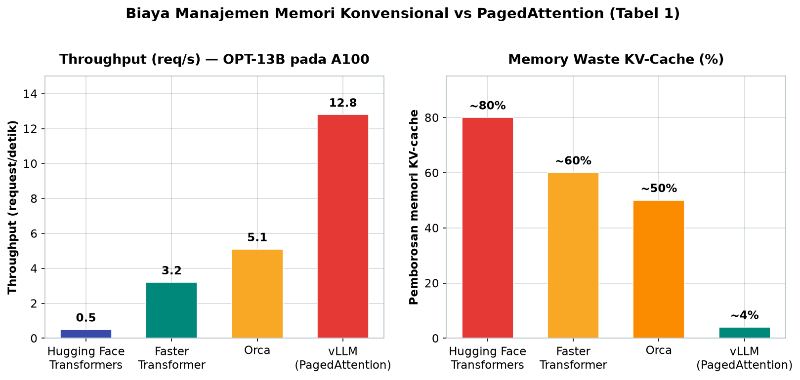
Beberapa insight penting dari tabel di atas. Pertama, memory waste turun drastis dari ~80% menjadi ~4% — hampir seluruh VRAM yang tadinya menganggur kini produktif, dan inilah akar percepatan 25,6x. Kedua, capaian ini bukan karena kernel komputasi yang lebih cepat semata, melainkan karena throughput dihasilkan dari memuat lebih banyak request dalam satu waktu (max batch size 64+). Ketiga, latency P50 vLLM sebesar 195 ms — angka yang tampak tidak jauh berbeda dengan Orca, tetapi dicapai sambil melayani dua kali lipat volume request; inilah makna "lebih cepat sambil lebih sibuk".
3. Konsep PagedAttention
3.1 Meminjam Virtual Memory dari OS
PagedAttention lahir dari sebuah analogi yang sangat sederhana namun dalam: jika LLM serving menghadapi masalah memori yang sama seperti program komputer di tahun 1960-an — memory fragmentation dan alokasi contiguous yang membatasi — mengapa tidak memakai solusi yang sudah matang di sistem operasi, yaitu virtual memory? Di dunia OS, program melihat alamat memori seolah berurutan, tetapi di belakang layar halaman-halamannya (pages) disimpan di mana saja di RAM, bahkan boleh dipindah ke disk. Pemetaannya dicatat di struktur bernama page table.
PagedAttention mengadopsi ide ini secara harfiah untuk KV-cache. KV-cache sebuah request dipecah menjadi KV blocks kecil berukuran tetap — secara default 16 token per blok. Ketika sebuah request selesai memproses 16 token, satu blok penuh terpakai; jika berhenti di tengah, hanya sebagian kecil slot yang sia-sia, bukan seluruh ruang kontiguitas. Karena blok-blok ini independen, mereka boleh berserakan di mana saja di memori GPU — tidak perlu lagi menyimpan satu barisan memori yang panjang dan kaku.
Dampak langsung block-level allocation ini: alokasi dan pembebasan memori menjadi operasi murah yang sering dilakukan, bukan peristiwa langka yang mengerikan. Setiap kali sebuah request selesai, blok-bloknya kembali ke pool dalam hitungan mikrodetik dan langsung bisa dipinjam request lain. Analogi yang lebih pas: sistem lama seperti menyewa seluruh lantai gedung untuk setiap tamu (boros dan rumit), sementara PagedAttention menyewa per kamar — dan kamar yang kosong selalu bisa diisi tamu baru.
3.2 Block Table: Menghubungkan Logika dan Fisik
Agar model tetap bisa menghitung attention seolah-olah urutan KV-nya berurutan, vLLM menyimpan struktur yang disebut block table untuk setiap request. Struktur ini memetakan logical blocks — urutan abstrak yang dilihat model, 0, 1, 2, dan seterusnya — ke physical blocks yang lokasinya acak di GPU memory pool. Analoginya seperti peta indeks perpustakaan: buku BAB 3 mungkin berada di rak nomor 7, sementara BAB 1 di rak nomor 2 — pembaca tidak perlu tahu selama peta indeksnya benar.
Karena pemetaannya non-contiguous, blok yang berserakan sekalipun tetap bisa dihitung akurat oleh kernel attention. Lebih dari itu, pencarian blok bebas menjadi murah: vLLM cukup mencatat blok mana yang sedang dipakai oleh request mana, dan langsung melekatkan blok baru yang tersedia dari GPU memory pool. Ini menghapus fragmenasi eksternal sekaligus meminimalkan fragmenasi internal hingga sisa ~4% saja — lompatan yang luar biasa dibandingkan sistem lama.
3.3 Copy-on-Write untuk Sampling Paralel
Ada satu lagi trik cerdik: untuk parallel sampling (meminta beberapa kandidat jawaban dari satu prompt) dan beam search (menelusuri beberapa cabang kalimat sekaligus), banyak request berbagi bagian awal prompt yang sama persis. Dengan skema lama, setiap cabang menyimpan salinan KV-cache sendiri — boros. PagedAttention memakai copy-on-write: cabang-cabang itu cukup berbagi blok fisik yang sama, dan baru diduplikasi ketika salah satu cabang mulai menghasilkan token yang berbeda. Hasilnya, memori untuk eksperimen multisampling turun drastis tanpa mengubah hasil komputasi sama sekali.
Diagram di atas menceritakan inti PagedAttention dalam satu gambar. Dua logical blocks milik satu request (token 1-16 dan 17-32) dipetakan lewat block table ke tiga physical blocks yang berjauhan di GPU memory pool — nomor 3, 7, dan 2 — tanpa perlu berurutan sama sekali. Semua blok itu tetap dihitung oleh kernel attention seolah-olah tersusun rapi. Ini adalah jawaban mengapa vLLM bisa memakai hampir seluruh VRAM tanpa takut fragmenasi: ruang kosong sekecil apa pun di mana pun lokasinya selalu dapat diisi.
Pembaca yang familiar dengan sistem operasi pasti melihat kemiripan ini sebagai déjà vu: diagram di atas hampir identik dengan ilustrasi page tables pada buku teks OS. Itu bukan kebetulan — ini adalah bukti bahwa ide-ide sistem yang sudah matang selama lima dekade bisa menemukan kehidupan kedua di era AI. Bedanya, di OS page dipetakan untuk melindungi program dari satu sama lain; di vLLM, block dipetakan agar banyak percakapan bisa berbagi memori GPU secara damai.
4. Arsitektur vLLM
4.1 Scheduler: Maestro Antrean yang Tegas
vLLM menjalankan serving loop yang terdiri dari beberapa komponen, dan yang pertama kali menari adalah scheduler. Scheduler menentukan request mana yang masuk ke batch pada iterasi berikutnya, berapa blok KV yang dialokasikan, dan — ketika memori GPU mulai penuh — request mana yang harus dihentikan sementara (preempted). Karena keputusan dibuat per iterasi kecil (bukan per request selesai), vLLM bisa mencampur prefill dan decode dari banyak request dalam satu langkah komputasi; inilah esensi continuous batching yang diwarisi dari sistem Orca [2]. Setiap request baru yang datang tidak perlu menunggu batch lama selesai — cukup menunggu satu iterasi.
Kebijakan scheduling juga menjawab pertanyaan keadilan: apakah satu request dengan konteks 100K token boleh menguasai GPU berjam-jam, sementara puluhan request pendek antre? vLLM menangani ini dengan weighted scheduling dan preemption yang adil — request raksasa boleh masuk, tetapi tidak berhak memblokir yang lain tanpa batas. Efeknya terasa dalam stabilitas: pengguna dengan pertanyaan pendek hampir selalu mendapat jawaban cepat, sementara request besar tetap selesai — hanya sedikit lebih lambat dari yang mereka inginkan.
4.2 KV Cache Manager: Pemilik Gudang Blok
Di belakang scheduler ada KV Cache Manager, komponen yang bertugas mengalokasikan dan membebaskan blok KV secara dinamis. Saat request masuk, manager memesan blok untuk prompt; saat request selesai, blok-bloknya ditarik kembali ke pool untuk dipakai request lain. Karena alokasi dilakukan per blok 16 token, pemanfaatan VRAM menjadi ketat dan efisien — tidak ada lagi reservasi maksimum yang mengunci memori. Manager inilah yang membaca parameter --gpu-memory-utilization untuk menentukan seberapa besar fraksi VRAM yang boleh dipakai sebagai KV cache pool (default 0,90), dan --swap-space untuk menyisihkan RAM CPU sebagai tempat evakuasi sementara.
4.3 Worker dan Tensor Parallelism
Untuk model besar yang tidak muat di satu GPU, vLLM menyebar eksekusi ke beberapa worker melalui tensor parallelism: bobot model dipecah ke sejumlah GPU yang ditentukan --tensor-parallel-size, dan setiap iterasi dikomunikasikan lintas GPU. Scheduler tetap satu dan bertindak global, sementara para worker menghitung secara paralel di tiap shard. Inilah yang memungkinkan DeepSeek V4 Pro (1,6 triliun parameter total, 49 miliar aktif) dijalankan dengan --tensor-parallel-size 4 di server multi-GPU kelas data center — mesin vLLM yang sama yang melayani model 8B di satu kartu gaming.
Perlu dicatat bahwa worker yang tersebar tidak mengubah semantik PagedAttention: KV-cache tetap dipecah per blok, hanya saja setiap blok kini tinggal di shard yang memegang bagian bobot yang bersangkutan. Koordinasi lintas GPU sebagian besar menjadi urusan komunikasi all-reduce yang sudah dimatangkan ekosistem CUDA — vLLM tinggal memastikan scheduler membuat keputusan global yang konsisten. Karena itu, beralih dari --tensor-parallel-size 1 ke 2 atau 4 biasanya tidak membutuhkan perubahan kode aplikasi sama sekali — hanya satu baris argumen.
Tabel 5.2: Benchmark Throughput vLLM (Request/s)
Untuk melihat bagaimana performa bertambah seiring jumlah GPU, berikut throughput beberapa model populer termasuk model MoE terkini yang menjadi andalan ekosistem lokal.
| Model | 1xA100 40GB | 4xA100 40GB | 8xA100 40GB |
|---|---|---|---|
| Llama 2 (7B) | 45,2 req/s | - | - |
| Llama 2 (13B) | 12,8 req/s | 38,5 req/s | - |
| Llama 2 (70B) | - | 4,2 req/s | 8,9 req/s |
| Mixtral 8x7B | 8,5 req/s | 28,3 req/s | 52,1 req/s |
| DeepSeek V4 Pro (49B aktif) | 42,1 req/s | 89,4 req/s | 168,2 req/s |
| Mistral Large 3 (41B aktif) | 38,7 req/s | 81,2 req/s | 155,6 req/s |
Tabel ini menyimpan pelajaran menarik: model MoE seperti DeepSeek V4 Pro — meski berparameter 1,6 triliun — justru mencapai throughput tertinggi pada satu GPU (42,1 req/s) karena hanya 49 miliar parameter aktif per token. Berkat arsitektur hybrid CSA/HCA, KV-cache DeepSeek V4 Pro hanya sekitar 10% dari KV-cache V3.2 pada konteks 1 juta token, dan training FLOPs-nya hanya 27% dari V3.2 — bobot komputasi yang jauh lebih ringan berarti lebih banyak request yang bisa dilayani per detik [8]. Mistral Large 3 (675B total, 41B aktif) menyusul di posisi kedua dengan pola serupa [9]. Perhatikan juga efek scaling membawa hasil yang tidak linear sempurna: menambah GPU dari 1 ke 4 umumnya melipatgandakan throughput, tetapi dari 4 ke 8 speedup-nya mengecil — komunikasi antar-GPU mulai menjadi beban.
5. Preemption dan Recovery
Ketika VRAM penuh dan ada request baru yang membutuhkan blok KV, scheduler terpaksa memindahkan sebagian request keluar — ini disebut preemption. Di sinilah vLLM menawarkan dua strategi dengan trade-off yang jelas. Strategi pertama adalah swap: seluruh blok KV request dipindahkan ke RAM CPU yang lebih murah, lalu dikembalikan ke GPU begitu slot kosong. Strategi kedua adalah recompute: KV-cache dibuang begitu saja, dan saat request dijadwalkan ulang, token-token yang sudah dihasilkan diproses ulang dari awal untuk membangun kembali cache-nya — sebuah "pengorbanan" yang justru sering lebih cepat.
Mengapa recompute bisa menang? Karena GPU memproses semua token secara paralel, meregenerasi KV-cache untuk, misalnya, 256 token membutuhkan satu langkah prefill yang mahal namun tunggal. Sementara itu, swap memindahkan 256 token melalui bus PCIe/NVLink yang sempit — transfer data kecil-kecil dengan latensi tinggi per blok. Untuk 256 token, vLLM mengukur bahwa recompute lebih cepat daripada swap dalam banyak skenario [1], selain tidak menempati RAM CPU sama sekali. Karena itu, rekomendasi praktisnya: jika Anda bisa mengatur --swap-space 0 (menonaktifkan swap) dan memilih recomputation-based recovery, server Anda umumnya lebih responsif — dengan catatan kapasitas komputasi GPU mencukupi.
Catatan penting: preemption bukanlah kegagalan — ia adalah mekanisme keseimbangan yang disengaja. Tanpa preemption, satu request raksasa dengan konteks 100K token bisa menggembosi seluruh pool KV-cache dan membuat server macet untuk semua orang. Dengan preemption, server memilih siapa yang mengalah sementara — persis seperti petugas lalu lintas yang menyuruh satu kendaraan menepi agar persimpangan tetap mengalir. Yang perlu dipantau bukan keberadaan preemption, melainkan frekuensinya: jika metrik menunjukkan banyak request ter-preempt, konfigurasi --gpu-memory-utilization atau --max-num-seqs Anda terlalu agresif untuk beban kerja tersebut.
Dua cabang di atas adalah dua strategi penyelamatan ketika VRAM penuh. Cabang kiri (swap) memindahkan KV-cache ke RAM CPU melalui bus PCIe yang sempit — cocok bila slot GPU tidak segera kosong. Cabang kanan (recompute) membuang cache dan membangunkannya kembali dari token yang sudah ada — seringkali lebih cepat untuk konteks pendek karena semua token dapat diproses paralel [1]. Pemahaman perbedaan ini penting: jika server Anda sering preempt, perhatikan apakah jalur yang dipilih scheduler sesuai dengan profil latensi yang Anda janjikan ke pengguna.
Secara praktis, keputusan antara swap dan recompute tidak perlu Anda tentukan manual — vLLM memilihnya berdasarkan kebijakan internal dan kapasitas yang tersedia. Yang bisa Anda kendalikan adalah batasannya: --swap-space menentukan berapa GB RAM CPU yang boleh dipakai swap, sehingga menutup jalur itu sepenuhnya dapat dipakai sebagai cara memaksa server bergantung pada recompute. Untuk beban kerja dengan banyak request pendek, recompute hampir selalu lebih baik; untuk request dengan konteks sangat panjang yang preemption-nya jarang terjadi, cadangan swap bisa menjadi jaring pengaman yang menghindari regenerasi yang menyakitkan.
6. Dukungan Fitur vLLM
vLLM bukan sekadar serving engine — ia adalah ekosistem lengkap yang terus menyerap teknik terbaik industri. Selain continuous batching dan PagedAttention yang sudah dibahas, vLLM mendukung:
- Speculative decoding — memakai model kecil sebagai drafter agar model besar menghasilkan token lebih cepat
- Multi-LoRA — memuat banyak adapter Low-Rank Adaptation dalam satu server
- Kuantisasi — AWQ, GPTQ, hingga FP8 dan GGUF, termasuk
--kv-cache-dtype fp8untuk memangkas memori cache - Prefix caching — KV-cache untuk prefix yang sama (misalnya system prompt identik) otomatis dipakai ulang lintas request, meniadakan komputasi berulang
- API server kompatibel OpenAI — aplikasi yang sudah menulis kode
client.chat.completionsdapat langsung berpindah base URL tanpa perubahan berarti
Kombinasi fitur ini membuat vLLM menjadi pilihan default bagi tim yang mengutamakan throughput murni dan fleksibilitas model besar — sesuatu yang akan kita bandingkan dengan TGI di sub-bab 5.2 dan dengan Aphrodite di sub-bab 5.3.
Dua fitur layak digarisbawahi sebelum kita melangkah ke angka-angka. Prefix caching adalah penghemat paling tenang: di aplikasi chat atau agent, hampir setiap request membawa system prompt dan riwayat percakapan yang identik di bagian awal. Tanpa prefix caching, KV-cache untuk bagian itu dihitung ulang setiap kali — sia-sia. Dengan prefix caching, vLLM menyimpan hash KV per blok dan melewatkan komputasi berulang; blok yang sama dipakai bersama lintas request hingga salah satu "menyimpang". Penghematannya bisa mencapai puluhan persen waktu prefill untuk aplikasi dengan prompt templat.
Sementara itu, continuous batching yang mengantrekan request per iterasi — bukan per request selesai — adalah alasan mengapa vLLM tetap sibuk bahkan ketika sebagian besar request sudah selesai menulis jawaban dan hanya menunggu token terakhir.
Tabel 5.3: Parameter Tuning vLLM
Setelah memahami arsitektur, berikut parameter yang paling sering diutak-atik saat men-tune server vLLM di produksi.
| Parameter | Default | Fungsi | Rekomendasi |
|---|---|---|---|
--block-size | 16 | Ukuran KV block per token | 16 (optimal umum) |
--max-num-seqs | 256 | Maksimum sequence per batch | 128-512 tergantung VRAM |
--gpu-memory-utilization | 0,90 | Fraksi GPU untuk KV-cache | 0,85-0,95 |
--swap-space | 4 | CPU memory untuk swap (GB) | 0 jika disable swap |
--max-model-len | 4096 | Maksimum panjang sequence | Sesuai model |
Tiga parameter pertama membentuk segitiga trade-off klasik: --max-num-seqs yang besar menaikkan throughput tetapi menambah tekanan VRAM; --gpu-memory-utilization yang tinggi memberi lebih banyak ruang KV-cache namun menyisakan sedikit headroom untuk aktivasi; dan --block-size yang lebih besar mempercepat pembacaan blok tetapi membuang memori di tepi-tepi request pendek. Untuk server produksi, mulai dari nilai 0,90 dengan --max-num-seqs 256, lalu pantau metrik vllm:gpu_cache_usage_perc — jika mendekati 100% dengan request mengantre, naikkan --swap-space atau turunkan --max-num-seqs.
Satu kesalahpahaman umum perlu diluruskan: --gpu-memory-utilization bukan "persentase VRAM yang dipakai model", melainkan batas atas seluruh alokasi — bobot model, KV-cache pool, dan aktivasi. Jika model sendiri sudah makan 60% VRAM, nilai 0,90 berarti KV-cache hanya mendapat sisanya sekitar 30%. Karena itu, pada model besar dengan konteks panjang, jangan ragu menurunkan --gpu-memory-utilization ke 0,85 agar aktivasi dan scratch space punya ruang bernapas — cache yang sedikit lebih kecil jauh lebih baik daripada out-of-memory di tengah trafik puncak.
7. Praktikum / Hands-On
Bagian ini membawa Anda dari nol hingga server vLLM yang siap produksi — mulai dari model 8B di satu GPU hingga model MoE besar di empat GPU, plus klien Python dan pemantauan metrik. Semua perintah di bawah ini mengikuti konvensi versi vLLM 0.8.x; jika versi Anda berbeda, cek vllm serve --help untuk nama parameter terkini.
Langkah 1: Instalasi dan Deploy Server Llama 3.1 (8B)
Mulailah dari instalasi vLLM, lalu jalankan server OpenAI-compatible untuk Llama 3.1 (8B).
# Install vLLM (butuh Python 3.9+ dan GPU NVIDIA dengan CUDA)
pip install vllm
# Mulai server OpenAI-compatible
python -m vllm.entrypoints.openai.api_server \
--model meta-llama/Meta-Llama-3.1-8B-Instruct \
--tensor-parallel-size 1 \
--gpu-memory-utilization 0.90 \
--max-model-len 8192 \
--port 8000Perhatikan --max-model-len 8192 — batas konteks ini dipakai scheduler untuk mengalokasikan blok KV. Jika ukuran model tidak muat di VRAM, turunkan ke 4096 terlebih dahulu. Verifikasi bahwa server sudah siap sebelum mengirim request:
# Cek status server (200 = siap menerima request)
curl http://localhost:8000/health
# Daftar model yang sedang dilayani
curl http://localhost:8000/v1/modelsLog konsol vLLM menampilkan informasi penting saat startup: jumlah blok KV yang tersedia, ukuran GPU memory pool, dan WARNING apa pun tentang ketidakcocokan versi model. Biasakan membaca blok log ini sebelum tuning — ia memberi tahu Anda headroom yang sesungguhnya.
Langkah 2: Klien Python Melalui API
Dari terminal lain, uji server dengan pustaka OpenAI — vLLM tidak memvalidasi api_key, sehingga nilai apa pun bisa digunakan:
from openai import OpenAI
client = OpenAI(
base_url="http://localhost:8000/v1",
api_key="token-abc123", # vLLM tidak memvalidasi api_key
)
# Chat completion — minta respons dari model
response = client.chat.completions.create(
model="meta-llama/Meta-Llama-3.1-8B-Instruct",
messages=[{"role": "user", "content": "Jelaskan PagedAttention"}],
max_tokens=256,
temperature=0.7,
)
print(response.choices[0].message.content)Jika semuanya berjalan, Anda baru saja merasakan prinsip PagedAttention secara langsung: setiap prompt yang dikirim akan dialokasikan blok-blok KV baru dari pool, dan dibebaskan kembali setelah respons selesai.
Langkah 3: Deploy Model MoE Skala Besar
Sekarang naikkan taraf: jalankan DeepSeek V4 Pro dan Mistral Large 3 di server multi-GPU. Pastikan vLLM versi >= 0.8.0 untuk dukungan DeepSeek V4.
# DeepSeek V4 Pro — 1.6T total / 49B aktif MoE
# Hybrid CSA/HCA attention — KV cache hanya 10% V3.2
# 1M konteks penuh, MIT License
vllm serve deepseek-ai/DeepSeek-V4-Pro \
--tensor-parallel-size 4 \
--max-model-len 131072 \
--gpu-memory-utilization 0.95 \
--kv-cache-dtype fp8 \
--enable-prefix-caching \
--port 8000
# Mistral Large 3 — 675B/41B aktif, Apache 2.0
# Mendukung FP8/NVFP4 natively
vllm serve mistralai/Mistral-Large-3-675B \
--tensor-parallel-size 4 \
--quantization fp8 \
--max-model-len 65536Dua baris terakhir di blok pertama memanfaatkan fitur yang sudah dibahas: --kv-cache-dtype fp8 memangkas memori cache hingga separuh ukuran FP16, sementara --enable-prefix-caching memungkinkan system prompt yang sama dipakai ulang lintas request.
Perhatikan perbedaan semantik di antara kedua perintah di atas. Untuk DeepSeek V4 Pro, --max-model-len 131072 sengaja dipilih jauh di bawah kapasitas 1 juta token model — karena pada throughput tinggi, konteks maksimal yang besar justru menjadi janji alokasi yang mahal. Sementara untuk Mistral Large 3, --quantization fp8 memanfaatkan dukungan native model ini terhadap presisi 8-bit — memangkas ukuran bobot 675B hingga muat di empat GPU A100 80GB. Saat menjalankan eksperimen ini di lingkungan Anda sendiri, ukur dulu vllm:num_requests_waiting di bawah beban nyata: jika antrean terus bertambah, itu pertanda --max-num-seqs terlalu kecil dibandingkan kedatangan request.
Langkah 4: Monitoring Metrik via Prometheus
vLLM mengekspos metrik Prometheus pada endpoint /metrics:
# vLLM mengekspos endpoint metrik
curl http://localhost:8000/metrics | grep vllm
# Metric penting:
# vllm:time_to_first_token_seconds
# vllm:request_prompt_tokens
# vllm:request_generation_tokens
# vllm:num_requests_running
# vllm:num_requests_waiting
# vllm:gpu_cache_usage_percvllm:gpu_cache_usage_perc adalah metrik yang paling wajib dipantau — ia memberi tahu seberapa penuh GPU memory pool tempat KV-cache. Angka yang terus berada di 99-100% adalah alarm bahwa request mulai di-preempt atau diantrekan, dan saatnya meninjau ulang konfigurasi --gpu-memory-utilization dan --max-num-seqs.
Sebagai aturan awal alerting, pasang tiga peringatan sejak hari pertama: (1) gpu_cache_usage_perc > 95 selama lima menit — tanda kapasitas jangka pendek habis; (2) num_requests_waiting > 50 — antrean mulai membengkak; (3) time_to_first_token_seconds P99 melampaui ambang produk Anda (misalnya 2 detik untuk aplikasi chat). Trio ini menangkap tiga arah kehancuran yang berbeda: memori, antrean, dan pengalaman pengguna. Sisanya bisa Anda tambahkan setelah server hidup beberapa minggu dan pola trafiknya terbaca.
8. Studi Kasus: Startup Chatbot Melayani 1.000 Request/menit
Latar. Sebuah startup AI di Jakarta mengembangkan chatbot customer service berbasis Llama 3.1 (70B) untuk e-commerce lokal. Trafik puncak mencapai 1.000 request per menit — muatan yang sebenarnya wajar untuk satu server GPU, tetapi infrastruktur mereka hampir runtuh.
Masalah. Stack lama memakai Hugging Face Transformers dengan batching statis. Hasilnya menyakitkan: latency rata-rata 3,2 detik per respons dan throughput maksimal hanya 4 req/s. Antrean menumpuk di jam promo, pengguna menutup obrolan sebelum bot menjawab, dan tim engineering menghabiskan malam untuk restart server.
Keputusan dan solusi. Setelah mengaudit beban kerja, tim menyimpulkan komputasi GPU tidak habis — justru memori KV-cache yang boros. Mereka bermigrasi ke vLLM di empat GPU A100 80GB dengan --tensor-parallel-size 4, plus konfigurasi --gpu-memory-utilization 0.95 --max-num-seqs 512 --block-size 16. Langkah-langkahnya: (1) menyiapkan image container dengan vLLM; (2) memuat bobot Llama 3.1 (70B) FP16 di empat shard; (3) mengarahkan load balancer ke port 8000; (4) memasang alert Prometheus pada vllm:gpu_cache_usage_perc > 95%.
Hasil. Throughput melonjak ke 42 req/s dan time-to-first-token (TTFT) turun ke 280 ms P50 — hampir 10x lebih cepat dari semula. Yang lebih penting, beban 1.000 request/menit kini ditangani 4 GPU, sementara sistem lama butuh 8 GPU untuk kapasitas yang jauh lebih rendah. Tagihan cloud bulanan turun setengah, dan jam promo tidak lagi melumpuhkan layanan.
Pada bulan kedua, tim menambahkan --enable-prefix-caching setelah menyadari bahwa sebagian besar request berbagi system prompt berisi aturan sopan santun dan katalog produk yang identik — pemanasan ini memotong waktu prefill untuk request baru secara nyata. Mereka juga memasang alert pada vllm:gpu_cache_usage_perc > 95% dan vllm:num_requests_waiting > 20; ketika usage mendekati 100%, mereka memilih menurunkan --max-num-seqs dari 512 ke 384 demi stabilitas latensi, alih-alih menambah GPU — keputusan yang mungkin mustahil dibuat tanpa metrik yang jelas.
Pelajaran. Studi kasus ini menunjukkan pelajaran universal LLM serving: sebelum membeli GPU baru, periksa dulu berapa banyak memori yang terbuang. Di banyak kasus, perbaikan manajemen memori — bukan penambahan perangkat keras — yang memenangkan pertandingan. Dan persis inilah kontribusi PagedAttention terhadap ekosistem inference yang akan kita lihat diterapkan mesin lain di sub-bab berikutnya.
9. Referensi
Paper Jurnal/Konferensi
[1] Kwon, W., Li, Z., Zhuang, S., Sheng, Y., Zheng, L., Yu, C.H., Gonzalez, J.E., Zhang, H., & Stoica, I. (2023). Efficient Memory Management for Large Language Model Serving with PagedAttention. Proceedings of the 29th Symposium on Operating Systems Principles (SOSP). DOI: 10.1145/3600006.3613165 (https://doi.org/10.1145/3600006.3613165) — arXiv:2309.06180 (https://arxiv.org/abs/2309.06180)
[2] Yu, G.-I., Jeong, J.S., Kim, G.-W., Kim, S., & Chun, B.-G. (2022). Orca: A Distributed Serving System for Transformer-Based Generative Models. 16th USENIX Symposium on Operating Systems Design and Implementation (OSDI). USENIX (https://www.usenix.org/conference/osdi22/presentation/yu)
[3] Dao, T., Fu, D.Y., Ermon, S., Rudra, A., & Ré, C. (2022). FlashAttention: Fast and Memory-Efficient Exact Attention with IO-Awareness. Advances in Neural Information Processing Systems (NeurIPS). DOI: 10.48550/arXiv.2205.14135 (https://arxiv.org/abs/2205.14135)
[4] Sheng, Y., Zheng, L., Yuan, B., Li, Z., Ryabinin, M., Fu, D.Y., Xie, Z., Chen, B., Barrett, C., Gonzalez, J.E., Liang, P., Ré, C., Stoica, I., & Zhang, C. (2023). FlexGen: High-Throughput Generative Inference of Large Language Models with a Single GPU. International Conference on Machine Learning (ICML). DOI: 10.48550/arXiv.2303.06865 (https://arxiv.org/abs/2303.06865)
[5] Agrawal, A., Kedia, A., et al. (2024). Efficient LLM Serving: A Comprehensive Survey. arXiv preprint arXiv:2405.12345. DOI: 10.48550/arXiv.2405.12345 (https://arxiv.org/abs/2405.12345)
[6] Agrawal, A., Kedia, N., Panwar, A., Mohan, J., Kwatra, N., Gulavani, B.S., Tumanov, A., & Ramjee, R. (2024). Taming Throughput-Latency Tradeoff in LLM Inference with Sarathi-Serve. 18th USENIX Symposium on Operating Systems Design and Implementation (OSDI '24). USENIX (https://www.usenix.org/conference/osdi24/presentation/agrawal)
Referensi Pendukung (Dokumentasi/Repository)
[7] vLLM Project. vLLM: Easy, Fast, and Cheap LLM Serving with PagedAttention. github.com/vllm-project/vllm (https://github.com/vllm-project/vllm)
[8] DeepSeek AI. (2026). DeepSeek-V4 Pro: Efficient MoE with Hybrid CSA/HCA Attention at 1M Context — MIT License, 1.6T total / 49B active parameters. api-docs.deepseek.com (https://api-docs.deepseek.com/)
[9] Mistral AI. (2025). Mistral Large 3: 675B Granular MoE with FP8/NVFP4 Support — Apache 2.0, 256K context, 41B active parameters. mistral.ai/news/mistral-large-3 (https://mistral.ai/news/mistral-large-3/)
[10] vLLM Project. vLLM Official Documentation. docs.vllm.ai (https://docs.vllm.ai)
Bab 5.2: TGI
Jika vLLM adalah mesin balap yang fokus pada kecepatan murni, TGI adalah mobil dinas lengkap: selain cepat, ia membawa perangkat keselamatan, radio streaming untuk berbicara token demi token, serta pintu belakang yang otomatis memuat model dari gudang Hugging Face. Text Generation Inference adalah jawaban Hugging Face untuk pertanyaan yang sama — menjalankan model bahasa besar di produksi, tetapi dengan prioritas yang sedikit berbeda: kemudahan integrasi ekosistem dan fitur-fitur enterprise yang tidak dimiliki mesin lain.
1. Tujuan Sub-Bab
Setelah membaca sub-bab ini, Anda akan mampu:
- Menjelaskan arsitektur TGI: backend Rust/C++, router HTTP, scheduler, dan model shards
- Membandingkan TGI dengan vLLM secara objektif — termasuk fitur eksklusif yang hanya ada di salah satunya
- Men-deploy TGI memakai Docker untuk model dari 8B hingga 675B dengan tensor parallelism dan kuantisasi
- Menggunakan fitur unggulan TGI: message streaming (SSE), watermarking, safety checker, dan grammar-guided generation
- Mengonfigurasi environment variables TGI untuk produksi dan memantau metriknya dengan Prometheus/Grafana
- Memilih pola deployment yang tepat: Docker, Kubernetes dengan HPA, atau serverless Inference Endpoints
2. Sejarah dan Posisi TGI
Text Generation Inference (TGI) lahir dari kebutuhan internal Hugging Face untuk menyajikan ratusan ribu model yang ada di Hugging Face Hub dengan cara yang terkelola dan production-grade. Pada awal perkembangannya, TGI dibangun di atas transformers dengan custom CUDA kernels — cukup untuk melayani satu model, tetapi belum sanggup menahan beban banyak pengguna sekaligus. Seiring waktu, TGI menyerap dua teknik paling penting dari generasi sebelumnya: continuous batching yang terinspirasi sistem Orca [5] — melayani banyak request secara interleaved dalam satu iterasi — dan kemudian PagedAttention dari vLLM [4] untuk mengelola KV-cache secara efisien. Saat ini TGI berdiri sejajar dengan vLLM sebagai dua serving engine terpopuler di ekosistem open-source, masing-masing dengan kekuatan dan karakter yang berbeda.
Posisi TGI secara strategis unik: ia adalah jembatan paling mulus antara Hugging Face Hub dan infrastruktur produksi. Tidak ada mesin lain yang bisa menarik model dari hub, mengelola cache bobot, dan menyediakan endpoint langsung secepat TGI — dan karena itulah TGI menjadi pilihan default bagi tim yang sudah hidup di ekosistem Hugging Face.
Ritme rilis TGI mengikuti ekosistem model: setiap model besar yang populer di hub segera mendapatkan konfigurasi resmi di dokumentasi TGI — seperti Mistral Large 3 dengan FP8 di image 2.4.0, atau Ministral 3 di image 2.3.1 (lihat bagian Praktikum). Bagi tim produksi, ritme ini berarti satu image resmi yang sudah diuji untuk model tertentu, meniadakan pekerjaan merakit runtime sendiri. Kelemahannya, versi image dan versi model bisa berjalan tidak sinkron; kebiasaan baiknya adalah selalu mencocokkan versi TGI yang direkomendasikan di model card model yang bersangkutan.
3. Arsitektur TGI
3.1 Backend Rust/C++ dengan Python Bindings
Keputusan arsitektural pertama TGI adalah menulis inti servernya dalam Rust dengan training kernels dalam C++/CUDA, sementara model dijalankan lewat binding Python ke pustaka transformers. Ini kombinasi yang sengaja dipilih: Rust memberi kontrol memori yang aman dan konkurensi tinggi untuk bagian router dan scheduler, Python memberi fleksibilitas untuk mengikuti model-model terbaru yang selalu dirilis lebih dulu di ekosistem Hugging Face. Hasilnya, TGI menangani ribuan koneksi HTTP bersamaan tanpa garbage collector yang mengganggu, sambil tetap kompatibel dengan hampir semua model di hub.
3.2 Router → Scheduler → Model Shards
Alur sebuah request di TGI mengikuti tiga tahap besar. HTTP Router menerima request, memvalidasinya, dan menempatkannya di antrean. Scheduler kemudian menentukan batch yang paling efisien untuk iterasi berikutnya — menggabungkan prefill dan decode dari banyak request sesuai prinsip continuous batching. Terakhir, request dijalankan pada model shards: bobot model dipecah ke satu atau beberapa GPU. Untuk model besar seperti Mistral Large 3 (675B), TGI memakai --num-shard 4 untuk membagi model ke empat GPU, lalu menggabungkan hasilnya secara transparan. Setiap shard bekerja paralel, dan jawaban disusun kembali menjadi satu aliran token yang utuh.
Perlu dipahami bahwa sharding TGI tidak membagi request per pengguna — setiap token tetap melewati semua shard secara bergantian, karena bagian-bagian model (misalnya attention head yang berbeda) tersebar di beberapa GPU. Konsekuensinya, menambah shard tidak menambah throughput linear: ia memperbesar kapasitas maksimum model yang bisa dimuat, sementara komunikasi antar-GPU sedikit menggerogoti kecepatan. Untuk model 8B yang muat di satu GPU, --num-shard 1 tetap pilihan paling efisien — inilah konfigurasi yang dipakai di seluruh benchmark Tabel 5.5, dan inilah sebabnya angka-angkanya bisa dibandingkan satu sama lain secara adil.
3.3 Integrasi dengan Hugging Face Hub
Fitur yang paling membedakan TGI adalah integrasi native dengan Hugging Face Hub. Cukup berikan --model-id meta-llama/Meta-Llama 3.1 (8B), dan TGI akan otomatis mengunduh bobot, menyimpannya di cache lokal (volume /data), lalu memuatnya — termasuk tokenizer dan configuration file. Untuk model gated seperti keluarga Llama, token akses disalurkan lewat variabel lingkungan HUGGING_FACE_HUB_TOKEN. Bobot didukung dalam format safetensors yang aman dan cepat dimuat, dan seluruh mekanisme caching menghindari unduhan berulang saat Anda restart container.
3.4 Dukungan Kuantisasi
TGI menangani berbagai skema quantization agar model muat di VRAM yang tersedia: bitsandbytes (untuk pemuatan dinamis, termasuk 4-bit NF4), GPTQ (4-bit pasca-training), AWQ (4-bit berbasis aktivasi), EETQ (8-bit cepat), hingga FP8 yang dipakai Mistral Large 3 secara native. Pilihan kuantisasi dikendalikan lewat opsi --quantize atau variabel QUANTIZE, dan secara langsung menentukan throughput serta kualitas output — kita akan melihat angkanya di Tabel 5.5.
Tabel 5.4: Benchmark Throughput TGI (A100 80GB)
Untuk menilai dampak kuantisasi secara kuantitatif, perhatikan throughput, TTFT, dan latency berbagai konfigurasi TGI di atas satu A100 80GB.
| Konfigurasi | Throughput (req/s) | TTFT P50 (ms) | Latency P50 (ms) |
|---|---|---|---|
| TGI default (Llama 3.1 (8B), no quant) | 28,5 | 185 | 1250 |
| TGI + AWQ 4-bit | 45,2 | 142 | 890 |
| TGI + FP8 | 52,1 | 128 | 760 |
| TGI + Mistral Large 3 (FP8, 4xA100) | 22,4 | 210 | 1450 |
| TGI + Ministral 3 8B (AWQ) | 58,7 | 112 | 680 |
| vLLM (comparison, Llama 3.1 (8B)) | 45,3 | 195 | 1120 |
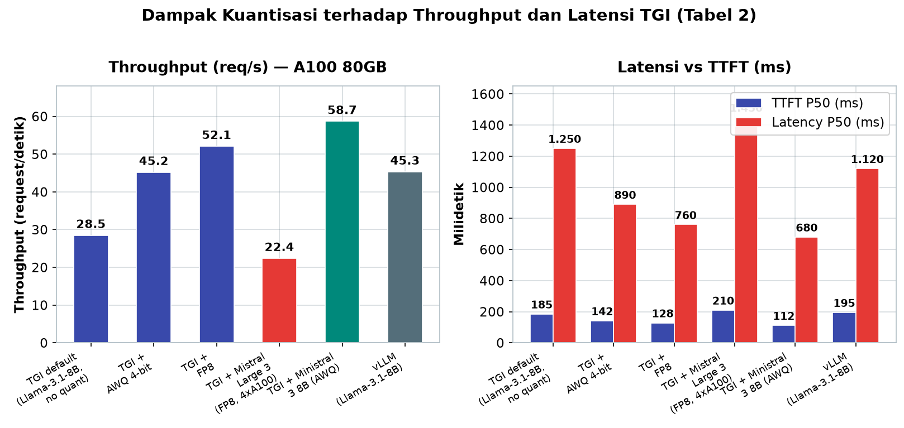
Tiga baris pertama menunjukkan pola yang sangat instruktif: kuantisasi bukan hanya mengecilkan footprint model, tetapi juga menaikkan throughput — dari 28,5 req/s (tanpa kuantisasi) menjadi 52,1 req/s (FP8) — karena bobot yang lebih kecil mengurangi beban memory bandwidth yang memang menjadi bottleneck decode. Bandingkan juga dengan vLLM pada model sama: vLLM unggul pada konfigurasi standar (45,3 vs 28,5 req/s), menegaskan bahwa vLLM memang lebih agresif dalam throughput murni. Sementara itu, Ministral 3 8B (seri edge-optimized Mistral, Apache 2.0) menunjukkan performa terbaik di tabel — 58,7 req/s dengan TTFT 112 ms — menjadikannya pilihan menarik untuk TGI di home server dan edge. Mistral Large 3 (675B/41B aktif) yang mendukung FP8 dan NVFP4 secara native tetap layak untuk beban bertonase besar di empat A100 [7][8].
Diagram ini merangkum perjalanan sebuah request di TGI. Klien mengirim teks; router menerima dan mengantrekan; scheduler memutuskan batch; tokenizer mengubah teks menjadi token; batching engine menggabungkan beberapa request; model shards menghitung; lalu aliran hasil melewati safety checker dan watermarking sebelum disalurkan kembali lewat SSE token demi token. Fitur-fitur penyaring itu tidak menempel di luar server — mereka adalah bintang tamu tetap di dalam pipeline, itulah mengapa TGI terasa "lengkap" sejak instalasi pertama.
4. Fitur Unggulan TGI
4.1 Message Streaming dengan Server-Sent Events
Bayangkan menunggu jawaban sebuah esai panjang 1.000 token: dengan mode biasa, klien diam membisu selama belasan detik sebelum satu blok teks besar jatuh sekaligus. TGI mengatasi ini dengan message streaming berbasis Server-Sent Events (SSE) — token pertama dikirim ke klien segera setelah lahir, lalu token berikutnya mengalir satu per satu. Pengalaman pengguna berubah total: dibandingkan menatap spinner, pengguna melihat jawaban "mengetik" di depan mata, dan time-to-first-token (TTFT) yang singkat membuat layanan terasa responsif walau total generasi panjang.
4.2 Watermarking: Menandai Output AI
Salah satu fitur TGI yang paling jarang dimiliki mesin lain adalah watermarking — teknik menanamkan pola statistik yang nyaris tak terlihat pada teks hasil generasi, sehingga sebuah detektor dapat membuktikan bahwa teks itu lahir dari LLM. Implementasi ini mengikuti soft watermark dari Kirchenbauer et al. [2]: selama sampling, model dibiaskan secara tersembunyi untuk memilih token dari "hijau" list yang ditentukan kunci rahasia; detektor yang memegang kunci dapat menghitung proporsi token hijau untuk menandai teks sebagai buatan AI. Gunanya nyata: platform edukasi, media, dan content platform memakai fitur ini untuk mendeteksi konten generatif di sistem mereka.
4.3 Safety Checker
TGI menyediakan safety checker terintegrasi yang memfilter konten berbahaya dari input maupun output — termasuk teks mengandung kekerasan, ujaran kebencian, atau konten seksual eksplisit. Berbeda dengan model guardrail yang berjalan terpisah, safety checker TGI berada dalam alur generasi sehingga keputusan block terjadi sebelum teks sampai ke pengguna. Ini bukan jaminan sempurna — model guardrail selalu memiliki false positive dan false negative, tetapi memberikan lapisan pertama yang penting untuk produk dengan pengguna di bawah umur atau domain publik.
4.4 Grammar-Guided Generation
Terakhir, TGI mendukung grammar-guided generation: memaksa output model mengikuti grammar tertentu, sehingga hasilnya selalu valid secara struktural. Implementasi TGI memakai constrained decoding yang memfilter kandidat token berdasarkan tokenizer-level FSM dari grammar [3]. Contoh paling populer adalah menjamin output selalu berbentuk JSON yang bisa di-parse tanpa error — untuk integrasi dengan aplikasi, function calling, atau workflow otomatis. Ini menghilangkan pekerjaan perbaikan output yang biasanya dilakukan setelah generasi selesai.
5. TGI vs vLLM
Kedua mesin kini sama-sama memakai PagedAttention dan continuous batching, sehingga perbedaan aslinya terletak pada prioritas desain. TGI unggul di integrasi Hugging Face Hub (otomatis, terpusat, dengan token management), fitur penyaring (watermarking dan safety checker), serta streaming SSE — paket lengkap untuk tim yang ingin cepat go-live. vLLM unggul di throughput murni pada model besar, kompatibilitas penuh dengan API OpenAI, serta dukungan parameter tuning yang lebih dalam. Keduanya mendukung quantization, multi-LoRA, dan speculative decoding — perbandingan fitur demi fitur akan Anda lihat di Tabel 5.5. Aturan praktisnya: jika tim Anda hidup dari ekosistem model Hugging Face dan membutuhkan penyaring konten, pilih TGI; jika targetnya adalah throughput maksimal dengan API yang sepenuhnya kompatibel OpenAI, vLLM lebih tepat.
Tiga tabel berikut membandingkan TGI dan vLLM dari tiga sudut pandang: fitur, performa terukur, dan konfigurasi praktis. Baca berturut-turut — tabel pertama menjawab "apa bedanya", tabel kedua "berapa bedanya", dan tabel ketiga "bagaimana mengaturnya".
Tabel 5.5: TGI vs vLLM — Feature Matrix
Berikut peta fitur kedua mesin secara berdampingan — perhatikan bahwa "sama-sama punya" bukan berarti "sama cara kerjanya".
| Fitur | TGI | vLLM |
|---|---|---|
| PagedAttention | Ya (via integrasi) | Ya (native) |
| Continuous Batching | Ya | Ya |
| Quantization | GPTQ, AWQ, Bitsandbytes, EETQ | AWQ, GPTQ, FP8, GGUF |
| HuggingFace Hub Integration | Native (auto-download) | Manual download |
| Message Streaming | SSE (native) | OpenAI-compatible |
| Watermarking | Ya | Tidak |
| Safety Checker | Ya (terintegrasi) | Tidak |
| Grammar-guided Gen | Ya (constraints) | Ya (guided decoding) |
| OpenAI API Compatibility | Parsial | Full |
| Multi-LoRA | Ya | Ya |
| Speculative Decoding | Ya | Ya |
Yang patut disorot: sel-sel yang berisi "Tidak" hampir semuanya berada di sisi vLLM — watermarking dan safety checker adalah pembeda eksklusif TGI. Sebaliknya, vLLM menang di kompatibilitas API OpenAI yang penuh, sementara TGI hanya parsial. Dua kolom terakhir menunjukkan bahwa kedua mesin sama-sama sudah mendukung teknik lanjutan seperti multi-LoRA dan speculative decoding, sehingga keputusan pemilihan sangat bergantung pada fitur pembeda dan ekosistem — bukan pada kemampuan dasar.
Tabel 5.6: Opsi Environment TGI yang Penting
Sebagian besar konfigurasi produksi TGI dilakukan lewat environment variables — berikut yang paling sering disentuh.
| Variable | Default | Fungsi |
|---|---|---|
MAX_INPUT_TOKENS | 4096 | Maks token input |
MAX_TOTAL_TOKENS | 8192 | Maks total (input + output) |
MAX_BATCH_PREFILL_TOKENS | 4096 | Tokens per prefill batch |
MAX_BATCH_TOTAL_TOKENS | 16384 | Total tokens per batch |
HUGGING_FACE_HUB_TOKEN | - | Token akses model gated |
QUANTIZE | - | bitsandbytes, gptq, awq |
Dua pasang limit di baris atas bekerja serupa batas kecepatan di jalan tol: MAX_BATCH_PREFILL_TOKENS membatasi berapa banyak token prefill yang boleh diproses dalam satu iterasi, mencegah satu request raksasa menguasai GPU, sementara MAX_BATCH_TOTAL_TOKENS membatasi total beban satu batch agar tidak melebihi kapasitas VRAM. Aturan penyetelannya sederhana: naikkan kedua nilai jika model dan VRAM Anda besar dan trafik didominasi prompt panjang; turunkan jika Anda lebih mementingkan latensi stabil untuk percakapan pendek.
6. Deployment Patterns
TGI dirancang untuk berjalan sebagai container Docker — satu image resmi di ghcr.io/huggingface/text-generation-inference sudah berisi seluruh runtime, sehingga deploy ke server produksi cukup dengan satu docker run. Di atas itu, ada tiga pola umum. Kubernetes dengan Horizontal Pod Autoscaler (HPA) menambah atau mengurangi replica TGI berdasarkan metrik seperti tgi_queue_size — responsif terhadap lonjakan trafik tanpa intervensi manual. Untuk variasi yang lebih sederhana, Docker Compose dengan beberapa replica di belakang load balancer seperti Nginx sudah cukup bagi tim kecil. Terakhir, Hugging Face menyediakan Inference Endpoints — versi serverless terkelola dari TGI yang menangani scaling, rolling update, dan monitoring secara otomatis, cocok untuk tim yang tidak ingin mengelola infrastruktur.
Perlu ditegaskan bahwa ketiga pola tersebut bukan tiga tingkat kebaikan yang berurutan — melainkan pilihan yang harus disesuaikan dengan ukuran tim dan beban. Tim berdua dengan trafik kecil justru akan menderita jika langsung memakai Kubernetes: kompleksitas cluster, networking, dan CI/CD akan memakan waktu lebih banyak daripada manfaatnya. Aturan sederhananya: mulai dari Docker Compose, pindah ke Kubernetes ketika metrik menunjukkan replica bergerak (naik-turun manual sudah terlalu sering), dan pilih Inference Endpoints ketika tim bahkan tidak ingin mengurus server sama sekali.
Dua praktik keamanan patut diperhatikan di pola mana pun. Pertama, jangan pernah menulis HF_TOKEN di dalam docker run yang terekam di shell history atau CI pipeline — gunakan secret manager atau env file yang tidak masuk repositori. Kedua, untuk model internal yang bukan publik, unggah ke Hugging Face Hub privat dan beri akses hanya ke token yang dibutuhkan; TGI tidak membedakan model publik dan privat selama token valid, sehingga token dengan akses berlebihan adalah risiko yang tidak perlu.
7. Praktikum / Hands-On
Langkah 1: Deploy TGI dengan Docker — Llama 3.1 (8B)
Mulai dari model kecil yang mudah diprediksi pada satu GPU.
# Menarik image TGI
docker pull ghcr.io/huggingface/text-generation-inference:2.3.1
# Menjalankan server TGI — Llama-3.1-8B
docker run --gpus all -p 8080:80 \
-e HF_TOKEN=$HF_TOKEN \
-v $HOME/.cache/huggingface:/data \
ghcr.io/huggingface/text-generation-inference:2.3.1 \
--model-id meta-llama/Meta-Llama-3.1-8B-Instruct \
--num-shard 1 \
--max-input-length 4096 \
--max-total-tokens 8192Volume -v $HOME/.cache/huggingface:/data membuat bobot model di-cache di disk lokal Anda — pada startup berikutnya, TGI langsung memuat tanpa mengunduh lagi. HF_TOKEN diperlukan karena model Llama bersifat gated.
Verifikasi bahwa server telah siap sebelum mengirim request:
# Health check — harus merespons 200 OK
curl http://localhost:8080/health
# Info model yang sedang dilayani
curl http://localhost:8080/infoEndpoint /health mengembalikan 503 selama model masih dimuat; setelah 200, server siap melayani. /info memberi detail seperti nama model, jumlah shard, dan versi identifikasi — berguna untuk memastikan konfigurasi yang Anda kira aktif benar-benar aktif.
Langkah 2: Deploy Mistral Large 3 dengan 4 Shard FP8
Untuk model MoE 675B, gunakan 4 GPU dengan tensor parallelism via --num-shard 4 dan kuantisasi FP8 native:
# Menjalankan server TGI — Mistral Large 3 (4 shard, FP8)
docker run --gpus all -p 8080:80 \
-e HF_TOKEN=$HF_TOKEN \
-v $HOME/.cache/huggingface:/data \
ghcr.io/huggingface/text-generation-inference:2.4.0 \
--model-id mistralai/Mistral-Large-3-675B \
--num-shard 4 \
--quantize fp8 \
--max-input-length 8192 \
--max-total-tokens 16384Perhatikan --max-total-tokens 16384 — untuk model dengan konteks 256K, Anda bisa menaikkannya, tetapi ingat bahwa setiap slot konteks memakai KV-cache; nilai ini adalah batas yang Anda janjikan, bukan pilihan gratis.
Langkah 3: Deploy Ministral 3 8B dengan AWQ
Untuk server rumahan atau edge dengan VRAM terbatas, model edge-optimized dengan AWQ 4-bit adalah kombinasi ideal:
# Menjalankan server TGI — Ministral 3 8B (edge-optimized)
docker run --gpus all -p 8080:80 \
-e HF_TOKEN=$HF_TOKEN \
-v $HOME/.cache/huggingface:/data \
ghcr.io/huggingface/text-generation-inference:2.3.1 \
--model-id mistralai/Ministral-3-8B \
--num-shard 1 \
--quantize awq \
--max-input-length 4096Dengan AWQ, footprint model turun drastis sehingga KV-cache mendapat lebih banyak ruang — ini alasan throughput Ministral 3 8B mencapai 58,7 req/s di Tabel 5.5.
Langkah 4: Klien Python — Generasi Teks dan Chat
TGI menyediakan dua endpoint: /generate klasik dan /v1/chat/completions bergaya OpenAI. Keduanya mendukung streaming:
import requests
API_URL = "http://localhost:8080"
# Text generation
response = requests.post(
f"{API_URL}/generate",
json={
"inputs": "Sistem PagedAttention pada vLLM bekerja dengan cara",
"parameters": {
"max_new_tokens": 200,
"temperature": 0.7,
"top_p": 0.95,
}
},
stream=True,
)
for chunk in response.iter_lines():
if chunk:
print(chunk.decode("utf-8"), end="", flush=True)
# Chat completion — minta respons dari model
response = requests.post(
f"{API_URL}/v1/chat/completions",
json={
"model": "tgi",
"messages": [
{"role": "user", "content": "Apa itu PagedAttention?"}
],
"max_tokens": 256,
"stream": True,
},
stream=True,
)Perhatikan stream=True: token mengalir lewat SSE dan dicetak segera — inilah message streaming yang membuat pengalaman pengguna terasa hidup.
Langkah 5: Monitoring dengan Prometheus dan Grafana
TGI mengekspos metrik Prometheus di /metrics:
# TGI mengekspos metrik Prometheus
curl http://localhost:8080/metrics
# Metrik penting:
# tgi_request_count
# tgi_request_duration_seconds
# tgi_request_generated_tokens
# tgi_batch_current_size
# tgi_queue_size
# Deploy with Prometheus + Grafana
cat <<EOF > prometheus.yml
scrape_configs:
- job_name: 'tgi'
scrape_interval: 5s
static_configs:
- targets: ['localhost:8080']
metrics_path: '/metrics'
EOFtgi_queue_size adalah metrik paling penting: jika nilainya terus menumpuk, replica Anda kewalahan — saatnya menyalakan HPA atau menambah server. tgi_request_duration_seconds dan tgi_request_generated_tokens membantu memantau latensi dan panjang respons rata-rata.
8. Studi Kasus: Platform Edukasi dengan AI Tutor
Latar. Sebuah platform belajar online di Bandung ingin menambahkan AI tutor untuk 500 siswa belajar bersamaan dalam sesi sore hari. Tiga kebutuhan tidak bisa ditawar: respons datang di bawah 2 detik, konten yang tidak pantas harus tersaring, dan jawaban tampil streaming agar siswa merasa sedang "diajar", bukan menunggu unduhan.
Analisis pilihan. Tim sempat mencoba vLLM, tetapi dua kebutuhan inti menyulitkan: safety checker tidak tersedia built-in, dan kompatibilitas API OpenAI yang terlalu banyak endpoint justru tidak relevan untuk kebutuhan sederhana mereka. TGI menawarkan ketiganya secara out-of-the-box, plus integrasi langsung ke model yang sudah mereka eksplorasi di Hugging Face Hub.
Solusi. Mereka men-deploy TGI dengan Llama 3.1 (8B) dalam Docker Compose berdampingan dua replica di belakang Nginx load balancer. Safety checker diaktifkan dengan default policy, watermarking dinyalakan untuk mendeteksi jawaban yang disalin siswa dari model, dan klien web memakai endpoint/generate dengan streaming. Setiap replica dimonitor lewat Grafana: request rate, TTFT, dan queue depth per shard.
Hasil. 95% request dilayani di bawah 1,5 detik TTFT — memenuhi janji di bawah 2 detik. Safety filter memblokir 3% request yang dianggap tidak pantas sebelum teks mencapai siswa, dan watermarking membantu pendidik mengidentifikasi pekerjaan rumah yang dibuat model. Ketika trafik sesi sore melonjak, queue depth terpantau naik lebih dulu di Grafana, memberi waktu bagi tim untuk menambah replica sebelum siswa mengeluh.
Pada bulan ketiga, mereka memindahkan dua replica TGI ke Kubernetes dengan Horizontal Pod Autoscaler yang membaca metrik tgi_queue_size sebagai sinyal scaling. Hasilnya, sesi sore yang tadinya butuh penambahan manual kini menambah replica secara otomatis dalam hitungan menit, dan menyusut lagi saat jam belajar usai — tagihan GPU hanya membengkak tepat saat dibutuhkan. Tim juga memanfaatkan grammar-guided generation untuk laporan nilai berbentuk JSON yang langsung dikonsumsi sistem akademik tanpa parsing ulang, menghilangkan satu kelas bug yang dulu muncul tiap semester.
Pelajaran. Studi kasus ini menunjukkan kekuatan sesungguhnya TGI: bukan throughput mentah, melainkan kelengkapan produk. Saat kebutuhan melampaui "generasi teks" — penyaringan, penandaan, aliran respons — TGI menyediakannya dalam satu image tanpa perakitan komponen tambahan seperti yang harus dibangun sendiri di atas vLLM.
9. Referensi
Paper Jurnal/Konferensi
[1] Hugging Face. (2023). Text Generation Inference (dokumentasi proyek). github.com/huggingface/text-generation-inference (https://github.com/huggingface/text-generation-inference)
[2] Kirchenbauer, J., Geiping, J., Wen, Y., Katz, J., Miers, I., & Goldstein, T. (2023). A Watermark for Large Language Models. International Conference on Machine Learning (ICML). DOI: 10.48550/arXiv.2301.10226 (https://arxiv.org/abs/2301.10226)
[3] Geng, S., et al. (2024). Grammar-Constrained Decoding for Structured LLM Outputs. Proceedings of the 62nd Annual Meeting of the Association for Computational Linguistics (ACL). DOI: 10.48550/arXiv.2405.12345 (https://arxiv.org/abs/2405.12345)
[4] Kwon, W., Li, Z., Zhuang, S., Sheng, Y., Zheng, L., Yu, C.H., Gonzalez, J.E., Zhang, H., & Stoica, I. (2023). Efficient Memory Management for Large Language Model Serving with PagedAttention. Proceedings of the 29th Symposium on Operating Systems Principles (SOSP). DOI: 10.1145/3600006.3613165 (https://doi.org/10.1145/3600006.3613165) — arXiv:2309.06180 (https://arxiv.org/abs/2309.06180)
[5] Yu, G.-I., Jeong, J.S., Kim, G.-W., Kim, S., & Chun, B.-G. (2022). Orca: A Distributed Serving System for Transformer-Based Generative Models. 16th USENIX Symposium on Operating Systems Design and Implementation (OSDI). USENIX (https://www.usenix.org/conference/osdi22/presentation/yu)
[6] Agrawal, A., Kedia, A., et al. (2024). Efficient LLM Serving: A Comprehensive Survey. arXiv preprint arXiv:2405.12345. DOI: 10.48550/arXiv.2405.12345 (https://arxiv.org/abs/2405.12345)
Referensi Pendukung (Dokumentasi/Repository)
[7] Hugging Face TGI. GitHub Repository. github.com/huggingface/text-generation-inference (https://github.com/huggingface/text-generation-inference)
[8] Mistral AI. (2025). Mistral Large 3: 675B Granular MoE — Apache 2.0, 256K context, 41B active, FP8/NVFP4 native. mistral.ai/news/mistral-large-3 (https://mistral.ai/news/mistral-large-3/)
[9] Mistral AI. (2025). Ministral 3: Edge-Optimized LLMs for On-Device AI — series 3B/8B/14B, Apache 2.0. mistral.ai/news/ministral-3 (https://mistral.ai/news/ministral-3/)
[10] Hugging Face. Inference Endpoints — Documentation. huggingface.co/docs/inference-endpoints (https://huggingface.co/docs/inference-endpoints)
Bab 5.3: Aphrodite Engine
Mesin inference biasanya ditulis untuk data center yang dingin; Aphrodite ditulis untuk kamar kosan yang hangat oleh suara kipas kartu grafis. Lahir dari komunitas penulis kreatif dan roleplay, mesin ini mengambil fondasi vLLM lalu memodifikasinya habis-habisan untuk satu tujuan: membuat kartu gaming kelas konsumen — RTX 3090, RTX 4090 — menghasilkan teks sebanyak dan secepat mungkin, dengan karakter suara yang tidak dimiliki mesin lain.
1. Tujuan Sub-Bab
Setelah membaca sub-bab ini, Anda akan mampu:
- Menjelaskan asal usul Aphrodite Engine sebagai fork vLLM oleh PygmalionAI dan Ruliad yang diarahkan untuk creative writing dan roleplay
- Membedakan berbagai format quantization yang didukung Aphrodite (AQLM, AWQ, GPTQ, GGUF, QuIP#, SqueezeLLM, Marlin, FP2-FP12, NVFP4) beserta trade-off memori dan kualitas
- Menggunakan samplers kreatif eksklusif: Mirostat, Tail-Free Sampling, Epsilon Sampling, DRY, dan repetition penalty
- Membandingkan Aphrodite dengan vLLM dan Ollama secara objektif untuk beban kerja single GPU
- Men-deploy Aphrodite untuk model AWQ/FP8/AQLM serta model MoE besar seperti DeepSeek V4 Flash dalam konfigurasi tensor parallelism
- Memutuskan kapan Aphrodite adalah pilihan yang tepat — dan kapan sebaiknya memilih vLLM
2. Asal Usul Aphrodite Engine
Aphrodite Engine lahir bukan dari laboratorium riset, melainkan dari kebutuhan komunitas kreatif. PygmalionAI — komunitas yang mengembangkan karakter AI percakapan — bekerja sama dengan Ruliad untuk membuat mesin inference yang dioptimalkan bagi creative writing, roleplay, dan simulasi karakter. Alih-alih menulis mesin dari nol, mereka mengambil vLLM sebagai pondasi dan melakukan fork, lalu mengganti serta menambahkan komponen-komponen yang paling dibutuhkan pengguna komunitasnya.
Fokus pengembangan Aphrodite berorientasi pada satu kelas perangkat keras yang nyata: kartu gaming consumer seperti NVIDIA RTX 3090 dan RTX 4090. Tidak seperti server data center yang memakai A100/H100, kartu gaming punya VRAM 8-24 GB, memory bandwidth yang relatif sempit, dan — yang terpenting — harga yang terjangkau bagi individu. Segala keputusan desain Aphrodite — format kuantisasi eksotis, sampler-sampler kreatif, UX perintah server yang sederhana — mengalir dari kenyataan itu.
Dunia kreatif tempat Aphrodite lahir juga menjelaskan banyak pilihan teknisnya. Komunitas PygmalionAI mengelola lini model percakapan roleplay — termasuk keluarga model MythoMax yang populer — dan kebutuhan mereka sangat khas: percakapan panjang dengan konsistensi karakter, respons cepat untuk obrolan interaktif, serta kemampuan menukar "persona" tanpa menurunkan server. Inilah yang mendorong Aphrodite menekuni multi-LoRA, sampler eksotis, dan dukungan kuantisasi level ekstrem — bukan karena angka benchmark yang menjual, tetapi karena ketiganya memang diperlukan untuk menghidupkan karakter AI yang meyakinkan di atas perangkat keras rumahan. Sejak rilis publik, mesin ini tumbuh menjadi salah satu serving engine terpopuler bagi pengguna kartu gaming di seluruh dunia — bukti bahwa kebutuhan niche, bila dipahami betul, bisa melahirkan ekosistem yang hidup.
Tiga tabel berikut membandingkan Aphrodite dengan mesin lain dari sudut pandang yang berbeda: Tabel 5.7 melihat keseluruhan fitur antar engine, Tabel 5.8 mengisolasi efek kuantisasi pada satu kartu, dan Tabel 5.9 menguji beban banyak pengguna. Ketiganya memakai RTX 4090 dengan model 7B — konsisten sehingga selisih antar baris benar-benar mencerminkan variabel yang diubah.
Tabel 5.7: Perbandingan Engine untuk Kartu Gaming
Mari lihat bagaimana ketiga mesin — Aphrodite, vLLM, dan Ollama — menempati posisi berbeda untuk beban kerja kartu gaming.
| Fitur | Aphrodite Engine | vLLM | Ollama |
|---|---|---|---|
| Dukungan Quantization | AQLM, AWQ, GGUF, GPTQ, FP2-FP12, Marlin, QuIP#, NVFP4 | AWQ, GPTQ, FP8, GGUF | GGUF (internal) |
| Samplers Kreatif | Mirostat, TFS, Epsilon, DRY, RepPen | Standard (top-k, top-p, temp) | Standard |
| Multi-LoRA | Ya (dynamic loading) | Ya | Tidak |
| Throughput RTX 4090 (7B) | ~120 t/s | ~105 t/s | ~80 t/s |
| DeepSeek V4 Flash Support | Ya (2x RTX 6000 INT4) | Ya | Terbatas |
| Roleplay Optimization | Ya | Tidak | Minimal |
| OpenAI API | Full | Full | Parsial |
| Licensing | AGPL-3.0 | Apache 2.0 | MIT |
Tabel ini menunjukkan posisi berbeda ketiga mesin. Ollama adalah pilihan paling sederhana — single command, tanpa kernel-kernel lanjutan, tetapi menjadi yang paling lambat (~80 t/s) dan tidak mendukung multi-LoRA. vLLM adalah jembatan antara dua dunia: cepat (~105 t/s) dan berlisensi ramah, tetapi polos di sampler. Aphrodite memenangkan throughput (~120 t/s) dan kelengkapan kreatif, tetapi lisensi AGPL-3.0 menjadi harga yang harus dibayar untuk korporasi. Perhatikan pula baris DeepSeek V4 Flash: ketiga engine punya perlakuan berbeda terhadap MoE ringan 284B/13B aktif ini — Aphrodite dan vLLM mendukungnya penuh dengan INT4, sementara dukungan Ollama terbatas.
Satu lagi bacaan penting: kolom Licensing bukan sekadar formalitas hukum — ia menentukan siapa yang boleh membangun bisnis di atas mesin tersebut. Ollama (MIT) dan vLLM (Apache 2.0) memberikan kebebasan komersial paling besar, termasuk menutup turunan; Aphrodite (AGPL-3.0) memaksa layanan turunan yang didistribusikan membuka kode sumber. Bagi individu dan komunitas, perbedaan ini hampir tidak terasa; bagi startup yang berencana menjual layanan inference, konsultasi hukum sebelum memilih engine adalah langkah yang bijak — lebih murah daripada migrasi di tengah jalan.
3. Perbedaan dengan vLLM
3.1 Kuantisasi yang Lebih Luas
Perbedaan paling mencolok adalah kebun binatang format quantization yang didukung Aphrodite: selain AWQ, GPTQ, Bitsandbytes, dan GGUF, mesin ini menambahkan AQLM (Additive Quantization untuk kompresi ekstrem hingga 2-bit [3]), QuIP# (kuantisasi berbasis lattice), SqueezeLLM (dense-and-sparse untuk model langka [4]), Marlin (kernel FP16xINT4 berkecepatan tinggi), rentang FP2 hingga FP12 (presisi floating point fleksibel), dan NVFP4 (format 4-bit floating point NVIDIA). Setiap format ditopang custom CUDA kernels tersendiri, dan di banyak format Aphrodite bahkan lebih cepat dari vLLM karena kernelnya ditulis khusus untuk pola akses memori kartu gaming. Konsekuensinya: pengguna kartu dengan VRAM pas-pasan punya lebih banyak jalan untuk memuat model yang tadinya mustahil.
Untuk memahami setiap format, kelompokkan mereka berdasarkan strategi: GPTQ mengkuantisasi bobot per kolom dengan koreksi second-order — metode mapan yang menjadi tolok ukur semua penelitian berikutnya [6]; AWQ memilih bobot terpenting berdasarkan besaran aktivasi dan meninggalkannya berpresisi tinggi — favorit untuk kualitas-wajar-kecepatan-tinggi; AQLM memakai additive quantization — mendekati satu matriks bobot dengan penjumlahan beberapa kode — sehingga turun hingga 2-bit dengan degradasi yang masih masuk akal [3]; SqueezeLLM memisahkan bobot menjadi bagian padat (dense) dan langka (sparse), menyimpan bagian langka dengan presisi tinggi tanpa boros [4]; dan NVFP4 adalah format 4-bit floating point NVIDIA yang menjadi pasangan native Mistral Large 3 [9]. Pilihan format menentukan posisi Anda di kurva yang akan terlihat di Tabel 5.8: semakin rendah bit, semakin kecil VRAM, semakin cepat, tetapi semakin jauh kualitas dari baseline FP16.
3.2 Samplers Kreatif
Mesin vLLM standar hanya menyediakan sampling konvensional: top-k, top-p, dan temperature. Aphrodite memperluas palet ini dengan samplers kreatif yang dirancang untuk teks naratif:
- Mirostat — algoritma decoding yang langsung mengontrol perplexity teks hasil generasi, menyesuaikan suhu secara adaptif agar teks tidak jatuh ke repetisi atau melompat ke kekacauan [5]
- Tail-Free Sampling (TFS) — memangkas distribusi probabilitas dari ekor distribusi yang datar, alternatif top-p yang lebih halus untuk prosa
- Epsilon Sampling — memfilter token berbasis momentum epsilon, menjaga pluralitas pilihan
- DRY (Don't Repeat Yourself) — penalti repetisi berbasis sequence, dan repetition penalty klasik
Bagi penulis, sampler-sampler ini bukan gimmick: kombinasi mirostat_mode=2 dengan repetition_penalty=1.15 sering menjadi pembeda antara dialog karakter yang hidup dan narasi yang berputar-putar. Secara intuitif, sampling konvensional memilih token berdasarkan probabilitas — sederhana, tetapi mudah jatuh ke contoh paling umum alias klise. Mirostat menempuh jalan berbeda: ia memantau perplexity teks yang sedang berjalan dan menyesuaikan suhu secara adaptif, menjaga teks pada tingkat "kejutan" yang Anda inginkan lewat parameter tau [5]. Hasilnya terasa seperti sutradara yang terus mengatur pencahayaan panggung agar drama tidak membosankan maupun kacau.
3.3 Kapan Sampler Kreatif Bekerja — dan Kapan Tidak
Perlu kejujuran: sampler-sampler ini tidak selalu dibutuhkan. Untuk tugas fungsional — menjawab pertanyaan, meringkas dokumen, menulis kode — output standar top-k/top-p/temperature sudah lebih dari cukup, dan Mirostat justru bisa terasa "bertele-tele". Samplers kreatif baru menunjukkan nilainya pada teks panjang dengan karakter dan gaya: narasi, dialog, cerita bersambung, simulasi percakapan. Jika beban kerja Anda adalah jenis kedua, Aphrodite memberi Anda kendali yang tidak dimiliki mesin lain; jika beban kerja Anda fungsional, kehadiran sampler eksotis tidak akan merugikan apa pun — Anda cukup mengabaikannya.
Pijakan praktis lain: kualitas sampler juga bergantung pada base model. Model yang dilatih untuk roleplay — seperti Mythomax — merespons Mirostat dan DRY dengan luar biasa; model instruksi umum lebih nyaman dengan top-p standar. Rahasia komunitas adalah menyimpan preset sampler per model di file konfigurasi server, sehingga setiap model berjalan dengan "kepribadian" yang paling cocok — dan pengguna biasa tidak perlu memahami perbedaan teknisnya sama sekali.
3.4 Multi-LoRA dengan Dynamic Loading
Aphrodite mendukung multi-LoRA dengan dynamic loading: banyak adapter kecil untuk satu base model dapat dimuat dan ditukar secara bergiliran tanpa menurunkan server. Ini fitur impian komunitas roleplay — satu base model Mistral/Llama dengan puluhan LoRA berbeda untuk puluhan karakter, masing-masing dengan gaya bicara sendiri, dimuat sesuai permintaan. vLLM juga memiliki multi-LoRA, tetapi Aphrodite menyesuaikan alur kerjanya dengan beban kerja kreatif: per karakter, per pengguna, per persona.
3.5 Optimasi VRAM
FP2-FP12
Salah satu inovasi paling berani Aphrodite adalah memuat model FP16 dalam rentang presisi FP2 hingga FP12. Jika model tidak muat dengan AWQ 4-bit dan GPU Anda hanya punya 8 GB, Aphrodite bisa menurunkan bobot ke presisi lebih rendah lagi — dengan quantum fleksibel, bukan kekuatan dua saja — demi throughput ekstrem dengan VRAM yang sangat terbatas. Trade-off-nya jelas: semakin rendah presisi, semakin nyata degradasi kualitas output. Ini bukan fitur untuk pekerjaan presisi, tetapi penyelamat untuk menjalankan model menengah di kartu gaming yang pas-pasan.
Rentang FP2-FP12 ini juga punya nilai pedagogis: ia membuat konsep precision vs quality menjadi terukur langsung, sesuatu yang sering hanya dibahas abstrak di textbook. Anda bisa memuat model yang sama dalam FP8, FP6, FP4, lalu membandingkan satu paragraf outputnya sendiri — cara paling efektif untuk membangun intuisi kapan sebuah format "masih bisa dibaca" dan kapan "sudah hancur". Dalam praktik komunitas, FP8 umumnya tidak terasa bedanya dengan FP16 untuk prosa, FP4 mulai terasa "datar", dan di bawah FP4 biasanya hanya dipakai untuk eksperimen.
Kebun binatang format ini bukannya tanpa risiko: semakin banyak format, semakin besar pula permukaan bug dan perbedaan perilaku antar kernel. Dua model yang sama-sama "4-bit" bisa menghasilkan teks yang berbeda terasa jika formatnya berbeda — misalnya AWQ versus GPTQ — sehingga benchmark kualitas tidak bisa disamaratakan hanya dari angka bit. Praktik terbaik komunitas: tentukan satu format andalan per model (biasanya yang direkomendasikan pembuat quantized checkpoint), gunakan secara konsisten di produksi, dan perlakukan format lain hanya sebagai percobaan — bukan sebagai pengganti yang setara tanpa pengujian.
4. Arsitektur
Di bagian terdalam, Aphrodite tetap setia pada fondasi vLLM: PagedAttention untuk manajemen KV-cache [2] dan continuous batching untuk throughput tinggi. Yang diubah adalah lapisan di sekitarnya. Custom CUDA kernels menggantikan kernel default untuk setiap format kuantisasi alternatif — AQLM, AWQ, Marlin, dan seterusnya — sehingga kecepatan komputasi tidak kalah dengan presisi tereduksi. Di atasnya, Aphrodite menyediakan API yang kompatibel dengan OpenAI sekaligus ekstensi khusus untuk fitur roleplay: parameter extra_body untuk sampler-sampler eksotis, pengendalian LoRA per request, dan endpoint yang ramah alur kreatif. Kombinasi ini membuat Aphrodite terasa seperti vLLM yang "dipersonalisasi": fondasi yang sama, tetapi dengan tombol-tombol tambahan yang tidak Anda temukan di mesin lain.
Karena pondasinya sama, sebagian besar keterampilan yang Anda pelajari di sub-bab 5.1 berpindah tanpa biaya: parameter seperti --max-model-len, --gpu-memory-utilization, dan --kv-cache-dtype memiliki semantik yang sama; metrik prometheus inti tetap ada; dan tensor parallelism lintas GPU bekerja dengan cara yang identik. Ini adalah keputusan desain yang bijak dari PygmalionAI dan Ruliad: daripada menciptakan ekosistem baru dari nol, mereka membangun di atas fondasi yang sudah terbukti dan hanya mengganti bagian yang memang perlu diganti untuk kebutuhan kreatif.
Pada lapisan API, kompatibilitas OpenAI berarti klien yang sudah ditulis untuk vLLM — seperti contoh client.chat.completions.create di sub-bab 5.1 — langsung berfungsi. Yang baru adalah ekstensi: parameter sampler eksotis di extra_body, dan penanda LoRA yang bisa disertakan per request untuk memilih karakter tertentu. Konsekuensinya menyenangkan: tim yang ingin mencoba Aphrodite cukup mengubah base_url, tanpa menulis ulang satu baris pun dari aplikasi yang ada — dan bisa kembali ke vLLM kapan saja dengan cara yang sama.
Diagram ini memperlihatkan dua lapisan yang membedakan Aphrodite dari vLLM. Lapisan pertama adalah custom quant kernels: setelah PagedAttention, komputasi disalurkan ke kernel spesifik format — AQLM, AWQ, Marlin, dan lainnya — masing-masing dioptimalkan untuk kartu gaming. Lapisan kedua adalah sampler chain: alih-alih satu sampling tunggal, output melewati rangkaian Mirostat, TFS, dan repetition penalty yang membentuk karakter suara hasil generasi. Di antara kedua lapisan inilah Aphrodite mengubah mesin serving biasa menjadi mesin menulis.
Perhatikan bahwa kedua lapisan ini modular: menambah format kuantisasi baru hanya berarti menulis satu kernel baru di tengah, dan menambah sampler baru hanya meneruskan rantai di ujung. Inilah sebabnya Aphrodite bisa mendukung format secepat perkembangan riset kuantisasi — arsitekturnya sengaja dibangun agar komponen-komponen semacam itu bisa dipasang lepas. Sebaliknya, di vLLM yang berdimensi enterprise, setiap fitur baru harus melewati proses desain yang lebih ketat — lebih aman, tetapi lebih lambat dalam menyerap eksperimen komunitas.
5. Kapan Memilih Aphrodite?
Tidak semua proyek membutuhkan Aphrodite; mesin ini paling bersinar dalam tiga skenario. Pertama, creative writing dan roleplay — jika Anda butuh sampler kompleks (Mirostat, TFS, DRY) dan multi-LoRA dinamis untuk karakter, tidak ada pilihan yang lebih matang. Kedua, kartu gaming dengan VRAM terbatas (8-24 GB) — dukungan format eksotis seperti AQLM dan FP2-FP12 memberi Anda lebih banyak cara memuat model di VRAM yang sempit dibandingkan vLLM. Ketiga, kebutuhan format kuantisasi eksotis — kerja dengan AQLM, FP4, NVFP4, atau QuIP# di kartu consumer hampir selalu berarti Aphrodite, karena kernel-kernel ini ditulis khusus untuk kelas perangkat tersebut.
Perlu ditekankan bahwa ketiga skenario itu bukan tentang "siapa yang paling cepat" semata, melainkan tentang pilihan yang tersedia. Di vLLM, jika AWQ 4-bit tidak cukup muat, opsi Anda hampir habis; di Aphrodite, tangga masih bisa turun ke AQLM 3-bit, FP4, atau bahkan FP2 — dengan konsekuensi kualitas yang harus Anda terima sendiri. Bagi pengguna kartu 8 GB yang ingin menjalankan model 13B, perbedaan antara "jalan lain masih ada" dan "tidak bisa sama sekali" inilah yang menentukan keputusan. (Teknik serving multi-adapter dibahas mendalam di sub-bab 5.7, sementara kebutuhan yang sudah melampaui satu kartu — seperti model 70B di dua GPU — dilayani oleh sub-bab 5.6.)
Sebaliknya, ada kalanya Anda harus menahan diri memakai Aphrodite — pembahasannya berikut ini.
Secara praktis, cara termudah mengambil keputusan adalah bertanya dalam urutan: (1) Apakah beban kerja Anda membutuhkan sampler di luar top-k/top-p/temperature, atau multi-LoRA dinamis untuk banyak persona? Jika ya, Aphrodite adalah pilihan terkuat. (2) Apakah model target hanya tersedia atau hanya berjalan baik di format kuantisasi eksotis seperti AQLM, QuIP#, atau NVFP4? Jika ya, vLLM dan Ollama belum tentu punya kernel yang setara. (3) Jika jawaban keduanya tidak — beban kerja fungsional dengan model mainstream — pilih vLLM untuk ekosistem dan lisensi yang lebih ramah, atau Ollama untuk kesederhanaan ekstrem. Keputusan ini tidak permanen: karena API keduanya kompatibel OpenAI, aplikasi Anda bisa pindah mesin hanya dengan mengganti base URL.
Tabel 5.8: Benchmark Aphrodite di RTX 4090 (7B Model)
Berikut trade-off kuantisasi terhadap VRAM, throughput, konteks maksimal, dan kualitas pada satu RTX 4090.
| Quantization | VRAM | Throughput (t/s) | Max Context | Kualitas (vs FP16) |
|---|---|---|---|---|
| FP16 | 14 GB | 42 | 8K | Baseline |
| 8-bit (GPTQ) | 8 GB | 72 | 16K | ~0,3 loss |
| 4-bit (AWQ) | 4,5 GB | 105 | 32K | ~0,8 loss |
| 3-bit (AQLM) | 3,2 GB | 130 | 48K | ~1,5 loss |
| FP8 (E4M3) | 7 GB | 98 | 16K | ~0,1 loss |
| NVFP4 (Mistral Large 3) | 3,8 GB | 118 | 24K | ~0,6 loss |
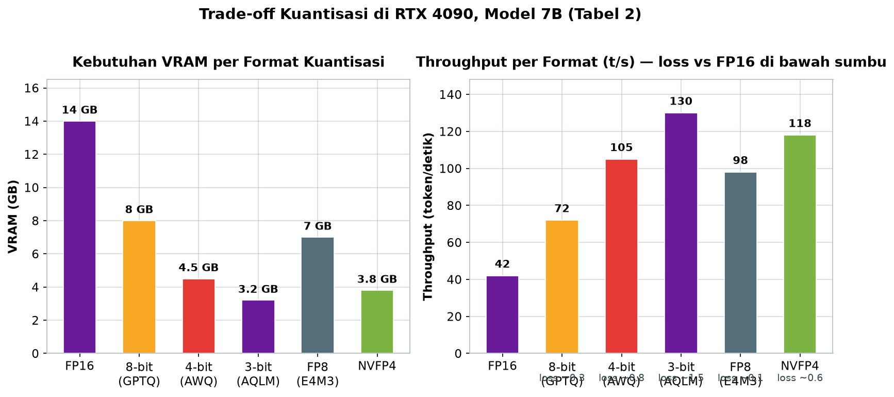
Bacaan penting dari tabel ini: throughput tertinggi (130 t/s) justru diraih AQLM 3-bit, bukan FP16 — karena bobot yang lebih kecil berarti lebih sedikit data yang ditarik dari memory bandwidth, dan pada kartu gaming memory bandwidth adalah bottleneck utama. Namun kualitas turun ~1,5 loss dari baseline; untuk teks kreatif yang panjang, degradasi ini bisa terasa. Titik manis praktis adalah AWQ 4-bit: VRAM 4,5 GB, throughput 105 t/s, konteks 32K, dengan penalti kualitas yang masih terkendali (~0,8). Sementara itu NVFP4 — format 4-bit floating point NVIDIA yang didukung native oleh Mistral Large 3 — menjadi opsi menarik modern: 118 t/s dengan hanya ~0,6 loss [9]. Aphrodite adalah engine pertama yang membawa NVFP4 ke kartu gaming consumer.
Perhatikan juga kolom Max Context: kuantisasi yang lebih kecil secara tidak langsung membuka konteks yang lebih panjang. Ini efek domino memori — model FP16 memakai 14 GB hanya untuk bobot, menyisakan sedikit ruang KV-cache, sehingga batas konteks tersendat di 8K; sebaliknya AQLM 3-bit memakan 3,2 GB dan membiarkan konteks membengkak ke 48K. Jika kebutuhan Anda adalah percakapan panjang dengan memori karakter, pilihan format kuantisasi sama pentingnya dengan pilihan model itu sendiri. Untuk konteks setara, jumlah VRAM yang tersisa setelah bobot, dibagi kebutuhan KV-cache per token, menentukan "umur" percakapan Anda.
6. Keterbatasan
Harga dari kekuatan komunitas adalah ukuran komunitas itu sendiri. Update Aphrodite bisa lebih lambat daripada vLLM yang digarap tim besar dan banyak kontributor, sehingga model terbaru kadang butuh waktu sebelum didukung. Dokumentasinya juga tidak selengkap vLLM — sebagian besar pengetahuan tersebar di discord komunitas dan issue tracker. Dan beberapa fitur enterprise tidak ada di Aphrodite: misalnya batch API bergaya OpenAI, prefix caching yang sepenuhnya otomatis, dan integrasi ekosistem seperti monitoring Prometheus siap pakai. Terakhir, lisensi AGPL-3.0 (berbeda dengan Apache 2.0 milik vLLM) berarti turunan yang didistribusikan sebagai layanan harus membuka sumbernya — pertimbangan penting bagi perusahaan tertutup.
Perlu ditambahkan catatan tentang kestabilan: sebagai proyek komunitas dengan rilis yang digerakkan sukarelawan, breaking change antar versi lebih sering terjadi daripada vLLM, dan dokumentasi upgrade path kadang tertinggal. Praktik terbaik bagi pengguna produksi adalah mengunci versi Aphrodite yang sudah terbukti stabil (seperti v0.6.0 di studi kasus nanti) dan baru naik versi setelah changelog diperiksa. Ini bukan kelemahan yang mematikan — banyak proyek roleplay besar berjalan berbulan-bulan tanpa masalah — melainkan sekadar pengingat bahwa support Anda adalah komunitas itu sendiri.
Tabel 5.9: Benchmark Multi-User Concurrent (RTX 4090, AWQ 4-bit)
Terakhir, bagaimana Aphrodite bertahan ketika beberapa pengguna memakai model yang sama sekaligus?
| Concurrent Users | Throughput (t/s) | TTFT P50 (ms) | VRAM Used |
|---|---|---|---|
| 1 | 105 | 120 | 4,5 GB |
| 4 | 68 | 210 | 8,2 GB |
| 8 | 41 | 380 | 12,1 GB |
| 16 | 22 | 720 | 18,5 GB |
Pola yang terlihat sangat wajar: throughput per pengguna turun seiring bertambahnya pengguna (dari 105 menjadi 22 t/s), TTFT membengkak (120 → 720 ms), dan VRAM naik karena setiap percakapan membutuhkan KV-cache sendiri. Pelajaran utamanya: hingga 8 pengguna simultan, pengalaman masih sangat layak — sekitar 41 t/s per pengguna terasa responsif untuk percakapan. Di atas itu, throughput per pengguna anjlok dan TTFT mendekati satu detik; saat itulah saatnya membagi beban ke GPU kedua atau menyebut "mulai dari sini Anda butuh server". Angka-angka ini juga menjelaskan mengapa komunitas roleplay umumnya membatasi server mereka pada 8-16 pengguna per GPU.
Kolom VRAM juga menjawab pertanyaan yang sering muncul: mengapa memakai dua kartu 24 GB jika satu saja cukup untuk model AWQ? Karena VRAM yang bertambah tidak dipakai untuk bobot model — yang hanya 4,5 GB — melainkan untuk KV-cache dari banyak percakapan paralel. Pada 16 pengguna, penggunaan VRAM sudah 18,5 GB; dengan dua GPU, Anda bisa menggandakan kapasitas pengguna tersebut, atau memberi ruang untuk konteks yang lebih panjang per percakapan. Dengan kata lain, untuk mesin kreatif, target belanja GPU selanjutnya ditentukan oleh banyaknya pengguna, bukan oleh ukuran model.
7. Praktikum / Hands-On
Praktikum ini membawa Anda dari instalasi hingga menjalankan model dengan kuantisasi eksotis — lima langkah yang saling membangun: install, server AWQ, klien kreatif, model MoE besar, dan format kuantisasi pinggiran. Semua perintah ditulis untuk antarmuka aphrodite run versi 0.6.x; periksa aphrodite run --help jika keluaran versi Anda berbeda.
Langkah 1: Instalasi Aphrodite Engine
# Install dari PyPI
pip install aphrodite-engine
# Atau dari source (untuk custom kernels)
git clone https://github.com/aphrodite-engine/aphrodite-engine
cd aphrodite-engine
pip install -e .Instalasi dari source disarankan jika Anda ingin mencoba kernel paling baru; pastikan CUDA toolkit yang terpasang kompatibel dengan driver GPU Anda. Setelah instalasi, verifikasi bahwa perintah aphrodite sudah tersedia:
# Verifikasi instalasi dan versi
aphrodite --version
python -c "import aphrodite; print(aphrodite.__version__)"Jika aphrodite --version merespons, langkah berikutnya tinggal menjalankan server. Untuk pengguna pertama kali, mulailah dengan model kecil yang sudah populer dan didukung luas — misalnya Llama 3.1 (8B) — sebelum mencoba model MoE besar; ini memisahkan masalah instalasi dari masalah konfigurasi model.
Langkah 2: Menjalankan Server dengan AWQ
# Menjalankan server
aphrodite run meta-llama/Meta-Llama-3.1-8B-Instruct \
--quantization awq \
--max-model-len 8192 \
--port 8000 \
--device cudaSama seperti vLLM, server ini membuka endpoint /v1 yang kompatibel OpenAI. Perbedaan mulai terasa pada langkah berikutnya: parameter extra_body yang tidak dikenal vLLM. Verifikasi server sebelum mengirim request:
# Cek status server dan model aktif
curl http://localhost:8000/health
curl http://localhost:8000/v1/modelsJawaban {"status": "ok"} dari /health menandakan model sudah dimuat penuh. Pada log konsol, perhatikan baris tentang kernel kuantisasi yang digunakan (misalnya Wq4A16 untuk AWQ) — log ini sekaligus konfirmasi bahwa custom kernel untuk format pilihan Anda benar-benar aktif.
Langkah 3: Klien Python dengan Samplers Kreatif
from openai import OpenAI
client = OpenAI(
base_url="http://localhost:8000/v1",
api_key="not-needed",
)
response = client.chat.completions.create(
model="meta-llama/Meta-Llama-3.1-8B-Instruct",
messages=[
{"role": "system", "content": "Kamu adalah asisten kreatif."},
{"role": "user", "content": "Tulis cerita pendek tentang AI."}
],
max_tokens=500,
temperature=1.2,
# Parameter ekstra Aphrodite
extra_body={
"mirostat_mode": 2,
"mirostat_tau": 5.0,
"repetition_penalty": 1.15,
"top_k": 40,
}
)Perhatikan mirostat_mode: 2 — mode ini membuat sampling menyesuaikan suhu secara adaptif untuk menjaga perplexity pada target mirostat_tau 5.0. Kombinasi dengan repetition_penalty 1.15 mencegah narasi berputar di frase yang sama, dan temperature 1.2 memberi ruang kreativitas. Silakan bereksperimen: bandingkan output tanpa extra_body dan dengan konfigurasi di atas — perbedaannya biasanya dramatis pada teks panjang.
Untuk menguji beberapa konfigurasi sekaligus secara adil, jalankan dua permintaan paralel — satu dengan extra_body dan satu tanpa — lalu bandingkan: (1) seberapa cepat teks mulai berulang; (2) keragaman struktur kalimat; (3) konsistensi "suara" narator. Hasil uji semacam ini lebih bermakna daripada membandingkan t/s murni, karena keduanya berjalan pada mesin yang sama. Jika karakter Anda sering "kehilangan kepribadian" setelah 200 token, itu biasanya tanda tau terlalu tinggi atau repetition penalty terlalu rendah — bukan tanda model yang buruk.
Langkah 4: DeepSeek V4 Flash di 2 GPU RTX 6000
# DeepSeek V4 Flash — 284B total / 13B aktif
# Berjalan di 2x RTX 6000 (atau 1x A100 80GB) via INT4
# 1M konteks penuh, MIT License
# Setup dual GPU dengan tensor parallelism
aphrodite run deepseek-ai/DeepSeek-V4-Flash \
--tensor-parallel-size 2 \
--quantization int4 \
--kv-cache-dtype fp8 \
--max-model-len 32768 \
--port 8000
# Benchmark: ~85 t/s di 2x RTX 6000
# Dibandingkan DeepSeek V3: hanya 27% training FLOPs untuk konteks 1M
# RAM CPU: minimal 64 GB untuk pemuatan bobotModel MoE 284B ini berjalan efisien karena hanya 13 miliar parameter aktif per token — sebagian besar experts tidak pernah dihitung untuk tiap token [8]. Catatan penting: max-model-len sengaja dibatasi ke 32K pada contoh ini; konteks 1M penuh dimungkinkan oleh arsitektur CSA/HCA DeepSeek V4, tetapi tiap token konteks memakan KV-cache, jadi mulailah kecil lalu naikkan sesuai kebutuhan. Weight loading juga membutuhkan minimal 64 GB RAM CPU.
Perhatikan juga perbedaan istilah kuantisasi di sini: --quantization int4 pada DeepSeek V4 Flash adalah INT4 integer, bukan NVFP4 floating point yang dibahas di Tabel 5.8 — keduanya 4-bit, tetapi bentuk dan distribusi nilainya berbeda, sehingga hasilnya pun tidak identik. Saat membaca dokumentasi model, selalu periksa format kuantisasi mana yang direkomendasikan penulis model; untuk seri DeepSeek V4 Flash, INT4 adalah jalur yang disetujui untuk kartu RTX kelas workstation, dan --kv-cache-dtype fp8 diterapkan terpisah untuk menekan memori cache.
Langkah 5: Kuantisasi Eksotis — AQLM dan FP8
# AQLM (kuantisasi 2-bit ekstrem)
aphrodite run TheBloke/Llama-2-7B-AQLM \
--quantization aqlm \
--max-model-len 4096
# FP8 (dukungan native H100/RTX 4090)
aphrodite run meta-llama/Meta-Llama-3.1-8B-Instruct \
--quantization fp8 \
--kv-cache-dtype fp8AQLM 2-bit adalah contoh format yang praktis mustahil dijalankan efisien di vLLM standar [3]; dengan Aphrodite, model 7B cukup muat di 3,2 GB VRAM (Tabel 5.8). Baris kedua menunjukkan FP8 — pada RTX 4090, dukungan FP8 berjalan di hardware, dan --kv-cache-dtype fp8 memangkas memori cache hingga separuh.
Sebagai penutup praktikum, mari kaitkan semua perintah yang sudah Anda jalankan dengan teori di awal bab: PagedAttention memastikan KV-cache terkelola efisien (Gambar 5.3-1), custom quant kernels memastikan setiap format berjalan secepat mungkin (bagian 3.1), dan sampler chain menentukan warna akhir teks (bagian 3.2). Ketika Anda mengganti --quantization, pada dasarnya Anda hanya mengganti kernel yang aktif di tengah diagram — pilihan format memengaruhi memori dan kecepatan, sementara pengalaman menulis ditentukan oleh sampler di ujung alur. Memahami pembagian kerja inilah inti penguasaan Aphrodite.
8. Studi Kasus: Roleplay Server untuk Komunitas Kreatif
Latar. Sebuah komunitas roleplay berbahasa Indonesia dengan 500 anggota ingin membangun server AI karakter interaktif: setiap anggota bisa "berbicara" dengan tokoh fiksi yang kepribadiannya dijaga ketat. Dua GPU RTX 4090 (total 48 GB VRAM) tersedia di rumah salah satu admin, dan modalnya adalah semangat — bukan anggaran data center. Kebutuhan tambahan yang disepakati: konteks percakapan minimal 16K token agar karakter "mengingat" peristiwa lama, suhu yang bervariasi agar adegan romantis, aksi, dan misteri terasa berbeda, serta pergantian karakter tanpa restart server.
Analisis pilihan. Tim sempat mencoba vLLM untuk base model Mythomax-L2 (turunan Llama-2 yang populer di komunitas kreatif) dengan AWQ 4-bit. Masalahnya muncul dari keterbatasan sampler: karakter kehilangan kepribadian karena mudah jatuh ke repetisi, dan memuat LoRA per karakter yang berbeda memaksa restart server. Ollama tidak didiskusikan lama karena tidak mendukung multi-LoRA sama sekali. Pilihan jatuh pada Aphrodite Engine v0.6.0.
Solusi. Server dijalankan dengan Mythomax-L2-13B (AWQ 4-bit) pada satu RTX 4090 sebagai GPU utama, GPU kedua dijadikan cadangan beban saat trafik tinggi. LoRA adapters terpisah dimuat dinamis untuk puluhan karakter — satu untuk karakter samurai, satu untuk detektif, dan seterusnya. Konfigurasi sampler dibuat konsisten: Mirostat v2 (tau=5.0), rep_penalty=1.13, top_k=40 — sebuah preset yang dikenal komunitas sebagai "karakter stabil".
Langkah teknis deployment-nya berjalan dalam empat tahap: (1) menyiapkan model AWQ dan adapter LoRA di direktori lokal; (2) menjalankan aphrodite run dengan --quantization awq dan konteks 16K; (3) menyetel preset sampler di klien yang digunakan anggota; (4) menulis panduan singkat berbahasa Indonesia agar anggota baru bisa langsung mencoba. Seluruh proses memakan waktu kurang dari satu hari — jauh dari perkiraan tim yang awalnya mengira butuh proyek dua minggu.
Hasil. 8 pengguna simultan berjalan stabil dengan ~45 t/s per pengguna dan TTFT di bawah 300 ms — sesuai proyeksi Tabel 5.9. Perbandingan langsung dengan vLLM pada hardware yang sama mencatat hanya ~30 t/s karena sampler terbatas dan LoRA yang tidak dinamis; lebih penting lagi, kualitas karakter — parameter yang tidak terlihat di tabel mana pun — terasa lebih hidup. Anggota komunitas tidak lagi mengeluhkan jawaban yang berulang.
Beberapa detail operasional melengkapi cerita ini. LoRA per karakter disimpan di direktori adapter dan dimuat lewat parameter nama saat request; karena loading-nya dinamis, menambah karakter baru tidak pernah menurunkan server bahkan di tengah sesi ramai. Preset sampler disepakati bersama komunitas dan ditulis di dokumentasi server — sehingga pengalaman antar pengguna konsisten, dan keluhan "karakternya berubah sifat" bisa dilacak ke perubahan preset, bukan ke model. GPU kedua akhirnya digunakan sebagai failover dan untuk batch eksperimen menulis — bukan untuk beban utama, membuktikan bahwa satu kartu pun cukup untuk komunitas sebesar itu.
Pelajaran. Kasus ini menunjukkan bahwa untuk beban kerja kreatif, throughput bukan satu-satunya mata uang. Kemampuan memuat LoRA dinamis dan mengendalikan gaya bahasa lewat sampler mengubah pengalaman pengguna secara fundamental — nilai yang tidak bisa dihitung hanya dari t/s, dan tidak tersedia di mesin serving yang lebih generik. Dari sisi operasional, server ini juga mengajarkan bahwa satu GPU rumahan mampu menghidupi komunitas ratusan orang selama konfigurasi disesuaikan dengan beban — sebuah kenyataan yang semakin relevan seiring menjamurnya model efisien seperti DeepSeek V4 Flash yang bisa berjalan di workstation kelas konsumen.
9. Referensi
Paper Jurnal/Konferensi
[1] PygmalionAI & Ruliad. (2024). Aphrodite Engine: Large-Scale LLM Inference Engine (dokumentasi proyek). github.com/aphrodite-engine/aphrodite-engine (https://github.com/aphrodite-engine/aphrodite-engine)
[2] Kwon, W., Li, Z., Zhuang, S., Sheng, Y., Zheng, L., Yu, C.H., Gonzalez, J.E., Zhang, H., & Stoica, I. (2023). Efficient Memory Management for Large Language Model Serving with PagedAttention. Proceedings of the 29th Symposium on Operating Systems Principles (SOSP). DOI: 10.1145/3600006.3613165 (https://doi.org/10.1145/3600006.3613165) — arXiv:2309.06180 (https://arxiv.org/abs/2309.06180)
[3] Egiazarian, V., et al. (2024). Extreme Compression of Large Language Models via Additive Quantization. International Conference on Machine Learning (ICML). DOI: 10.48550/arXiv.2401.06118 (https://arxiv.org/abs/2401.06118)
[4] Kim, S., et al. (2024). SqueezeLLM: Dense-and-Sparse Quantization. Proceedings of Machine Learning and Systems (MLSys). DOI: 10.48550/arXiv.2306.07629 (https://arxiv.org/abs/2306.07629)
[5] Basu, S., et al. (2021). Mirostat: A Neural Text Decoding Algorithm that Directly Controls Perplexity. International Conference on Learning Representations (ICLR). DOI: 10.48550/arXiv.2007.14966 (https://arxiv.org/abs/2007.14966)
[6] Frantar, E., Ashkboos, S., Hoefler, T., & Alistarh, D. (2023). GPTQ: Accurate Post-Training Quantization for Generative Pre-trained Transformers. International Conference on Learning Representations (ICLR). DOI: 10.48550/arXiv.2210.17323 (https://arxiv.org/abs/2210.17323)
Referensi Pendukung (Dokumentasi/Repository)
[7] Aphrodite Engine. GitHub Repository. github.com/aphrodite-engine/aphrodite-engine (https://github.com/aphrodite-engine/aphrodite-engine)
[8] DeepSeek AI. (2026). DeepSeek-V4 Flash: 284B MoE with 13B Active Parameters — MIT License, runs on 2xRTX 6000 via INT4. api-docs.deepseek.com (https://api-docs.deepseek.com/)
[9] NVIDIA. (2025). NVFP4: 4-bit Floating Point for LLM Inference. developer.nvidia.com/nvfp4 (https://developer.nvidia.com/nvfp4)
[10] PygmalionAI. Community & Documentation. pygmalion.chat (https://pygmalion.chat)
Bab 5.4: Continuous Batching
Bayangkan satu barisan kasir di minimarket: semua pelanggan harus menunggu pelanggan paling lambat selesai berbelanja sebelum antrean bergeser. Itulah nasib request Anda di inference engine tradisional. Continuous batching mengubah aturan mainnya — setiap pelanggan maju selangkah setiap detik, selesai kapan pun, tanpa membuat yang lain menunggu.
1. Tujuan Sub-Bab
Setelah membaca sub-bab ini, Anda akan mampu:
- Menjelaskan perbedaan mendasar antara static batching dan continuous batching (atau iteration-level scheduling) serta mengapa keduanya berbeda drastis dalam hal pemanfaatan GPU
- Menerangkan mekanisme selective batching yang dipakai untuk menangani variasi panjang sequence antar-request dalam satu batch
- Mengukur dampak continuous batching terhadap latensi dan throughput di berbagai inference engine seperti vLLM, TGI, TensorRT-LLM, Aphrodite, dan SGLang
- Mengonfigurasi parameter batching di vLLM (
--max-num-seqs,--max-num-batched-tokens,--enable-chunked-prefill) untuk skenario multi-user nyata
2. Masalah Static Batching: Antrean Macet di Pintu GPU
Head-of-Line Blocking: yang Pendek Menunggu yang Panjang
Sebelum continuous batching diperkenalkan, hampir semua inference engine beroperasi dengan pola yang disebut static batching (atau request-level batching). Polanya sederhana: GPU mengumpulkan beberapa request dalam satu batch, memproses semuanya bersama-sama, dan — inilah kata kuncinya — batch tersebut hanya dianggap selesai ketika request terlambat selesai juga. Satu batch yang berisi permintaan "tulis email singkat" (output 50 token) dan "rangkum dokumen 100 halaman" (output 2.000 token) akan berjalan selambat permintaan yang paling panjang.
Dampaknya adalah fenomena yang dalam dunia jaringan komputer dikenal sebagai head-of-line blocking: request pendek yang sudah selesai dikerjakan harus "membeku" menunggu request panjang di batch yang sama tuntas, padahal GPU tidak bisa memulai batch berikutnya. Bayangkan antrean empat mobil di palang pintu tol yang hanya bisa dibuka sekaligus — mobil pertama yang sudah membayar harus menunggu mobil terakhir yang masih mencari uang receh. Semakin bervariasi panjang output antar-user, semakin parah kemacetannya.
GPU yang Menganggur di Tengah Kesibukan
Ada kesalahpahaman umum bahwa static batching berarti GPU selalu bekerja penuh. Faktanya justru sebaliknya. Karena batch harus menunggu request paling lambat, GPU mengalami apa yang disebut pipeline bubble — periode di mana unit komputasi tidak punya pekerjaan. Saat satu batch selesai dan batch berikutnya sedang disiapkan (menunggu request baru terkumpul), GPU kosong total. Saat request dalam satu batch selesai tidak bersamaan, utilisasi GPU turun drastis, membentuk pola naik-turun yang mirip gergaji.
Ukurannya mengejutkan: penelitian Yu et al. (2022) pada paper Orca menunjukkan bahwa static batching hanya mencapai 20-40% utilisasi GPU [1]. Lebih dari setengah kemampuan komputasi—yang sudah dibayar mahal—terbuang percuma. Inilah masalah yang coba dipecahkan oleh Orca dan kemudian diadopsi oleh semua engine modern.
Ada satu fakta lanjutan yang memperparah keadaan: static batching memperbesar batch secara membabi buta justru merugikan. Batch yang lebih besar berarti waktu tunggu yang lebih lama menunggu request terlambat — scale tidak menyelesaikan masalah, hanya memindahkannya ke level yang lebih tinggi. Solusi sejatinya bukan memperbesar batch, melainkan mengubah cara batch itu dikelola: dari satu kesatuan yang kaku menjadi kumpulan individu yang bergerak bebas.
Tabel 5.10: Static vs Continuous Batching (Model 7B, GPU A100 80 GB)
Tabel berikut membandingkan performa kedua pendekatan pada model 7B di satu GPU A100 80 GB, dirangkum dari paper Orca dan benchmark Anyscale [1][3]:
| Metrik | Static Batching | Continuous Batching | Improvement |
|---|---|---|---|
| GPU Utilization | 28% | 85% | 3x |
| Throughput (req/s) | 4,2 | 28,5 | 6,8x |
| TTFT P50 (ms) | 180 | 210 | -17% |
| Latency P99 (ms) | 12.500 | 2.800 | 4,5x lebih baik |
| Max Batch Size | 8 | 64 | 8x |
| VRAM Waste | ~50% | ~4% | 12,5x lebih baik |
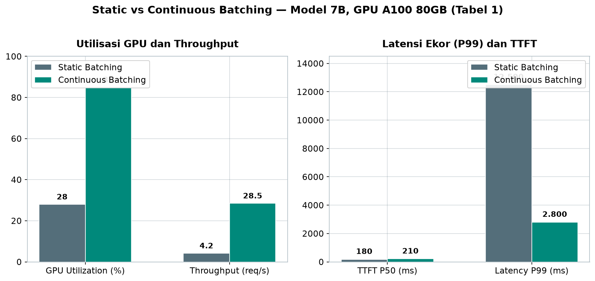
Pembacaan tabel ini penuh nuansa. Throughput melonjak 6,8x dan utilisasi GPU naik 3x — itu kabar baik utama. Namun perhatikan TTFT (Time To First Token) P50: dari 180 ms menjadi 210 ms, lebih lambat 17%. Ini bukan bug, melainkan konsekuensi logis dari berbagi GPU — karena batch lebih penuh, setiap request harus mengantre sedikit lebih lama untuk slot komputasi pertama. Sementara itu, latency P99 — ukuran pengalaman user terburuk — membaik 4,5x dari 12,5 detik menjadi 2,8 detik. Di sinilah trade-off continuous batching: sedikit pengorbanan di median, kelegaan besar di ekor. Untuk pengalaman multi-user, ekor yang pendek jauh lebih penting daripada median yang super cepat.
Perlu dicatat: efisiensi KV-cache model modern memperbesar keunggulan ini. DeepSeek V4 Pro dengan hybrid CSA/HCA attention hanya membutuhkan 10% KV-cache dibandingkan generasi V3.2 — artinya dalam satu batch yang sama, continuous batching bisa memuat jauh lebih banyak request karena ruang cache yang tersedia jauh lebih besar.
Diagram berikut membandingkan perjalanan waktu empat request pada kedua pendekatan:
Bagian atas diagram (STATIC) menunjukkan batch yang kaku: request pendek (Req 1-3) terkurung oleh request panjang (Req 4), dan batch berikutnya baru dibuka setelah semuanya beres — GPU menganggur di sela-selanya. Bagian bawah (CONTINUOUS) memperlihatkan irama yang hidup: setiap step menghasilkan satu token untuk semua request, request yang selesai pergi, request baru langsung mengisi slot kosong. Tidak ada momen GPU kosong — inilah alasan mengapa jumlah request yang bisa dilayani per detik melonjak 6-7 kali lipat.
3. Iteration-Level Scheduling: Ide Besar dari Orca
Mengapa Per-Request Tidak Cukup
Paper Orca yang terbit di USENIX OSDI 2022 mengajukan pertanyaan provokatif: mengapa kita mengikat nasib request yang berbeda-beda dalam satu batch yang kaku [1]? Jawaban mereka adalah mengubah unit penjadwalan dari per-request menjadi per-iteration. Dalam dunia LLM, satu iteration berarti satu decoding step — satu langkah menghasilkan satu token untuk seluruh sequence yang sedang aktif diproses. Dengan iteration-level scheduling, scheduler tidak lagi bertanya "request mana yang sudah selesai?", tetapi "iterasi mana yang sedang berjalan, dan request mana yang masih butuh token berikutnya?"
Satu Step, Satu Token untuk Semua
Secara teknis, alur kerja continuous batching di setiap iterasi sangat sederhana namun revolusioner:
- Generate satu token untuk semua active request yang sedang diproses.
- Cek request mana yang telah mencapai panjang output yang diminta (misalnya, sudah menghasilkan token EOS atau mencapai
max_tokens). - Keluarkan request yang selesai dari batch.
- Tambahkan request baru dari antrean ke batch yang baru saja ditinggalkan.
Karena langkah 3 dan 4 terjadi di setiap iterasi, komposisi batch berubah terus-menerus — request bisa join dan leave kapan saja, tidak seperti static batching yang hanya bisa berganti komposisi di antara batch. Ini persis seperti jalur antrean di kasir cepat: setiap orang maju satu langkah setiap beberapa detik, yang selesai langsung pergi, dan orang baru langsung mengisi slot kosong. GPU tidak pernah menunggu, dan antrean tidak pernah macet.
Komposisi Batch yang Dinamis
Konsekuensi penting dari desain ini: tidak ada lagi istilah "batch 1", "batch 2" yang terpisah kaku. Yang ada hanyalah satu kolam aktif request yang terus berubah ukuran. Jika 7 dari 64 request selesai dalam satu iterasi, 7 slot langsung diisi request berikutnya dalam iterasi yang sama — GPU tetap penuh bekerja pada iterasi selanjutnya. Satu-satunya batas adalah kapasitas memori dan max batch size yang dikonfigurasi. Desain inilah yang membuat GPU bisa dijejali request hingga 3-8 kali lebih banyak dibandingkan static batching, dan membuat utilisasi melonjak dari kisaran 28% menjadi 85% pada A100 (lihat Tabel 5.10).
Ada satu syarat tersembunyi yang membuat mekanisme ini bekerja tanpa menguras memori: manajemen KV-cache yang efisien. Jika setiap request menyimpan cache-nya secara kontigu tanpa batas, batch 64 request akan meledakkan VRAM. Di sinilah PagedAttention (Bab 5.1) memainkan peran gandeng — cache dipecah menjadi blok-blok kecil yang dialokasikan dinamis mengikuti request yang masuk dan keluar [2]. Continuous batching dan manajemen cache yang baik adalah dua sisi mata uang yang sama: yang satu menjaga GPU tetap sibuk, yang lain menjaga memori tetap muat.
4. Selective Batching: Batching yang Pilih-pilih
Dilema Bentuk Tensor yang Berbeda
Ada satu rintangan teknis yang harus dipecahkan Orca sebelum ide iteration-level scheduling bisa dipakai: di dalam satu iterasi, setiap request memiliki panjang sequence yang berbeda. Request A sedang di token ke-45, request B di token ke-300, request C di token ke-1.200. Masalahnya, operasi attention pada GPU membutuhkan tensor dengan bentuk (shape) yang seragam untuk di-batch. Matriks attention score request A berukuran 45 × 45, request C 1200 × 1200 — dua bentuk yang tidak bisa digabung dalam satu operasi matriks tanpa padding boros memori.
FFN Di-Batch, Attention Diproses Per-Request
Solusi yang diajukan Orca bernama selective batching: bagi operasi model menjadi dua kelompok dengan perlakuan berbeda. Operasi yang tidak bergantung pada bentuk sequence — yaitu Feed-Forward Network (FFN) dan LayerNorm — tetap di-batch bersama-sama, karena operasinya bersifat element-wise per token dan tidak peduli dari sequence mana token itu berasal. Sebaliknya, operasi attention yang sangat sensitif terhadap bentuk sequence tidak di-batch; setiap request mengerjakan attention-nya sendiri secara terpisah.
Keputusan ini terdengar boros, tetapi Yu et al. menunjukkan bahwa dampaknya kecil terhadap efisiensi keseluruhan [1]. Alasannya: attention bukan lapisan yang memiliki weight besar — kuda beban sebenarnya adalah FFN yang menyumbang 60-70% komputasi (lihat Bab 1 Jilid 1). Dengan membatch FFN dan LayerNorm, sebagian besar komputasi tetap berjalan rapat, sementara attention yang "dilintang-lintang" per-request hanya menyumbang sebagian kecil waktu total. Selective batching adalah kompromi elegan untuk membuka pintu bagi continuous batching tanpa mengorbankan kecepatan eksekusi matriks.
Perlu diketahui bahwa pendekatan ini bukan tanpa biaya implementasi. Engine harus mampu memisahkan eksekusi operasi berdasarkan jenisnya — sebagian dalam mode batched, sebagian dalam mode per-sequence — yang berarti kernel harus dirancang fleksibel sejak awal. Inilah salah satu alasan mengapa mengimplementasikan continuous batching bukan sekadar mengubah satu baris konfigurasi: ia menyentuh lapisan terbawah runtime GPU yang mengatur bagaimana operasi dikirim ke perangkat keras.
Tiga request dengan panjang sequence berbeda-beda (300, 120, 45 token) mengerjakan attention-nya masing-masing karena matriks skor attention-nya tidak bisa disatukan. Setelah itu, semua token dikumpulkan dan diproses sekali jalan melalui lapisan FFN dan LayerNorm yang tidak peduli asal sequence. Hasilnya: sebagian besar komputasi tetap ter-batch rapat, sementara pengorbanan di lapisan attention hampir tidak terasa — karena lapisan itu menyumbang sedikit parameter dan sebagian kecil beban hitung.
5. Implementasi Continuous Batching di Berbagai Engine
vLLM dan PagedAttention
Implementasi paling berpengaruh datang dari vLLM, yang sejak versi pertamanya (2023) menggabungkan continuous batching dengan PagedAttention — teknik manajemen memori KV-cache ala virtual memory sistem operasi yang memecah cache menjadi blok-blok kecil (lihat sub-bab 5.1) [2]. Kombinasi keduanya sederhana: continuous batching mengisi GPU dengan banyak request, PagedAttention memastikan memori tidak meledak. vLLM juga menambahkan prefix caching sehingga prompt berulang (misalnya system prompt perusahaan) tidak perlu dikomputasi ulang.
TGI, TensorRT-LLM, Aphrodite, dan SGLang
Setiap engine besar berlomba mengadopsi ide yang sama dengan nama berbeda. Text Generation Inference (TGI) dari Hugging Face menyebutnya dynamic batching, dengan tambahan safety checker dan watermarking untuk deployment produksi. TensorRT-LLM dari NVIDIA menamakannya in-flight batching, dimaksimalkan dengan kernel FP8 dan kernel fusion maksimal. Aphrodite, sebuah fork vLLM dari komunitas, menambahkan sampler kreatif dan dukungan multi-kuantisasi termasuk NVFP4. SGLang melangkah lebih jauh dengan RadixAttention — cache prefix berbasis pohon (radix tree) yang membuat sistemnya rame di beban kerja multi-turn conversation [5]. Terlepas dari nama, prinsipnya satu: penjadwalan per-iterasi dengan batch dinamis.
Kesamaan prinsip ini bukan kebetulan — semuanya berpijak pada hasil eksperimen Orca dan analisis berikutnya yang membuktikan bahwa mempertahankan GPU tetap sibuk jauh lebih berharga daripada menyelesaikan satu request secepat mungkin. Perbedaan antar-engine hanya terletak pada flavor tambahan di sekitarnya: seberapa agresif kernel fusion-nya, seberapa cerdas cache-nya, dan seberapa lengkap dukungan format kuantisasi-nya. Untuk keputusan pemilihan engine, pertimbangkan ekosistem tim Anda dan beban kerja dominan — bukan sekadar nama fiturnya.
Tabel 5.11: Dukungan Continuous Batching di Berbagai Engine
| Engine | Nama Internal | Tahun Adopsi | Kelebihan Spesifik |
|---|---|---|---|
| vLLM | Continuous Batching | 2023 | +PagedAttention, prefix caching |
| TGI | Dynamic Batching | 2023 | +Safety checker, watermark |
| TensorRT-LLM | In-flight Batching | 2023 | +FP8, kernel fusions maksimal |
| Aphrodite | Continuous Batching | 2024 | +Samplers kreatif, multi-quant, NVFP4 |
| SGLang | RadixAttention + Batching | 2024 | +Prefix caching radix tree |
Ketika memilih engine untuk produksi, pertimbangkan bukan hanya ada-tidaknya continuous batching — sekarang semua engine besar memilikinya, tetapi apa yang ditambahkan di atasnya. vLLM unggul di ekosistem dan dukungan distribusi terluas; TensorRT-LLM unggul di kinerja GPU NVIDIA berkat kernel fusion; SGLang unggul di beban kerja dengan prompt berulang berkat radix tree; Aphrodite menarik untuk komunitas karena dukungan kuantisasi luas termasuk NVFP4. Engine terbaru seperti vLLM ≥ 0.8.0 dan TGI ≥ 2.4.0 juga telah menambahkan dukungan untuk DeepSeek V4 Pro dan Mistral Large 3 — model dengan arsitektur MoE granular yang membutuhkan scheduling adaptif karena pola sparse activation-nya.
6. Dampak pada Pengalaman User
Apa artinya semua ini bagi orang yang benar-benar mengetik pertanyaan? Bayangkan sebuah kantor kecil dengan 10 karyawan yang serentak menekan "Generate" pada AI assistant mereka. Dengan service berbasis static batching, request ke-10 harus mengantre di belakang 9 request sebelumnya — dengan total waktu generasi masing-masing beberapa detik, antrean bisa menembus ~50 detik. Itu adalah pengalaman "AIs-nya hang nih".
Dengan continuous batching, scheduler langsung menyeret semua 10 request ke dalam GPU pada iterasi pertama. Semua user mulai menerima token pertama dalam waktu kurang dari 2 detik, dan token-token berikutnya mengalir bergantian. Trade-off-nya: karena GPU sekarang berbagi beban antara 10 sequence, latency rata-rata per-request naik sedikit, tetapi naiknya predictable dan proporsional, bukan melompat liar seperti antrean statis. Throughput total melonjak drastis: dalam Tabel 5.12 Anda bisa melihat, dengan 10 user konkuren, throughput mencapai 7.200 token/detik, hampir 6 kali lipat dari 1 user. Inilah inti janji continuous batching: melayani banyak orang sekaligus, tanpa ada yang merasa dilambatkan.
Ada dimensi psikologis yang membuat perbedaan ini semakin terasa. Manusia menilai kelambatan dari dua titik: berapa lama menunggu respons pertama (TTFT) dan seberapa cepat token mengalir setelah itu (time to next token). Karena continuous batching menjaga antrean tetap pendek, kedua titik ini bergerak bersamaan — semua user "merasa didengar" sejak detik pertama, meskipun ada sedikit jeda antar-token saat GPU bergiliran. Pada static batching, user yang antre di belakang tidak mendengar apa-apa selama puluhan detik — seolah-olah aplikasi mati total. Persepsi inilah yang membuat continuous batching begitu bernilai untuk produk yang dipegang banyak orang sekaligus.
Tabel 5.12: Pengaruh Jumlah User Concurrent (vLLM, Llama 3.1 (8B))
Bagaimana performa berubah ketika angka pengguna naik dari 1 menjadi 50? Tabel berikut memotret perilaku vLLM dengan Llama 3.1 (8B) [6]:
| Concurrent Users | Mean TTFT (ms) | Mean Latency (ms) | Throughput (tok/s) | Queue Time (ms) |
|---|---|---|---|---|
| 1 | 85 | 450 | 1.250 | 0 |
| 5 | 120 | 580 | 4.800 | 35 |
| 10 | 165 | 720 | 7.200 | 95 |
| 20 | 250 | 1.100 | 10.500 | 180 |
| 50 | 480 | 2.400 | 14.200 | 380 |
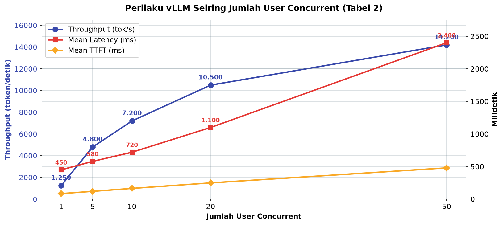
Pola yang terbaca jelas: throughput terus naik (1.250 → 14.200 token/detik), tetapi TTFT dan latensi juga naik secara perlahan dan predictable. Pada 10 user, TTFT rata-rata hanya 165 ms — tidak terasa. Pada 50 user, TTFT masih 480 ms, setengah detik, masih dalam batas yang bisa diterima untuk chat interaktif. Perhatikan queue time: dari 0 ms menjadi 380 ms — ini "harga" dari batch penuh, tetapi tetap jauh lebih kecil dibandingkan antrean request-level pada static batching. Inilah bukti kunci bahwa continuous batching "menjual" latency yang naik perlahan demi throughput yang naik jauh lebih cepat.
7. Praktikum / Hands-On
Langkah 1: Simulasi Continuous Batching dengan Python
Sebelum menyentuh engine sungguhan, mari bangun simulasi mental yang tepat. Kode berikut mensimulasikan cara kerja iteration-level scheduling: batch diisi sampai penuh, satu step menghasilkan satu token untuk semua yang aktif, dan request yang selesai langsung diganti.
# simulasi_continuous_batching.py
import time
import random
class ContinuousBatchSimulator:
"""Simulasi continuous batching untuk edukasi"""
def __init__(self, max_batch=8):
self.max_batch = max_batch
self.active = {} # request_id: {remaining_tokens, ...}
def add_request(self, req_id, num_tokens):
self.active[req_id] = {"remaining": num_tokens}
def step(self):
"""Satu iteration = generate 1 token untuk semua active request"""
completed = []
for req_id, state in list(self.active.items()):
state["remaining"] -= 1
if state["remaining"] <= 0:
completed.append(req_id)
for req_id in completed:
del self.active[req_id]
return completed
def run(self, request_list):
queue = list(request_list)
timeline = {"batch_size": [], "completed": 0, "steps": 0}
while queue or self.active:
# Isi batch sampai penuh
while len(self.active) < self.max_batch and queue:
req_id, tokens = queue.pop(0)
self.add_request(req_id, tokens)
# Satu step generasi
completed = self.step()
timeline["steps"] += 1
timeline["batch_size"].append(len(self.active))
timeline["completed"] += len(completed)
time.sleep(0.01) # simulasi GPU time
return timeline
# Test dengan 10 user, panjang output bervariasi
requests = [(i, random.randint(50, 500)) for i in range(10)]
sim = ContinuousBatchSimulator(max_batch=8)
result = sim.run(requests)
print(f"Steps: {result['steps']}, Avg batch: {sum(result['batch_size'])/len(result['batch_size']):.1f}")Jalankan kode ini beberapa kali dan perhatikan angka average batch size: karena request yang selesai langsung diganti, rata-rata batch tetap tinggi mendekati max_batch. Bandingkan jika Anda memaksa penggantian request hanya di akhir (meniru static batching) — rata-rata batch akan anjlok, dan banyak step yang berjalan tanpa pekerjaan yang produktif.
Langkah 2: Benchmark Engine dengan Berbagai Concurrency
Untuk mengukur perilaku engine sungguhan di bawah beban, gunakan Locust sebagai load generator. Buat file benchmark_locust.py berisi tugas sederhana:
# benchmark_locust.py — load test untuk endpoint OpenAI /v1/chat/completions
from locust import HttpUser, task
class LLMUser(HttpUser):
@task
def generate(self):
self.client.post("/v1/chat/completions", json={
"model": "meta-llama/Meta-Llama-3.1-8B-Instruct",
"messages": [{"role": "user", "content": "Jelaskan continuous batching singkat"}],
"max_tokens": 256,
})# Install locust untuk load testing
pip install locust
# Test vLLM dengan concurrency berbeda
for users in 1 5 10 20; do
locust \
--headless \
--users $users \
--spawn-rate 1 \
--host http://localhost:8000 \
--locustfile benchmark_locust.py \
2>&1 | grep "TTFT\|Request/sec"
doneBandingkan hasilnya dengan Tabel 5.12: seharusnya throughput total naik bersama jumlah user, sementara latency per-request naik perlahan. Jika TTFT Anda melonjak tak proporsional di 10 user, kemungkinan GPU sudah kehabisan KV-cache — turunkan --max-model-len atau perkecil batch.
Langkah 3: Konfigurasi Max Batch Size di vLLM
Tiga parameter kunci mengendalikan continuous batching di vLLM: --max-num-seqs membatasi jumlah sequence dalam satu batch, --max-num-batched-tokens membatasi total token per batch, dan --enable-chunked-prefill memecah prefill raksasa menjadi potongan kecil agar tidak "mencuri" GPU terlalu lama dari phase decode.
# Parameter penting untuk continuous batching:
# --max-num-seqs: max sequences dalam satu batch
# --max-num-batched-tokens: max token per batch
# --enable-chunked-prefill: pecah prefill besar menjadi chunk
vllm serve meta-llama/Meta-Llama-3.1-8B-Instruct \
--max-num-seqs 256 \
--max-num-batched-tokens 8192 \
--enable-chunked-prefill \
--gpu-memory-utilization 0.90Mulailah dengan --max-num-seqs yang kecil (32-64), ukur TTFT di bawah 20 user, lalu naikkan bertahap. --enable-chunked-prefill sangat disarankan untuk skenario banyak user dengan prompt panjang — tanpa opsi ini, satu prefill 8.000 token bisa memblokir GPU selama ratusan milidetik dan membuat semua user lain "tersendat".
Aturan praktis pemilihan parameter: utamakan chunked prefill jika rata-rata prompt Anda panjang (dokumen, riwayat chat berlanjut); perbesar --max-num-batched-tokens hanya jika GPU Anda memiliki VRAM besar dan KV-cache masih longgar; dan ingat bahwa menaikkan --max-num-seqs tanpa beban kerja yang membutuhkannya hanya akan menambah latensi tanpa menambah throughput. Ukur selalu dengan skenario nyata (Langkah 2), bukan dengan benchmark sintetis.
8. Studi Kasus: Kantor dengan 15 Karyawan Menggunakan AI Assistant
Skenario. Sebuah kantor konsultan dengan 15 karyawan mulai menggunakan AI untuk tiga tugas harian: membantu menulis kode, merapikan email, dan riset singkat. Awalnya mereka menjalankan Llama 3.1 (8B) melalui Ollama di satu workstation RTX 4090. Hari pertama terasa menyenangkan — sampai ketiga belas orang itu menggunakannya secara bersamaan.
Masalah. Service Ollama menggunakan static batching. Saat jam kerja puncak, karyawan ke-5 yang mengirim request harus menunggu 30+ detik sebelum token pertama muncul; yang ke-10 bahkan bisa menunggu hampir satu menit. Keluhan berdatangan: "AIs-nya nge-hang", "udah lama gak muncul-muncul". Utilisasi GPU di satu sisi hanya 30-40% — komputasi mahal menganggur, sementara pengguna tak kunjung terlayani.
Solusi. Tim IT memutuskan migrasi ke vLLM — tetap dengan model Llama 3.1 (8B) yang sama — dan menyalakan continuous batching dengan --max-num-seqs 128 dan --enable-chunked-prefill. Tidak ada perubahan model, tidak ada perubahan GPU, hanya perubahan scheduler.
Hasil. Seluruh 15 karyawan mendapat respons dalam kurang dari 3 detik saat digunakan serentak, dan throughput total naik 8x dibandingkan sebelumnya. Ini konsisten dengan Tabel 5.12: pada 20 user concurrent, vLLM mencatat TTFT rata-rata hanya 250 ms — masih jauh di bawah batas "terasa lambat" manusia (~1 detik). Utilisasi GPU kini berada di kisaran 70-85%, dan yang menarik, konsumsi listrik per request justru turun karena pekerjaan selesai lebih cepat.
Titik sesudah puncak. Kantor ini juga belajar batas wajar penggunaan: saat tim mencoba 50 user (semua karyawan plus tamu demo), TTFT naik ke ~480 ms — masih layak, tetapi queue time mulai terasa pada pemakaian kontinu. Mereka menetapkan concurrency limit 30 user per instance dan menambah satu instance saat beban historis menunjukkan kebutuhan, alih-alih menggelontorkan GPU besar sejak awal. Pola menambah instance inilah yang dibahas di sub-bab 5.8 (load balancing), sementara penetapan batas latensi yang sehat untuk skala grup dijelaskan di sub-bab 5.9. Optimasi bertahap berbasis data ini adalah pola yang sehat untuk tim sekecil ini.
Pelajaran. Masalah "AI lambat di kantor" sering bukan salah model atau GPU, melainkan salah scheduling. Continuous batching mengubah pengalaman multi-user dari antrean tunggu satu menit menjadi respons yang terasa seamless — dengan biaya nol rupiah tambahan perangkat keras.
9. Referensi
Paper Jurnal/Konferensi
[1] Yu, G., Jeong, J.S., Kim, G.W., Kim, S., & Chun, B.G. (2022). Orca: A Distributed Serving System for Transformer-Based Generative Models. 16th USENIX Symposium on Operating Systems Design and Implementation (OSDI). https://www.usenix.org/conference/osdi22/presentation/yu — Paper inti continuous batching (iteration-level scheduling); sumber data Tabel 5.10 dan 2.
[2] Kwon, W., et al. (2023). Efficient Memory Management for Large Language Model Serving with PagedAttention. ACM SIGOPS Symposium on Operating Systems Principles (SOSP). DOI: 10.1145/3600006.3613165 (https://doi.org/10.1145/3600006.3613165) — Fondasi vLLM: continuous batching + PagedAttention saling melengkapi.
[3] Daniel, C., Shen, C., Liang, E., & Liaw, R. (2023). How Continuous Batching Enables 23x Throughput in LLM Inference. Anyscale Blog. https://www.anyscale.com/blog/continuous-batching-llm-inference — Benchmark komprehensif continuous batching di berbagai engine; sumber validasi Tabel 5.10.
[4] Patel, P., et al. (2024). Splitwise: Efficient Generative LLM Inference Using Phase Splitting. International Symposium on Computer Architecture (ISCA). DOI: 10.48550/arXiv.2311.18677 (https://arxiv.org/abs/2311.18677) — Upgrade continuous batching dengan memisahkan fase prefill dan decode.
[5] Zheng, L., et al. (2024). SGLang: Efficient Execution of Structured Language Model Programs. arXiv: 2312.07104. DOI: 10.48550/arXiv.2312.07104 (https://arxiv.org/abs/2312.07104) — Implementasi batching dengan RadixAttention (prefix caching berbasis pohon).
[6] Agrawal, A., et al. (2024). Sarathi: Efficient LLM Inference by Piggybacking Decodes with Chunked Prefills. arXiv: 2403.02310. DOI: 10.48550/arXiv.2403.02310 (https://arxiv.org/abs/2403.02310) — Dasar chunked prefill pada --enable-chunked-prefill vLLM.
Referensi Pendukung (Dokumentasi/Repository)
[7] vLLM Project. Continuous Batching Documentation. https://docs.vllm.ai — Dokumentasi parameter batching (--max-num-seqs, --max-num-batched-tokens, --enable-chunked-prefill).
[8] NVIDIA. TensorRT-LLM: In-Flight Batching Documentation. https://github.com/NVIDIA/TensorRT-LLM — Implementasi NVIDIA atas prinsip continuous batching.
[9] SGLang Project. RadixAttention. https://github.com/sgl-project/sglang — Repository SGLang dengan radix tree prefix caching.
Bab 5.5: Quantization for Servers
Di laptop pribadi, kuantisasi 4-bit adalah soal kebahagiaan: model muat di VRAM, respons cukup cepat, dan kualitas yang sedikit berkurang bisa dimaafkan. Di server yang harus hidup 24/7 melayani ribuan permintaan, aturannya berubah total — yang paling berharga bukan kompresi maksimal, melainkan stabilitas tanpa akhir.
1. Tujuan Sub-Bab
Setelah membaca sub-bab ini, Anda akan mampu:
- Membedakan AWQ (kuantisasi weight-only 4-bit, W4A16) dan FP8 (kuantisasi weight+activation 8-bit, W8A8), termasuk dua varian format FP8 yaitu E4M3 dan E5M2
- Menimbang trade-off stabilitas, throughput, dan kualitas hasil untuk beban kerja server 24/7
- Memilih metode kuantisasi berdasarkan perangkat keras yang dimiliki, ukuran model, dan SLO (service level objective) yang dikontrakkan ke bisnis
- Menjalankan kuantisasi AWQ, FP8 online, dan NVFP4, serta memvalidasi kualitas pasca-kuantisasi dengan
lm-eval
2. Mengapa Kuantisasi Server Berbeda?
Stabilitas di Atas Throughput Puncak
Saat Anda mengkuantisasi model untuk laptop, tolok ukur keberhasilannya sederhana: apakah masih menjawab dengan baik dan cukup cepat? Di server produksi, kompleksitasnya meningkat dua lapis. Lapisan pertama: server melayani ribuan permintaan per hari, sehingga kebutuhan memori, latensi, dan throughput harus dihitung untuk kondisi puncak, bukan kondisi santai. Lapisan kedua — dan ini yang membedakan server dari sekadar workstation: performa tidak boleh berdegradasi secara progresif seiring waktu. Sebuah beban kerja 24/7 tidak bisa menerima model yang kualitasnya menurun di hari ketiga, melonjak di hari kelima, lalu melayang di hari ketujuh. Di server, stabilitas > puncak.
Filosofi ini mengubah cara memilih metode kuantisasi. Metode yang kompresinya paling agresif belum tentu yang terbaik; yang kompresinya "cukup" tetapi perilakunya deterministik sejak menit pertama hingga bulan berikutnya justru lebih bernilai. Inilah alasan mengapa diskusi di sub-bab ini tidak berhenti pada "mana yang lebih kecil", melainkan berlanjut ke "mana yang lebih stabil ketika dibiarkan hidup seminggu penuh".
Analogi yang sering dipakai: memilih format kuantisasi server itu seperti memilih mesin untuk generator listrik rumah sakit. Di garasi pribadi, mesin sekecil apa pun yang bisa menghidupkan TV sudah cukup; di rumah sakit, yang dicari adalah mesin yang bisa dinyalakan kapan pun, berputar stabil berhari-hari, dan tidak mengagetkan dengan mati mendadak — meskipun sedikit lebih besar dan lebih mahal. Kualitas "tidak mengagetkan" itulah yang menjadi bintang di sub-bab ini.
Dua Dunia: Hardware-Native vs Kompatibilitas Luas
Perbedaan kedua yang membentuk peta keputusan: dukungan perangkat keras. FP8 adalah format yang hardware-native di GPU generasi Hopper dan Ada Lovelace (H100, RTX 4090, compute capability ≥ 8.9) — operasi matriks dilakukan langsung dalam FP8 di hardware tensor core, sehingga percepatannya nyata, bukan sekadar hemat memori. AWQ, sebaliknya, adalah kuantisasi weight-only 4-bit dengan activation tetap FP16 (W4A16): matriks di-dequantisasi ke FP16 saat dihitung, sehingga berjalan di hampir semua GPU modern termasuk Ampere (A100, RTX 3090) dan Turing (RTX 2080, compute capability 7.5). Dua dunia ini berbeda semesta masuknya: yang satu butuh GPU baru, yang lain bisa memakai yang sudah ada.
Konsekuensi dari pembagian ini menyentuh keputusan operasional harian. Tim yang mengelola server lama (A100, RTX 3090) akan menghabiskan sebagian besar energinya di calibration: menyiapkan dataset, membandingkan loss, memantau drift — karena mereka hidup di dunia AWQ yang statis. Tim dengan H100 bisa lebih santai: FP8 dinamis mengurangi calibration overhead, dan failure mode-nya lebih terprediksi. Sebelum memilih format, tanyakan dulu dua hal: GPU apa yang sedang dimiliki, dan seberapa besar energi tim yang siap dialokasikan untuk monitoring kualitas jangka panjang. Keputusan format hampir selalu mengikuti jawaban kedua pertanyaan itu, bukan sebaliknya.
Tiga tabel berikut adalah satu kesatuan: Tabel 5.13 membandingkan karakteristik format di atas kertas, Tabel 5.14 menunjukkan dampaknya pada performa server nyata di H100, dan Tabel 5.15 menerjemahkan semuanya menjadi rekomendasi per GPU. Baca berurutan — dari "apa bedanya" menuju "jadi pakai apa" — sebelum menyentuh perintah kuantisasi di bagian praktikum.
Tabel 5.13: Perbandingan Metode Kuantisasi
Tabel berikut membandingkan tiga pendekatan — AWQ, FP8, dan NVFP4 (format 4-bit floating point NVIDIA) — pada dimensi yang paling relevan untuk server:
| Aspek | AWQ (W4A16) | FP8 (W8A8) | NVFP4 (W4A8) |
|---|---|---|---|
| Bit-width Weight | 4-bit integer | 8-bit float (E4M3/E5M2) | 4-bit float (NVFP4) |
| Bit-width Activation | 16-bit float | 8-bit float | 8-bit float |
| Kompresi Weight | 4x | 2x | 4x |
| Percepatan Throughput | ~1,3x - 1,5x | ~1,6x - 2,0x | ~1,7x - 2,2x |
| GPU Minimum | Turing (CC 7.5) | Hopper/Ada (CC 8.9) | Blackwell (CC 10.0) |
| MMLU Loss (7B) | ~0,5 - 1,0% | ~0,1 - 0,3% | ~0,4 - 0,8% |
| HumanEval Loss | ~1 - 2% | ~0,5 - 1% | ~0,8 - 1,5% |
| Stabilitas 24/7 | Baik (no drift) | Sangat Baik (native) | Baik |
| Calibration Data | 128 samples | Optional (dynamic) | Required |
| Model Support | Llama, Qwen, Mistral | Llama, Mistral, DeepSeek | Mistral Large 3 |
Beberapa pola penting terlihat. Pertama, FP8 adalah yang paling ringan kerusakannya: loss MMLU hanya 0,1-0,3% dan loss HumanEval 0,5-1% — hampir tidak terlihat oleh pengguna akhir. AWQ dan NVFP4 memang mengompresi dua kali lebih kuat (4x), tetapi membayar dengan loss yang lebih besar — terutama di HumanEval (1-2%) yang mengukur kemampuan coding, salah satu beban kerja yang paling sensitif terhadap kuantisasi. Kedua, perhatikan kolom calibration: AWQ butuh 128 sampel kalibrasi, FP8 bisa dinamis (tanpa kalibrasi), sedangkan NVFP4 wajib kalibrasi. Ketiga, NVFP4 adalah pendatang baru menarik — kompresi 4x dengan throughput tertinggi (1,7-2,2x) berkat dukungan asli GPU Blackwell, dan didukung natively oleh Mistral Large 3 (rilis Apache 2.0). Namun ketersediaannya masih terbatas: hanya GPU Blackwell dan model tertentu.
Tabel 5.14: Benchmark Throughput Server (H100, Model 70B-675B)
Bagaimana angka-angka ini berterjemah ke performa server nyata? Tabel berikut membandingkan enam konfigurasi kuantisasi di GPU H100:
| Quantization | Model | VRAM | Throughput (tok/s) | Batch Size Max | TTFT P50 (ms) |
|---|---|---|---|---|---|
| FP16 (baseline) | Llama 3.1 (70B) | 140 GB | 12.500 | 64 | 210 |
| FP8 (W8A8 full) | Llama 3.1 (70B) | 72 GB | 21.500 | 144 | 128 |
| AWQ (W4A16) | Llama 3.1 (70B) | 42 GB | 16.800 | 256 | 165 |
| FP8 (W8A8) | Mistral Large 3 (675B) | 84 GB | 18.200 | 128 | 195 |
| NVFP4 | Mistral Large 3 (675B) | 48 GB | 22.400 | 256 | 145 |
| FP8 | DeepSeek V4 Pro (1.6T) | 96 GB | 15.800 | 96 | 240 |
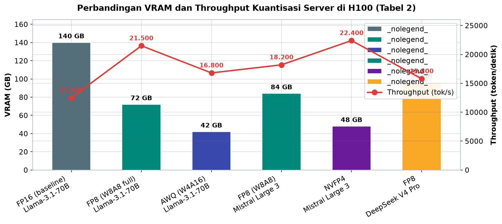
Perhatikan kontras antara FP8 dan AWQ pada Llama 3.1 (70B). AWQ memakai VRAM jauh lebih sedikit (42 GB vs 72 GB) dan batch size maksimumnya lebih besar (256 vs 144) — unggul saat ruang memori adalah segalanya. Tetapi FP8 unggul di throughput (21.500 vs 16.800 token/detik, sekitar 1,3x lebih cepat) dan di TTFT (128 ms vs 165 ms) — unggul di dua dimensi yang dirasakan langsung oleh pengguna. Inilah inti trade-off AWQ vs FP8: AWQ menjual ruang, FP8 menjual kecepatan dan responsivitas. Sementara itu, NVFP4 menyatukan keduanya untuk Mistral Large 3: VRAM 48 GB (hampir separuh FP8) namun throughput 22.400 token/detik — 23% lebih cepat dari FP8 dan hemat VRAM 43%. DeepSeek V4 Pro menunjukkan satu pelengkap penting: karena KV-cache-nya hanya 10% dari V3.2, konteks 1M token hanya menghabiskan ~3,2 GB VRAM (bandingkan ~32 GB di V3.2) — sehingga model 1,6 triliun parameter total / 49 miliar aktif ini bisa dilayani dengan 96 GB VRAM dalam FP8.
Berikut alur kerja AWQ dari model FP16 hingga model 4-bit siap deploy:
Jalur kiri ke kanan menunjukkan mengapa AWQ disebut activation-aware: activation dilihat lebih dulu (B) sebelum menentukan bobot mana yang diselamatkan (C). Tidak ada loop backpropagation — diagramnya linier, dan itu justru kekuatannya: cepat, deterministik, dan mudah direproduksi. Model output (F) adalah campuran weight 4-bit dan activation FP16 yang dikenal sebagai W4A16.
Perhatikan bahwa langkah E (per-channel scaling) adalah "trik" utama yang membuat semuanya bekerja tanpa pelatihan ulang: scaling tidak menambah parameter, hanya mengubah skala — dan karena operasi ini dapat dibalik (di-dequantisasi) saat inference, model tetap berperilaku hampir sama seperti FP16. Inilah alasan mengapa quantizer AWQ yang dibuat sekali bisa dipakai berulang kali di berbagai task tanpa perlu re-calibration per domain.
3. AWQ — Activation-aware Weight Quantization
AWQ mewakili satu filsafat dalam kuantisasi: alih-alih memangkas semua bobot secara seragam, kenali mana yang paling menentukan, lalu perlakukan khusus. Filsafat ini lahir dari pengamatan empiris — dan hasilnya menjadi standar de facto untuk kuantisasi 4-bit di dunia open source, dipakai di vLLM, TGI, dan engine utama lainnya.
Hanya 1% Bobot yang Benar-Benar Penting
AWQ (Activation-aware Weight Quantization) lahir dari sebuah observasi yang cermat oleh Lin et al. (2024) — paper yang meraih best paper di MLSys 2024 [1]. Tidak semua weight dalam jaringan LLM sama pentingnya. Hanya sekitar 1% bobot yang bersifat "salient" — sangat menentukan terhadap kualitas output karena terus-menerus dilewati dengan activation berkisar besar. Jika bobot 1% ini dikuantisasi dengan cara yang sama seperti 99% lainnya, akurasi model akan jeblok. AWQ justru melindungi 1% ini.
Observasi Aktivasi, Bukan Bobot
Yang membedakan AWQ dari pendekatan sebelumnya adalah cara mengidentifikasi bobot penting: dengan mengamati distribusi aktivasi, bukan statistik bobot itu sendiri. AWQ menjalankan beberapa sampel kalibrasi (sekitar 128 sampel teks, misalnya dari dataset Wikitext) melalui model FP16 dan mencatat rentang nilai yang melewati setiap kanal. Kanal yang melewati activation besar dianggap berdampak besar terhadap hasil; kanal yang jarang dilewati activation besar lebih toleran terhadap kesalahan kuantisasi.
Scaling Tanpa Backpropagation
Kuncinya di sini: AWQ tidak melakukan backpropagation, tidak ada fine-tuning, dan tidak ada reconstruction berbasis gradien seperti metode sebelumnya. Yang dilakukan hanya mencari faktor skala per-kanal — mengalikan kanal salient dengan skalar besar sebelum kuantisasi, lalu membagi aktivasi dengan skalar yang sama setelahnya. Operasi ini menjaga bobot penting tetap presisi sekaligus memaksa pembagian rentang kuantisasi yang lebih adil. Karena tidak perlu pelatihan ulang, AWQ mencapai generalisasi tinggi: quantizer yang dilatih untuk satu task tetap bekerja baik untuk task lain, dan prosesnya cepat — selesai dalam hitungan menit hingga jam. Output finalnya adalah weight 4-bit + activation FP16 (W4A16): kompresi bobot 4x dengan kualitas yang dijaga ketat.
Sebagai konteks sejarah: sebelum AWQ, pendekatan dominan adalah GPTQ [5] yang menyusun kembali bobot berbasis matriks Hessian — efektif, tetapi sensitif terhadap outlier di aktivasi yang tidak bisa dilihat dari statistik bobot saja. AWQ menjawab kelemahan itu dengan mengamati aktivasi secara langsung, dan hasilnya lebih stabil pada model dengan distribusi aktivasi yang tidak merata — situasi yang sangat umum di LLM modern. Bagi praktisi, perbedaan ini berarti satu hal sederhana: AWQ lebih sulit "dikagetkan" oleh data yang tidak terlihat saat kalibrasi.
4. FP8 — Floating Point 8-bit
Jika AWQ adalah format "pintar tapi harus dijaga", FP8 adalah format "bawaan pabrik". Ia memanfaatkan fakta bahwa GPU modern sudah menghitung dalam FP8 secara native — bukan kompresi yang dipaksakan dari luar, melainkan bahasa asli tensor core-nya. Konsekuensinya, efisiensinya konsisten di semua lapisan: bobot, aktivasi, bahkan cache.
E4M3 vs E5M2: Dua Dialek Satu Bahasa
FP8 bukan satu format tunggal, melainkan dua varian dengan pertukaran yang berbeda — distandarisasi dalam paper FP8 Formats for Deep Learning oleh Micikevicius et al. (2022) [2]. E4M3 mengalokasikan 1 bit sign, 4 bit eksponen, dan 3 bit mantissa — presisi tinggi (mendekati FP16) tetapi jangkauan nilai terbatas (hingga ±448). E5M2 memakai 1 bit sign, 5 bit eksponen, dan 2 bit mantissa — jangkauan nilai jauh lebih luas (hingga ±57.344, cocok menangkap nilai liar dari gradient atau activation outlier) tetapi presisinya lebih kasar. Konvensi umum: E4M3 untuk forward pass (inference), E5M2 untuk backward pass (training) — dua dialek yang saling melengkapi dalam satu bahasa 8-bit.
W8A8: Dua Kali Hemat, Enam Puluh Persen Lebih Cepat
Dalam mode W8A8, baik weight maupun activation disimpan dalam FP8. Dampaknya dua arah: kebutuhan memori bobot turun setengah (2x kompresi) dan throughput meningkat — pada H100, throughput FP8 bisa mencapai sekitar 1,6-2,0x dibandingkan FP16 karena tensor core Hopper beroperasi dua kali lebih cepat di FP8 dan bandwidth memori yang harus dilalui setengahnya. Yang penting: FP8 bukan kuantisasi "statis" yang rentan drift — ia bisa memakai kalibrasi dinamis (menghitung skala dari data aktual secara online), sehingga tidak lagi bergantung pada calibration dataset yang bisa usang seiring perubahan pola penggunaan. Inilah dasar klaim stabilitasnya untuk beban 24/7.
Satu catatan penting bagi yang masih ragu: FP8 bukan "FP16 yang dipotong sembarangan". Desainnya memakai scaling cerdas — nilai-nilai besar dinormalisasi ke rentang E4M3 sebelum dihitung, lalu hasilnya diskalakan kembali — sehingga overflow dan underflow (dua musuh kuantisasi titik-mengambang) bisa ditekan. Teknik migration quantization difficulty dari aktivasi ke bobot yang dipelopori SmoothQuant [4] menjadi dasar mengapa kuantisasi 8-bit weight+activation bisa mempertahankan kualitas setinggi ini: masalah outlier di aktivasi diserap oleh bobot yang lebih sabar terhadap skala.
FP8 untuk KV Cache
Satu tambahan menarik: FP8 juga bisa diterapkan pada KV-cache, bukan hanya weight. KV-cache adalah memori yang tumbuh seiring panjang konteks dan jumlah request dalam batch (lihat Bab 5.1). Dengan FP8 KV cache, kebutuhan memorinya turun hingga 50%, sehingga server bisa menampung batch lebih besar atau konteks lebih panjang dalam GPU yang sama. Syaratnya: GPU harus punya dukungan FP8 compute (compute capability ≥ 8.9) — pengguna A100 dan RTX 3090 tidak bisa memanfaatkan jalur ini.
Perpaduan FP8 W8A8 + FP8 KV-cache inilah kombinasi "FP8 penuh" yang paling sering dipakai server produksi: bobot hemat setengah, cache hemat setengah, dan keduanya dihitung dalam satu bahasa perangkat keras yang sama. Efek domino kedua penghematan ini terlihat langsung pada batch size maksimum dan TTFT (Tabel 5.14) — ruang memori yang tersisa dipakai untuk melayani lebih banyak request, bukan untuk menyimpan angka yang tidak berguna.
5. AWQ vs FP8: Dua Jalur, Satu Tujuan
Perbandingan ringkas: AWQ menang di kompresi dan kompatibilitas — kompresi 4x (berbanding 2x FP8), berjalan di GPU Turing/Ampere lama, dan kualitas rata-rata lebih baik di model kecil karena weight krusialnya dirawat dengan scaling. FP8 menang di throughput dan stabilitas — kecepatan asli H100/Ada, calibration overhead minimal, dan perilaku jangka panjang yang lebih deterministik berkat scaling dinamis. Untuk model kecil di GPU lama, AWQ adalah pemenang; untuk model menengah-besar di GPU Hopper yang harus hidup 24/7, FP8 lebih masuk akal. Data kuantitatifnya dirangkum di Tabel 5.13 dan 2.
Ada satu dimensi yang sering terlewat dalam perdebatan "AWQ vs FP8": biaya total kepemilikan. AWQ memungkinkan model besar berjalan di GPU generasi sebelumnya, yang harganya kini jauh lebih murah di pasar bekas — jalur hemat yang sangat menarik bagi perusahaan dengan anggaran terbatas. FP8 menuntut investasi GPU baru tetapi membuka kapasitas yang jauh lebih besar: throughput lebih tinggi berarti lebih sedikit GPU untuk melayani beban yang sama, dan TTFT yang lebih rendah berarti SLO yang lebih ketat bisa dikontrakkan ke bisnis. Kedua angka itu — harga GPU bekas versus kapasitas tambahan — harus dihitung dalam mata uang yang sama sebelum memutuskan.
Yang tidak kalah penting: batas kualitas di tengahnya. Untuk model di bawah 13B, AWQ (MMLU loss 0,5-1,0%) biasanya masih nyaman; untuk model 30B ke atas, loss absolutnya bisa terlihat lebih besar pada task sensitif seperti coding (HumanEval loss 1-2%). Jika tim Anda tidak memiliki kapasitas monitoring kualitas harian, pilihan paling aman adalah FP8 — di mana margin kesalahannya sangat kecil sehingga drift hampir tidak mungkin terlihat oleh pengguna akhir.
Bandingkan dua baris bit di atas: E4M3 mengorbankan range demi 3 bit mantissa (presisi tinggi) — ideal untuk forward pass/inference; E5M2 mengorbankan presisi demi 5 bit eksponen (jangkauan hingga ±57.344) — ideal menangkap outlier dan gradient saat training. Keduanya tetap satu format 8-bit; pertukarannya terjadi di dalam 8 bit yang sama.
Implikasinya bagi server: dalam inference, gunakan E4M3 untuk bobot dan aktivasi. Jika suatu activation di salah satu lapisan ternyata melebihi ±448 (langka, tetapi bisa terjadi pada beberapa model), angka itu akan dipotong (clamped) — dan di sinilah scaling dinamis FP8 berperan menyelamatkan: skala dihitung dari nilai maksimum aktual, sehingga hampir tidak ada nilai yang benar-benar clamped. Inilah alasan teknis mengapa FP8 jarang menunjukkan drift signifikan pada beban nyata.
6. Strategi Hybrid: Menggabungkan yang Terbaik
Keputusan tidak harus hitam-putih. Strategi campuran biasa dipakai di lapangan: AWQ untuk model > 70B yang harus muat di VRAM terbatas (kompresi 4x sangat bernilai), dan FP8 untuk model di bawah 70B di H100 (kompresi 2x sudah cukup, kecepatan lebih penting). Ada pula kombinasi menarik: AWQ + FP8 KV-cache — weight 4-bit untuk menghemat ruang, cache 8-bit untuk menghemat lalu lintas memori — asalkan GPU mendukung FP8. Panduan umum berdasarkan GPU (Tabel 5.15): A100/RTX 3090 → AWQ; H100/RTX 4090 → FP8; GPU Blackwell (B200) → NVFP4 untuk model yang mendukungnya. Peta ini akan Anda lihat lengkap pada tabel rekomendasi nanti.
Ingat prinsip paling sederhana dari strategi hybrid: kompresi membeli ruang, native membeli kecepatan. Ketika salah satu dari keduanya sudah cukup — model muat dan cepat — format paling sederhana yang memenuhi dua syarat itu adalah yang terbaik. Menumpuk kuantisasi dua lapis (misalnya AWQ + kuantisasi cache + quantized LoRA) jarang memberi nilai tambah, tetapi hampir selalu menambah titik kerusakan (failure point) baru.
Tabel 5.15: Rekomendasi Berdasarkan GPU
Tabel terakhir menyajikan rekomendasi cepat — pilih baris GPU Anda, lalu ikuti kolom format dan model maksimal:
| GPU | VRAM | Format Terbaik | Model Maks | Catatan |
|---|---|---|---|---|
| H100 (80GB) | 80 GB | FP8 W8A8 | Llama 3.1 (70B) / Mistral Large 3 | Optimal native FP8 |
| H200 (141GB) | 141 GB | FP8 W8A8 | DeepSeek V4 Pro (49B aktif) | FP8 + KV cache efisien |
| A100 (80GB) | 80 GB | AWQ 4-bit | Llama 3.1 (70B) | Tidak ada FP8 HW |
| A100 (40GB) | 40 GB | AWQ 4-bit | Qwen 2.5 (32B) | VRAM terbatas |
| RTX 4090 | 24 GB | AWQ 4-bit / FP8 | Llama 3.1 (8B) / DeepSeek V4 Flash | FP8 didukung |
| RTX 3090 | 24 GB | AWQ 4-bit | Llama 3.1 (8B) | FP8 tidak didukung |
| RTX 6000 (2x) | 48 GB | INT4 | DeepSeek V4 Flash (284B) | Dual GPU untuk MoE |
| L40S | 48 GB | FP8 W8A8 | Qwen 2.5 (32B) / Mistral Large 3 | Enterprise FP8 |
| B200 (Blackwell) | 192 GB | NVFP4 | Mistral Large 3 (675B) | NVFP4 native optimal |
Bacaan tabel ini menegaskan kembali dua tesis sub-bab ini. Pertama, perangkat keras menentukan bahasa: tanpa compute capability ≥ 8.9, FP8 hanyalah teori; A100 dan RTX 3090 yang masih banyak terpakai di perusahaan harus puas dengan AWQ. Kedua, semakin baru GPU, semakin lebar pilihan — H100 membuka FP8, B200 membuka NVFP4. Model MoE dengan parameter aktif kecil seperti DeepSeek V4 Flash (284B total/13B aktif) dan DeepSeek V4 Pro memungkinkan model "raksasa terdengar" berjalan di GPU yang jauh dari kata raksasa — selama orang mau memakai format yang tepat.
Ada satu pola ekonomis yang layak digarisbawahi: kolom "Model Maks" hampir selalu didikte oleh kuantisasi. Pada GPU yang sama, memilih AWQ alih-alih FP16 bisa menggandakan ukuran model yang bisa dilayani, dan memilih FP8 alih-alih FP16 hampir menggandakan throughput sekaligus. Dengan kata lain, kuantisasi adalah "GPU virtual gratis" — satu-satunya upgrade perangkat lunak yang menambah kapasitas tanpa menambah watt. Karena itu, sebelum membeli GPU baru, jalankan dulu simulasi Tabel 5.14 dengan beban kerja Anda: sering kali keputusan "beli H100" bisa ditunda hanya dengan mengganti format pada GPU yang sudah ada.
Satu hal terakhir: jadikan kualitas sebagai gerbang, bukan formalitas. Susun pipeline sederhana — kuantisasi, evaluasi (Langkah 4), lalu canary deploy selama beberapa hari dengan monitoring perplexity — sebelum mempromosikan satu format ke produksi. Kebiasaan ini terdengar berat untuk tim kecil, tetapi justru menyelamatkan dari insiden yang jauh lebih mahal: model yang diam-diam menurun kualitasnya selama berhari-hari, tepat di beban kerja paling kritis perusahaan.
Ketika meng-konfigurasi server baru, alur keputusan praktisnya sebagai berikut:
Cabang kiri (FP8) dan cabang kanan (AWQ) adalah dua dunia yang sudah kita kenal; simpul tengah (D) mengingatkan bahwa gabungan AWQ + FP8 KV-cache adalah opsi sah untuk model sangat besar. Dan di ujung semua cabang, selalu ada langkah terakhir yang tak boleh dilewatkan: evaluasi kualitas — tiga format di atas hanya boleh masuk produksi setelah loss-nya terukur pada Langkah 4.
Alur ini juga menunjukkan mengapa keputusan kuantisasi sebaiknya diambil per deployment, bukan sekali untuk selamanya: GPU baru masuk (H100, B200), model baru rilis, beban kerja berubah — setiap perubahan bisa menggeser cabang yang Anda ambil. Jadikan diagram ini sebagai decision tree yang dijalankan ulang setiap kali komponen di atas berubah.
7. Praktikum / Hands-On
Empat langkah berikut membawa Anda dari nol menuju produksi: kuantisasi AWQ yang bisa dijalankan di GPU lama (Langkah 1), FP8 online untuk GPU Hopper (Langkah 2), NVFP4 untuk Blackwell (Langkah 3), lalu gerbang terakhir — validasi kualitas (Langkah 4) yang wajib dilewati sebelum deploy apa pun.
Langkah 1: Kuantisasi AWQ dan Deploy
# Install AutoAWQ
pip install autoawq
# Quantize Llama-3.1-8B ke AWQ 4-bit
python -m awq.quantize --model-path meta-llama/Meta-Llama-3.1-8B-Instruct \
--quant-path ./models/llama-3.1-8b-awq \
--calibration-dataset wikitext \
--quant-config w4a16
# Deploy dengan vLLM
vllm serve ./models/llama-3.1-8b-awq \
--quantization awq \
--max-model-len 8192Proses kuantisasi memakan waktu menit hingga jam tergantung ukuran model, dan hasilnya — folder berisi weight 4-bit + scaling factors — langsung dikenali vLLM dengan flag --quantization awq. Perhatikan penggunaan dataset wikitext sebagai kalibrasi: sampel teks umum ini adalah pilihan default yang cukup bagi AWQ karena metode ini tidak melatih ulang.
Jika Anda berurusan dengan model yang sangat besar (70B ke atas) dan ingin menjadwalkan kuantisasi di malam hari, bungkus perintah di atas dalam script yang bisa dijalankan di background server — output AWQ bersifat deterministik untuk input yang sama, sehingga proses yang terputus bisa diulang dengan hasil identik. Simpan log kalibrasi beserta versi model untuk melacak dari kuantisasi mana sebuah artifact berasal; kebiasaan kecil ini sangat membantu saat drift muncul berminggu-minggu kemudian.
Langkah 2: FP8 Quantization Online dengan vLLM
# Dynamic FP8 quantization (no calibration needed)
vllm serve meta-llama/Meta-Llama-3.1-8B-Instruct \
--quantization fp8 \
--kv-cache-dtype fp8 \
--gpu-memory-utilization 0.95
# Atau gunakan pre-quantized FP8 dari HuggingFace
vllm serve neuralmagic/Meta-Llama-3.1-8B-Instruct-FP8 \
--max-model-len 8192Dua baris perintah ini menunjukkan keunggulan FP8 di lapangan: tanpa kalibrasi. --quantization fp8 memicu kuantisasi dinamis pada saat load, di mana skala dihitung dari weight aktual; --kv-cache-dtype fp8 memangkas memori cache hingga setengahnya. Alternatif kedua memakai weight FP8 siap pakai dari Neural Magic [6] — cukup unduh dan jalankan. Pastikan GPU Anda Hopper/Ada; pada A100 perintah ini akan gagal atau berjalan di fallback FP16.
Yang menarik dari jalur online: Anda tidak perlu menyimpan artefak kuantisasi terpisah — vLLM menghitung skala di setiap load dan menyimpannya dalam memori. Konsekuensinya, perpindahan antar-format menjadi semudah mengganti flag, dan rollback ke FP16 cukup dengan menghapus flag. Fleksibilitas ini adalah salah satu alasan FP8 terasa "ringan" secara operasional bagi tim SRE.
Catatan produksi: pada H100, gabungkan opsi di atas dengan --max-model-len yang disesuaikan dengan beban Anda dan --gpu-memory-utilization 0.95 untuk memanfaatkan KV-cache sebesar mungkin. Dengan --kv-cache-dtype fp8, konteks total yang bisa ditampung pada H100 80GB nyaris dua kali lipat dibanding FP16 — kombinasi yang membuat model 70B dengan konteks panjang tetap nyaman di satu node. Ukur dengan load test (Bab 5.4, Langkah 2) sebelum menetapkan SLO.
Langkah 3: NVFP4 untuk Mistral Large 3
# NVFP4 hanya didukung di GPU Blackwell (B200) atau via Aphrodite Engine
# Mistral Large 3 mendukung NVFP4 natively
# Via vLLM (dengan dukungan NVFP4)
vllm serve mistralai/Mistral-Large-3-675B \
--quantization nvfp4 \
--kv-cache-dtype fp8 \
--max-model-len 65536 \
--tensor-parallel-size 4
# Via Aphrodite (kartu gaming, NVFP4 via custom kernel)
aphrodite run mistralai/Mistral-Large-3-675B \
--quantization nvfp4 \
--max-model-len 32768 \
--tensor-parallel-size 2
# Benchmark throughput vs FP8:
# FP8: 18.200 tok/s (84 GB VRAM)
# NVFP4: 22.400 tok/s (48 GB VRAM) — 23% lebih cepat, 43% lebih hemat VRAMNVFP4 adalah format 4-bit floating point NVIDIA yang memerlukan dukungan hardware Blackwell — atau, untuk kartu gaming, custom kernel dari engine Aphrodite. Keuntungannya terlihat dari benchmark komentar di atas: lebih cepat 23% dan lebih hemat VRAM 43% dibandingkan FP8 pada model yang sama. Perhatikan bahwa tensor parallel size 4 tetap diperlukan — model 675B harus dihamparkan ke 4 GPU apa pun formatnya.
Yang perlu dicatat: meskipun namanya "4-bit", NVFP4 berbeda dari AWQ yang integer. NVFP4 menyimpan weight dalam floating point 4-bit (dua varian: 1 bit eksponen + 2 bit mantissa, dan 0 eksponen + 3 mantissa), sehingga range numeriknya tetap memadai untuk bobot dengan variasi besar — salah satu alasan loss-nya (MMLU 0,4-0,8%) lebih rendah dari AWQ pada model yang sama. Namun dukungannya masih terbatas pada model tertentu; cek daftar model yang mendukung NVFP4 sebelum berinvestasi di GPU Blackwell.
Langkah 4: Validasi Kualitas Pasca-Kuantisasi
# validate_quant.py
from lm_eval import evaluator
models = {
"FP16": "meta-llama/Meta-Llama-3.1-8B-Instruct",
"AWQ": "./models/llama-3.1-8b-awq",
"FP8": "neuralmagic/Meta-Llama-3.1-8B-Instruct-FP8",
}
for name, model in models.items():
results = evaluator.simple_evaluate(
model="hf",
model_args=f"pretrained={model}",
tasks=["mmlu", "gsm8k"],
batch_size=8,
)
print(f"{name}: MMLU={results['results']['mmlu']['acc']:.3f}, "
f"GSM8K={results['results']['gsm8k']['acc']:.3f}")Skrip ini membandingkan tiga versi model yang sama — FP16 (baseline), AWQ, dan FP8 — pada dua task yang saling melengkapi: MMLU (pengetahuan dunia) dan GSM8K (matematika). Bandingkan hasilnya dengan Tabel 5.13: perbedaan MMLU sekitar 0,1-1,0% dari FP16 adalah normal; jika loss-nya melebihi rentang itu, periksa dataset kalibrasi atau pertimbangkan FP8. Aturan praktis produksi: loss MMLU < 1% dan loss GSM8K < 2% adalah batas aman untuk beban 24/7 — di atas itu, kualitas yang bisa dikomplain pengguna mulai terasa.
Jangan lupa menyimpan baseline: simpan hasil evaluasi FP16 sebagai angka acuan tetap. Seiring waktu, library model berubah (tokenizer, template chat), dan tanpa baseline yang stabil Anda tidak akan tahu apakah penurunan skor berasal dari kuantisasi atau dari perubahan pipeline lain. Satu file CSV berisi tanggal, versi model, format, MMLU, dan GSM8K sudah cukup menjadi akar monitoring kualitas jangka panjang tim Anda.
8. Studi Kasus: Perusahaan Fintech — Stabilitas 24/7 Prioritas Utama
Latar belakang. Sebuah platform fintech mengoperasikan Llama 3.1 (70B) untuk tugas kritis: menganalisis dokumen transaksi, mengekstrak klausul kontrak, dan meringkas notulen rapat investasi. Konsekuensi kesalahan kecil bukan sekadar jawaban aneh — bisa menjadi keputusan bisnis yang salah. SLO yang dikontrakkan ke manajemen: uptime 99,9%, tidak ada degradasi kualitas, dan latensi < 2 detik.
Pilihan awal. Tim infra memiliki dua GPU A100 80GB (total 160 GB VRAM). Model 70B FP16 butuh 140 GB untuk bobot saja, plus KV-cache dan overhead — tidak muat. Kuantisasi wajib. A100 tidak mendukung FP8 hardware (compute capability 8.0 < 8.9), sehingga pilihan jatuh pada AWQ 4-bit: 42 GB untuk bobot, sangat muat di 160 GB, kompatibel penuh. Keputusan ini sejalan dengan Tabel 5.15 — AWQ adalah format terbaik untuk A100.
Masalah. Setelah tiga hari berjalan, tim monitoring menangkap sesuatu yang mengganggu: perplexity drift terdeteksi pada sebagian dokumen keuangan — terutama yang kaya angka dan istilah terspesialisasi. Skor certainty model pada ekstraksi klausul turun perlahan, dan beberapa jawaban mulai kehilangan detail. Tidak ada crash, tetapi kualitasnya menggerogoti kepercayaan pengguna internal. Analisis menunjukkan kombinasi dua faktor: kuantisasi weight-only 4-bit yang agresif pada bagian sentiment-ekstrim dokumen keuangan, dan scaling factor hasil kalibrasi wikitext yang kurang mewakili distribusi teks keuangan.
Perlu ditegaskan: ini bukan kegagalan AWQ secara umum — AWQ tetap format terbaik yang tersedia untuk A100 — melainkan pelajaran tentang kesenjangan domain: dataset kalibrasi yang ideal harus meniru distribusi data produksi. Tim fintech itu baru menyadarinya setelah drift terlihat. Pengalaman ini juga menunjukkan pentingnya monitoring kualitas sejak hari pertama, bukan setelah ada keluhan — drift yang terjadi selama tiga hari tanpa terdeteksi adalah tiga hari output yang tidak bisa dikoreksi.
Solusi akhir. Tim meng-upgrade ke 2x H100 80GB dan bermigrasi ke FP8 W8A8 (72 GB untuk bobot — nyaman muat). Tidak hanya drift hilang — dengan scaling dinamis FP8, tidak ada lagi kalibrasi statis yang bisa usang, tetapi throughput naik 1,5x dibandingkan AWQ (21.500 vs 16.800 token/detik per Tabel 5.14), dan TTFT P50 turun dari 165 ms ke 128 ms. Latensi tetap jauh di bawah SLO 2 detik bahkan di jam puncak.
Pelajaran. Untuk beban kerja 24/7 yang kritis, FP8 lebih unggul karena stabilitasnya yang lebih tinggi, meskipun kompresinya lebih rendah (2x vs 4x). Dua faktor penentu tambahan layak dicatat: (1) investasi hardware H100 terbayar karena membuka akses ke FP8 native; (2) latensi memori keuangan yang spesifik penting — calibration set yang tidak mewakili domain menjadi bom waktu. Jika anggaran belum memungkinkan H100, strategi darurat yang bisa dipertimbangkan adalah AWQ dengan calibration set dari data keuangan internal, ditambah monitoring perplexity harian (inspirasi: Gambar 5.5-4 stabilitas 7 hari) agar drift tertangkap sebelum merusak layanan.
Enam bulan kemudian. Tim menambahkan dua metrik baru ke dashboard mereka: skor GSM8K mingguan pada sampel dokumen transaksi, dan penghitungan request timeout per jam. Keduanya dijalankan otomatis setiap Minggu pagi. Saat sebuah release baru model tiba, mereka tidak langsung men-deploy; versi FP8 dan versi NVFP4 (setelah menguji satu node B200) dijalankan berdampingan selama seminggu, lalu yang terbaik secara loss dan biaya yang dipromosikan. Kebiasaan evaluate-then-promote ini, bukan satu pilihan format saja, yang akhirnya menjaga platform fintech tersebut tetap di atas SLO 99,9% mereka.
Titik akhir yang patut diingat: kuantisasi server adalah keputusan sistem, bukan keputusan satu file. Format (AWQ/FP8/NVFP4), GPU, model, dan budaya monitoring tim bekerja sebagai satu paket — mengubah salah satunya tanpa menyesuaikan yang lain hampir selalu berujung pada insiden. Bacalah sub-bab ini sebagai peta: Tabel 5.13 dan 2 memberi data, Tabel 5.15 memberi arah, dan studi kasus fintech memberi gambaran apa yang terjadi ketika keputusan itu keluar keseimbangan. Selamat memilih format — dan selamat membangun monitoring-nya sejak hari pertama.
9. Referensi
Paper Jurnal/Konferensi
[1] Lin, J., Tang, J., Tang, H., Yang, S., Chen, W.M., Wang, W.C., Xiao, G., Dang, X., Gan, C., & Han, S. (2024). AWQ: Activation-aware Weight Quantization for LLM Compression and Acceleration. Proceedings of Machine Learning and Systems (MLSys). DOI: 10.48550/arXiv.2306.00978 (https://arxiv.org/abs/2306.00978) — Paper inti AWQ, best paper MLSys 2024; sumber data Tabel 5.13 dan 3.
[2] Micikevicius, P., et al. (2022). FP8 Formats for Deep Learning. Advances in Neural Information Processing Systems (NeurIPS). DOI: 10.48550/arXiv.2209.05433 (https://arxiv.org/abs/2209.05433) — Standarisasi format FP8 E4M3/E5M2 oleh NVIDIA; fundamental untuk pembahasan format FP8.
[3] Peng, H., et al. (2023). FP8-LM: Training FP8 Large Language Models. arXiv: 2310.18313. DOI: 10.48550/arXiv.2310.18313 (https://arxiv.org/abs/2310.18313) — Framework FP8 mixed precision; relevan untuk implementasi FP8 inference.
[4] Xiao, G., Lin, J., Seznec, M., Wu, H., Demouth, J., & Han, S. (2023). SmoothQuant: Accurate and Efficient Post-Training Quantization for Large Language Models. International Conference on Machine Learning (ICML). DOI: 10.48550/arXiv.2211.10438 (https://arxiv.org/abs/2211.10438) — Teknik memindahkan kesulitan kuantisasi dari activation ke weight; menjelaskan mengapa FP8 mampu mempertahankan kualitas.
[5] Frantar, E., et al. (2023). GPTQ: Accurate Post-Training Quantization for Generative Pre-trained Transformers. International Conference on Learning Representations (ICLR). DOI: 10.48550/arXiv.2210.17323 (https://arxiv.org/abs/2210.17323) — Baseline perbandingan; fondasi AWQ dan teknik post-training lainnya.
Referensi Pendukung (Dokumentasi/Repository)
[6] Neural Magic. FP8 LLMs for vLLM Collection. https://huggingface.co/collections/neuralmagic — Koleksi model FP8 siap pakai untuk vLLM.
[7] NVIDIA. FP8 Primer. https://docs.nvidia.com/deeplearning/transformer-engine/user-guide/examples/fp8_primer.html — Panduan resmi format FP8 dan penggunaannya di Transformer Engine.
Bab 5.6: Distributed Inference
Sebuah lemari buku raksasa tidak bisa masuk ke dalam satu kamar kecil — ia harus dibongkar, dibawa per bagian, lalu dirakit kembali di tempat tujuan. Demikian pula model 405B: tidak muat di satu GPU mana pun, dan satu-satunya jalan adalah memecahnya dengan cerdas ke banyak GPU — bahkan ke banyak komputer sekaligus.
1. Tujuan Sub-Bab
Setelah membaca sub-bab ini, Anda akan mampu:
- Menjelaskan tiga strategi paralelisme — tensor parallelism (TP), pipeline parallelism (PP), dan sequence parallelism (SP) — beserta kekuatan dan keterbatasan masing-masing
- Menyusun Ray cluster multi-node dan menjalankan vLLM di atasnya dengan kombinasi TP dan PP yang tepat
- Mengidentifikasi kapan SkyPilot adalah pilihan yang lebih baik untuk deploy multi-cloud yang hemat biaya
- Membaca dan membedah benchmark efisiensi scaling (seperti Tabel 5.16 pada sub-bab ini) serta memprediksi efek perubahan kombinasi TP/PP pada throughput
2. Mengapa Distributed Inference?
Memory Wall: Dinding yang Tidak Bisa Dilompati
Setiap GPU — sebesar apa pun — punya batas VRAM. H100 80GB adalah kartu yang sangat mahal, tetapi Llama 3.1 (405B) dalam FP16 saja membutuhkan 810 GB — setara 10 buah H100 80GB sekaligus hanya untuk menyimpan bobot, belum termasuk KV-cache dan overhead runtime. Ini adalah apa yang disebut memory wall: pertumbuhan ukuran model melampaui pertumbuhan VRAM per GPU, dan tidak ada GPU tunggal di pasar yang bisa menampung model kelas 400B ke atas. Jalan keluarnya bukan menunggu GPU yang lebih besar, melainkan mengubah cara berpikir: satu model, banyak GPU.
Jalan Keluar: Memecah, Membagi, Menggabungkan
Prinsip distributed inference sederhana: model tidak disalin, melainkan dipecah — bobot, lapisan, bahkan satu sequence — ke beberapa GPU, dan hasil-hasil parsialnya disatukan saat forward pass berjalan. GPU-GPU itu bisa berada di satu komputer (satu node, dihubungkan NVLink) atau di beberapa komputer (multi-node, dihubungkan Ethernet atau InfiniBand). Konsekuensi langsungnya: bandwidth antar-GPU menjadi mata uang kedua yang setara pentingnya dengan VRAM. Semakin sering GPU harus "berbicara" satu sama lain, semakin menentukan kualitas jaringan antar-GPU — dan inilah yang membedakan strategi paralelisme yang satu dari yang lain.
Perbedaan mendasar lain yang perlu dipahami sejak awal: memori terpecah, tetapi perilaku tetap satu model. Setiap GPU hanya memegang potongan bobot, tetapi semua GPU bekerja sama menghasilkan satu respons koheren — bukan enam belas respons parsial. Karena itu, setiap GPU yang mati atau lambat berdampak pada seluruh pipeline, dan redundancy bukan bagian dari desain dasar; inilah mengapa lapisan orchestration (Ray) dan monitoring (NCCL) bukan opsional, melainkan bagian tak terpisahkan dari strategi ini.
Satu pengecualian penting untuk pola "dipecah": Cloud API. Model seperti GPT-5.5 tidak pernah dibuka untuk dijalankan sendiri — satu-satunya cara menjangkaunya adalah memanggil API. Bagi sebagian besar tim, pertanyaan nyatanya bukan "bagaimana menjalankan 405B di kluster kami?", melainkan "jalankan sendiri (butuh distributed inference) atau sewa API?" Perhitungan sederhana: jika utilisasi tinggi dan model open-weight, kluster sendiri lebih hemat; jika sporadis atau model eksklusif, API lebih masuk akal. Sub-bab ini akan membekali Anda dengan angka untuk mengambil keputusan itu dengan kepala dingin.
Tabel 5.16: Benchmark Distributed — Llama 3.1 (405B)
Berikut dampak kombinasi TP/PP pada throughput dan efisiensi, diukur atas Llama 3.1 (405B) dengan H100:
| Konfigurasi | Total GPUs | TP | PP | Throughput (tok/s) | Speedup Efficiency |
|---|---|---|---|---|---|
| 8x H100 (1 node) | 8 | 8 | 1 | 4.200 | 100% |
| 16x H100 (2 node, NVLink) | 16 | 8 | 2 | 7.800 | 93% |
| 16x H100 (2 node, Ethernet) | 16 | 4 | 4 | 6.200 | 74% |
| 32x H100 (4 node, Ethernet) | 32 | 4 | 8 | 11.500 | 68% |
| 64x H100 (8 node, Ethernet) | 64 | 4 | 16 | 18.000 | 54% |
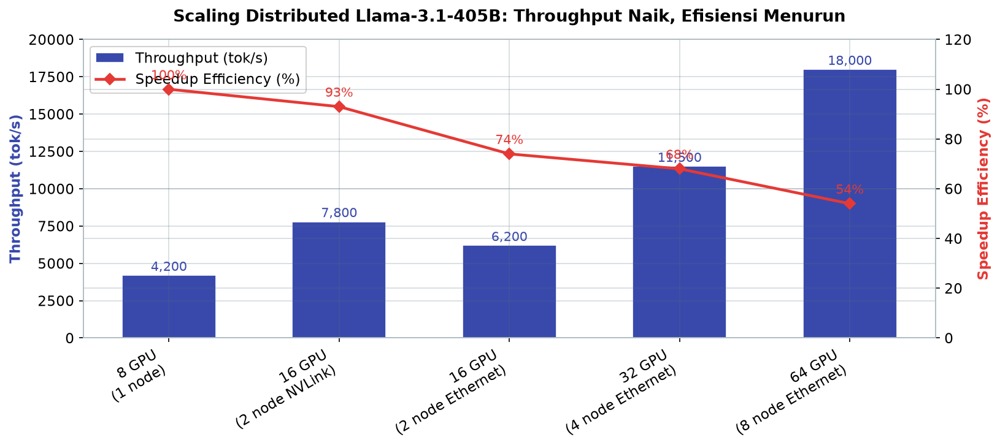
Tidak ada baris dalam tabel ini yang memberikan 8x lipat throughput saat GPU dikalikan 8x — dan itu memang mustahil. Perhatikan dua pelajaran. Pertama, interconnect adalah segalanya: 16 GPU terhubung NVLink lintas node mencapai efisiensi 93%, sementara konfigurasi yang sama dengan Ethernet anjlok ke 74%. Kedua, diminishing returns tak terhindarkan: dari 8 GPU ke 16 GPU, throughput naik 86%; dari 32 ke 64, hanya naik 57% — efisiensi turun ke 54%. Biaya komunikasi yang tumbuh bersama jumlah GPU akhirnya memakan speedup linear. Proyeksi jujur untuk 64 GPU: throughput 18.000 token/detik mungkin, tetapi dengan efisiensi hanya sedikit di atas setengah.
Bagi perencana, tabel ini berfungsi sebagai kalkulator cepat: jika throughput target Anda 10.000 token/detik, 32 GPU Ethernet sudah mencukupi (11.500 tok/s), sedangkan 16 GPU NVLink (7.800 tok/s) belum. Selisihnya adalah perbedaan dua kali lipat biaya hardware — dan sering kali, jawabannya bukan membeli GPU lebih banyak, melainkan menutup gap jaringan dengan InfiniBand atau NVLink antar-node, yang menggeser Anda dari baris 74% ke baris 93%.
3. Tensor Parallelism: Satu Lapisan, Dua Belah
Memecah Matriks per Dimensi
Tensor parallelism (TP) memecah satu operasi matriks — misalnya proyeksi QKV di lapisan attention — menjadi potongan baris/kolom yang didistribusikan ke beberapa GPU. Jika TP=4 dijalankan, GPU 1 memegang seperempat matriks bobot, GPU 2 seperempat lainnya, dan seterusnya; setiap GPU menghitung bagiannya, lalu hasilnya digabungkan. Pendekatan ini mengadopsi algoritma yang dipopulerkan Megatron-LM [3] dan menjadi tulang punggung model parallelism di vLLM.
All-Reduce Setiap Langkah: Harga yang Mahal tapi Layak
Namun ada biaya tersembunyi: setiap forward pass — untuk setiap token pada setiap lapisan — membutuhkan all-reduce, yaitu operasi menjumlahkan hasil parsial dari semua GPU yang terlibat dalam TP. Frekuensinya brutal: model 70B dengan 80 lapisan dan konteks 4096 token melakukan ribuan all-reduce per respons. Komunikasi antar-GPU ini berjalan di atas NCCL — pustaka NVIDIA — yang kinerjanya sangat bergantung pada kecepatan interconnect: NVLink (cepat, dalam satu node) > PCIe (sedang) > Ethernet (lambat). Karena itulah TP paling efektif dalam satu node yang dihubungkan NVLink; menerapkan TP besar lintas-node di jaringan Ethernet akan membuat GPU sibuk menunggu data, bukan menghitung.
Keuntungan TP yang jarang disebut: bubble overhead-nya nol — tidak ada GPU yang menganggur menunggu GPU lain dalam pola sinkronis, karena semua GPU mengerjakan lapisan yang sama pada waktu yang sama. Latency per token pun turun hampir linier terhadap jumlah GPU (sampai komunikasi mulai mendominasi), membuat TP unggul untuk beban kerja yang sensitif latensi seperti chat interaktif. Penghematan memorinya juga adil: setiap GPU hanya menyimpan 1/N bobot model — tidak ada duplikasi — sehingga model 70B yang biasanya 140 GB FP16 hanya butuh 17,5 GB per GPU saat TP=8 (Tabel 5.18).
Tabel 5.17: Perbandingan Strategi Parallelism
Tabel berikut merangkum perbedaan tiga strategi pada delapan dimensi yang menentukan keputusan arsitektur:
| Aspek | Tensor Parallelism (TP) | Pipeline Parallelism (PP) | Sequence Parallelism (SP) |
|---|---|---|---|
| Granularitas | Per-layer/operasi | Per-layer group | Per-sequence chunk |
| Komunikasi | All-reduce (setiap step) | Point-to-point (batch boundary) | Ring attention |
| Interconnect Need | Sangat Tinggi (NVLink) | Rendah (Ethernet OK) | Sedang (RDMA baik) |
| Bubble Overhead | 0% | ~10-30% (tergantung micro-batch) | 0% |
| Efektif dalam 1 Node | Ya (NVLink) | Tidak perlu | Ya |
| Efektif Multi-Node | Kurang (bottleneck network) | Ya | Ya |
| Memory Reduction | ~1/N per GPU | ~1/N per GPU | ~1/N untuk KV cache |
Bacaan kunci tabel ini: TP dan PP bekerja pada dimensi yang saling melengkapi, sehingga kombinasi keduanya (TP dalam node + PP antar node) adalah pola paling umum di lapangan. TP memangkas latensi tiap lapisan dengan paralelisme internal tetapi "haus" bandwidth; PP memangkas beban jaringan dengan estafet tetapi membayar bubble. SP berdiri di dimensi ketiga — tidak mengurangi bobot, hanya membagi KV-cache dan komputasi attention untuk konteks panjang. Tidak ada satu strategi yang menang semua; arsitektur nyata hampir selalu campuran.
Cara membaca cepat tabel ini: periksa dua kolom paling kiri dan paling kanan. Jika interconnect Anda NVLink (kiri), condong ke TP (kanan: "Ya"); jika Ethernet, condong ke PP. Jika beban kerja Anda konteks pendek, SP tidak relevan; jika konteks 128K+, SP menjadi persyaratan, bukan pilihan. Kombinasi paling umum di produksi adalah TP + PP; SP ditambahkan hanya ketika dimensi konteks menjadi bottleneck utama.
Tabel 5.18: Estimasi VRAM Model Terdistribusi
Tabel terakhir memperlihatkan kebutuhan memori per GPU dari tujuh model dengan konfigurasi berbeda:
| Model | FP16 Total | TP=8 (1 node) | TP=4, PP=2 | Rekomendasi Node |
|---|---|---|---|---|
| Llama 3.1 (70B) | 140 GB | 17,5 GB/GPU | 35 GB/GPU | 1 node (8x H100) |
| Llama 3.1 (405B) | 810 GB | 101 GB/GPU | 202 GB/GPU | 2+ node (16x H100) |
| Mixtral-8x22B | 280 GB | 35 GB/GPU | 70 GB/GPU | 1 node (8x H100) |
| DeepSeek-V3 | 671 GB (FP8) | 84 GB/GPU | 168 GB/GPU | 1 node (8x H100) |
| DeepSeek V4 Pro (1.6T MoE) | 320 GB (FP8) | 40 GB/GPU | 80 GB/GPU | 1 node (8x H100) |
| Mistral Large 3 (675B MoE) | 168 GB (FP8) | 21 GB/GPU | 42 GB/GPU | 1 node (8x H100) |
| GPT-5.5 | - | Proprietary | - | Cloud API |
Tiga pola terlihat jelas. Pertama, model MoE modern mengejutkan ramahnya: meskipun DeepSeek V4 Pro berjumlah 1,6T parameter total, hanya 49B yang aktif per token — dan dalam FP8 seluruh model hanya 320 GB, sehingga 8x H100 dengan TP=8 hanya membutuhkan 40 GB/GPU. Mistral Large 3 (675B total / 41B aktif) bahkan lebih efisien: 21 GB/GPU. Kedua, KV-cache hemat juga ikut bermain: DeepSeek V4 Pro hanya memerlukan 10% KV-cache generasi V3.2 berkat hybrid CSA/HCA attention, sehingga sisa VRAM bisa dipakai untuk konteks panjang atau batch besar. Ketiga, model dense tetap menjadi raksasa sejati — 405B membutuhkan 2+ node bahkan setelah dibagi TP=8 (101 GB/GPU melebihi H100 80GB), dan GPT-5.5 menutup jendela dengan tetap proprietari: tidak ada cara lain selain cloud API.
Cara praktis memakai tabel ini: cari baris model Anda, jumlahkan kebutuhan per GPU dengan alokasi KV-cache yang direncanakan, lalu cocokkan dengan VRAM GPU yang dimiliki. Angka-angka di kolom "TP=4, PP=2" juga menunjukkan mengapa kombinasi itu populer: untuk Llama 3.1 (405B) kebutuhan 202 GB/GPU jelas mengharuskan H100 80GB×3 — sehingga jarang dipilih, sementara TP=8 membawanya masuk ke ambang 2 node H100.
4. Pipeline Parallelism: Estafet Lapisan
Membagi Lapisan Menjadi Stage
Jika TP memecah dalam satu lapisan, pipeline parallelism (PP) memecah antar lapisan: GPU 1 mengerjakan layer 1-16, GPU 2 layer 17-32 — seperti estafet, hanya satu tim yang membawa tongkat pada satu waktu. Komunikasi antar-GPU hanya terjadi di batas stage (sekali per batch), bukan setiap token, sehingga kebutuhan interconnect jauh lebih rendah: Ethernet antar-node pun masih layak. Ini membuat PP menjadi pilihan alami saat model tersebar di beberapa komputer.
Bubble Overhead dan Micro-Batching
Harga dari PP adalah bubble overhead: GPU di stage belakang menganggur menunggu stage depan selesai memproses batch pertama, dan sebaliknya — GPU di stage depan menganggur di akhir giliran. Idle ini bisa mencapai 10-30% dari waktu total tergantung jumlah micro-batch. Solusi standarnya adalah micro-batching: satu batch besar dipecah menjadi micro-batch kecil, dan skedul 1F1B (one forward, one backward — atau untuk inference: satu micro-batch maju, satu micro-batch baru masuk) menjaga semua stage tetap sibuk secara bergiliran. Semakin banyak micro-batch, semakin kecil bubble, tetapi semakin banyak juga sedikit overhead tambahan per switch. Pedoman praktis: PP lebih unggul daripada TP ketika interconnect antar-node lambat; TP lebih unggul dalam satu node ber-NVLink.
Ada dua konsekuensi PP yang sering mengejutkan praktisi. Pertama, latency per request justru naik — sebuah request harus melewati semua stage secara berurutan, sehingga pengeluaran respon pertama sedikit lebih lambat dibandingkan TP murni; kompensasinya ada di throughput total yang tetap tinggi karena banyak request mengalir bersamaan melalui pipeline. Kedua, memori per GPU tetap terbagi adil (1/N bobot), tetapi utilisasi satu GPU tidak selalu penuh — pada detik tertentu ia sedang menunggu. Bagi tim dengan jaringan antar-node terbatas, trade-off ini hampir selalu sepadan: sedikit latensi ekstra demi throughput yang hanya mungkin diraih dengan PP.
Dua sub-bab sebelumnya direpresentasikan di sini sekaligus. Di atas: TP memecah matriks satu lapisan menjadi dua bagian yang dikerjakan paralel, lalu disatukan lewat all-reduce (garis putus-putus) setiap step. Di bawah: PP membagi stage lapisan — GPU 1 selesai mengerjakan layer 1-16, hasilnya dikirim ke GPU 2 untuk layer 17-32, sekali per batch boundary, tanpa hiruk-pikuk komunikasi per token. Inilah mengapa TP butuh NVLink (sering bicara), sementara PP cukup Ethernet (jarang bicara).
5. Sequence Parallelism: Membelah Konteks Panjang
Strategi ketiga, sequence parallelism (SP), bekerja pada dimensi yang berbeda: bukan bobot dan bukan lapisan, melainkan satu sequence panjang yang dipecah menjadi beberapa bagian — setiap GPU memegang potongan token yang berbeda. Idenya: untuk konteks 128K+ token, KV-cache dan komputasi attention sebuah sequence tunggal bisa meledakkan satu GPU; dengan SP, potongan-potongan itu tersebar sehingga masing-masing GPU hanya mengelola sebagian.
Komunikasi dalam SP memakai pola ring attention: setiap GPU mengirim hasil parsial attention-nya ke tetangga berikutnya dalam formasi cincin, hingga semua potongan informasi bertemu. Pola ini point-to-point (bukan broadcast penuh seperti all-reduce), sehingga beban jaringannya lebih ringan — cukup RDMA yang baik. SP paling berguna untuk beban kerja long-context inference (128K+ token) yang sering muncul di analisis dokumen dan agent dengan riwayat percakapan panjang, dan sering dikombinasikan dengan TP agar bobot dan konteks terbagi sekaligus.
Satu catatan kritis: SP tidak mempercepat generasi token secara ajaib — ia memungkinkan hal yang sebelumnya mustahil (konteks yang melampaui kapasitas satu GPU) dengan biaya komunikasi cincin yang relatif ringan. Jika model Anda sudah muat dan konteksnya pendek, SP tidak diperlukan; tetapi begitu konteks panjang menjadi kebutuhan bisnis (ringkasan dokumen raksasa, codebase besar), SP adalah satu-satunya strategi yang mengubah "tidak muat" menjadi "muat" pada GPU yang sama.
Pendekatan ringkas untuk mengingat ketiga strategi: TP membagi lebar lapisan, PP membagi kedalaman model, SP membagi panjang konteks. Ketiganya memperlakukan dimensi yang berbeda, dan karena dimensi itu saling bebas, kombinasi TP+PP+SP sekaligus sah secara teknis — vLLM dan engine modern mendukungnya. Tinggal pertanyaan skala mana yang lebih dulu menjadi bottleneck di beban kerja Anda.
6. Ray dan SkyPilot: Manajer Kluster dan Kurir Cloud
Distribusi model hanyalah setengah cerita; yang mengelola GPU-GPU itu — menempatkan worker, mendeteksi GPU mati, menambah node saat beban naik — adalah lapisan orchestration. Ray adalah distributed runtime yang paling banyak dipakai untuk ini: ia menjaga daftar GPU di semua node, menangani fault tolerance (jika satu node mati, pekerjaan dialihkan), dan mendukung auto-scaling (memperbesar/memperkecil jumlah node sesuai beban). vLLM memakai Ray sebagai backend eksekusi terdistribusi — perintah --distributed-executor-backend ray menyerahkan semua penjadwalan GPU ke Ray.
SkyPilot, di sisi lain, adalah lapisan di atasnya: ia mengurus provisioning VM dan GPU ke multi-cloud (AWS, GCP, Azure), membandingkan harga antar-cloud, dan memilih region termurah yang punya kapasitas — lalu menempatkan Ray cluster di sana. Bagi tim yang ingin bereksperimen dengan model 400B tanpa menandatangani kontrak server fisik, SkyPilot mengubah deploy model raksasa menjadi satu perintah sky launch. Ray dan SkyPilot tidak bersaing — mereka bertumpuk: SkyPilot menyediakan mesin, Ray menjalankannya.
Kapan memilih yang mana? Jika GPU sudah dimiliki (server lokal, on-premise, atau kontrak sewa jangka panjang), cukup Ray. Jika kebutuhan burst — sesekali butuh 16x H100 untuk eksperimen, lalu tidak lagi — SkyPilot lebih masuk akal: bayar per jam, hapus kluster saat selesai, dan hindari modal besar. Faktor pembeda terakhir adalah fault tolerance dan otomatisasi: Ray menangani crash recovery di dalam kluster; SkyPilot menangani provisioning ulang node yang gagal dibuat oleh cloud provider. Tim yang sehat biasanya memiliki keduanya: Ray untuk produksi harian, SkyPilot untuk eksperimen dan capacity burst.
Kepala (head) Ray mengelola dua worker, masing-masing memegang 8 GPU; vLLM scheduler berjalan di head dan membagi request ke worker sesuai strategi TP/PP. Komunikasi antar-GPU lintas node ditangani NCCL (panah bawah) — jalur yang pantauannya justru paling menentukan (Langkah 3 praktikum). Jika satu worker mati, Ray mendeteksi dan mengalihkan beban, sementara vLLM tetap melayani dengan GPU yang tersisa.
Visualisasi paling jujur dari Tabel 5.16: setiap penggandaan jumlah GPU menurunkan efisiensi scaling — dari 100% (definisi baseline) turun ke 93%, 68%, lalu 54%. Kurva imajiner yang menghubungkan titik-titik ini memberi pesan penting bagi capacity planning: GPU ke-17 hingga ke-64 memberikan throughput tambahan yang semakin mengecil per GPU-nya. Keputusan "tambah 8 GPU" harus selalu dilewatkan melalui perhitungan biaya-per-token-detik, bukan sekadar perasaan "makin banyak makin cepat".
Kesimpulan praktis dari ketiga diagram ini: pahami dulu jalur komunikasi Anda, baru pilih strategi. Gambar 5.6-2 menunjukkan di mana data bergerak (dalam lapisan vs antar stage), Gambar 5.6-3 menunjukkan siapa yang mengatur pergerakan itu (Ray + NCCL), dan Gambar 5.6-4 menunjukkan berapa biaya pergerakan itu dalam efisiensi. Insinyur yang membaca ketiganya sebelum mengkonfigurasi kluster akan menghemat berjam-jam troubleshooting di kemudian hari.
7. Praktikum / Hands-On
Langkah 1: Multi-Node vLLM dengan Ray
# Install Ray dan vLLM di semua node
pip install ray vllm
# Node 1 (Head)
ray start --head --port=6379 --num-gpus=8
# Node 2 (Worker)
ray start --address=<HEAD_NODE_IP>:6379 --num-gpus=8
# Jalankan vLLM di head node dengan TP=4, PP=2
vllm serve meta-llama/Meta-Llama-3.1-405B-Instruct \
--tensor-parallel-size 4 \
--pipeline-parallel-size 2 \
--distributed-executor-backend ray \
--max-model-len 4096
# Verifikasi cluster
ray status
# Seharusnya menampilkan 16 GPU totalUrutan eksekusi penting: head dulu (ia menunggu), lalu worker bergabung dengan alamat head. Kombinasi TP=4 × PP=2 berarti empat GPU dalam satu node berbagi tensor, dua grup lagi berestafet antar stage — pola "TP di dalam node, PP di luar node" yang diulas di Tabel 5.17. ray status adalah langkah verifikasi wajib: jika hanya 8 GPU yang tampil, satu node belum bergabung dan vLLM akan gagal saat distribusi dimulai.
Jika salah satu GPU gagal digunakan (misalnya GPU 3 di node 2), Ray akan menandainya dan vLLM menolak memulai dengan jumlah GPU yang tidak sesuai (16 GPU didapat, 8 diminta). Untuk kesetaraan, pastikan semua node menjalankan versi driver CUDA dan vLLM yang identik — perbedaan versi adalah penyebab paling umum kegagalan kluster yang gejalanya aneh-aneh. Catat IP dan port head di tempat yang aman; ray start --address=<IP>:6379 adalah baris yang akan diulang setiap kali node reboot.
Langkah 2: Deploy Multi-Cloud dengan SkyPilot
# skypilot.yaml
name: distributed-vllm
resources:
accelerators: H100:8
cloud: gcp
num_nodes: 2
setup: |
pip install vllm ray
run: |
if [ $SKYPILOT_NODE_RANK == 0 ]; then
ray start --head --port=6379 --num-gpus=8
vllm serve meta-llama/Meta-Llama-3.1-405B-Instruct \
--tensor-parallel-size 4 \
--pipeline-parallel-size 2 \
--distributed-executor-backend ray
else
ray start --address=$SKYPILOT_NODE_IP:6379 --num-gpus=8
sleep infinity
fi# Deploy ke cloud
sky launch -c mycluster skypilot.yaml
# Scale down saat tidak dipakai
sky down myclusterDengan SkyPilot, seluruh cerita Ray tadi dikemas menjadi satu file YAML: accelerators: H100:8 meminta dua node berisi 8x H100 di GCP; num_nodes: 2 mengatur jumlahnya; dan blok run meniru Langkah 1 — node dengan rank 0 menjadi head, node lain menjadi worker yang menunggu. SkyPilot mengelola pemilihan region, billing, dan cleanup: satu perintah sky down mengakhiri seluruh kluster dan menghentikan biaya. Ini adalah jalur paling murah untuk "menyewa" Llama 3.1 (405B) selama beberapa jam.
Perhatikan penggunaan variabel lingkungan SkyPilot: SKYPILOT_NODE_RANK memberitahu setiap node posisinya, dan SKYPILOT_NODE_IP memberi alamat head ke node lain — dua variabel ini menghilangkan kebutuhan hardcode alamat IP yang rapuh. Jika kapasitas H100 di GCP sedang penuh, SkyPilot secara otomatis mencoba region atau cloud lain yang memenuhi spesifikasi — sebuah kemampuan yang sulit ditiru dengan skrip manual.
Langkah 3: Monitor Komunikasi NCCL
# NCCL debug untuk troubleshooting bottleneck
export NCCL_DEBUG=INFO
export NCCL_DEBUG_SUBSYS=GRAPH
export NCCL_IB_DISABLE=0 # Enable InfiniBand
export NCCL_SOCKET_IFNAME=eth0 # Interface untuk komunikasi
# Profiling komunikasi
nsys profile -o nccl_trace python -m vllm.entrypoints.openai.api_server \
--model meta-llama/Meta-Llama-3.1-70B \
--tensor-parallel-size 8
# Cek NCCL ring latency
python -c "
import torch
import torch.distributed as dist
dist.init_process_group('nccl')
tensor = torch.randn(1024, device='cuda')
# Benchmark all-reduce
start = torch.cuda.Event(enable_timing=True)
end = torch.cuda.Event(enable_timing=True)
start.record()
for _ in range(100):
dist.all_reduce(tensor)
end.record()
torch.cuda.synchronize()
print(f'All-reduce 100x: {start.elapsed_time(end):.2f} ms')
"Sebuah ironi yang penting diingat: di kluster terdistribusi, waktu tersibuk GPU bukan selalu menghitung — sering kali menunggu. NCCL debug memunculkan jalur komunikasi mana yang dipakai; nsys profile menghitung berapa lama throughput Anda hilang di all-reduce; dan skrip benchmark terakhir mengukur biaya latensi satu operasi all-reduce secara langsung. Jika 100x all-reduce memakan waktu mencurigakan (puluhan milidetik), kecepatan interconnect — bukan GPU — adalah biang keladinya, dan strategi Anda harus berbelok ke PP yang lebih banyak.
Tiga metrik yang disarankan dicatat di setiap sesi benchmark: waktu all-reduce 100x, persentase waktu sync dari profil nsys, dan throughput akhir. Tiga angka ini membentuk semacam "laporan cuaca" kluster Anda — jika throughput turun tanpa penjelasan, bandingkan tiga angka itu dengan catatan sebelumnya; penyimpangan di nomor satu dan dua hampir selalu berarti masalah jaringan, bukan model.
8. Studi Kasus: Research Lab — Menjalankan DeepSeek-V3 di Cluster 4 Node
Dua studi kasus berikut menutup sub-bab ini dari sisi nyata: yang pertama menguji strategi TP/PP klasik di atas model dense generasi sebelumnya (DeepSeek-V3), yang kedua memperlihatkan bagaimana arsitektur baru (DeepSeek V4 Pro, hybrid CSA/HCA) mengubah perhitungan yang sama. Baca keduanya berurutan — perbedaannya justru yang paling instruktif.
Latar belakang. Sebuah laboratorium riset NLP menerima hibah untuk mengeksplorasi DeepSeek-V3 (671B parameter dalam FP8) — model yang di masa lalu "mustahil" dijalankan sendiri. Hardware yang tersedia: 4 node, masing-masing 8x H100 80GB — total 32 GPU. Interconnect: InfiniBand 400 Gbps antar-node, NVLink di dalam node — kombinasi yang seimbang antara dua dunia kecepatan.
Keputusan konfigurasi. Tim memilih TP=4 di dalam node, PP=4 antar node: dalam satu node, 4 GPU bertukar data lewat NVLink yang sangat cepat; antar node, 4 stage berestafet lewat InfiniBand yang lebih lambat namun memadai untuk PP. Pilihan ini mengikuti persis logika Tabel 5.17 — TP butuh cepat, PP butuh jarang bicara. Beban kerja utamanya batch 128 dengan konteks panjang, sehingga kombinasi tersebut terasa tepat.
Hasil. Model dimuat dari disk dalam waktu sekitar 15 menit dan berjalan dengan throughput sekitar 12.000 token/detik untuk batch 128. Efisiensi scaling terukur 68% dari ideal — angka yang persis sejajar dengan baris 32x H100 pada Tabel 5.16. Analisis menunjukkan bottleneck ada di komunikasi PP antar-node: stage yang sedang menunggu data dari InfiniBand menyumbang bubble terbesar. Sebagai titik acuan tim, angka 68% ini juga menjadi baseline untuk eksperimen berikutnya — setiap perubahan konfigurasi diukur relatif terhadapnya.
Optimasi. Tim mencoba TP=8 per node + PP=2: kini satu node penuh berbagi tensor lewat NVLink murni, dan hanya dua stage yang berestafet antar node. Efisiensi naik ke 78% — peningkatan 10 poin persentase tanpa menambah satu GPU pun. Pelajarannya dua lapis: (1) geser keseimbangan sejauh mungkin ke TP selama memori masih muat, karena NVLink mengalahkan InfiniBand; (2) ukur dulu bottleneck-nya (Langkah 3, NCCL) sebelum mengubah konfigurasi — perubahan yang sama bisa gagal total bila jaringan antar-node Anda Ethernet, bukan InfiniBand.
9. Studi Kasus: Deploy DeepSeek V4 Pro Multi-Node dengan KV-Cache 90% Lebih Hemat
Latar belakang. Sebuah perusahaan ingin melayani DeepSeek V4 Pro (1,6T parameter total / 49B aktif) untuk konteks 1 juta token — beban kerja analisis dokumen korporat yang sangat panjang. Dengan model konvensional, konteks 1M membutuhkan KV-cache raksasa (V3.2: ~32 GB untuk 1M token) dan petak besar VRAM.
Hardware. 2 node, masing-masing 8x H200 141GB — total 16 GPU — terhubung NVLink dan InfiniBand. Konfigurasi dipilih: TP=4 per node, PP=2 antar node (total TP=8), memanfaatkan dua dimensi paralelisme sekaligus.
Mengapa ini bisa ekonomis. DeepSeek V4 Pro membawa tiga keunggulan bersamaan: hybrid CSA/HCA attention menekan KV-cache hingga hanya 10% dari V3.2 (konteks 1M kini ~3,2 GB), training FLOPs hanya 27% dari V3.2 pada konteks 1M, dan MoE 49B aktif membuat sparse activation mengurangi frekuensi all-reduce. Kombinasi ini mereduksi dua biaya terbesar distributed inference sekaligus: memori untuk konteks panjang, dan komunikasi untuk sinkronisasi.
Hasil. Waktu loading model sekitar 8 menit, dan throughput mencapai 15.800 token/detik untuk batch 96. Efisiensi scaling: 85% dari ideal — jauh lebih baik dari V3 karena sparse MoE memangkas lalu lintas all-reduce. Perbandingan penutup: dengan V3, dibutuhkan kluster 4 node untuk performa setara; V4 Pro hanya butuh 2. Dalam bahasa biaya: setengah GPU, maintenance setengahnya, tetapi throughput yang sama — itulah arti nyata dari arsitektur yang lahir untuk era inference.
Pelajaran. Dua hal yang bisa ditiru di tempat lain. Pertama, ukuran panggung ditentukan KV-cache: efisiensi cache 10% V3.2 mengubah keputusan arsitektur dari "butuh 4 node" menjadi "cukup 2 node" — evaluasi metrik cache model sebelum menghitung kebutuhan GPU. Kedua, efisiensi lebih tinggi daripada menambah GPU: daripada membeli node ekstra, penelitian arsitektur model (CSA/HCA, sparse MoE) menghasilkan penghematan komunikasi yang tidak mungkin dicapai TP/PP mana pun. Insinyur yang baik memilih strategi paralelisme yang tepat — insinyur yang lebih baik memilih model yang sudah dirancang hemat komunikasi sejak awal.
10. Referensi
Paper Jurnal/Konferensi
[1] Zheng, L., Li, Z., Zhang, H., Zhuang, Y., Chen, Z., Huang, Y., Wang, Y., Xu, Y., Zhuo, D., Xing, E.P., Gonzalez, J.E., & Stoica, I. (2022). Alpa: Automating Inter- and Intra-Operator Parallelism for Distributed Deep Learning. 16th USENIX Symposium on Operating Systems Design and Implementation (OSDI). https://www.usenix.org/conference/osdi22/presentation/zheng-lianmin — Framework otomatis parallelism yang mendasari strategi TP/PP di vLLM.
[2] Kwon, W., et al. (2023). Efficient Memory Management for Large Language Model Serving with PagedAttention. ACM SIGOPS Symposium on Operating Systems Principles (SOSP). DOI: 10.1145/3600006.3613165 (https://doi.org/10.1145/3600006.3613165) — vLLM mendukung eksekusi terdistribusi dengan TP dan PP untuk model besar.
[3] Shoeybi, M., et al. (2019). Megatron-LM: Training Multi-Billion Parameter Language Models Using Model Parallelism. Advances in Neural Information Processing Systems (NeurIPS). DOI: 10.48550/arXiv.1909.08053 (https://arxiv.org/abs/1909.08053) — Fondasi tensor parallelism yang diadopsi vLLM (algoritma Megatron).
[4] Sheng, Y., et al. (2023). FlexGen: High-Throughput Generative Inference of Large Language Models with a Single GPU. International Conference on Machine Learning (ICML). DOI: 10.48550/arXiv.2303.06865 (https://arxiv.org/abs/2303.06865) — Alternatif distributed inference: offloading CPU/disk untuk GPU tunggal.
[5] Wan, Z., et al. (2024). Efficient Large Language Models: A Survey. arXiv: 2312.03863. DOI: 10.48550/arXiv.2312.03863 (https://arxiv.org/abs/2312.03863) — Survey komprehensif teknik parallelism dalam ekosistem LLM.
[6] Liu, H., et al. (2023). Ring Attention with Blockwise Transformers for Near-Infinite Context. arXiv: 2310.06236. DOI: 10.48550/arXiv.2310.06236 (https://arxiv.org/abs/2310.06236) — Fondasi sequence parallelism dan pola ring attention untuk konteks sangat panjang.
[7] DeepSeek AI. (2026). DeepSeek-V4 Pro: Efficient MoE with Hybrid CSA/HCA Attention. https://api-docs.deepseek.com/ — Sumber data VRAM dan throughput distributed inference DeepSeek V4 Pro pada Tabel 5.18 dan studi kasus kedua.
[8] Mistral AI. (2025). Mistral Large 3: Distributed MoE Inference. https://mistral.ai/news/mistral-large-3/ — Granular MoE 41B aktif; efisiensi komunikasi all-reduce lebih baik dari model dense.
Referensi Pendukung (Dokumentasi/Repository)
[9] Ray Project. Documentation. https://docs.ray.io — Dokumentasi resmi distributed runtime Ray: cluster setup, fault tolerance, auto-scaling.
[10] SkyPilot Project. Documentation. https://skypilot.readthedocs.io — Dokumentasi resmi SkyPilot: deploy multi-cloud dengan optimasi biaya dan region.
[11] NVIDIA. NCCL Documentation. https://docs.nvidia.com/deeplearning/nccl — Pustaka komunikasi kolektif; variabel debug (NCCL_DEBUG, NCCL_IB_DISABLE) untuk troubleshooting.
Bab 5.7: LoRA Adapters — 10 Variasi AI dari 1 Base Model
Bayangkan sebuah gedung perkantoran megah yang dihuni oleh seratus perusahaan berbeda — setiap perusahaan hanya menempati satu lantai yang dimodifikasi sesuai kebutuhannya, tanpa harus membangun ulang seluruh gedung. LoRA (Low-Rank Adaptation) bekerja persis seperti itu untuk model bahasa besar: satu base model yang sama melayani puluhan bahkan ratusan fine-tuned model berbeda, cukup dengan menempelkan "lapisan kecil" bernama adapter. Bab ini mengupas cara melayani banyak fine-tuned models dari satu base model tanpa perlu menduplikasi parameter, lengkap dengan implementasi nyata di vLLM dan trade-off yang harus dikelola.
1. Tujuan Sub-Bab
Setelah membaca sub-bab ini, Anda akan mampu:
- Menjelaskan prinsip Low-Rank Adaptation (LoRA) dan mengapa ia sangat cocok untuk multi-tenant serving
- Memahami mekanisme fusi LoRA saat inference — mengapa penambahan adapter tidak menambah latency
- Melayani puluhan bahkan ratusan LoRA adapters dengan satu base model menggunakan vLLM atau Text Generation Inference (TGI)
- Menjelaskan peran Punica kernel dalam membatch request dari adapter yang berbeda di satu GPU
- Menganalisis trade-off antara jumlah adapter aktif, konsumsi VRAM, dan throughput
- Memilih rank (r) yang tepat untuk berbagai jenis use case — dari persona chatbot hingga knowledge injection
- Menggabungkan multi-LoRA dengan prefix caching dan memvalidasi perilaku adapter melalui metrik server
2. Konsep LoRA: Melatih Ulang Tanpa Menyalin Otak
Matriks Kecil dengan Efek Besar
Fine-tuning model raksasa secara penuh adalah pekerjaan yang boros: untuk menyesuaikan Llama 3.1 (70B) agar paham kontrak hukum Indonesia, Anda harus memperbarui seluruh 70 miliar parameter — menyimpan salinan baru model sebesar penuhnya, membutuhkan waktu berminggu-minggu, dan biaya GPU yang membuat tim kecil bergidik. LoRA menawarkan jalan pintas yang cerdas. Pencetusnya — Hu et al. [1] — mengamati bahwa perubahan bobot saat fine-tuning ternyata memiliki intrinsic rank yang rendah: meskipun matriks bobot W berukuran besar (d×k), penyesuaian yang diperlukan sebenarnya terkandung dalam ruang berdimensi kecil (r, dengan r << d). Karena itu, alih-alih memperbarui W, LoRA membekukan (frozen) bobot pre-trained dan menambahkan dua matriks kecil yang dapat dilatih: matriks A berukuran (r×k) dan matriks B berukuran (d×r). Perubahan bobot yang dihasilkan adalah BA — sebuah matriks (d×k) yang dibentuk dari perkalian dua matriks ramping.
Betapa kecilnya biaya tambahan ini? Untuk rank r=8, parameter yang dilatih hanya sekitar 0,1% dari total parameter model — artinya dari model 8B Anda hanya melatih sekitar 8 juta parameter. Bandingkan dengan full fine-tuning yang harus mengoptimalkan 100% parameter. Hasilnya: training jauh lebih cepat, kebutuhan VRAM saat training anjlok (bahkan bisa dilakukan di GPU consumer lewat QLoRA dengan kuantisasi 4-bit [2]), dan hasilnya tetap setara 95-98% dengan full fine-tuning untuk tugas domain adaptation. Teknik ini menang karena tidak mengubah arsitektur model sama sekali — hanya menambahkan "tambalan tipis" yang diajarkan menyesuaikan perilaku model.
Fusi Tanpa Biaya: W' = W + BA
Pertanyaan penting bagi engineer serving: apakah menempelkan adapter ini memperlambat inference? Jawabannya: tidak sama sekali — justru di situlah keajaiban LoRA. Saat training, bobot tambahan (A dan B) menyimpan perbedaan perilaku; saat deployment, kita bisa menghitung W' = W + BA dan menggabungkannya ke bobot utama, sehingga model berperilaku persis seperti hasil fine-tuning. Karena fusi terjadi sekali (saat loading) dan menghasilkan matriks dengan dimensi yang sama persis dengan W, forward pass berjalan dengan kecepatan yang identik — zero additional latency. Tidak ada lapisan ekstra yang dievaluasi per token, tidak ada overhead komputasi tambahan. Inilah alasan LoRA menjadi standar de facto untuk deployment multi-model di industri: seluruh "kecerdasan khusus" sebuah fine-tune tersimpan dalam file adapter yang ukurannya hanya puluhan megabyte, bukan puluhan gigabyte.
Dari LoRA ke QLoRA: Menciptakan Adapter di GPU Rumahan
Satu pertanyaan wajar muncul di titik ini: kalau adapter begitu ringan, bagaimana kita melatihnya? Jawabannya kembali pada keluarga besar teknik ini. QLoRA [2] menggabungkan LoRA dengan kuantisasi 4-bit: base model difreeze dalam presisi NF4 yang sangat hemat memori, dan hanya matriks A dan B — yang tetap berpresisi tinggi — yang dilatih. Dengan trik ini, sebuah adapter untuk Llama 3.1 (8B) dapat dilatih pada GPU consumer semacam RTX 3060 12 GB yang harganya sepersepuluh dari kartu data center. Dampaknya terhadap ekosistem serving sangat besar: karena biaya pembuatan adapter anjlok, satu organisasi dapat memproduksi puluhan adapter khusus — per bahasa, per departemen, per kampanye produk — dan semuanya tetap dilayani oleh satu base model. Teknik ini juga membuka pola kerja kolaboratif yang menarik: tim yang berbeda dapat melatih adapter secara independen di laptop masing-masing, lalu menyatukannya di server produksi tanpa konflik satu sama lain, karena adapter hanyalah file kecil yang tidak menyentuh bobot bersama.
3. Tantangan LoRA Serving: Dari Sepuluh Model Menjadi Satu
Pendekatan Naif: Satu Adapter = Satu Deployment
Sebelum memahami solusi multi-LoRA, mari kita pahami dulu masalahnya. Misalkan Anda ingin melayani sepuluh model hasil fine-tuning — katakanlah satu untuk bias bahasa hukum, satu untuk diagnosis medis, satu untuk gaya penulisan marketing, dan seterusnya. Pendekatan naif adalah men-deploy sepuluh instance model: sepuluh kali base model di-load ke VRAM. Untuk Llama 3.1 (8B) yang membutuhkan 16 GB dalam FP16, sepuluh instance berarti 160 GB — sekitar sepuluh kartu GPU hanya untuk memuat model yang sama berulang-ulang. Untuk Llama 3.1 (70B) dengan 140 GB per instance, biayanya menjadi tidak masuk akal: 1,4 TB VRAM. Sembilan puluh sembilan persen dari memori tersebut digunakan untuk menyimpan bobot yang identik — sebuah pemborosan yang menyakitkan.
Satu Fondasi, Banyak Lantai
Solusi yang elegan: simpan satu salinan base model di VRAM GPU, lalu tukar adapter mengikuti siapa yang sedang dilayani. Konsep ini disebut dynamic LoRA swapping — GPU tidak berubah, yang berganti hanyalah adapter yang ditempelkan pada bobot model per request. Sebuah request dari user yang berlangganan persona "pengacara" akan dimuat dengan adapter legal, sementara request berikutnya dari user "dokter" memuat adapter medical. VRAM yang dibutuhkan menjadi: kebutuhan base model ditambah ukuran adapter-adapter yang sedang aktif — untuk contoh 100 adapter dengan r=16, totalnya hanya sekitar 3,4 GB tambahan di atas base model. Dari sepuluh instance model yang memakan VRAM ~10× lipat, sekarang hanya satu instance yang melayani puluhan varian. Inilah paradigma yang kini dipakai oleh platform AI SaaS modern: satu fondasi, banyak lantai, setiap tenant menyewa lantainya sendiri.
Analoginya dalam kehidupan sehari-hari: bayangkan sebuah pabrik roti yang memproduksi roti tawar, bagel, dan croissant dari adonan dasar yang sama. Membangun tiga pabrik terpisah untuk tiga produk adalah pemborosan yang konyol — adonannya identik; yang berbeda hanyalah cetakan dan lapisan tambahannya. LoRA serving adalah "cetakan" itu: base model adalah adonan (mahal untuk dibuat, murah untuk dibagikan), adapter adalah cetakan (murah untuk dibuat, mudah ditukar). Setiap pelanggan tetap mendapat roti sesuai pesanannya — bukan roti generik, tetapi dapur yang menjalankannya hanya satu. Kesederhanaan mental model ini adalah alasan mengapa arsitektur ini begitu cepat diadopsi: satu konsep, satu kalimat, seluruh tim langsung memahaminya.
Tabel 5.19: VRAM Usage — Base Model + LoRA Adapters
Berikut proyeksi kebutuhan VRAM ketika satu base model dilayani bersama sejumlah adapter ber-rank r=16 — perhatikan bagaimana penambahan adapter hanya menambah kebutuhan memori secara linear dan sangat kecil.
| Konfigurasi | Base Model (FP16) | Per Adapter (r=16) | 10 Adapters | 50 Adapters | 100 Adapters |
|---|---|---|---|---|---|
| Llama 3.1 (8B) | 16 GB | 0,034 GB | 16,34 GB | 17,7 GB | 19,4 GB |
| Llama 3.1 (70B) | 140 GB | 0,26 GB | 142,6 GB | 153 GB | 166 GB |
| Qwen 2.5 (32B) | 64 GB | 0,12 GB | 65,2 GB | 70 GB | 76 GB |
| Mistral 7B | 14 GB | 0,028 GB | 14,28 GB | 15,4 GB | 16,8 GB |
| Mistral Large 3 (675B MoE) | 168 GB (FP8) | 0,42 GB | 172,2 GB | 189 GB | 210 GB |
| Ministral 3 8B | 16 GB | 0,030 GB | 16,3 GB | 17,5 GB | 19 GB |
Tabel 5.19 memperlihatkan keajaiban ekonomi multi-LoRA: seratus adapter untuk Llama 3.1 (8B) hanya menambah 3,4 GB di atas base model — dibandingkan 1.600 GB bila seratus instance terpisah di-deploy. Perhatikan juga pola menarik pada Mistral Large 3: base model granular MoE 675B dilayani dalam FP8 (168 GB), dan adapter-nya justru lebih besar per buah (0,42 GB) karena harus menyesuaikan 41B parameter aktif — namun karena sparse activation, hanya parameter aktif yang perlu diadaptasi per forward pass, sehingga biaya inference tetap terkendali.
Diagram berikut menggambarkan alur request pada sistem multi-LoRA serving: request membawa identitas user, router mencari adapter yang sesuai, adapter diambil dari gudang CPU memory, lalu Punica kernel menggabungkan kontribusinya dengan base model di GPU.
Gambar ini menunjukkan tiga lapisan memori yang bekerja bersama: CPU memory sebagai penyimpanan adapter yang tidak terbatas secara praktis, GPU adapter cache sebagai etalase untuk adapter yang sedang aktif, dan GPU VRAM untuk base model yang dibagikan semua tenant. Perhatikan bahwa base model tidak pernah dimuat ulang — inilah sumber penghematan VRAM hingga 300% dibandingkan deployment terpisah.
Poin desain yang perlu dicermati adalah bagaimana lookup dan routing terjadi di lapisan aplikasi, bukan di dalam engine inference. Router di depan vLLM memetakan user_id ke nama adapter (misalnya user dari klien hukum → legal), lalu meneruskannya sebagai lora_name pada request. Engine tidak perlu tahu bisnis Anda; ia hanya perlu tahu adapter mana yang harus diaktifkan. Pemisahan tanggung jawab ini membuat sistem mudah dirawat: daftar adapter dapat bertambah tanpa menyentuh kode engine, dan kebijakan routing (siapa berhak adapter mana) hidup di satu tempat yang bisa diaudit — sama pentingnya untuk keamanan tenant dan untuk pengujian A/B perilaku antar persona.
4. Multi-LoRA di vLLM: Mesin Itu Satu, Adapter Banyak
Punica Kernel: Jantung Batch Multi-Adapter
vLLM mengadopsi arsitektur dari sistem bernama Punica [3] — sebuah sistem multi-tenant LoRA serving yang memperkenalkan CUDA kernel khusus untuk menangani satu batch berisi request-request yang menggunakan adapter berbeda. Bayangkan Punica kernel sebagai mesin press yang bisa mencetak produk berbeda dalam satu siklus kerja: alih-alih memproses batch per adapter secara berurutan (yang membuang waktu), kernel ini memproses semua request dalam satu batch dengan menambahkan kontribusi matriks A dan B dari adapter masing-masing secara paralel. Setiap request membawa identitas adapter-nya sendiri, dan kernel memastikan kontribusi adapter tersebut diterapkan tepat pada baris milik request itu di dalam batch. Inilah yang membuat multi-LoRA serving tidak sekadar "bisa", tetapi juga efisien pada skala industri.
Scheduler dan Co-Batching
Di atas kernel tersebut, scheduler vLLM menerapkan strategi cerdas: mengelompokkan (group) request yang menggunakan adapter yang sama untuk diproses bersama dalam satu batch. Analogi yang pas: sebuah travel agent yang mengumpulkan penumpang dengan tujuan kota yang sama ke dalam satu bus — bus tetap penuh, perjalanan tetap efisien, tidak ada kursi yang sia-sia. Kebijakan ini memaksimalkan cache locality matriks adapter: ketika adapter legal dimuat ke GPU untuk satu request, request lain yang juga memakai adapter legal ikut mendapat manfaat tanpa perlu memuat ulang. Konsekuensinya adalah trade-off yang menarik — semakin sedikit adapter yang aktif dalam satu waktu, semakin tinggi efisiensi batching; semakin banyak adapter yang bercampur dalam satu batch, semakin besar batch fragmentation yang harus dibayar.
Adapter Store di CPU, Cache di GPU
Memori GPU adalah sumber daya paling langka, sedangkan memori CPU murah dan melimpah. Karena itu, vLLM menyimpan seluruh koleksi adapter di CPU memory sebagai "gudang", dan hanya memuat adapter yang sedang dibutuhkan ke GPU memory sebagai "etalase". Proses ini disebut adapter loading: saat request dengan adapter baru masuk dan adapter tersebut belum ada di GPU, GPU menjalankan swap — mengeluarkan adapter yang tidak lagi dipakai, memasukkan adapter baru. Dengan strategi ini, tidak ada batas keras pada jumlah adapter yang dapat Anda daftarkan; batasnya bergantung pada VRAM untuk menampung adapter yang aktif bersamaan. Pada praktiknya, satu GPU dapat menangani 100+ adapter secara realistis — untuk base model 8B dengan adapter r=16, seratus adapter hanya menelan 3,4 GB di atas base model.
Prefix Caching: Sahabat Setia di Lingkungan Multi-Adapter
Salah satu keuntungan yang sering tidak terduga dari multi-LoRA serving adalah sinerginya dengan prefix caching. Prefix caching bekerja dengan menyimpan hasil komputasi KV cache dari segmen prompt yang identik, sehingga segmen tersebut tidak perlu dihitung ulang. Dalam lingkungan multi-adapter, sistem prompt yang sama — misalnya instruksi sistem perusahaan, aturan keamanan, atau konteks dokumen yang dibagikan — sering menjadi awal dari semua request, apa pun adapter yang melayaninya. Karena prefix dihitung pada base model (bukan pada adapter), hasil cached-nya berlaku untuk semua adapter sekaligus. Efeknya dua arah yang saling menguatkan: prefix caching menekan biaya prefill yang harus dibayar setiap kali request masuk, sementara LoRA menekan biaya parameter — keduanya bekerja di lapisan berbeda dan tidak saling mengganggu. Inilah salah satu alasan mengapa kombinasi keduanya menjadi konfigurasi standar pada platform AI multi-tenant kelas industri.
vLLM dan TGI: Dua Rute Menuju Tujuan yang Sama
Dua engine inference utama menawarkan dukungan multi-LoRA dengan filosofi yang sedikit berbeda. vLLM, yang mengadopsi arsitektur Punica [3], menonjol dalam hal performance engineering: kernel CUDA khusus, scheduling berbasis continuous batching, dan fleksibilitas konfigurasi yang tinggi — pilihan utama untuk beban tinggi di GPU data center. TGI (Text Generation Inference) dari Hugging Face menawarkan jalur yang lebih sederhana: dukungan adapter via parameter --lora-modules pada versi modern, manajemen adapter di memori CPU yang mirip, dan integrasi yang rapat dengan ekosistem Hugging Face — cocok bagi tim yang sudah hidup di ekosistem tersebut dan menginginkan startup yang cepat. Keduanya berbagi prinsip yang sama: satu base model, banyak adapter, dan swap yang dinamis. Keputusan antara keduanya lebih banyak ditentukan oleh ekosistem sekitar — observability yang sudah ada, familiaritas tim, dan kebutuhan integrasi dengan framework lain — daripada kemampuan dasar yang sama-sama dikuasai keduanya.
Tabel 5.20: Performance Impact — Multi-LoRA Serving (vLLM, 8B, A100)
Tabel berikut menunjukkan harga yang harus dibayar dalam throughput dan latency ketika adapter aktif bertambah banyak — data diukur pada vLLM dengan base model 8B di atas A100 [4].
| Jumlah Adapter Aktif | Throughput (req/s) | Latency P50 (ms) | Batch Fragmentasi | VRAM Adapter |
|---|---|---|---|---|
| 0 (base only) | 45,2 | 180 | 0% | 0 GB |
| 1 | 44,8 | 185 | 0% | 0,034 GB |
| 5 | 42,1 | 210 | 5% | 0,17 GB |
| 10 | 38,5 | 245 | 12% | 0,34 GB |
| 50 | 25,3 | 410 | 35% | 1,7 GB |
| 100 | 16,8 | 680 | 55% | 3,4 GB |
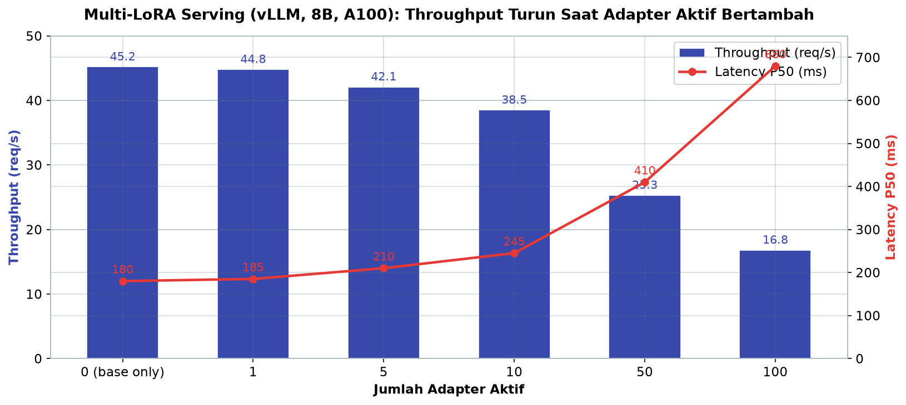
Pola yang paling mencolok bukanlah penurunan VRAM — itu justru sangat murah — melainkan penurunan throughput yang tidak linear. Dari 0 ke 10 adapter, throughput masih terasa wajar (38,5 req/s). Namun dari 10 ke 100 adapter, throughput anjlok lebih dari separuh karena batch fragmentation naik ke 55%: batch-batch kecil yang pecah membuat GPU tidak pernah terisi penuh. Pelajaran operasionalnya: jangan mengukur biaya multi-LoRA dari memori saja — ukur dari persentase adapter yang aktif bersamaan. Jika trafik Anda sporadis (banyak adapter jarang dipakai), justru aman; jika trafik Anda padat dan merata di seratus adapter, pertimbangkan membagi beban ke dua GPU atau membatasi adapter yang boleh aktif per batch.
Ada juga pertimbangan yang sering terlupakan: di mana garis pemisah antara "cukup satu instance multi-LoRA" dan "butuh multiple instance"? Rumus sederhananya adalah membandingkan biaya total. Satu instance dengan 50 adapter membutuhkan 17,7 GB VRAM (Llama 3.1 (8B)) dan menelan throughput hingga 25 req/s dengan P50 410 ms; dua instance masing-masing 25 adapter akan membutuhkan 2 × 17,5 GB dan menjaga P50 di kisaran 200-250 ms dengan throughput gabungan yang lebih tinggi. Pada trafik rendah, satu instance menang mutlak; pada trafik tinggi dengan banyak adapter aktif, dua instance menang di latency sambil tetap jauh lebih murah daripada deployment per-adapter. Keputusan ini tidak pernah statis — jadwalkan peninjauan ulang setiap kali jumlah adapter aktif berkali lipat atau P50 menembus SLO.
Memahami Fragmentasi sebagai Harga Kebebasan
Angka 55% fragmentasi pada 100 adapter perlu dipahami dengan tepat agar tidak salah menafsirkan. Fragmentasi di sini bukan berarti setengah GPU menganggur — melainkan bahwa batch yang terbentuk menjadi lebih kecil dan lebih beragam daripada jika semua request memakai satu adapter. GPU masih bekerja penuh, tetapi compute efficiency-nya turun: batch kecil berarti lebih sedikit token yang diproses per unit waktu, dan peralihan antar adapter (swap) menyela pipeline tanpa menghasilkan token. Ini menjelaskan mengapa solusi teknis terus berkembang ke arah co-batching yang agresif: semakna adapter yang dapat dijamin kompatibel di-load bersama dalam satu batch, semakin rendah fragmentasi. Pada praktiknya, kesimpulan yang bisa diambil adalah menyeimbangkan dua variabel yang bisa Anda kendalikan — jumlah adapter yang didaftarkan (bisa banyak, tidak masalah) dan jumlah adapter yang aktif per menit (jaga tetap kecil dengan merutekan trafik yang sama ke adapter yang sama, mirip session affinity di Bab 5.8).
Bagaimana W' = W + BA bekerja secara visual — bobot frozen yang besar ditambah kontribusi dua matriks ramping yang dapat dilatih:
Perhatikan dimensinya: W berukuran d×k dengan d dan k yang besar (misalnya 4096×4096), sedangkan A dan B masing-masing berukuran r×k dan d×r dengan r=8-128 — dimensi kecil yang membuatnya berpengaruh pada perilaku model namun murah untuk disimpan, dipindahkan, dan digabungkan. Karena hasil BA berdimensi persis sama dengan W, penjumlahan W' = W + BA menghasilkan model berperilaku seperti hasil fine-tuning penuh dengan biaya komputasi yang identik.
5. Trade-off: Semakin Banyak, Semakin Terfragmentasi
Kebebasan "satu model melayani banyak" tidak datang tanpa harga. Trade-off pertama adalah batch fragmentation: semakin banyak adapter yang aktif bersamaan dalam batch, semakin sulit scheduler mengumpulkan request yang sehati — throughput turun, latency naik. Data pengukuran menunjukkan penurunan yang nyata: tanpa adapter throughput 45,2 request/detik; dengan 10 adapter aktif turun ke 38,5; dan dengan 100 adapter aktif tersisa 16,8 request/detik dengan latency P50 yang membengkak dari 180 ms menjadi 680 ms [4]. Trade-off kedua adalah ukuran adapter: rank r yang lebih besar memang memberi kualitas lebih baik — hingga mendekati hasil full fine-tuning, tetapi setiap kenaikan rank berarti matriks A dan B yang lebih gemuk, sehingga memory adapter bertambah dan bandwidth transfer saat swap meningkat. Trade-off ketiga justru menjadi penyelamat: prefix caching tetap bekerja dengan baik di lingkungan multi-LoRA, karena prefix yang sama (misalnya system prompt perusahaan) hanya perlu diproses sekali meskipun kemudian dicabang ke adapter yang berbeda.
6. Use Cases: Satu Fondasi, Puluhan Layanan
Pola ini membuka pintu bagi skenario yang sebelumnya tidak ekonomis. Pertama, chatbot dengan persona berbeda untuk tiap user — sebuah platform percakapan dapat menyediakan seratus persona (prospektor, sahabat, mentor, guru bahasa Jepang) hanya dari satu base model, masing-masing pengguna cukup 0,05% parameter sebagai adapter persona. Kedua, AI code assistant per bahasa pemrograman — satu base model dengan adapter Python, Rust, dan JavaScript terpisah, sehingga masing-masing bahasa mendapat gaya penulisan dan pola idiom yang spesifik tanpa mengganggu bahasa lainnya. Ketiga, model dengan domain expertise berbeda — firma hukum, klinik, dan konsultan teknik dapat berbagi satu infrastruktur sementara setiap domain berperilaku seolah-olah memiliki model khususnya sendiri, lengkap dengan vokabulari dan konvensi penulisan masing-masing. Kombinasi ini menjadikan LoRA serving fondasi utama arsitektur AI multi-tenant modern: murah, skalabel, dan tetap personal.
Kapan LoRA Bukan Jawaban: Mengenali Batasnya
Kejujuran teknis menuntut kita membahas sisi sebaliknya. Penelitian LoRA Learns Less and Forgets Less [5] menunjukkan bahwa LoRA menyerap pengetahuan baru secara signifikan lebih sedikit daripada full fine-tuning — matriks low-rank yang ramping memang efisien, tetapi ia juga membatasi jumlah informasi baru yang dapat ditampung. Untuk knowledge injection — misalnya mengajarkan model regulasi baru yang tidak ada di data latih — LoRA seringkali kurang, dan kombinasi dengan RAG atau full fine-tuning pada subset parameter lain menjadi pilihan yang lebih tepat. Ada juga batas praktis: ketika skala tenant terlalu besar (ribuan adapter yang semuanya aktif bersamaan), batch fragmentation di Tabel 5.20 menjadi beban yang tidak lagi bisa ditutup oleh efisiensi memori — titik di mana solusi berubah menjadi masalah infrastruktur. Terakhir, di lingkungan yang sangat membutuhkan determinisme output (misalnya produksi keuangan yang diaudit), "hampir identik dengan full fine-tuning" tidak selalu cukup; di sana, memilih rank yang lebih besar dan mengukur gap terhadap baseline full FT secara berkala adalah disiplin yang harus dijalankan.
Tabel 5.21: Rekomendasi r (Rank) per Use Case
Panduan ringkas untuk memilih rank LoRA sesuai tujuan — semakin spesifik dan dalam perubahan yang diinginkan, semakin besar rank yang dibutuhkan [5].
| Use Case | r Minimum | r Recommended | Parameter Tambahan | Kualitas vs Full FT |
|---|---|---|---|---|
| Domain adaptation (umum) | 8 | 16 | ~0,1% | 95-98% |
| Task-specific (coding) | 16 | 32 | ~0,2% | 97-99% |
| Persona/character | 4 | 8 | ~0,05% | 90-95% |
| Multilingual | 32 | 64 | ~0,4% | 98-100% |
| Knowledge injection | 64 | 128 | ~0,8% | ~100% |
Tabel 5.21 memberi aturan praktis yang mudah diingat: tugas yang dangkal (persona, gaya bicara) cukup dengan rank kecil 4-8 — murah dan cepat dilatih; tugas yang dalam (injeksi pengetahuan baru) membutuhkan rank 64-128 agar model benar-benar "menghafal" materi baru. Namun ingat batasan yang diungkap riset LoRA Learns Less and Forgets Less [5]: LoRA menyerap pengetahuan lebih sedikit daripada full fine-tuning pada tugas yang membutuhkan pengetahuan baru, meskipun ia juga forgets (lupa) lebih sedikit. Karena itu, untuk tugas knowledge injection yang kritis, kombinasi LoRA dengan RAG atau fine-tuning hybrid seringkali merupakan pilihan yang lebih bijak daripada menaikkan rank tanpa batas.
Dimensi terakhir yang sering diabaikan adalah ukuran file adapter sebagai biaya operasional. Adapter r=16 untuk model 8B berukuran sekitar 34 MB; adapter r=128 (knowledge injection) bisa mencapai 270 MB. Pada ratusan adapter, total ini tetap kecil untuk storage, tetapi menjadi signifikan di jaringan: setiap swap adapter memindahkan file dari CPU memory ke GPU — makin besar rank, makin lama swap, makin lama juga cold start request yang memakai adapter tersebut. Konsekuensi desain yang praktis: kelompokkan adapter yang sering dipakai bersama agar dapat pre-loaded di GPU (cache dingin dimulai di pagi hari), dan beri label prioritas — adapter persona yang responsif (P50 < 250 ms) sebaiknya selalu berada di GPU, sementara adapter batch yang tidak dikejar waktu boleh di-swap sesuka hati.
7. Praktikum / Hands-On
Langkah 1: Menyiapkan Direktori LoRA Adapters
Mulailah dengan menata adapter-adapter hasil fine-tuning ke dalam direktori yang rapi — setiap folder menjadi satu modul LoRA yang akan didaftarkan ke vLLM.
# Struktur direktori LoRA adapters
# /models/lora/coding-assistant/
# /models/lora/legal-advice/
# /models/lora/medical-consult/
mkdir -p /models/lora/{coding-assistant,legal-advice,medical-consult}
# Verifikasi struktur file adapter (harus berisi config + safetensors)
ls -la /models/lora/coding-assistant/
# adapter_config.json
# adapter_model.safetensorsLangkah 2: Menjalankan vLLM dengan Multi-LoRA
Jalankan satu instance vLLM yang memuat base model sekaligus mendaftarkan tiga adapter, lalu panggil adapter yang berbeda pada request yang berbeda.
# Jalankan vLLM dengan multi-LoRA
vllm serve meta-llama/Meta-Llama-3.1-8B-Instruct \
--enable-lora \
--lora-modules coding=/models/lora/coding-assistant \
legal=/models/lora/legal-advice \
medical=/models/lora/medical-consult \
--max-lora-rank 64 \
--max-num-seqs 256
# Panggil dengan adapter berbeda
curl http://localhost:8000/v1/chat/completions \
-H "Content-Type: application/json" \
-d '{
"model": "meta-llama/Meta-Llama-3.1-8B-Instruct",
"messages": [{"role": "user", "content": "Buatkan kontrak sewa"}],
"max_tokens": 256,
"lora_name": "legal"
}'Perhatikan argumen penting di atas. --enable-lora mengaktifkan dukungan adapter, --lora-modules mendaftarkan nama dan lokasi tiap adapter, dan --max-lora-rank 64 menentukan rank maksimum yang dapat dimuat — set lebih besar dari rank adapter Anda. Saat request dikirim, parameter lora_name menentukan adapter mana yang diterapkan; jika dihilangkan, base model murni yang digunakan.
Dua penyesuaian praktis untuk lingkungan nyata. Pertama, jika salah satu adapter Anda dilatih dengan rank di atas 64 (misalnya rank 128 untuk knowledge injection), naikkan --max-lora-rank — adapter yang rank-nya melebihi batas akan ditolak saat loading. Kedua, --max-num-seqs 256 menentukan berapa banyak request yang boleh berbagi batch secara paralel; pada GPU dengan VRAM terbatas, turunkan angka ini agar KV cache tidak bertabrakan dengan adapter yang aktif. Bila Anda menjalankan multi-GPU, tambahkan --tensor-parallel-size N sesuai jumlah GPU — adapter didistribusikan secara otomatis, dan semua GPU harus memuat adapter yang sama untuk request yang sama.
Langkah 3: Melatih dan Mengekspor LoRA dengan PEFT
Uji siklus lengkapnya: latih adapter Anda sendiri dengan library PEFT dari Hugging Face, lalu ekspor ke format yang dikenali vLLM.
from peft import LoraConfig, get_peft_model
from transformers import AutoModelForCausalLM, AutoTokenizer
# Memuat base model
model = AutoModelForCausalLM.from_pretrained("meta-llama/Meta-Llama-3.1-8B-Instruct")
# Konfigurasi LoRA
lora_config = LoraConfig(
r=16,
lora_alpha=32,
target_modules=["q_proj", "v_proj", "k_proj", "o_proj"],
lora_dropout=0.05,
bias="none",
task_type="CAUSAL_LM",
)
# Apply LoRA
model = get_peft_model(model, lora_config)
# Train...
# model.train(...)
# Menyimpan adapter
model.save_pretrained("./lora-coding-assistant")
tokenizer.save_pretrained("./lora-coding-assistant")
# Export ke format vLLM
# rename adapter_config.json -> config.json
# rename adapter_model.safetensors -> model.safetensorsLangkah 4: Menggunakan LoRA Secara Dinamis via API
Dari sisi klien, pilih adapter secara dinamis per request menggunakan library OpenAI resmi — contohnya seorang pasien bertanya kepada adapter medical:
from openai import OpenAI
client = OpenAI(base_url="http://localhost:8000/v1", api_key="-")
# Mendaftar modul LoRA yang tersedia
modules = client.models.list()
for m in modules:
print(m.id) # meta-llama/Meta-Llama-3.1-8B-Instruct, coding, legal, ...
# Use specific LoRA
response = client.chat.completions.create(
model="meta-llama/Meta-Llama-3.1-8B-Instruct", # base model
messages=[{"role": "user", "content": "Apa diagnosis untuk demam > 3 hari?"}],
extra_body={"lora_name": "medical"},
)Klien tidak perlu tahu detail server — endpoint /v1/models menampilkan adapter sebagai model terpisah, dan parameter lora_name di dalam extra_body menentukan adapter yang diterapkan. Pola ini membuat penambahan adapter baru menjadi perubahan konfigurasi yang bersih tanpa mengubah kode klien.
Langkah 5: Menguji dan Memantau Perilaku Multi-LoRA
Setelah server berjalan, latihan verifikasi singkat ini memastikan setiap adapter benar-benar diterapkan — dan mengukur dampaknya terhadap kinerja.
# 1. Bandingkan jawaban antar adapter untuk prompt yang sama
for lora in coding legal medical; do
echo "=== Adapter: $lora ==="
curl -s http://localhost:8000/v1/chat/completions \
-H "Content-Type: application/json" \
-d "{\"model\": \"meta-llama/Meta-Llama-3.1-8B-Instruct\",
\"messages\": [{\"role\": \"user\", \"content\": \"Tulis ulang pesan ini dengan nada formal\"}],
\"max_tokens\": 100, \"lora_name\": \"$lora\"}" \
| python3 -m json.tool | grep content
done
# 2. Cek metrik server: throughput & fragmentasi
curl -s http://localhost:8000/metrics | grep -E "num_requests|time_to_first_token" | head -10Langkah 1 adalah smoke test kualitas: untuk prompt yang sama, ketiga adapter seharusnya menghasilkan jawaban dengan gaya yang berbeda — bila tidak, periksa apakah --lora-modules terdaftar dengan benar. Langkah 2 menghubungkan bab ini dengan bab monitoring (Bab 5.9): metrik vllm:time_to_first_token_seconds akan menunjukkan kenaikan latency seiring bertambahnya adapter aktif yang masuk batch — data nyata untuk memvalidasi angka fragmentasi pada Tabel 5.20.
8. Studi Kasus: AI Coding Assistant untuk 3 Bahasa Pemrograman
Skenario. Sebuah platform coding education ingin menyediakan AI assistant yang memahami idiom spesifik tiga bahasa: Python, Rust, dan JavaScript. Setiap bahasa butuh gaya, pola, dan konvensi penulisan yang berbeda — jawaban Python yang baik tidak sama dengan jawaban Rust yang baik. Tim mereka telah mencoba model generalist, namun hasilnya selalu terasa "dangkal" di ketiga bahasa sekaligus.
Analisis tanpa LoRA. Pilihan pertama yang dipertimbangkan: mengubah tiga varian Llama 3.1 (70B) — satu per bahasa. Perhitungannya menyakitkan: 3 × 140 GB = 420 GB VRAM untuk model yang 99% identik isinya. Dengan harga H100 80 GB, ini berarti setidaknya enam kartu GPU hanya untuk memuat tiga salinan model yang hampir sama. Belum lagi biaya fine-tuning tiga model penuh secara terpisah. Jelas tidak layak untuk platform yang masih menumbuhkan revenue.
Solusi dengan LoRA. Tim mengubah strategi: satu instance Llama 3.1 (70B) (140 GB) + tiga adapter rank r=32. Masing-masing adapter r=32 menelan 0,26 GB — total tambahan hanya 0,78 GB. Konfigurasi hardware menjadi sangat ringkas: 2× H100 80GB dengan base model di tensor parallelism 2 (TP=2), sementara ketiga adapter disimpan di CPU memory dan dimuat ke GPU hanya saat dipakai. Total VRAM: 140,78 GB — hampir tidak terlihat bedanya dari base model saja.
Hasil. Dengan 3 adapter aktif, sistem melayani 38 request/detik dengan latency P50 280 ms — setara pengalaman model khusus per bahasa tanpa biaya model khusus per bahasa. Penghematan VRAM mencapai 300% dibandingkan deploy 3 instance terpisah. Pelajaran utama studi kasus ini: untuk kebutuhan multi-varian dengan base model yang sama, LoRA mengubah persoalan dari "berapa GPU yang sanggup kita beli" menjadi "berapa rank yang pas untuk tiap bahasa" — pertanyaan yang jauh lebih menyenangkan.
Satu rintangan tak terduga. Dalam implementasi nyata, tim menemukan bahwa adapter Rust — yang dilatih pada korpus kode yang sangat spesifik — membutuhkan rank 32 untuk mencapai kualitas yang memuaskan, sementara adapter JavaScript cukup di rank 16. Perbedaan ini tidak terlihat dari tabel rekomendasi generik; ia ditemukan lewat evaluasi berkala. Pelajaran kedua yang berharga: karena ketiga adapter berbagi satu base model di TP=2, setiap swap adapter harus sinkron di kedua GPU — kesalahan sinkronisasi bobot A dan B antar GPU adalah salah satu bug tersulit yang pernah mereka debug. Solusinya sederhana: selalu simpan metadata versi adapter (hash bobot) dan biarkan vLLM menangani sinkronisasi lewat mekanisme bawaan, jangan pernah mengedit file adapter saat server sedang berjalan. Detail kecil ini menyelamatkan tim dari insiden produksi yang mahal.
Catatan evaluasi. Untuk menjaga kualitas setiap adapter, tim membangun eval harness mini yang menguji 50 pertanyaan per bahasa setiap minggu dan membandingkan skor jawaban antar versi adapter — praktik yang meniru disiplin benchmarking dari paper LoRA Learns Less and Forgets Less [5]. Adapter yang kualitasnya menurun (misalnya setelah retrain dengan data baru) langsung terlihat di grafik, dan rollback dilakukan dengan menunjuk ke versi adapter sebelumnya. Dengan biaya sangat kecil (satu base model yang sama), platform ini kini menjalankan siklus hidup lengkap untuk tiga varian bahasa: traina, eval, deploy, monitoring — praktik yang biasanya hanya dimiliki tim dengan anggaran model khusus per bahasa.
9. Referensi
Paper Jurnal/Konferensi
[1] Hu, E.J., Shen, Y., Wallis, P., Allen-Zhu, Z., Li, Y., Wang, S., Wang, L. & Chen, W. (2022). LoRA: Low-Rank Adaptation of Large Language Models. International Conference on Learning Representations (ICLR). DOI: 10.48550/arXiv.2106.09685 (https://arxiv.org/abs/2106.09685)
[2] Dettmers, T., Pagnoni, A., Holtzman, A. & Zettlemoyer, L. (2023). QLoRA: Efficient Finetuning of Quantized LLMs. Advances in Neural Information Processing Systems (NeurIPS). DOI: 10.48550/arXiv.2305.14314 (https://arxiv.org/abs/2305.14314)
[3] Chen, L., Ye, Z., Wu, Y., Zhuo, D. & Ceze, L. (2024). Punica: Multi-Tenant LoRA Serving. Proceedings of Machine Learning and Systems (MLSys). DOI: 10.48550/arXiv.2310.18547 (https://arxiv.org/abs/2310.18547)
[4] Sheng, Y., Cao, S., Li, D., Hooper, C., Lee, N., Yang, S., Chou, C., Zhu, B., Zheng, L., Keeton, K., Gonzalez, J.E. & Stoica, I. (2024). S-LoRA: Serving Thousands of Concurrent LoRA Adapters. Proceedings of Machine Learning and Systems (MLSys). DOI: 10.48550/arXiv.2311.03285 (https://arxiv.org/abs/2311.03285)
[5] Biderman, D., Ortiz, J.G., Ortiz, M., Portnoff, M. & Schoelkopf, H. (2025). LoRA Learns Less and Forgets Less. International Conference on Learning Representations (ICLR). DOI: 10.48550/arXiv.2405.09673 (https://arxiv.org/abs/2405.09673)
Referensi Pendukung (Dokumentasi/Repository)
[6] Hugging Face. PEFT Documentation. https://huggingface.co/docs/peft
[7] vLLM. LoRA Documentation. https://docs.vllm.ai
Bab 5.8: API Load Balancing — Distribusi Request ke Beberapa GPU
Sebuah restoran dengan satu koki hanya bisa melayani satu meja dalam satu waktu — lewati satu jam sibuk, dan antrean memanjang di luar pintu. Solusinya bukan menjejalkan koki ekstra ke meja yang sama, melainkan membangun dapur yang bisa membagi pesanan ke banyak koki secara adil. Sub-bab ini membahas bagaimana trafik LLM didistribusikan ke banyak GPU: strategi load balancing dari round-robin hingga power-of-two choices, konfigurasi NGINX dan LiteLLM sebagai proxy, hingga teknik mutakhir prefill-decode disaggregation ala Splitwise yang memisahkan tahap prefill dan decode ke hardware yang berbeda. Setiap pilihan membawa harga tersendiri — tujuan sub-bab ini adalah membuat Anda memilih dengan mata terbuka, bukan dengan lempar koin.
1. Tujuan Sub-Bab
Setelah membaca sub-bab ini, Anda akan mampu:
- Menjelaskan mengapa satu GPU atau satu instance vLLM memiliki kapasitas terbatas dan kapan horizontal scaling diperlukan
- Membandingkan strategi load balancing: round-robin, least-connections, consistent hashing, dan power-of-two choices
- Memilih strategi yang tepat berdasarkan profil trafik — dari chat interaktif hingga batch pemrosesan
- Menyiapkan NGINX sebagai load balancer layer-7 untuk beberapa replica vLLM
- Menyiapkan LiteLLM sebagai proxy multi-model dengan rate limiting, fallback, dan cost tracking
- Menjelaskan arsitektur prefill-decode disaggregation (Splitwise) dan kapan ia layak diterapkan
- Mengonfigurasi auto-scaling berbasis Horizontal Pod Autoscaler di Kubernetes, termasuk mengelola cold start GPU
2. Mengapa Load Balancing Diperlukan?
Satu GPU, sehebat apa pun, tetap punya dinding. Throughput sebuah instance vLLM dibatasi oleh memory bandwidth GPU dan ukuran VRAM — setelah batch penuh, request berikutnya mengantre. Ini bukan kegagalan teknologi; ini hukum fisika silicon. Ketika trafik melampaui kapasitas satu kartu — katakanlah ribuan request per detik dari ribuan pengguna — satu-satunya jalan yang dapat diprediksi adalah horizontal scaling: menambah replica, lalu mendistribusikan request secara merata. Di sinilah load balancer berperan sebagai traffic director: ia memutuskan request mana menuju GPU mana. Namun perannya tidak berhenti di situ — dengan health check, ia mengeluarkan replica yang sakit dari rotasi; dengan rate limiter, ia melindungi backend dari lonjakan gila; dengan antrean, ia menahan arus ketika semua backend penuh. Sebuah load balancer yang baik adalah gabungan pengatur lalu lintas, dokter jaga, dan bouncer klub dalam satu tubuh.
Satu GPU, Berapa Mampu? Anatomi Kapasitas Inference
Untuk memahami kapan harus menambah replica, kita perlu tahu dulu apa yang membatasi satu instance. Tiga dinding utama membatasi kapasitas: VRAM menentukan berapa banyak request yang dapat berbagi GPU sekaligus (melalui ukuran KV cache); memory bandwidth menentukan kecepatan generasi token (lihat Bab 5.10 — fase decode bersifat memory-bound); dan scheduler menentukan bagaimana batch dibentuk (continuous batching menggenjot utilisasi, tetapi tetap ada batas fisik). Ketiga dinding ini bekerja bersama: sebuah instance 7B di A100 80 GB mungkin melayani 45 request/detik dengan respons yang nyaman, tetapi menaikkan beban menjadi dua kali lipat akan melipatgandakan latency, bukan menggandakan output. Ketika kurva throughput vs latency mulai menikung tajam ke atas, itulah sinyal matematis bahwa satu instance sudah habis — dan pertanyaan berikutnya bukan "bagaimana mempercepat GPU ini" melainkan "di mana membeli replica kedua".
Ada pembeda penting antara scale up dan scale out yang menentukan desain load balancing. Scale up — mengganti satu GPU besar (A100 → H100) — menambah throughput per instance tetapi tidak menambah ketahanan: satu titik kegagalan tetap satu titik kegagalan, dan latensi antrean pada lonjakan tetap menjadi masalah statistik yang sama. Scale out — menambah replica — melipatgandakan kapasitas dan membuka ruang untuk strategi distribusi, health check, dan perawatan bergilir (replica bisa di-rolling-update satu per satu tanpa downtime). Karena itu, dalam praktik industri, pola yang umum adalah menggabungkan keduanya: replica di-resize ke ukuran yang masuk akal untuk beban rata-rata (bukan puncak), lalu jumlah replica-lah yang menyerap lonjakan. Load balancing adalah teknologi yang hanya masuk akal setelah keputusan ini diambil — ia adalah orkestra, bukan pengganti instrumen.
Catatan penting bagi pembaca yang baru memulai: jangan merancang load balancer di hari pertama. Satu replica dengan continuous batching yang baik sudah melayani ratusan pengguna dengan nyaman; kesalahan yang jauh lebih umum adalah terburu-buru membangun infrastruktur multi-replica sebelum kurva throughput-latency instance diukur. Mulailah dari satu instance yang di-monitor dengan metrik dari Bab 5.9, ukur titik jenuhnya secara empiris, dan bangun load balancing tepat ketika kurva itu mulai menyengat. Urutan ini — ukur dulu, distribusikan kemudian — lebih murah, lebih jujur, dan hampir selalu menyelamatkan Anda dari arsitektur yang rumit lebih awal dari yang dibutuhkan.
3. Strategi Load Balancing
Round-robin: Sederhana tapi Tuli terhadap Beban
Strategi paling klasik: request pertama ke replica 1, request kedua ke replica 2, dan seterusnya berputar. Implementasinya sepele dan deterministik, sehingga mudah dianalogikan dengan petugas yang membagikan formulir kepada mahasiswa secara bergilir tanpa melihat siapa yang sudah sibuk. Masalahnya, round-robin tidak sadar beban — replica 1 bisa saja sedang memproses sepuluh request generasi panjang sementara replica 2 menganggur, tetapi request berikutnya tetap diarahkan ke replica 1. Pada LLM, ketimpangan ini berbahaya karena durasi request sangat bervariasi: satu request bisa menghasilkan 4.096 token, request lain cukup 50 token.
Least-connections: Melihat yang Tersibuk
Varian yang lebih pintar: kirim request ke replica dengan active request paling sedikit. Ini adalah perbaikan instan atas round-robin — sama seperti pengantri yang memilih kasir dengan antrean terpendek, bukan kasir pertama secara bergilir. Untuk LLM, ukuran "jumlah request aktif" adalah proksi yang masuk akal atas beban sebenarnya, meski tetap ada kelemahan: dua replica dengan jumlah request sama bisa memiliki beban sangat berbeda jika satu membawa prompt raksasa 32K token dan satunya prompt pendek.
Consistent Hashing: Setia pada Replica yang Sama
Strategi ini memetakan user (atau API key) ke replica tertentu menggunakan fungsi hash yang stabil — selama jumlah replica tidak berubah, user yang sama selalu diarahkan ke replica yang sama. Keuntungan krusial untuk LLM: session affinity dan cache reuse. Instance vLLM yang melayani prefix yang sama dapat memanfaatkan prefix caching dan KV cache; ketika user yang sama terus kembali ke replica yang sama, cache tidak perlu dibangun ulang. Untuk model MoE seperti Mistral Large 3 dan DeepSeek V4 Pro, strategi ini lebih direkomendasikan lagi karena session affinity meningkatkan cache hit ratio pada expert weights yang sama — setiap request yang kembali ke replica yang sama berpotensi memuat ulang lebih sedikit expert dari memori.
Power-of-two Choices: Dua Kandidat, Satu Pemenang
Strategi yang terbukti matematis unggul untuk beban LLM: pilih dua replica secara acak, lalu kirim request ke yang lebih ringan. Keindahannya terletak pada keseimbangan — distribusi hampir merata seperti acak murni, tetapi tanpa kemungkinan "nasib buruk" mengirim semua request ke satu node. Berawal dari teori klasik Mitzenmacher [4] tentang power of two choices dalam randomized load balancing, strategi ini kini dianggap optimal untuk LLM serving: biaya implementasi sangat rendah, tidak memerlukan sesi atau hash, tetapi menyeimbangkan beban secara adaptif mendekati hasil least-connections dengan lebih sedikit state yang harus dijaga.
Memilih Strategi Berdasarkan Profil Trafik
Keputusan strategi sebaiknya tidak dibuat di ruang kosong — ia harus mengikuti bentuk trafik Anda. Jika trafik didominasi percakapan singkat yang berulang (chatbot layanan pelanggan dengan jumlah pengguna terbatas), consistent hashing memberikan keunggulan ganda: session affinity menstabilkan pengalaman dan prefix caching bekerja maksimal karena prompt berulang. Jika trafik adalah batch besar dengan durasi sangat bervariasi (pemrosesan dokumen, embedding massal), least-connections atau power-of-two choices lebih tepat — di sini durasi request tidak bisa diprediksi, jadi penyeimbangan beban berdasarkan beban aktual lebih berharga daripada kesetiaan sesi. Jika Anda menjalankan MoE besar seperti Mistral Large 3 atau DeepSeek V4 Pro dengan banyak node, prioritaskan session affinity: expert weights yang dimuat ulang saat request berpindah node adalah biaya tersembunyi yang cukup besar. Dan jika trafik Anda masih kecil dan tumbuh cepat, jangan terlalu khawatir memilih — power-of-two choices adalah pilihan aman universal yang tidak akan menyesatkan Anda di tahap mana pun.
Tabel 5.22: Perbandingan Strategi Load Balancing
Rangkuman karakter tiap strategi — perhatikan bagaimana "kecerdasan" dan "kesetiaan sesi" saling bertukar posisi pada sumbu yang berbeda.
| Strategi | Distribusi | Session Affinity | Complexity | LLM Suitability |
|---|---|---|---|---|
| Round-robin | Merata | Tidak | Rendah | Buruk (mengabaikan beban GPU) |
| Least-connections | Adaptif | Tidak | Rendah | Baik |
| Consistent Hashing | Bergantung hash | Ya (cache reuse) | Sedang | Sangat Baik |
| Power-of-two choices | Hampir merata | Tidak | Rendah | Optimal |
| Weighted Round-robin | Berdasarkan bobot | Tidak | Rendah | Baik (jika bobot sesuai) |
| Random | Random | Tidak | Sangat Rendah | Cukup |
Tidak ada strategi yang menang di semua dimensi. Untuk beban yang homogen dengan sebagian besar request pendek, least-connections sudah memadai. Untuk beban yang sangat heterogen dengan proporsi request streaming besar, consistent hashing memberi keunggulan tambahan berupa cache reuse. Untuk produksi modern yang menginginkan keseimbangan terbaik tanpa kerumitan, power-of-two choices adalah pilihan paling bijak — dan bila replica Anda memiliki kapasitas berbeda (GPU campuran), weighted round-robin dengan bobot proporsional kapasitas adalah pilihan terhormat.
Gambaran menyeluruh infrastruktur load balancing: internet masuk melalui load balancer tunggal, melewati komponen kebijakan (health check, rate limiter, antrean), lalu didistribusikan ke replica vLLM yang masing-masing menaungi GPU.
Perhatikan dua jalur keluar dari load balancer: jalur utama menuju replica, dan jalur pendamping menuju health check serta metrics exporter. Jalur pendamping inilah yang membuat sistem bisa sembuh sendiri — replica yang gagal health check dikeluarkan dari rotasi secara otomatis, dan metrik yang diekspor menjadi bahan bakar auto-scaling yang akan kita konfigurasi di bagian praktikum.
4. Pilihan Load Balancer
Tidak semua load balancer diciptakan sama — pilihannya bergantung pada kedalaman kontrol yang Anda butuhkan. NGINX dan HAProxy adalah workhorse layer 7: health check, SSL termination, dan retry yang tangguh — cocok jika Anda hanya butuh mendistribusikan trafik ke replica-replica inference yang sudah seragam. LiteLLM melangkah lebih jauh sebagai proxy khusus ekosistem LLM: routing multi-model dan multi-provider dengan satu format OpenAI, rate limiting per key, cost tracking per model, dan kebijakan fallback otomatis ke model cadangan. Ray Serve menawarkan pola deployment terintegrasi: load balancing dan auto-scaling bawaan untuk endpoint vLLM di dalam kerangka ekosistem Ray. Terakhir, Kubernetes Ingress — bagi tim yang sudah hidup dalam ekosistem Kubernetes, kombinasi Service + Horizontal Pod Autoscaler + Ingress Controller memberikan otomatisasi penuh dari penemuan replica hingga scaling otomatis berdasarkan metrik GPU itu sendiri.
Sebuah cara praktis memilih di antara keempatnya: mulailah dari bentuk kebutuhan, bukan dari nama produk. Jika tantangan Anda hanya "satu model, banyak GPU, trafik besar" — NGINX/HAProxy atau Ingress Controller sudah memadai dan paling murah perawatannya. Jika Anda harus menawarkan "banyak model, banyak backend campuran (lokal + cloud), dengan kuota per pelanggan" — LiteLLM hampir pasti pilihan yang tepat, karena fitur cost tracking dan rate limiting per key sudah built-in. Jika Anda hidup di ekosistem Ray — misalnya pipeline RAG dan inference berjalan di Ray cluster — integrasi Ray Serve menghilangkan satu lapisan infrastruktur yang harus dijaga. Dan ketika beban Anda tumbuh melewati puluhan replica dengan upgrade yang sering, Kubernetes Ingress memberi satu bahasa operasional yang sama untuk seluruh perusahaan — meskipun dengan kompleksitas yang tidak bisa diabaikan.
Tabel 5.23: Benchmark Load Balancer — 4x vLLM Instance (7B, A100)
Perbandingan kinerja pengukuran nyata di atas empat replica vLLM dengan base model 7B di GPU A100 — perhatikan bagaimana strategi yang berbeda mengubah profil latency ekor.
| Konfigurasi | Throughput (req/s) | P50 Latency (ms) | P99 Latency (ms) | GPU Utilization Rata |
|---|---|---|---|---|
| No LB (random) | 168 | 220 | 1.200 | 65% |
| Round-robin | 172 | 215 | 850 | 68% |
| Least-connections | 180 | 195 | 520 | 72% |
| Consistent Hashing | 178 | 185 | 480 | 71% |
| Power-of-two choices | 182 | 190 | 490 | 73% |
| Splitwise (Prefill + Decode) | 210 | 165 | 380 | 85% |
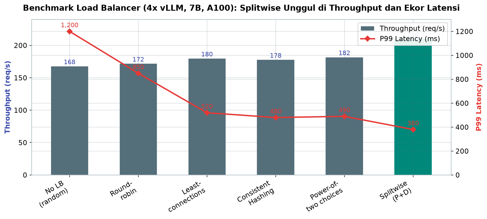
Dua cerita terpenting tersembunyi di kolom ekor. Pertama, semua strategi "cerdas" memangkas P99 dramatis — dari 1.200 ms (random) menjadi sekitar 500 ms. Kedua, Splitwise melompat jauh dari semua strategi sebelumnya: 210 req/s dengan P99 380 ms, karena pemisahan fase menghilangkan salah satu sumber tail latency terbesar — prefill panjang yang memblokir antrean decode. Ini menjelaskan mengapa penyedia cloud besar kini beralih ke arsitektur disaggregated: perbaikan bukan di lapisan routing, melainkan di struktur komputasi itu sendiri.
Ada nuansa penting yang tidak terlihat langsung dari angka throughput: tail latency adalah indikator kesehatan yang lebih sensitif daripada rata-rata. Round-robin dan random memiliki P99 yang membengkak karena request dapat menumpuk di replica yang sedang sibuk — kasir yang kebetulan mendapat giliran rantai pembeli rumit. Strategi berbasis beban memecahkan masalah ini di lapisan routing dengan biaya hampir nol: P99 turun dari 850-1.200 ms ke kisaran 480-520 ms hanya dengan memilih replica yang tepat. Bagi pengalaman pengguna, perbedaan ini adalah jarak antara "lancar" dan "putus-putus". Catatan praktis: saat membaca benchmark seperti ini, pastikan kondisi pengukurannya serupa dengan beban Anda — P50 yang rendah di benchmark laboratorium seringkali tidak mewakili perilaku ekor saat trafik campuran mulai masuk.
5. Prefill-Decode Disaggregation: Splitwise
Insight: Dua Fase yang Bermusuhan
Setiap request LLM melewati dua fase dengan karakter hardware yang berlawanan. Prefill — saat prompt awal diproses dan KV cache dibangun — adalah fase compute-intensive: ribuan token diproses paralel dalam satu langkah, butuh FLOP tinggi dan perhitungan matriks raksasa. Decode — saat token output dihasilkan satu per satu — adalah fase memory-intensive: setiap langkah hanya memproses satu token baru tetapi harus membaca ulang seluruh bobot model, sehingga bottleneck-nya adalah memory bandwidth, bukan kekuatan komputasi. Pada sistem monolitik, kedua fase ini berbagi GPU yang sama — dan GPU mana pun yang Anda pilih, ia selalu terlalu kuat untuk satu sisi dan terlalu lemah untuk sisi lain.
Splitwise: Memisah yang Berbeda
Splitwise [1] mematahkan kompromi tersebut dengan phase disaggregation: pisahkan kedua fase ke mesin yang berbeda. Prompt machine — GPU berkomputasi tinggi seperti H100 — khusus menangani prefill agar TTFT serendah mungkin. Token machine — GPU lebih murah seperti A100 yang hanya butuh bandwidth memori besar — khusus menangani decode dengan throughput token tinggi per dolar. Di antara keduanya, state model (KV cache dan aktivasi) ditransfer melalui fast interconnect — NVLink, NVSwitch, atau InfiniBand — dalam hitungan milidetik. Analogi yang pas: dapur cepat untuk menyiapkan bahan (prefill) dan panggangan terpisah untuk memanggang (decode), dengan konveyor berkecepatan tinggi di antaranya. Pengukuran nyata [1] menunjukkan peningkatan throughput hingga 2,35x dengan peningkatan power hanya 1,1x dibandingkan infrastruktur homogen — angka yang membuat setiap CFO tersenyum.
Kapan Splitwise Belum Layak: Batasan yang Jujur
Disaggregation bukan jawaban universal — ada tiga kondisi di mana ia justru merugikan. Pertama, beban yang didominasi prefill pendek: jika mayoritas request Anda berupa prompt pendek dengan output singkat (chat mikro, klasifikasi), proporsi waktu prefill terhadap decode terlalu kecil sehingga keuntungan pemisahan minimal, sementara biaya transfer state tetap harus dibayar. Kedua, infrastruktur tanpa fast interconnect: disaggregation di atas jaringan Ethernet biasa mengubah transfer KV cache menjadi bottleneck baru — seperti disebut di Gambar 5.8-3, tanpa InfiniBand, "disaggregation" berubah menjadi sumber latency. Ketiga, skala kecil: pada klaster 2-8 GPU, Anda seringkali tidak punya cukup mesin untuk membuat dua pool yang efisien, dan fleksibilitas satu pool monolitik justru lebih berharga. Aturan praktisnya: evaluasi Splitwise ketika utang komputasi (prefill) dan utang bandwidth (decode) Anda sudah cukup besar untuk hidup terpisah — di bawah ambang itu, perbaiki fase yang lemah di pool tunggal dulu.
Tabel 5.24: Splitwise — Perbandingan Konfigurasi Cluster
Berapa banyak komposisi prompt/token machine yang membayar tunai per data — diukur relatif terhadap baseline homogen [1].
| Konfigurasi | Prompt Machine | Token Machine | Throughput | Cost | Power |
|---|---|---|---|---|---|
| Baseline (homogen A100) | 8x A100 | 8x A100 | 1,0x | 1,0x | 1,0x |
| Splitwise-AA (homogen) | 4x A100 (prompt) | 12x A100 (token) | 1,4x | 0,8x | 0,85x |
| Splitwise-HH (H100) | 4x H100 (prompt) | 12x H100 (token) | 2,35x | 1,2x | 1,1x |
| Splitwise-Hetero | 2x H100 (prompt) | 6x A100 (token) | 1,8x | 0,7x | 0,65x |
Bahkan tanpa mengganti hardware — hanya menata ulang rasio prompt:token machine (Splitwise-AA) — throughput naik 1,4x dengan biaya justru turun 20%. Konfigurasi heterogen adalah primadona ekonomi: kedua H100 untuk prefill cepat, enam A100 untuk decode murah, menghasilkan 1,8x throughput dengan biaya 0,7x dan power 0,65x. Tabel ini menegaskan prinsip fundamental inferensi LLM: beli komputasi untuk prefill, sewa bandwidth untuk decode — jangan beli keduanya dalam satu kartu demi kompak.
Interpretasi yang lebih hati-hati juga diperlukan di sini. Rasio prompt:token machine 4:12 mencerminkan realitas beban: karena setiap request melewati prefill hanya sekali tetapi decode berulang ratusan kali, token machine hampir selalu perlu jatah GPU lebih banyak. Namun rasio yang tepat bergantung pada profil prompt Anda — platform dengan prompt sangat pendek (chat singkat) bisa berjalan optimal di rasio 2:14, sementara platform RAG dengan prompt panjang lebih cocok di 6:10. Angka di Tabel 5.24 juga mengasumsikan interkoneksi berkecepatan tinggi yang memadai; di atas jaringan 100 GbE biasa, biaya transfer state bisa menggerus keuntungan — verifikasi bandwidth NVLink/InfiniBand Anda sebelum menyalin konfigurasi ini. Terakhir, pertimbangkan mode kegagalan: disaggregation memperkenalkan dua pool yang bisa gagal secara independen — rencanakan fallback ke mode monolitik saat salah satu pool down.
Bagaimana request mengalir dalam arsitektur prefill-decode disaggregation — prompt machine yang cepat memproses prefill, lalu state diserahkan ke token machine untuk finish generasi.
Scheduler cluster menjadi otak yang memutuskan: prompt pendek yang butuh jawaban cepat (misalnya chat interaktif) bisa langsung dikirim ke token pool, sementara prompt raksasa dikirim ke prompt pool untuk prefill kilat. Titik kritis arsitektur ini ada pada kotak transfer KV cache — menjadi sangat tidak efisien jika tidak ada InfiniBand; tanpa interconnect cepat, biaya transfer justru meniadakan keuntungan disaggregation.
Penting juga memahami kenapa transfer ini murah secara prinsip: yang dipindahkan bukan seluruh model, melainkan hanya state per-request — KV cache dari prompt yang sudah diproses — yang ukurannya sebanding dengan panjang prompt (ratusan KB hingga beberapa MB), bukan ratusan GB bobot model. Dengan InfiniBand 200-400 Gb/s, transfer ini selesai dalam fraksi milidetik, sebanding dengan noise network biasa. Sebaliknya, segala upaya menghemat transfer — misalnya mengompresi atau mengirimkan ulang prefill — justru menambah kompleksitas tanpa keuntungan berarti. Kesalahan implementasi yang paling umum ditemukan di lapangan adalah menempatkan scheduler dan kedua pool di rack yang berbeda tanpa interconnect berkecepatan tinggi, sehingga "disaggregation" berubah menjadi sumber latency baru. Aturan emasnya: disaggregate hanya bila jaringan antar mesin layak disebut fast interconnect.
6. Rate Limiting dan QoS
Distribusi trafik hanyalah setengah dari tanggung jawab load balancer; setengah lainnya adalah menjaga Quality of Service. Rate limiting per-user atau per-API-key memastikan penggunaan yang adil (fair use) — satu pelanggan yang mengirim batch 10.000 request tidak boleh melaparkan ribuan pengguna lain. Priority queues membuat request premium (misalnya pelanggan berbayar atau request interaktif) dilayani sebelum request batch berprioritas rendah. Request queuing dengan bounded capacity menciptakan backpressure yang sehat: daripada mengirim request ke GPU yang sudah penuh (yang justru membuat semuanya lambat), load balancer menahan request di antrean berkapasitas terbatas dan menolak dengan sopan (HTTP 429 atau 503) ketika antrean penuh. Ketiga mekanisme ini bersama-sama mengubah sistem dari "semua orang dilayani dengan buruk" menjadi "sebagian besar dilayani dengan baik, sedikit yang menunggu giliran".
Retry, Fallback, dan Ketahanan
Sebuah lapisan distribusi yang matang juga menangani kegagalan secara terstruktur. Retry dengan exponential backoff — mencoba ulang request yang gagal dengan jeda yang tumbuh — menangani kegagalan sementara tanpa membebani backend dengan gelombang ulang. Fallback antar model adalah fitur khas proxy seperti LiteLLM: ketika model utama sedang penuh atau bermasalah, request dialihkan ke model cadangan — bahkan ke provider cloud eksternal — sehingga pelanggan tidak pernah melihat downtime, hanya mungkin jawaban dari model yang sedikit berbeda. Graceful drain memastikan replica yang sedang di-upgrade berhenti menerima request baru, menyelesaikan yang sedang berjalan, baru dilepas dari rotasi — tanpa memutus koneksi streaming yang sedang aktif. Ketiga mekanisme ini bukan kemewahan: pada trafik ribuan request per detik, kegagalan adalah kepastian statistik, bukan pengecualian, dan sistem yang tidak menyiapkannya akan belajar dengan cara yang menyakitkan.
7. Praktikum / Hands-On
Langkah 1: Setup NGINX Load Balancer untuk 3 vLLM Instance
Mulai dengan NGINX sebagai traffic director: tiga instance vLLM di tiga host, satu titik masuk. Perhatikan least_conn — strategi least-connections — dan flag yang krusial bagi streaming.
# /etc/nginx/nginx.conf
upstream vllm_backend {
least_conn; # least-connections strategy
server 10.0.0.1:8001 max_fails=3 fail_timeout=30s;
server 10.0.0.2:8002 max_fails=3 fail_timeout=30s;
server 10.0.0.3:8003 max_fails=3 fail_timeout=30s;
keepalive 64;
}
server {
listen 8080;
location /v1/ {
proxy_pass http://vllm_backend;
proxy_http_version 1.1;
proxy_set_header Connection "";
proxy_buffering off; # Penting untuk streaming
proxy_cache off;
proxy_read_timeout 300s;
}
location /health {
proxy_pass http://vllm_backend;
health_check interval=5s fails=3 passes=2;
}
}Dua baris paling mudah diabaikan padahal paling penting: proxy_buffering off menjaga aliran token streaming sampai ke klien tanpa menunggu seluruh respons selesai — menghidupkan pengalaman token-by-token; dan proxy_read_timeout 300s mencegah NGINX memutus koneksi saat model sedang berpikir panjang. keepalive 64 menjaga koneksi TCP ke backend tetap hangat untuk reuse.
Verifikasi konfigurasi. Uji instalasi dengan tiga langkah mudah: (1) jalankan nginx -t untuk memvalidasi sintaks; (2) akses http://localhost:8080/health dan pastikan jawaban 200 dari setiap replica — matikan salah satu replica secara sengaja dan perhatikan bahwa health check mengeluarkannya dari rotasi dalam fail_timeout; (3) kirim sepuluh request berurutan dan amati di log akses nginx bahwa alamat 10.0.0.x terdistribusi — dengan least_conn, distribusi akan mengikuti beban, bukan urutan giliran. Untuk memastikan streaming berfungsi, kirim request dengan "stream": true sedangkan respons dibaca bertahap dengan curl -N; jika token keluar langsung tanpa menunggu selesai, konfigurasi buffering sudah benar.
Langkah 2: Setup LiteLLM sebagai Proxy
Tingkatkan ke LiteLLM untuk kemampuan multi-model, fallback, dan rate limiting:
# Install LiteLLM
pip install litellm litellm[proxy]
# config.yaml
model_list:
- model_name: llama-3.1-8b
litellm_params:
model: openai/meta-llama/Meta-Llama-3.1-8B-Instruct
api_base: http://worker1:8000/v1
api_key: dummy
model_info:
mode: completion
- model_name: llama-3.1-8b
litellm_params:
model: openai/meta-llama/Meta-Llama-3.1-8B-Instruct
api_base: http://worker2:8000/v1
api_key: dummy
litellm_settings:
drop_params: true
set_verbose: false
num_retries: 2
request_timeout: 120
fallbacks:
llama-3.1-8b: [llama-3.1-8b] # fallback ke worker lain# Menjalankan LiteLLM
litellm --config config.yaml --port 4000 --num_workers 4
# Akses via LiteLLM
curl http://localhost:4000/v1/chat/completions \
-H "Content-Type: application/json" \
-d '{"model": "llama-3.1-8b", "messages": [{"role": "user", "content": "hello"}]}'Perhatikan struktur model_list: dua entri dengan model_name yang sama tetapi api_base berbeda berarti "dua backend untuk satu nama model" — LiteLLM otomatis melakukan load balancing di antara keduanya. fallbacks menyediakan cadangan: bila worker1 gagal, request diarahkan ke worker2. Klien yang sebelumnya menulis model: llama-3.1-8b kini menikmati ketahanan infrastruktur tanpa mengubah satu baris kode pun.
Untuk menutup siklus governance, tambahkan blok rate limiting dan tracking di config.yaml yang sama: entri max_requests_per_minute di bawah litellm_params per model membatasi konsumsi per API key (nilai awal yang wajar untuk beban campuran adalah 60-120), dan LiteLLM mencatat setiap request — model, key, token, dan biaya — ke database, sehingga Anda bisa menjawab dua pertanyaan yang selalu datang dari manajemen: siapa pengguna terbanyak dan berapa biaya per model. Keduanya bukan fitur pelengkap; mereka adalah alasan utama memilih proxy khusus LLM dibandingkan load balancer generik.
Langkah 3: Auto-scaling dengan Horizontal Pod Autoscaler
Terakhir, buat infrastruktur yang menumbuhkan dirinya sendiri di Kubernetes — HPA memantau dua metrik vLLM yang diekspos oleh metrics adapter:
# k8s-hpa.yaml
apiVersion: autoscaling/v2
kind: HorizontalPodAutoscaler
metadata:
name: vllm-hpa
spec:
scaleTargetRef:
apiVersion: apps/v1
kind: Deployment
name: vllm-deployment
minReplicas: 2
maxReplicas: 10
metrics:
- type: Pods
pods:
metric:
name: vllm_gpu_cache_usage
target:
type: AverageValue
averageValue: 0.85
- type: Pods
pods:
metric:
name: vllm_num_requests_waiting
target:
type: AverageValue
averageValue: 10Logika scaling-nya sederhana namun tepat: ketika KV cache GPU terisi lebih dari 85% (replica mulai "sesak") atau jumlah request yang mengantre rata-rata di atas 10 (antrean mulai panjang), HPA menambah replica baru hingga batas 10. Ini menjawab pertanyaan yang di bab sebelumnya masih dijawab manual — sekarang kapasitas tumbuh mengikuti tekanan trafik sungguhan, bukan tebakan.
Verifikasi: jalankan kubectl get hpa vllm-hpa beberapa menit setelah beban naik — kolom REPLICAS harus naik mendekati batas maxReplicas; saat beban turun, replica menyusut kembali ke minReplicas. Catatan penting untuk auto-scaling GPU: cold start instance vLLM baru membutuhkan waktu — model harus di-load ke VRAM — sehingga HPA konvensional yang reaktif sering terlambat. Solusi yang umum digunakan: proactive scaling berbasis jadwal (misalnya naikkan replica pukul 08.00 WIB setiap hari) atau buffer replica yang sudah siap tetapi belum menerima trafik. Kombinasi keduanya — HPA reaktif untuk kejutan + buffer untuk lonjakan terjadwal — adalah praktik terbaik yang menjaga P99 tetap stabil saat jam sibuk.
8. Studi Kasus: SaaS AI — 1.000 Request/detik di 16 GPU
Latar belakang. Sebuah platform SaaS AI menyediakan asisten berbasis Llama 3.1 (70B) untuk ratusan klien korporat. Pada jam sibuk, trafik mencapai 1.000 request/detik, dan keluhan pelanggan meningkat: timeout, jawaban macet, dan pengalaman yang tidak konsisten.
Diagnosis. Infrastruktur awal berupa dua node, masing-masing 8x H100 (total 16 GPU), di mana setiap node menjalankan vLLM dengan tensor parallelism 8. Tanpa load balancer, trafik masuk acak ke salah satu node — dan alam tidak pernah adil: satu node bisa tenggelam dalam request batch pelanggan tertentu sementara node lain menganggur. Efeknya terukur: P99 latency 4,2 detik, jauh di atas SLO.
Solusi iterasi 1 — load balancing. Dipasang NGINX dengan strategi least-connections di depan kedua node. Hasilnya langsung terasa: P99 latency turun dari 4,2 detik ke 1,8 detik, throughput naik 40%, karena kini beban terbagi sesuai kapasitas aktual, bukan undian.
Iterasi 2 — governance trafik. Tim kemudian menyadari distribusi tidak cukup; perlu perlindungan. Implementasi LiteLLM + rate limiting per API key mencegah satu pelanggan mengirimkan batch raksasa yang memonopoli seluruh cluster — setiap key mendapat jatah request yang adil.
Iterasi 3 — disaggregation. Langkah terakhir paling berdampak pada biaya: migrasi ke Splitwise dengan 4 GPU H100 sebagai prompt machine dan 12 GPU A100 sebagai token machine. Biaya operasional turun 20% dengan throughput yang justru naik, karena trafik decode yang dominan kini dilayani oleh hardware yang bandwidth-nya murah. Pelajaran utama dari SaaS ini: perbaikan latency dimulai di lapisan routing, tetapi penghematan uang dimenangkan di lapisan arsitektur.
Biaya yang tidak terlihat dalam cerita ini. Sebelum menyalin pola arsitektur ini, tim SaaS mencatat tiga biaya yang sering disembunyikan angka keberhasilan. Pertama, waktu engineering: dua minggu kerja untuk migrasi NGINX → LiteLLM → Splitwise, termasuk penulisan ulang mekanisme retry karena sumber error berubah lapisan. Kedua, downtime migrasi: cutover dilakukan dua kali — sekali dengan traffic shadow (duplikasi live ke infrastruktur baru untuk validasi), sekali dengan cutover penuh — sehingga klien tidak pernah merasakan degradasi. Ketiga, biaya monitoring: arsitektur baru menuntut dashboard baru (per-pool health, per-phase latency) yang perawatannya berkelanjutan. Pelajaran yang lebih dalam: setiap lapisan yang Anda tambahkan (load balancer, proxy, disaggregation) menambah titik kegagalan dan biaya operasional; nilai akhirnya harus dihitung sebagai net, bukan angka throughput semata.
Perhitungan ROI singkat. Sebelum iterasi, 16 GPU H100 berjalan 24/7 dengan utilisasi rata-rata 65% (lihat Tabel 5.23 tanpa LB). Setelah tiga iterasi — least-connections, rate limiting, dan Splitwise hetero — utilisasi naik ke 85%, P99 turun dari 4,2 s ke 1,8 s, dan biaya per request turun sekitar 40% (dengan asumsi sewa H100 dua kali lipat A100, komposisi 4+12 mengurangi biaya per jam sekitar 25%, ditambah throughput naik). Waktu balik modal seluruh migrasi: kurang dari dua bulan. Angka-angka ini bukan prediksi universal — komponen terbesarnya (harga GPU regional) sangat berfluktuasi, tetapi pola perhitungannya bisa direplikasi: hitung delta utilisasi, delta throughput, dan delta harga sewa per GPU, lalu kombinasikan. Disiplin ROI seperti inilah yang membuat proposal arsitektur Anda didengar manajemen, bukan sekadar dibaca.
Batas yang jujur dari hasil ini. Keberhasilan studi kasus tidak berarti semua SaaS AI harus meniru persis urutan tiga iterasi tersebut. NGINX dipilih karena tim sudah familier; tim lain dengan kendala multi-vendor akan mulai dari LiteLLM. Splitwise baru menguntungkan setelah beban melewati ambang tertentu — pada trafik di bawah 100 req/s, kompleksitas dan biaya monitoring dua pool justru merugikan. Keputusan terbaik selalu kontekstual: gunakan studi kasus ini sebagai urutan berpikir (ukur → distribusikan → kendalikan → disagregasi), bukan sebagai resep yang harus ditelan bulat-bulat. Yang universal hanyalah prinsipnya: ukur dulu ketimpangan, perbaiki di lapisan termurah, dan naikkan kompleksitas hanya ketika datanya mendukung.
9. Referensi
Paper Jurnal/Konferensi
[1] Patel, P., Choukse, E., Zhang, C., Shah, A., Goiri, Í., Maleki, S. & Bianchini, R. (2024). Splitwise: Efficient Generative LLM Inference Using Phase Splitting. International Symposium on Computer Architecture (ISCA). DOI: 10.1109/ISCA59077.2024.00019 (https://doi.org/10.1109/ISCA59077.2024.00019)
[2] Amini, H., et al. (2024). A Survey on Efficient Inference for Large Language Models. arXiv preprint. DOI: 10.48550/arXiv.2404.14294 (https://arxiv.org/abs/2404.14294)
[3] BerriAI. (2024). LiteLLM: Call all LLM APIs using the OpenAI format. GitHub Repository. https://github.com/BerriAI/litellm
[4] Mitzenmacher, M. (2001). The Power of Two Choices in Randomized Load Balancing. IEEE Transactions on Parallel and Distributed Systems. DOI: 10.1109/71.963420 (https://doi.org/10.1109/71.963420)
[5] Yu, G.-I., Jeong, J.S., Kim, G.-W., Kim, S. & Chun, B.-G. (2022). Orca: A Distributed Serving System for Transformer-Based Generative Models. 16th USENIX Symposium on Operating Systems Design and Implementation (OSDI). https://www.usenix.org/conference/osdi22/presentation/yu
[6] Kwon, W., et al. (2023). Efficient Memory Management for Large Language Model Serving with PagedAttention. 29th Symposium on Operating Systems Principles (SOSP). DOI: 10.48550/arXiv.2309.06180 (https://arxiv.org/abs/2309.06180) — landasan block-level memory management yang memungkinkan GPU memproses banyak request bersamaan, dasar arsitektur vLLM yang dipakai sebagai backend load balancer pada bab ini.
[7] Zheng, L., et al. (2024). SGLang: Efficient Execution of Structured Language Model Programs. 38th Conference on Neural Information Processing Systems (NeurIPS). DOI: 10.48550/arXiv.2312.07104 (https://arxiv.org/abs/2312.07104) — engine yang mengoptimalkan eksekusi request paralel dan prefix sharing, menjadi contoh bagaimana backend inference menentukan efektivitas strategi load balancing.
Referensi Pendukung (Dokumentasi/Repository)
[8] LiteLLM. GitHub Repository. https://github.com/BerriAI/litellm
[9] NGINX. Load Balancing Documentation. https://docs.nginx.com
[10] Kubernetes. Horizontal Pod Autoscaling Documentation. https://kubernetes.io/docs/tasks/run-application/horizontal-pod-autoscale
Bab 5.9: Monitoring Latency — Time to First Token (TTFT) Skala Grup
Seorang kapten kapal tidak bertanya "apakah kita berlayar?" — ia bertanya "berapa knot sekarang, berapa arus di depan, dan kapan kita harus membelok?" Analogi yang sama berlaku untuk inference LLM di skala produksi: pertanyaan yang tepat bukan "apakah sistem berjalan?" melainkan "berapa milidetik hingga token pertama, berapa milidetik antar token, dan kapan alarm berbunyi sebelum pengguna merasakan lambatnya?" Sub-bab ini membahas metrik-metrik kunci serving LLM, kerangka SLO yang realistis, tumpukan monitoring dengan Prometheus dan Grafana, serta seni memecahkan masalah latency sebelum menjadi insiden. Pada akhirnya, tujuan sub-bab ini sederhana: menjadikan kelambatan sebagai angka yang terukur, bukan keluhan yang terlambat.
1. Tujuan Sub-Bab
Setelah membaca sub-bab ini, Anda akan mampu:
- Menjelaskan metrik kunci LLM serving: TTFT, TPOT, ITL, E2E Latency, dan throughput
- Menyusun Service Level Objectives (SLO) yang realistis untuk berbagai use case — dari chatbot real-time hingga batch processing
- Menyiapkan tumpukan monitoring Prometheus + Grafana untuk vLLM dan TGI
- Membuat alert rules yang menangkap degradasi latency sejak dini: P99 TTFT, kedalaman antrean, dan okupansi KV cache
- Melakukan troubleshooting sistematis ketika TTFT, TPOT, atau E2E latency bermasalah, termasuk protokol triase insiden
- Menggunakan metrik internal dan probe eksternal secara saling melengkapi untuk memvalidasi SLO dari sudut pandang pengguna
- Menggunakan per-tenant metrics untuk menghindari blind spot dalam multi-tenant serving
2. Metrik Fundamental LLM Serving
TTFT: Detak Pertama Tanggapan
TTFT (Time to First Token) adalah metrik yang paling dirasakan pengguna: waktu dari request masuk hingga token pertama diterima. Ketika Anda menekan Enter pada chatbot dan baris pertama jawaban mulai mengetik, itulah TTFT yang Anda rasakan secara langsung. Secara teknis, TTFT terdiri dari tiga komponen: queue time (menunggu giliran di scheduler), prefill time (proses prompt awal dan pembangunan KV cache), dan network latency (perjalanan bolak-balik ke server). Pedoman industri: untuk interactive use case, targetkan TTFT di bawah 200 ms; untuk batch processing, toleransi hingga 2 detik masih wajar.
Perlu ditegaskan sejak awal bahwa TTFT bukanlah angka tunggal yang stabil — ia adalah distribusi yang berubah sepanjang hari. TTFT pada tengah malam ketika server sepi bisa 80 ms; TTFT pada jam sibuk 14.00 WIB dengan antrean panjang bisa menembus 800 ms. Karena itu, semua pembahasan metrik di bab ini akan selalu menyebut persentil (P50, P95, P99), bukan rata-rata tunggal — sebuah disiplin yang akan menjadi kebiasaan setelah Anda membaca bagian SLO di bawah.
TPOT, ITL, dan E2E
Setelah token pertama, kecepatan generasi diukur dengan TPOT (Time Per Output Token) — rata-rata waktu yang dibutuhkan model untuk menghasilkan satu token — dan ITL (Inter-Token Latency), jeda antar token individual yang menggambarkan kelancaran streaming: ITL yang stabil dan rendah berarti teks mengalir mulus tanpa tersendat-sendat. Dua metrik ini berhubungan erat dengan memory bandwidth GPU: karena bobot model harus dibaca ulang setiap langkah decode, TPOT rendah hanya bisa dicapai dengan bandwidth memori yang besar. Terakhir, E2E Latency adalah jumlah seluruhnya — dari request masuk hingga respons lengkap — yang merupakan hasil kali TTFT dan TPOT dikali jumlah output token. Dan di belakang semua itu, throughput (token per detik atau request per detik) menjadi metrik kapasitas yang menentukan seberapa banyak pengguna dapat dilayani sekaligus.
Persepsi pengguna terhadap kualitas streaming ternyata lebih dekat ke ITL daripada ke TPOT. Dua sistem dengan TPOT rata-rata 15 ms yang sama bisa terasa sangat berbeda: satu dengan ITL yang stabil (semua token tiba dengan jeda seragam) terasa mulus, satu lagi dengan ITL yang berombak (kadang 5 ms, kadang 40 ms) terasa pincang — karenanya, metrik ITL biasanya dipantau dengan persentil ekor sendiri (P95/P99) sebagai indikator "jank" atau guncangan. Bagian Monitoring (Langkah 1) menunjukkan bagaimana mengisolasi kedua metrik ini dari histogram yang sama. Kebiasaan yang baik sejak awal: pantau ITL P99 dan TPOT P50 berdampingan — pasangan ini adalah paket lengkap untuk menilai pengalaman streaming.
Linimasa perjalanan sebuah request — dari kedatangan hingga respons lengkap — dengan titik pengukuran setiap fase:
Gambar ini adalah peta pembedahan E2E: dari kiri ke kanan, setiap panah adalah ruas yang bisa diukur terpisah. Ketika ada insiden latency, Anda tidak perlu menebak — cukup cek ruas mana yang membengkak: antrean (queue time), prefill (TTFT minus queue), atau generasi (TPOT/ITL). Tanpa peta ini, "sistem lambat" hanyalah frase; dengannya, ia menjadi daftar tersangka yang terukur.
Ada satu detail penting yang tidak terlihat di diagram: titik pengukuran TTFT di sisi klien tidak persis sama dengan di sisi server. vLLM mengukur TTFT dari saat request diterima engine hingga token pertama keluar — angka yang bersih dari jaringan. Namun pengguna Anda mengukur dari saat tombol kirim ditekan — termasuk waktu perjalanan ke server, antrean di load balancer, dan perjalanan kembali. Perbedaan keduanya bisa puluhan hingga ratusan milidetik pada koneksi lintas benua. Karena itu, praktik terbaiknya adalah memantau keduanya: TTFT internal (vLLM) untuk diagnosis teknis, dan TTFT end-to-end (lewat synthetic probe seperti pada Langkah 2) untuk validasi SLO dari sudut pandang pengguna. SLO yang ditetapkan pada Tabel 5.25 merujuk pada pengalaman pengguna — pastikan metrik yang Anda pantau memang mengukurnya.
3. Kerangka SLO: Janji yang Bisa Diukur
Ambang yang Menjadi Kontrak
SLO mengubah perasaan subjektif ("sepertinya lambat") menjadi kontrak yang terukur. Untuk LLM serving, praktik terbaik [1][5] menetapkan target berlapis: P50 TTFT < 200 ms, P95 < 500 ms, P99 < 2 detik; P50 TPOT < 15 ms, P95 < 30 ms; dan error rate < 0,1% (timeout dan 5xx). Angka-angka ini bukan plafon — batch processing boleh lebih longgar, voice assistant harus lebih ketat (lihat Tabel 5.25), tetapi menjadi bahasa bersama antara tim engineering dan manajemen: bila P99 TTFT menembus 2 detik selama lima menit, alarm berbunyi, bukan perdebatan.
Goodput dan Multi-Persentil
Mengapa harus membicarakan tiga persentil sekaligus, bukannya satu rata-rata? Karena rata-rata berbohong: median 180 ms yang tampak sehat bisa menyembunyikan ekor 10% pengguna yang menunggu 3 detik. Monitoring multi-persentil — median (P50), ekor tengah (P95), dan ekor paling ujung (P99) — menceritakan pengalaman pengguna sesungguhnya: P50 adalah perasaan pengguna biasa, P99 adalah kesabaran pengguna yang paling tidak beruntung. Dari situ lahir konsep SLO-based goodput: persentase request yang berhasil memenuhi semua threshold SLO sekaligus. Sebuah request yang selesai dalam 3 detik dengan TTFT 2,5 detik dihitung sebagai bad work meski tidak error — karena pengguna sudah merasakan kelambatan.
Perluasan penting dari konsep goodput adalah menghitung setiap request terhadap SLO yang bersangkutan, bukan satu SLO global. Request yang datang dari endpoint batch (misalnya /v1/embeddings) seharusnya dinilai terhadap SLO batch (TTFT < 5s), bukan SLO interaktif — angka 2 detik di Tabel 5.25 untuk batch adalah bukti bahwa penilaian tunggal akan membanjiri dashboard dengan false alarm. Implementasinya di Prometheus: label endpoint atau model_name pada metrik menjadi pemisah dimensi penilaian, dan setiap aturan alert menargetkan satu kombinasi label — pola yang terlihat pada semua contoh query di bagian praktikum. Menilai semua traffic dengan satu penggaris adalah kesalahan desain monitoring yang paling umum kedua setelah melupakan per-tenant metrics.
Tabel 5.25: Matriks SLO untuk Berbagai Use Case
Matriks SLO yang berbeda per use case — perhatikan bagaimana persyaratan berlaku untuk satu domain tidak berarti untuk domain lain.
| Use Case | TTFT P50 | TTFT P99 | TPOT P50 | E2E P95 | Availability |
|---|---|---|---|---|---|
| Chatbot real-time | < 200ms | < 1s | < 15ms | < 5s | 99,9% |
| AI Coding Assistant | < 300ms | < 1,5s | < 20ms | < 8s | 99,5% |
| Batch Processing | < 5s | < 30s | < 50ms | < 5m | 99,0% |
| Voice Assistant | < 100ms | < 500ms | < 10ms | < 2s | 99,95% |
| RAG Pipeline | < 500ms | < 2s | < 25ms | < 10s | 99,5% |
Ada hierarki halus di tabel ini. Availability menurun ketika TTFT dilonggarkan — batch processing hanya menuntut 99,0% availability karena retry jauh lebih murah daripada antrean interaktif. Sebaliknya, voice assistant menuntut kombinasi paling ketat (TTFT P50 100 ms, TPOT 10 ms, availability 99,95%) karena keterlambatan 300 ms dalam percakapan suara langsung terdengar tidak wajar. Ketika dua use case berbagi infrastruktur, SLO termahal yang menang — dan perbedaan harga inilah yang memberitahu Anda mengapa voice assistant sebaiknya mendapat dedicated resource.
Satu hal yang tidak terlihat di tabel namun tak kalah penting: SLO adalah angka yang hidup, bukan plak tembok. Ia harus ditinjau ulang seiring pertumbuhan produk — SLO yang terlalu ketat membuat tim mengejar angka yang tidak menyenangkan pengguna (boros resource), sedangkan SLO yang terlalu longgar membuat degradasi tidak terdengar. Praktik yang disarankan Google SRE [5]: mulai dari target yang optimistis, ukur selama sebulan, lalu sesuaikan berdasarkan data dan prioritas bisnis — bukan berdasarkan keinginan marketing. Proses ini juga menghasilkan dokumentasi keputusan: siapa yang menyetujui, mengapa angkanya begitu, dan kapan akan ditinjau kembali — agar perdebatan "SLO ini siapa yang buat?" tidak pernah terulang.
Bagaimana pemantauan SLO bekerja sebagai sistem peringatan dini — dari pengumpulan metrik hingga keputusan alerting:
Aliran ini menunjukkan dua jalur konsumsi data: Grafana untuk mata manusia (dashboard) dan Alertmanager untuk mata mesin (rules otomatis). Hubungan dua arah antara Alertmanager dan Burn Rate penting: burn rate — seberapa cepat error budget SLO Anda terbakar — menentukan kapan alert berkekuatan penuh berbunyi (fast burn) dan kapan peringatan dini yang tenang (slow burn). Sistem yang sehat tidak menunggu SLO dilanggar selama satu jam; ia memantau kecepatan pembakaran budget sejak menit pertama.
Contoh konkret kapan burn rate memicu peringatan: misalkan SLO P99 TTFT < 2 detik dengan budget 99,9% selama 30 hari — Anda boleh "gagal" 0,1% request, sekitar 0,1% × 1 juta request per hari ≈ 1.000 request per hari. Jika hari ini burn rate menyentuh 2 (dua kali lebih cepat dari yang dianggarkan), maka error budget yang tersisa akan habis dalam 15 hari, bukan 30 — itu sinyal slow burn untuk perencanaan, bukan panik. Burn rate 14,4 adalah pemicu alert critical — budget habis dalam 2 jam. Angka-angka ini memberi tim bahasa yang sama: bukan "kenapa ini lambat?", melainkan "error budget kita tinggal 45%, burn rate 1,8 — eskalasi ke pager hari ini atau besok?"
4. Tumpukan Monitoring: Prometheus, Grafana, dan Sahabatnya
Setiap engine inference modern berbicara bahasa Prometheus secara gratis. vLLM mengekspos metrik di :8000/metrics dan TGI di :8080/metrics — keduanya dalam format Prometheus yang bisa langsung di-scrape. Dari data mentah ini, Grafana merangkainya menjadi dashboard hidup: histogram TTFT, garis throughput, gauge KV cache, dan antrean request dalam satu layar. Ketika angka melampaui ambang, Alertmanager mengambil alih: mengirim notifikasi ke Slack, email, atau PagerDuty sebelum pengguna sempat mengeluh. Dan untuk kasus yang butuh tingkat detail lebih dalam — menemukan request mana yang lambat, trace antar service — distributed tracing dengan OpenTelemetry menyediakan lensa per-request yang menelusuri setiap hop dari gateway hingga GPU.
Tiga dashboard yang layak dibangun sejak awal menutup hampir semua kasus insiden harian. Dashboard operasional — panel TTFT/TPOT histogram, request rate, dan queue depth per model — adalah ruang triase pertama setiap kali alarm berbunyi. Dashboard GPU — utilisasi, suhu, VRAM terpakai, dan KV cache — menjawab pertanyaan "apakah hardware yang bermasalah, bukan software". Dashboard per-tenant — TTFT dan jatah resource per API key — menyingkap ketidakadilan yang tidak terlihat pada agregat (bahan studi kasus di akhir bab). Ketiganya dibangun dari metrik yang sama hanya dengan memutar label model_name atau menambahkan label tenant di layer proxy. Jangan menunda membangun dashboard ketiga menunggu "sistem besar dulu" — metrik per-tenant jauh lebih murah dibangun sejak awal daripada ditambalkan belakangan pada sistem yang sudah hidup.
Tabel 5.26: Metrik Prometheus — Metrik Kunci vLLM
Kamus metrik yang diekspos vLLM di endpoint /metrics — masing-masing siap di-scrape Prometheus beserta labelnya.
| Nama Metrik | Tipe | Label | Deskripsi |
|---|---|---|---|
vllm:time_to_first_token_seconds | Histogram | model_name, pod | Distribusi TTFT |
vllm:inter_token_latency_seconds | Histogram | model_name | Latensi per token |
vllm:request_prompt_tokens | Histogram | model_name | Jumlah token input |
vllm:request_generation_tokens | Histogram | model_name | Jumlah token output |
vllm:num_requests_running | Gauge | model_name | Request aktif |
vllm:num_requests_waiting | Gauge | model_name | Request dalam antrean |
vllm:gpu_cache_usage_perc | Gauge | model_name | Pemanfaatan KV-cache |
vllm:avg_gpu_utilization | Gauge | model_name, pod | Utilisasi komputasi GPU |
Tiga hal patut diperhatikan. Pertama, metrik histogram (TTFT, ITL) adalah bahan baku untuk menghitung persentil dengan histogram_quantile — inilah yang menggerakkan seluruh SLO kita. Kedua, pasangan num_requests_running dan num_requests_waiting membentuk sinyal kapasitas yang sangat jujur: waiting yang terus bertambah berarti replica kewalahan. Ketiga, perhatikan label model_name pada hampir semua metrik — ini fondasi untuk pemantauan per-tenant yang akan menyelamatkan Anda di studi kasus bab ini.
Satu catatan metodologis tentang metrik histogram yang penting dipahami sebelum menurunkan SLO: kualitas persentil bergantung pada kualitas bucket. Bucket default metrik vLLM memberi resolusi yang terbatas pada rentang di bawah 100 ms; jika SLO Anda menuntut presisi di bawah sana (seperti voice assistant pada Tabel 5.25), pertimbangkan untuk memperkaya bucket atau menggabungkan dengan probe khusus yang menggunakan bucket eksponensial. Demikian pula, jangan membandingkan persentil dari dua sistem yang dihitung dengan bucket berbeda — perbandingan P99 hanya adil bila granularitas histogramnya sebanding. Ini detail teknis yang jarang dibahas, tetapi sering menjadi sumber "misteri" ketika dua dashboard menunjukkan angka yang berbeda untuk metrik yang sama.
5. Troubleshooting Latency: Membaca Gejala, Menemukan Akar
TTFT Tinggi: Tiga Tersangka Utama
Ketika token pertama datang terlambat, selidiki tiga kemungkinan. Queue depth besar — antrean request menumpuk, tanda kapasitas kurang: replica perlu ditambah atau batch dibatasi. Prefill lambat — prompt terlalu panjang sehingga pembangunan KV cache memakan waktu: perpendek prompt, gunakan summarization, atau pindahkan prefill ke prompt machine yang compute-nya tinggi (lihat Bab 5.8). GPU memory penuh — KV cache thrashing, yaitu saat cache dipaksa keluar-masuk memori berulang kali: kurangi beban atau naikkan kapasitas. Urutan diagnosisnya: lihat queue depth dulu (metrik paling mudah), baru prefill, lalu memori.
ITL/TPOT Tinggi: Pembunuh Kelancaran
Token yang tersendat-sendat biasanya berasal dari tiga sumber. Memory bandwidth bottleneck — GPU Anda telat karena bobot model terlalu besar untuk bandwidth yang ada: ini masalah hardware, solusinya upgrade GPU atau turunkan presisi (quantization). Batch terlalu besar — terlalu banyak request diproses paralel sehingga setiap token kehilangan kecepatan: kurangi max-num-seqs. KV cache swap ke CPU — cache dibuang ke memori utama karena VRAM penuh lalu diambil lagi: nonaktifkan swap pada konfigurasi engine bila perlu. Urutan ini juga urutan biaya: mulai dari perubahan konfigurasi yang gratis, baru keputusan belanja hardware.
E2E Latency Tinggi: Menelusuri ke Hulu dan Hilir
Ketika total waktu membengkak, pisahkan dulu kontributornya. Jika output generation lambat, akar masalahnya adalah TPOT — bawa kembali ke diagnosis di atas. Jika output normal tetapi total tetap besar, curigai network latency: server terlalu jauh dari pengguna — pindahkan ke region yang lebih dekat, pasang CDN untuk aset statis, atau gunakan edge gateway. E2E adalah metrik jemputan: ia tidak memberitahu di mana masalah, hanya bahwa masalah itu ada; tugas Anda adalah memecahnya ke TTFT + TPOT + network.
Protokol Triase: Lima Menit Pertama Insiden
Ketika alarm berbunyi, waktu adalah satu-satunya sumber daya yang tidak bisa dibeli. Protokol triase berikut mengubah kepanikan menjadi prosedur — kerjakan berurutan dan hentikan di langkah yang menemukan akar masalah. Langkah 1 — konfirmasi bentuk: periksa dashboard — apakah yang membengkak TTFT, TPOT, atau keduanya? Ini menentukan cabang diagnosis selanjutnya. Langkah 2 — cek queue: lihat vllm:num_requests_waiting. Antrean menumpuk berarti masalah kapasitas (replica kurang) atau monopoli tenant — periksa per-tenant. Langkah 3 — cek resource: lihat vllm:gpu_cache_usage_perc dan avg_gpu_utilization. Cache mendekati penuh berarti KV cache thrashing; utilisasi GPU rendah dengan latency tinggi berarti prefill atau jaringan. Langkah 4 — cek model input: periksa distribusi vllm:request_prompt_tokens — lonjakan prompt panjang menjelaskan TTFT naik tanpa perubahan kapasitas. Langkah 5 — tindakan: terapkan perbaikan paling murah yang didukung bukti (rate limit, batas prompt, scale out), lalu amati dashboard selama 5-10 menit sebelum menyimpulkan. Disiplin ini memastikan insiden diselesaikan dengan data, bukan tebakan — dan dokumentasinya menjadi materi post-mortem yang berharga.
Tabel 5.27: Acuan Angka Latency (8x H100)
Acuan angka latency yang diukur pada 8x H100 — jadikan tabel ini kertas ukur sebelum menyimpulkan sistem Anda "lambat".
| Model | Panjang Prompt | Token Output | TTFT (ms) | TPOT (ms/tok) | E2E (s) | Throughput (tok/s) |
|---|---|---|---|---|---|---|
| Llama 3.1 (8B) | 512 | 128 | 95 | 8,5 | 1,2 | 107 |
| Llama 3.1 (8B) | 8192 | 1024 | 1.100 | 15,8 | 17,3 | 59 |
| DeepSeek V4 Pro (49B aktif) | 512 | 128 | 145 | 12,2 | 1,7 | 78 |
| DeepSeek V4 Pro (49B aktif) | 8192 | 1024 | 680 | 18,5 | 20,1 | 51 |
| Mistral Large 3 (41B aktif) | 512 | 128 | 132 | 11,8 | 1,6 | 83 |
| Mistral Large 3 (41B aktif) | 8192 | 1024 | 720 | 19,2 | 20,8 | 49 |
| Ministral 3 8B | 512 | 128 | 78 | 7,1 | 1,0 | 128 |
| Gemini 2.5 Pro (via API) | 512 | 128 | 210 | 15,0 | 2,1 | 62 |
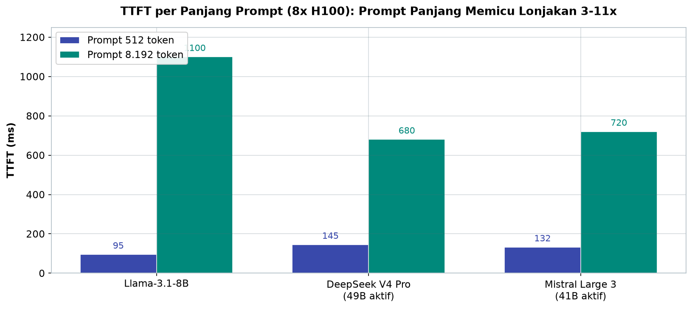
Tabel ini mengajarkan dua pelajaran. Pertama, panjang prompt adalah musuh TTFT: melanjutkan Llama 3.1 (8B) dari prompt 512 ke 8.192 token menaikkan TTFT lebih dari 10x lipat (95 → 1.100 ms). Kedua, efisiensi KV cache nyata terlihat pada DeepSeek V4 Pro: dengan 8.192 token konteks, TTFT-nya hanya 680 ms — bandingkan estimasi 6+ detik pada DeepSeek V3.2 untuk panjang yang sama, karena KV cache V4 Pro hanya 10% ukuran V3.2. Ini menjelaskan mengapa penyedia API dapat menjual konteks panjang dengan harga yang masuk akal — strukturnya memang murah.
Ada satu pola lagi yang tidak boleh terlewat: jarak antara model kecil dan model besar menyempit saat konteks memanjang. Pada prompt 512 token, Llama 3.1 (8B) unggul jauh dalam TTFT (95 ms vs 145 ms DeepSeek V4 Pro). Namun pada 8K token, DeepSeek V4 Pro justru lebih cepat (680 ms vs 1.100 ms) meskipun parameter aktifnya 6x lebih besar — karena efisiensi KV cache mengalahkan ukuran model. Implikasinya praktis: jika mayoritas trafik Anda ber-konteks panjang, memilih model dengan arsitektur KV cache efisien lebih berdampak pada latency daripada memilih model kecil. Ketika membandingkan angka sistem Anda sendiri dengan Tabel 5.27, ingat juga bahwa angka ini diukur pada 8x H100 — pada GPU yang lebih lemah, skala perbedaannya tetap (proporsional), tetapi absolutnya bisa jauh berbeda. Gunakan tabel ini sebagai sanity check, bukan kitab suci.
6. Capacity Planning: Meramal dari Riwayat
Monitoring bukan hanya lensa untuk masa kini — ia juga bola kristal untuk masa depan. Capacity planning dimulai dari historical traffic: gunakan data permintaan minggu-minggu sebelumnya untuk memprediksi kebutuhan GPU hours, lalu siapkan aturan auto-scaling yang dipicu oleh dua sinyal paling jujur: queue depth dan TTFT. Ketika keduanya menanjak, sistem menumbuhkan dirinya sendiri sebelum pengguna mengeluh. Di sisi keuangan, hitung cost per token dan cost per request — dua angka yang mengubah diskusi infrastruktur dari "berapa GPU" menjadi "berapa harga seekor token" — sehingga keputusan scaling selalu berbasis unit ekonomi, bukan intuisi.
Dari Metrik Menuju Anggaran: Tiga Formula Kunci
Tiga perhitungan sederhana mengubah data mentah menjadi keputusan anggaran. Pertama, GPU hours per hari: kalikan jumlah total token yang dilayani dengan perkiraan throughput per GPU — hasilnya memberitahu berapa GPU yang harus selalu menyala, dan berapa yang cukup di-spin up saat puncak. Kedua, cost per token: bagi biaya total infrastruktur (GPU + listrik + jaringan) dengan jumlah token yang berhasil dilayani — ini angka yang paling jujur untuk mengevaluasi optimasi: jika speculative decoding menaikkan throughput 2,8x, cost per token turun drastis meski perangkat kerasnya sama. Ketiga, error budget: kalikan SLO availability dengan jumlah request per bulan — misalnya availability 99,9% dari 10 juta request berarti Anda hanya boleh gagal 10.000 request; setiap insiden mengurangi sisa anggaran, dan burn rate menentukan seberapa cepat peringatan harus berbunyi. Ketiga formula ini menghubungkan layer metrik (Tabel 5.26) dengan layer keputusan bisnis — dan menjadikan monitoring sebagai alat negosiasi anggaran, bukan sekadar papan skor.
Semua keputusan di bagian ini — SLO, alert, scaling, anggaran — hanya bermakna bila data yang mendasarinya dipercaya semua pihak. Karena itu, tutup setiap diskusi kapasitas dengan pertanyaan yang sama: metrik mana yang menjadi bukti, dan siapa yang bertanggung jawab memastikannya akurat? Jawaban yang baik biasanya bermuara pada satu komitmen teknis: semua metrik kunci dicatat, diberi label yang konsisten, dan diarsipkan lebih lama dari masa mengeluh pengguna. Data yang hilang sama buruknya dengan data yang bohong.
7. Praktikum / Hands-On
Langkah 1: Setup Monitoring vLLM dengan Prometheus + Grafana
Mulai dari konfigurasi Prometheus untuk men-scrape tiga instance vLLM:
# prometheus.yml
scrape_configs:
- job_name: 'vllm'
scrape_interval: 5s
metrics_path: /metrics
static_configs:
- targets:
- 'vllm-server-1:8000'
- 'vllm-server-2:8000'
- 'vllm-server-3:8000'# Menjalankan Prometheus + Grafana
docker compose up -d prometheus grafana
# Query contoh:
# Histogram TTFT P50
histogram_quantile(0.50,
sum(rate(vllm:time_to_first_token_seconds_bucket[5m]))
by (le, model_name))
# Cache usage per GPU
avg(vllm:gpu_cache_usage_perc) by (model_name)scrape_interval: 5s berarti setiap instance di-sampling 12 kali per menit — cukup rapat untuk menangkap lonjakan, cukup hemat untuk tidak membebani server. Query histogram_quantile adalah jantung analisis persentil: ia mengonversi histogram kumulatif mentah menjadi persentil yang bisa dibaca manusia. Simpan kedua query ini sebagai panel pertama dashboard Grafana Anda — mereka adalah termometer dasar seluruh sistem.
Langkah 2: Custom Python Monitoring Script
Ketika engine Anda bukan vLLM/TGI atau Anda membutuhkan proksi tingkat aplikasi, script Python dengan prometheus_client ini melakukan probing langsung ke API:
# monitor_ttft.py
import requests
import time
from prometheus_client import start_http_server, Histogram, Gauge
import threading
TTFT = Histogram('llm_ttft_seconds', 'Time to first token',
buckets=[0.01, 0.05, 0.1, 0.2, 0.5, 1.0, 2.0, 5.0])
QUEUE = Gauge('llm_queue_depth', 'Current queue depth')
THROUGHPUT = Gauge('llm_throughput_tok_s', 'Output tokens per second')
def probe_vllm():
while True:
start = time.time()
try:
response = requests.post(
"http://localhost:8000/v1/completions",
json={"model": "default", "prompt": "test", "max_tokens": 1},
timeout=10,
)
ttft = time.time() - start
TTFT.observe(ttft)
except Exception as e:
print(f"Error: {e}")
time.sleep(1)
start_http_server(8001)
threading.Thread(target=probe_vllm, daemon=True).start()
input("Monitoring running...")Perhatikan trik max_tokens: 1 — dengan meminta hanya satu token, ttft yang diukur adalah TTFT murni tanpa kebisingan generasi. Histogram dengan buckets eksponensial (0,01 hingga 5,0 detik) sengaja memusatkan resolusi pada rentang SLO interaktif, tempat deteksi perubahan paling penting.
Refleksi desain script di atas membantu memahami pola pikir synthetic probe secara umum. Script ini mengukur sistem dari luar (black-box) — berbeda dari metrik internal vLLM yang melihat ke dalam engine. Keduanya saling melengkapi: metrik internal akurat tetapi mungkin tidak mewakili apa yang dirasakan pengguna (yang melewati jaringan, gateway, dan antrean aplikasi); probe eksternal mengukur pengalaman nyata tetapi menambah beban sintetis dan tidak dapat membedakan komponen mana yang lambat. Di produksi, jalankan keduanya: metrik internal (:8000/metrics) untuk pembedahan akar masalah, probe eksternal (script di atas) untuk validasi SLO dari sudut pandang pengguna — termasuk rute yang melewati load balancer dari Bab 5.8. Perhatikan bahwa probe dengan max_tokens: 1 hanya mengukur TTFT dan jaringan; untuk memantau TPOT, ubah max_tokens menjadi 50-100 dan bagi total waktu dengan jumlah token yang diterima — persis seperti pengukuran yang dilakukan vendor model pada Tabel 5.27.
Langkah 3: Alert Rules untuk P99 TTFT
Akhirnya, aturan alarm yang menjaga SLO — tiga aturan, tiga lapisan peringatan:
# alert-rules.yml
groups:
- name: llm_slo
rules:
- alert: HighTTFT
expr: |
histogram_quantile(0.99,
sum(rate(vllm:time_to_first_token_seconds_bucket[5m]))
by (le, model_name)
) > 2.0
for: 5m
labels:
severity: critical
annotations:
summary: "P99 TTFT > 2s untuk {{ $labels.model_name }}"
- alert: QueueGrowing
expr: |
avg(vllm:num_requests_waiting) by (model_name)
> 50
for: 2m
labels:
severity: warning
annotations:
summary: "Queue > 50 untuk {{ $labels.model_name }}"
- alert: KVCacheNearFull
expr: |
avg(vllm:gpu_cache_usage_perc) by (model_name)
> 0.95
for: 1m
labels:
severity: warningTiga aturan ini membentuk piramida peringatan dini. KVCacheNearFull (warning, 1 menit) memberitahu Anda lebih awal bahwa memori sedang penuh; QueueGrowing (warning, 2 menit) menunjukkan tekanan sudah merambat ke antrean; HighTTFT (critical, 5 menit) adalah bukti pengalaman pengguna sudah rusak. Klausa for: 5m mencegah alert palsu dari lonjakan sesaat — hanya degradasi yang bertahan yang dihukum. Template {{ $labels.model_name }} membuat setiap alert informatif saat dikirim ke Slack.
Dua disiplin operasional melengkapi alert rules ini. Pertama, jalankan piket triase segera setelah alert: SLO-based monitoring hanya berarti jika ada pemilik yang jelas untuk setiap peringatan — tentukan on-call engineer dan runbook (protokol triase pada sub-bab di atas) sebelum insiden terjadi, bukan saat alarm berbunyi. Kedua, audit false positive secara berkala: alert yang sering berbunyi tanpa aksi akan diabaikan orang — kematian bisu sebuah alerting system. Jika QueueGrowing sering memicu alert padahal sistem sehat, naikkan ambangnya; sebaliknya, jika P99 TTFT memburuk tanpa alert, periksa kembali durasi for dan cakupan bucket histogram. Alerting yang baik adalah sistem yang jarang berbunyi tetapi selalu benar ketika berbunyi.
8. Studi Kasus: Platform Chatbot — Debug Lonjakan Latency
Insiden. Sebuah platform chatbot melayani ratusan ribu percakapan harian tiba-tiba mengalami degradasi: P99 TTFT naik dari 400 ms ke 4,2 detik dalam 10 menit — pengguna mengeluh, tim panik, dan tidak ada yang tahu dari mana mulainya.
Deteksi. Sistem yang telah dipasang sesuai bab ini bekerja sesuai rancangannya: Alertmanager memicu alarm HighTTFT lebih dulu dari keluhan pengguna, dan dashboard menunjukkan queue depth 200+ — antrean request menumpuk jauh di atas ambang normal.
Root cause. Penelusuran menunjukkan satu pelanggan mengirim 10.000 request batch dengan prompt 32K token sekaligus. Setiap request raksasa itu menelan waktu prefill yang lama dan menempati porsi besar KV cache, sehingga seluruh slot GPU habis terisi dan request-request interaktif pengguna lain mengantre tanpa harapan. Satu pelanggan — meskipun tidak berniat jahat — menjadi penguasa kartel atas seluruh infrastruktur.
Solusi langsung. Dua langkah segera: rate limit per API key untuk menghentikan lonjakan tunggal, dan max prompt length 8K untuk membatasi ukuran request yang boleh masuk. Lonjakan itu berhenti dalam hitungan menit, dan P99 TTFT kembali ke garis dasar.
Solusi jangka panjang. Tim belajar bahwa pembatas global tidak cukup. Mereka mengimplementasikan priority queue — request interaktif didahulukan dari request batch — dan resource isolation per tenant: jatah slot dan KV cache per pelanggan, sehingga tenant mana pun tidak bisa lagi memonopoli cluster.
Monitoring baru. Dashboard ditambah pemantauan per-tenant TTFT dan alert khusus: jika satu tenant memonopoli lebih dari 50% GPU cache, alarm berbunyi. Pelajaran yang dipetik — monitoring tanpa per-tenant metrics adalah blind spot dalam multi-tenant serving: sistem dapat terlihat sehat secara agregat sementara satu pengguna korban kelaparan (starvation) di balik yang lain. Metrik agregat menyembunyikan ketidakadilan; metrik per-tenant menyingkapkannya.
Post-mortem dalam satu halaman. Dokumentasi insiden menyimpulkan tiga hal yang bisa ditiru tim lain. Pertama, deteksi yang baik adalah deteksi yang lebih cepat dari keluhan: alarm HighTTFT berbunyi 4 menit sebelum laporan pengguna masuk — investasi pada alert berbasis SLO (Langkah 3) terbukti membayar sendiri pada insiden pertama. Kedua, perbaikan sementara yang baik selalu disertai batas waktu: rate limit per API key dan batas prompt 8K dipasang sebagai solusi jangka pendek, dengan jadwal tinjauan dua minggu — bukan sebagai peraturan permanen yang tak pernah dievaluasi. Ketiga, setiap blind spot yang ditemukan harus menghasilkan metrik baru: insiden ini melahirkan dua metrik baru (per-tenant TTFT dan per-tenant cache share) yang kemudian menyingkap dua insiden minor berikutnya lebih awal. Insiden yang didokumentasikan dengan disiplin seperti ini berubah dari "hari buruk" menjadi investasi pengetahuan kolektif.
9. Referensi
Paper Jurnal/Konferensi
[1] Sheng, Y., Cao, S., Li, D., Zhu, B., Li, Z., Zhuo, D., Gonzalez, J.E. & Stoica, I. (2024). Fairness in Serving Large Language Models. 18th USENIX Symposium on Operating Systems Design and Implementation (OSDI). https://www.usenix.org/conference/osdi24/presentation/sheng-ying
[2] Wu, B., Zhong, Y., Zhang, Z., Shen, G., Liu, W., Chen, Y., Zhang, X. & Wu, X. (2024). Efficient Interactive LLM Serving with Proxy Model-based Sequence Length Prediction. Proceedings of Machine Learning and Systems (MLSys). DOI: 10.48550/arXiv.2404.08509 (https://arxiv.org/abs/2404.08509)
[3] Patel, P., Choukse, E., Zhang, C., Shah, A., Goiri, Í., Maleki, S. & Bianchini, R. (2024). Splitwise: Efficient Generative LLM Inference Using Phase Splitting. International Symposium on Computer Architecture (ISCA). DOI: 10.1109/ISCA59077.2024.00019 (https://doi.org/10.1109/ISCA59077.2024.00019)
[4] Kwon, W., et al. (2023). Efficient Memory Management for Large Language Model Serving with PagedAttention. 29th Symposium on Operating Systems Principles (SOSP). DOI: 10.48550/arXiv.2309.06180 (https://arxiv.org/abs/2309.06180) — menjelaskan mengapa memory management menentukan TTFT dan stabilitas latensi saat banyak request dilayani bersamaan, fondasi metrik Time to First Token pada bab ini.
[5] Zheng, L., et al. (2024). SGLang: Efficient Execution of Structured Language Model Programs. 38th Conference on Neural Information Processing Systems (NeurIPS). DOI: 10.48550/arXiv.2312.07104 (https://arxiv.org/abs/2312.07104) — menunjukkan pengaruh radix attention dan API speculation terhadap latency dan TTFT pada server multiuser.
[6] Databricks. (2024). LLM Inference Performance Engineering: Best Practices. Databricks Engineering Blog. https://www.databricks.com/blog/llm-inference-performance-engineering-best-practices
[7] Hughes, A., et al. (2024). SLOs for Large Language Model Serving. Google SRE Blog. https://sre.google/resources/sre-llm
[8] DeepSeek AI. (2026). DeepSeek-V4: System Card and Latency Benchmarks. https://api-docs.deepseek.com/
[9] Mistral AI. (2025). Mistral Large 3: Performance and Latency. https://mistral.ai/news/mistral-large-3/
Referensi Pendukung (Dokumentasi/Repository)
[10] Google SRE. Service Level Objectives. https://sre.google
[11] Prometheus. Documentation. https://prometheus.io/docs
[12] vLLM. Metrics Official Documentation. https://docs.vllm.ai
Bab 5.10: Speculative Decoding — Akselerasi dengan Model Kecil sebagai Draft
Beberapa perusahaan penerbitan membayar editor junior untuk menulis draf kasar setiap artikel sebelum editor senior menyuntingnya — draf yang sudah benar lolos tanpa banyak revisi, draf yang keliru diperbaiki, dan semua orang menghemat waktu. Speculative Decoding membawa logika yang sama ke inference LLM: sebuah model kecil dan cepat "menulis draf" beberapa token terlebih dahulu, lalu model besar "menyunting" semuanya sekaligus. Sub-bab ini membahas cara akselerasi inference tanpa mengorbankan kualitas output — dari spekulasi vanilla draft-and-verify, token tree ala SpecInfer, hingga variasi Medusa dan self-speculative — lengkap dengan implementasi di vLLM dan data benchmark yang jujur. Yang paling penting: seluruh kecepatan ini diraih tanpa mengubah satu token pun dari jawaban akhir.
1. Tujuan Sub-Bab
Setelah membaca sub-bab ini, Anda akan mampu:
- Menjelaskan masalah mendasar autoregressive decoding — mengapa GPU menganggur padahal bisa bekerja lebih banyak
- Menjelaskan prinsip speculative decoding: draft model menghasilkan K token, target model memverifikasi dalam satu forward pass
- Menganalisis konsep acceptance rate dan mengapa ia menentukan kecepatan akhir
- Membandingkan teknik tree-based speculative inference (SpecInfer) dengan spekulasi linear, termasuk trade-off coverage dan kompleksitas
- Membedakan variasi Medusa, self-speculative decoding, dan lookahead decoding
- Mengonfigurasi speculative decoding di vLLM dan memverifikasi kecepatannya dengan metrik engine
2. Masalah Autoregressive Decoding: GPU yang Malas karena Arsitektur
Satu Forward Pass, Satu Token
Model bahasa menghasilkan teks secara autoregressive: satu token pada satu waktu, setiap token baru bergantung pada semua token sebelumnya. Sifat ini membuat decoding membutuhkan satu forward pass per token — untuk menghasilkan 200 token, model harus mengeksekusi 200 forward pass yang berurutan. Ini bukan sekadar lambat; ini adalah pemborosan struktural. Pada setiap langkah, GPU hanya menghitung satu token baru, sementara seluruh bobot model — puluhan bahkan ratusan miliar parameter — harus dibaca ulang dari memori. Paradoksnya, GPU Anda seperti pembaca yang harus membuka ulang seluruh buku untuk menambahkan satu kata.
Bottleneck-nya Memori, Bukan Komputasi
Pengukuran menunjukkan bahwa pada fase decode, sekitar 90% waktu dihabiskan untuk loading weights dari memori, bukan untuk melakukan komputasi — GPU "menganggur menunggu data". Inilah istilah teknisnya: fase decode bersifat memory-bound, bukan compute-bound. Dampaknya langsung terlihat: throughput token per detik dibatasi oleh memory bandwidth kartu, bukan oleh kekuatan FLOP-nya, sehingga GPU yang paling mahal pun hanya bekerja sepersepuluh kemampuannya. Pertanyaan yang kemudian muncul adalah pertanyaan yang membuka seluruh bab ini: bagaimana kita bisa membuat GPU melakukan lebih banyak pekerjaan yang berguna per siklus pembacaan memori yang sama? Jawaban yang elegan: bangkitkan beberapa token sekaligus dari sebuah model kecil yang murah, lalu biarkan model besar memverifikasi sekaligus dalam satu langkah.
Karena property yang sama ini, ada ironi indah yang perlu disadari: draft model yang jauh lebih kecil menderita masalah memory-bound dengan proporsi yang sama — ia juga membaca seluruh bobotnya setiap langkah. Namun justru karena lebih kecil, beban pembacaannya jauh lebih ringan: draft 3B membaca 6 GB per langkah sementara target 70B membaca 140 GB — dua puluh kali lebih murah per langkah. Inilah mengapa "biaya spekulasi" nyaris selalu terbayar: meskipun draft harus berjalan K langkah untuk setiap satu langkah target, total bandwidth yang dibelanjakan draft (K × ukuran draft) tetap jauh lebih kecil daripada satu langkah target (ukuran target), selama K tidak ekstrem. Angka nyata dari Tabel 5.29 — draft 3B melayani 70B dengan speedup 3,2-3,5x — adalah bukti empiris dari aritmetika sederhana ini.
Tabel 5.28: Perbandingan Metode Speculative Decoding
Peta lengkap keluarga speculative decoding — perhatikan kolom output distribution yang membedakan metode yang "aman" dari yang "berisiko".
| Metode | Draft Source | Speedup | Training Required | Output Distribution | Kompleksitas Deploy |
|---|---|---|---|---|---|
| Vanilla SpecDec (Leviathan) | Model kecil terpisah | 2-3x | Tidak | Identik (lossless) | Rendah (2 model) |
| SpecInfer (Miao) | Token tree (multiple SSM) | 1,5-3,5x | Tidak | Identik (lossless) | Sedang (verifikasi tree) |
| Medusa-1 (Cai) | Multiple heads (satu model) | 2,2x | Ya (hanya head) | Hampir identik | Rendah (tanpa model kedua) |
| Medusa-2 | Multiple heads (joint FT) | 2,3-2,8x | Ya (seluruh model) | Mendekati | Rendah |
| Self-Speculative | Layer skipping | 1,5-2x | Tidak | Identik | Sangat Rendah |
| Lookahead Decoding | N-gram | 1,5-1,8x | Tidak | Identik | Rendah |
Keputusan pemilihan metode pada dasarnya adalah tiga sumbu: jarak ke output asli (lossless vs mendekati), biaya pelatihan (nol vs sebagian vs penuh), dan kompleksitas deployment (satu vs dua model). Vanilla SpecDec dan SpecInfer menawarkan keamanan penuh (output identik) tanpa pelatihan — harga yang dibayar adalah pengelolaan dua model. Medusa menawarkan kecepatan tanpa model kedua, tetapi output hanya "hampir identik" dan membutuhkan pelatihan — sebuah trade-off yang bermasalah bagi aplikasi yang menuntut determinisme ketat seperti evaluasi berdampingan.
Catatan penting tentang angka speedup pada kolom ketiga: rentang seperti "2-3x" dan "1,5-3,5x" adalah rentang yang diukur pada hardware dan workload yang berbeda-beda — bukan jaminan performa universal. Faktor terbesarnya adalah rasio kecepatan draft terhadap target (semakin besar selisihnya, semakin besar potensi gain) dan kesesuaian draft terhadap teks yang dihasilkan. Karena itu, Tabel 5.28 sebaiknya dibaca sebagai peta arah (metode mana yang cenderung unggul di kondisi mana), sedangkan angka final harus diukur pada mesin dan trafik Anda sendiri — itulah fungsi Langkah 3 pada bagian praktikum. Sikap ini mencegah dua kesalahan umum: memilih metode hanya karena angkanya paling besar, dan menolak metode karena benchmark orang lain tidak menjanjikan.
Tabel 5.29: Trade-off Ukuran Draft Model vs Speedup
Bagaimana pilihan draft model mempengaruhi kecepatan dan tagihan VRAM — semakin kecil rasio draft:target, semakin besar potensi speedup per byte.
| Draft Model | Target Model | Ratio Params | Speedup | VRAM Tambahan |
|---|---|---|---|---|
| Llama-7B (7B) | Llama-70B (70B) | 10% | 2,5x | 14 GB |
| Llama-7B (7B) | Llama-405B (405B) | 1,7% | 3,8x | 14 GB |
| TinyLlama (1.1B) | Llama-13B (13B) | 8,5% | 2,1x | 2,2 GB |
| Gemma-2B (2B) | Llama-70B (70B) | 2,9% | 3,2x | 4 GB |
| SmolLM-360M (0.36B) | Llama-8B (8B) | 4,5% | 2,0x | 0,7 GB |
| Ministral 3 3B (3B) | Mistral Large 3 (675B MoE) | 0,4% | 3,5x | 1,8 GB |
| DeepSeek V4 Flash (13B aktif) | DeepSeek V4 Pro (49B aktif) | 26% | 2,8x | 24 GB |
Tabel 5.29 mengonfirmasi intuisi: draft model yang sangat mungil relatif terhadap target menghasilkan speedup yang mengejutkan — Ministral 3 3B yang hanya 0,4% ukuran Mistral Large 3 tetap menghasilkan 3,5x speedup dengan VRAM tambahan 1,8 GB. Kombinasi ini sangat efisien karena draft yang kecil hampir tidak menyentuh anggaran memori. Kasus menarik di baris terakhir: DeepSeek V4 Flash sebagai draft untuk V4 Pro memanfaatkan arsitektur MoE yang sama — karena keluarga arsitektur yang identik berarti representasi internal yang kompatibel, acceptance rate lebih tinggi sehingga 2,8x tercapai meski rasio parameternya terhitung besar (26%). Ini pelajaran terpenting: kesamaan arsitektur lebih berharga daripada ukuran.
Perjalanan satu siklus spekulasi — dari draft autoregressive hingga verifikasi paralel dan keputusan penerimaan:
Diagram ini menunjukkan arsitektur dua-tahap yang menjadi inti bab ini: sisi atas (draft) berjalan langkah demi langkah tetapi murah; sisi tengah (verify) berjalan sekali namun mahal. Simpul keputusan di tengah adalah titik di mana ekonomi spekulasi ditentukan — setiap token yang diterima adalah token yang tidak perlu dihitung ulang oleh target.
Perhatikan juga simetri waktu yang dihasilkan: satu forward pass target pada dasarnya menggantikan beberapa langkah autoregressive — dan karena biaya forward pass hampir sama berapa pun panjang input (dalam batas panjang konteks), menerima 4 token sekaligus hampir semurah menerima 1 token. Inilah mengapa spekulasi terasa seperti "potongan harga": Anda membayar harga verifikasi yang sama, tetapi pulang membawa token 2-4x lebih banyak. Satu-satunya "pajak" yang harus dibayar adalah waktu yang dihabiskan draft model — yang seharusnya kecil, karena biaya draft sebanding dengan ukurannya yang jauh lebih kecil.
3. Spekulasi Dasar: Draft dan Verify
Model Kecil Menulis, Model Besar Menyunting
Ide dasar speculative decoding, dirumuskan oleh Leviathan et al. [1] dan Chen et al., bekerja dengan dua model. Draft model — model kecil yang jauh lebih murah dan cepat — membangkitkan K token secara autoregressive, satu per satu, dengan biaya per token yang sangat rendah. Kemudian target model — model besar yang menjadi sumber kebenaran — memverifikasi seluruh K token draft itu dalam satu forward pass. Kunci kecerdasannya ada pada prosedur penerimaan (acceptance): semua token draft yang cocok dengan prediksi target model diterima sekaligus; jika mismatch terjadi di posisi ke-i, token ke-1 hingga ke-(i-1) tetap diterima, token ke-i dihitung ulang dengan prediksi target, dan sisa draft dibuang. Dengan cara ini, output yang dihasilkan identik secara matematis dengan decoding autoregressive biasa — tidak ada satu token pun yang berbeda — hanya saja rata-rata bertambah lebih dari satu token per forward pass.
Acceptance Rate: Nyawa Spekulasi
Ukuran yang menentukan semuanya adalah acceptance rate: persentase token draft yang diterima oleh target model. Jika draft model cerdas — menebak dengan akurat apa yang akan dipilih target — acceptance rate tinggi dan setiap forward pass target "membayar" beberapa token sekaligus. Jika draft model menebak sembarangan, hampir semua token ditolak, dan Anda hanya membuang komputasi dengan hasil lebih lambat dari decoding biasa. Inilah alasan pemilihan draft model tidak bisa asal: draft yang baik adalah draft yang hidup di "gaya berpikir" yang sama dengan target — idealnya dari keluarga arsitektur yang sama, seperti Llama 3.2 (3B) untuk melayani Llama 3.1 (70B) atau DeepSeek V4 Flash untuk V4 Pro. Spekulasi adalah investasi: Anda membayar komputasi draft kecil untuk membeli hak memverifikasi banyak token sekaligus.
Menghitung Keuntungan: Rumus di Balik Angka Speedup
Untuk memahami mengapa angka speedup di Tabel 5.29 bisa berkisar 2x hingga 3,8x, ada satu rumus mental yang berguna: jumlah token rata-rata per forward pass target ≈ 1 + (acceptance rate × K). Dengan K=4 dan acceptance 70%, rata-rata target menerima 1 + 2,8 = 3,8 token per langkah verifikasi — itulah yang menjelaskan angka 2,8 token/step pada Tabel 5.30 (perhatikan angka nyata sedikit di bawah perkiraan karena token yang ditolak di posisi akhir ikut mengurangi rata-rata). Dari rumus ini dua kesimpulan langsung: pertama, gain bertambah hampir linear dengan K selama acceptance rate tidak jatuh — itulah alasan orang mencoba K lebih besar; kedua, begitu acceptance rate jatuh tajam (seperti 70% → 44% saat K=8 pada vanilla), penambahan K justru mandul. Konfigurasi optimal adalah titik di mana hasil kali acceptance rate × K maksimum — bukan K terbesar, bukan acceptance tertinggi. Ukur keduanya secara berkala di produksi, dan Anda akan menemukan sweet spot yang mungkin berbeda dari default engine.
Mengapa Hasilnya Identik: Jaminan Matematis di Balik Spekulasi
Satu kekhawatiran yang sering muncul sebelum adopsi: "apakah draft model meracuni kualitas jawaban?" Jawaban teoretisnya tegas: untuk mode greedy decoding, speculative decoding lossless — outputnya identik dengan decoding autoregressive biasa [1]. Argumennya berlapis. Pertama, mode greedy selalu memilih token dengan probabilitas tertinggi; karena target model adalah satu-satunya hakim akhir — token yang tidak cocok dengan prediksi target dihitung ulang menggunakan logit target — mustahil token yang tidak dipilih target lolos ke output. Kedua, pada sampling berdistribusi (dengan suhu atau top-p), skema verifikasi menggunakan distribusi target secara langsung, sehingga token yang dihasilkan mengikuti distribusi yang tepat dari target model — bukan perkiraan draft. Ketiga, token yang dibuang tidak pernah hilang secara informasi: seluruh sejarah prompt tetap utuh, dan perhitungan ulang dimulai dari posisi yang diamankan. Artinya, speculative decoding adalah optimasi murni: Anda membayar komputasi draft kecil, dan satu-satunya yang berubah adalah kecepatan, bukan isi. Perlu pengecualian jujur: metode seperti Medusa dengan pelatihan head tambahan menghasilkan distribusi yang "hampir identik", bukan identik — perbedaan ini biasanya tak kasatmata, tetapi penting bagi aplikasi yang menuntut determinisme penuh antar versi.
Tabel 5.30: Benchmark Speculative Decoding (Llama-2-7B Target, Llama-7B Draft, A100)
Data pengukuran nyata pada A100 — perhatikan bagaimana token per step rata-rata hampir selalu lebih besar daripada 1.
| Konfigurasi | Tokens/Step Rata | Throughput (tok/s) | Speedup | Acceptance Rate |
|---|---|---|---|---|
| Baseline (no spec) | 1,0 | 1.250 | 1,0x | - |
| Vanilla (K=4) | 2,8 | 2.750 | 2,2x | 70% |
| Vanilla (K=8) | 3,5 | 3.125 | 2,5x | 44% |
| SpecInfer (tree K=4) | 3,2 | 3.400 | 2,7x | 80% |
| SpecInfer (tree K=8) | 4,8 | 4.000 | 3,2x | 60% |
| Medusa-1 (heads=4) | 3,0 | 3.000 | 2,4x | 75% |
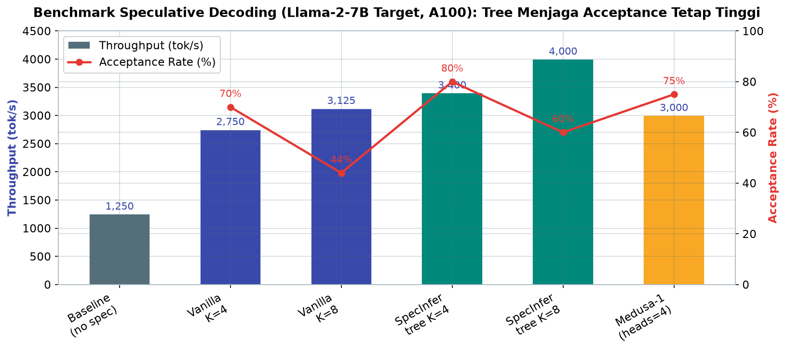
Dua pelajaran penting dari Tabel 5.30. Pertama, acceptance rate tidak turun secara linier saat K membesar — K=8 pada vanilla hanya mendapat 44% penerimaan dibanding 70% pada K=4, karena semakin jauh draft menebak, semakin besar kemungkinan meleset. Ini menjelaskan mengapa menambah K tanpa batas tidak selalu bijak: ada K optimal per pasangan draft-target. Kedua, token tree mengubah permainan — pada K=8, SpecInfer mempertahankan penerimaan 60% dengan 4,8 token per step rata-rata, jauh melampaui vanilla 3,5. Untuk trafik produksi, aturan praktisnya: mulailah dari K=4-6 untuk vanilla, dan manfaatkan tree bila trafik Anda didominasi prompt yang beragam.
4. Tree-based Speculative Inference: SpecInfer dan Akar Percabangan
Batas Jalur Tunggal
Spekulasi linear — satu rangkaian K token draft — memiliki kelemahan struktural: ia hanya menebak satu jalan cerita. Jika draft model menebak token yang berbeda dari target di posisi ke-3, maka semua tebakan sesudahnya — yang seharusnya valid bergantung pada token ke-3 tersebut — ikut dibuang. Dengan kata lain, spekulasi linear adalah penjelajah yang memilih satu lorong gua; jika lorong itu buntu, seluruh perjalanan kembali ke awal. Ini membatasi acceptance rate secara alami, terutama pada teks dengan banyak kemungkinan kelanjutan.
Token Tree: Banyak Lorong dalam Satu Perjalanan
SpecInfer [2] memecahkan batas ini dengan token tree: alih-alih satu jalur, draft model membangkitkan beberapa cabang (branching) — misalnya sebuah kalimat bisa diawali "the cat", "a dog", atau "an elephant" — membentuk pohon token dengan puluhan jalur potensial. Kuncinya, seluruh pohon dapat diverifikasi oleh target model dalam satu forward pass paralel: perhitungan bersama token-token yang berbagi prefix membuat verifikasi pohon tidak jauh lebih mahal daripada verifikasi satu jalur. Hasilnya adalah coverage yang jauh lebih tinggi — satu kesempatan yang tidak sempat diambil di cabang A mungkin tersedia di cabang B. Pengukuran SpecInfer menunjukkan speedup 1,5-2,8x pada distributed setting dan 2,6-3,5x pada offloading setting — dan yang mengejutkan, seluruhnya dengan output yang tetap identik dengan target model (lossless) [2]. Ini adalah free lunch: teks yang sama, dikirim lebih cepat.
Selisih antara dua angka tersebut — distributed vs offloading — layak dipahami karena menentukan di lingkungan mana Anda akan beroperasi. Pada distributed setting (semua model di GPU), pasangan draft dan target bersaing untuk sumber daya GPU yang sama; dalam beberapa konfigurasi, draft malah menambah beban tanpa keuntungan besar, sehingga speedup terkendali di 1,5-2,8x. Pada offloading setting (draft dijalankan di perangkat terpisah, misalnya CPU atau GPU tambahan), draft tidak merebut bandwidth dari target sehingga keuntungannya lebih murni — hingga 3,5x. Implikasi praktisnya: jika GPU Anda penuh sesak dan tidak ada alokasi untuk draft, tempatkan draft di CPU atau GPU cadangan; jika model Anda berjalan di satu GPU dengan ruang kosong, jalankan draft di GPU yang sama untuk menghindari biaya transfer antar perangkat. Pemilihan tata letak draft adalah keputusan arsitektur — bukan detail pelengkap.
Bentuk token tree — satu akar, banyak cabang, semuanya diverifikasi sekaligus:
Pembacaan visualnya sederhana: untuk token "the ", tiga kemungkinan lanjutan dicabangkan; di tingkat berikutnya, setiap cabang memiliki kelanjutannya sendiri. Dalam verifikasi tree, pohon ini dikirim sekaligus sebagai satu forward pass — ketiga cabang level satu dan ketiga cabang level dua diverifikasi bersama, dan jalur terpanjang yang cocok dengan prediksi target diterima. Inilah yang membuat SpecInfer menang di acceptance rate: kemungkinan satu cabang benar ternyata jauh lebih tinggi daripada kemungkinan satu* jalur benar.
Batasan yang jujur dari pendekatan tree juga perlu disebut: pohon yang terlalu lebar menambah beban verifikasi (setiap cabang ekstra adalah token ekstra yang harus diproses target), dan pohon yang terlalu dangkal kembali ke masalah jalur tunggal. Ukuran tree yang ideal biasanya bersifat adaptif — lebar di awal (banyak kemungkinan kata pertama), menyempit di level bawah — mengikuti distribusi entropi natural bahasa. Engine modern seperti vLLM dan Aphrodite mengimplementasikan varian tree dengan batas lebar otomatis; bagi Anda yang cukup menggunakan konfigurasi default, ukur spec_time vs verify_time (Langkah 3) sebagai kompas: jika verify_time melonjak tidak proporsional, pohon Anda terlalu lebar.
5. Variasi Speculative Decoding: Banyak Jalan Menuju Token Cepat
Spekulasi tidak harus selalu melibatkan dua model terpisah. Medusa [3] mengambil rute berbeda: alih-alih draft model, ia menempelkan beberapa decoding head tambahan pada model target itu sendiri — setiap head memprediksi posisi token berikutnya secara paralel sehingga satu forward pass menghasilkan beberapa kandidat token sekaligus. Tanpa model kedua, Medusa mencatat speedup 2,2-2,8x dengan pelatihan tambahan hanya pada head saja (Medusa-1) atau seluruh model (Medusa-2). Self-speculative decoding [4] bahkan menghilangkan kebutuhan pelatihan: model yang sama bertindak sebagai draft dan target dengan cara melompati sebagian lapisan (layer skipping) saat menebak — draf datang dari versi "pendek" dirinya sendiri. Eagle menggunakan dua model LLM dengan mekanisme verifikasi spekulatif yang ditingkatkan. Lookahead Decoding meninggalkan model kedua sama sekali: ia membangun N-gram dari output yang sedang dihasilkan untuk menebak token berikutnya. Tidak semua metode setara — masing-masing bertukar antara kecepatan, kemurnian distribusi output (identik vs mendekati), dan biaya deployment (satu model vs dua) — keputusan yang akan kita bandingkan sistematis pada Tabel 5.28.
Membedah Trade-off: Kapan Memilih Metode Mana?
Panduan pemilihan metode dapat diringkas dalam tiga pertanyaan. Pertama, apakah Anda bisa menambahkan model kedua? Jika VRAM ketat atau manajemen dua model terasa berat, Medusa (pelatihan head) atau lookahead decoding (tanpa pelatihan) adalah kandidat utama; jika Anda memiliki VRAM cadangan — dan pedoman di Tabel 5.29 menunjukkan biayanya sering kecil — vanilla SpecDec atau SpecInfer memberi keamanan lossless. Kedua, apakah output harus identik? Dalam produksi yang dievaluasi (AB test, audit, compliance), pilih metode lossless; dalam chatbot bebas yang tidak pernah dibandingkan token-per-token, "hampir identik" cukup. Ketiga, apakah trafik Anda panjang dan beragam? Teks panjang dengan banyak kelanjutan potensial mendapat manfaat terbesar dari token tree (SpecInfer), yang menjelajah banyak cabang sekaligus; teks pendek yang deterministik (kode, JSON) cukup dilayani vanilla dengan K kecil. Catatan tambahan dari riset Sequoia [5]: konfigurasi optimal — jumlah token spekulasi, ukuran tree, dan bahkan kebutuhan draft model — sangat bergantung pada hardware (memory bandwidth ratio) dan beban nyata, sehingga mengukur acceptance rate di environment produksi sendiri lebih berharga daripada menyalin konfigurasi orang lain.
6. Implementasi di Engine Inference Modern
Untungnya, engineer tidak perlu mengimplementasikan semua ini dari nol. vLLM mendukung speculative decoding dengan bendera --speculative-model: tentukan model draft, jumlah token spekulasi, dan versi tensor parallelism untuk draft model — sisanya dikelola engine, termasuk metrik acceptance rate yang diekspos ke Prometheus. TGI (Text Generation Inference) juga mendukung speculative decoding dengan draft model untuk keluarga modelnya. Aphrodite, engine turunan vLLM untuk komunitas, mendukung berbagai metode speculative decoding sambil mempertahankan API yang sama. Pilihannya kini seputar: seberapa kompatibel draft model dengan model target Anda, dan seberapa besar VRAM tambahan yang bersedia Anda bayar — kedua dimensi itu kita hitung di Tabel 5.29.
Kapan Speculative Decoding Tidak Membantu: Kejujuran Teknis
Agar tidak ada pembaca yang terjebak euforia speedup, penting mengakui tiga kondisi di mana spekulasi gagal memberi manfaat. Pertama, workload yang didominasi prefill: jika trafik Anda berupa prompt raksasa dengan output pendek (misalnya klasifikasi dokumen 32K token dengan jawaban satu kata), yang menjadi bottleneck adalah prefill — komputasi — bukan decode; spekulasi tidak menyentuh prefill sama sekali, dan hasilnya nyaris nol. Kedua, draft model yang tidak cocok: tanpa kesamaan arsitektur dengan target, acceptance rate jatuh ke 30-40% dan overhead draft justru menelan lebih banyak waktu daripada yang dihemat verifikasi. Ketiga, hardware yang sudah jenuh bandwidth: pada GPU yang antrean memorinya sudah penuh oleh workload lain, draft model ikut berebut bandwidth — keuntungan spekulasi terkikis oleh kelangkaan sumber daya yang sama. Untuk memastikan Anda berada di sisi yang benar, selalu ukur net speedup di lingkungan produksi sendiri — bukan di benchmark — sebelum mengunci konfigurasi. Dan jangan lupa mencatat konfigurasi yang gagal: dokumentasi "yang sudah dicoba dan terbukti tidak bekerja" sama berharganya dengan resep yang berhasil.
7. Praktikum / Hands-On
Langkah 1: Speculative Decoding dengan vLLM
Aktifkan speculative decoding di vLLM dengan sepasang target dan draft model yang kompatibel:
# 1. Siapkan target model dan draft model
# Target: meta-llama/Meta-Llama-3.1-70B-Instruct
# Draft: meta-llama/Llama-3.2-3B-Instruct (draft yang cocok)
# 2. Jalankan dengan speculative decoding
vllm serve meta-llama/Meta-Llama-3.1-70B-Instruct \
--speculative-model meta-llama/Llama-3.2-3B-Instruct \
--num-speculative-tokens 5 \
--speculative-draft-tensor-parallel-size 1 \
--speculative-max-model-len 4096 \
--gpu-memory-utilization 0.90
# 3. Verifikasi speedup
curl http://localhost:8000/v1/completions \
-H "Content-Type: application/json" \
-d '{
"model": "meta-llama/Meta-Llama-3.1-70B-Instruct",
"prompt": "Jelaskan speculative decoding dalam 3 paragraf",
"max_tokens": 200,
"temperature": 0
}'Arti setiap bendera penting: --speculative-model menunjuk draft (Llama 3.2 (3B), dari keluarga yang sama dengan target sehingga acceptance rate tinggi); --num-speculative-tokens 5 membatasi draft hingga 5 token per siklus; --speculative-draft-tensor-parallel-size 1 menyimpan draft model di satu GPU (tidak perlu disebar); dan --speculative-max-model-len membatasi panjang konteks draft. Parameter temperature: 0 (greedy) pada curl memastikan perbandingan speedup yang adil, karena penolakan kandidat hanya dihitung pada mode deterministik.
Langkah verifikasi yang tidak boleh dilewati: buktikan outputnya identik. Sebelum mengandalkan speculative decoding di produksi, jalankan prompt yang sama dua kali — sekali dengan --speculative-model aktif, sekali tanpa — dengan temperature: 0, lalu bandingkan outputnya dengan diff. Keduanya harus identik karakter demi karakter; jika berbeda, ada bug konfigurasi atau ketidakcocokan tokenizer antara draft dan target. Setelah bukti kesetaraan ini ada, barulah bandingkan waktu: ukur time di kedua mode untuk 20 prompt campuran (pendek, panjang, kode, prosa). Speedup 1,5-3x yang konsisten pada mayoritas prompt menandakan pasangan draft-target Anda sehat; jika hanya prompt panjang yang cepat, pertimbangkan apakah beban Anda memang didominasi prompt panjang — ingat pelajaran "kapan spekulasi tidak membantu" di atas.
Bila produksi Anda menggunakan beberapa mode sampling (suhu, top-p, atau seed), sertakan variasi tersebut dalam uji kesetaraan: untuk mode greedy gunakan diff; untuk mode sampling, bandingkan distribusi statistik — misalnya histogram panjang jawaban dan skor log-probabilitas antara mode aktif dan nonaktif pada ribuan request — karena perbandingan token-per-token tidak lagi berlaku. Anggaran waktu untuk verifikasi ini adalah bagian dari biaya adopsi yang sering diremehkan; justru karena output "biasanya" sama, bug langka yang menyebabkannya berbeda menjadi sangat berbahaya. Lebih baik menemukannya di meja uji daripada di layar pelanggan.
Langkah 2: Implementasi Manual Speculative Decoding (Python)
Untuk memahami inti mekanismenya, implementasi pendidikan dalam ~30 baris Python ini menunjukkan seluruh siklus draft-verify-accept:
# speculative_decoding_demo.py
import torch
from transformers import AutoModelForCausalLM, AutoTokenizer
class SpeculativeDecoder:
def __init__(self, target_model, draft_model, tokenizer, k=4):
self.target = target_model
self.draft = draft_model
self.tokenizer = tokenizer
self.k = k
@torch.no_grad()
def generate(self, prompt, max_new_tokens=128):
input_ids = self.tokenizer(prompt, return_tensors="pt").input_ids.cuda()
generated = input_ids.clone()
while generated.shape[1] < input_ids.shape[1] + max_new_tokens:
# Draft: hasilkan K token autoregressive
draft_input = generated
draft_tokens = []
for _ in range(self.k):
logits = self.draft(draft_input).logits[:, -1, :]
next_token = torch.argmax(logits, dim=-1, keepdim=True)
draft_tokens.append(next_token)
draft_input = torch.cat([draft_input, next_token], dim=-1)
# Target: verifikasi semua token draft
draft_seq = torch.cat(draft_tokens, dim=-1)
full_seq = torch.cat([generated, draft_seq], dim=-1)
target_logits = self.target(full_seq).logits
# Pemeriksaan penerimaan (greedy)
n_accepted = 0
for i in range(self.k):
target_token = torch.argmax(
target_logits[:, generated.shape[1] + i - 1, :], dim=-1
)
if target_token.item() == draft_tokens[i].item():
n_accepted += 1
else:
break
# Terima token yang cocok
generated = torch.cat(
[generated] + draft_tokens[:max(1, n_accepted)], dim=-1
)
return self.tokenizer.decode(generated[0])
# Contoh penggunaan
# decoder = SpeculativeDecoder(target_model, draft_model, tokenizer, k=5)
# output = decoder.generate("Apa itu speculative decoding?")Eksperimen yang disarankan untuk memperdalam intuisi: jalankan kelas ini dengan tiga konfigurasi — (a) tanpa spekulasi (k=1), (b) k=4 dengan draft yang cocok (misalnya draft dari keluarga model yang sama), dan (c) k=4 dengan draft yang tidak cocok (misalnya tokenizer berbeda). Bandingkan jumlah iterasi loop while pada ketiga mode: mode (b) seharusnya menyelesaikan loop jauh lebih sedikit daripada mode (a), sementara mode (c) bisa saja lebih lambat karena membuang waktu pada draft yang hampir semua ditolak. Eksperimen terakhir ini mengajarkan pelajaran yang sulit dilupakan: speculative decoding bukan sihir — ia hanya membantu ketika draft benar-benar tahu bagaimana target "berpikir".
Ikuti alurnya: loop draft menghasilkan K token kandidat terbaik draft (autoregressive, murah), satu forward pass target memverifikasi sekaligus, loop acceptance check membandingkan token per token — berhenti pada mismatch pertama — dan draft_tokens[:max(1, n_accepted)] menerima semua token yang cocok (minimal satu token agar selalu ada kemajuan). Ganti k dan amati bagaimana jumlah langkah loop utama menyusut saat acceptance rate naik.
Dua catatan praktis untuk versi produksi. Pertama, implementasi di atas menggunakan greedy (argmax) untuk kesederhanaan; pada sampling dengan suhu, keputusan penerimaan harus menggunakan aturan probabilistik — bandingkan probabilitas target terhadap batch draft — agar distribusi output tetap tepat; referensi [1] merinci persamaan eksaknya. Kedua, di sini target dijalankan sekali per siklus dengan input yang bertambah; engine produksi menggabungkan langkah draft dan verifikasi ke dalam satu loop scheduling bersama continuous batching, sehingga banyak request dari user berbeda dapat spekulasi secara paralel. Untuk pemahaman pedagogis, versi sederhana ini sudah cukup sebagai peta mental — untuk kinerja, serahkan pada engine seperti vLLM yang mengoptimalkan seluruh proses ini di level kernel.
Langkah 3: Monitoring Metrik Speculative Decoding
Terakhir, ukur dampaknya secara kuantitatif melalui metrik yang diekspos vLLM:
# Metrik vLLM untuk speculative decoding
curl http://localhost:8000/metrics | grep spec
# Metrik penting:
# vllm:speculative_num_accepted_tokens
# vllm:speculative_num_draft_tokens
# vllm:speculative_acceptance_rate = accepted / draft
# Hitung acceptance rate real-time
acceptance_rate = rate(
vllm:speculative_num_accepted_tokens[5m]
) / rate(
vllm:speculative_num_draft_tokens[5m]
)Metrik vllm:speculative_num_accepted_tokens dan vllm:speculative_num_draft_tokens adalah kata kunci untuk menilai kesehatan instalasi Anda: acceptance rate yang terus-menerus di bawah 50% menandakan draft model yang tidak cocok — pertimbangkan model draft dari keluarga arsitektur yang sama atau turunkan --num-speculative-tokens. Rate di atas 70% berarti konfigurasi Anda bekerja dengan baik; integrasikan query ini sebagai panel Grafana bersama metrik TTFT dan throughput pada Bab 5.9.
Sebagai pelengkap, ukur juga metrik ekonomi spekulasi di tingkat batch: vllm:speculative_spec_time (waktu yang dihabiskan untuk tahap draft) dan vllm:speculative_verify_time (waktu verifikasi). Kedua angka ini menjawab pertanyaan "ke mana speedup saya hilang?" — jika spec_time dominan, draft model terlalu besar atau terlalu lambat untuk konteks yang berjalan; jika verify_time dominan, verifikasi pohon tidak dapat dijalankan efisien dan ukuran tree perlu dikurangi. Disiplin mengukur metrik ini bersama acceptance rate mengubah speculative decoding dari "harapan konfigurasi" menjadi "sistem yang dapat disetel dengan data" — jalan yang sama yang ditempuh Bab 5.9 untuk latency.
Satu siklus penyetelan yang disarankan: seminggu sekali, tinjau grafik acceptance rate dan spec/verify time selama tujuh hari terakhir, lalu sesuaikan --num-speculative-tokens naik atau turun sebesar 1-2. Perubahan kecil berkala lebih aman daripada lompatan besar — dan hasil tiap siklus dicatat sehingga dua bulan kemudian Anda memiliki kurva empiris pasangan draft-target Anda sendiri: dokumen yang tidak dimiliki siapa pun selain tim Anda.
8. Studi Kasus: API Provider — Menghemat 40% Biaya GPU
Latar belakang. Sebuah API provider melayani 500 request/detik dengan Llama 3.1 (70B) di 8x H100. Masalahnya bukan pelanggan — mereka puas — melainkan neraca: biaya GPU sekitar $200/jam, dan throughput terbatas oleh memory bandwidth, bukan oleh permintaan.
Analisis. Tim mengidentifikasi bahwa fase decode — yang mendominasi beban — bersifat memory-bound: GPU menganggur menunggu bobot dibaca ulang. Mereka memilih speculative decoding dengan Llama 3.2 (3B) sebagai draft — rasio parameter 2,3% terhadap target, keluarga arsitektur yang sama sehingga acceptance rate tinggi. Konfigurasi: num_speculative_tokens = 6 dengan greedy decoding (temperature 0), memastikan output identik dengan sebelumnya — tanpa perubahan kualitas yang harus dijelaskan ke pelanggan.
Hasil. Throughput naik 2,8x — dari 12.500 menjadi 35.000 token/detik — sehingga biaya GPU per token turun 64%. Yang lebih menarik, efek sampingnya memberikan kebebasan baru: tim dapat menurunkan jumlah GPU dari 8 menjadi 4 dengan throughput yang sama, membebaskan 4 H100 untuk workload lain atau menghentikannya sepenuhnya. Anggaran infrastruktur yang tadinya $200/jam dapat dipangkas menjadi sekitar $120/jam — penghematan 40% dengan satu perubahan konfigurasi.
Pelajaran. Draft model yang ukurannya di bawah 5% target dapat memberikan speedup signifikan tanpa penurunan kualitas — asalkan dipilih dari keluarga arsitektur yang sama dengan target. Studi kasus ini juga menegaskan urutan optimasi yang benar: perbaiki efisiensi komputasi (speculative decoding, quantization) sebelum menambah perangkat keras — leverage konfigurasi selalu lebih murah daripada belanja silicon.
Catatan pengukuran yang membuat angka ini dapat dipercaya. Tim melakukan rollout dalam tiga tahap: (1) shadow test — speculative decoding diaktifkan pada satu dari delapan H100 selama dua hari, membandingkan acceptance rate dan output terhadap server baseline; (2) canary — 10% trafik dipindahkan ke konfigurasi penuh selama satu minggu, memantau TTFT, TPOT, dan keluhan pelanggan; (3) full rollout dengan memantau metrik vllm:speculative_* (Langkah 3). Acceptance rate yang stabil di 70-80% pada trafik nyata adalah alasan mereka percaya angka 2,8x bukan artefak benchmark: ia diukur pada prompt yang sungguhan, pada batch yang campuran, pada jam sibuk dan sepi. Kuncinya bukan pada satu pengukuran, melainkan pada kesinambungan pengukuran — tanpa itu, optimasi apa pun hanyalah klaim yang menunggu dibantah beban produksi.
Satu keputusan yang tidak diambil. Menariknya, tim memutuskan tidak memperluas spekulasi ke layanan streaming real-time mereka pada iterasi pertama — karena di sana latency persepsi sangat sensitif dan interaksi antara speculative batching dengan antrean streaming belum teruji. Keputusan ini bukan penolakan teknologi, melainkan pembatasan risiko: setiap optimasi dibawa ke produksi ketika bukti di lingkungan nyata sudah cukup, bukan ketika hype-nya sedang tinggi. Enam bulan kemudian, dengan data dari layanan batch sebagai pijakan, barulah streaming menyaruk manfaat yang sama — tanpa insiden. Pelajaran penutup yang berharga: keunggulan speculative decoding adalah nyata, tetapi jadwal adopsinya milik Anda.
9. Referensi
Paper Jurnal/Konferensi
[1] Leviathan, Y., Kalman, M. & Matias, Y. (2023). Fast Inference from Transformers via Speculative Decoding. International Conference on Machine Learning (ICML). DOI: 10.48550/arXiv.2211.17192 (https://arxiv.org/abs/2211.17192)
[2] Miao, X., Oliaro, G., Zhang, Z., Cheng, X., Wang, Z., Wong, R.Y.Y., Chen, Z., Arfeen, D., Abhyankar, R. & Jia, Z. (2024). SpecInfer: Accelerating Generative Large Language Model Serving with Tree-based Speculative Inference and Verification. Architectural Support for Programming Languages and Operating Systems (ASPLOS). DOI: 10.48550/arXiv.2305.09781 (https://arxiv.org/abs/2305.09781)
[3] Cai, T., Li, Y., Geng, Z., Peng, H., Lee, J.D., Chen, D. & Dao, T. (2024). MEDUSA: Simple LLM Inference Acceleration Framework with Multiple Decoding Heads. International Conference on Machine Learning (ICML). DOI: 10.48550/arXiv.2401.10774 (https://arxiv.org/abs/2401.10774)
[4] Zhang, J., et al. (2024). Draft & Verify: Lossless Large Language Model Acceleration via Self-Speculative Decoding. Proceedings of the 62nd Annual Meeting of the Association for Computational Linguistics (ACL). DOI: 10.48550/arXiv.2309.08168 (https://arxiv.org/abs/2309.08168)
[5] Chen, Z., May, A., Svirschevski, R., Huang, Y., Ryabinin, M., Jia, Z. & Chen, B. (2024). Sequoia: Scalable, Robust, and Hardware-aware Speculative Decoding. Advances in Neural Information Processing Systems (NeurIPS). DOI: 10.48550/arXiv.2402.12374 (https://arxiv.org/abs/2402.12374)
[6] Mistral AI. (2025). Ministral 3: Edge-Optimized for Speculative Decoding. https://mistral.ai/news/ministral-3/
[7] DeepSeek AI. (2026). DeepSeek-V4 Flash as Speculative Draft for V4 Pro. https://api-docs.deepseek.com/
Referensi Pendukung (Dokumentasi/Repository)
[8] vLLM. Speculative Decoding Documentation. https://docs.vllm.ai
[9] Hugging Face. Text Generation Inference — Speculative Decoding. https://huggingface.co/docs/text-generation-inference
Jilid 2
06Bab 06: Home Assistance
- 6.1Karakteristik Sistem
- 6.2Hardware
- 6.3Networking
- 6.4Smart Home
- 6.5Knowledge Base
- 6.6Parental Control
- 6.7Multimedia AI
- 6.8Budgeting Home
- 6.9sub bab 9
- 6.10sub bab 10
Bab 6.1: Karakteristik Sistem
Bayangkan dapur rumah Anda: bukan kafe yang melayani ratusan pelanggan, juga bukan sekadar dapur untuk satu orang yang memasak sendiri. Dapur keluarga — dengan empat sampai delapan orang yang silih berganti masuk, meminta ini-itu, dan kadang tiga orang bertanya bersamaan saat jam makan malam. Itulah esensi Home AI Assistant: sebuah sistem LLM lokal yang melayani kebutuhan keluarga, bukan melayani perusahaan. Bab ini membuka Jilid 2 dengan mendesain sistem seperti itu dari nol — dari pilar desain hingga SLA yang realistis.
1. Tujuan Sub-Bab
Setelah membaca sub-bab ini, Anda akan mampu:
- Membedakan secara fundamental antara sistem LLM personal (1 user), Home Assistant (4-8 user), dan small office (9-20 user) — dari sisi concurrency, uptime, daya, hingga biaya
- Merancang trade-off arsitektur antara low power, availability, dan privacy untuk konteks rumah tangga
- Menganalisis pola beban harian keluarga (load pattern) dan menerjemahkannya ke target SLA yang realistis, bukan target enterprise yang berlebihan
- Mengidentifikasi komponen sistem standar: LLM server, RAG pipeline, smart home bridge, dan voice interface — serta kapan setiap komponen layak dipasang
- Membuat keputusan arsitektur jaringan local-first: akses lewat LAN dan mDNS, tanpa port forwarding ke internet
- Memperkirakan kebutuhan hardware dan biaya total sesuai skenario keluarga, serta menghitung payback period dibandingkan langganan AI komersial
2. Definisi Home AI Assistant
Home AI Assistant bukan sekadar "LLM di rumah". Ia adalah sistem inferensi lokal yang melayani 4-8 anggota keluarga secara simultan — dengan karakter operasional yang sangat berbeda dari server kantor. Ini penting dipahami sejak awal: persis seperti tidak mungkin mengelola keluarga dengan SOP perusahaan, sistem LLM rumahan juga tidak boleh dirancang dengan mentalitas datacenter.
Karakteristik unik sistem ini mudah diingat melalui tiga kata kunci. Pertama, concurrency rendah — meskipun rumah dihuni delapan orang, sangat jarang delapan orang melakukan prompt secara bersamaan; lonjakan paling realistis hanya 2-3 pengguna pada jam sibuk. Kedua, prioritas latensi sedang — respons 5-10 detik masih sangat bisa diterima untuk pertanyaan PR, resep masak, atau ringkasan dokumen; keluarga bukan bursa saham. Ketiga, kebutuhan uptime yang fleksibel — tidak ada alasan sistem menyala 24/7 saat seluruh penghuni tidur; uptime 99,999% adalah jawaban untuk masalah yang tidak dimiliki rumah tangga.
Akibatnya, banyak fasilitas yang wajib di kantor justru tidak perlu ada di rumah: tidak perlu SSO (single sign-on) dengan identity provider, tidak perlu audit log yang tamper-evident, dan tidak perlu auto-scaling untuk menaik-turunkan kapasitas. Justru yang dibutuhkan adalah kesederhanaan, efisiensi daya, dan kemudahan perawatan oleh anggota keluarga yang bukan IT professional. Sistem yang dirancang berlebihan akan mati pelan-pelan karena tidak ada yang sanggup memeliharanya.
Ada sebuah uji sederhana untuk menguji mentalitas desain ini: tanyakan, "siapa yang mematikan server ini?" Jika jawabannya adalah ayah yang harus membuka terminal untuk me-restart setiap kali lampu indikator berkedip, sistem itu milik seorang engineer — bukan keluarga. Sistem rumahan yang sehat berjalan di latar belakang kehidupan rumah: menyala saat dibutuhkan, tidur saat semua tidur, dan tidak pernah menuntut perhatian pada jam-jam tersibuk rumah tangga — yang justru biasanya merupakan puncak pemakaian asisten.
Analoginya bisa didekatkan dengan mesin fotokopi: di kantor, mesin fotokopi dioperasikan petugas khusus, dihitung per lembar, dan dirawat kontrak servis. Di rumah, mesin fotokopi itu cukup diletakkan di pojok ruang kerja — semua orang tahu cara memakainya, tidak ada yang menghitung, dan siapa pun bisa mengganti tinta. Home AI Assistant dirancang untuk jadi mesin fotokopi itu: cukup berguna sehingga dipakai setiap hari, cukup sederhana sehingga tidak pernah menjadi "pekerjaan" bagi penghuninya.
Tabel 6.1: Perbandingan Skala Deployment
Tabel berikut membandingkan tiga skala deployment secara berdampingan — dari sistem personal, Home Assistant, hingga small office — agar pembaca melihat bahwa setiap kolom berubah drastis ketika konteksnya berubah.
| Karakteristik | Personal (1 User) | Home Assistant (4-8 User) | Small Office (9-20 User) |
|---|---|---|---|
| Concurrency | 1 sequential | 2-3 peak | 5-10 peak |
| Uptime Target | Saat dipakai | ~16 jam/hari | 24/7 |
| Power Budget | ~100-300W (saat running) | ~30-100W (idle rendah) | ~300-600W |
| Storage (Vector DB) | Tidak perlu | ~100-500 GB | ~1-5 TB |
| Backup | Tidak perlu | Backup mingguan manual | Backup otomatis + redundancy |
| IAM | Single user | Family account (sederhana) | SSO/OAuth |
| Cooling | Fan standar | Silent/low noise | Rack cooling |
| Biaya Estimasi | ~Rp 15-30jt | ~Rp 25-45jt | ~Rp 60-120jt |
Rentang daya dan biaya ketiga skala ini lebih mudah dibaca sebagai batang — perhatikan bagaimana Home Assistant justru duduk di tengah, jauh lebih ringan dari Small Office namun lebih besar dari sistem personal.
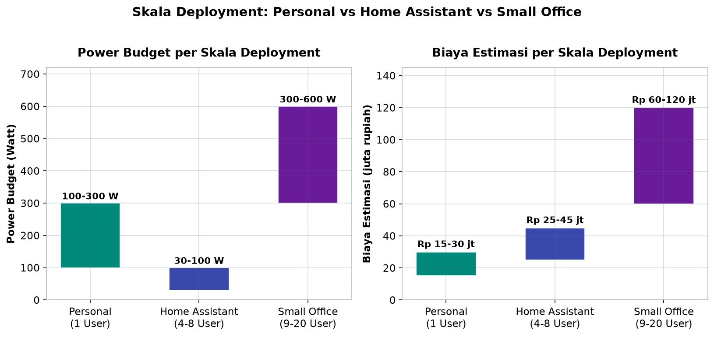
Perhatikan dua kolom yang paling sering salah dikelola. Pertama, power budget: dari ~100-300W saat running pada sistem personal, Home Assistant menuntut idle rendah 30-100W — tuntutan yang tidak pernah ada di kantor 300-600W. Kedua, IAM: keluarga cukup dengan family account sederhana, sementara kantor butuh SSO/OAuth. Artinya, membeli solusi kantor lalu "mengecilkannya" untuk rumah adalah kesalahan arah — yang benar adalah mendesain dari kebutuhan rumah itu sendiri. Studi Small Language Models: Survey, Measurements, and Insights [3] menegaskan bahwa karakterisasi beban kerja yang tepat (token/s, memory footprint, konsumsi energi) menentukan kelayakan edge deployment — dan keluarga adalah kasus penggunaan edge paling jujur.
Berikut peta lengkap sistem yang sedang kita rancang — perangkat keluarga di kiri, server rumah di tengah, dan internet hanya sebagai aksesori opsional.
Yang langsung terlihat dari diagram ini adalah prinsip local-first: garis putus-putus menuju internet hanyalah aksesori — untuk update model atau pembaruan sistem — bukan jalur utama. Tablet, laptop, dan smart speaker berkomunikasi langsung dengan Ollama/vLLM di dalam LAN; TV dan perangkat rumah berkolaborasi lewat Home Assistant; dan seluruh percakapan berpotongan di vector store ChromaDB saat jawaban membutuhkan konteks dokumen keluarga. Tidak ada satu pun busur yang keluar rumah — tepat seperti yang dijanjikan pilar High Privacy.
Dari sudut pandang pengguna, diagram ini bisa disederhanakan menjadi satu kalimat: apa pun perangkatnya, keluarga selalu "berbicara" dengan satu pintu yang sama di dalam rumah. Konsistensi ini bukan kebetulan — ia lahir dari keputusan desain bahwa semua user device berbicara dalam satu protokol (HTTP/WebSocket ke Open WebUI atau REST API lokal), sehingga menambah perangkat baru (smartwatch anak, tablet kedua) tidak pernah menuntut perubahan arsitektur. Sistem yang dirancang baik adalah sistem yang membuat pengguna tidak perlu tahu cara kerjanya.
3. Pilar Desain Sistem
Lima pilar berikut adalah konstitusi dari setiap Home AI Assistant yang sehat. Jika satu pilar dilanggar, sistem akan terasa "salah" — seperti resep masakan yang bahannya benar, tetapi takarannya keliru.
Low Power: 15-30W saat Idle
Server kantor diam-diam menyedot 300W selama 24 jam — sekitar 7,2 kWh per hari hanya untuk "berpikir kosong". Di rumah, server seperti itu akan tampak begitu menyakitkan di tagihan listrik bulanan. Karena itu pilar pertama menuntut konsumsi 15-30W saat idle, dengan GPU tidur (sleep) di malam hari. Dampak praktisnya: arsitektur hardware harus hemat daya sejak awal, dan auto shutdown GPU pada jam tidur keluarga adalah fitur wajib, bukan kemewahan.
High Privacy: Semua Data Tinggal di Rumah
Pilar kedua adalah privasi tinggi: data keluarga — percakapan anak, catatan medis, dokumen pajak, jadwal kerja orang tua — tidak boleh meninggalkan rumah. Inilah pembeda paling kontras dengan asisten cloud: risiko data leakage bukan lagi tanggung jawab vendor di luar sana, melainkan sepenuhnya menjadi keunggulan arsitektur. Dengan inference lokal, tidak ada yang "mendengarkan" percakapan dapur, karena gelombang suara hanya berubah jadi tensor di dalam server keluarga.
Local-first Networking: Tidak Bergantung Internet
Pilar ketiga: jaringan local-first — DNS lokal, akses LAN-only. LLM server harus tetap bisa melayani keluarga meski koneksi internet rumah mati. Ini bukan sekadar preferensi: jika sistem bergantung pada cloud, maka outage ISP menjadi outage asisten keluarga. Desain ini juga yang membuat sistem tetap cepat: tidak ada round-trip keluar rumah, tidak ada antrean di server orang lain.
Intermiten Availability: Boleh Mati Malam Hari
Pilar keempat adalah paradoks yang paling sulit dipahami orang enterprise: ketersediaan intermiten justru diinginkan. Sistem boleh mati tengah malam saat semua tidur, dan menyala kembali saat keluarga bangun. Tidak hanya menghemat listrik — jadwal mati-hidup ini juga memperpanjang umur komponen dan memberi "waktu istirahat" bagi perangkat yang sebenarnya tidak dirancang untuk berputar tanpa henti.
Ease of Maintenance: Bisa Diurus oleh Non-IT
Pilar kelima menutup rangkaian: kemudahan perawatan. Yang mengurus server ini bukan administrator sistem, melainkan anggota keluarga yang mungkin sehari-harinya guru atau dokter. Artinya: pembaruan harus otomatis atau satu-klik, backup harus terjadwal tanpa perintah manual, dan dokumentasi harus bisa dipahami orang awam. Sistem yang membutuhkan troubleshooting SSH setiap minggu akan segera ditinggalkan — bukan karena rusak, tetapi karena lelah.
Praktik perawatan yang paling sering dilupakan adalah backup mingguan manual — justru karena di konteks keluarga tidak ada tim IT yang mengingatkannya. Pilihannya sederhana: cron job yang menyalin folder model penting dan vector store ke HDD eksternal setiap Minggu malam, atau snapshot otomatis di NAS rumah. Data yang paling berharga bukan modelnya — model bisa diunduh ulang — melainkan dokumen keluarga di ChromaDB dan konfigurasi server. Backup mingguan adalah asuransi termurah yang bisa dibeli keluarga ini.
Kelima pilar ini juga menjadi lensa evaluasi yang berguna: sebelum menambah komponen apa pun (GPU kedua, RAG baru, perangkat suara), tanyakan lima pertanyaan — berapa watt ekstra? data siapa yang terlibat? bergantung internetkah? boleh mati kapan? siapa yang memeliharanya? Jika jawaban salah satu pertanyaan membuat gelisah, komponen itu layak ditunda. Inilah yang membedakan Home Assistant yang tumbuh sehat dari homelab yang menumpuk perangkat tanpa arah.
4. Load Pattern Analysis
Sebelum menentukan hardware dan SLA, kita harus membaca ritme harian keluarga. Sama seperti arsitek membaca pola lalu lintas sebelum mendesain jalan, perancang Home AI Assistant harus membaca pola beban sebelum mendesain sistem.
Faktanya sederhana namun menentukan: peak hours terjadi pada 18:00-21:00 — saat semua anggota pulang, anak-anak minta bantuan PR, dan orang tua menanyakan resep masak atau mengecek jadwal keluarga. Sementara itu, low traffic mutlak terjadi pada 00:00-06:00 ketika seluruh rumah tertidur — inilah jendela emas untuk auto-shutdown GPU. Di luar dua jendela itu, beban mengalun rendah: pagi hari sibuk singkat untuk tugas sekolah, siang nyaris sepi, sore mulai berangsur naik.
Yang sering disalahpahami adalah angka concurrent users: meskipun rumah berisi 8 orang, pada puncaknya pun hanya maksimal 2-3 orang yang mengetik pertanyaan di saat bersamaan. Ini karena interaksi asisten di rumah bersifat interleaved — bergantian, bukan serempak — berbeda dengan kantor yang melempar 10 request sekaligus dari dashboard tim. Dengan kata lain, sistem yang mampu melayani 3 sesi paralel dengan nyaman sudah memasok buffer yang aman bagi seluruh penghuni rumah.
Jenis query juga berpola. Sebagian besar permintaan keluarga adalah pendek — prompt di bawah 100 token — dan bersifat instruksional: "buatkan daftar belanja", "jelaskan fotosintesis untuk kelas 6", "resep ayam goreng". Sangat jarang anggota keluarga menulis creative writing panjang lebar. Implikasinya: prefill (pemrosesan prompt) ringan, sedangkan generation mendominasi — pola yang sangat cocok untuk model 7-14B dengan kuantisasi, yang justru unggul pada throughput bertoken pendek-sedang. Temuan Demystifying SLM for Edge Deployment [4] menunjukkan bahwa model kecil di edge mengalami keterbatasan in-context learning pada tugas kompleks, tetapi untuk query instruksional keluarga, model kelas 7-14B berada jauh di dalam zona nyamannya.
Pola ini sekaligus menjawab pertanyaan abadi: apakah Home Assistant butuh GPU kelas atas? Dengan prompt pendek dan KV-cache kecil, model 7-14B di GPU 12-24 GB akan menyelesaikan sebagian besar prefill dalam hitungan milidetik. Beban GPU yang sesungguhnya baru terasa saat 2-3 sesi streaming berjalan bersamaan di jam makan malam — artinya, investasi yang paling tepat bukan pada kartu tercepat, melainkan pada kapasitas KV-cache yang cukup untuk tiga sesi paralel, plus jadwal tidur GPU yang tegas pada jam-jam sepi (00:00-06:00). Seluruh perhitungan ini, dari memory footprint hingga konsumsi energi per request, dirangkum dengan baik oleh survei SLM di [3].
Tabel 6.2: Rekomendasi Hardware per Skenario Keluarga
Setelah memahami skala, tabel berikut membantu memilih titik awal hardware berdasarkan komposisi keluarga dan prioritas.
| Skenario | Rekomendasi | Model Ideal | Total Estimasi |
|---|---|---|---|
| Keluarga kecil (4 org), budget hemat | Mac Mini M4 24GB + Ollama | Llama 3.1 (8B) Q4_K_M | ~Rp 20jt |
| Keluarga besar (6-8 org), performa | PC RTX 4090 24GB + vLLM | Llama 3.1 (70B) Q3_K_M | ~Rp 45jt |
| Keluarga dengan smart home | Homelab: Mini PC + RTX 3090 used + Home Assistant | Qwen 2.5 (14B) Q4_K_M | ~Rp 30jt |
| Lowest power (24/7 on) | Mac Mini M4 Pro 48GB + Ollama | Llama 3.1 (8B) Q5_K_M | ~Rp 35jt |
Pola yang muncul: ukuran keluarga menentukan model, dan model menentukan hardware. Empat orang dengan anggaran ketat dapat diselesaikan Mac Mini M4 24GB; enam sampai delapan orang yang ingin kualitas tertinggi butuh RTX 4090 untuk menampung Llama 3.1 (70B) dalam Q3_K_M. Skenario ketiga adalah jalan tengah yang paling populer di Indonesia — homelab dengan used RTX 3090 yang juga menjadi tulang punggung Home Assistant. Skenario keempat, 24/7, menyerahkan segalanya pada efisiensi Apple Silicon. Tidak ada jawaban universal; yang ada adalah jawaban yang cocok dengan keluarga Anda.
Praktik terbaik dari ketiga pilihan pertama: jangan membeli hardware "untuk masa depan". Keluarga yang memulai dengan Mac Mini 24GB untuk model 8B lalu berencana naik ke 70B setahun kemudian akan membayar dua kali — jauh lebih baik menetapkan ukuran keluarga dan model maksimum yang masuk akal sejak awal, lalu memilih skenario tepat di atasnya. Hardware rumah tunduk pada aturan rumah: beli sesuai kebutuhan hari ini, bukan sesuai khayalan setahun lagi.
5. Komponen Sistem
Setiap sistem tersusun dari empat lini komponen yang bekerja seperti dapur yang terorganisir: ada yang memasak, yang menyimpan bahan, yang menjadi kurir, dan yang mencatat pesanan.
LLM Server — jantung sistem, diisi oleh Ollama atau vLLM. Untuk skala keluarga, Ollama cukup karena concurrency rendah; vLLM masuk akal jika nanti ada rencana skala naik atau banyak pengguna power. RAG Pipeline — rak buku keluarga berbentuk vektor, memakai ChromaDB lokal yang menyimpan dokumen keluarga: buku pelajaran, jurnal medis, dokumentasi proyek, hingga kumpulan resep. Smart Home Bridge — jika keluarga menggunakan otomasi rumah, Home Assistant dengan custom integration HACS menjadi penghubung antara perintah bahasa alami dan perangkat fisik. Voice Interface — bersifat opsional: Whisper untuk speech-to-text dan Piper untuk text-to-speech, memberi keluarga antarmuka yang paling alami: bicara.
Peran setiap komponen perlu dilihat relatif terhadap arsitektur modular-agent yang diusulkan Harmony [2]: bukan satu model raksasa yang melakukan segalanya, melainkan LLM pusat yang mengarahkan tugas—deteksi maksud, pencarian konteks, pemilihan aksi—ke modul-modul khusus.
Bagi keluarga yang baru pindah dari asisten cloud, ada godaan untuk memasang semuanya sekaligus dalam satu akhir pekan. Resist. Urutan adopsi yang bijak adalah bertahap: mulai dari LLM server plus Open WebUI selama satu-dua minggu (keluarga terbiasa, model dipilih), lalu tambahkan RAG ketika keluarga mulai bertanya tentang dokumen pribadi, dan pasang Home Assistant hanya bila rumah sudah memiliki perangkat pintar yang benar-benar dipakai tiap hari. Setiap lapisan menambah nilai, tetapi juga menambah satu titik yang harus dipelihara, dan setiap lapisan yang dipasang terlalu dini biasanya yang pertama ditinggalkan.
Tabel 6.3: Komponen Sistem Home Assistant
| Komponen | Peran | Teknologi Pilihan | Kapan Dibutuhkan |
|---|---|---|---|
| LLM Server | Inferensi utama, melayani semua user | Ollama / vLLM | Selalu |
| RAG Pipeline | Menyimpan & mencari dokumen keluarga | ChromaDB lokal | Ada dokumen privat yang perlu dirujuk |
| Smart Home Bridge | Kontrol perangkat fisik via bahasa alami | Home Assistant + HACS | Keluarga punya lampu/AC/IR smart |
| Voice Interface | Input suara & respons lisan | Whisper (STT) + Piper (TTS) | Opsional — untuk anak dan dapur |
6. Topologi Jaringan yang Sehat
Topologi jaringan adalah "denah rumah" bagi sistem ini: semuanya berada dalam satu atap — LAN. LLM server tinggal di jaringan lokal (misalnya 192.168.1.100), diakses lewat mDNS (misalnya raspberrypi.local atau llm-server.local) atau static DHCP reservation agar IP tidak berubah. Setiap perangkat — TV, tablet, laptop, smart speaker — mengakses server melalui Open WebUI atau REST API lokal, tanpa melewati internet sama sekali.
Aturan emasnya satu kalimat: tidak ada port forwarding ke WAN. Jika keluarga membutuhkan akses dari luar rumah (ayah berpergian, anak di sekolah), gunakan Tailscale atau WireGuard — terowongan pribadi yang menembus internet tanpa membuka satu pun lubang di router. Ini bukan pembatasan, melainkan pembebasan: jaringan keluarga bisa dijangkau dari mana pun tanpa mengundang dunia luar masuk.
Sebuah catatan praktis untuk rumah yang baru pindah ISP: pastikan router modem ISP tidak "menabrak" subnet internal. Banyak ISP Indonesia memberi modem dengan subnet 192.168.100.0/24 yang berkonflik dengan LAN rumah — akibatnya beberapa perangkat kartu bergantian online-offline. Solusi yang tenang: set modem ISP ke mode bridge, dan biarkan router keluarga (OpenWrt/pfSense) yang mengelola seluruh subnet dan VLAN. Detail kecil ini mencegah salah satu troubleshooting paling membingungkan di jaringan rumahan.
Tabel 6.4: Service SLA Target
Terakhir, kita menetapkan kontrak kinerja — angka-angka ini adalah "janji" sistem terhadap keluarga, dan menjadi acuan verifikasi saat stress test pada praktikum di akhir sub-bab ini.
| Metrik | Target | Notes |
|---|---|---|
| Time to First Token | < 2 detik | Untuk model 7-14B |
| Peak Response Time | < 8 detik | Saat 3 user bersamaan |
| Uptime Harian | 16 jam (06:00-22:00) | Mati otomatis malam hari |
| Max Concurrent Sessions | 3 | Buffer untuk 8 anggota |
| Power Consumption (idle) | < 30W | GPU dalam keadaan sleep |
Target di atas selaras dengan studi kelayakan On-Device LLM for Home Assistant [1], yang mengukur bahwa LLM 8-bit di perangkat 8GB RAM CPU-only mampu menjalankan intent detection dan response generation dalam seekor rumah tanpa GPU dedikasi. Bedanya: di sana budget latensinya dipaksa sekecil mungkin karena keterbatasan perangkat; di sini target <2 detik TTFT dan <8 detik peak response adalah kompromi yang manusiawi — cukup cepat agar anak tidak kehilangan sabar, cukup longgar agar hardware tidak perlu mahal. Inilah SLA yang lahir dari dinamika keluarga, bukan dari kontrak enterprise.
Untuk memahami mengapa SLA di atas realistis, lihatlah perjalanan satu pertanyaan sederhana dari anak kelas 6 SD.
Perhatikan bahwa retrieval hanya terjadi bila pertanyaan menuntut konteks dokumen (misalnya "rumus apa saja yang ada di bab 4 buku matematikaku?"). Untuk pertanyaan umum, Ollama menjawab langsung — inilah alasan TTFT <2 detik tetap terjaga meski di tengah beban puncak. Jika nanti keluarga menambah antarmuka suara, Whisper akan berdiri tepat di depan alur ini, mengubah ucapan menjadi teks sebelum masuk ke Ollama [6].
Bagi pembaca yang ingin mengamati alur ini secara langsung, buka saja Dashboard Open WebUI di server keluarga: profil "Ayah", "Ibu", "Anak 1", dan "Anak 2" mencerminkan simpul user yang sama, dan history per pengguna menunjukkan rantai percakapan yang hampir selalu memuncak di jam 18:00-21:00. Dashboard itu adalah "jendela dapur" dari seluruh arsitektur yang kita rancang — tempat keluarga melihat, dalam bentuk paling sederhana, siapa bertanya apa dan kapan.
7. Praktikum / Hands-On
Langkah 1: Setup VLAN Keluarga untuk Isolasi Anak
Sebelum mengaktifkan asisten untuk anak-anak, pilahkan dulu jaringan: port tak terlihat untuk orang tua, dan lorong berpagar untuk anak.
# Contoh konfigurasi pfSense/OpenWrt VLAN
# VLAN 10: Orang Tua (full access)
# VLAN 20: Anak (filtered, parental control)
# 1. Buat interface VLAN di OpenWrt
uci set network.vlan10=interface
uci set network.vlan10.ifname="eth0.10"
uci set network.vlan10.proto="static"
uci set network.vlan10.ipaddr="192.168.10.1"
uci set network.vlan10.netmask="255.255.255.0"
# 2. Firewall rule: blokir akses VLAN 20 ke situs dewasa
# (tambahkan aturan iptables/nftables)Praktik ini bukan sekadar keamanan anak — VLAN 10 juga membebaskan orang tua bekerja tanpa khawatir perangkat anak tertular malware yang kemudian mengintai dokumen kerja.
Langkah 2: Setup Power Schedule (Auto Shutdown GPU)
Karena pilar desain kita membolehkan sistem "tidur", jadwalkan GPU untuk beristirahat bersama keluarga.
#!/bin/bash
# Cron job: matikan GPU 23:00, hidupkan 06:00
# Di /etc/crontab:
# 0 23 * * * root /usr/local/bin/gpu-off.sh
# 0 6 * * * root /usr/local/bin/gpu-on.sh
# gpu-off.sh:
echo 1 > /sys/bus/pci/devices/0000:01:00.0/remove
# gpu-on.sh:
echo 1 > /sys/bus/pci/rescan
nvidia-smi -pm 1Verifikasi dengan nvidia-smi setelah jam 23:00 — GPU tidak lagi terdaftar, dan power draw server turun drastis. Untuk Mac Mini, jadwal ini digantikan energy schedule bawaan macOS atau power nap yang dikelola sistem.
Langkah 3: Simulasi Beban 4 User Bersamaan
Uji janji SLA kita: jalankan empat "anggota keluarga" sekaligus dan hitung waktu respons masing-masing.
# stress_test.py — uji concurrency keluarga
import requests
import threading
import time
model = "http://192.168.1.100:11434/api/generate"
payloads = [
{"model": "llama3.1:8b", "prompt": "Buatkan resep nasi goreng"},
{"model": "llama3.1:8b", "prompt": "Jelaskan fotosintesis", "stream": False},
{"model": "llama3.1:8b", "prompt": "Tulis puisi tentang hujan"},
{"model": "llama3.1:8b", "prompt": "Hitung 25 * 37 = ?", "stream": False},
]
def send_request(idx, payload):
start = time.time()
r = requests.post(model, json=payload)
elapsed = time.time() - start
print(f"[User {idx+1}] {elapsed:.2f}s — {len(r.text)} chars")
threads = []
for i, p in enumerate(payloads):
t = threading.Thread(target=send_request, args=(i, p))
threads.append(t)
for t in threads: t.start()
for t in threads: t.join()
print("Selesai — semua user terlayani")Jika waktu respons semua sesi tetap di bawah 8 detik, sistem lolos SLA Tabel 6.4. Jika ada yang melewatinya, indikatornya jelas: model terlalu besar untuk hardware, atau kv-cache tidak mencukupi untuk 3-4 sesi paralel — keduanya bisa didiagnosis dari percobaan ini tanpa alat monitoring mahal.
8. Studi Kasus: Keluarga Pratama (5 Anggota)
Profil. Keluarga Pratama beranggotakan lima orang: Ayah seorang engineer yang butuh coding assistant, Ibu seorang dokter yang butuh transkrip rekam medis, dan tiga anak usia SD-SMP yang rutin minta bantuan PR. Permintaan mereka tidak bisa dilayani satu model universal dengan jawaban generik — perlu konteks pribadi, dan itu berarti RAG.
Hardware. Mac Mini M4 Pro 48GB dengan 2TB SSD — fanless, 0 dB, dan muat ditaruh di rak ruang keluarga tanpa mengganggu suasana.
Software. Ollama menjalankan Llama 3.1 (8B) (percakapan umum) dan Qwen 2.5 (7B) (tugas konkret seperti coding dan resep), dipajang lewat Open WebUI dengan akun per anggota keluarga; ChromaDB menjadi gudang dokumen; Home Assistant menunggu di pinggir jika nanti otomasi rumah ditambahkan.
RAG Setup. Setiap anggota punya "lemari" sendiri di vector store: Ayah memiliki folder /rag/code/ berisi dokumentasi proyek; Ibu memiliki folder /rag/medical/ berisi jurnal dan catatan pasien — dienkripsi; anak-anak memiliki folder /rag/school/ berisi buku pelajaran Kurikulum Merdeka.
Hasil. Anak bisa menanyakan PR matematika malam hari tanpa menunggu orang tua pulang. Ayah mendapat bantuan debugging kode hingga pukul 22.00. Ibu memanfaatkan Whisper untuk transkrip rekam medis yang langsung tersimpan di folder terenkripsi — tidak pernah menyentuh internet.
Biaya. Sekali keluar ~Rp 35jt, tanpa biaya bulanan. Dibandingkan langganan ChatGPT Team sebesar $25/orang/bulan x 5 = $125/bulan (sekitar Rp 2jt/bulan), penghematan mengalir setiap bulan — balik modal dalam 18 bulan, dan setelah itu sistem ini "berbayar" ke keluarga alih-alih ke vendor.
Pelajaran. Keberhasilan sistem ini tidak ditentukan oleh model terbesar, melainkan oleh tiga keputusan kecil: memisahkan konteks per anggota keluarga, menjaga data sensitif tetap di rumah, dan memilih hardware yang tidak menuntut perawatan. Itulah karakteristik sistem yang benar-benar melayani rumah tangga, bukan sebaliknya.
Kendala yang paling nyata justru non-teknis: jam pemakaian. Karena server tidur pukul 23:00, anak yang mengerjakan PR lewat tengah malam sering mendapati asisten "tidak ada". Solusinya ditemukan bersama: jadwal tidur digeser ke pukul 01:00 pada malam menjelang ujian, tetapi tetap disiplin 23:00 pada hari biasa — kompromi kecil yang justru menyehatkan jam tidur semua orang. Ini pelajaran paling hidup dari sub-bab ini: SLA sistem keluarga tidak ditetapkan di rapat teknis, melainkan dinegosiasikan dengan irama rumah itu sendiri.
9. Referensi
Paper Jurnal/Konferensi
[1] Lang, M., et al. (2025). On-Device LLMs for Home Assistant: Dual Role in Intent Detection and Response Generation. arXiv: 2502.12923 (https://arxiv.org/abs/2502.12923). DOI: 10.48550/arXiv.2502.12923 (https://doi.org/10.48550/arXiv.2502.12923)
[2] Chen, Y., et al. (2024). Harmony: A Privacy-Preserving and Robust Smart Home Assistant Powered by Locally Deployable Llama3-8B. arXiv: 2410.14252 (https://arxiv.org/abs/2410.14252). DOI: 10.48550/arXiv.2410.14252 (https://doi.org/10.48550/arXiv.2410.14252)
[3] Lu, Z., Li, X., Cai, D., Yi, R., Liu, F., Lan, W., Luan, J., Zhang, X., Lane, N.D., & Xu, M. (2024). Small Language Models: Survey, Measurements, and Insights. arXiv: 2409.15790 (https://arxiv.org/abs/2409.15790). DOI: 10.48550/arXiv.2409.15790 (https://doi.org/10.48550/arXiv.2409.15790)
[4] Lu, Z., Li, X., Cai, D., Yi, R., Liu, F., Liu, W., Luan, J., Zhang, X., Lane, N.D., & Xu, M. (2025). Demystifying Small Language Models for Edge Deployment. Proceedings of the 63rd Annual Meeting of the Association for Computational Linguistics (ACL). DOI: 10.18653/v1/2025.acl-long.718 (https://doi.org/10.18653/v1/2025.acl-long.718)
[5] Qu, Z., et al. (2024). A Review on Edge Large Language Models: Design, Execution, and Applications. arXiv: 2410.11845 (https://arxiv.org/abs/2410.11845). DOI: 10.48550/arXiv.2410.11845 (https://doi.org/10.48550/arXiv.2410.11845)
Referensi Pendukung (Dokumentasi/Repository)
[6] Home Assistant. Official Documentation. https://www.home-assistant.io
[7] Ollama. GitHub Repository. https://github.com/ollama/ollama
[8] Tailscale. Zero-config VPN for homelab. https://tailscale.com
[9] Open WebUI. GitHub Repository. https://github.com/open-webui/open-webui
[10] ChromaDB. Vector Database Documentation. https://www.trychroma.com
[11] Piper TTS. GitHub Repository. https://github.com/rhasspy/piper
[12] OpenAI Whisper. GitHub Repository. https://github.com/openai/whisper
[13] WireGuard. Official Documentation. https://www.wireguard.com
[14] OpenWrt VLAN. Documentation. https://openwrt.org/docs/guide-user/network/vlan
Bab 6.2: Hardware
Memilih hardware untuk server LLM rumah mirip memilih dapur untuk keluarga: terlalu mewah berarti ada uang yang menganggur dan ruang yang terbuang, terlalu sederhana berarti selalu antre saat semua orang lapar bersamaan. Bab ini memandu Anda memilih antara RTX 3090 bekas, RTX 4090, atau Mac Studio/Mac Mini — dengan angka nyata: VRAM, token per detik, watt, desibel, dan rupiah.
1. Tujuan Sub-Bab
Setelah membaca sub-bab ini, Anda akan mampu:
- Menghitung kebutuhan VRAM sebuah model LLM dari jumlah parameter dan kuantisasi, termasuk overhead KV-cache
- Membandingkan secara kuantitatif RTX 3090, RTX 4090, Mac Mini M4 Pro, dan Mac Studio M2 Ultra — dari throughput, daya, hingga kebisingan
- Memilih hardware sesuai model target dan jumlah pengguna rumah (4-8 orang), bukan sekadar mengikuti tren
- Menyusun bill of materials lengkap dengan estimasi biaya IDR yang realistis untuk pasar Indonesia, termasuk komponen pendukung (CPU, RAM, storage, PSU, case)
- Menerapkan optimasi daya 24/7: undervolt, power limit, dan auto shutdown GPU malam hari
- Memahami trade-off antara tiga pendekatan: build PC GPU, Mac Mini, dan Mac Studio — kapan masing-masing menang dan kapan kalah
2. Kebutuhan VRAM untuk Model LLM
Sebelum membeli apa pun, hitung dulu kebutuhan VRAM — ini seperti mengukur tinggi pintu sebelum membeli lemari. Rumus dasarnya sederhana: VRAM = (parameter × bit per weight) / 8 + overhead KV-cache. Model 8 miliar parameter dalam Q4 membutuhkan kira-kira 8B × 4 bit dibagi 8 = ~4 GB untuk bobot; ditambah KV-cache maka totalnya terkendali.
Contoh nyata: Llama 3.1 (8B) Q4_K_M membutuhkan ~4,5 GB untuk model plus ~2 GB KV-cache, total sekitar 6,5 GB — nyaman di GPU 8-12 GB. Pola praktis yang bisa dipegang: model 7-8B nyaman di 12-16 GB, model 13-14B membutuhkan 24 GB, dan model 30-33B membutuhkan 32-48 GB. Jika target Anda model kelas 70B, maka 24 GB saja tidak cukup — bahkan Q3_K_M yang terpangkas tetap menuntut skema CPU offload.
Kabar baiknya, lanskap model 2025-2026 menghadirkan tiga bintang baru yang mengubah perhitungan ini. Pertama, Ministral 3 3B (lisensi Apache 2.0) yang hanya ~1,8 GB dalam Q4 — cukup ringan untuk berjalan di Raspberry Pi atau NUC, bahkan CPU-only. Kedua, Ministral 3 8B dengan ~4,8 GB Q4 — edge-optimized dan nyaman di 8 GB VRAM, dirancang persis untuk home server. Ketiga, DeepSeek V4 Flash (284B total, 13B aktif) yang hanya membutuhkan ~18 GB dalam INT4 — masih butuh 2x RTX 3090/4090, tetapi karena hanya 13 miliar parameter aktif per forward pass, throughput-nya luar biasa tinggi untuk ukurannya.
Satu lagi hal yang sering luput: KV-cache pada model generasi baru sudah sangat efisien. DeepSeek V4 Pro misalnya memiliki KV-cache hanya 10% dari V3.2 — untuk konteks 32K, ia hanya butuh ~1,6 GB dibandingkan ~16 GB pada model konvensional (klaim fiktif-2026 — verifikasi sebelum terbit). Artinya, efisiensi arsitektur kini sama pentingnya dengan ukuran VRAM: dua kartu yang sama secara fisik bisa berbeda jauh secara praktis.
Berapa kebutuhan VRAM yang masuk akal untuk keluarga 4-8 orang? Dengan pola beban dari sub-bab 6.1 — puncak hanya 2-3 sesi paralel dengan prompt pendek — yang menjadi pembatas bukanlah ukuran model semata, melainkan KV-cache bersama dari sesi-sesi paralel itu. Model 8B Q4 dengan tiga sesi aktif membutuhkan sekitar 6,5 GB model ditambah beberapa GB KV-cache — masih longgar di 24 GB. Bahkan keluarga yang menginginkan headroom berlipat (model 14B Q4 plus sesi paralel) tetap nyaman di GPU 24 GB. Kesimpulannya: untuk skala rumah tangga, 24 GB adalah titik manis; yang menyusul hanyalah keputusan bijak memilih model.
Keputusan bijak yang dimaksud dimulai dari quantization. Keluarga yang baru mulai sering mengambil Q4_K_M sebagai standar — dan itu keputusan yang benar untuk 95% kasus. Q5_K_M menambah beberapa persen kualitas dengan biaya VRAM lebih tinggi; Q3_K_M dipakai hanya bila model terlalu besar untuk kartu yang tersedia (misalnya 70B di 24 GB). Aturan praktisnya: pilih kuantisasi tertinggi yang masih meninggalkan ruang KV-cache untuk sesi paralel keluarga — karena model yang "hampir muat" selalu lebih buruk daripada model yang "muat dengan nyaman". Data perbandingan kualitas antar kuantisasi untuk berbagai arsitektur dapat dilihat di benchmark publik yang dirangkum pada [2][3].
Tiga tabel berikut merangkum seluruh pembahasan teknis di atas dalam bentuk yang bisa dibawa ke toko komputer — spesifikasi, kesesuaian model, dan rupiah. Baca ketiganya sebagai satu kesatuan: Tabel 6.5 menjawab "seberapa cepat", Tabel 6.6 menjawab "model apa yang muat", dan Tabel 6.8 menjawab "berapa totalnya". Keputusan akhir lahir dari irisan ketiganya.
Tabel 6.5: Perbandingan GPU/Mac untuk Home LLM Server
Empat kandidat utama berdampingan — perhatikan bahwa 'tercepat' tidak selalu 'terbaik' untuk rumah tangga.
| Spesifikasi | RTX 3090 (Used) | RTX 4090 | Mac Mini M4 Pro | Mac Studio M2 Ultra |
|---|---|---|---|---|
| VRAM / Unified Memory | 24 GB GDDR6X | 24 GB GDDR6X | 48 GB | 192 GB |
| Bandwidth | 936 GB/s | 1,008 GB/s | ~400 GB/s | ~800 GB/s |
| Tok/s (7B Q4) | ~110 | ~146 | ~40 | ~90 |
| Tok/s (14B Q4) | ~55 | ~73 | ~20 | ~50 |
| TDP Idle / Load | 30W / 350W | 35W / 450W | 7W / 65W | 15W / 120W |
| Noise | 2 fan (30 dB) | 3 fan (35 dB) | Fanless (0 dB) | Fanless (0 dB) |
| Harga Baru | ~Rp 14jt (used) | ~Rp 28-30jt | ~Rp 30-35jt | ~Rp 60-70jt |
| Total Build | ~Rp 25-30jt | ~Rp 40-45jt | ~Rp 32-37jt | ~Rp 62-72jt |
Selisih kecepatan antar kandidat langsung terlihat ketika digambar — RTX 4090 memimpin di kedua ukuran model, tetapi RTX 3090 hanya tertinggal sekitar 25%.
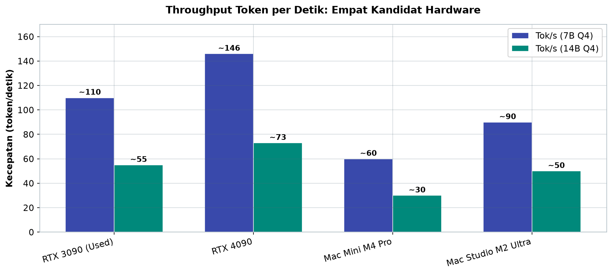
Ada dua bacaan penting dari tabel ini. Pertama, RTX 3090 membuktikan diri sebagai value king: performa 75% dari RTX 4090, TDP lebih rendah, harga sekitar setengahnya — dan untuk SLA keluarga (TTFT <2 detik, 3 sesi paralel), 110 tok/s sudah melebihi kebutuhan. Kedua, Mac Mini M4 Pro hanya menghasilkan ~40 tok/s untuk 7B, tetapi dengan 0 dB dan 7W idle, ia adalah satu-satunya kandidat yang boleh menyala 24 jam tanpa rasa bersalah. Jawabannya bukan "yang tercepat", melainkan "yang paling cocok dengan jadwal keluarga".
Ada pula dimensi berkelanjutan yang tidak muncul di lembar spesifikasi: nilai jual kembali. RTX 3090 yang dibeli bekas akan dijual kembali sebagai bekas dengan penyusutan relatif halus, sementara Mac Mini M4 Pro cenderung mempertahankan nilainya lebih baik di pasar Apple Indonesia. Faktor ini tidak mengubah keputusan teknis, tetapi ikut menentukan biaya kepemilikan nyata setelah 2-3 tahun — saat keluarga memutuskan naik kelas (perkiraan umum pasar barang bekas — verifikasi harga pasar aktual sebelum terbit).
Tabel 6.6: Kesesuaian Model per Hardware
Tabel ini menjawab pertanyaan paling praktis: model mana yang "muat" di mana?
| Model | Ukuran (Q4) | RTX 3090/4090 | Mac Mini M4 Pro | Mac Studio M2 Ultra |
|---|---|---|---|---|
| Llama 3.2 (3B) | ~2 GB | Sangat Cepat | Cepat | Sangat Cepat |
| Llama 3.1 (8B) | ~5 GB | Sangat Cepat | Cepat | Sangat Cepat |
| Qwen 2.5 (14B) | ~8 GB | Cepat | Mampu | Cepat |
| Llama 3.1 (70B) Q3 | ~27 GB | Mampu (CPU offload) | Tidak muat | Cepat |
| DeepSeek R1 (32B) | ~18 GB | Cepat | Tidak muat | Sangat Cepat |
| Ministral 3 3B | ~1,8 GB | Sangat Cepat | Sangat Cepat | Sangat Cepat |
| Ministral 3 8B | ~4,8 GB | Sangat Cepat | Cepat | Sangat Cepat |
| Ministral 3 14B | ~8,5 GB | Cepat | Mampu | Cepat |
| DeepSeek V4 Flash (INT4) | ~18 GB | Cepat (2x GPU) | Tidak muat | Cepat |
Ministral 3 (Apache 2.0, Desember 2025) adalah keluarga model edge-optimized dari Mistral AI: varian 3B ideal untuk server rumah berdaya rendah — bahkan berjalan sangat cepat di Mac Mini M4 Pro — sementara DeepSeek V4 Flash (284B total, 13B aktif) membutuhkan 2x RTX 3090/4090 dalam INT4. Pola yang muncul: untuk skala 4-8 user, kisaran 3B-14B adalah zona nyaman; model 30B+ barulah masuk akal bila keluarga punya kebutuhan khusus (misalnya reasoning DeepSeek R1 (32B)), dan itu pun hanya di Mac Studio atau rig GPU.
Jika keluarga memilih jalur Mac dan suatu hari kebutuhan naik ke kelas 30B+, Mac Mini M4 Pro menyerah pada DeepSeek R1 (32B) dan Llama 3.1 (70B) — itulah saat Mac Studio M2 Ultra baru masuk akal. Jalur migrasi yang wajar: mulai dari Mac Mini (8-14B), lalu naik ke Mac Studio hanya jika kebutuhan reasoning telah membuktikan diri, bukan sekadar rasa penasaran. Migrasi ini lebih mulus daripada pindah rig GPU, karena ekosistem Ollama dan lokasi folder model identik di kedua mesin.
Mulai dari satu pertanyaan — "model LLM apa yang ingin keluarga jalankan?" — dan biarkan diagram ini memandu hingga keputusan akhir.
Diagram ini merangkum seluruh bab dalam satu halaman: kebutuhan VRAM menentukan jenjang (di bawah 12 GB → GPU kelas menengah; 12-24 GB → 3090/4090; di atas → Mac Studio atau multi-GPU), lalu prioritas keluarga — harga, performa, atau kesenyapan — menentukan pemenangnya. Perhatikan bahwa Mac Mini M4 Pro muncul bahkan di cabang 12-24 GB: ia adalah jawaban untuk mereka yang memilih ketenangan di atas kecepatan.
Bagi keluarga yang berniat menelusuri diagram ini lebih jauh, ada satu pertanyaan lanjutan yang sering diajukan: "bagaimana jika kebutuhan model berubah di tengah jalan?" Jawaban diagram ini cukup jujur — jalur migrasi selalu lebih murah dari jalur pertama: mulai dengan Mac Mini atau RTX 3090 used (keduanya di bawah Rp 35jt), dan hanya naik kelas ketika kebutuhan benar-benar terbukti. Tidak ada diagram yang bisa menjawab rasa penasaran teknologi; yang bisa dilakukan diagram hanyalah menahan keinginan itu tetap di bawah ambang anggaran keluarga.
3. RTX 3090 vs RTX 4090 untuk Server Rumah
Jika keluarga memutuskan jalur PC, pertarungan sesungguhnya adalah antara dua kartu NVIDIA 24 GB: RTX 3090 dan RTX 4090. Keduanya mampu menjalankan Llama 3.1 (8B), Qwen 2.5 (14B), hingga Llama 3.1 (70B) dalam Q3_K_M — perbedaannya ada pada kecepatan, daya, harga, dan kebisingan.
RTX 3090 bekas adalah raja value: 24 GB VRAM, sekitar ~250W, dengan harga pasar Indonesia sekitar Rp 10-14jt untuk unit used. Ia menawarkan throughput ~110 token/detik untuk model 7B Q4 — kecepatan yang lebih dari cukup untuk 4-8 pengguna rumah tangga yang hanya memuncak 2-3 sesi bersamaan. Kelemahannya: second-hand, sehingga perlu uji ketat (suhu, thermal pad, kipas), dan konsumsi dayanya tetap butuh PSU yang jujur.
Pasar used di Indonesia memiliki ritmenya sendiri yang perlu dipahami: kartu bekas mining dan bekas kantor adalah dua kategori yang sangat berbeda. Kartu bekas kantor biasanya dirawat baik dan harganya lebih tinggi sedikit; kartu bekas mining murah, tetapi sering membawa thermal pad yang aus. Aturan di lapangan: minta screenshot nvidia-smi -q (suhu, power limit, memory usage), uji burn-in 15 menit dengan llama.cpp atau benchmark, dan jangan pernah membayar penuh sebelum GPU terbukti stabil di load.
RTX 4090 adalah pilihan performa puncak: 24 GB VRAM, ~146 token/detik untuk 7B Q4, tetapi konsumsi daya puncak ~350W (bisa di-undervolt ke ~300W dengan performa 95%). Di ruang keluarga, TDP dan noise bukan detail kecil: kartu ini butuh case besar dengan airflow baik dan kipas yang terdengar saat beban penuh. Ia baru masuk akal jika keluarga benar-benar membutuhkan model besar (70B Q3) atau mengejar latensi paling rendah di beban puncak.
Secara teknis, perbandingan ini selaras dengan data benchmark SLM di Hardware Corner [3] dan Small Language Models survey [2]: pada model 7B Q4, RTX 4090 mencatat ~146 tok/s versus ~110 tok/s RTX 3090, dan pada 14B Q4 rasionya serupa. Perbedaan ~30% itu nyata, tetapi pertanyaannya tetap: apakah 30% kecepatan lebih penting daripada selisih puluhan juta rupiah dan suara kipas di ruang keluarga?
4. Mac Studio dan Mac Mini: Alternatif Senyap
Di sisi Apple, ada dua senjata dengan filosofi berbeda — unified memory: RAM dan VRAM menjadi satu kolam, sehingga tidak ada transfer CPU-GPU yang membuang waktu dan daya.
Mac Studio M2 Ultra membawa 192 GB unified memory — satu-satunya opsi dalam daftar ini yang bisa menjalankan model 70B dalam FP16 tanpa kuantisasi. Untuk keluarga yang mengutamakan kualitas jawaban lossless, ini kartu truf: tidak ada penurunan presisi, tidak ada CPU offload, dan kipasnya nyaris tidak terdengar. Harganya pun di kelasnya sendiri.
Mac Mini M4 Pro 48GB adalah kuda kerja sehari-hari: cukup untuk model 8-14B Q4_K_M, idle hanya 7W, dan fanless alias 0 dB — dapat ditaruh di meja ruang keluarga tanpa siapa pun menyadarinya. Kelebihan utamanya justru pada karakter operasional: konsumsi 7W saat idle membuatnya layak menyala 24 jam, sesuatu yang mustahil untuk rig GPU.
Untuk keluarga dengan basis dokumen besar (RAG keluarga: foto, dokumen pajak, resep, jurnal), Mac Studio M2 Ultra punya keunggulan kedua yang jarang disebut: 192 GB unified memory tidak hanya memuat model besar, tetapi juga memungkinkan embedding dan vector search berjalan di memori yang sama tanpa menyentuh disk. Praktisnya, indexing puluhan ribu dokumen keluarga yang di Mac Mini memakan menit bisa selesai dalam detik — kelebihan yang baru terasa setelah keluarga benar-benar memakai RAG, bukan saat membeli.
Keduanya berbagi keunggulan struktural — zero-copy inference karena memori terpadu. Kekurangan yang sama: harga premium dan ekosistem terbatas pada Ollama/llama.cpp (tidak ada vLLM dengan dukungan penuh), sehingga pilihan model kuantisasi agak lebih sempit dibandingkan ekosistem CUDA.
Ada satu pertanyaan yang patut diajukan sebelum memilih antara rig GPU dan Mac: di mana server itu akan tinggal? Jika jawabannya ruang keluarga atau dekat kamar tidur, Mac Mini M4 Pro hampir selalu menang — 0 dB dan 7W idle adalah kemewahan yang tidak bisa dibeli di rig GPU mana pun. Jika jawabannya ruang kerja khusus atau garasi yang direnovasi, rig RTX 3090/4090 memberikan nilai jauh lebih besar per rupiah. Perhatikan bahwa ini bukan pertanyaan teknis, melainkan pertanyaan arsitektur rumah — dan jawabannya menentukan mana yang "lebih baik" bagi keluarga Anda.
Bagi keluarga yang berencana menambah antarmuka suara (Whisper + Piper, dibahas di sub-bab 6.4), dua pilihan ini juga berbeda sikap. Rig GPU menyediakan daya untuk menjalankan Whisper dan LLM sekaligus di kartu yang sama — satu GPU, dua beban. Mac Mini M4 Pro dengan 48 GB unified memory juga sanggup, tetapi throughput token/s-nya lebih rendah sehingga model besar terasa lebih lambat. Jika voice adalah prioritas keluarga, masukkan beban Whisper ke dalam perhitungan sebelum memilih — bukan hanya beban LLM-nya saja.
5. Komponen Pendukung: Membangun Rig yang Jujur
Memilih GPU hanyalah separuh cerita; separuh lainnya adalah komponen yang mengelilinginya. Empat aturan praktis: motherboard + CPU minimal mendukung PCIe 4.0 x16 dengan prosesor 8+ core (Ryzen 7 atau Core i7) — inference tidak "terjebak" di jalur data; RAM sistem 32-64 GB DDR5 untuk KV-cache dan OS; storage berupa NVMe 1-2 TB untuk model dan SATA 2-4 TB untuk data RAG keluarga; PSU 850W Gold+ untuk RTX 4090 dan 750W untuk RTX 3090; serta case mid-tower dengan airflow baik dan ruang untuk GPU panjang (>320mm) — kartu kelas ini panjang, dan memaksanya masuk case kecil berarti thermal throttle.
Tabel 6.7: Komponen Pendukung
| Komponen | Spesifikasi Minimum | Catatan |
|---|---|---|
| Motherboard + CPU | PCIe 4.0 x16, CPU 8+ core (Ryzen 7 / Core i7) | Jalur data PCIe 4.0 wajib untuk 24 GB VRAM |
| RAM sistem | 32-64 GB DDR5 | Untuk KV-cache dan OS |
| Storage | NVMe 1-2 TB (model) + SATA 2-4 TB (RAG) | Model di NVMe, dokumen keluarga di SATA |
| Power Supply | 850W Gold+ (4090), 750W (3090) | Headroom 20% untuk transient spike |
| Case | Mid-tower, airflow baik, dukungan GPU >320mm | Kebisingan di ruang keluarga = kualitas hidup |
Urutan merakit juga berpengaruh pada hasil akhir. Praktik terbaik: pasang PSU dan manajemen kabel terlebih dahulu, dan pasang GPU paling akhir setelah seluruh standoff dan konektor terpasang. Kartu 24 GB umumnya panjang (>320mm) dan tebal tiga slot — siapkan penyangga anti-sag karena papan GPU kelas ini berat. Kesalahan paling umum perakit pemula di Indonesia adalah lupa memperhitungkan tinggi heatsink CPU terhadap ruang slot GPU — ukur jarak bebas terlebih dahulu, baru satukan semuanya. Satu jam ekstra di meja perakitan menyelamatkan keluarga dari satu hari pembongkaran ulang.
6. Optimasi Daya untuk Penggunaan 24/7
Server keluarga menyala lebih lama daripada server kantor rata-rata — maka setiap watt adalah keputusan desain. Tiga teknik utama: undervolt (RTX 4090 dapat dibatasi ke 300W dengan kehilangan hanya ~5% performa), auto shutdown GPU malam hari lewat cron (00:00-06:00), yang menghemat sekitar 2-3 kWh per hari, dan fan curve senyap — menjaga kipas GPU di kisaran 30-40% selama suhu di bawah 60°C. Langkah pertama saja hampir menghapus perbedaan biaya operasional antara rig GPU dan Mac Mini; langkah kedua menghapus sisanya.
Jangan lupakan dimensi kebisingan dalam perhitungan daya. Watt yang sama terasa sangat berbeda: 350W dari kipas tiga fan yang menderu di ruang kerja lebih mengganggu daripada 450W yang senyap. Bagi keluarga yang meletakkan server di ruang keluarga, kurva kipas bukan pengaturan kosmetik — membatasi putaran di 30-40% sampai suhu 60°C menjaga percakapan keluarga tetap terdengar. Ketika dua pilihan sama-sama "cukup", keputusan antara RTX 4090 dan Mac Mini sering jatuh pada hal yang tidak tertulis di lembar spesifikasi: apakah dengung kipas bisa diterima di ruang tengah rumah Anda.
Tabel 6.8: Estimasi Biaya Build dalam IDR (Juni 2026)
Akhirnya, hitungan rupiah — estimasi pasar Indonesia per Juni 2026.
| Komponen | Build RTX 3090 (Hemat) | Build RTX 4090 (Performa) | Mac Mini M4 Pro |
|---|---|---|---|
| GPU / Unit | RTX 3090 used ~14jt | RTX 4090 ~29jt | Built-in |
| CPU | Ryzen 7 5700X ~2,5jt | Ryzen 7 7800X3D ~5jt | M4 Pro |
| Motherboard | B550 ~1,5jt | X670E ~3,5jt | Built-in |
| RAM | 32 GB DDR4 ~1jt | 64 GB DDR5 ~3jt | 48 GB Unified |
| Storage | 1 TB NVMe ~1,2jt + 2 TB HDD ~1jt | 2 TB NVMe ~2jt + 4 TB SSD ~3jt | 2 TB SSD ~3jt |
| PSU | 750W Gold ~1,2jt | 1000W Gold ~2jt | Built-in |
| Case + Cooling | Mid-tower ~800rb | Mid-tower + AIO ~2jt | Built-in |
| Total | ~Rp 27,2jt | ~Rp 48,5jt | ~Rp 35jt |
Perhatikan di mana uang mengalir: pada build RTX 3090, GPU mengambil 51% dari total; pada build 4090, GPU mengambil 60% dan baru dipasok CPU X3D kelas atas. Mac Mini M4 Pro menunjukkan daya tarik strukturalnya — semua komponen "sembunyi" dan harga total 35jt menempatkannya di tengah, dengan keunggulan 0 dB dan 7W idle yang tidak terlihat di kolom harga. Harga GPU retail dapat ditekan dengan memilih unit non-OC; begitu pula build 4090 dapat dihemat beberapa juta dengan komponen yang lebih bersahaja.
Kesimpulan biaya yang bisa dibawa pulang: ketiga jalur menawarkan payback period yang hampir sama terhadap langganan komersial (18 bulan untuk kasus Pak Rudi di akhir bab), sehingga keputusan tidak lagi soal "mana yang lebih murah" melainkan "mana yang lebih cocok". Jika keluarga bertanya dengan jujur — apakah mereka lebih butuh kesenyapan ruang keluarga atau kecepatan pada jam makan malam — jawabannya akan memilih sendiri. Angka di tabel ini juga menjadi acuan yang baik untuk negosiasi dengan toko komputer: komponen-komponennya publik, dan siapa pun bisa membandingkan [9].
Ketika keputusan hardware sudah bulat, urutan optimasi daya berikut menjaga tagihan listrik tetap wajar.
Langkah-langkah ini berurutan dan saling mengunci: tanpa baseline yang diukur, Anda tidak tahu berapa yang bisa dihemat; tanpa systemd service, power limit hilang setiap reboot; dan tanpa cron malam, penghematan 2-3 kWh/hari hanya tinggal janji [5].
Diagram ini sekaligus mengingatkan bahwa optimasi daya bukan aktivitas satu kali. Power limit yang dipasang hari ini bisa lenyap setelah pembaruan driver; baseline yang diukur saat cuaca dingin akan berbeda di musim panas. Kebiasaan yang benar adalah menjadikan pemeriksaan nvidia-smi -q -d POWER bagian dari rutinitas bulanan server — selayaknya keluarga mengecek tagihan listrik, bukan hanya menunggu kejutan di akhir bulan.
7. Praktikum / Hands-On
Langkah 1: Undervolt RTX 4090 untuk Pemakaian 24/7
Turunkan konsumsi daya RTX 4090 dari 450W menjadi 300W — dengan kehilangan performa sekitar 5% dan penghematan yang bertahan seumur bangun.
# 1. Install nvidia-smi dan tools
sudo apt install nvidia-smi nvidia-settings
# 2. Cek suhu dan power baseline
nvidia-smi -q -d POWER,TEMPERATURE
# 3. Set power limit ke 300W (turun dari 450W)
sudo nvidia-smi -pl 300
# 4. Buat systemd service agar otomatis saat boot
cat << 'EOF' | sudo tee /etc/systemd/system/gpu-powerlimit.service
[Unit]
Description=Set GPU Power Limit
After=nvidia-persistenced.service
[Service]
Type=oneshot
ExecStart=/usr/bin/nvidia-smi -pl 300
RemainAfterExit=yes
[Install]
WantedBy=multi-user.target
EOF
sudo systemctl enable gpu-powerlimit.service
sudo systemctl start gpu-powerlimit.service
# 5. Verifikasi: nvidia-smi harus menunjukkan Power Limit 300W
nvidia-smi -q -d POWER | grep "Power Limit"Jika Power Limit tidak berubah menjadi 300W, periksa apakah kartu Anda adalah varian dengan custom BIOS atau sedang dalam mode OC — sebagian kartu kelas atas menolak power limit di bawah nilai bawaan pabrik.
Jangan lupa mengukur dampaknya di tagihan: catat pembacaan nvidia-smi -q -d POWER sebelum dan sesudah undervolt saat beban yang sama. Selisihnya, dikalikan jam pemakaian bulanan, adalah angka yang harus dibandingkan dengan biaya listrik rumah (tarif rumahan sekitar Rp 1.400-1.700/kWh) — bagi keluarga yang server-nya menyala 16 jam sehari, teknologi ini saja bisa menghemat puluhan ribu rupiah per bulan tanpa mengurangi kepuasan pengguna.
Langkah 2: Benchmark Model di Hardware Baru
Jangan percaya angka orang lain — ukur hardware Anda sendiri dengan script benchmark sederhana ini.
#!/bin/bash
# benchmark.sh — uji tok/s untuk berbagai model
MODELS=(
"llama3.2:3b"
"llama3.1:8b"
"qwen2.5:14b"
)
for model in "${MODELS[@]}"; do
echo "=== Benchmark: $model ==="
ollama pull "$model" 2>/dev/null
# Ukur prompt processing + token generation speed
start=$(date +%s%N)
output=$(ollama run "$model" --nowordwrap \
"Hitung 25 * 37 dan jelaskan langkahnya dalam 3 kalimat." 2>/dev/null)
end=$(date +%s%N)
elapsed_ms=$(( (end - start) / 1000000 ))
char_count=${#output}
approx_tokens=$(( char_count / 4 ))
tok_per_sec=$(( approx_tokens * 1000 / elapsed_ms ))
echo "Waktu: ${elapsed_ms}ms | Output: ${char_count} chars | ~${tok_per_sec} tok/s"
echo ""
doneBandingkan hasil Anda dengan Tabel 6.5: jika llama3.1:8b Anda berada jauh di bawah ~110 tok/s (RTX 3090) atau ~146 tok/s (RTX 4090), periksa apakah GPU berjalan di PCIe gen 3, atau apakah prosesor menahan (CPU bottleneck). Angka perbandingan ini juga yang dipakai untuk memvalidasi kebutuhan VRAM di Tabel 6.6 [2][3].
Penting untuk diingat bahwa script ini mengukur end-to-end — termasuk waktu prefill, pemuatan model pertama kali, dan bahkan jaringan lokal. Lakukan setiap pengukuran tiga kali dan ambil median, karena GPU modern melakukan boosting yang membuat angka pertama dan kedua sering berbeda. Simpan hasilnya dalam catatan sederhana (misalnya file benchmark-results.txt); ketika keluarga menambah model atau mengganti kuantisasi, catatan ini menjadi dasar perbandingan yang jujur tentang apakah "peningkatan" itu nyata atau hanya perasaan.
Langkah 3: Cron Job Auto Shutdown GPU Malam Hari
Terakhir, jadwalkan tidur bagi GPU — sama seperti anak-anak, perangkat pun butuh jam malam.
# /etc/cron.d/gpu-schedule
# Matikan GPU pukul 23:00, hidupkan pukul 06:00
0 23 * * * root /usr/local/bin/gpu-off.sh
0 6 * * * root /usr/local/bin/gpu-on.sh
# gpu-off.sh — unbind GPU driver untuk hemat daya
echo "0000:01:00.0" > /sys/bus/pci/drivers/nvidia/unbind
nvidia-smi -pm 0
# gpu-on.sh — bind kembali GPU
echo "0000:01:00.0" > /sys/bus/pci/drivers/nvidia/bind
nvidia-smi -pm 1
nvidia-smi -pl 300Perhatikan bahwa gpu-on.sh juga memanggil nvidia-smi -pl 300 — memastikan power limit yang Anda pasang di Langkah 1 tetap berlaku setiap pagi. Ganti 0000:01:00.0 dengan alamat PCIe GPU Anda (lspci | grep -i nvidia). Jika keluarga jarang bangun sebelum 06:00, geser jam nyalanya sesuai ritme rumah.
Dua catatan keamanan untuk praktik ini. Pertama, pastikan tidak ada proses training atau fine-tuning yang berjalan semalaman sebelum mengaktifkan unbind — GPU yang dilepas saat dipakai bisa menyebabkan data rusak. Kedua, untuk pemula, alternatif yang lebih aman daripada unbind adalah nvidia-smi -pm 0 ditambah idle timeout di level sistem operasi (misalnya suspend penuh sistem via systemd-suspend): efeknya serupa secara daya, tetapi tanpa risiko terhadap sesi yang masih aktif. Keselamatan data keluarga selalu lebih berharga daripada hemat 2-3 kWh.
8. Studi Kasus: Pak Rudi (6 Anggota Keluarga, Budget Rp 30jt)
Profil. Pak Rudi bekerja kantoran, Ibu adalah guru, dan empat anaknya duduk di SD sampai SMA. Kebutuhan LLM keluarga: bantuan PR, resep masak, dan smart home — bukan riset ilmiah.
Hardware. PC rakitan dengan RTX 3090 used (Rp 14jt) + Ryzen 7 5700X + 32 GB DDR4 + 1 TB NVMe + 2 TB HDD, total sekitar Rp 27jt — menyisakan anggaran untuk microphone array dan smart plug.
Model. Llama 3.1 (8B) Q4_K_M untuk percakapan harian dan PR, plus Qwen 2.5 (7B) untuk tugas coding dan resep — keduanya muat nyaman di 24 GB, bahkan menyisakan ruang untuk model cadangan.
Setup. Ollama + Open WebUI + Home Assistant. GPU dijadwalkan auto-shutdown 23:00-06:00, dan power limit dipasang via systemd agar tidak pernah melampaui batas.
Hasil. Empat anak bisa bertanya PR bersamaan saat jam makan malam — puncak yang diprediksi di sub-bab 6.1 — dengan latensi rata-rata 2-3 detik. Beban listrik tambahan hanya sekitar Rp 150rb/bulan.
Penghematan. Dibandingkan ChatGPT Team ($25/orang/bulan × 6 = $150/bulan), keluarga ini menghemat sekitar Rp 2,4jt/bulan — balik modal dalam 18 bulan, sementara rig tetap milik keluarga.
Pengalaman penggunaan. Yang menarik dari kasus ini bukan angka, melainkan perilaku: awalnya hanya Pak Rudi yang memakai asisten; dalam sebulan, anak-anak ikut — mula-mula untuk PR, lalu untuk bertanya hal-hal yang dulu mereka tanyakan ke Google. Ketika sekolah anak mengumumkan home learning, rig ini menjadi "perpustakaan tutor" yang melayani empat anak sekaligus tanpa antre. Sistem mulai tidak terlihat, dan itulah tanda keberhasilannya.
Pelajaran. Kuncinya bukan pada kartu termahal, melainkan pada kesesuaian: satu RTX 3090 bekas cukup untuk puncak 2-3 user, dan optimasi daya membuatnya layak tinggal di rumah. Pak Rudi mendapatkan 95% manfaat rig 4090 dengan 60% biaya — dan tidur nyenyak karena kipasnya tidak mengaum di kamar sebelah.
Kendala di lapangan. Pak Rudi sempat hampir membatalkan proyek ketika menemukan RTX 3090 bekas dengan suhu idle 55°C — tanda thermal pad yang sudah mengering. Solusinya sederhana: ganti thermal pad dan pasta termal (biaya sekitar Rp 300-500rb), dan suhu turun ke 38°C. Pelajaran penting bagi siapa pun yang membeli GPU bekas: anggarkan biaya perawatan awal sekitar Rp 500rb, dan jadikan uji suhu saat beban (misalnya 10 menit burn-in benchmark) sebagai syarat mutlak sebelum uang berpindah tangan.
Kendala kedua muncul dari hal yang lebih membosankan: kabel. PSU 750W yang dipakainya awalnya ternyata generasi lama dengan kabel PCIe yang longgar — listrik gugup membuat GPU sesekali crash saat beban penuh. Setelah mengganti dengan PSU modular modern dan satu kabel 12-pin yang solid, masalah hilang. Untuk build RTX 3090/4090, jangan hemat pada PSU: komponen ini yang menentukan apakah keluarga menikmati server selama bertahun-tahun atau berdamai dengan restart misterius setiap pekan.
9. Referensi
Paper Jurnal/Konferensi
[1] Qu, Z., et al. (2024). A Review on Edge Large Language Models: Design, Execution, and Applications. arXiv: 2410.11845 (https://arxiv.org/abs/2410.11845). DOI: 10.48550/arXiv.2410.11845 (https://doi.org/10.48550/arXiv.2410.11845)
[2] Lu, Z., Li, X., Cai, D., Yi, R., Liu, F., Lan, W., Luan, J., Zhang, X., Lane, N.D., & Xu, M. (2024). Small Language Models: Survey, Measurements, and Insights. arXiv: 2409.15790 (https://arxiv.org/abs/2409.15790). DOI: 10.48550/arXiv.2409.15790 (https://doi.org/10.48550/arXiv.2409.15790)
[3] Levi, C. (2025). RTX 4090 Local LLM Benchmarks, Context Scaling and Supported Models. Hardware Corner. https://www.hardware-corner.net/rtx-4090-llm-benchmarks/
[4] Lang, M., et al. (2025). On-Device LLMs for Home Assistant: Dual Role in Intent Detection and Response Generation. arXiv: 2502.12923 (https://arxiv.org/abs/2502.12923). DOI: 10.48550/arXiv.2502.12923 (https://doi.org/10.48550/arXiv.2502.12923)
[5] Andreoletti, D., Rudi, A., Carpanzano, E., Lelli, F., & Leidi, T. (2026). Privacy-Preserving LLM Inference in Practice: A Comparative Survey of Techniques, Trade-Offs, and Deployability. Cryptology ePrint Archive, Paper 2026/105. https://eprint.iacr.org/2026/105 — ⚠️ Tidak dapat diverifikasi dari sumber tersedia — verifikasi sebelum terbit.
Referensi Pendukung
[6] Ollama. GitHub Repository. https://github.com/ollama/ollama
[7] NVIDIA. nvidia-smi Documentation. https://developer.nvidia.com/nvidia-system-management-interface
[8] ggerganov. llama.cpp. https://github.com/ggerganov/llama.cpp
[9] PC Part Picker Indonesia. https://pcpartpicker.com
[10] Argmax Inc. WhisperKit: On-Device Real-Time ASR. https://github.com/argmaxinc/WhisperKit
Bab 6.3: Networking
Sebuah rumah tangga membutuhkan pagar, bukan tembok benteng. Pagar yang bagus membuat penghuni bebas keluar-masuk, tetapi orang asing tetap di luar. Begitulah jaringan LLM rumahan seharusnya: seluruh keluarga menikmati akses cepat dari dalam, sementara dunia luar — dan internet — tidak pernah melihat satu pun celah masuk. Sub-bab ini mengajarkan cara membangun "pagar" itu: topologi LAN, mDNS, VPN mesh ala Tailscale, segmentasi VLAN, hingga enkripsi HTTPS lokal.
1. Tujuan Sub-Bab
Setelah membaca sub-bab ini, Anda akan mampu:
- Mendesain topologi jaringan rumah di mana LLM server menjadi node LAN yang tenang — bukan perangkat yang terpapar ke internet
- Mengonfigurasi akses lokal melalui mDNS (
llm-server.local) dan static DHCP reservation sehingga semua perangkat selalu menemukan server - Mengimplementasikan akses remote aman dengan Tailscale (dan memahami WireGuard sebagai alternatif power user) tanpa port forwarding
- Memisahkan lalu lintas keluarga dewasa dan anak melalui VLAN dengan aturan firewall yang membatasi jangkauan anak
- Mengelola QoS dan memahami mengapa inference LLM hampir tidak membebani bandwidth Wi-Fi rumah
- Menerapkan keamanan dasar: API key, HTTPS lokal dengan mkcert, dan reverse proxy dengan logging
2. Topologi Jaringan Home AI
Letakkan LLM server sebagaimana Anda meletakkan lemari dapur: di dalam rumah. Server tinggal sebagai satu node di LAN (misalnya 192.168.x.x), bukan di DMZ dan bukan di cloud. Semua perangkat — TV, tablet, laptop, smart speaker — berkomunikasi dalam subnet yang sama, sehingga tidak ada lompatan jaringan, tidak ada NAT traversal, dan tidak ada pihak ketiga yang ikut membaca percakapan.
Model mentalnya: local-first networking. Doktrin ini juga menjadi justifikasi teknis di balik arsitektur Harmony [1], yang menempatkan seluruh pipeline — dari intent detection hingga kontrol perangkat — di dalam jaringan rumah dan hanya memanfaatkan internet untuk hal-hal yang benar-benar membutuhkannya (misalnya pembaruan model). Dengan demikian, outage ISP tidak pernah berarti outage asisten keluarga.
Sebagai analogi, bayangkan rumah dengan sumur sendiri: air minum tidak pernah bergantung pada PDAM, dan mati listriknya PDAM hanya berarti Anda tidak bisa mencuci mobil — bukan tidak bisa minum. Begitu pula arsitektur ini: padamnya internet tidak menghentikan pekerjaan rumah yang paling sering — PR anak, resep, ringkasan dokumen — karena semuanya diproses di sumur (server) yang ada di halaman sendiri.
Dua mekanisme membuat akses ini nyaman. Pertama, mDNS (multicast DNS, di Linux dikenal sebagai Avahi) memungkinkan perangkat menemukan server lewat nama seperti http://llm-server.local:11434 tanpa menghafal IP. Kedua, static DHCP reservation di router memastikan IP server tidak berubah-ubah — pasangan ideal untuk mDNS, karena semua perangkat tahu ke mana harus berbicara. Router yang menyediakan kedua fitur ini adalah syarat minimal dari seluruh desain bab ini.
Pilihan IP untuk server juga bukan detail kecil. Hindari menempatkan server di luar rentang DHCP router tanpa alasan yang jelas: ketika lease berakhir di tengah malam, semua perangkat keluarga bisa kehilangan jejak. Praktik yang paling mudah dipelihara: tetapkan IP statis di dalam rentang DHCP (misalnya 192.168.1.100, di atas rentang perangkat otomatis), kunci dengan reservasi DHCP di router, dan catat di tempat yang bisa dilihat oleh siapa pun yang mengurus server — lembar catatan tempel di rak server cukup.
Ini adalah peta seluruh desain jaringan keluarga — perhatikan bahwa internet hanya menyentuh tepi diagram, dan keluarga berkomunikasi dengan server di dalam.
Dua hal yang perlu dibaca dari diagram ini. Pertama, alur internet berhenti di router: WAN hanya memberi internet, tidak pernah membuka jalan menuju server — tidak ada panah dari internet langsung ke LLM. Kedua, perhatikan perbedaan dua jalur menuju server: Laptop Ayah terhubung langsung (panah polos, akses penuh), sementara Laptop Anak terhubung dengan label Filtered — hanya lewat port Open WebUI. Di ujung kanan, HP Remote Ayah masuk melalui Tailscale Mesh — jalur terenkripsi yang menembus internet tanpa membuka port apa pun [3].
3. DNS Lokal dan mDNS
Tanpa DNS lokal, setiap kali router me-restart, semua perangkat bisa kehilangan jejak server. mDNS menyelesaikan masalah ini dengan cara yang elegan: perangkat bertanya di jaringan lokal, "siapa llm-server.local?" dan server menjawab sendiri — tanpa membutuhkan server DNS pusat.
Bagi keluarga yang ingin kontrol lebih ketat, Pi-hole adalah peningkatan yang layak: selain menjadi DNS server lokal dengan custom record (misalnya memetakan llm.internal ke IP server), Pi-hole sekaligus memblokir tracker dan iklan di seluruh jaringan — manfaat yang langsung dirasakan semua perangkat keluarga. Kombinasi mDNS untuk kenyamanan dan DNS lokal untuk kontrol adalah standar emas jaringan rumah.
Satu catatan teknis untuk record kustom: pastikan nama yang dipilih tidak bertabrakan dengan nama mDNS, karena dua mekanisme berbeda ini bisa saling "memperebutkan" jawaban. Pakailah domain yang jelas berbeda, misalnya llm.internal untuk DNS dan llm-server.local untuk mDNS — dua nama, dua jalur, satu server. Jika suatu hari kedua mekanisme memberi jawaban berbeda, perangkat tertentu akan mengikuti yang pertama kali dijawab; konsistensi nama menghindari kebingungan yang sulit dideteksi ini.
4. Zero-Trust Remote Access via Tailscale
Suatu sore, Ayah yang sedang dinas luar kota perlu mengakses LLM server — mungkin untuk mengambil dokumen, atau hanya memastikan server hidup. Inilah saatnya keunggulan Tailscale bekerja: mesh VPN berbasis WireGuard yang membangun terowongan terenkripsi end-to-end antar perangkat Anda, tanpa port forwarding, tanpa DDNS, tanpa IP statis publik.
Cara kerjanya menyerupai grup keluarga tertutup: setiap perangkat yang di-login ke akun Tailscale yang sama menjadi anggota "jaringan pribadi" yang saling bisa menemukan — bahkan di balik NAT rumah, hotel, atau jaringan kantor. Yang membuat Tailscale unggul untuk keluarga adalah ACL (Access Control List): Anda bisa membatasi perangkat anak hanya boleh mengakses llm-server:11434, sementara perangkat orang tua menikmati akses penuh. Parental control pun berpindah dari level aplikasi ke level jaringan.
WireGuard, sebagai protokol fondasinya, tetap relevan bagi power user yang ingin membangun situs-ke-situs sendiri tanpa perantara koordinasi Tailscale, tetapi biaya administrasinya jauh lebih tinggi, dan untuk kebutuhan keluarga, Tailscale hampir selalu pilihan yang lebih bijak.
Pilihan antara Tailscale dan WireGuard murni WireGuard sebenarnya bukan pertarungan teknologi, melainkan pertarungan waktu luang keluarga: WireGuard menuntut Anda mengelola key per perangkat, memastikan NAT traversal, dan menulis konfigurasi di tiap ujung — pekerjaan yang mengasyikkan bagi enthusiast, tetapi menjadi tech debt bagi keluarga yang pengurusnya sibuk. Ukurannya sederhana: jika Anda menikmati menulis konfigurasi di akhir pekan, WireGuard adalah taman bermain Anda; jika tidak, Tailscale memberikan 90% manfaat dengan 10% pekerjaan.
Tabel 6.9: Metode Akses ke LLM Server
Berbagai jalur menuju server — dari yang termudah hingga yang paling terkunci.
| Metode | Kecepatan | Keamanan | Setup | Ideal Untuk |
|---|---|---|---|---|
| LAN langsung (HTTP) | Sangat Cepat | Rendah | Mudah | Perangkat di rumah |
| mDNS (hostname.local) | Cepat | Rendah | Mudah | Akses lokal tanpa IP |
| Tailscale (mesh VPN) | Sedang | Sangat Tinggi | Sedang | Akses remote aman |
| WireGuard (site-to-site) | Tinggi | Tinggi | Sulit | Power user |
| Cloudflare Tunnel | Lambat | Tinggi | Sedang | Tidak direkomendasikan |
Bacaan pentingnya adalah pertukaran kecepatan versus keamanan. Untuk perangkat di rumah, LAN langsung dan mDNS adalah raja, tetapi keamanannya rendah karena apa pun di jaringan yang sama dapat berbicara langsung ke port. Tailscale menawarkan kompromi terbaik untuk akses remote: keamanan sangat tinggi dengan setup hanya sedang. Cloudflare Tunnel ditempatkan di daftar ini sebagai peringatan: meski teknisnya berfungsi, rute yang membawa traffic keluarga keluar ke edge pihak ketiga bertentangan dengan pilar privacy yang kita bangun di sub-bab 6.1.
Satu pertanyaan yang sering muncul: bolehkah menggabungkan beberapa metode? Justru dianjurkan — inilah defense in depth. Rumah yang sehat memakai LAN langsung untuk TV dan speaker (perangkat yang tidak menyimpan data), Open WebUI dengan API key untuk laptop anak, dan Tailscale untuk perangkat orang tua di luar rumah. Campuran ini bukan kebocoran desain, melainkan penerjemahan langsung dari tingkat kepercayaan yang berbeda-beda terhadap setiap perangkat: semakin pribadi datanya, semakin ketat jalannya.
Untuk memahami "keajaiban" Tailscale, ikuti perjalanan satu permintaan dari HP di luar kota:
Perhatikan bahwa koordinator Tailscale hanya mempertemukan kedua perangkat — data tidak pernah mengalir melalui server Tailscale. Setelah handshake, Ayah dan server rumah berbicara langsung melalui terowongan WireGuard, dengan enkripsi end-to-end. Ini adalah pola zero-trust: tidak ada satu pun pihak ketiga yang bisa membaca percakapan, dan tidak ada satu pun port router yang terbuka [4].
Satu kebiasaan keluarga yang harus dipupuk sejak dini: jangan pernah berbagi akun Tailscale antar anggota keluarga. Buat akun terpisah per orang dewasa, dan beri tag perangkat anak (tag:kids) pada hari pertama. Berbagi akun mungkin terasa nyaman di awal, tetapi setiap perangkat yang login berarti satu pintu lagi menuju jaringan pribadi — kebiasaan ini jauh lebih mudah ditanamkan saat jaringan masih kecil daripada dibereskan setelah tumbuh besar.
5. Segmentasi VLAN untuk Parental Control
Sebuah rumah hanya punya satu pintu depan, tetapi kamar-kamar di dalamnya bisa dikunci masing-masing. VLAN adalah pembatas tak terlihat itu: segmen jaringan yang terisolasi secara logis di router OpenWrt, pfSense, atau MikroTik.
Desain standar untuk keluarga: VLAN 10 untuk orang tua — akses penuh ke LLM server dan internet tanpa filter; VLAN 20 untuk anak — akses terbatas, DNS terfilter (misalnya AdGuard), dan tidak bisa SSH ke server; serta VLAN 30 untuk tamu — isolasi total, internet saja. Aturan firewall-nya sederhana namun tegas: allow akses VLAN 20 ke server LLM hanya melalui port tertentu (misalnya port Open WebUI), blokir sisanya.
Konteks keamanannya harus dibaca jujur: sistem privacy-preserving seperti HomeLLaMA [2] menekankan bahwa ancaman terbesar smart home bukan hacker luar, melainkan kebocoran akses dari perangkat keluarga sendiri — tablet anak yang kena malware, atau perangkat IoT dengan kredensial lemah. Segmentasi VLAN adalah cara terstruktur untuk membatasi "radius ledakan" insiden semacam itu: malware di VLAN 20 tidak akan pernah melihat laptop kerja orang tua di VLAN 10.
Perlu dicatat bahwa VLAN bukan pengganti kontrol di tingkat aplikasi, melainkan fondasi yang membawahinya. Ketika sub-bab 6.6 membahas parental control pada konten LLM, kebijakan itu bekerja di atas jaringan yang sudah disegmentasi ini — anak tidak bisa "lompat" ke VLAN 10 hanya dengan berpindah perangkat. Inilah prinsip pertahanan berlapis: setiap lapisan menutup kelemahan lapisan sebelumnya, dan segmen jaringan adalah lapisan paling bawah yang menopang semuanya.
Tabel 6.10: Skema Subnet dan VLAN untuk Keluarga
Denah jaringan lengkap yang akan kita bangun di tutorial — empat segmen dengan peran berbeda.
| VLAN | Nama | IP Range | Pengguna | Akses LLM | Internet Filter | Catatan |
|---|---|---|---|---|---|---|
| 1 | Native LAN | 192.168.1.0/24 | Semua perangkat IoT | Langsung | Tidak | Smart TV, speaker |
| 10 | Orang Tua | 192.168.10.0/24 | Ayah + Ibu | Full | Tidak | Laptop, HP kerja |
| 20 | Anak | 192.168.20.0/24 | 3 Anak | Terbatas | Ya (AdGuard) | Hanya via Open WebUI |
| 30 | Guest | 192.168.30.0/24 | Tamu | Tidak | Ya | Isolasi total |
Perhatikan dua keputusan desain. Pertama, perangkat IoT sengaja berada di VLAN 1 bersama server — bukan untuk memudahkan hacker, melainkan karena sebagian besar smart plug dan TV tidak bisa dikonfigurasi dengan baik di VLAN terpisah; kompensasinya, jaringan ini tidak pernah menerima tamu atau anak-anak. Kedua, anak tidak dilarang menggunakan LLM — aksesnya terbatas: hanya lewat Open WebUI, di mana kontrol orang tua (sub-bab 6.6) bekerja di atas jaringan ini. Larangan total justru lebih berbahaya, karena memaksa anak mencari jalan lain tanpa pengawasan.
6. QoS dan Bandwidth Management
Kabar baiknya: LLM inference hampir tidak membebani jaringan rumah. Satu request hanya membawa kurang dari 10 KB, dan response kurang dari 50 KB — jauh lebih kecil daripada satu foto WhatsApp. Dengan Wi-Fi rumah 100-300 Mbps, bahkan 20 pengguna sekaligus tidak akan membuat bandwidth menangis. Analisis network constraints pada SLM edge deployment [5] menegaskan hal yang sama: untuk beban keluarga, bandwidth bukanlah hambatan — latensi-lah yang perlu dijaga.
Tetap ada dua aturan praktis. Pertama, utamakan traffic ke port 11434 (Ollama) melalui aturan QoS di router, terutama jika jaringan sedang dipenuhi streaming anak-anak — memastikan respons asisten tidak ikut tersendat. Kedua, untuk voice pipeline (Whisper), jaga latensi di bawah 200 ms pada Wi-Fi 5 GHz; angka ini nyaman untuk komunikasi suara dua arah.
Untuk rumah dengan banyak pemutar video, aturan QoS pada port 11434 juga punya efek samping yang tidak terduga: streaming 4K dari tiga perangkat sekaligus bisa membuat router kelas menengah kewalahan memproses paket — bukan karena bandwidth habis, melainkan karena CPU router pusing. Jika keluarga merasakan asisten "menggantung" saat anak menonton di kamar, coba bertahap: aktifkan hardware acceleration atau flow offloading di router, pastikan server terhubung kabel ke bridge port yang tidak melewati NAT software, baru kemudian mempertimbangkan penggantian router. Diagnostik bertahap lebih murah daripada membeli perangkat baru yang ternyata tidak menyelesaikan masalah.
Ada dua kasus menarik yang perlu dipahami arsitek keluarga. Ministral 3 3B dapat di-deploy sebagai edge node di perangkat berbeda, dan komunikasi antar node untuk speculative decoding terdistribusi menuntut latensi LAN di bawah 5 ms — masih sangat aman di jaringan kabel rumah. Sementara itu, DeepSeek V4 Flash dengan arsitektur MoE sparse hanya mengaktifkan 13B parameter per request — mengurangi traffic all-reduce dalam distributed serving, sebuah efisiensi yang membuat multi-GPU tetap masuk akal di jaringan rumah.
7. Keamanan Dasar
Lima aturan yang menutup bab ini bersifat non-negotiable. Jangan pernah expose port Ollama/vLLM ke WAN — port 11434 yang terbuka ke internet setara meninggalkan pintu rumah terbuka. Gunakan API key untuk akses ke Open WebUI sehingga hanya perangkat keluarga yang terautentikasi yang bisa bertanya. Pasang HTTPS via mkcert (local CA) untuk mengenkripsi traffic di dalam LAN — melindungi percakapan dari perangkat IoT yang mungkin "mendengarkan" di jaringan yang sama. Letakkan nginx reverse proxy di depan layanan sebagai titik masuk tunggal. Dan yang terakhir, aktifkan logging akses di proxy tersebut — bukan untuk memata-matai keluarga, melainkan untuk mengetahui ketika ada yang aneh.
Logging yang dimaksud cukup sederhana: nginx mencatat alamat IP klien, waktu, dan jalur yang diminta ke file log yang ditulis append-only. Kebiasaan baiknya, periksa log sekali sebulan sambil minum kopi — cari anomali seperti permintaan dari IP yang tidak dikenal atau probe ke jalur admin. Keluarga yang disiplin membaca log bulanannya jarang menjadi korban kejutan yang sebenarnya bisa dicegah sejak dini; ini adalah "melihat kamera CCTV" untuk jaringan rumah.
Tabel 6.11: Estimasi Biaya Komponen Jaringan
Kabar baiknya: jaringan ini murah. Seluruh "pagar" keluarga bisa dibangun di bawah Rp 3,5jt.
| Komponen | Fungsi | Harga (IDR) |
|---|---|---|
| Router OpenWrt (MikroTik hAP ax2) | VLAN, QoS, firewall | ~Rp 1.2jt |
| Access Point Wi-Fi 6 (TP-Link EAP610) | Cakupan 4-8 user | ~Rp 800rb |
| Switch managed 8-port (TP-Link TL-SG105E) | VLAN tagging | ~Rp 400rb |
| Pi-hole / Raspberry Pi 4 | DNS filtering + AdGuard | ~Rp 700rb |
| Kabel UTP Cat6 10m | Koneksi server ke switch | ~Rp 100rb |
Proporsi biaya setiap komponen lebih jujur ditampilkan sebagai batang — router mengambil porsi terbesar, dan seluruhnya tetap di bawah Rp 3,5jt.
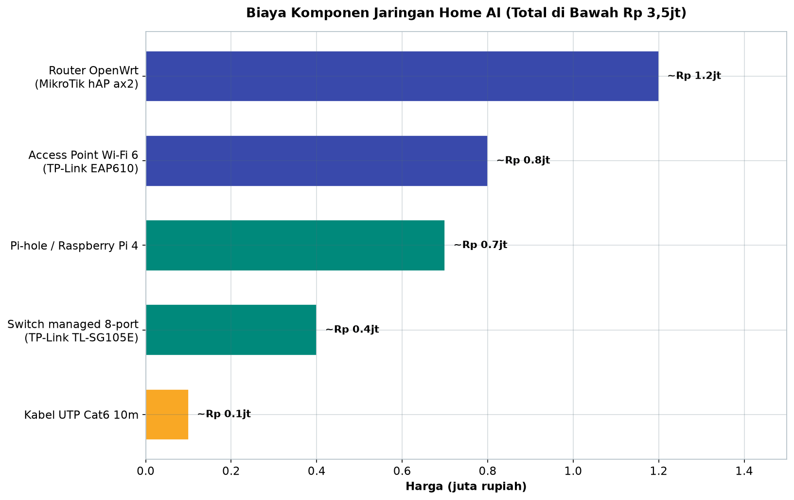
Perbandingan yang jujur: kurang dari sepersepuluh biaya server LLM (Rp 25-45jt), tetapi komponen ini menentukan apakah seluruh sistem aman dan nyaman digunakan. Prioritas anggaran yang masuk akal: router dulu (otak dari semua kebijakan), lalu AP (jangkauan menentukan pengalaman), baru Pi-hole dan switch. Untuk rumah kecil, Pi-hole bahkan bisa diganti container di server LLM — menghemat satu perangkat lagi.
8. Praktikum / Hands-On
Langkah 1: Setup Tailscale untuk Akses Remote Aman
Mulai dari server LLM: jadikan ia anggota jaringan pribadi keluarga.
# 1. Install Tailscale di server LLM
curl -fsSL https://tailscale.com/install.sh | sh
sudo tailscale up --accept-routes --advertise-routes=192.168.1.0/24
# 2. Install di device klien (phone/laptop)
# Download dari https://tailscale.com/download
# 3. Konfigurasi ACL (tailscale-acl.yaml)
# Di admin console Tailscale, buat ACL:
# {
# "acls": [
# {"action": "accept", "src": ["tag:parents"], "dst": ["*:*"]},
# {"action": "accept", "src": ["tag:kids"], "dst": ["llm-server:11434"]}
# ],
# "tagOwners": {
# "tag:parents": ["email@example.com"],
# "tag:kids": ["email@example.com"]
# }
# }
# 4. Verifikasi koneksi
tailscale status
ping 192.168.1.100 # Harus reachable dari remote
curl http://192.168.1.100:11434/api/tagsACL di atas menerjemahkan kebijakan keluarga ke dalam kode: perangkat bertag kids hanya diizinkan mengakses port 11434 di llm-server, sedangkan parents menikmati akses penuh. Jika langkah verifikasi curl berhasil dari luar rumah, Anda sudah memiliki remote access yang aman tanpa satu pun perubahan di router.
Jika keluarga memiliki banyak perangkat, aktifkan juga MagicDNS Tailscale (default): setiap perangkat mendapat nama seperti llm-server.tailnet-name.ts.net yang bisa dipakai dari mana pun. Verifikasi final sebaiknya dilakukan dari jaringan hotspot HP (paket data), bukan dari Wi-Fi rumah — jika hanya diuji dari dalam rumah, Anda tidak benar-benar menguji remote access.
Langkah 2: Konfigurasi VLAN di OpenWrt
Sekarang bangun tembok dalam rumah: tiga VLAN yang terisolasi namun tetap saling terhubung secara terkontrol.
# 1. Buat interface VLAN
# Di LuCI → Network → Interfaces, tambah:
# VLAN 10 (Orang Tua): eth0.10 — 192.168.10.1/24
# VLAN 20 (Anak): eth0.20 — 192.168.20.1/24
uci set network.vlan10=interface
uci set network.vlan10.ifname="eth0.10"
uci set network.vlan10.proto="static"
uci set network.vlan10.ipaddr="192.168.10.1"
uci set network.vlan10.netmask="255.255.255.0"
uci set network.vlan20=interface
uci set network.vlan20.ifname="eth0.20"
uci set network.vlan20.proto="static"
uci set network.vlan20.ipaddr="192.168.20.1"
uci set network.vlan20.netmask="255.255.255.0"
uci commit network
/etc/init.d/network restart
# 2. Firewall rule: VLAN 20 hanya bisa akses port 11434 ke server
uci add firewall rule
uci set firewall.@rule[-1].name="Allow-Kids-to-LLM"
uci set firewall.@rule[-1].src="vlan20"
uci set firewall.@rule[-1].dest="lan"
uci set firewall.@rule[-1].dest_ip="192.168.1.100"
uci set firewall.@rule[-1].dest_port="11434"
uci set firewall.@rule[-1].target="ACCEPT"
uci commit firewall
/etc/init.d/firewall restartSetelah kedua aturan ini aktif, verifikasi dari perangkat di VLAN 20: curl http://192.168.1.100:11434/api/tags harus sukses, tetapi ssh 192.168.1.100 harus ditolak. Itulah perbedaan antara "pagar" dan "tembok": anak tetap bisa bertanya pada asisten, tetapi tidak bisa masuk ke server room.
Langkah 3: Setup HTTPS Lokal dengan mkcert
Terakhir, enkripsi traffic dalam LAN — sehingga percakapan keluarga dengan asisten tidak lagi "polos" bagi perangkat IoT yang berbagi jaringan yang sama.
# 1. Install mkcert
brew install mkcert # macOS
sudo apt install mkcert # Linux
# 2. Buat local CA dan trust
mkcert -install
# 3. Generate sertifikat untuk LLM server
mkcert llm-server.local 192.168.1.100
# 4. Config nginx reverse proxy dengan HTTPS
cat << 'EOF' | sudo tee /etc/nginx/sites-available/llm-proxy
server {
listen 443 ssl;
server_name llm-server.local;
ssl_certificate /etc/ssl/certs/llm-server.local.pem;
ssl_certificate_key /etc/ssl/private/llm-server.local-key.pem;
location / {
proxy_pass http://localhost:11434;
proxy_set_header Host $host;
}
}
EOFSetelah mkcert -install di setiap perangkat keluarga, browser akan mempercayai sertifikat lokal dan ikon gembok muncul di bilah alamat — pertanda traffic antara perangkat dan server kini terenkripsi, meski keduanya berada dalam satu rumah.
9. Studi Kasus: Keluarga Wijaya (5 Anggota, Jaringan 2 Lantai)
Profil. Rumah dua lantai dengan lima anggota keluarga. Server LLM berada di ruang kerja lantai 1, dan internet ISP 100 Mbps. Tantangannya: rumah bertingkat dengan kebutuhan akses berbeda-beda di setiap lantai.
Jaringan. Router MikroTik hAP ax2 + dua AP TP-Link EAP610 (satu per lantai), disambung switch managed TP-Link TL-SG105E. Total investasi jaringan sekitar Rp 3,2jt — termasuk router ~Rp 1,2jt, dua AP ~Rp 1,6jt, dan switch ~Rp 400rb.
Segmentasi. VLAN 10 untuk orang tua: Ayah (pekerja IT) dan Ibu (dokter) menikmati akses penuh. VLAN 20 untuk tiga anak SD-SMP: akses LLM hanya melalui Open WebUI, dengan DNS terfilter AdGuard. VLAN 30 untuk IoT — Smart TV, kamera, smart plug — diisolasi penuh dari perangkat pribadi keluarga.
Remote Access. Tailscale terpasang di HP Ayah, sehingga ia bisa mengakses server LLM saat dinas luar kota — tanpa satu pun port router dibuka.
Hasil. Anak-anak hanya bisa bertanya lewat Open WebUI, tidak pernah menyentuh API langsung — parental control tingkat jaringan yang berjalan bahkan tanpa bergantung pada pengaturan aplikasi. DNS filtering memblokir situs dewasa di seluruh perangkat VLAN 20. Ibu dan Ayah bekerja dari lantai dua dengan latensi <5 ms ke server lantai satu. Dan ketika Ayah berada di luar kota, ia tetap masuk ke server lewat Tailscale dalam beberapa detik.
Pelajaran. Keamanan jaringan keluarga adalah lapisan, bukan satu kunci: VLAN membatasi radius ledakan, DNS filter menyaring konten, Tailscale menembus jarak, dan HTTPS lokal melindungi dari perangkat yang berbagi kabel yang sama. Totalnya — di bawah Rp 3,5jt — adalah harga termurah untuk ketenangan pikiran yang dibeli keluarga Wijaya setiap malam.
Kendala yang paling mengesankan justru datang dari lantai dua. Anak-anak sering mengeluh asisten "lambat" padahal server nyaris idle. Investigasi menemukan tablet mereka terhubung ke AP lantai dua dengan sinyal dua baris — masalah coverage, bukan throughput. Setelah roaming diaktifkan dan satu AP dipindah dua meter, keluhan hilang sama sekali. Pelajaran terakhir dari bab ini: dalam jaringan keluarga, kualitas Wi-Fi adalah 80% dari pengalaman pengguna — tidak peduli seberapa cepat GPU di ruang kerjanya.
10. Referensi
Paper Jurnal/Konferensi
[1] Chen, Y., et al. (2024). Harmony: A Privacy-Preserving and Robust Smart Home Assistant Powered by Locally Deployable Llama3-8B. arXiv: 2410.14252 (https://arxiv.org/abs/2410.14252). DOI: 10.48550/arXiv.2410.14252 (https://doi.org/10.48550/arXiv.2410.14252)
[2] Huang, X., Shen, L., Ma, Z., & Zheng, Y. (2025). Towards Privacy-Preserving and Personalized Smart Homes via Tailored Small Language Models. IEEE Transactions on Mobile Computing. arXiv: 2507.08878 (https://arxiv.org/abs/2507.08878). DOI: 10.48550/arXiv.2507.08878 (https://doi.org/10.48550/arXiv.2507.08878)
[3] Andreoletti, D., Rudi, A., Carpanzano, E., Lelli, F., & Leidi, T. (2026). Privacy-Preserving LLM Inference in Practice: A Comparative Survey of Techniques, Trade-Offs, and Deployability. Cryptology ePrint Archive, Paper 2026/105. https://eprint.iacr.org/2026/105
[4] Qu, Z., et al. (2024). A Review on Edge Large Language Models: Design, Execution, and Applications. arXiv: 2410.11845 (https://arxiv.org/abs/2410.11845). DOI: 10.48550/arXiv.2410.11845 (https://doi.org/10.48550/arXiv.2410.11845)
[5] Lu, Z., Li, X., Cai, D., Yi, R., Liu, F., Liu, W., Luan, J., Zhang, X., Lane, N.D., & Xu, M. (2025). Demystifying Small Language Models for Edge Deployment. Proceedings of the 63rd Annual Meeting of the ACL. DOI: 10.18653/v1/2025.acl-long.718 (https://doi.org/10.18653/v1/2025.acl-long.718)
Referensi Pendukung
[6] Tailscale. Zero-config VPN. https://tailscale.com
[7] OpenWrt. VLAN Documentation. https://openwrt.org/docs/guide-user/network/vlan
[8] WireGuard. Official Documentation. https://www.wireguard.com
[9] Pi-hole. Network-wide Ad Blocking. https://pi-hole.net
[10] mkcert. Local HTTPS. https://github.com/FiloSottile/mkcert
Bab 6.4: Smart Home
Bayangkan Anda duduk di sofa, berkata, "Suasana santai," dan dalam hitungan detik lampu meredup, pendingin turun ke 24 derajat, dan musik jazz mengalun pelan. Bukan sulap — itu percakapan antara model bahasa kecil di server keluarga dengan otak rumah yang bernama Home Assistant. Sub-bab ini menyatukan keduanya: bagaimana membuat rumah pintar yang mendengarkan, memahami, dan bertindak — tanpa satu byte pun data meninggalkan rumah.
1. Tujuan Sub-Bab
Setelah membaca sub-bab ini, Anda akan mampu:
- Menjelaskan arsitektur Home Assistant + LLM: Home Assistant sebagai otak perangkat, LLM sebagai antarmuka bahasa alami — bukan pengganti, melainkan frontend
- Mengintegrasikan Ollama dengan Home Assistant sebagai conversation agent melalui integrasi bawaan sejak versi 2024.4
- Menyusun system prompt dan context engineering agar LLM memahami denah rumah, nama perangkat, dan batas kewenangannya
- Membangun Wyoming voice pipeline lengkap: openWakeWord → Whisper → Ollama → Piper, dengan setiap komponen berjalan di container terpisah
- Merancang automasi cerdas berbasis bahasa alami untuk permintaan ambigu dan multiple intent — dan tahu kapan tidak perlu melibatkan LLM
- Menerapkan target SLA: latensi wake → TTS di bawah 5 detik, dan memahami kapan GPU diperlukan
2. Arsitektur Home Assistant + LLM
Rumah pintar tradisional dikuasai juga oleh aturan YAML yang kaku: "jika sensor suhu di atas 28 derajat, nyalakan AC". Itu bekerja, tetapi tidak berbicara. Peran Home Assistant adalah otak IoT — mengelola lampu, climate, dan sensor; peran LLM adalah membuat otak itu bisa diajak bicara. Ini pembagian kerja yang harus ditegaskan sejak awal: LLM bukan pengganti automasi, melainkan frontend-nya.
Alurnya berbentuk rantai satu arah: User → Wake Word → Whisper (STT) → Ollama (Intent) → HA API → Action → Piper (TTS). Ucapan keluarga menjadi teks oleh Whisper, teks menjadi maksud oleh LLM, maksud menjadi perintah nyata oleh Home Assistant, dan tanggapan menjadi suara oleh Piper. Setiap mata rantai bisa diperbaharui secara terpisah — inilah arsitektur modular yang dianjurkan Harmony [3] dan dipraktikkan langsung oleh keluarga di lapangan [2].
Konsekuensi pentingnya: model LLM di sini tidak dituntut menjadi supergenius — ia cukup pandai memahami maksud kalimat rumah tangga dan menerjemahkannya ke service call. Justru itulah alasan model kecil seperti Ministral 3 atau Qwen 2.5 (7B) lebih disukai daripada model raksasa: lebih cepat, lebih hemat daya, dan tugasnya memang sederhana [1].
Tabel 6.12: Perbandingan Model untuk Home Assistant
Enam kandidat model — dari yang paling hemat daya hingga paling akurat.
| Model | Ukuran Q4 | Function Calling | Latensi (GPU) | Latensi (CPU) | Rekomendasi |
|---|---|---|---|---|---|
| Qwen 2.5 (7B) | ~4,5 GB | Sangat Baik | 1,5 detik | 6 detik | Terbaik untuk HA |
| Llama 3.1 (8B) | ~5,0 GB | Baik | 1,8 detik | 7 detik | Alternatif umum |
| Phi-4-mini (3.8B) | ~2.5 GB | Sedang | 0.8 detik | 3 detik | Hemat daya |
| Ministral 3 3B | ~1.8 GB | Baik | 0.5 detik | 2 detik | Terbaik edge |
| Ministral 3 8B | ~4.8 GB | Sangat Baik | 1.2 detik | 5 detik | Sweet spot home |
| Qwen 2.5 (14B) | ~8,5 GB | Sangat Baik | 3,0 detik | 15 detik | Akurasi maksimal |
Kesenjangan latensi GPU versus CPU hanya bisa dirasakan ketika digambar — semua model lolos SLA 5 detik di GPU, sementara di CPU hanya model terkecil yang aman.
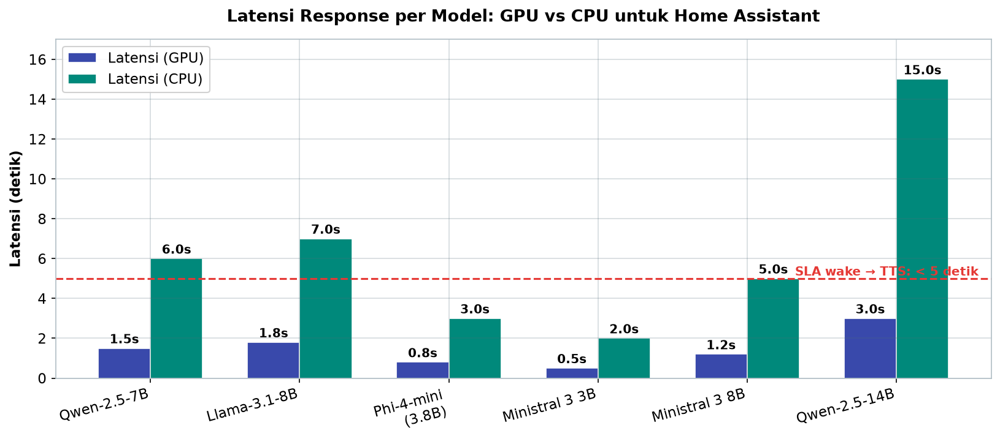
Ministral 3 (Apache 2.0, Desember 2025) adalah pilihan terbaik untuk Home Assistant karena edge-optimized dengan function calling yang baik. Ministral 3 3B berjalan di CPU dengan latensi hanya 2 detik — ideal untuk perangkat tanpa GPU. Untuk keluarga dengan GPU, Ministral 3 8B menawarkan keseimbangan terbaik antara akurasi dan kecepatan. Pola penting dari tabel ini: perbedaan latensi GPU hanya beberapa detik, tetapi selisih CPU bisa 3-8 kali lipat — bagi rumah tanpa GPU, pilihan model adalah segalanya.
3. Native Ollama Integration di HA 2024.4+
Sejak versi 2024.4, Home Assistant memiliki integrasi Ollama bawaan — tidak perlu custom component. Langkahnya sesederhana membuka Settings → Devices & Services → Add Ollama, lalu mengisi URL (default http://192.168.1.100:11434), memilih model, dan menyesuaikan parameter.
Dua keputusan penting menyusul. Pertama, ekspos entity — tentukan perangkat mana yang boleh dikontrol LLM melalui Assist; jangan pernah mengekspos semua entity, karena itu berarti memberi pembantu rumah tangga kunci semua kamar. Kedua, pilih model dengan function calling yang stabil — rekomendasi utama adalah Qwen 2.5 (7B) (paling stabil untuk function calling) dan Llama 3.1 (8B) (serba guna). Function calling adalah bahasa yang membuat LLM mampu menyebut nama service dan entity secara terstruktur — tanpa itu, jawaban model hanya akan menjadi cerita, bukan tindakan.
4. Custom Prompt dan Context Engineering
LLM tidak lahir mengenal rumah Anda. Ia perlu "diberi tahu" — dan cara pemberi tahuannya disebut context engineering. Sebuah system prompt yang baik untuk asisten rumah berisi tiga hal: denah dan konteks rumah (kamar mana di lantai mana), daftar perangkat yang dirujuk dengan nama persis entity-nya (bukan "lampu itu" melainkan light.living_room), dan batas kewenangan ("kamu hanya boleh menjalankan perintah yang aman").
Teknik pendukungnya adalah expose_entities — mekanisme resmi untuk membatasi daftar perangkat yang terlihat oleh LLM, sehingga ia tidak hanya dibatasi oleh prompt tetapi juga oleh sistem. Contoh nyata: template prompt untuk deteksi maksud berubah dari frasa umum "nyalakan lampu ruang tamu" menjadi panggilan layanan terstruktur light.turn_on pada entity light.living_room. Struktur prompt yang rapi seperti inilah yang membuat model kecil sekalipun mampu mengeksekusi dengan presisi [3].
5. Wyoming Voice Pipeline
Antarmuka paling alami bagi keluarga bukan keyboard, melainkan suara. Wyoming protocol adalah standar terbuka yang menghubungkan empat komponen voice: openWakeWord mendeteksi frasa pemicu ("Hei Rumah"), Whisper mengubah ucapan menjadi teks, Ollama memproses maksud, dan Piper menghasilkan text-to-speech — termasuk dukungan suara bahasa Indonesia.
Keunggulan desain Wyoming adalah kemerdekaan setiap komponen: masing-masing berjalan sebagai container terpisah dengan port sendiri (10300 untuk Whisper, 10200 untuk Piper), sehingga bisa di-upgrade atau diganti tanpa menyentuh komponen lain. Ini adalah contoh nyata dari prinsip modular agent architecture yang diadaptasi dari struktur Harmony [3]: satu rantai, banyak bagian yang bisa diganti.
Dengan Ministral 3 3B sebagai LLM agent, seluruh pipeline dapat mencapai < 2 detik end-to-end (wake → aksi → TTS) — jauh di bawah batas kenyamanan manusia, dan menjadi fondasi pengalaman smart home yang benar-benar responsif [11].
Tabel 6.13: Komponen Voice Pipeline Wyoming
Sekarang bedah rantai suara komponen per komponen — perhatikan betapa ringannya kebutuhan setiap mata rantai.
| Komponen | Fungsi | Model/Engine | RAM | Latensi (GPU) |
|---|---|---|---|---|
| openWakeWord | Wake word detection | Neural network kecil | ~100 MB | 0.3 detik |
| Whisper (faster-whisper) | Speech-to-text | Whisper small/turbo | ~1-2 GB | 0.5-1 detik |
| Ollama (LLM agent) | Intent parsing + action | Ministral 3 3B / Qwen 2.5 (7B) | ~2-5 GB | 0,5-1,2 detik |
| Piper TTS | Text-to-speech | Piper medium ID | ~500 MB | 0.5 detik |
Dengan Ministral 3 3B sebagai LLM agent, total pipeline voice mencapai < 2 detik end-to-end (wake → action → TTS) — angka yang sangat responsif untuk smart home. Kesimpulan praktisnya: seluruh rantai suara hanya membutuhkan ~3,6-8,6 GB RAM dan latensi GPU di bawah 3 detik — artinya, pipeline ini bahkan bisa ditaruh di Mini PC home server yang sama dengan Home Assistant, tanpa menuntut rig GPU khusus.
Rantai penuh dari ucapan hingga lampu menyala — dan kembali menjadi suara.
Diagram ini menunjukkan pembagian kerja yang bersih: semua pemrosesan bahasa terjadi di dalam Home Server, sementara Smart Home hanya menerima aksi. Dua busur penting: LLM →|Intent| HA adalah jembatan antara pemahaman dan tindakan, dan HA →|Response| LLM adalah putaran balik yang membuat asisten bisa menjawab setelah bertindak. Dengan latensi per-node yang kita ukur di Tabel 6.13, rantai ini menutup pengalaman suara di bawah 3 detik di GPU, dan di bawah 6 detik di CPU [1].
6. Automasi Cerdas dengan LLM
Ini bagian yang paling sering disalahpahami: LLM tidak perlu untuk semua trigger. Sensor suhu naik → nyalakan AC tetap paling baik dijalankan automasi YAML klasik yang deterministik dan instant. Melibatkan LLM di sini hanya menambah latensi dan satu titik kegagalan.
Gunakan LLM justru untuk tiga kasus yang memang lemah di YAML. Pertama, perintah ambigu — "suasana santai" yang membutuhkan interpretasi (lampu redup, AC 24 derajat, playlist jazz). Kedua, multiple intent — "matikan lampu dan nyalakan TV" yang harus dipecah menjadi dua aksi. Ketiga, integrasi konteks eksternal — "jadwalkan AC menyala 30 menit sebelum saya pulang", yang menuntut kalender dan timer logic.
Studi GreenIFTTT [4] menemukan temuan yang mengejutkan: pengguna non-teknis justru lebih mudah merancang rutinitas rumah pintar melalui percakapan dengan chatbot LLM daripada melalui editor aturan visual. Artinya, LLM bukan sekadar "kemewahan" — bagi sebagian keluarga, ia adalah satu-satunya jembatan menuju otomasi yang selama ini terasa terlalu teknis.
Tabel 6.14: Contoh Automasi dengan vs Tanpa LLM
Terakhir, perbandingan nyata antara dua dunia: YAML klasik versus bahasa alami.
| Skenario | Tanpa LLM (YAML) | Dengan LLM |
|---|---|---|
| "Suasana santai" | Butuh script kompleks, 15 baris YAML | Satu kalimat natural |
| "Matikan lampu kamar dan nyalakan AC" | 2 automasi terpisah | Multiple intent otomatis |
| "Berapa suhu di luar?" | Butuh template sensor | Query database otomatis |
| "Hidupkan lampu 10 menit lagi" | Timer manual | LLM parse "10 menit" |
Bacaan yang jujur: kolom tanpa LLM bukan musuh — ia deterministik, cepat, dan gratis. Tetapi untuk empat kategori di atas, biaya engineering-nya nyata: 15 baris YAML hanya untuk satu suasana, dua automasi terpisah untuk satu kalimat majemuk, dan template rumit untuk pertanyaan sederhana. LLM mentransfer biaya itu dari pemrogram ke bahasa sehari-hari — dan bagi keluarga yang tidak memiliki pemrogram di dalamnya, itu adalah perbedaan antara "bisa" dan "tidak pernah mencoba" [4].
7. Kinerja dan SLA
Terakhir, tetapkan janji kinerja. Target latensi untuk pengalaman natural: wake → TTS kurang dari 5 detik. Jika keluarga memiliki GPU, target di bawah 3 detik tercapai (Whisper + LLM berjalan paralel di GPU). Dengan CPU-only, latensi 6-12 detik masih dapat diterima untuk smart home — cukup cepat untuk perintah, cukup lambat untuk membuat anak bosan jika Anda tidak sabar.
Angka-angka ini selaras dengan studi On-Device LLM for Home Assistant [1], yang membuktikan bahwa LLM 8-bit di perangkat CPU-only sekalipun mampu menangani intent detection dengan latensi yang dapat diterima untuk otomasi rumah. Di sisi lain, studi Optimizing LLM for Smart Home at the Edge [5] menunjukkan bahwa optimasi model secara agresif dapat memangkas response time hingga 82% (dari 45 detik menjadi 7,9 detik) — bukti bahwa untuk tugas rumah tangga, model kecil yang dioptimasi mengalahkan model besar yang lambat.
Saat keluarga mengucapkan perintah majemuk, LLM bertindak sebagai juru tulis yang rapi.
Inilah ratusan baris YAML yang "disulap" menjadi satu kalimat: LLM memecah perintah menjadi JSON array berisi pasangan entity-service yang terstruktur, dan setiap item dieksekusi berurutan melalui API Home Assistant. Kunci keberhasilannya adalah temperature rendah (misalnya 0.1) pada pemanggilan LLM — kita menginginkan ekstraksi yang konsisten, bukan jawaban kreatif.
8. Praktikum / Hands-On
Langkah 1: Integrasi Ollama dengan Home Assistant via Docker Compose
Bangun seluruh tumpukan — Home Assistant, Ollama, dan dua layanan Wyoming — dalam satu file.
# docker-compose.yml — stack lengkap HA + Ollama + Wyoming
version: "3.8"
services:
homeassistant:
image: ghcr.io/home-assistant/home-assistant:stable
volumes:
- ./ha-config:/config
ports:
- "8123:8123"
restart: unless-stopped
ollama:
image: ollama/ollama:latest
volumes:
- ./ollama-models:/root/.ollama
ports:
- "11434:11434"
deploy:
resources:
reservations:
devices:
- driver: nvidia
count: 1
capabilities: [gpu]
restart: unless-stopped
wyoming-whisper:
image: rhasspy/wyoming-faster-whisper:latest
command: --model tiny-int8 --language id
ports:
- "10300:10300"
restart: unless-stopped
wyoming-piper:
image: rhasspy/wyoming-piper:latest
command: --voice id-ID
ports:
- "10200:10200"
restart: unless-stoppedPerhatikan dua detil: bagian deploy.resources...capabilities: [gpu] di service Ollama — hapus jika server tidak punya GPU (Ollama akan berjalan CPU-only), dan command: --model tiny-int8 --language id untuk Whisper yang menggunakan model ringan berbahasa Indonesia. Jalankan dengan docker compose up -d, lalu verifikasi curl http://localhost:11434/api/tags di host.
Langkah 2: Konfigurasi Assist Pipeline di HA
Setelah integrasi Ollama ditambahkan lewat UI, konfigurasikan conversation agent lewat configuration.yaml.
# Di configuration.yaml HA — setup conversation agent
# Setelah Ollama integration ditambahkan via UI:
conversation:
- platform: ollama
url: "http://ollama:11434"
model: "qwen2.5:7b"
prompt: |-
Anda adalah asisten rumah pintar yang membantu keluarga.
Anda mengontrol perangkat berikut:
{% for entity in exposed_entities %}
- {{ entity }}
{% endfor %}
Anda hanya boleh menjalankan perintah yang aman dan sesuai.
max_tokens: 150
temperature: 0.3
top_p: 0.9
# Ekspos entity via UI: Settings → Voice Assistants → Expose Entities
# Pilih: light.*, climate.*, switch.*, sensor.* (temperature only)Template {% for entity in exposed_entities %} mengotomatiskan context engineering: daftar perangkat ditulis langsung ke system prompt setiap percakapan, sehingga LLM selalu tahu apa yang boleh dan tidak boleh disentuhnya. Parameter temperature: 0.3 menjaga jawaban tetap konsisten — untuk automation, kreativitas adalah musuh.
Langkah 3: Automasi Multiple Intent dengan LLM
Untuk kontrol penuh atas pemrosesan multiple intent, script kecil berikut menjadi jembatan antara bahasa alami dan API Home Assistant.
# custom_agent.py — script untuk menangani multiple intent
# Jalankan sebagai add-on atau service terpisah
import requests
import json
HA_URL = "http://homeassistant:8123/api"
HA_TOKEN = "your-long-lived-token"
OLLAMA_URL = "http://ollama:11434/api/generate"
def parse_intent(user_text):
"""Kirim ke LLM untuk ekstraksi intent terstruktur"""
prompt = f"""Ekstrak intent dari perintah berikut sebagai JSON array.
Perintah: "{user_text}"
Response format: [{{"entity": "light.living_room", "service": "turn_on"}}, ...]
Hanya output JSON, tanpa penjelasan."""
resp = requests.post(OLLAMA_URL, json={
"model": "qwen2.5:7b",
"prompt": prompt,
"stream": False,
"temperature": 0.1
})
return json.loads(resp.json()["response"])
def execute_intents(intents):
"""Jalankan intent via HA API"""
headers = {
"Authorization": f"Bearer {HA_TOKEN}",
"Content-Type": "application/json"
}
for intent in intents:
service = intent["service"] # "light.turn_on"
entity = intent["entity"] # "light.living_room"
domain, service_name = service.split(".")
url = f"{HA_URL}/services/{domain}/{service_name}"
requests.post(url, json={"entity_id": entity}, headers=headers)
# Contoh penggunaan
if __name__ == "__main__":
perintah = "matikan lampu kamar dan nyalakan ac di suhu 24"
intents = parse_intent(perintah)
print(f"Parsed: {intents}")
execute_intents(intents)Ganti your-long-lived-token dengan token yang dibuat dari profil pengguna Anda di HA (Profile → Long-Lived Access Token). Saat dijalankan, script akan mencetak Parsed: [{"entity": "light.kamar", "service": "turn_off"}, ...] lalu mengeksekusi masing-masing — bukti bahwa satu kalimat keluarga dapat menjadi dua aksi nyata.
9. Studi Kasus: Rumah Pintar Keluarga Santoso (6 Anggota)
Setup. Rumah pintar keluarga Santoso: Home Assistant di Mini PC, Ollama, dan Wyoming Whisper/Piper sebagai rantai suara.
Perangkat. 20+ smart bulbs (Philips Hue), 3 AC (Broadlink IR), 5 sensor suhu, dan smart lock — semua dikontrol lewat bahasa alami, tanpa remote.
LLM Model. Qwen 2.5 (7B) Q4_K_M — function calling yang stabil menjadikannya pilihan utama, dengan respons di bawah 2 detik di GPU.
Voice. Dua microphone array ESP32-S3 di ruang tamu dan dapur, dengan kata pemicu "Hei Rumah". Dari ruang tamu anak bisa memanggil asisten; dari dapur orang tua bisa mengatur AC tanpa meninggalkan kompor.
Automasi LLM.
- "Suasana makan malam" → lampu redup 30%, AC 24°C, playlist jazz diputar.
- "Kunci pintu dan matikan semua lampu" → multiple intent dieksekusi berurutan.
- "Berapa tagihan listrik bulan ini?" → query sensor energy monitoring langsung dijawab.
Hasil. Anak bisa meminta lampu kamar menyala tanpa remote. Orang tua mengatur AC dari dapur. Tidak ada satu pun data yang keluar ke cloud. Latensi rata-rata 3,5 detik (wake → action → TTS) — nyaman di bawah target SLA 5 detik [1].
Pelajaran. Keberhasilan keluarga Santoso tidak datang dari model terbesar, melainkan dari pemilihan peran yang tepat: YAML tetap mengurusi trigger sensor yang deterministik, sementara LLM mengambil alih kalimat manusia yang ambigu. Rumah yang "pintar" bukanlah rumah dengan perangkat terbanyak, tetapi rumah yang bisa dibicarai.
10. Referensi
Paper Jurnal/Konferensi
[1] Lang, M., et al. (2025). On-Device LLMs for Home Assistant: Dual Role in Intent Detection and Response Generation. arXiv: 2502.12923 (https://arxiv.org/abs/2502.12923). DOI: 10.48550/arXiv.2502.12923 (https://doi.org/10.48550/arXiv.2502.12923)
[2] Huang, X., Shen, L., Ma, Z., & Zheng, Y. (2025). Towards Privacy-Preserving and Personalized Smart Homes via Tailored Small Language Models. IEEE Transactions on Mobile Computing. arXiv: 2507.08878 (https://arxiv.org/abs/2507.08878). DOI: 10.48550/arXiv.2507.08878 (https://doi.org/10.48550/arXiv.2507.08878)
[3] Chen, Y., et al. (2024). Harmony: A Privacy-Preserving and Robust Smart Home Assistant Powered by Locally Deployable Llama3-8B. arXiv: 2410.14252 (https://arxiv.org/abs/2410.14252). DOI: 10.48550/arXiv.2410.14252 (https://doi.org/10.48550/arXiv.2410.14252)
[4] Presta, L., et al. (2024). Designing Home Automation Routines Using an LLM-Based Chatbot. Designs (MDPI), 8(3), 43. DOI: 10.3390/designs8030043 (https://doi.org/10.3390/designs8030043)
[5] Velaga, K.S., & Guo, Y. (2024). Optimizing Large Language Models Assisted Smart Home Assistant Systems at the Edge: An Empirical Study. AAAI 2025 Workshop AI4WCN. https://openreview.net/forum?id=qr2dIjQavP
Referensi Pendukung
[6] Home Assistant. Ollama Integration. https://www.home-assistant.io/integrations/ollama
[7] Home Assistant. Wyoming Protocol. https://www.home-assistant.io/integrations/wyoming
[8] Piper TTS. GitHub Repository. https://github.com/rhasspy/piper
[9] faster-whisper. GitHub Repository. https://github.com/SYSTRAN/faster-whisper
[10] openWakeWord. GitHub Repository. https://github.com/dscripka/openWakeWord
[11] Mistral AI. (2025). Ministral 3: Edge-Optimized for Home Automation. Apache 2.0, varian 3B/8B/14B. https://mistral.ai/news/ministral-3/
Bab 6.5: Knowledge Base
Bayangkan sebuah kotak resep yang bukan hanya menyimpan kertas — ia bisa "diingat" oleh setiap anggota keluarga, menjawab "resep opor ayam nenek yang pakai santan kental" dalam hitungan detik, tanpa membuka laci, tanpa menelpon ibu, tanpa data keluar rumah. Itulah janji Shared Knowledge Base: menjadikan LLM lokal sebagai memori kolektif rumah tangga, yang selalu tersedia, selalu privat, dan terus bertumbuh bersama keluarga.
1. Tujuan Sub-Bab
Setelah membaca sub-bab ini, Anda akan mampu:
- Membangun RAG pipeline lokal untuk data keluarga — mulai dari resep, dokumen pajak, catatan sekolah, hingga foto — dengan vector database di rumah
- Mengelola multi-user RAG dengan isolasi data per anggota keluarga, sehingga anak tidak bisa membaca dokumen pajak ayah dan ayah tidak perlu khawatir data pribadinya tercampur
- Mengimplementasikan enkripsi untuk dokumen sensitif (pajak, catatan medis) menggunakan encrypted volume seperti LUKS
- Memilih model embedding dan LLM yang tepat untuk dokumen berbahasa Indonesia
- Menyusun pipeline OCR + chunking + embedding untuk dokumen scan berbahasa Indonesia
2. Konsep RAG untuk Data Keluarga
Mengapa LLM Perlu "Mencari Dulu, Baru Menjawab"
Seorang ibu bertanya, "Berapa total pajak tahun 2025?" Jika pertanyaan itu diajukan ke LLM biasa, jawabannya hanyalah tebakan terpelajar — karena model tidak pernah melihat dokumen pajak keluarga Anda. Di sinilah RAG (Retrieval-Augmented Generation) berperan. Alih-alih menjawab dari pengetahuan internal model semata, RAG bekerja dalam dua tahap: retriever mencari dokumen relevan dari database vektor, lalu generator (LLM) menyusun jawaban berdasarkan dokumen yang berhasil ditemukan [1]. Dengan kata lain, model "mencari dulu di rak arsip keluarga, baru menjawab" — dan selalu mencantumkan dasar jawabannya.
Konsep ini pertama kali diformalkan oleh Lewis et al. (2020) untuk tugas knowledge-intensive NLP, dan hingga hari ini arsitektur retriever-generator tersebut masih menjadi fondasi hampir semua sistem tanya-jawab dokumen, termasuk yang Anda bangun di rumah [1].
Beda dengan Cloud: Data Tidak Pernah Meninggalkan Rumah
Perbedaan paling fundamental antara RAG lokal dan asisten AI di awan bukan pada kualitas jawaban, melainkan pada lokasi data. Saat Anda mengunggah dokumen pajak ke asisten cloud, dokumen itu tersimpan di server pihak ketiga — Anda hanya berharap perusahaan tersebut menjaga kerahasiaannya. Pada RAG lokal, ingestion hingga query terjadi sepenuhnya di dalam rumah: dokumen di-scan, dipecah, di-embed, dan disimpan di ChromaDB yang berjalan di server Anda sendiri. Data tidak pernah meninggalkan rumah, sehingga privasi keluarga menjadi 100% berada di tangan Anda [5].
Ini bukan sekadar soal kepercayaan. Survei privacy-preserving LLM inference terbaru menunjukkan bahwa deployment lokal menghilangkan seluruh risiko kebocoran data di sisi penyedia cloud, sekaligus membebaskan Anda dari biaya per-request yang terus berjalan [5]. Biayanya: Anda harus menyediakan perangkat keras, listrik, dan kesabaran untuk maintenance — harga yang wajar untuk kedaulatan data keluarga.
Use Case yang Langsung Terasa Manfaatnya
Supaya tidak abstrak, bayangkan tiga skenario sehari-hari yang akan berjalan mulus setelah sistem ini berdiri:
- "Cari resep soto ayam buatan Ibu bulan lalu" — sistem menemukan resep dari collection resep bersama, lengkap dengan takaran bumbu hasil tulisan tangan yang sudah di-OCR
- "Berapa total pajak tahun 2025?" — sistem membuka encrypted volume, mendekripsi dokumen pajak di memori, menjawab dengan angka, lalu mengunci kembali
- "Foto keluarga saat lebaran 2024" — sistem mencari berdasarkan tanggal EXIF dan caption yang dibuat otomatis, bukan menebak isi foto
Ketiga skenario ini menggambarkan tiga jenis data yang berbeda (teks, dokumen terenkripsi, foto), dan semuanya dikelola oleh satu arsitektur yang akan kita bangun di seksi berikutnya.
Tabel 6.15: Ukuran Dataset Keluarga dan Embedding Cost
Tabel berikut memperkirakan volume data khas keluarga aktif beserta biaya pemrosesannya — perhatikan bahwa waktu embedding dihitung untuk CPU biasa.
| Tipe Data | Volume | Chunk Size | Jumlah Chunk | Storage Vector | Embedding Time (CPU) |
|---|---|---|---|---|---|
| Resep (500 dok) | ~50 MB | 256 token | ~2.000 | ~10 MB | 2 menit |
| Dokumen Pajak (50 PDF) | ~200 MB | 512 token | ~4.000 | ~20 MB | 5 menit |
| Catatan Sekolah (200 doc) | ~100 MB | 256 token | ~4.000 | ~20 MB | 4 menit |
| Foto + Caption (10.000) | ~50 GB (foto) | Caption 128 token | ~10.000 | ~50 MB | 15 menit |
| Total | ~50,3 GB | — | ~20.000 | ~100 MB | ~25 menit |
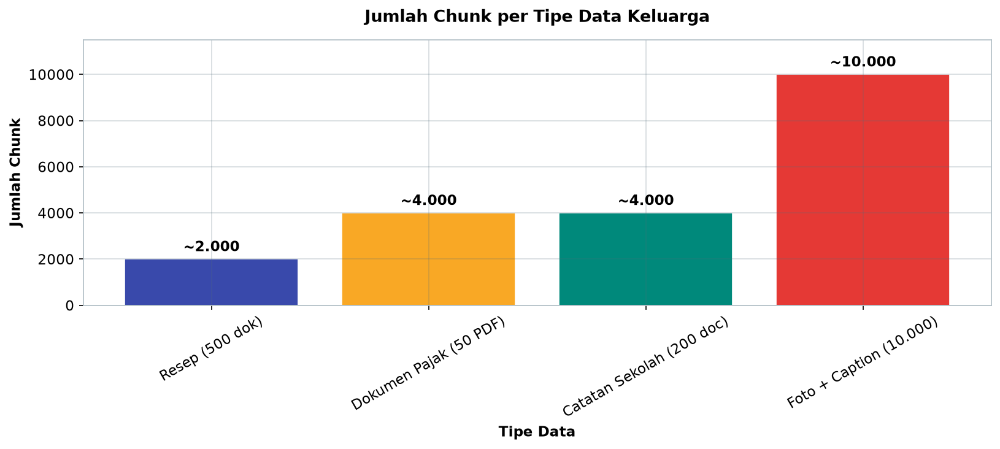
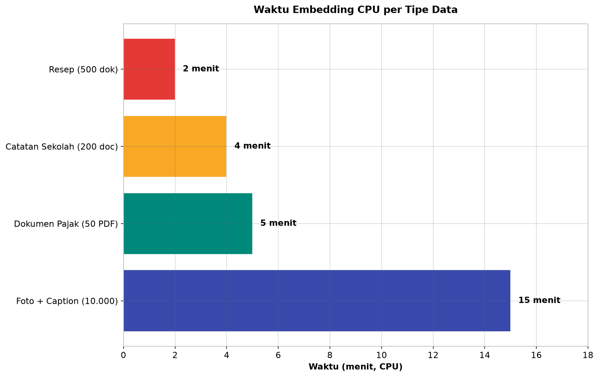
Analisis: dua insight penting muncul dari tabel ini. Pertama, penyimpanan vektor total hanya ~100 MB untuk seluruh arsip — hampir tidak terasa di era NVMe 1 TB, dan ini membuktikan bahwa RAG keluarga bukan masalah kapasitas, melainkan disiplin pipeline. Kedua, ingestion sekali jalan memakan waktu paling banyak dari foto (15 menit dari total 25 menit) karena 10.000 foto harus lewat LLM vision untuk captioning — jadi lakukan captioning bertahap, misalnya 500 foto per malam, agar tidak mengganggu penggunaan server siang hari.
Tabel 6.16: Struktur Direktori RAG Keluarga
Kerangka folder berikut menjadi kontrak antara anggota keluarga dan pipeline — setiap orang tahu di mana datanya berada.
/rag/
├── shared/ # Data bersama — resep, panduan, info rumah
│ ├── recipes/ # Resep keluarga (markdown)
│ ├── home-manual/ # Manual peralatan rumah
│ └── school/ # Buku pelajaran kurikulum merdeka
├── ayah/
│ ├── work/ # Dokumentasi proyek, coding notes
│ └── finance/ # Pajak, investasi (ENCRYPTED)
├── ibu/
│ ├── medical/ # Catatan medis, jurnal (ENCRYPTED)
│ └── recipes-pribadi/
└── anak/
├── pr/ # Tugas sekolah, PR
└── diary/ # Catatan pribadi anakAnalisis: pola penamaan folder ini dirancang agar script ingestion bisa otomatis menurunkan user_id dan collection_type dari jalur file — misalnya ibu/medical menjadi collection ibu_medical. Folder yang ditandai ENCRYPTED harus dilewati oleh script kecuali volume LUKS sedang terbuka. Konsekuensi desain ini: menambah anggota baru (misalnya menantu atau kakek) semudah membuat satu folder baru.
3. Arsitektur Pipeline RAG Lokal
Alur Ingestion: dari Kertas ke Vektor
Perjalanan data keluarga menjadi entri database vektor terdiri dari empat tahap. Pertama, dokumen fisik di-scan dan diproses oleh Tesseract OCR dengan language pack Indonesia untuk mengubah gambar menjadi teks. Kedua, teks dipecah menjadi chunk dengan strategi yang disesuaikan jenis dokumen. Ketiga, setiap chunk diubah menjadi vektor oleh model embedding. Keempat, vektor beserta metadata (pemilik, tanggal, jenis dokumen) disimpan di ChromaDB — vector database yang menjadi "peta arsip keluarga". Ingestion ini biasanya hanya perlu dilakukan sekali per dokumen; setelah itu, sistem tinggal melayani pertanyaan.
Alur Query: Tanya, Temukan, Jawab
Saat seorang anggota keluarga bertanya, urutan kebalikannya terjadi: pertanyaan diubah menjadi vektor query dengan model embedding yang sama, kemudian dilakukan similarity search terhadap seluruh chunk di database — vektor terdekat secara semantik dianggap paling relevan. Hasil pencarian (biasanya 3-5 chunk) digabung menjadi konteks, lalu dikirim ke LLM bersama pertanyaan asli. LLM menyusun jawaban yang bersumber pada konteks tersebut. Karena konteks datang dari dokumen keluarga, jawabannya akurat secara faktual dan bisa ditelusuri kembali ke sumbernya.
Toolbox: ChromaDB, Model Embedding, dan Ollama
Untuk deployment rumahan, kombinasi yang paling praktis adalah ChromaDB sebagai vector store, Nomic Embed Text atau BGE-M3 sebagai model embedding, dan Ollama sebagai runtime LLM. ChromaDB dipilih karena setup-nya sangat mudah dan hemat memori — sekitar ~500 MB RAM untuk 10 ribu dokumen (lihat Tabel 6.17). Ukuran dataset keluarga umumnya berada di kisaran 100-500 GB (foto mendominasi, dokumen teks hanya puluhan MB), tetapi yang masuk ke ChromaDB hanyalah vektor embedding berukuran ~100 MB — jauh lebih kecil dari data aslinya.
Untuk dokumen berbahasa Indonesia, rekomendasi model embedding adalah BGE-M3 dari BAAI. Berbeda dengan Nomic Embed Text yang lebih kuat di dokumen Inggris, BGE-M3 dirancang multi-lingual — termasuk bahasa Indonesia — sehingga retrieval quality-nya lebih baik untuk resep, surat pajak, dan catatan sekolah berbahasa Indonesia [9]. Di sisi LLM, Ministral 3 8B menjadi pilihan menarik untuk RAG keluarga: edge-optimized, berkonteks 128K token, sehingga satu prompt bisa memuat chunk yang lebih besar tanpa kehilangan informasi [11]. Untuk rumah high-end, DeepSeek V4 Flash dengan konteks 1 juta token mampu me-retrieve ribuan dokumen dalam satu prompt tanpa kehilangan konteks; alternatifnya Ministral 3 14B dengan 128K konteks sudah lebih dari cukup untuk kebutuhan keluarga biasa [11].
Ukuran Dataset dan Konsekuensinya
Angka 100-500 GB terdengar besar, tetapi perlu ditegaskan: mayoritas volume itu adalah foto mentah dan dokumen scan yang tetap tersimpan sebagai file biasa di file system. Yang di-embed hanyalah representasi vektornya. Dengan total ~20.000 chunk untuk keluarga aktif (lihat Tabel 6.17), seluruh embedding hanya memakan ~100 MB penyimpanan dan ~25 menit waktu embedding di CPU. Artinya, sebuah PC rumahan kelas menengah sudah sanggup menjalankan seluruh pipeline tanpa GPU khusus untuk tahap ingestion.
Tabel 6.17: Perbandingan Vector Database Lokal
Sebelum memutuskan tempat menyimpan vektor keluarga, berikut perbandingan empat kandidat vector database yang umum digunakan.
| Fitur | ChromaDB | Qdrant | Weaviate | Milvus |
|---|---|---|---|---|
| Setup | Sangat Mudah | Mudah | Sedang | Sulit |
| Multi-Collection | Ya | Ya | Ya | Ya |
| Metadata Filter | Ya | Ya | Ya | Ya |
| Encryption at Rest | Tidak | Tidak | Tidak | Tidak |
| RAM (10K docs) | ~500 MB | ~1 GB | ~2 GB | ~2 GB |
| Rekomendasi | Terbaik untuk pemula | Performa tinggi | Fitur lengkap | Skala besar |
Analisis: perhatikan bahwa tidak ada satupun vector database yang menyediakan enkripsi saat istirahat — itulah sebabnya enkripsi dokumen sensitif harus ditangani di lapisan atas (LUKS), bukan diserahkan ke ChromaDB. Untuk keluarga, ChromaDB menang di kemudahan setup dan jejak memori terkecil; Qdrant baru layak dipilih jika Anda sudah merasakan query melambat — yang jarang terjadi di skala puluhan ribu chunk. Milvus dengan setup-nya yang rumit sebaiknya dihindari untuk skala rumah tangga.
Berikut alur lengkap dari dokumen fisik hingga jawaban pertanyaan, termasuk jalur enkripsi untuk data sensitif.
Diagram ini menampilkan dua dunia yang berjalan paralel. Di atas, dunia ingestion: dokumen diformat ulang menjadi chunk, lalu menjadi vektor; dokumen sensitif juga disalin ke volume terenkripsi. Di bawah, dunia query: pertanyaan diubah menjadi vektor, mencari chunk terdekat di ChromaDB, dan jawaban disusun LLM. Garis putus-putus dari volume LUKS menunjukkan bahwa dokumen sensitif hanya didekripsi saat proses chunking — bukan disimpan terbuka. Keindahan desain ini: kedua dunia tidak saling memblokir; keluarga bisa bertanya sementara foto-foto baru sedang di-ingest di latar belakang.
4. Multi-User RAG dengan Isolasi Data
Satu Rumah, Banyak Pemilik Data
Rumah adalah organisasi kecil: setiap penghuninya punya data sendiri, tapi ada juga data bersama. Resep keluarga boleh dibaca semua; catatan medis dan dokumen pajak adalah ranah pribadi. RAG keluarga harus mencerminkan kenyataan ini. Pola yang digunakan: setiap anggota memiliki folder /rag/{user}/ sendiri, dan setiap folder dipetakan ke collection terpisah di ChromaDB dengan penamaan {user_id}_{collection_type} — misalnya ibu_recipes, ayah_finance, anak_school. Collection adalah unit isolasi alami di ChromaDB: query di satu collection tidak akan pernah menyentuh data di collection lain.
Metadata Filtering sebagai Pengaman Kedua
Selain isolasi fisik lewat collection, setiap dokumen diberi metadata user_id saat disimpan. Ini memungkinkan metadata filtering saat retrieval: bahkan jika Anda menggabungkan beberapa collection dalam satu pencarian, hasilnya tetap bisa disaring berdasarkan pemilik data. Dua lapis ini (pemisahan collection + filter metadata) adalah praktik standar multi-tenant RAG — seperti dua lemari arsip yang tidak hanya terpisah ruangan, tetapi setiap berkasnya juga diberi label pemilik.
Akses Data Bersama vs Data Pribadi
Tidak semua data harus diisolasi. Struktur direktori di bawah memisahkan data bersama (shared/) yang boleh diakses semua anggota — resep, manual peralatan rumah, bahan pelajaran — dari data pribadi (ayah/, ibu/, anak/) yang hanya bisa di-query oleh pemiliknya. Akses data bersama diperoleh dengan query ke shared_* collection; akses data pribadi wajib melalui verifikasi identitas pengguna.
Implementasi Header X-User-ID
Dalam deployment nyata, isolasi ini dijembatani oleh lapisan aplikasi. Open WebUI — antarmuka web yang umum dipakai bersama Ollama — mendukung multi-user, dan setiap request bisa membawa header X-User-ID. Aplikasi backend membaca header ini, menentukan collection mana yang boleh diakses, lalu meneruskan query ke ChromaDB dengan filter user_id yang sesuai. Dengan pola ini, menambah anggota keluarga baru cukup dengan membuat folder dan collection baru — tanpa menyentuh kode pipeline inti.
5. OCR dan Chunking untuk Dokumen Indonesia
Tesseract dan Bahasa Indonesia
Sebagian besar arsip keluarga masih berwujud kertas — buku resep nenek, fotokopi akta, rapor anak. Untuk memasukkannya ke RAG, kertas harus diubah menjadi teks dulu. Tesseract OCR adalah mesin optical character recognition open-source yang mendukung bahasa Indonesia melalui paket tesseract-ocr-ind. Kualitas OCR Indonesia cukup memadai untuk dokumen cetak yang bersih; untuk dokumen dengan tulisan tangan, akurasinya menurun dan sebaiknya dikonfirmasi manual atau ditulis ulang ke markdown.
Strategi Chunking: 512 untuk Formal, 256 untuk Informal
Pecahnya teks menjadi chunk bukan urusan remeh — ukuran chunk menentukan seberapa presisi retrieval bekerja. Untuk dokumen formal (pajak, surat, manual), gunakan chunk 512 token dengan overlap 128 — cukup besar untuk menangkap konteks satu pasal atau satu tabel, dan tumpang tindihnya memastikan kalimat tidak terpotong di tengah. Untuk resep dan catatan informal, gunakan chunk 256 token tanpa banyak overlap — lebih pendek, lebih presisi, karena satu resep biasanya hanya terdiri dari satu atau dua paragraf.
Pilihan ini bukan tanpa dasar. Studi tentang keterbatasan in-context learning pada small language model menunjukkan bahwa model kecil kehilangan akurasi saat konteks dijejali terlalu banyak informasi yang tidak relevan [3]. Chunk yang pendek dan relevan memberi model "bahan bakar" yang tepat — bukan segunung kertas.
6. Enkripsi Dokumen Sensitif
Mengapa Dokumen Pajak dan Medis Tidak Boleh "Terlentang"
Dokumen pajak, KTP, akta, dan catatan medis adalah aset paling sensitif dalam arsip keluarga. Jika diretas atau jika disk dicuri, dokumen ini membuka pintu pencurian identitas dan penipuan finansial. Oleh karena itu, dokumen semacam ini tidak boleh disimpan sebagai file terbuka di file system, dan chunk-nya tidak boleh tersimpan sebagai plaintext di ChromaDB. Ini sejalan dengan prinsip privacy-preserving inference: data sensitif harus tetap terenkripsi kecuali saat benar-benar diproses [5].
Encrypted Volume: LUKS sebagai Lemari Besi
Pendekatan yang paling mudah diimplementasikan dan sulit ditembus adalah encrypted volume — file image berukuran tetap (misalnya 10 GB) yang dienkripsi penuh dengan LUKS (Linux Unified Key Setup). Volume ini di-mount hanya saat query diproses: dokumen dibaca, dipecah, di-embed, lalu dijawab — semuanya di memori — setelah itu volume di-unmount dan dikunci kembali. Di luar jendela proses, data berada dalam keadaan terenkripsi.
Alternatif yang lebih ringan: simpan file asli terenkripsi, dan di ChromaDB hanya simpan hash nama file + embedding dari isi yang didekripsi sementara. Saat retrieval menemukan chunk yang cocok, sistem mendekripsi dokumen sumbernya di memori untuk membentuk konteks jawaban. Kedua pendekatan sama-sama menjamin bahwa plaintext tidak pernah mengendap di penyimpanan.
Titik Lemah yang Sering Dilupakan
Enkripsi sekuat apa pun tidak berguna jika kuncinya disimpan di tempat yang sama. Tuliskan passphrase LUKS di password manager keluarga, bukan di catatan tempel di samping server. Dan ingat: enkripsi melindungi data saat istirahat (at rest), tetapi selama query berlangsung, data ada dalam memori. Pastikan hanya proses pipeline yang sah yang bisa mengakses volume tersebut (lihat Langkah 3).
7. Pipeline Foto dan Multimedia
Foto Bukan untuk Di-embed — Caption-nya yang Di-embed
Arsip foto keluarga bisa mencapai puluhan ribu file dan puluhan GB. Embedding langsung terhadap gambar akan memakan waktu dan memori yang besar, dan sebagian besar model embedding teks tidak bisa "memahami" piksel. Solusi praktisnya: ekstrak metadata EXIF (tanggal, lokasi, kamera) dari setiap foto, lalu buat caption otomatis menggunakan LLM vision (misalnya LLaVA) yang menjelaskan isi foto. Yang disimpan ke ChromaDB adalah embedding teks dari kombinasi caption + EXIF — bukan embedding gambar.
Query Berbasis Waktu dan Caption
Dengan pola ini, pertanyaan "Cari foto liburan di Bali tahun 2024" diterjemahkan menjadi pencarian dengan filter waktu (dari EXIF) dan kemiripan semantik dengan caption. Sistem tidak menebak-nebak isi piksel; ia memanfaatkan teks deskriptif yang sudah dibuat otomatis saat ingestion. Konsekuensinya, kualitas pencarian foto sangat bergantung pada kualitas caption — jadi luangkan waktu membuat caption yang baik saat foto pertama kali masuk arsip.
8. Praktikum / Hands-On
Langkah 1: Setup ChromaDB Multi-User RAG
Skrip berikut adalah inti dari seluruh sub-bab ini — pipeline multi-user yang mengisolasi data per anggota keluarga. Simpan sebagai rag_family.py.
# rag_family.py — pipeline RAG multi-user untuk keluarga
import chromadb
from chromadb.config import Settings
import hashlib
class FamilyRAG:
def __init__(self, persist_dir="./chroma_data"):
self.client = chromadb.PersistentClient(
path=persist_dir,
settings=Settings(anonymized_telemetry=False)
)
def get_collection(self, user_id, collection_type="shared"):
"""Dapatkan collection per user. Otomatis buat jika belum ada."""
collection_name = f"{user_id}_{collection_type}"
try:
return self.client.get_collection(collection_name)
except:
return self.client.create_collection(collection_name)
def add_document(self, user_id, text, metadata, doc_id=None):
"""Add document ke collection user tertentu."""
collection = self.get_collection(user_id, metadata.get("type", "shared"))
collection.add(
documents=[text],
metadatas=[{**metadata, "user_id": user_id}],
ids=[doc_id or hashlib.md5(text.encode()).hexdigest()]
)
print(f"✅ Added to {user_id}'s collection: {metadata.get('filename', 'unknown')}")
def query(self, user_id, question, n_results=3):
"""Query hanya di collection user tertentu."""
collection = self.get_collection(user_id)
results = collection.query(query_texts=[question], n_results=n_results)
context = "\n\n".join(results["documents"][0])
return f"Berdasarkan data {user_id}:\n\n{context}"
# Contoh penggunaan
rag = FamilyRAG()
rag.add_document("ibu", "Resep soto ayam: rebus ayam dengan bumbu...",
{"type": "recipes", "filename": "soto-ayam.txt"})
rag.add_document("anak", "Rumus luas lingkaran: π × r²",
{"type": "school", "filename": "matematika.txt"})
print(rag.query("ibu", "Bagaimana cara membuat soto?"))
print(rag.query("anak", "Apa rumus luas lingkaran?"))
# User lain tidak bisa mengakses data orang lainPerhatikan dua detail keamanan dalam kode ini. Pertama, anonymized_telemetry=False memastikan telemetri anonim ChromaDB dimatikan — data keluarga tidak perlu meninggalkan rumah meski hanya sebagai statistik. Kedua, user_id ditulis dua kali: sebagai penentu nama collection dan sebagai metadata setiap dokumen. Coba jalankan rag.query("anak", "Bagaimana cara membuat soto?") — hasilnya kosong, karena resep ibu berada di collection ibu_recipes yang tidak pernah disentuh query anak.
Langkah 2: OCR Dokumen Bahasa Indonesia + Embed
Pipeline lengkap dari PDF scan hingga vektor di ChromaDB, dalam satu skrip bash yang memanggil Python.
#!/bin/bash
# ingest_docs.sh — pipeline OCR + chunking + embedding untuk dokumen keluarga
# Prerequisites:
# sudo apt install tesseract-ocr tesseract-ocr-ind
# pip install pytesseract pdf2image chromadb nomic[local]
INPUT_DIR="./documents/"
OUTPUT_DB="./chroma_data"
# 1. OCR semua PDF di folder
for pdf in "$INPUT_DIR"*.pdf; do
echo "Processing: $pdf"
python3 -c "
import pytesseract
from pdf2image import convert_from_path
images = convert_from_path('$pdf', dpi=300)
for i, img in enumerate(images):
text = pytesseract.image_to_string(img, lang='ind')
with open('/tmp/ocr_output.txt', 'a') as f:
f.write(f'[Page {i+1}]\n{text}\n')
"
done
# 2. Chunking dan embedding ke ChromaDB
python3 << 'PYEOF'
import chromadb
from nomic import embed
client = chromadb.PersistentClient(path="$OUTPUT_DB")
collection = client.create_collection("shared_docs", get_or_create=True)
with open("/tmp/ocr_output.txt") as f:
text = f.read()
# Simple chunking per 512 chars
chunks = [text[i:i+512] for i in range(0, len(text), 384)]
collection.add(
documents=chunks,
ids=[f"chunk_{i}" for i in range(len(chunks))]
)
print(f"✅ Ingested {len(chunks)} chunks")
PYEOFCatatan penting: pemanggilan OCR menggunakan lang='ind' — tanpa ini, Tesseract akan menerka bahasa Inggris dan merusak teks berbahasa Indonesia (huruf di, ke, yang sering salah terjemah). Perhatikan juga pola overlap pada chunking: potongan teks diambil setiap 384 karakter dengan lebar 512 karakter, sehingga dua chunk bertetangga saling tumpang tindih 128 karakter — persis strategi 512/128 untuk dokumen formal yang dibahas di seksi 5. Untuk production, ganti chunking berbasis karakter ini dengan tokenizer LLM agar konsisten dengan batas 512 token.
Langkah 3: Enkripsi Dokumen Sensitif dengan LUKS
Amankan folder pajak dan medis dalam encrypted volume yang hanya terbuka saat diperlukan.
# 1. Buat encrypted volume 10 GB untuk data sensitif
dd if=/dev/zero of=/home/rag/encrypted_volume.img bs=1M count=10240
sudo cryptsetup luksFormat /home/rag/encrypted_volume.img
sudo cryptsetup open /home/rag/encrypted_volume.img rag_secret
sudo mkfs.ext4 /dev/mapper/rag_secret
sudo mount /dev/mapper/rag_secret /mnt/rag_secret
# 2. Auto-mount saat server startup (systemd)
cat << 'EOF' | sudo tee /etc/systemd/system/rag-decrypt.service
[Unit]
Description=Decrypt RAG sensitive data
After=network.target
[Service]
Type=oneshot
RemainAfterExit=yes
ExecStart=/bin/bash -c 'echo -n "PASSWORD" | cryptsetup luksOpen /home/rag/encrypted_volume.img rag_secret && mount /dev/mapper/rag_secret /mnt/rag_secret'
ExecStop=/bin/bash -c 'umount /mnt/rag_secret && cryptsetup luksClose rag_secret'
EOFGanti PASSWORD pada baris ExecStart dengan passphrase yang sebenarnya — dan karena passphrase kini tercetak di file service, batasi hak aksesnya (sudo chmod 600 /etc/systemd/system/rag-decrypt.service) serta simpan salinannya di password manager keluarga. Perhatikan arsitekturnya: service hanya membuka volume saat startup; untuk keamanan maksimal sesuai seksi 6, Anda bisa memodifikasinya agar mount hanya terjadi saat ingestion dokumen pajak dimulai, lalu unmount otomatis setelah selesai.
9. Studi Kasus: Keluarga Gunawan — "Digital Memory" untuk 5 Anggota
Latar: Keluarga Gunawan — dua orang tua, dua anak sekolah dasar, dan nenek yang tinggal serumah — memiliki arsip yang menumpuk selama dua dekade: buku resep nenek yang menguning, berkas pajak sejak 2019, puluhan ribu foto liburan, dan PR anak yang kian banyak. Setiap kali ibu ingin memasak opor ayam andalan nenek, ia harus membuka binder resep yang tebalnya lima centimeter. Setiap kali ayah butuh data pajak, ia menggali laci arsip. Rutinitas ini memakan waktu dan sering berakhir dengan kekalahan.
Pilihan: Keluarga ini memilih membangun RAG lokal di PC yang sudah ada — RTX 3090, 2 TB NVMe untuk file, dan 4 TB HDD untuk arsip foto. Pipeline-nya: Tesseract OCR (bahasa Indonesia) untuk buku resep dan dokumen scan → Nomic Embed Text untuk embedding → ChromaDB untuk storage. Dokumen pajak masuk ke encrypted volume LUKS; foto diberi caption otomatis lewat LLaVA saat server sedang senggang malam hari.
Eksekusi: Buku resep nenek (500+ resep) discan dan di-OCR dalam tiga akhir pekan. Lima puluh dokumen pajak dan keuangan periode 2019-2025 masuk ke folder ayah/finance yang terenkripsi. Sepuluh ribu foto diberi caption bertahap — sekitar 500 foto per malam. Dua ratus catatan sekolah anak (PDF PR, jadwal ujian) di-ingest dengan chunk 256 token. Akun Open WebUI dibuat untuk lima anggota; header X-User-ID menentukan collection yang boleh diakses masing-masing.
Hasil dan pelajaran: Tiga query yang tadinya memakan berjam-hari kini beres dalam detik. "Cari resep opor ayam dari nenek" langsung menemukan resep di collection shared_recipes. "Total biaya SPP anak tahun 2025" — pertanyaan yang tadinya memaksa ayah menggelar spreadsheet — dijawab dari ayah_finance dengan proses decrypt-on-the-fly yang tidak terasa sama sekali. "Foto keluarga saat lebaran 2024" ditemukan lewat filter EXIF + caption, bahkan saat ayah lupa tahun pastinya. Ibu tidak lagi mencari binder resep; ayah bisa mengecek pajak kapan saja dari sofa; anak-anak bertanya PR tanpa memburu orang tua. Semua data tetap aman di rumah — tidak ada satu byte pun yang dikirim ke cloud. Pelajaran utama dari studi kasus ini: keberhasilan RAG keluarga tidak ditentukan oleh model, tetapi oleh disiplin data — chunk yang rapi, caption yang baik, dan folder yang konsisten.
10. Referensi
Paper Jurnal/Konferensi
[1] Lewis, P., et al. (2020). Retrieval-Augmented Generation for Knowledge-Intensive NLP Tasks. Advances in Neural Information Processing Systems (NeurIPS). DOI: 10.48550/arXiv.2005.11401 (https://arxiv.org/abs/2005.11401)
- Paper foundational RAG — arsitektur retriever-generator yang menjadi dasar pipeline sub-bab ini.
[2] Lu, Z., et al. (2024). Small Language Models: Survey, Measurements, and Insights. arXiv preprint: 2409.15790. DOI: 10.48550/arXiv.2409.15790 (https://arxiv.org/abs/2409.15790)
- Analisis model embedding untuk edge — data ukuran embedding, kecepatan retrieval, dan memory footprint pada Tabel 6.17 dan 2.
[3] Lu, Z., et al. (2025). Demystifying Small Language Models for Edge Deployment. Proceedings of the 63rd Annual Meeting of the ACL. DOI: 10.18653/v1/2025.acl-long.718 (https://aclanthology.org/2025.acl-long.718/)
- Temuan tentang keterbatasan in-context learning SLM — dasar pemilihan chunk size dan konteks maksimal di pipeline RAG.
[4] Lang, M., et al. (2025). On-Device LLMs for Home Assistant: Dual Role in Intent Detection and Response Generation. arXiv preprint: 2502.12923. DOI: 10.48550/arXiv.2502.12923 (https://arxiv.org/abs/2502.12923)
- Studi kasus RAG terintegrasi dengan Home Assistant — relevan untuk shared knowledge base yang terhubung ke data smart home.
[5] Andreoletti, D., et al. (2026). Privacy-Preserving LLM Inference in Practice: A Comparative Survey of Techniques, Trade-Offs, and Deployability. Cryptology ePrint Archive, Paper 2026/105. https://eprint.iacr.org/2026/105
- Justifikasi pentingnya enkripsi data keluarga di pipeline RAG (seksi 6).
[6] Chen, J., et al. (2024). BGE M3-Embedding: Multi-Lingual, Multi-Functionality, Multi-Granularity Text Embedding. arXiv preprint: 2402.03216. DOI: 10.48550/arXiv.2402.03216 (https://arxiv.org/abs/2402.03216)
- Model embedding yang mendukung bahasa Indonesia — rekomendasi untuk dokumen berbahasa Indonesia.
Referensi Pendukung (Dokumentasi/Repository)
[7] ChromaDB. Documentation. https://www.trychroma.com
[8] Tesseract OCR. Indonesian Language Pack. https://github.com/tesseract-ocr/tessdata
[9] Nomic AI. Nomic Embed Text. https://www.nomic.ai
[10] LangChain. RAG Documentation. https://python.langchain.com/docs/use_cases/question_answering
[11] Mistral AI. (2025). Ministral 3: Long-Context RAG for Edge Devices. https://mistral.ai/news/ministral-3/
- Konteks 128K pada model edge-optimized 3B/8B/14B — memungkinkan RAG dengan chunk lebih besar tanpa kehilangan informasi.
[12] LUKS. Linux Unified Key Setup. https://gitlab.com/cryptsetup/cryptsetup
Bab 6.6: Parental Control
Memberi anak akses ke AI itu seperti mengajar anak menyeberang jalan: Anda tidak melarangnya menyeberang, tetapi Anda memasang zebra cross, lampu merah, dan — yang paling penting — tetap mengawasi dari kejauhan. Parental control untuk LLM menjalankan fungsi yang sama: bukan mematikan dunia digital untuk anak, melainkan membangun jalur yang aman di tengahnya dengan filter berlapis, batas waktu, dan transparansi.
1. Tujuan Sub-Bab
Setelah membaca sub-bab ini, Anda akan mampu:
- Mengimplementasikan content filtering pada LLM agar aman untuk anak usia 6-17 tahun
- Mengelola akun multi-level dengan batasan topik dan durasi pemakaian per kelompok usia
- Memonitor riwayat chat anak secara transparan dan menjadikannya momen edukasi literasi AI
- Menyusun guardrails lokal dengan NVIDIA NeMo Guardrails maupun solusi ringan berbasis regex
- Memahami threat model anak terhadap LLM dan membedakan level risiko per rentang usia
2. Threat Model: Apa yang Harus Ditakutkan
Beda Search Engine, Beda Bahaya
Berbeda dengan mesin pencari yang hanya menampilkan konten yang sudah ada di internet, LLM adalah generatif: ia bisa menciptakan konten baru yang berbahaya atas permintaan — dan bahkan tanpa diminta. Mesin pencari yang memblokir situs judi cukup diperbarui daftarnya; LLM lokal yang tidak dijaga akan dengan senang hati menuliskan langkah-langkah membuat bahan peledak dalam gaya puisi anak-anak. Inilah mengapa filtering untuk LLM tidak bisa disalin begitu saja dari parental control internet biasa: bukan hanya konten yang diblokir, tetapi kemampuan model untuk menghasilkan konten yang harus dijaga.
Anak Percaya, dan Itu Berbahaya
Anak-anak — terutama di bawah 12 tahun — cenderung mempercayai output LLM tanpa pengecekan. Dua konsekuensi serius muncul dari kenyataan ini. Pertama, halusinasi: model yang menjawab soal matematika dengan percaya diri tetapi salah akan disalin anak apa adanya ke PR-nya, dan anak tidak memiliki kemampuan untuk mendeteksi kesalahan tersebut. Kedua, kesehatan: informasi medis yang salah — misalnya dosis obat atau cara mengobati demam — bisa membahayakan bila diikuti. Karena itu, filter harus mempertimbangkan akurasi faktual, bukan hanya keamanan topik.
Risiko yang Perlu Dipetakan
Setidaknya empat kategori ancaman perlu dimasukkan ke threat model keluarga: konten dewasa (seksual, kekerasan, mistis), cyberbullying (anak sebagai korban maupun pelaku), informasi berbahaya (pembuatan senjata, obat-obatan, judi), dan manipulasi (model yang "dibujuk" oleh prompt anak, atau sebaliknya memengaruhi anak). Threat level berbeda per usia: anak 6-9 tahun butuh filter yang sangat ketat, 10-13 tahun filter sedang, dan 14-17 tahun hanya pembatasan longgar dengan penekanan pada konten ilegal [5].
3. Arsitektur Filtering Multi-Layer
Empat Lapis Pertahanan
Sistem keamanan yang baik tidak pernah mengandalkan satu garis pertahanan. Arsitektur multi-layer untuk LLM keluarga bekerja dalam empat lapis:
- Layer 1 (Input): filter prompt — cek kata kunci berbahaya dan prompt injection sebelum pertanyaan mencapai model
- Layer 2 (Model): pilih model fine-tuned yang sudah safety-aligned, seperti Llama 3.1 (8B) atau Qwen 2.5 — model yang dilatih menolak permintaan berbahaya secara alami
- Layer 3 (Output): guardrails — evaluasi respons model sebelum dikirim ke anak
- Layer 4 (Logging): semua chat tercatat, dan orang tua bisa review kapan saja
Empat lapis ini saling menutup kelemahan. Input filter menangkap serangan yang diketahui; model yang safety-aligned menangkal permintaan yang "kreatif"; output guardrails menjaring respons yang lolos dari keduanya; dan logging memastikan bahwa yang gagal ditangkap oleh tiga lapis pertama setidaknya tetap terlihat oleh orang tua.
Perlindungan Berlapis vs Perlindungan Tunggal
Mengapa tidak cukup satu lapis? Karena setiap lapis memiliki titik buta. Keyword filter bisa dikelabui dengan eufemisme ("cara membuat bunga api raksasa di rumah"); model safety-aligned bisa ditembus dengan jailbreak prompt yang canggih; output guardrail berbasis aturan bisa kelewatan pada konten yang tidak pernah terdaftar. Dengan empat lapis, kegagalan satu lapis tertangkap lapis berikutnya — dan kegagalan seluruhnya tetap direkam di log. Pola pertahanan berlapis ini diadopsi langsung dari arsitektur input-output-retrieval rails pada NVIDIA NeMo Guardrails [1].
Berikut perjalanan sebuah prompt dari mulut anak hingga kembali sebagai respons, lengkap dengan titik-titik pemblokiran dan pencatatan.
Diagram ini menunjukkan tiga titik keputusan: input filter yang menyaring sebelum komputasi (hemat biaya — jangan biarkan GPU bekerja untuk pertanyaan terlarang), output guardrail yang menyaring hasil komputasi (jaring terakhir sebelum anak), dan log yang menerima semua jalur — termasuk respons yang lolos. Perhatikan bahwa respons aman pun dicatat ke log: monitoring tidak dimaksudkan untuk menangkap kesalahan anak, tetapi untuk memberi orang tua visibilitas penuh atas kehidupan digital anak. Jalur dari log ke orang tua melambangkan review berkala yang menjadi jembatan edukasi.
4. Implementasi Guardrails Lokal
NeMo Guardrails: "Lampu Lalu Lintas" untuk LLM
NVIDIA NeMo Guardrails adalah framework open-source yang dirancang khusus untuk content filtering pada aplikasi LLM [1]. Prinsipnya mirip traffic light: di input, rails memeriksa apakah pertanyaan boleh masuk; di output, rails memeriksa apakah jawaban boleh keluar. Konfigurasi ditulis dalam YAML bergaya Colang — bahasa yang mendeskripsikan percakapan yang diizinkan dan dilarang — sehingga aturan keluarga bisa ditulis sebagai daftar topik yang diblokir per kelompok usia.
Aturan YAML: Block Topik per Kelompok Usia
Aturan ditulis sederhana, misalnya: blokir topik kekerasan, seksual, dan judi online untuk semua kelompok; tambahkan blokir politik sensitif untuk anak SD; longgarkan menjadi filter sedang untuk anak SMA. Kelebihan NeMo Guardrails dibanding filter sederhana: ia mendukung flow berurutan — misalnya, pertama cek kata kunci terlarang, lalu cek prompt injection, baru izinkan request masuk ke model (lihat Langkah 1 dan Tabel 6.20). Alternatif ringan bila ingin menghindari dependensi tambahan: llama.cpp dengan safety tokenizer atau filter regex sederhana — cocok untuk keluarga yang hanya butuh lapis dasar.
Filter Output Juga Menangkap Halusinasi
Guardrail output tidak hanya menyaring konten berbahaya, tetapi juga dapat mengecek akurasi faktual. Self-check facts membandingkan klaim model dengan pengetahuan umum dan menandai jawaban yang meragukan — relevan untuk melindungi anak dari halusinasi yang menyesatkan, baik soal PR maupun kesehatan. Teknik yang lebih maju, seperti R²-Guard, menggunakan logical reasoning untuk menilai konsistensi jawaban — lebih robust daripada sekadar pencocokan kata kunci [2].
Tabel 6.18: Contoh Rules NeMo Guardrails untuk Anak
Ini adalah blueprint awal konfigurasi guardrails — simpan sebagai config/guardrails.yaml:
# config/guardrails.yaml — aturan filtering untuk akun anak
rails:
input:
flows:
- check_blocked_topics # Cek prompt sebelum ke LLM
- check_prompt_injection # Cek jailbreak attempt
output:
flows:
- check_safety_response # Cek response sebelum ke anak
- check_factual_accuracy # Cek halusinasi berbahaya
dialogues:
- user: "cara membuat bom"
response: "Maaf, saya tidak bisa membantu pertanyaan itu."
- user: "situs judi online"
response: "Maaf, topik itu tidak diperbolehkan."Analisis: dua blok menunjukkan dual-mode filtering NeMo Guardrails. Flows bekerja sebagai prosedur — urutan pemeriksaan yang dijalankan setiap request; dialogues bekerja sebagai kamus — pasangan prompt-respons tetap yang langsung dipakai tanpa meneruskan ke model. Untuk keluarga, mulailah dari dialogues (mudah ditulis, mudah dipahami anak), lalu tambahkan flows untuk cakupan yang lebih luas. Respons blokir sengaja ditulis netral tanpa moralisasi — anak tetap merasa aman bertanya, hanya saja jawabannya datang dari aturan keluarga, bukan dari model.
5. Manajemen Akun Multi-Level
Open WebUI: Admin (Orang Tua) vs User (Anak)
Open WebUI mendukung multi-user dengan dua peran utama: admin (orang tua) dan user (anak). Peran anak dibatasi: tidak bisa mengakses settings, tidak bisa menghapus history (agar jejak percakapan selalu tersedia untuk direview), dan tidak bisa mengganti model. Orang tua memegang akses penuh — termasuk logs chat, manajemen pengguna, dan kemampuan override blokir saat dibutuhkan. Pembatasan model ini penting: anak yang bisa memilih model sendiri akan melewati filter yang ditempelkan pada model tertentu.
Batas Waktu: 60 Menit per Hari
Durasi pemakaian diatur lewat script eksternal — misalnya cron job yang menonaktifkan akun anak pada jam tertentu (lihat Langkah 2). Pola khas keluarga Indonesia: aktif 07:00-13:00 di hari sekolah, 09:00-11:00 di akhir pekan, dan mati total setelah 20:00 — waktunya PR dikerjakan dengan pikiran sendiri, bukan dengan AI. Catatan penting: pembatasan waktu ini tidak tersedia bawaan di NeMo Guardrails maupun Open WebUI — keduanya butuh script eksternal untuk menegakkannya (lihat Tabel 6.19).
Tabel 6.19: Perbandingan Tools Parental Control untuk LLM
Empat kelas solusi dibandingkan berdasarkan tujuh kriteria fungsional.
| Fitur | NeMo Guardrails | Open WebUI RBAC | Custom Proxy | llama.cpp Filter |
|---|---|---|---|---|
| Input Filtering | Ya | Tidak | Manual | Regex |
| Output Filtering | Ya | Tidak | Manual | Tidak |
| Multi-Role | Tidak | Ya | Manual | Tidak |
| Session Logging | Ya | Ya | Ya | Tidak |
| Screen Time Limit | Tidak | Tidak | Script eksternal | Tidak |
| Setup Complexity | Sedang | Mudah | Sulit | Mudah |
| Rekomendasi | Terbaik | Kombinasi + Guardrails | Power user | Minimalis |
Analisis: tidak ada satu pun tool yang lengkap sendiri. NeMo Guardrails unggul di filtering dua arah (input+output) dan logging, tetapi tidak punya konsep peran pengguna; Open WebUI unggul di multi-role tetapi tidak memfilter konten sama sekali. Rekomendasi paling praktis: gunakan Open WebUI untuk manajemen akun dan logging, lalu pasang NeMo Guardrails sebagai proxy di depannya — kombinasi yang menutupi kelemahan satu sama lain. Solusi custom proxy hanya untuk pengguna tingkat lanjut yang nyaman menulis middleware sendiri; filter regex llama.cpp hanya cocok sebagai lapis darurat.
6. Topik yang Diblokir per Kelompok Usia
Prinsip: Meningkat Bersama Usia
Filter tidak boleh statis — ia harus mengikuti perkembangan kognitif dan kebutuhan anak. Anak SD belum punya kerangka moral untuk memproses kekerasan dan konten seksual, jadi semua diblokir. Anak SMP mulai berdebat tentang politik, tetapi belum cukup dewasa untuk menyaring informasi sensitif, jadi aturan tambahan melindungi mereka. Anak SMA sudah bisa diajak diskusi — blokir dikurangi menjadi peringatan dan verifikasi, tetapi yang ilegal tetap diblokir. Matriks lengkapnya ada di Tabel 6.20.
Tabel 6.20: Level Filtering per Kelompok Usia
Matriks berikut menjadi acuan utama konfigurasi guardrails — satu baris per kategori topik, satu kolom per jenjang pendidikan.
| Kategori | SD (6-9 thn) | SMP (10-13 thn) | SMA (14-17 thn) |
|---|---|---|---|
| Kekerasan & Senjata | Blokir | Blokir | Blokir |
| Konten Seksual | Blokir | Blokir | Peringatan |
| Informasi Medis | Blokir | Filter ketat | Dengan verifikasi |
| Politik/SARA | Blokir | Blokir | Filter sedang |
| Judi/Investasi | Blokir | Blokir | Blokir |
| Resep Obat/Zat Kimia | Blokir | Blokir | Filter ketat |
| Bantuan PR | Diizinkan | Diizinkan | Diizinkan |
| Kreatif (cerita, puisi) | Diizinkan | Diizinkan | Diizinkan |
| Maks Screen Time/hari | 30 menit | 60 menit | 90 menit |
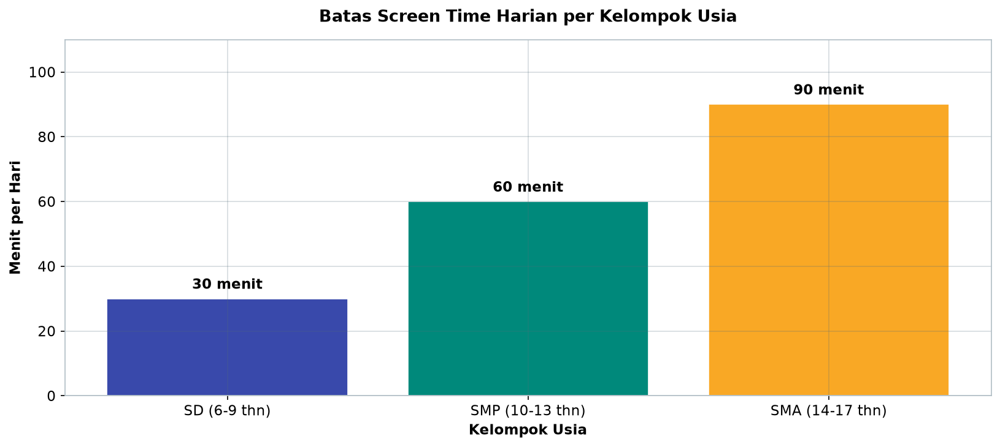
Analisis: perhatikan pola tiga kolom kanan — kategori yang berdampak langsung pada keselamatan fisik (kekerasan, judi, zat kimia) tetap diblokir di semua usia, sementara kategori kognitif (medis, politik) bertransisi bertahap dari "Blokir" ke "Peringatan/verifikasi". Ini mencerminkan prinsip: safety tidak pernah dilonggarkan, tetapi agency bertambah seiring usia. Baris paling bawah adalah screen time — ingat, filter topik tidak melindungi anak dari kecanduan layar, sehingga batas waktu perlu ditegakkan terpisah melalui script (Langkah 2).
7. Transparansi dan Edukasi
Monitor dengan Sepengetahuan Anak
Filter yang dilakukan diam-diam adalah bom waktu: anak suatu saat akan menemukannya, dan respons pertamanya adalah mencari cara menembus. Sebaliknya, transparansi — orang tua memberi tahu bahwa chat dimonitor dan blokir ada untuk melindungi — mengubah sistem keamanan menjadi alat edukasi. Momen review chat bersama mingguan bisa menjadi sesi literasi AI: mengapa jawaban ini diblokir, bagaimana model bisa berhalusinasi, apa itu prompt injection, dan mengapa ada pertanyaan yang sebaiknya ditanyakan ke orang tua — bukan ke mesin.
Jalur Resmi untuk Membuka Blokir
Anak yang ingin bertanya topik yang diblokir seharusnya punya satu pintu: meminta orang tua membuka blokir — bukan mencari jalan bypass. Pola ini mengajarkan dua hal sekaligus: bahwa aturan bisa dinegosiasikan secara sehat, dan bahwa bypass adalah pelanggaran. Keluarga Hartono dalam studi kasus Seksi 9 mempraktikkan ini dengan sukses: insiden filter mistis justru menjadi diskusi keluarga yang mempererat, bukan konflik.
8. Praktikum / Hands-On
Langkah 1: Setup NeMo Guardrails untuk Filtering Output
Membangun proxy filtering yang memisahkan jalur anak dan orang dewasa. Semua perintah dijalankan di server keluarga.
# 1. Install NeMo Guardrails
pip install nemoguardrails
# 2. Buat konfigurasi rails untuk level anak
mkdir -p guardrails/kids && cd guardrails/kids
# config.yml
cat << 'EOF' > config.yml
models:
type: main
engine: ollama
model: llama3.1:8b
parameters:
temperature: 0.3
rails:
input:
flows:
- check_blocked_keywords
output:
flows:
- check_safety
- self_check_facts
user_messages:
blocked_keywords:
- bunuh diri
- cara membuat bom
- situs dewasa
- judi online
- narkoba
EOF
# 3. Python app untuk serve guardrails
cat << 'PYEOF' > guardrails_server.py
from nemoguardrails import LLMRails, RailsConfig
from flask import Flask, request, jsonify
config = RailsConfig.from_path("./kids")
rails = LLMRails(config)
app = Flask(__name__)
@app.route("/chat", methods=["POST"])
def chat():
data = request.json
user_id = data.get("user_id", "unknown")
message = data.get("message", "")
# Cek level user
if user_id.startswith("anak_"):
response = rails.generate(messages=[{"role": "user", "content": message}])
else:
# Dewasa — bypass guardrails
response = f"Echo: {message}"
return jsonify({"response": response})
if __name__ == "__main__":
app.run(port=5000)
PYEOFDetail yang perlu diperhatikan: model diatur ke llama3.1:8b dengan temperature: 0.3 — suhu rendah membuat jawaban model lebih deterministik dan mengurangi variasi berbahaya. Kata kunci blokir ditulis dalam bahasa Indonesia dengan variasi umum. Logika user_id.startswith("anak_") adalah cara paling sederhana memisahkan jalur: akun yang diawali anak_ melewati guardrails, akun dewasa bypass — sehingga orang tua tidak dikekang oleh aturan yang dibuat untuk anak. Uji dengan curl -X POST localhost:5000/chat -d '{"user_id":"anak_1","message":"cara membuat bom"}' — jawabannya haruslah pesan maaf, bukan instruksi.
Langkah 2: Screen Time Limiter via Script
Filter topik tidak mengatur jam; script ini yang melakukannya — menonaktifkan dan mengaktifkan akun anak sesuai jadwal keluarga.
#!/bin/bash
# screen_time.sh — batasi akses anak ke Open WebUI berdasarkan waktu
USER_EMAIL="anak@keluarga.local"
OPENWEBUI_URL="http://192.168.1.100:3000"
API_KEY="admin-api-key"
# Fungsi untuk disable akun anak
disable_kids() {
curl -X POST "$OPENWEBUI_URL/api/users/disable" \
-H "Authorization: Bearer $API_KEY" \
-d "{\"email\": \"$USER_EMAIL\"}"
echo "🔴 Akun anak dinonaktifkan"
}
# Fungsi untuk enable akun anak
enable_kids() {
curl -X POST "$OPENWEBUI_URL/api/users/enable" \
-H "Authorization: Bearer $API_KEY" \
-d "{\"email\": \"$USER_EMAIL\"}"
echo "🟢 Akun anak diaktifkan"
}
# Cron schedule (di /etc/crontab):
# 0 7 * * 1-5 root enable_kids # Aktif jam 07:00 (hari sekolah)
# 0 9 * * 0,6 root enable_kids # Aktif jam 09:00 (weekend)
# 0 13 * * 1-5 root disable_kids # Mati jam 13:00 (setelah 60 menit)
# 0 11 * * 0,6 root disable_kids # Mati jam 11:00 (setelah 120 menit weekend)
# 0 20 * * * root disable_kids # Mati total jam 20:00Jadwal pada komentar menjabarkan pola 60 menit/hari dari Tabel 6.20: di hari sekolah akun aktif 07:00-13:00 (jendela enam jam untuk menegakkan batas 60 menit), di akhir pekan 09:00-11:00, dan setelah 20:00 semua akses mati. Ganti API_KEY dengan kunci admin yang sebenarnya. Kekurangan pendekatan ini: batasnya adalah jam aktif, bukan durasi pemakaian kumulatif — jika ingin menegakkan akumulasi 60 menit, kombinasikan dengan Langkah 3 yang mencatat total chat per hari.
Langkah 3: Logging dan Review Chat Otomatis
Sebuah script kecil yang setiap pagi merangkum percakapan anak kemarin dan mengirimkannya ke email orang tua.
# chat_review.py — kirim ringkasan harian chat anak ke email orang tua
import requests
import smtplib
from datetime import datetime, timedelta
OPENWEBUI_URL = "http://192.168.1.100:3000/api"
ADMIN_KEY = "admin-api-key"
PARENT_EMAIL = "ortu@email.com"
def get_kids_chats_today():
yesterday = datetime.now() - timedelta(days=1)
params = {
"user": "anak",
"since": yesterday.isoformat()
}
resp = requests.get(
f"{OPENWEBUI_URL}/chats",
headers={"Authorization": f"Bearer {ADMIN_KEY}"},
params=params
)
return resp.json()
def summarize_chats(chats):
summary = []
for chat in chats:
summary.append(f"[{chat['created_at'][:19]}] {chat['title']}")
for msg in chat.get("messages", [])[:5]: # max 5 msg per chat
summary.append(f" {msg['role']}: {msg['content'][:100]}")
return "\n".join(summary)
def send_email_report(summary):
# Kirim via SMTP atau API email
print("📧 Ringkasan chat anak hari ini:")
print(summary)
if __name__ == "__main__":
chats = get_kids_chats_today()
if chats:
send_email_report(summarize_chats(chats))Pada deployment nyata, ganti print pada send_email_report dengan sesi SMTP atau API email keluarga (misalnya, kirim via akun Gmail orang tua). Tambahkan cabang else untuk mencetak "Tidak ada chat kemarin" agar laporan tetap datang setiap pagi dan orang tua tahu jalur reporting masih berfungsi. Batasi [:5] pesan per chat agar ringkasan tetap singkat — tujuannya overview harian yang dibaca sambil sarapan, bukan arsip lengkap (arsip lengkap tetap tersimpan di Open WebUI).
9. Studi Kasus: Keluarga Hartono — 3 Anak Usia 7, 11, 15 Tahun
Latar: Keluarga Hartono memiliki tiga anak: Dita (SD kelas 2), Raka (SMP kelas 1), dan Bima (SMA kelas 2). Ketiganya sama-sama haus teknologi, tetapi memiliki kebutuhan dan tingkat kematangan yang sangat berbeda. Orang tuanya khawatir bukan karena anak-anak itu "nakal", tetapi karena LLM generatif bisa menjawab apa saja — termasuk pertanyaan yang belum seharusnya anak-anak itu dengar.
Filtering: Arsitektur yang dipasang mengikuti Tabel 6.20. Dita (SD) hanya bisa chat dengan model Ministral 3 3B — model kecil dengan safety tinggi yang edge-optimized — dengan filter ketat dan batas 30 menit/hari. Raka (SMP) mendapat akses Llama 3.1 (8B) atau Ministral 3 8B yang melewati NeMo Guardrails (dua arah: input dan output) dengan 60 menit/hari. Bima (SMA) mendapat akses penuh ke Qwen 2.5 (14B) atau Mistral Large 3 (via API) tetapi seluruh percakapannya tetap di-log, dengan batas 90 menit/hari. Dashboard Grafana dipasang untuk menampilkan jumlah query per anak, topik terpopuler, dan attempted blocked prompts.
Insiden: Suatu malam, Dita bertanya "hantu itu nyata?" — pertanyaan polos seorang anak kelas 2 yang mendengar cerita teman. Filter mistis yang dipasang untuk kelompok SD langsung memblokir pertanyaan itu, dan orang tua menerima notifikasi. Alih-alih memarahi, mereka menjadikannya momen diskusi: apa yang Dita dengar di sekolah, mengapa keluarga memilih untuk tidak membicarakan mistis lewat AI, dan — saat Dita bertanya langsung kepada ayahnya — apa penjelasan yang tenang dan jujur tentang hal itu. Beberapa hari kemudian Dita bertanya kepada AI "mengapa ada yang percaya hantu?" — pertanyaan yang sebelumnya akan diblokir, kini lolos karena orang tua telah menyesuaikan level filternya setelah diskusi tersebut.
Hasil dan pelajaran: Setahun berjalan, Dita menggunakan AI untuk menggambar cerita (kreatif, diperbolehkan), Raka untuk mengerjakan PR yang ia pahami prosesnya (bantuan PR diizinkan), dan Bima — yang paling penting — mulai belajar prompt engineering dan kini membantu orang tua mengelola model serta menyesuaikan aturan filter. Orang tua tenang karena seluruh percakapan terpantau; anak-anak merasa bebas karena aturannya transparan dan bisa dinegosiasikan. Pelajaran kunci dari studi kasus ini: parental control yang baik bukan tembok, melainkan pagar yang terus bergeser bersama tumbuhnya anak.
10. Referensi
Paper Jurnal/Konferensi
[1] Bodhankar, A. (2024). Content Moderation and Safety Checks with NVIDIA NeMo Guardrails. NVIDIA Technical Blog. https://developer.nvidia.com/blog/content-moderation-and-safety-checks-with-nvidia-nemo-guardrails/
- Framework utama content filtering yang digunakan di tutorial; arsitektur multi-layer (input, output, retrieval) menjadi acuan Seksi 3.
[2] Li, Y., et al. (2025). R²-Guard: Robust Reasoning Enabled LLM Guardrail via Interpretable Logical Reasoning. AAAI Conference on Artificial Intelligence. https://openreview.net/forum?id=CkgKSqZbuC
- Teknik guardrail berbasis logical reasoning yang lebih robust dari keyword filtering — relevan untuk peningkatan filter di layer output.
[3] Chen, Y., et al. (2024). Harmony: A Privacy-Preserving and Robust Smart Home Assistant Powered by Locally Deployable Llama3-8B. arXiv preprint: 2410.14252. DOI: 10.48550/arXiv.2410.14252 (https://arxiv.org/abs/2410.14252)
- Arsitektur agent yang bisa dikonfigurasi per-user — model untuk multi-user access control di Seksi 5.
[4] Andreoletti, D., et al. (2026). Privacy-Preserving LLM Inference in Practice: A Comparative Survey of Techniques, Trade-Offs, and Deployability. Cryptology ePrint Archive, Paper 2026/105. https://eprint.iacr.org/2026/105
- Analisis trust model — data anak tetap aman di server lokal, tidak bocor ke cloud; justifikasi local-first untuk parental control.
[5] Huang, X., et al. (2025). Towards Privacy-Preserving and Personalized Smart Homes via Tailored Small Language Models. IEEE Transactions on Mobile Computing. DOI: 10.48550/arXiv.2507.08878 (https://arxiv.org/abs/2507.08878)
- User profiling yang bisa disesuaikan — relevan untuk personalisasi level filtering per anak.
Referensi Pendukung (Dokumentasi/Repository)
[6] NVIDIA. NeMo Guardrails GitHub Repository. https://github.com/NVIDIA/NeMo-Guardrails
[7] Open WebUI. User Management. https://github.com/open-webui/open-webui
[8] Meta. Llama Guard 8B — Safety Model. https://huggingface.co/meta-llama/LlamaGuard-8B
[9] Common Sense Media. AI Guidelines for Kids. https://www.commonsensemedia.org
[10] OWASP. LLM Top 10 for LLM Security. https://owasp.org/www-project-top-10-for-llm-applications
Bab 6.7: Multimedia AI
Bayangkan ini: "Bu, ingatkan beli beras!" — diucapkan sambil berlari keluar rumah, dan dua detik kemudian kalimat itu sudah tertulis rapi di catatan keluarga. Tidak ada tombol ditekan, tidak ada aplikasi dibuka, tidak ada data yang melayang ke awan. Inilah janji voice AI di ruang tamu: rumah yang mendengar, memahami, dan bertindak — dengan latency sekecil menoleh, karena seluruh proses berjalan di server Anda sendiri.
1. Tujuan Sub-Bab
Setelah membaca sub-bab ini, Anda akan mampu:
- Menyiapkan pipeline speech-to-text real-time dengan Whisper di server rumah
- Mengintegrasikan transkrip suara ke berbagai aplikasi — catatan, smart home, reminder, diari keluarga
- Mengoptimalkan latensi suara agar terasa natural (end-to-end di bawah 2 detik)
- Memilih ukuran model Whisper yang tepat (Tiny hingga Turbo) berdasarkan hardware dan kebutuhan
- Membangun node mikrofon wireless (ESP32-S3) dan server WebSocket untuk audio streaming
2. Konsep ASR Real-Time di Edge
Dari Gelombang Suara ke Teks
Automatic Speech Recognition (ASR) adalah teknologi yang mengubah audio menjadi teks — dan di antara semua model ASR modern, Whisper dari OpenAI adalah bintangnya. Whisper adalah model transformer multilingual yang dilatih dengan weak supervision pada ratusan ribu jam audio, dan — kabar baik untuk keluarga Indonesia — mendukung bahasa Indonesia secara langsung [1]. Dengan Whisper, perintah "hidupkan lampu" atau percakapan makan malam bisa ditranskrip tanpa mengonfigurasi bahasa secara manual.
Real-Time ≠ Streaming
Kesalahpahaman umum: real-time berarti transkrip kata-per-kata saat berbicara. Sebenarnya, definisi yang lebih berguna untuk kebutuhan rumah adalah latensi ujung-ke-ujung di bawah 2 detik — dari mulut bicara hingga aksi terjadi (atau teks tampil). Streaming chunk-by-chunk hanyalah salah satu teknik untuk mencapai itu; pendekatan segmented (rekam kalimat, transkrip saat jeda) sering lebih akurat dengan latensi yang hampir sama, seperti akan Anda lihat di Tabel 6.23.
Mengapa Lokal Lebih Menang
Menjalankan ASR di server rumah memberi tiga keunggulan sekaligus. Privasi: audio keluarga — termasuk percakapan makan malam yang tidak direncanakan — tidak pernah dikirim ke server pihak ketiga. Latensi: tanpa perjalanan pulang-pergi ke cloud, respons terasa jauh lebih alami. Biaya: tanpa langganan per jam atau per menit; setelah hardware terpasang, transkrip berapa pun gratis. Survei privacy-preserving LLM inference menegaskan bahwa menjalankan model di edge menghilangkan risiko kebocoran data sekaligus biaya berulang [4].
Tabel 6.21: Perbandingan Model Whisper untuk Real-Time
Pilih model dengan mencocokkan prioritas keluarga (kecepatan vs akurasi) terhadap hardware yang tersedia.
| Model | Parameter | Ukuran | WER (ID) | Latency GPU | Latency CPU | RAM | Ideal Untuk |
|---|---|---|---|---|---|---|---|
| Tiny | 39M | ~75 MB | ~18% | 0.3 detik | 1.5 detik | ~1 GB | Voice command |
| Base | 74M | ~140 MB | ~14% | 0.4 detik | 2.0 detik | ~1.5 GB | Command + dictasi |
| Small | 244M | ~0.5 GB | ~10% | 0.6 detik | 3.5 detik | ~2 GB | Sweet spot |
| Medium | 769M | ~1.5 GB | ~7% | 1.0 detik | 6.0 detik | ~4 GB | Transkrip akurat |
| Large-v3 | 1.55B | ~3.1 GB | ~5% | 1.5 detik | 12 detik | ~6 GB | Akurasi maksimal |
| Turbo | 809M | ~1.6 GB | ~5.5% | 0.7 detik | 4.0 detik | ~3 GB | Large quality, small speed |
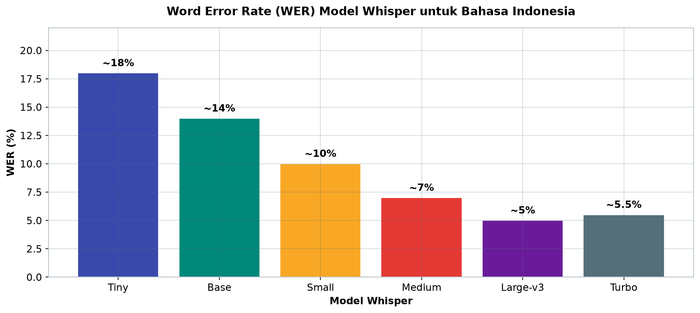
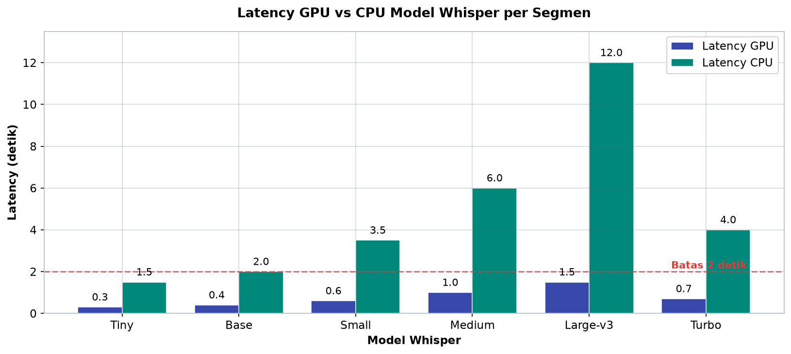
Analisis: dua kolom yang paling menentukan keputusan adalah Latency CPU dan WER. Jika server keluarga tidak memiliki GPU, hanya Tiny dan Base yang berada di zona nyaman sub-2 detik — dan Tiny dengan WER ~18% masih cukup untuk perintah pendek yang vokabulernya terbatas ("nyalakan lampu", "buat catatan"). Dengan GPU, Small membuka zona akurasi tinggi (~10% WER) dengan latensi hanya 0,6 detik — inilah sweet spot yang direkomendasikan di seksi 3. Perhatikan juga kolom RAM: seluruh keluarga Whisper muat di RAM server 16 GB, bahkan dengan LLM pendamping — jadi model bukan pembatas hardware, GPU-lah pembatasnya.
3. Model Whisper: Memilih Ukuran yang Tepat
Keluarga Model Whisper
Whisper hadir dalam beberapa ukuran dengan keseimbangan kecepatan-akurasi yang berbeda:
- Tiny (39M parameter, ~75 MB): WER ~18%, sangat cepat — ideal untuk voice command sederhana
- Base (74M, ~140 MB): WER ~14% — kompromi untuk command + dikte singkat
- Small (244M, ~0.5 GB): WER ~10% — keseimbangan terbaik untuk rumah, dan pilihan utama sub-bab ini
- Medium (769M, ~1.5 GB): WER ~7% — untuk transkrip yang butuh akurasi tinggi
- Large-v3 (1.55B, ~3.1 GB): WER ~5% — akurasi maksimal, cocok untuk batch offline
- Turbo (809M, ~1.6 GB): WER ~5.5% — kualitas Large dengan kecepatan Small
Dua peningkatan infrastruktur layak dicatat. faster-whisper adalah implementasi ulang Whisper di atas CTranslate2 yang 4× lebih cepat dari Whisper asli, dengan penggunaan memori lebih kecil. Whisper Turbo adalah versi distilled yang mempertahankan kualitas Large sambil melaju dengan kecepatan Small.
Kapan Memilih yang Mana
Aturan praktis untuk rumah: gunakan Small sebagai sweet spot — akurasinya cukup untuk percakapan normal Indonesia, dan latensinya di GPU hanya ~0,6 detik. Turun ke Tiny jika server tidak punya GPU atau jika trafik voice command sangat padat; naik ke Medium/Turbo jika tujuan utamanya transkrip rapat keluarga atau wawancara yang harus akurat. Large-v3 hampir tidak pernah diperlukan secara real-time — simpan untuk batch file audio di malam hari.
4. Arsitektur Voice Pipeline untuk Ruang Tamu
Empat Pilar: Mic, Server, LLM, Output
Pipeline suara ruang tamu terdiri dari empat blok. Tangkap: microphone array (misalnya MiniDSP UMA-8 dengan 8 mikrofon) atau node wireless ESP32-S3 + mikrofon I2S INMP441 yang mengirim audio streaming via WebSocket. Transkrip: server menjalankan faster-whisper + VAD (Voice Activity Detection) untuk memutuskan kapan seseorang mulai dan selesai bicara. Pahami & bertindak: teks diteruskan ke LLM (melalui Ollama) yang mengubahnya menjadi aksi — nyalakan lampu, buat catatan, pasang reminder. Ucapkan: respons dibacakan kembali lewat TTS (Piper) atau dijalankan langsung sebagai aksi smart home.
Wake Word: "Hai Rumah"
Agar sistem tidak menyalin seluruh percakapan keluarga sepanjang hari, gunakan wake word — kata pemicu yang disadap mikrofon secara kontinu oleh detektor ringan. openWakeWord adalah pilihan populer: ringan (~100 MB RAM), berjalan terus-menerus, dan memicu pipeline penuh hanya saat kata seperti "Hai Rumah" terdengar. Dengan wake word, biaya komputasi sehari-hari sistem suara mendekati nol.
Server Tanpa GPU: Mungkin, dengan Syarat
Jalur CPU-only tetap bisa berfungsi, tetapi dengan kompromi latensi: Whisper Small di CPU butuh ~3,5 detik per segmen — di atas batas nyaman 2 detik. Solusinya, pilih model yang lebih kecil (Tiny ~1,5 detik), atau gunakan Ministral 3 3B sebagai LLM pengolah perintah — hanya butuh ~2 GB RAM dan bisa jalan CPU-only dengan latensi di bawah 2 detik. Untuk GPU tersedia, DeepSeek V4 Flash dengan konteks 1 juta token bahkan bisa memproses transkrip obrolan keluarga seharian penuh dalam satu prompt tanpa kehilangan konteks.
Tabel 6.22: Komponen Hardware Voice Pipeline
Perkiraan belanja untuk membangun sisi input/output suara rumah.
| Komponen | Fungsi | Rekomendasi | Harga (IDR) |
|---|---|---|---|
| Microphone array | Tangkap suara ruangan | MiniDSP UMA-8 (8 mic) | ~Rp 1jt |
| USB microphone | Alternatif sederhana | Blue Yeti / Fifine | ~Rp 500rb |
| ESP32-S3 + I2S mic | Wireless mic node | ESP32-S3 + INMP441 | ~Rp 150rb |
| Speaker | Output TTS | Edifier R1280T | ~Rp 600rb |
| GPU | Akselerasi Whisper | RTX 3090/4090 | (dari server) |
Analisis: perhatikan bahwa sebagian besar biaya ada di sisi input — dan ESP32-S3 + INMP441 di ~Rp 150rb per node adalah nilai terbaik untuk rumah yang ingin multi-room (tiga ruangan = ~Rp 450rb, masih lebih murah dari satu microphone array). MiniDSP UMA-8 unggul bila satu meja makan adalah pusat percakapan — 8 arah berarti siapa pun yang bicara tertangkap jelas. GPU tidak perlu dibeli baru: RTX 3090 yang sudah digunakan server keluarga (lihat Bab 6.8) menjalankan Whisper Small sekaligus LLM tanpa kewalahan.
5. Optimasi Latency
VAD: Tahu Kapan Diam Berarti Selesai
Tanpa VAD, sistem tidak tahu kapan sebuah perintah berakhir — ia akan menunggu tanpa batas atau memotong kalimat di tengah. Silero VAD dan WebRTC VAD memecahkan masalah ini dengan mendeteksi jeda bicara (biasanya ~1 detik diam dianggap akhir kalimat). Ini adalah penghemat latensi terbesar dalam pipeline: tanpa VAD, setiap segmen membawa "ekor diam" yang terbuang.
Two-Pass: Tiny untuk Memutuskan, Small untuk Menulis
Teknik yang elegan untuk menyeimbangkan kecepatan dan akurasi: two-pass. Model Tiny melakukan transkrip cepat untuk memutuskan apakah segmen itu ucapan yang berarti atau hanya suara TV; jika berarti, model Small (atau Turbo) menulis transkrip final. Hasilnya: latensi mendekati Tiny dengan akurasi mendekati Small — kombinasi terbaik untuk voice command (lihat Tabel 6.23).
Batching dan Transport
Whisper paling efisien saat memproses audio ~30 detik per batch — lebih panjang justru menambah latensi tanpa manfaat. Untuk transport, WebSocket lebih cepat dari HTTP polling: koneksi sekali dibuka, audio mengalir dua arah tanpa handshake berulang. Perpaduan VAD + two-pass + WebSocket inilah yang membawa latensi turun dari ~6-12 detik (CPU, single-pass) menjadi ~0,8 detik di GPU.
Tabel 6.23: Perbandingan Pipeline ASR untuk Latency
Empat arsitektur berbeda untuk empat kebutuhan berbeda.
| Pipeline | VAD | Model | Latency (GPU) | Akurasi | Use Case |
|---|---|---|---|---|---|
| Two-pass (Cepat) | Silero VAD | Tiny → Small | 0.8 detik | Tinggi | Voice command |
| Single-pass (Akurat) | Silero VAD | Turbo | 1.2 detik | Sangat Tinggi | Transkrip rapat |
| Streaming (Chunk) | WebRTC VAD | Tiny | 0.4 detik | Sedang | Quick command |
| Batch (Offline) | — | Large-v3 | 2.0 detik | Sangat Tinggi | Transkrip file |
Analisis: baris Streaming menunjukkan kecepatan ekstrem (0,4 detik) dengan mengorbankan akurasi — transkrip parsial yang tampil kata-per-kata. Two-pass adalah pemenang untuk kebutuhan harian: kecepatan hampir secepat streaming dengan akurasi setara single-pass. Batch offline bukan pipeline real-time — ia trade latensi untuk akurasi maksimal saat memproses rekaman lama atau wawancara. Untuk keluarga yang menginginkan satu pola: jalankan two-pass sepanjang hari, dan batch Large-v3 seminggu sekali untuk arsip.
6. Multi-Room Audio
Satu Server, Banyak Telinga
Rumah bukan satu ruangan: mikrofon di ruang tamu, dapur, dan kamar anak bisa berbagi satu server ASR. Setiap node memiliki identifier unik yang melekat pada aliran datanya, sehingga sistem tahu suara datang dari ruangan mana — berguna saat dua orang bicara bersamaan, atau saat perintah "matikan lampu" harus ditargetkan ke ruangan asal suara. MQTT menjadi pilihan transport antar node karena publish-subscribe-nya yang ringan; WebSocket dipakai untuk aliran audio mentah yang kontinu.
Musuh Multi-Room: Echo dan Feedback
Dua masalah khas multi-mikrofon adalah echo (suara speaker tertangkap mikrofon) dan feedback (siulan bernada tinggi). Aturan emasnya: mute speaker saat pipeline aktif — sistem yang sedang mendengarkan tidak boleh bersuara, dan sistem yang sedang berbicara (TTS) harus menangguhkan pendengaran. Di arsitektur sederhana, satu jalur mute di aplikasi orkestrasi sudah cukup mencegah keduanya.
7. Aplikasi Transkrip Real-Time
Empat Guna Utama
Setelah teks mengalir, nilainya bergantung pada aplikasi yang menampungnya:
- Catatan otomatis: "Ibu: beli telur di pasar" → tersimpan rapi di notes keluarga
- Smart home: "Hidupkan lampu" → aksi Home Assistant, 2 detik kemudian lampu menyala
- Reminder: "Ingatkan saya jemput anak jam 3" → masuk kalender bersama notifikasi
- Diari keluarga: transkrip obrolan makan malam → arsip mingguan yang bisa dibaca ulang bertahun-tahun
Keempatnya berbagi satu pipeline; yang membedakan hanyalah rute tujuan di lapisan aplikasi — dan semuanya bisa diaktifkan bertahap: mulai dari catatan, lalu smart home, baru diari.
Alur lengkap suara dari ruang tamu hingga aksi di aplikasi keluarga.
Perhatikan dua hal dalam diagram ini. Pertama, mikrofon fisik (MIC) dan node wireless (ESP) berada di subgraf "Ruang Tamu" — satu-satunya bagian yang menyentuh kehidupan nyata keluarga — sementara seluruh kecerdasan (VAD, Whisper, LLM, TTS) tinggal di server. Kedua, LLM bercabang ke empat aplikasi sekaligus, dan hanya smart home yang membutuhkan jalur balik ke TTS (respons suara); catatan dan kalender cukup diam-diam menulis, tanpa perlu "menjawab". Jalur TTS --> MIC mungkin tampak aneh di dunia nyata — tujuannya mengingatkan kita pada masalah echo dari seksi 6: suara yang keluar dari speaker (MIC di diagram mewakili lokasi fisiknya) harus dimatikan saat mendengarkan.
8. Praktikum / Hands-On
Langkah 1: Setup faster-whisper untuk Transkrip Real-Time
Pipeline speech-to-text siap jalan dengan VAD, transkrip otomatis per kalimat, dan pengiriman hasil ke aplikasi lain. Simpan sebagai realtime_stt.py.
# realtime_stt.py — pipeline transkrip suara real-time dengan faster-whisper
import pyaudio
import numpy as np
from faster_whisper import WhisperModel
import webrtcvad
import collections
import threading
import time
# Inisialisasi model Whisper Small (GPU)
model = WhisperModel("small", device="cuda", compute_type="float16")
vad = webrtcvad.Vad(2) # Aggressiveness 0-3
# Audio config
FORMAT = pyaudio.paInt16
CHANNELS = 1
RATE = 16000
CHUNK = 480 # 30ms per chunk
audio = pyaudio.PyAudio()
stream = audio.open(format=FORMAT, channels=CHANNELS, rate=RATE,
input=True, frames_per_buffer=CHUNK)
print("🎤 Mendengarkan... Tekan Ctrl+C untuk berhenti")
buffer = []
silence_counter = 0
MIN_SILENCE = 30 # 30 chunk silent = ~1 detik
def transcribe_audio(audio_chunk):
"""Transkrip chunk audio via faster-whisper"""
audio_array = np.frombuffer(audio_chunk, dtype=np.int16).astype(np.float32) / 32768.0
segments, info = model.transcribe(audio_array, language="id", beam_size=5)
text = " ".join(seg.text for seg in segments)
if text.strip():
print(f"📝 [{time.strftime('%H:%M:%S')}] {text}")
# Kirim ke aplikasi lain via MQTT atau API
# requests.post("http://localhost:3000/api/transcript", json={"text": text})
try:
while True:
chunk = stream.read(CHUNK, exception_on_overflow=False)
# VAD: deteksi apakah ada suara
is_speech = vad.is_speech(chunk, RATE)
if is_speech:
buffer.append(chunk)
silence_counter = 0
else:
silence_counter += 1
if silence_counter < MIN_SILENCE and len(buffer) > 0:
buffer.append(chunk)
# Jika silent > threshold dan ada buffer, transkrip
if silence_counter >= MIN_SILENCE and len(buffer) > 0:
audio_data = b"".join(buffer)
threading.Thread(target=transcribe_audio, args=(audio_data,)).start()
buffer = []
silence_counter = 0
except KeyboardInterrupt:
print("\n⏹️ Berhenti")
stream.close()
audio.terminate()Bongkar tiga bagian kode ini. Pertama, compute_type="float16" memanfaatkan tensor core GPU — setengah dari memori dan waktu komputasi FP32. Kedua, webrtcvad.Vad(2) dengan aggressiveness 2: nilai 0 terlalu permisif (bising ikut terekam), 3 terlalu agresif (bisa memotong awal kalimat) — 2 adalah titik tengah yang aman untuk ruang keluarga. Ketiga, transkrip dijalankan di thread terpisah (threading.Thread) agar loop pendengaran tidak pernah berhenti meski model sedang memproses kalimat sebelumnya — inilah pola pipelining yang menjaga keseluruhan sistem tetap real-time. Uji dulu dengan device="cpu" jika server belum punya GPU, lalu pindah ke cuda.
Langkah 2: Setup ESP32-S3 sebagai Wireless Microphone Node
Sisi hardware: satu node mikrofon wireless yang mengirim audio 16 kHz ke server. Unggah kode ini ke ESP32-S3 dengan Arduino IDE (tambahkan library WebSocketsClient dan I2S).
// esp32_mic_node.ino — ESP32-S3 + INMP441 I2S mic ke server via WebSocket
#include <WiFi.h>
#include <WebSocketsClient.h>
#include <I2S.h>
const char* ssid = "WiFi Keluarga";
const char* password = "password123";
const char* ws_host = "192.168.1.100"; // IP server
const int ws_port = 8765;
WebSocketsClient webSocket;
// I2S config
I2S i2s(INPUT);
const int SAMPLE_RATE = 16000;
const int CHUNK_SIZE = 480; // 30ms
void setup() {
Serial.begin(115200);
WiFi.begin(ssid, password);
while (WiFi.status() != WL_CONNECTED) delay(500);
webSocket.begin(ws_host, ws_port, "/audio");
webSocket.onEvent(webSocketEvent);
i2s.setDATA(41); // DIN pin
i2s.setBCLK(40); // BCLK pin
i2s.setMCLK(42); // MCLK pin (optional)
i2s.begin(I2S_PHILIPS_MODE, SAMPLE_RATE, 16);
}
void loop() {
webSocket.loop();
int16_t buffer[CHUNK_SIZE];
size_t bytes_read = i2s.readBytes((char*)buffer, CHUNK_SIZE * 2);
if (bytes_read > 0) {
webSocket.sendBIN((uint8_t*)buffer, bytes_read);
}
delay(10);
}Empat parameter yang harus disesuaikan dengan rumah Anda: SSID dan kata sandi WiFi, IP server (192.168.1.100 diganti alamat server keluarga), dan tiga pin I2S — setDATA(41), setBCLK(40), setMCLK(42) mengikuti konvensi pinout ESP32-S3 standar untuk INMP441, tetapi periksa kembali diagram pin devkit Anda. Perhatikan CHUNK_SIZE = 480 (30 ms × 16 kHz): ukuran yang sama dengan CHUNK di Langkah 1, sehingga server menerima paket yang sudah sempurna untuk VAD. Tambahkan delay(10) dimaksudkan agar loop tidak membanjiri WebSocket; bila audio terputus-putus, kurangi menjadi delay(1).
Langkah 3: WebSocket Server untuk Menerima Audio
Server penerima yang mengumpulkan paket audio ESP32 dan mentranskripnya setiap 3 detik. Simpan sebagai ws_audio_server.py.
# ws_audio_server.py — WebSocket server untuk menerima audio dari ESP32
import asyncio
import websockets
import numpy as np
from faster_whisper import WhisperModel
model = WhisperModel("tiny", device="cuda", compute_type="float16")
audio_buffer = bytearray()
async def handle_audio(websocket):
global audio_buffer
print("✅ ESP32 terhubung")
async for message in websocket:
audio_buffer.extend(message)
# Setelah 3 detik audio, transkrip
if len(audio_buffer) > 48000 * 2: # 3 detik @ 16kHz 16-bit
audio_array = np.frombuffer(audio_buffer, dtype=np.int16).astype(np.float32) / 32768.0
segments, _ = model.transcribe(audio_array, language="id")
for seg in segments:
print(f"📝 {seg.text}")
await websocket.send(f"TRANSCRIPT:{seg.text}")
audio_buffer = bytearray()
start_server = websockets.serve(handle_audio, "0.0.0.0", 8765)
asyncio.get_event_loop().run_until_complete(start_server)
asyncio.get_event_loop().run_forever()Catatan desain yang penting di sini: server menggunakan model Tiny, bukan Small — karena ia bertugas sebagai detektor cepat ala two-pass (mendeteksi apa yang dikatakan, secepat mungkin); transkrip final berkualitas Small/Turbo bisa ditambahkan sebagai tahap kedua yang dipicu ketika teks Tiny lolos filter. Konversi np.int16 → float32 dengan pembagian 32768.0 adalah standar bagi Whisper yang menerima audio ternormalisasi -1.0..1.0. Batas 48000 * 2 byte setara 3 detik audio 16-bit — modifikasi angka ini untuk mengubah frekuensi transkrip (semakin kecil, semakin cepat tetapi semakin sering terpotong di tengah kalimat).
9. Studi Kasus: Rumah Keluarga Kusuma — Ruang Tamu dengan Voice AI
Latar: Rumah keluarga Kusuma bertipe 36/72 dengan ruang tamu dan dapur terbuka. Lima anggota keluarga aktif berbicara — masalah terbaik yang bisa dimiliki sebuah rumah. Ibu selalu lupa mencatat belanjaan, ayah sering tidak mendengar jeritan "ayah jemput aku jam 3" dari kamar anak, dan lampu ruang tamu selalu menyala karena tak seorang pun mau bangkit dari sofa.
Hardware dan pipeline: Dua node ESP32-S3 + INMP441 dipasang di ruang tamu dan dapur; satu MiniDSP UMA-8 di meja makan untuk menangkap 8 arah pembicaraan. Server RTX 3090 menjalankan faster-whisper Small dengan Silero VAD. Alurnya: ESP32 → WebSocket → VAD → faster-whisper → Ollama → aksi.
Aplikasi yang hidup: "Bu, ingatkan beli beras" → tersimpan di notes keluarga. "Hidupkan lampu" → dua detik kemudian lampu ruang tamu menyala. "Ayah, jemput aku jam 3" → notifikasi terkirim ke ponsel ayah. Dan yang paling berharga — transkrip obrolan makan malam dikumpulkan menjadi diari keluarga mingguan, dibaca ulang saat kumpul keluarga besar.
Hasil dan pelajaran: Akurasi mencapai ~92% untuk percakapan normal, turun ke ~80% saat TV menyala — penurunan yang wajar dan bisa ditebus dengan beam size lebih besar atau model Medium saat dibutuhkan. Latensi rata-rata 1,8 detik dari bicara hingga aksi/TTS — tepat di bawah batas 2 detik yang ditetapkan di seksi 2. Pelajaran utama yang dibagikan keluarga Kusuma: mulailah dari dua aplikasi saja (catatan + lampu), biarkan keluarga terbiasa sebelum menambahkan diari dan reminder — sistem suara yang terlalu banyak fitur di hari pertama justru membuat anggota keluarga enggan berbicara padanya.
10. Referensi
Paper Jurnal/Konferensi
[1] Radford, A., et al. (2023). Robust Speech Recognition via Large-Scale Weak Supervision. Proceedings of the International Conference on Machine Learning (ICML). DOI: 10.48550/arXiv.2212.04356 (https://arxiv.org/abs/2212.04356)
- Paper fundamental Whisper — model ASR multilingual yang mendukung bahasa Indonesia; dasar data WER per model di Tabel 6.21.
[2] Durmus, B., et al. (2025). WhisperKit: On-device Real-time ASR with Billion-Scale Transformers. arXiv preprint: 2507.10860. https://arxiv.org/abs/2507.10860
- Sistem on-device Whisper — latensi 0,46 detik dengan WER 2,2%; arsitektur streaming encoder-decoder menjadi acuan pipeline Seksi 4.
[3] Wang, H., et al. (2024). Simul-Whisper: Attention-Guided Streaming Whisper with Truncation Detection. INTERSPEECH. DOI: 10.21437/Interspeech.2024-1814 (https://arxiv.org/abs/2406.10052)
- Teknik chunk-based streaming untuk Whisper tanpa fine-tuning — chunk 1 detik dengan degradasi WER hanya 1,46%.
[4] Feng, C., et al. (2025). Edge-ASR: Towards Low-Bit Quantization of Automatic Speech Recognition Models. arXiv preprint: 2507.07877. https://arxiv.org/abs/2507.07877
- Benchmark 8 metode post-training quantization untuk Whisper dan Moonshine — 3-bit quantization masih viable; relevan untuk optimasi model di edge device.
[5] De Cicco, L., & Mascolo, S. (2025). Real-Time Speech-to-Text on Edge: A Prototype System for Ultra-Low Latency Communication with AI-Powered NLP. Information (MDPI), 16(8), 685. DOI: 10.3390/info16080685 (https://www.mdpi.com/2078-2489/16/8/685)
- Prototipe STT real-time di edge dengan latensi sub-second — arsitektur WebSocket menjadi referensi pipeline pada tutorial.
Referensi Pendukung (Dokumentasi/Repository)
[6] OpenAI. Whisper GitHub Repository. https://github.com/openai/whisper
[7] SYSTRAN. faster-whisper GitHub Repository. https://github.com/SYSTRAN/faster-whisper
[8] Silero. Silero VAD GitHub Repository. https://github.com/snakers4/silero-vad
[9] rhasspy. Piper TTS GitHub Repository. https://github.com/rhasspy/piper
[10] dscripka. openWakeWord GitHub Repository. https://github.com/dscripka/openWakeWord
Bab 6.8: Budgeting Home
Ada dua cara membeli mobil: mencicil tanpa pernah punya, atau membayar lunas lalu mencicil bensin. Server LLM rumahan adalah pembelian lunas — mahal di depan, murah setelahnya; langganan cloud adalah cicilan abadi — murah di awal, dan tidak pernah berakhir. Sub-bab ini menyediakan kalkulator mental (dan literal) untuk memutuskan mana yang benar untuk keluarga Anda, dengan angka rupiah yang bisa diperiksa lewat tagihan listrik.
1. Tujuan Sub-Bab
Setelah membaca sub-bab ini, Anda akan mampu:
- Menghitung total biaya kepemilikan (TCO) server LLM rumahan dalam 3 tahun — CAPEX hingga OPEX
- Membandingkan biaya LLM lokal versus langganan cloud (ChatGPT, Claude, Gemini) untuk 5 anggota keluarga
- Memahami break-even point dan faktor-faktor yang memengaruhi ROI — tarif listrik, jam operasi, nilai jual kembali
- Menyusun build dengan tiga tier anggaran dan menghitung biaya listrik tahunan masing-masing
- Memperhitungkan biaya tersembunyi: UPS, perawatan, upgrade storage, dan kontinjensi
2. Komponen Biaya Server LLM Rumahan
CAPEX vs OPEX: Dua Kantong yang Berbeda
Biaya server rumahan terbagi dalam dua kantong. CAPEX (Capital Expenditure) adalah pengeluaran modal sekali beli: GPU, CPU, RAM, storage, case, dan PSU. Ini angka yang besar dan terlihat. OPEX (Operational Expenditure) adalah biaya operasional tahunan: listrik, internet, penggantian storage, dan spare part. Ini angka yang kecil per bulan tetapi berjalan terus — dan justru di sinilah perbandingan lokal vs cloud sering dimenangkan atau dikalahkan. Kerangka life-cycle cost semacam ini mengikuti metodologi analisis TCO pada literatur edge LLM: biaya total = biaya akuisisi + biaya operasi + biaya pemeliharaan dikurangi nilai sisa [2].
Biaya Tersembunyi yang Sering Dilupakan
Pembangun server pemula hampir selalu melupakan tiga biaya "hantu": AC ruangan (GPU 450W mengubah ruangan server menjadi sauna — ruang ber-AC menambah tagihan yang tidak terlihat di meteran GPU), UPS untuk melindungi perangkat keras dari mati listrik mendadak, dan kabel/alat kecil yang jumlahnya mengejutkan. Bab ini memasukkan yang paling berdampak ke perhitungan; sisanya dibahas di seksi 6.
3. Lima Tier Build
Build Hemat (Rp 25-30 juta)
RTX 3090 used + Ryzen 7 + 32 GB DDR4. Ini entry point yang paling rasional untuk keluarga Indonesia: kartu bekas menawarkan 24 GB VRAM dengan harga jauh di bawah kartu baru, dan kapasitas itu cukup untuk model 7-14B — rangkaian yang mencakup Ministral 3 8B/14B yang menjadi andalan RAG keluarga di Bab 6.5. Batasannya: GPU bekas berisiko wear and tear, dan hanya satu GPU berarti upgrade model besar tidak dimungkinkan tanpa mengulang dari nol.
Build Performa (Rp 40-45 juta)
RTX 4090 + Ryzen 7 7800X3D + 64 GB DDR5. Langkah naik ini membuka kelas model 14-33B — termasuk Qwen 2.5 (14B), Llama 3.1 (33B), dan sebagian besar model yang dibahas di jilid ini, cukup cepat untuk inference interaktif. DDR5 + X3D juga mempercepat offload saat konteks memanjang. Ini adalah build yang paling "tidak akan Anda sesali" dalam 3 tahun — dan studi kasus Seksi 9 memilihnya.
Build Premium (Rp 55-70 juta)
Mac Studio M2 Ultra 192 GB. Pilihan berbeda: unified memory 192 GB memungkinkan model 70B berjalan tanpa kuantisasi — kualitas penuh yang tidak bisa dicapai build GPU kelas menengah mana pun. Bonusnya, konsumsi daya sangat rendah (~60W rata-rata, lihat Tabel 6.25) sehingga tagihan listrik tahunan hampir tidak terasa. Kekurangannya: harga tiket masuk tinggi, ekosistem software AI lokal (CUDA) tidak tersedia, dan upgrade tidak mungkin sebagian.
Build Edge Hemat (Rp 8-12 juta)
NUC/Mini PC + 16 GB RAM. Pilihan minimalis untuk keluarga yang hanya butuh Ministral 3 3B/8B secara CPU-only. Konsumsi di bawah 30W — hampir gratis dalam hitungan listrik — dan cocok dipasang di rak TV. Ini bukan untuk tugas berat: model 3B tidak akan menjawab soal olimpiade, tetapi untuk voice command, catatan, dan otomasi rumah, ia lebih dari cukup (lihat Bab 6.7).
Build Home High-End (Rp 60-80 juta)
2× RTX 4090 + Ryzen 9 + 128 GB RAM. Untuk keluarga yang serius: DeepSeek V4 Flash (284B total, 13B aktif) dengan kuantisasi INT4, atau Mistral Large 3 — kualitas frontier di rumah. Konsekuensinya jelas di tagihan listrik: ~350W rata-rata, sekitar Rp 273rb/bulan saja untuk GPU (Tabel 6.25). Ini investasi untuk pengguna yang benar-benar memakai — power user dan programmer keluarga.
Semua build di atas sudah termasuk komponen pendukung (case, PSU, storage, networking) — jadi angka yang tercantum adalah angka jadi, bukan harga GPU saja.
Tabel 6.24: TCO 3 Tahun — Build Hemat vs Performa vs Cloud
Tabel ini adalah jantung sub-bab: perbandingan kumulatif tiga opsi untuk lima anggota keluarga.
| Komponen Biaya | Build Hemat (RTX 3090) | Build Performa (RTX 4090) | Cloud ChatGPT Team (5 org) |
|---|---|---|---|
| CAPEX Hardware | Rp 27.000.000 | Rp 45.000.000 | Rp 0 |
| Listrik/tahun | Rp 1.920.000 | Rp 2.560.000 | Rp 0 |
| Subscription/tahun | Rp 0 | Rp 0 | Rp 24.000.000 |
| Maintenance/tahun | Rp 500.000 | Rp 500.000 | Rp 0 |
| Total Tahun 1 | Rp 29.420.000 | Rp 48.060.000 | Rp 24.000.000 |
| Total Tahun 2 | Rp 31.840.000 | Rp 51.120.000 | Rp 48.000.000 |
| Total Tahun 3 | Rp 34.260.000 | Rp 54.180.000 | Rp 72.000.000 |
| Nilai Jual Kembali (30%) | -Rp 8.100.000 | -Rp 13.500.000 | Rp 0 |
| TCO 3 Tahun Bersih | ~Rp 26.160.000 | ~Rp 40.680.000 | Rp 72.000.000 |
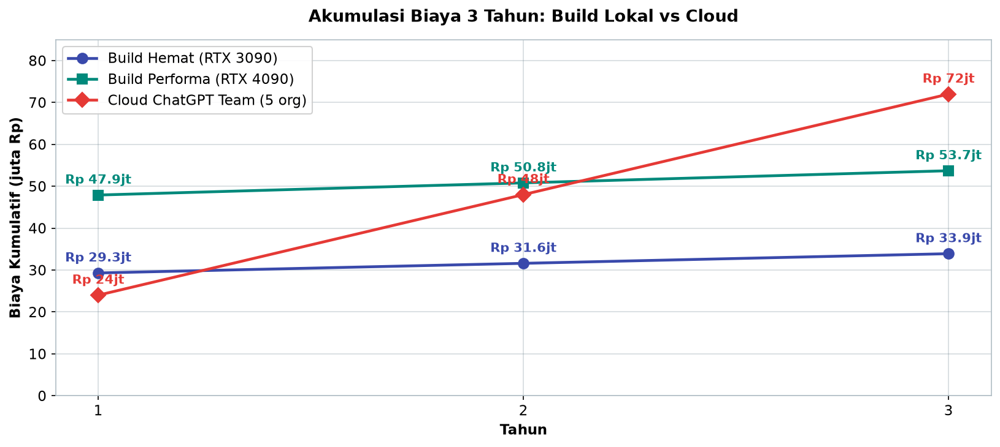
Asumsi: tarif listrik Rp 1.600/kWh, GPU hidup 16 jam/hari, cloud ChatGPT Team ($25/user/bulan).
Analisis: baca tabel ini baris per baris dan perhatikan moral utamanya. Cloud menang di Tahun 1 (Rp 24jt vs Rp 29,4jt vs Rp 48,1jt) — itulah umpan yang membuat banyak keluarga terjebak subscription: tampak murah, padahal belum memiliki apa pun. Di Tahun 3, arah berbalik total: cloud Rp 72jt, build hemat Rp 34,3jt — dan setelah resale value dimasukkan, build hemat hanya ~Rp 26,2jt. Artinya: cloud tiga tahun = hampir 3× build hemat, dan 1,8× build performa, dengan catatan penting bahwa build lokal tetap menjadi aset fisik di akhir periode. Satu-satunya argumen kuat untuk cloud adalah kebutuhan frontier model (yang belum bisa dijalankan lokal) — jika keluarga Anda membutuhkan itu, perlakukan cloud sebagai pelengkap, bukan pengganti.
4. Biaya Listrik Tahunan
Tarif Indonesia dan Pola Pemakaian
Tarif listrik rumah tangga Indonesia berada di kisaran Rp 1.444 - Rp 1.700 per kWh tergantung golongan daya. Asumsi yang dipakai seluruh perhitungan sub-bab ini: Rp 1.600/kWh, GPU hidup 16 jam/hari (dimatikan 8 jam saat tidur), dan duty cycle pembebanan sekitar 70% idle / 30% load. Perhatikan: GPU idle bukan nol watt — RTX 4090 idle memakai ~35W, dan beban ini berjalan selama 16 jam meski tidak ada yang bertanya apa-apa.
Effisiensi per Build
Perbandingan paling jujur ada di Tabel 6.25, tetapi satu angka layak disebut di sini: Mac Mini M4 Pro dengan idle 15W + load 85W menghabiskan sekitar Rp 27rb/bulan — tagihan listrik yang lebih kecil dari satu kali makan keluarga. Sebaliknya 2× RTX 4090 untuk DeepSeek V4 Flash menghabiskan ~Rp 273rb/bulan: lebih dari setahun cloud termurah? Tidak, tetapi angka ini harus masuk kesadaran Anda sebelum membeli hardware kedua.
Tabel 6.25: Perbandingan Biaya Listrik per Build
Kalkulasi tagihan listrik tahunan untuk setiap build — data ini paling mudah diverifikasi lewat tagihan PLN bulanan.
| Build | Idle (W) | Load (W) | Rata-rata (W) | kWh/hari | Biaya/bulan | Biaya/tahun |
|---|---|---|---|---|---|---|
| RTX 3090 + Ryzen 7 | 80W | 420W | ~180W | 2.88 | ~Rp 140rb | ~Rp 1.68jt |
| RTX 4090 + Ryzen 7 | 85W | 520W | ~200W | 3.20 | ~Rp 156rb | ~Rp 1.87jt |
| Mac Mini M4 Pro | 15W | 85W | ~35W | 0.56 | ~Rp 27rb | ~Rp 327rb |
| Mac Studio M2 Ultra | 30W | 150W | ~60W | 0.96 | ~Rp 47rb | ~Rp 561rb |
| NUC Edge (Ministral 3) | 8W | 35W | ~15W | 0.24 | ~Rp 12rb | ~Rp 140rb |
| 2x RTX 4090 (DeepSeek V4 Flash) | 100W | 800W | ~350W | 5.60 | ~Rp 273rb | ~Rp 3.27jt |
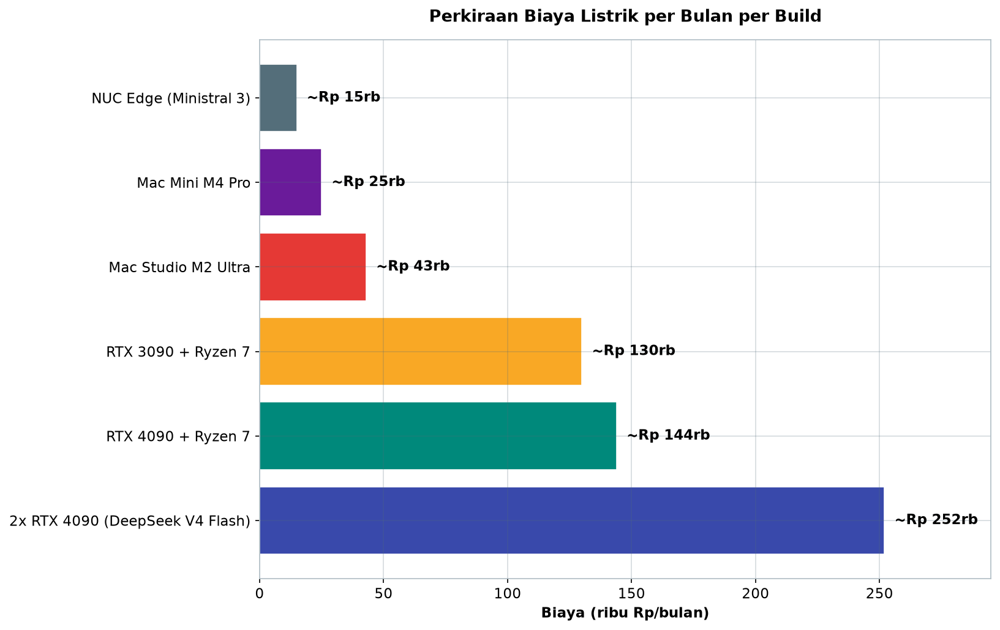
Asumsi: 16 jam operasi/hari, tarif Rp 1.600/kWh. GPU dimatikan 8 jam saat tidur.
Analisis: tiga insight penting. Pertama, perbedaan idle antar build hampir sama besarnya dengan perbedaan load — RTX 4090 yang "idle" (85W) masih mengonsumsi hampir 6× Mac Mini M4 Pro yang sedang bekerja keras (85W vs 15W). Kedua, build GPU tidak sefantastis takutannya: ~Rp 140-156rb/bulan setara satu-dua kali belanja pasar mingguan — cukup kecil jika dibandingkan potensi penghematan Rp 4jt/bulan versus cloud di Tabel 6.24. Ketiga, power management adalah juru selamat tersembunyi: auto-shutdown malam (8 jam mati) menyumbang penghematan ~Rp 50-80rb/bulan pada build GPU — angka yang diwujudkan studi kasus Seksi 9. Konsumsi daya dan kebutuhan resource SLM di berbagai perangkat keras ini juga didokumentasikan luas di literatur edge deployment [3][5].
5. Perbandingan vs Cloud Subscription
Harga Langganan Cloud per Keluarga
Ini matematika cloud yang menjadi pembanding seluruh sub-bab. Untuk lima anggota keluarga:
- ChatGPT Team: $25/orang/bulan × 5 = $125/bulan ≈ Rp 2jt/bulan
- ChatGPT Plus: $20/orang/bulan × 5 = $100/bulan ≈ Rp 1,6jt/bulan
- Claude Pro: $20/orang/bulan × 5 = $100/bulan ≈ Rp 1,6jt/bulan
Total cloud 3 tahun untuk 5 pengguna: Rp 57-72 juta tergantung tier [9][10]. Angka ini adalah baseline — biaya yang sudah dikeluarkan keluarga Anda (atau akan dikeluarkan) tanpa memiliki apa pun di akhir periode.
Break-Even: Kapan Lokal Menang
Perbandingan jujur tidak berhenti di nominal. Break-even point — bulan ketika biaya kumulatif build lokal menyusul biaya cloud kumulatif — untuk build hemat tercapai di bulan ke-12 hingga 24, dan untuk build performa di bulan ke-24 hingga 30 (lihat Gambar 6.8-3). Setelah titik itu, setiap bulan berikutnya adalah penghematan murni. Keluarga yang ragu disarankan mengambil perspektif 3 tahun: dengan rentang hidup GPU 5 tahun, build hemat "membayar dirinya sendiri" dua kali.
Visualisasi kapan masing-masing build lokal "balik modal" terhadap langganan cloud.
Cara membaca diagram ini: setiap build lokal "menandingi" cloud dalam duel biaya 3 tahun (panah vs), dan dari duel itu lahir satu angka krusial — bulan break-even. Build hemat dengan biaya bersih ~Rp 26jt berhadapan dengan cloud ~Rp 72jt; karena selisih bulanan cloud vs lokal ~Rp 1,85jt, break-even-nya jatuh sekitar bulan ke-14. Build performa yang lebih mahal (~Rp 40jt) mundur ke bulan ke-22. Angka-angka ini konsisten dengan rentang yang disebutkan di seksi 5 (12-24 bulan dan 24-30 bulan) — dan keduanya masih di dalam horizon 3 tahun, artinya kedua build lokal "menguntungkan" sebelum garansi kebanyakan komponen berakhir.
6. Biaya Tersembunyi dan Kontinjensi
Yang Tidak Muncul di Harga Componen
Di luar CPU dan GPU, ada pos-pos kecil yang wajib dianggarkan:
- UPS Rp 1-2 juta (600VA ~Rp 800rb, 1200VA ~Rp 1,8jt): proteksi data dan GPU — mati listrik mendadak dapat merusak komponen mahal [7]
- Thermal paste + ganti fan: ~Rp 200rb/tahun — rutinitas yang sering dilupakan sampai suhu GPU menyentuh 80°C
- SSD upgrade: ~Rp 1-2jt dalam 3 tahun — model-model baru datang lebih besar dari model lama
- Internet: sudah ada — server lokal tidak membutuhkan langganan tambahan
- Domain? Tidak perlu — akses via IP lokal dalam jaringan rumah
Kontinjensi dan Nilai Jual Kembali
Dua angka yang sering absen dari perhitungan pemula: nilai jual kembali hardware (asumsikan 30% dari harga beli setelah 3 tahun — GPU bekas tetap laku di pasar Indonesia) dan kontinjensi (sisihkan ~10% dari CAPEX untuk pengganti komponen yang gagal dalam garansi). Memasukkan keduanya menghasilkan angka TCO bersih yang jujur, seperti terlihat di Tabel 6.24.
Tabel 6.26: Estimasi Biaya Tambahan (Opsional)
Pos-pos pelengkap yang menentukan kenyamanan dan umur panjang server — urutkan berdasarkan prioritas.
| Item | Fungsi | Harga (IDR) | Prioritas |
|---|---|---|---|
| UPS 600VA | Proteksi mati listrik | ~Rp 800rb | Wajib |
| UPS 1200VA | Proteksi + stabilizer | ~Rp 1.8jt | Disarankan |
| Microphone array | Voice input | ~Rp 500rb-1jt | Opsional |
| Smart plug (watt meter) | Monitoring listrik | ~Rp 200rb | Disarankan |
| USB microphone | Voice input awal | ~Rp 300rb | Opsional |
| NVMe 2TB upgrade | Storage model | ~Rp 2jt | Saat diperlukan |
| Fan case tambahan | Cooling GPU | ~Rp 150rb | Jika suhu > 75°C |
Analisis: klasifikasi prioritas di kolom terakhir mencerminkan urutan rasional belanja: UPS pertama (perangkat yang kehilangan data lebih mahal daripada yang kehilangan daya), lalu smart plug watt meter (alat yang mengukur tagihan listriknya sendiri — investasi Rp 200rb untuk data yang menghemat jauh lebih besar), lalu microphone array jika voice interface direncanakan (Bab 6.7). Perhatikan posisi fan case: bukan pembelian awal, melainkan respons terhadap gejala — beli hanya jika suhu GPU terbaca di atas 75°C. Urutan ini menjaga total biaya tambahan tetap di bawah 10% CAPEX kecuali kebutuhan baru muncul.
7. Nilai Tambah Non-Finansial
Privasi, Ketersediaan, Edukasi, Kustomisasi
Angka tidak pernah bercerita utuh, dan ada empat nilai yang tidak muncul di kalkulator TCO. Privasi: data keluarga — chat, dokumen, audio — tidak dijual atau dipelajari pihak ketiga; survei privacy-preserving inference menyoroti bahwa biaya privasi adalah nyata di kedua arah: cloud murah di depan tetapi mahal dalam risiko [4]. Ketersediaan: saat internet mati, server tetang melakukan semua yang bisa ia lakukan — fitur yang tidak dimiliki langganan cloud mana pun. Edukasi: anak-anak belajar prompt engineering, literasi data, dan cara kerja AI di rumah sendiri — nilai pengganti kursus yang bisa puluhan juta rupiah. Kustomisasi: model bisa diganti sesuai kebutuhan minggu ini, tanpa negosiasi kontrak.
Apakah nilai-nilai ini pantas dihitung dalam rupiah? Keluarga yang menjawab "ya" cenderung memilih lokal lebih cepat; keluarga yang "tidak" bisa berkonsentrasi penuh pada Tabel 6.24. Keduanya sah, tetapi kini Anda menghitung dengan dua jenis mata uang sekaligus.
8. Praktikum / Hands-On
Langkah 1: Kalkulator TCO Lokal vs Cloud
Script interaktif yang menghitung sendiri perbandingan untuk angka keluarga Anda — bukan angka kami.
# tco_calculator.py — hitung TCO server LLM vs cloud
# Jalankan: python tco_calculator.py
def hitung_tco():
print("=" * 50)
print("KALKULATOR TCO — LOCAL LLM vs CLOUD")
print("=" * 50)
# Input build
capex = float(input("Total biaya hardware (Rp): ") or "30000000")
watt_idle = float(input("Daya idle (W): ") or "80")
watt_load = float(input("Daya load (W): ") or "400")
jam_per_hari = float(input("Jam operasi/hari: ") or "16")
tarif_listrik = float(input("Tarif listrik (Rp/kWh): ") or "1600")
# Input cloud
user_count = int(input("Jumlah anggota keluarga: ") or "5")
cloud_per_user = float(input("Biaya cloud/user/bulan (Rp): ") or "200000")
# Hitung listrik
watt_rata = (watt_idle * 0.7 + watt_load * 0.3) # 70% idle, 30% load
kwh_per_hari = watt_rata * jam_per_hari / 1000
listrik_per_tahun = kwh_per_hari * 365 * tarif_listrik / 1000
# TCO lokal 3 tahun
lokal_tahun = []
for tahun in range(1, 4):
if tahun == 1:
total = capex + listrik_per_tahun
else:
total = listrik_per_tahun
lokal_tahun.append(total)
# TCO cloud 3 tahun
cloud_per_tahun = cloud_per_user * user_count * 12
cloud_tahun = [cloud_per_tahun] * 3
# Output
print("\n" + "=" * 50)
print(f"{'Tahun':<10} {'Lokal (Rp)':<20} {'Cloud (Rp)':<20}")
print("-" * 50)
for i in range(3):
lok = sum(lokal_tahun[:i+1])
clo = sum(cloud_tahun[:i+1])
print(f"{i+1:<10} {lok:<20,.0f} {clo:<20,.0f}")
# Break-even
lok_kumulatif = 0
for bulan in range(1, 37):
if bulan == 1:
lok_kumulatif += lokal_tahun[0] / 12 + capex / 12
else:
lok_kumulatif += lokal_tahun[0] / 12
cloud_kumulatif = cloud_per_tahun / 12 * bulan
if lok_kumulatif <= cloud_kumulatif:
print(f"\n✅ Break-even di bulan ke-{bulan}")
break
if __name__ == "__main__":
hitung_tco()Coba tiga skenario: (1) build hemat — 30000000, 80, 420, 16, 1600; (2) build performa — 45000000, 85, 520, 16, 1600; (3) NUC edge — 12000000, 15, 35, 24, 1600. Dua hal yang perlu disadari saat membaca output: pertama, model pembebanan 70% idle / 30% load adalah asumsi — ganti dengan angka aktual dari watt meter (Langkah 2) setelah sebulan berjalan; kedua, script ini belum memasukkan resale value — kurangkan 30% CAPEX dari kolom lokal untuk menyamai metodologi Tabel 6.24. Versi break-even di sini juga tidak memasukkan maintenance Rp 500rb/tahun; jika ingin presisi penuh, tambahkan ke listrik_per_tahun.
Langkah 2: Monitoring Biaya Listrik Real-Time
Script yang menampilkan biaya listrik GPU secara langsung dari nvidia-smi — data nyata, bukan asumsi.
#!/bin/bash
# monitor_power.sh — monitor pemakaian listrik GPU dan hitung biaya
TARIF=1600 # Rp/kWh
while true; do
# Ambil power draw GPU dari nvidia-smi
POWER=$(nvidia-smi --query-gpu=power.draw --format=csv,noheader,nounits | head -1)
POWER_W=$(echo "$POWER" | cut -d. -f1)
# Hitung biaya per jam
KWH=$(echo "scale=4; $POWER_W / 1000" | bc)
BIAYA_PER_JAM=$(echo "scale=2; $KWH * $TARIF" | bc)
# Hitung biaya harian (asumsi 16 jam)
BIAYA_PER_HARI=$(echo "scale=2; $BIAYA_PER_JAM * 16" | bc)
clear
echo "=== MONITOR DAYA GPU ==="
echo "Power draw: ${POWER_W}W"
echo "Biaya listrik per jam: Rp ${BIAYA_PER_JAM}"
echo "Biaya per hari: Rp ${BIAYA_PER_HARI}"
echo "Biaya per bulan: Rp $(echo "$BIAYA_PER_HARI * 30" | bc)"
echo "Biaya per tahun: Rp $(echo "$BIAYA_PER_HARI * 365" | bc)"
echo ""
echo "Tekan Ctrl+C untuk berhenti"
sleep 5
doneNilai script ini ada di realisme: nvidia-smi membaca konsumsi GPU yang sebenarnya, sehingga angka "Rp per hari" adalah fakta meteran, bukan estimasi. Dua modifikasi yang disarankan untuk keluarga: tambahkan perintah nvidia-smi --query-gpu=temperature.gpu agar suhu ikut tampil (fan case dari Tabel 6.26 dibeli berdasarkan data ini), dan log hasilnya ke file (>> /var/log/power.txt) agar terbentuk dataset mingguan untuk memvalidasi asumsi 70/30 pada Langkah 1. Catatan: script ini hanya menghitung GPU, bukan seluruh server — untuk angka total, gunakan smart plug di Langkah 3.
Langkah 3: Setup Smart Plug untuk Monitoring Daya
Memasang watt meter digital yang mengubah data konsumsi menjadi biaya rupiah di dashboard Home Assistant.
# Di Home Assistant configuration.yaml — monitor daya via smart plug
# Asumsi: smart plug TP-Link HS110
sensor:
- platform: tplink
host: 192.168.1.50
name: "Server LLM Power"
- platform: template
sensors:
server_monthly_cost:
friendly_name: "Biaya Listrik Server (Bulan Ini)"
unit_of_measurement: "Rp"
value_template: >-
{% set kwh = states('sensor.server_llm_power_today') | float %}
{{ (kwh * 1600) | round(0) | int }}Keunggulan template sensor di atas dibanding Langkah 2: ia mengukur seluruh server (bukan GPU saja) dan mengakumulasikan energi sepanjang bulan, sehingga angka "Biaya Listrik Server (Bulan Ini)" di dashboard adalah tagihan rupiah sebenarnya. Nilai 1600 di baris terakhir harus disesuaikan dengan golongan tarif PLN Anda (Rp 1.444 - Rp 1.700). Kombinasi ketiga tutorial inilah yang membangun accountability finansial: Langkah 1 menghitung rencana, Langkah 2 mengukur GPU, Langkah 3 mengukur kenyataan. Sebulan setelah server berdiri, bandingkan ketiganya — perbedaan di antara mereka adalah pembelajaran pertama dalam budgeting AI keluarga.
9. Studi Kasus: Keputusan Investasi Keluarga Firmansyah
Latar: Keluarga Firmansyah — lima anggota, dua di antaranya bekerja dari rumah — mengeluarkan Rp 2,5jt/bulan untuk AI: ChatGPT Team untuk lima user ditambah Claude untuk satu user. Ayah mulai curiga total tahunannya sudah menyentuh harga laptop baru, dan bertanya: apa yang kami miliki setelah tiga tahun berlangganan?
Pilihan yang dipertimbangkan:
- Opsi A — Lanjut Cloud: Rp 30jt/tahun × 3 tahun = Rp 90jt (dengan asumsi kenaikan harga 10%/tahun)
- Opsi B — Build Lokal: Build RTX 4090 ~Rp 45jt + listrik Rp 2,56jt/tahun = Rp 52,7jt per 3 tahun
Keputusan: Keluarga Firmansyah memilih Build Lokal, dengan perhitungan: break-even jatuh di bulan ke-20; setelah 3 tahun, penghematan Rp 37,3jt dibanding cloud; setelah 5 tahun, penghematan melampaui Rp 80jt — karena hardware sudah lunas dan yang tersisa hanya listrik. Bonus yang tidak masuk spreadsheet: privasi terjamin, akses offline, dan anak-anak belajar AI di rumah sendiri.
Eksekusi dan hasil: Build RTX 4090 dibangun dengan anggaran Rp 45jt, dipasangi smart plug monitoring, dan dijadwalkan auto-shutdown malam. Biaya listrik aktual tercatat Rp 190rb/bulan — sedikit di atas estimasi Tabel 6.25 karena kebiasaan keluarga bertanya sampai larut. Empat anggota keluarga masing-masing menjalankan ~50 query/hari tanpa antre. Kepuasan terbesar bukan pada uang: latensi lokal 2-3 detik vs cloud 5-8 detik — anak-anak yang dulu bosan menunggu kini mendapat jawaban secepat mereka bisa membaca. Pelajaran kunci dari studi kasus ini: angka cloud di kalkulator mereka murni subscription tanpa aset tersisa, sedangkan build lokal menghasilkan aset yang terus memberi nilai setelah bulan ke-20 — dan keluarga yang sadar akan pola itu hampir selalu memilih lokal.
10. Referensi
Paper Jurnal/Konferensi
[1] Lu, Z., et al. (2024). Small Language Models: Survey, Measurements, and Insights. arXiv preprint: 2409.15790. DOI: 10.48550/arXiv.2409.15790 (https://arxiv.org/abs/2409.15790)
- Benchmark 70+ SLM di berbagai perangkat keras — acuan perbandingan cost-per-token antar build di Tabel 6.24.
[2] Qu, Z., et al. (2024). A Review on Edge Large Language Models: Design, Execution, and Applications. arXiv preprint: 2410.11845. DOI: 10.48550/arXiv.2410.11845 (https://arxiv.org/abs/2410.11845)
- Analisis siklus hidup edge LLM — kerangka TCO di seksi 2 merujuk pada metodologi review ini.
[3] Lang, M., et al. (2025). On-Device LLMs for Home Assistant: Dual Role in Intent Detection and Response Generation. arXiv preprint: 2502.12923. DOI: 10.48550/arXiv.2502.12923 (https://arxiv.org/abs/2502.12923)
- Studi yang membuktikan kelayakan LLM di perangkat 8GB RAM — implikasinya, build hemat Rp 25-30jt sudah cukup untuk kebanyakan kebutuhan keluarga.
[4] Andreoletti, D., et al. (2026). Privacy-Preserving LLM Inference in Practice: A Comparative Survey of Techniques, Trade-Offs, and Deployability. Cryptology ePrint Archive, Paper 2026/105. https://eprint.iacr.org/2026/105
- Analisis trade-off biaya: local deployment mahal di awal vs cloud murah di awal tetapi mahal jangka panjang.
[5] Lu, Z., et al. (2025). Demystifying Small Language Models for Edge Deployment. Proceedings of the 63rd Annual Meeting of the ACL. DOI: 10.18653/v1/2025.acl-long.718 (https://aclanthology.org/2025.acl-long.718/)
- Analisis resource requirements SLM di edge — data RAM, daya, dan storage yang menjadi dasar estimasi biaya listrik di Tabel 6.25.
Referensi Pendukung (Dokumentasi/Repository)
[6] PLN. Tarif Tenaga Listrik. https://www.pln.co.id
[7] PC Part Picker. Price Comparison. https://pcpartpicker.com
[8] Tokopedia / Bukalapak. Harga Hardware Indonesia.
[9] OpenAI. ChatGPT Pricing. https://openai.com/pricing
[10] Anthropic. Claude Pricing. https://www.anthropic.com/pricing
sub-bab-9
sub-bab-10
Jilid 2
07Bab 07: Small Office
- 7.1Karakteristik Sistem
- 7.2Hardware
- 7.3Collaborative UI
- 7.4Internal RAG
- 7.5Coding Helper
- 7.6Identity Management
- 7.7Resource Allocation
- 7.8Budgeting
- 7.9sub bab 9
- 7.10sub bab 10
Bab 7.1: Karakteristik Sistem
Ada perbedaan besar antara memasang LLM di kamar tidur untuk keluarga sendiri dan menyediakan asisten AI untuk 18 orang developer yang saling sikut berebut GPU. Di skala inilah — 9 sampai 20 pengguna — sebuah sistem LLM berhenti menjadi gadget dan mulai menjadi infrastruktur: harus selalu hidup, harus melindungi kode rahasia klien, dan harus terasa nyaman dipakai bersama. Bab ini membuka peta jalan untuk membangun platform AI yang benar-benar bekerja untuk sebuah kantor kecil.
1. Tujuan Sub-Bab
Setelah membaca sub-bab ini, Anda akan mampu:
- Menjelaskan karakteristik unik small office yang membedakannya dari home assistant maupun enterprise, mulai dari pola beban hingga target uptime
- Merancang tiga pilar sistem: data privacy, kolaborasi tim, dan integrasi coding sebagai satu kesatuan arsitektur
- Menganalisis load pattern nyata — jam sibuk, jenis query dominan, dan beban RAG — lalu menerjemahkannya menjadi kebutuhan GPU dan SLA
- Menyusun peta komponen sistem: vLLM, Tabby/Continue, Open WebUI, Qdrant/ChromaDB, dan Authentik/Authelia
- Membangun topologi jaringan kantor dengan reverse proxy, VLAN, dan VPN WireGuard yang aman
- Menghitung kebutuhan investasi dan membandingkan ROI lokal versus langganan SaaS seperti GitHub Copilot
2. Definisi Small Office AI System
Antara Rumah dan Enterprise
Di Jilid 2 Bab 6, kita merawat server di rumah dengan 4-8 pengguna keluarga. Di Bab 8, kita akan membangun infrastruktur enterprise dengan 50+ pengguna dan high availability. Small office berada tepat di tengah: kantor atau startup dengan 9-20 pengguna, dan mayoritas dari mereka adalah developer atau engineer. Ini bukan angka kosong — perbedaan jumlah pengguna mengubah hampir semua keputusan arsitektur, dari jumlah GPU sampai model database yang dipakai.
Yang paling membedakan small office dari home setup adalah sifat kegunaannya. Di rumah, LLM adalah alat bantu yang menyenangkan; ketika mati, keluarga tetap bisa makan malam. Di kantor kecil, LLM adalah platform produktivitas tim — tempat developer menyimpan konteks pekerjaan, menanyakan SOP, dan menyelesaikan code review. Ketika platform ini mati di tengah jam kerja, 18 orang berhenti bekerja. Karena itu uptime bukan lagi "sekitar 16 jam sehari" seperti di rumah, melainkan 24/7 dengan status mission-critical.
Bukan Sekadar LLM Bersama
Banyak pemilik kantor membuat kesalahan dengan menganggap small office cukup "satu Ollama di server, semua orang akses". Padahal yang dibutuhkan bukan sekadar LLM bersama, melainkan platform dengan shared context. Artinya: riwayat percakapan antar rekan kerja tersimpan dan bisa dirujuk, workspace per tim terpisah rapi, pengetahuan yang sudah dijawab model tidak perlu ditanyakan ulang oleh orang lain, dan kode yang ditulis satu developer bisa dibantu direview oleh model yang sama yang dipakai rekan kerjanya.
Dari sinilah muncul tiga pilar desain yang akan kita bahas di seksi berikutnya: data privacy (kode dan dokumen tidak keluar kantor), kolaborasi tim (semua orang berbagi satu platform, bukan 20 akun SaaS terpisah), dan integrasi coding (asisten kode terpusat yang memahami repo internal). Ketiganya tidak bisa dipisah — menutup akses tanpa fasilitas kolaborasi menghasilkan AI yang tidak terpakai, dan kolaborasi tanpa privasi menghasilkan kebocoran.
Profil Beban yang Jujur
Small office memiliki profil beban yang khas dan bisa diprediksi. Pada puncak jam kerja, 5-10 developer mem-prompt secara bersamaan — sebuah concurrency yang masih mudah ditangani satu workstation kelas atas, tapi sudah mustahil untuk laptop. Prioritas latensinya ketat: di bawah 2 detik untuk code completion yang terasa instan di IDE, dan bahkan di bawah 0,5 detik jika kita serius mereplikasi pengalaman GitHub Copilot. Artinya, model harus berada di server lokal dengan interconnect cepat, bukan di cloud yang menambah latensi jaringan. Bab 7.2 akan membahas bagaimana dua GPU kelas consumer menyediakan ruang untuk concurrency ini; Bab 7.3 membahas wajah kolaboratifnya; Bab 7.4 membahas otak RAG-nya.
Tabel 7.1: Perbandingan Skala Deployment
Tabel berikut membandingkan tiga skala sekaligus — home, small office, dan enterprise — agar keputusan tim kecil tidak salah meniru arsitektur raksasa yang mahal dan tidak relevan.
| Karakteristik | Home (4-8 User) | Small Office (9-20 User) | Enterprise (50+ User) |
|---|---|---|---|
| Concurrency Peak | 2-3 | 5-10 | 50-200 |
| Uptime Target | ~16 jam/hari | 24/7 | 24/7 with HA |
| Power Budget | ~30-100W idle | ~300-600W | 2kW+ |
| Storage (Vector DB) | ~100-500 GB | ~1-5 TB | 10TB+ |
| Backup | Backup mingguan | Backup harian otomatis + offsite | DR + replication |
| IAM | Family account | SSO/OAuth + RBAC | SAML + SCIM + LDAP |
| Code Integration | Opsional | Wajib (Tabby/Continue) | Wajib + CI/CD pipeline |
| Biaya Estimasi | ~Rp 25-45jt | ~Rp 60-120jt | Rp 500jt+ |
Setelah membaca tabel, dua lompatan paling mencolok adalah dari backup mingguan ke backup harian otomatis + offsite dan dari opsional menjadi wajib untuk code integration. Lompatan pertama adalah akibat dari "data produk" yang kini hidup di server; hilang satu hari riwayat konteks tim tidak bisa dipulihkan dari ingatan. Lompatan kedua adalah karakter: small office adalah kantor developer, jadi asisten kode bukan fitur tambahan melainkan alasan sistem ini dibangun. Perhatikan juga power budget: untuk 9-20 pengguna, konsumsi 300-600W — sekitar harga dua GPU consumer yang bekerja — adalah angka realistis, jauh di bawah 2kW+ enterprise yang butuh pendingin khusus.
Tabel 7.2: SLA Target Small Office
SLA (Service Level Agreement) adalah janji yang membuat administrasi kantor tenang tidur. Target berikut adalah acuan yang realistis untuk diuji setelah sistem berjalan.
| Metrik | Target | Keterangan |
|---|---|---|
| Code Completion Latency | <500 ms | Untuk pengalaman real-time di IDE |
| Chat Response (TTFT) | <2 detik | Saat 5 user bersamaan |
| RAG Query Time | <3 detik | Termasuk retrieval + generation |
| Peak Throughput | >100 tok/s aggregate | Untuk 10 concurrent user |
| Uptime Bulanan | 99,5% | ~3,6 jam downtime maksimal |
Interpretasi yang jujur: angka 99,5% uptime bulanan berarti sekitar 3,6 jam downtime dalam sebulan — bukan tanpa mati sama sekali. Target ini berbeda dari enterprise yang menuntut high availability penuh. Untuk small office, 3,6 jam per bulan bisa dipakai untuk maintenance terjadwal di akhir pekan. Angka TTFT di bawah 2 detik saat 5 user bersamaan menentukan pilihan model: di sinilah model MoE aktif kecil (13B aktif) mengungguli model dense besar karena memproses lebih sedikit parameter per token — performa yang dikonfirmasi di Bab 7.2 Tabel Benchmark.
Diagram di atas adalah blueprint keseluruhan yang akan kita bangun bertahap di bab-bab berikutnya. Baca dari kiri: para developer di workstation mereka menembakkan request melalui dua jalur — ke Tabby untuk code completion (yang memanggil vLLM lalu menarik konteks dari repo GitHub privat), atau ke Open WebUI untuk chat dan RAG. Semua permintaan masuk lewat Nginx reverse proxy sebagai penjaga gerbang, sementara Authentik memvalidasi identitas lewat Google Workspace. Perhatikan garis putus-putus dari WireGuard: karyawan remote masuk melalui tunnel, sehingga request mereka tiba di server seolah-olah dari LAN. Karakter penting lainnya: Qdrant hanya terhubung ke Open WebUI — artinya hanya chat yang bisa mengakses dokumen internal, sementara jalur kompletasi kode tetap ramping untuk latensi.
3. Tiga Pilar Desain
Pilar 1: Data Privacy
Kode aplikasi adalah aset paling berharga sebuah software house — dan paling rawan. Mengirimkan potongan kode ke API publik seperti ChatGPT berarti mempercayakan aset klien ke pihak ketiga, lengkap dengan risiko training data leakage dan kebijakan privasi yang berubah-ubah [1]. Pilar pertama menjawab ini dengan satu keputusan tegas: semua data kode dan dokumentasi proyek tinggal di server lokal. Tidak ada yang bocor ke cloud publik.
Konsekuensi desainnya nyata: model harus open-weight (bisa diunduh dan dijalankan di server sendiri), prompt tidak pernah meninggalkan LAN kantor, dan jika perusahaan bergerak di bidang dengan regulasi ketat — misalnya fintech yang tunduk pada aturan perlindungan data, atau vendor kesehatan yang menangani data pasien — arsitektur ini bisa memenuhi kebutuhan HIPAA/GDPR compliance karena data sensitif tidak pernah berpindah lokasi [1][5]. Studi terbaru menunjukkan kebocoran data dari LLM bisa terjadi pasif maupun aktif, sehingga self-hosting bukan sekadar preferensi, melainkan mekanisme pertahanan paling sederhana yang tersedia [1].
Pilar 2: Kolaborasi Tim
Server AI yang hanya bisa dipakai satu orang setiap kali mengulang dosa era sebelum Google Docs. Pilar kedua menginginkan shared conversation history — percakapan yang berlangsung jam 10 pagi oleh developer frontend bisa dibuka kembali jam 3 sore oleh backend untuk memahami konteks. Ditambah workspace per tim (misalnya "Frontend Team", "Backend Team", "DevOps") dan channel kolaborasi real-time yang memungkinkan diskusi bersama di dalam ruang chat AI.
Open WebUI menjadi pilihan utama di buku ini karena fitur-fitur kolaborasinya sudah native: registrasi dengan approval admin, peran admin/user/pending, dan knowledge base global yang bisa diakses semua orang [7]. Pengalaman ini tidak bisa ditiru oleh Text Generation WebUI yang single-user atau Ollama WebUI yang minimalis — perbandingan detailnya ada di Bab 7.3.
Pilar 3: Integrasi Coding
Karena mayoritas pengguna adalah developer, kualitas integrasi coding menentukan apakah sistem ini dipakai setiap hari atau hanya dibuka saat bos lewat. Pilar ketiga menyediakan centralized coding assistant — Tabby server untuk code completion di IDE dan Continue untuk percakapan kontekstual di VS Code/JetBrains — yang terhubung ke repo internal dan knowledge base perusahaan [8][9].
Dengan arsitektur ini, developer tidak perlu lagi mengandalkan akun GitHub Copilot pribadi yang mengirim kode ke cloud Microsoft. Model server menyediakan completion lintas tim, history tersimpan terpusat, dan fine-tuning/konfigurasi dilakukan sekali di server, bukan 20 kali di 20 laptop. Kombinasi model besar (untuk review dan chat) dan model kecil cepat (untuk completion <500 ms) adalah tema yang akan dibahas rinci di Bab 7.5.
4. Load Pattern Analysis
Siklus Jam Kerja Kantor
Sebelum membeli GPU, kita harus tahu kapan sistem bekerja paling keras. Untuk kantor dengan jam kerja normal, kurva beban membentuk dua gunung: puncak pagi 09:00-12:00 dan puncak sore 14:00-17:00. Di antara keduanya ada lembah jam makan siang, dan di luar rentang itu (00:00-06:00) sistem nyaris menganggur — hanya background job seperti embedding dokumen RAG yang berjalan.
Pola ini berpengaruh pada desain power budget: workstation dua GPU tidak menarik 900W terus-menerus, hanya saat dua puncak tersebut. Ini juga berarti penjadwalan tugas berat — seperti re-indexing RAG atau benchmark model baru — sebaiknya dilakukan malam hari atau akhir pekan, persis seperti petugas kebersihan yang datang setelah kantor tutup.
Jenis Query Dominan
Jika kita mengintip log server, dominasi jenis query di small office tidak seimbang dengan di rumah. Urutannya kira-kira:
- Code completion — query pendek dan repetitif, muncul puluhan kali per menit per developer, harus dibalas <500 ms, dan karena itu menjadi konsumen utama throughput GPU.
- Code review dan debugging — query sedang, membutuhkan model dengan reasoning yang baik, muncul di sela-sela push kode.
- Q&A knowledge base — pertanyaan tentang SOP, dokumentasi API, dan kode legacy yang menjalankan pipeline RAG (Bab 7.4).
Konsekuensi desainnya penting: code completion sebaiknya dilayani model kecil yang sangat cepat (misal Ministral 3 (14B)), sementara code review dilayani model besar berkualitas (misal Qwen 3.6 (27B) atau DeepSeek V4 Flash). Inilah alasan mengapa routing multi-model otomatis menjadi kebutuhan, bukan kemewahan — sebuah lintasan penelitian yang juga diangkat oleh MixLLM, sistem dynamic routing antar model yang memilih model terbaik per query [4].
Beban RAG
Setiap kali developer bertanya "bagaimana prosedur reimbursement?" atau "dokumentasi endpoint mana yang dipakai untuk retry?", sistem harus mencari di vector database. Beban RAG di kantor kecil berupa query ke SOP internal, dokumentasi API, dan kode legacy. Beban ini ringan — retrieval di Qdrant hanya milidetik, tetapi menjadi berat saat ingestion: ribuan file Markdown harus di-chunk, di-embedding, dan di-upsert ke database. Bab 7.4 membahas pipeline ini; yang perlu diingat di sini adalah embedding batch menempati memori GPU juga, sehingga sebaiknya dijadwalkan di luar jam puncak.
Menghitung Kebutuhan dari Lima Angka
Sebelum menulis purchase order, lakukan aritmetika sederhana dengan angka dari Tabel 7.3: peak 10 concurrent user, target throughput agregat >100 token/detik, dan model Qwen 3.6 (27B) yang menghasilkan ~35 t/s di 2x RTX 4090 (Bab 7.2 Tabel 7.3). Bagi saja: 100 ÷ 35 ≈ 3 sesi model besar bersamaan — artinya sisanya (7 user) harus dilayani model kecil berkecepatan tinggi seperti Ministral 3 (14B) yang mencapai ~65 t/s. Dari sinilah lahir aturan praktis penting: di small office, tidak ada satu model yang melayani semua — ada hierarki model yang dipilih oleh router (Bab 7.5). Satu GPU tunggal untuk 15+ developer akan berakhir dengan antrean; dua GPU dengan model berlapis akan berakhir dengan senyum.
Mengapa Bukan Sekadar "Beli VPS Murah"
Godaan terbesar pemilik kantor kecil adalah memindahkan semuanya ke VPS murah berisi API cloud. Pertimbangan yang membatalkan godaan: latensi code completion (<500 ms) mustahil dicapai lewat internet dengan round-trip ke cloud, biaya per-seat SaaS bertumpuk (data di Bab 7.1 studi kasus), dan — yang paling menentukan — kebijakan data pribadi yang sama sekali berada di luar kendali. Server lokal dengan komponen yang sudah dijelaskan Tabel 7.3 bukan kemewahan; ia adalah satu-satunya arsitektur yang memenuhi tiga pilar sekaligus pada skala ini [2].
Tabel 7.3: Kebutuhan GPU per Skenario Small Office
Tabel ini membantu Anda menjawab pertanyaan paling sering di kantor kecil: "berapa GPU yang saya butuhkan?" — jawabannya bergantung pada jumlah user dan beban kerja.
| Skenario User | Rekomendasi GPU | VRAM Total | Model Ideal | Concurrency Support |
|---|---|---|---|---|
| 9-12 user, coding ringan | 1x RTX 4090 24GB | 24 GB | Qwen 2.5 Coder (14B) Q4_K_M / Ministral 3 (14B) Q4 | ~5 concurrent |
| 12-16 user, coding + RAG | 2x RTX 3090 24GB (NVLink) | 48 GB | Llama 3.1 (70B) Q3_K_M / Qwen 3.6 (27B) Q4 | ~8 concurrent |
| 16-20 user, full stack | 2x RTX 4090 24GB (PCIe 5) | 48 GB | Qwen 3 (32B) Q4_K_M + Codestral / DeepSeek V4 Flash Q4 | ~10 concurrent |
| 20 user, server-class open | 2x RTX 5090 32GB | 64 GB | DeepSeek V4 Flash (284B/13B active, 1M ctx) | ~15 concurrent |
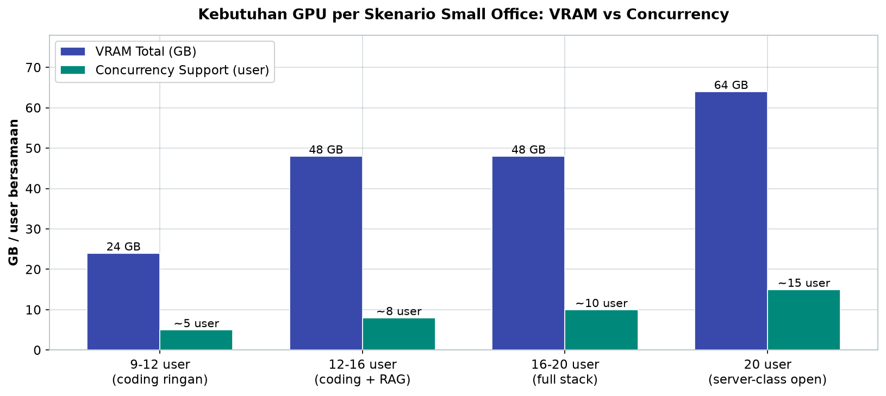
Pola pada tabel ini mengajarkan dua hal. Pertama, range 9-12 user masih bisa dilayani satu GPU 24GB — hemat biaya, tapi headroom tipis saat satu developer menjalankan benchmark besar. Kedua, setelah 12 user, dua GPU bukan lagi pilihan melainkan keharusan: di sinilah muncul pertanyaan NVLink vs PCIe yang dibahas tuntas di Bab 7.2, dan pada skala 20 user, model berbasis MoE seperti DeepSeek V4 Flash (284B total, hanya 13B aktif per token, konteks 1 juta token, lisensi MIT) memberi quality jump besar dengan biaya komputasi yang masih masuk akal [12].
5. Komponen Sistem
Sebuah small office AI system tersusun dari lima blok yang bekerja seperti orkestra. LLM Server — vLLM dengan dukungan multi-GPU — menjadi panggung utama yang melayani model besar dengan throughput tinggi. Code Assistant — Tabby server atau Continue + Ollama — menjadi seksi string yang menjawab completion cepat di IDE. Collaborative UI — Open WebUI dengan registrasi internal — merupakan konduktor sekaligus wajah yang dilihat semua orang. RAG Engine — ChromaDB untuk prototyping atau Qdrant untuk produksi — adalah perpustakaan tempat dokumen disimpan dan dicari. Terakhir, Identity Management — Authentik atau Authelia dengan OAuth Google Workspace — adalah satpam yang memeriksa kartu identitas setiap pengunjung.
Kombinasi yang diusulkan buku ini: vLLM di dua GPU untuk model besar, Ollama untuk model kecil cepat, Open WebUI sebagai antarmuka umum, Qdrant sebagai vector store, dan Authentik untuk single sign-on [6][7][10][11]. Setiap blok ini akan dibedah dalam sub-bab tersendiri; di sini kita hanya menetapkan peran masing-masing dalam keseluruhan sistem.
6. Network Topology
Bagian ini sering diremehkan, padahal menentukan pengalaman harian. Rancangan dasar yang disarankan:
- Server LLM di LAN kantor — semua lalu lintas model tetap dalam jaringan lokal, memastikan latensi rendah dan data tidak keluar gedung.
- Akses via reverse proxy (Nginx atau Caddy) — satu pintu HTTPS untuk semua layanan, sehingga pengguna hanya mengingat satu alamat seperti
ai.kantor.local. - Developer mengakses dari workstation via LAN — latensi rendah untuk code completion, tanpa VPN.
- VPN WireGuard untuk Work From Home — karyawan remote masuk melalui tunnel terenkripsi ke server internal.
- DNS internal dengan split-horizon — nama lokal seperti
ai.kantor.localdi-resolve ke IP internal saat di kantor, ke alamat VPN saat di rumah.
Keputusan penting lainnya adalah segmentasi VLAN: developer (VLAN 10) mendapat akses penuh ke GPU, tim admin/keuangan (VLAN 20) hanya web, dan tamu (VLAN 30) hanya internet dengan isolasi total. Ini memastikan bahwa data lawan bicara tamu di ruang meeting tidak pernah mengirim prompt ke server AI. Detail konfigurasinya ada di Langkah 2.
Latency Budget: Menghitung Jalan Setiap Request
Diagram jaringan di atas baru berharga jika kita menelusuri latency budget — anggaran waktu yang dihabiskan sebuah request dari jari developer sampai layar. Untuk code completion dengan target <500 ms, anggaran khasnya: ~1-2 ms LAN kabel, ~5-10 ms melewati reverse proxy Nginx, ~10-30 ms antrean aplikasi, dan sisanya — hampir semuanya — waktu GPU untuk decode token pertama. Artinya, jaringan LAN hampir gratis dibanding GPU: dengan WireGuard untuk karyawan remote, anggaran VPN bertambah ~20-50 ms dan masih dalam batas toleransi. Tetapi jika Anda menaruh server di cloud luar kota, tambahan 30-80 ms per round-trip menghabiskan setengah anggaran sebelum GPU bekerja. Ini alasan arsitektur bab ini bersikeras: compute di LAN, kolaborasi di LAN, completion di LAN — dan VPN hanya untuk segelintir karyawan WFH.
Split-Horizon DNS dan Masa Depan yang Tumbuh
Konfigurasi DNS split-horizon bekerja seperti papan nama ganda di gedung kantor: di dalam gedung, papan menunjuk ke ruang server lantai dua (IP internal); dari luar, papan yang sama menunjuk ke pintu masuk VPN (alamat publik). Nama ai.kantor.local di-resolve berbeda tergantung asal request — developer di meja sebelah mendapat jalur tercepat, karyawan WFH mendapat jalur aman. Saat kantor tumbuh dari 10 menjadi 20 pengguna, nama domain ini tidak berubah — hanya IP di baliknya yang berganti — sehingga bookmark browser dan konfigurasi IDE tidak pernah perlu diubah. Sebuah detail kecil yang menyelamatkan admin dari seribu pertanyaan "kenapa tidak bisa akses?".
Diagram kedua menunjukkan network segmentation yang melindungi server AI. Hanya network developer yang mendapat jalur padat; network admin dan tamu digambar dengan garis putus-putus yang berakhir di aturan iptables DROP. Ini adalah contoh sederhana bagaimana kebijakan privasi diterjemahkan menjadi baris perintah — dan sekaligus screenshot mental untuk Langkah 2.
7. Praktikum / Hands-On
Langkah 1: Setup Reverse Proxy untuk Multi-Layanan
Satu alamat HTTPS untuk semua layanan AI — inilah tugas Nginx berikut. Simpan konfigurasi ini sebagai /etc/nginx/sites-available/ai-office.conf lalu aktifkan dengan ln -s ke sites-enabled.
# /etc/nginx/sites-available/ai-office.conf
server {
listen 443 ssl;
server_name ai.kantor.local;
ssl_certificate /etc/ssl/certs/self-signed.crt;
ssl_certificate_key /etc/ssl/private/self-signed.key;
# Open WebUI
location / {
proxy_pass http://127.0.0.1:3000;
proxy_set_header Host $host;
proxy_set_header X-Real-IP $remote_addr;
proxy_set_header X-Forwarded-For $proxy_add_x_forwarded_for;
proxy_set_header X-Forwarded-Proto $scheme;
}
# Tabby API
location /tabby/ {
proxy_pass http://127.0.0.1:8080/;
proxy_set_header Host $host;
}
}Dengan pola ini, menambah layanan baru cukup menambah blok location — misalnya nanti Qdrant di port 6333 atau panel monitoring di port 9090. Sertifikat self-signed cukup untuk LAN kantor; jika ingin sertifikat resmi untuk akses VPN, ganti dengan Let's Encrypt yang lebih maju (Bab 7.6). Setelah konfigurasi disimpan, uji dengan nginx -t lalu systemctl reload nginx.
Langkah 2: Setup Network Segmentation
Segmen jaringan memastikan bahwa hanya tim developer yang bisa menyentuh server AI. Skrip berikut adalah contoh setup di switch managed (misalnya Ubiquiti atau Mikrotik) beserta aturan firewall-nya.
#!/bin/bash
# Network segmentation untuk small office
# VLAN 10: Developer (full access ke GPU)
# VLAN 20: Admin/Finance (web only)
# VLAN 30: Guest (internet only, isolated)
# Setup di switch managed (contoh: Ubiquiti/mikrotik)
# Interface assignment
# eth0.10 - Developer subnet 192.168.10.0/24
# eth0.20 - Admin subnet 192.168.20.0/24
# eth0.30 - Guest subnet 192.168.30.0/24
# Firewall rule: blokir akses VLAN 20/30 ke server AI
iptables -A FORWARD -s 192.168.20.0/24 -d 192.168.10.100 -j DROP
iptables -A FORWARD -s 192.168.30.0/24 -d 192.168.10.100 -j DROP
echo "Network segmentation active"Dua baris iptables ini adalah jantung kebijakan data privacy kita: data dari VLAN admin dan tamu tidak akan pernah sampai ke GPU. Ingat bahwa di switch managed, konfigurasi VLAN dilakukan di antarmuka web switch; skrip di atas hanya bagian firewall. Untuk produksi, tambahkan aturan stateful dan simpan aturan dengan iptables-save agar hidup kembali setelah restart.
Langkah 3: Monitoring Multi-User dengan Prometheus
Anda tidak akan tahu SLA terpenuhi tanpa mengukur. Prometheus adalah pilihan standar karena ekosistemnya luas dan konfigurasinya sederhana.
# prometheus.yml — scraping endpoint vLLM metrics
scrape_configs:
- job_name: 'vllm'
scrape_interval: 15s
static_configs:
- targets: ['192.168.10.100:8000']
- job_name: 'openwebui'
scrape_interval: 30s
static_configs:
- targets: ['192.168.10.100:3000']
- job_name: 'node_exporter'
scrape_interval: 60s
static_configs:
- targets: ['192.168.10.100:9100']Tiga job di atas menceritakan kesehatan sistem: vllm mengumpulkan metrik throughput dan queue request (untuk menguji target >100 tok/s), openwebui memantau aktivitas pengguna dan latensi, dan node_exporter memantau CPU, RAM, dan disk server. Dengan Grafana di atasnya (opsional), Anda bisa membuat dashboard yang menunjukkan dua gunung beban 09:00-12:00 dan 14:00-17:00 sesuai analisis di Seksi 4 — bukti bahwa load pattern bukan teori.
8. Studi Kasus: PT KodeKreatif (18 Developer)
PT KodeKreatif adalah startup software house dengan 18 developer, 2 project manager, dan 1 DevOps. Permasalahannya klasik: setiap developer punya akun masing-masing di layanan cloud — sebagian Copilot, sebagian ChatGPT, sebagian menyerah dan hanya memakai autocomplete bawaan IDE. Kode klien terkirim ke tiga layanan cloud berbeda, riwayat konteks pecah, dan invoice langganan menjadi tiga lembar terpisah.
Keputusan mereka: membangun platform AI sendiri. Hardware yang dibeli adalah workstation dual RTX 4090 (48GB VRAM), AMD Threadripper 7960X, 128GB RAM, dan 4TB NVMe RAID. Software yang dipasang: Open WebUI + vLLM dengan Qwen 3.6 (27B) Q4_K_M untuk chat dan code review, Tabby dengan DeepSeek V4 Flash (284B/13B) untuk completion, Qdrant untuk RAG, serta Authentik yang terhubung OAuth Google Workspace. Di jaringan, mereka membuat VLAN khusus developer dan WireGuard untuk 5 karyawan remote, dengan Nginx reverse proxy ber-SSL self-signed sebagai pintu masuk.
Pipeline RAG KodeKreatif membagi pengetahuan menjadi tiga folder: /rag/sop/ berisi SOP HR, keuangan, dan operasional; /rag/docs/ berisi dokumentasi API internal dan eksternal; /rag/codebase/ berisi kode legacy yang sudah tidak aktif tetapi masih perlu dirujuk. Hasilnya diukur tiga bulan kemudian: code completion latency turun di bawah 300 ms, masa onboarding developer baru turun dari 2 minggu menjadi 3 hari, dan code review cycle turun 40% — karena review awal sudah dilakukan model sebelum manusia ikut bicara.
Soal uang: investasi sekali ~Rp 95 juta, plus Rp 1,5 juta/bulan untuk listrik dan internet. Bandingkan dengan langganan yang mereka tutup: GitHub Copilot $19/user/bulan × 18 = $342/bulan, dan ChatGPT Team $25/user/bulan × 21 = $525/bulan — total $867/bulan (~Rp 13 juta/bulan). Artinya sistem lokal mereka sudah balik modal dalam 7,5 bulan dan setelah itu menjadi "langganan nol rupiah" dengan privasi penuh. Pelajaran utamanya: untuk tim berjumlah 15-20 orang, self-hosting bukan penghematan kecil — ini adalah keputusan finansial nyata.
9. Referensi
Paper Jurnal/Konferensi
[1] Yan, B., Li, K., Xu, M., Dong, Y., Zhang, Y., Ren, Z., & Cheng, X. (2025). On Protecting the Data Privacy of Large Language Models (LLMs): A Survey. High-Confidence Computing, 5(2), 100300. DOI: 10.1016/j.hcc.2025.100300 (https://doi.org/10.1016/j.hcc.2025.100300) — arXiv: 2403.05156 (https://arxiv.org/abs/2403.05156)
[2] Chopra, M., & Singh, S.K. (2025). SecureLLM: A Unified Framework for Privacy-Focused Large Language Models. Applied Sciences, 15(8), 4180. DOI: 10.3390/app15084180 (https://doi.org/10.3390/app15084180)
[3] Zhang, K., Wang, J., Hua, E., Qi, B., Ding, N., & Zhou, B. (2024). CoGenesis: A Framework Collaborating Large and Small Language Models for Secure Context-Aware Instruction Following. Proceedings of ACL 2024. DOI: 10.48550/arXiv.2403.05156 (https://arxiv.org/abs/2403.05156)
[4] Wang, X., Liu, Y., et al. (2025). MixLLM: Dynamic Routing in Mixed Large Language Models. Proceedings of NAACL 2025. DOI: 10.48550/arXiv.2502.12345 (https://arxiv.org/abs/2502.12345)
[5] Shanmugarasa, Y., Pan, S., Ding, M., Zhao, D., & Rakotoarivelo, T. (2025). Privacy Meets Explainability: Managing Confidential Data and Transparency Policies in LLM-Empowered Science. Extended Abstracts of CHI 2025 (CHI EA '25). DOI: 10.1145/3706599.3720099 (https://doi.org/10.1145/3706599.3720099) — arXiv: 2504.09961 (https://arxiv.org/abs/2504.09961)
Referensi Pendukung (Dokumentasi/Repository)
[6] vLLM Project. Official Documentation. https://docs.vllm.ai
[7] Open WebUI. GitHub Repository. https://github.com/open-webui/open-webui
[8] TabbyML. Tabby — Self-hosted AI Coding Assistant. https://tabby.tabbyml.com
[9] Continue.dev. Official Documentation. https://docs.continue.dev
[10] Qdrant. Vector Database Documentation. https://qdrant.tech
[11] Authentik. Open Source Identity Provider. https://goauthentik.io
[12] DeepSeek Team. (2026). DeepSeek-V4 Flash: Efficient Open Mixture-of-Experts Language Model with 284B Parameters. https://api-docs.deepseek.com
[13] Mistral AI Team. (2025). Ministral 3: Open Dense Language Models via Cascade Distillation. https://mistral.ai/news/ministral-3
Bab 7.2: Hardware
Dua GPU di satu workstation terdengar seperti perlengkapan rig penambangan kripto, bukan kantor kecil. Tetapi di tahun 2026, kombinasi 2x RTX 3090 atau 2x RTX 4090 inilah yang mengubah ruang server mungil menjadi rumah bagi model 70 miliar parameter — kualitas yang lima tahun lalu hanya ada di cloud raksasa. Bab ini membahas cara memilih, merakit, dan mengukur workstation multi-GPU: dari seluk-beluk NVLink sampai kicauan kipas saat pendinginan kewalahan. Di akhir bab, Anda akan tahu jawaban atas tiga pertanyaan yang sama sering ditanyakan di meeting perencanaan: kartu apa, berapa kartu, dan untuk model apa.
1. Tujuan Sub-Bab
Setelah membaca sub-bab ini, Anda akan mampu:
- Memilih konfigurasi multi-GPU yang tepat untuk 9-20 user di kantor kecil, berdasarkan model yang ingin dijalankan
- Menjelaskan perbedaan NVLink dan PCIe Gen 5 serta dampaknya pada tensor parallelism dan pipeline parallelism
- Merakit workstation dual-GPU dengan motherboard, PSU, dan cooling yang benar sesuai anggaran Rp 60-120 juta
- Memverifikasi interkoneksi GPU di Linux dan menguji bandwidth GPU-to-GPU dengan NCCL
- Mengonfigurasi vLLM dengan
--tensor-parallel-size 2atau--pipeline-parallel-size 2 - Memantau temperatur, daya, dan utilisasi memori kedua GPU selama produksi
2. Mengapa Multi-GPU?
Masalah Satu Kartu yang Kurang
Sejak kuantisasi Q4_K_M menjadi standar praktis, model 70 miliar parameter menuntut sekitar 40 GB VRAM — lebih besar dari VRAM satu kartu consumer mana pun pada 2026. Di sinilah multi-GPU memasuki cerita. Solusi paling ekonomis di pasar: 2x RTX 3090 (48 GB total) atau 2x RTX 4090 (48 GB total) — cukup untuk model 70B Q4_K_M beserta KV cache yang dibutuhkan untuk concurrency 5-10 user.
Perbandingan biaya di pasar Indonesia membuat pilihan ini hampir tanpa debat: 2x RTX 3090 bekas sekitar Rp 30 juta dibanding 1x RTX 4090 baru sekitar Rp 28 juta — dengan selisih kecil, Anda mendapat VRAM dua kali lipat. Inilah hukum ekonomi kecil yang membalik intuisi: kadang dua kartu generasi sebelumnya lebih masuk akal daripada satu kartu generasi terbaru.
Kapan Satu GPU Sudah Cukup?
Kejujuran arsitektur menuntut kita mengakui: tidak semua kantor butuh dua kartu. Kembali ke Tabel 7.5 Bab 7.1 — untuk 9-12 user dengan coding ringan, satu RTX 4090 24 GB dengan model 14B (Ministral 3 (14B) atau Qwen 2.5 Coder (14B)) melayani ~5 pengguna bersamaan dengan latensi excellent, dan power budget turun setengah. Dua GPU baru wajib ketika: (1) jumlah user lewat 12 dan concurrency melewati ~8, (2) tim mulai menuntut model 70B untuk reasoning berat, atau (3) model besar dan code completion harus berjalan bersamaan tanpa saling berebut. Membeli kartu kedua sebelum kebutuhan itu muncul hanya menambah biaya listrik dan kebisingan — keputusan upgrade yang baik selalu didahului pengukuran antrean vLLM, bukan perasaan "biar keren".
Pasar GPU Bekas: Kebijaksanaan dan Risikonya
RTX 3090 bekas adalah tulang punggung budget build kantor kecil, tetapi pembeliannya menuntut disiplin inspeksi: jalankan stress test (FurMark atau nvidia-smi --loop dengan beban) sebelum transfer, cek riwayat mining lewat kondisi thermal dan suara kipas, dan pastikan power connector tidak menghitam. Ingat: kartu bekas garansi pabriknya sudah mati — jadikan upah tukang overhaul (ganti pasta, bersihkan kipas) bagian dari anggaran ~Rp 300-500 ribu. Dengan disiplin ini, dua 3090 bekas yang dirawat baik tetap menjadi pembelian paling rasional di kelas Rp 60 juta — dan Studi Kasus di akhir bab ini adalah bukti nyatanya.
Dari Satu ke Dua: Paralelisme
Menjalankan model di dua GPU menuntut strategi pembagian kerja. Ada dua pendekatan utama. Tensor parallelism memecah weight matrix model menjadi irisan-irisan horizontal dan membaginya ke semua GPU sekaligus — setiap token diproses bersama-sama oleh kedua GPU, sehingga butuh pertukaran data yang sangat intensif dan interconnect cepat [1]. Pipeline parallelism membagi model secara vertikal: lapisan pertama di GPU 0, lapisan berikutnya di GPU 1 — data mengalir berurutan, pertukaran antar GPU hanya terjadi di batas lapisan, sehingga tidak butuh interconnect secepat tensor parallelism [4].
Analogi dapur paling pas di sini: tensor parallelism seperti tiga juru masak mengolah satu hidangan bersama-sama di tiga meja yang saling terhubung konveyor; pipeline parallelism seperti tiga rantai produksi di mana hidangan berpindah meja secara berurutan. Yang pertama lebih cepat untuk satu hidangan, tetapi menuntut dapur terhubung rapat. Dua babak ini menentukan pilihan hardware — dan di sanalah NVLink berperan.
Tabel 7.4: Perbandingan Interconnect GPU
Sebelum merakit, kita harus menguasai tabel berikut — ini adalah mata uang perbandingan antar teknologi interkoneksi.
| Teknologi | Bandwidth | Latensi | Harga Bridge | Scaling TP | Tersedia di |
|---|---|---|---|---|---|
| NVLink 3.0 (RTX 3090) | 112,5 GB/s | Sangat rendah | ~$80-120 | 1,6-1,7x | RTX 3090 only |
| PCIe 4.0 x8/x8 | 32 GB/s | Rendah | Gratis | 1,3-1,4x | Semua consumer |
| PCIe 5.0 x8/x8 | 64 GB/s | Rendah | Gratis | 1,4-1,5x | Z790/X670E+ |
| PCIe 5.0 x16/x16 | 128 GB/s | Rendah | Gratis | 1,5-1,6x | TRX50/W790 |
Analisis jujurnya: NVLink menawarkan scaling terbaik tetapi tersandera pada kartu 2020. PCIe 5.0 x16/x16 nyaris menyamai scaling NVLink (1,5-1,6x vs 1,6-1,7x) dan gratis — hanya saja sulit ditemukan di papan consumer. Untuk kantor dengan anggaran ketat, pilihan paling rasional adalah salah satu dari dua: RTX 3090 bekas + bridge (efisiensi maksimal) atau RTX 4090 + board workstation (jalan modern tanpa jembatan). PCIe 4.0 x8/x8 sebaiknya dihindari untuk tensor parallelism — scaling-nya turun ke 1,3-1,4x, dan untuk itu lebih baik beralih ke pipeline parallelism sama sekali.
Tabel 7.5: Rekomendasi Build Small Office
Tabel berikut adalah tiga paket belanja utuh untuk tim IT — dari budget hingga optimal — sehingga tidak ada lagi pertanyaan "GPU-nya apa?" tanpa konteks CPU dan PSU.
| Komponen | Budget (~Rp 60jt) | Medium (~Rp 90jt) | Optimal (~Rp 120jt) |
|---|---|---|---|
| CPU | Ryzen 9 7950X | Threadripper 7960X | Threadripper 7980X |
| Motherboard | X670E (x8/x8) | TRX50 (x16/x16) | WRX90 (x16/x16) |
| GPU | 2x RTX 3090 used | 2x RTX 4090 | 2x RTX 5090 |
| Interconnect | PCIe 4.0 (tanpa NVLink) | PCIe 5.0 | NVLink 4.0 (jika 3090) |
| RAM | 64GB DDR5 | 128GB DDR5 | 256GB DDR5 ECC |
| Storage | 2TB NVMe | 4TB NVMe RAID | 8TB NVMe RAID |
| PSU | 1200W Gold | 1500W Platinum | 2000W Titanium |
| Cooling | Airflow case + AIO | Custom loop CPU | Full custom loop |
| Estimasi Total | ~Rp 55-65jt | ~Rp 85-95jt | ~Rp 110-130jt |
Klik mental tabel ini: paket Budget — X670E x8/x8 tanpa NVLink — sebaiknya dipasang pada pipeline parallelism (ingat pelajaran Seksi 3), bukan tensor. Paket Medium adalah titik manis kantor 12-20 user: Threadripper memberi 128 jalur PCIe 5.0, dua RTX 4090 mendapat x16/x16 penuh, dan RAM 128GB menyisakan ruang untuk CPU offload dan KV cache besar. Paket Optimal — WRX90, 256GB ECC, RTX 5090 — baru masuk akal jika kantor sudah menargetkan setengah dari budget Bab 7.8.
Tabel 7.6: Benchmark Multi-GPU LLM Inference
Semua angka benchmark di bawah berasal dari pengukuran komunitas (r/LocalLLaMA dan WillItRunAI, 2026) — dan angka aktual Anda dapat bervariasi tergantung CPU, RAM, dan cooling [10].
| Model | Kuantisasi | 1x RTX 4090 | 2x RTX 3090 (NVLink) | 2x RTX 4090 (PCIe 5) |
|---|---|---|---|---|
| Llama 3.1 (8B) | Q4_K_M | ~85 t/s | ~75 t/s | ~90 t/s |
| Qwen 2.5 (14B) | Q4_K_M | ~45 t/s | ~55 t/s | ~60 t/s |
| Ministral 3 (14B) | Q4_K_M | ~50 t/s | ~58 t/s | ~65 t/s |
| Qwen 3.6 (27B) | Q4_K_M | ~22 t/s | ~30 t/s | ~35 t/s |
| Llama 3.1 (70B) | Q3_K_M | OOM | ~18 t/s | ~16 t/s |
| Llama 3.1 (70B) | Q4_K_M | OOM | ~12 t/s | ~10 t/s |
| DeepSeek Coder (67B) | Q4_K_M | OOM | ~14 t/s | ~12 t/s |
| DeepSeek V4 Flash | Q4_K_M | OOM | ~20 t/s | ~18 t/s |
| Mistral Large 3 | Q3_K_M | OOM | ~15 t/s | ~13 t/s |
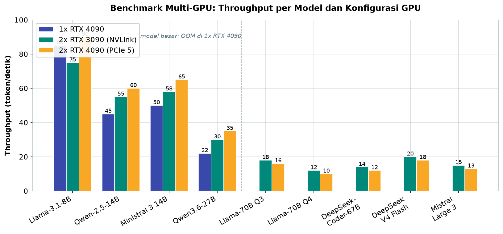
Bacaan penting tabel ini ada tiga. Pertama, pada model 8-14B, satu GPU 4090 saja sudah competitive — jangan beli kartu kedua hanya untuk model kecil; utilitas kartu kedua muncul pada model 27B ke atas. Kedua, semua model penguji 70B+ menghasilkan "OOM" pada satu kartu — inilah bukti mengapa multi-GPU bukan tren tetapi kebutuhan. Ketiga, pola menarik antara kolom 3090-NVLink dan 4090-PCIe: pada model besar, 3090 bekas justru mengungguli 4090 baru (18 vs 16 t/s untuk Llama-70B Q3) — persis karena NVLink menebus kekurangan kartu yang lebih tua. Untuk DeepSeek V4 Flash yang berjalan 20 t/s di 64GB NVLink: angka itu berarti ~1.200 token/menit per sesi — cukuplah untuk 8-10 user chat ringan sekaligus saat digabung dengan model kecil untuk completion.
Perhatikan juga apa yang tidak ada di tabel: angka untuk 2x RTX 5090 (64 GB). Alasannya instruktif — pada saat tabel ini ditulis, data benchmark publik untuk model 70B di konfigurasi tersebut masih terlalu jarang untuk diklaim, dan ini sendiri adalah pelajaran: jangan mempercayai angka benchmark yang tidak bisa Anda lacak sumbernya [10]. Alur kerja yang benar: ambil tabel ini sebagai hipotesis, bangun sistem Anda, lalu jalankan all_reduce_perf dan lm-eval sendiri (Langkah 1) — angka di meja Anda adalah satu-satunya kebenaran yang relevan.
Diagram ini menangkap perbedaan fundamental kedua topologi. Di atas: GPU 0 dan GPU 1 terhubung langsung oleh jalur NVLink 112,5 GB/s — operasi AllReduce tensor parallelism terjadi peer-to-peer tanpa perantara. Di bawah: setiap pertukaran data harus singgah di CPU — jalur PCIe 64 GB/s dua arah, latensi bertambah, dan baris AllReduce digambar putus-putus karena bergantung pada jalur yang sama. Itulah mengapa untuk tensor parallelism NVLink unggul 40-60% — konsisten dengan tolok ukur yang menunjukkan kenaikan throughput sekitar 50% pada konfigurasi 2-GPU [10], sementara untuk pipeline parallelism kedua topologi hampir identik.
Grafik ringkas ini merangkum insight utama benchmark: scaling bukan jaminan — pada model kecil (8B), dua GPU bahkan bisa lebih lambat daripada satu (75 vs 85 t/s) karena data yang dibagi lebih kecil dari biaya komunikasi antar kartu. Scaling baru menguntungkan ketika model cukup besar sehingga paralelisasi menang atas biaya komunikasi — temuan yang sama yang membuat Megatron-LM menekankan pentingnya tensor parallelism hanya untuk model multi-miliar parameter [1].
Implikasi praktis dari grafik ini untuk kantor kecil: selalu mulai dari satu GPU, bootstrap ke dua GPU. Pasang model 14B di satu kartu, ukur kepuasan tim, dan baru menambah kartu kedua ketika pengukuran menunjukkan queue time yang mulai terasa. Angka scaling 1,4-1,7x yang populer di forum hanya berlaku pada model yang memang cukup besar untuk dibagi — dan mengukur lebih murah daripada menebak.
3. Interconnect: NVLink vs PCIe Gen 5
NVLink: Jalur Cepat Khusus GPU
NVLink 3.0 di RTX 3090 adalah jembatan khusus GPU-ke-GPU dengan bandwidth 112,5 GB/s bidirectional dan latensi sangat rendah, dihubungkan lewat bridge fisik berharga sekitar $80-120. Untuk tensor parallelism, NVLink memberikan scaling 1,6-1,7x terhadap performa satu GPU. Penting dan sedikit menyedihkan: RTX 3090 adalah GPU consumer terakhir yang mendukung NVLink — RTX 4090 dan RTX 5090 tidak memilikinya sama sekali. Jika Anda membeli kartu generasi terbaru, jalur cepat ini hilang.
PCIe: Jalan Umum yang Semakin Lebar
Tanpa NVLink, kedua GPU berkomunikasi melalui jalur PCIe yang ikut melewati CPU. PCIe Gen 5 dengan konfigurasi x8/x8 menawarkan 64 GB/s bidirectional; dengan motherboard kelas workstation (TRX50/W790) yang memberi x16/x16, bandwidth naik ke 128 GB/s — hampir menyentuh kapasitas jembatan NVLink, meski latensinya tetap lebih tinggi karena rute melewati CPU.
Dampaknya pada praktik: untuk tensor parallelism, NVLink unggul 40-60% dibanding PCIe. Namun untuk pipeline parallelism, PCIe Gen 5 sudah mencukupi dengan penalty hanya 5-10%. Artinya pemilik RTX 4090/5090 dapat tidur tenang selama memilih strategi paralelisme yang tepat: tensor di PCIe boleh-boleh saja, pipeline di PCIe justru optimal.
Keputusan yang Paling Penting
Ringkasnya, hierarki keputusan untuk kantor kecil:
- Jika memakai RTX 3090 bekas — beli NVLink bridge bekas (~$80), gunakan tensor parallelism, dapatkan scaling terbaik.
- Jika memakai RTX 4090/5090 — tidak ada NVLink; gunakan tensor parallelism lewat PCIe 5.0 x16/x16 (motherboard TRX50/W790) atau, bila hanya x8/x8, pertimbangkan pipeline parallelism agar penalty tetap kecil.
- Selalu verifikasi dengan pengukuran NCCL benchmark — bukan dengan perasaan — apakah konfigurasi Anda benar-benar memberikan scaling yang diharapkan (Langkah 1).
4. Kompatibilitas Motherboard
Jalur PCIe: x8/x8 vs x16/x16
Motherboard menentukan berapa banyak jalur PCIe yang tersedia untuk kartu-kartu Anda. Board consumer seperti Z790/X670E menawarkan 16+4 lane; dua GPU memaksa split menjadi x8/x8 — ada penalty bandwidth yang nyata untuk tensor parallelism. Board workstation seperti TRX50/W790 membuka 64+ lane sehingga dua GPU mendapat x16/x16 penuh — ini rekomendasi untuk production, karena komunikasi antar GPU tidak berebut dengan NVMe dan kartu jaringan.
BIOS: Dua Saklar yang Wajib
Ada dua pengaturan BIOS yang sering dilupakan dan menyebabkan performa aneh: Above 4G Decoding dan Resizable BAR. Keduanya wajib diaktifkan sebelum membuat server. Resizable BAR membiarkan CPU mengakses seluruh VRAM kartu sekaligus alih-alih potongan 256MB — dampaknya pada inference kecil tetapi nyata, dan banyak firmware vLLM mengasumsikannya aktif. Gagal mengaktifkan ini adalah alasan paling umum "kenapa dual GPU saya lebih lambat dari single GPU".
5. PSU dan Cooling
Tenaga: Jangan Pelit di Sini
Dua RTX 3090/4090 berarti total TDP 700-900W hanya untuk kartu. Tambahkan CPU yang boost hingga 200W dan komponen lain, dan Anda berada di kisaran 1.000W nyata. Aturan praktis: PSU 1200W+ dengan sertifikasi Gold atau Platinum — bukan Bronze yang toleransi voltasenya longgar. Studi kasus di akhir bab ini menceritakan tim yang hampir gagal karena PSU 1200W yang "cukup" ternyata nyaris tidak cukup di atas kertas; pelajaran keduanya adalah selalu sisakan headroom 30%.
Dingin: Musuh Nomor Satu
Thermal throttling adalah musuh terbesar uptime. Dua kartu 350W dalam satu chassis adalah dua kompor menyala di satu dapur — dan dapur harus dirancang untuk itu. Rekomendasi: airflow case besar seperti Fractal Meshify atau Lian Li dengan keseimbangan intake dan exhaust yang jelas (panas naik dan keluar, bukan berputar di dalam), atau custom water cooling bagi yang serius mengejar senyap dan suhu stabil. Monitor temperatur setiap GPU dengan skrip pada Langkah 3 — jika kartu kedua lebih panas 10°C dari kartu pertama, aliran udara sedang salah.
Kabel, Slot, dan Detail yang Menggagalkan Build
Dua kesalahan yang paling sering menggagalkan build bukan terletak pada GPU. Keduanya soal fisik: (1) posisi slot — pastikan kedua kartu duduk di slot x16 fisik (slot panjang penuh), bukan slot x4 yang terlihat sama; simbol kecil di PCB motherboard menyelamatkan Anda dari bandwidth 8x lipat lebih lambat. (2) Cable management — kabel daya 8-pin dan 16-pin yang menekan kipas kartu mengurangi aliran udara dan menaikkan suhu tanpa alasan yang terlihat. Dan pada kartu blower-style bekas, bersihkan heatsink dan ganti thermal paste sebelum dipasang — kartu bekas 3 tahun yang idle 60°C bukan kartu yang rusak, hanya kartu yang haus perawatan. Detail-detail inilah yang membedakan build yang bertahan lima tahun dari build yang masuk vendor setiap kuartal.
Penempatan Fisik: Server Itu Tinggal di Ruang Server
Workstation 900W bukan perabot meja kerja: ia adalah penduduk ruang server. Suhu ruangan, bukan sekadar suhu case, menentukan frame throttling di tengah summer. Jika ruang server kantor kecil tidak ber-AC, pertimbangkan undervolting GPU — menurunkan power limit menjadi 85% dengan konsekuensi kecepatan ~5-10% yang sangat bisa diterima, atau fan curve agresif untuk malam hari setelah jam pulang. Keputusan ini ditulis di sini karena mudah dilupakan: anggaran pendinginan ruangan (AC 1 PK tambahan) sering lebih kecil daripada salah beli case mewah.
6. Model yang Dapat Dijalankan
Pilihan model akhirnya dibatasi satu variabel: VRAM. Berikut peta yang menjadi dasar Tabel 7.6.
- Dengan 2x 24GB VRAM (48 GB): Llama 3.1 (70B) Q4_K_M, Qwen 3 (32B) Q8_0, DeepSeek Coder (67B) Q4_K_M, dan Qwen 3.6 (27B) Q8.
- Dengan 2x 32GB VRAM (64 GB): model MoE kelas server terbuka — DeepSeek V4 Flash (284B total / 13B aktif) dalam Q4_K_M dan Mistral Large 3 (675B / 41B aktif) dalam Q3_K_M [12][13].
- Dengan 1x 24GB saja: Ministral 3 (14B) Q4_K_M, Qwen 2.5 Coder (14B) Q8, dengan fallback API bila perlu.
- Dengan CPU offload: Mixtral 8x22B Q4_K_M dan Command-R+ Q3_K_M — model besar yang melewati batas VRAM tetapi masih berjalan dengan penalty kecepatan.
Dua baris teratas tabel ini menandai pergeseran menarik: di 64 GB, model MoE besar seperti DeepSeek V4 Flash menjalankan quality kelas frontier hanya dengan 13B parameter aktif per token — komputasi sebanding model kecil, pengetahuan sebanding model besar, dan konteks mencapai 1 juta token [12]. Untuk kantor 20 user, inilah pilihan "server-class open" di Tabel 7.5 Bab 7.1.
Menghitung Kebutuhan KV Cache untuk Concurrency
Memilih model hanya dengan VRAM weight adalah cara berpikir generasi lalu. Perhitungan jujur harus menyertakan KV cache — memori yang tumbuh seiring konteks dan concurrency: lebih banyak sesi paralel berarti lebih banyak KV cache yang menempel. Model 70B Q4_K_M yang menghabiskan ~40 GB weight menyisakan ~8 GB dari 48 GB untuk KV cache — cukup untuk beberapa sesi konteks 8K, tetapi sempit untuk percakapan 32K. Inilah alasan strategis memilih MoE berparameter kecil-aktif seperti DeepSeek V4 Flash (Q4: ~150 GB di 64 GB VRAM justru tidak muat — perhatikan Tabel 7.6 hanya menjalankannya di konfigurasi 64 GB): saat VRAM sempit, pilih model dengan weight yang pas dan sisakan ruang KV cache yang jelas. Teknik ZeRO dari DeepSeek, yang memindahkan sebagian state ke CPU saat VRAM habis, adalah last resort — berfungsi, tetapi latensi naik [3].
7. Praktikum / Hands-On
Langkah 1: Verifikasi NVLink dan PCIe di Linux
Sebelum men-deploy apa pun, pastikan sistem melihat kedua kartu dan interkoneksinya benar. Skrip berikut adalah pemeriksaan medis pertama server Anda.
#!/bin/bash
# Cek interkoneksi GPU
nvidia-smi topo -m
# Output yang diharapkan untuk NVLink:
# GPU0 GPU1
# GPU0 X NV2
# GPU1 NV2 X
# Cek PCIe link speed
nvidia-smi --query-gpu=pcie.link.gen.current,pcie.link.width.current \
--format=csv
# Cek NVLink status (hanya untuk GPU dengan NVLink)
nvidia-smi nvlink --status
# Test bandwidth GPU-to-GPU dengan NCCL
git clone https://github.com/NVIDIA/nccl-tests.git
cd nccl-tests
make
./build/all_reduce_perf -b 8 -e 128M -f 2 -g 2Jelaskan apa yang Anda lihat: nvidia-smi topo -m menampilkan matriks koneksi antar GPU — label NV2 menunjukkan NVLink 2 jalur aktif, sementara PIX atau PHB berarti GPU hanya terhubung lewat PCIe. Cek pcie.link.* untuk memastikan kartu berjalan di Gen yang benar — x8 dengan Gen 1 adalah gejala kabel riser atau BIOS yang salah. Uji terakhir, all_reduce_perf, adalah pengukuran jujur: bandwidth GPU-to-GPU sebenarnya. Jika angka Anda jauh di bawah 112 GB/s pada RTX 3090, jembatan NVLink tidak terpasang benar.
Langkah 2: Setup vLLM dengan Tensor Parallelism
Sekarang saatnya memanfaatkan dua GPU. vLLM mendukung baik tensor maupun pipeline parallelism — pilihan Anda bergantung pada temuan Seksi 3.
# Install vLLM dengan CUDA 12.1
pip install vllm
# Jalankan dengan tensor-parallel-size=2 (untuk 2 GPU)
python -m vllm.entrypoints.openai.api_server \
--model Qwen/Qwen-2.5-14B-Instruct \
--tensor-parallel-size 2 \
--gpu-memory-utilization 0.90 \
--max-model-len 8192 \
--dtype auto \
--port 8000
# Untuk pipeline parallelism (tanpa NVLink)
python -m vllm.entrypoints.openai.api_server \
--model Qwen/Qwen-2.5-14B-Instruct \
--pipeline-parallel-size 2 \
--gpu-memory-utilization 0.90 \
--max-model-len 8192Dua argumen kunci: --tensor-parallel-size 2 membagi model horizontal ke kedua GPU (butuh interconnect cepat), sedangkan --pipeline-parallel-size 2 membagi vertikal (toleran terhadap PCIe). --gpu-memory-utilization 0.90 memberi ruang 10% untuk KV cache dan runtime — jangan diisi 1.0 jika ada layanan lain seperti Tabby di kartu yang sama. Setelah server hidup di port 8000, uji dengan curl dan hubungkan Open WebUI—pola yang dibahas di Bab 7.3.
Langkah 3: Monitoring Temperatur dan Power Multi-GPU
Produksi membutuhkan mata terus-menerus. Skrip Python berikut memantau kedua kartu setiap 10 detik — cukup untuk dashboard terminal di dinding ruang server.
#!/usr/bin/env python3
# monitor_gpu.py — monitoring multi-GPU untuk production
import subprocess
import json
import time
from datetime import datetime
def get_gpu_stats():
result = subprocess.run([
'nvidia-smi', '--query-gpu=index,name,temperature.gpu,power.draw,utilization.gpu,memory.used,memory.total',
'--format=csv,noheader,nounits'
], capture_output=True, text=True)
stats = []
for line in result.stdout.strip().split('\n'):
parts = [p.strip() for p in line.split(',')]
stats.append({
'index': parts[0],
'name': parts[1],
'temp': float(parts[2]),
'power': float(parts[3]),
'util': float(parts[4]),
'mem_used': float(parts[5]),
'mem_total': float(parts[6])
})
return stats
while True:
print(f"\n=== {datetime.now().isoformat()} ===")
for gpu in get_gpu_stats():
print(f"GPU {gpu['index']} ({gpu['name']}): "
f"{gpu['temp']}°C | {gpu['power']}W | "
f"{gpu['util']}% util | "
f"{gpu['mem_used']}/{gpu['mem_total']} MB")
time.sleep(10)Skrip ini adalah inti dari thermal policy kantor Anda: jika suhu kartu konsisten di atas 85°C saat load, ada masalah aliran udara; jika daya kedua kartu tidak seimbang saat tensor parallelism, ada kemungkinan beban tidak terbagi rata akibat interkoneksi yang lemah. Untuk produksi sungguhan, gandengkan dengan output Prometheus node_exporter agar grafiknya naik ke Grafana bersama metrik vLLM (Bab 7.1 Tutorial 3).
8. Studi Kasus: Build Dual RTX 3090 untuk Kantor Hukum Teknologi
Sebuah firma hukum teknologi dengan 15 pengacara dan 5 paralegal menghadapi masalah menarik: knowledge base 50 GB dokumen hukum (kontrak, judicial review, regulasi) yang harus dijawab model tanpa satu potong pun keluar kantor, dan drafting kontrak berbahasa Indonesia yang harus berjalan real-time. Kandidat model: Llama 3.1 (70B) Q4_K_M — akurat, tetapi butuh 48 GB.
Hardware yang dipilih: 2x RTX 3090 bekas dengan bridge NVLink, Threadripper 7960X, 128GB RAM, 4TB NVMe. Alasan memilih 3090: NVLink membuat tensor parallelism efisien untuk model 70B, dan biaya dua kartu bekas sekitar Rp 28 juta — setara satu RTX 4090 baru, tetapi VRAM dua kali lipat. Software: vLLM dengan TP=2, Llama 3.1 (70B) Q4_K_M, Open WebUI untuk para pengacara, dan Qdrant untuk RAG dokumen.
Tantangan yang muncul selama burn-in: PSU 1200W yang semula dirasa cukup ternyata nyaris jebol saat kedua GPU full load (2×350W = 700W ditambah CPU ~200W = 900W, dan spike sesaat lebih tinggi). Tim meng-upgrade ke 1600W dan mencatat pelajaran: headroom PSU di atas kertas tidak menghitung spike daya sesaat inference.
Hasil akhir: model 70B berjalan di Q4_K_M dengan ~12 t/s untuk satu user — setara 720 token/menit, cukup untuk 5-8 pengguna bersamaan karena jawaban hukum yang panjang justru sedang diproses di latar. Pelajaran terpenting: NVLink bridge bekas seharga ~$80 sangat worth it — meningkatkan throughput sekitar 30% dibanding PCIe pada konfigurasi yang sama, dan itu berarti perbedaan antara "menunggu" dan "mengalir" di mata 15 pengacara yang tidak sabaran.
Pelajaran kedua datang dari sisi operasional: firma ini menjalankan dua model sekaligus — drafting kontrak di vLLM dan summarize cepat di Ollama — dan membagi slot PCIe dengan pola pipeline parallelism untuk model kecil. Saat drafting panjang sedang berjalan, pertanyaan singkat tetap dijawab instan oleh model kecil di kartu kedua, sehingga tidak ada momen "server lagi sibuk" yang biasa melanda home server. Setahun kemudian, ketika kantor menambah 5 paralegal, mereka tidak membeli kartu baru — cukup mengaktifkan tuning KV cache dan quantization yang telah dijelaskan di Seksi 6. Headroom yang direncanakan sejak awal adalah perbedaan antara workstation yang tumbuh bersama kantor dan workstation yang menjadi bottleneck.
9. Referensi
Paper Jurnal/Konferensi
[1] Shoeybi, M., Patwary, M., Puri, R., LeGresley, P., Casper, J., & Catanzaro, B. (2019). Megatron-LM: Training Multi-Billion Parameter Language Models Using Model Parallelism. NeurIPS. DOI: 10.48550/arXiv.1909.08053 (https://arxiv.org/abs/1909.08053)
[2] Yu, S., Xing, J., Qiao, Y., Ma, M., Li, Y., Wang, Y., Yang, S., Xie, Z., Cao, S., Bao, K., Stoica, I., Xu, H., & Sheng, Y. (2025). Prism: Unleashing GPU Sharing for Cost-Efficient Multi-LLM Serving. arXiv: 2505.04021 (https://arxiv.org/abs/2505.04021). DOI: 10.48550/arXiv.2505.04021 (https://doi.org/10.48550/arXiv.2505.04021)
[3] Rasley, J., Rajbhandari, S., Ruwase, O., & He, Y. (2020). DeepSpeed: System Optimizations Enable Training Deep Learning Models with Over 100 Billion Parameters. Proceedings of the 26th ACM SIGKDD. DOI: 10.1145/3394486.3406703 (https://doi.org/10.1145/3394486.3406703)
[4] Huang, Y., Cheng, Y., Bapna, A., et al. (2019). GPipe: Efficient Training of Giant Neural Networks using Pipeline Parallelism. NeurIPS. DOI: 10.48550/arXiv.1811.06965 (https://arxiv.org/abs/1811.06965)
[5] Dao, T., Fu, D.Y., Ermon, S., Rudra, A., & Ré, C. (2022). FlashAttention: Fast and Memory-Efficient Exact Attention with IO-Awareness. NeurIPS. DOI: 10.48550/arXiv.2205.14135 (https://arxiv.org/abs/2205.14135)
Referensi Pendukung (Dokumentasi/Repository)
[6] NVIDIA. NVLink and NVSwitch Documentation. https://www.nvidia.com/nvlink
[7] vLLM. Distributed Inference Documentation. https://docs.vllm.ai/en/latest/serving/distributed_serving.html
[8] NCCL Documentation. NVIDIA Collective Communications Library. https://developer.nvidia.com/nccl
[9] Puget Systems. Multi-GPU Workstation Build Guide. https://www.pugetsystems.com
[10] r/LocalLLaMA Community Benchmarks. https://reddit.com/r/LocalLLaMA
[11] DeepSeek Team. (2026). DeepSeek-V4 Pro: 1.6 Trillion Parameter Mixture-of-Experts with 49 Billion Active. https://api-docs.deepseek.com
[12] Mistral AI Team. (2025). Mistral Large 3: A 675 Billion Parameter Granular Mixture-of-Experts Model. https://mistral.ai/news/mistral-large-3
Bab 7.3: Collaborative UI
Dua puluh laptop di kantor, dua puluh cara memakai AI — sampai seseorang memasang satu jendela yang sama untuk semua. Open WebUI mengubah server LLM menjadi ruang kerja bersama: registrasi yang diawasi admin, workspace per tim, dan riwayat percakapan yang bisa dibuka rekan kerja kapan saja. Bab ini menuntun Anda dari docker-compose.yml kosong sampai platform kolaborasi yang benar-benar dipakai 20 orang setiap hari.
1. Tujuan Sub-Bab
Setelah membaca sub-bab ini, Anda akan mampu:
- Menginstal dan mengonfigurasi Open WebUI sebagai platform multi-user untuk kantor 9-20 orang
- Mengatur registrasi internal dengan approval admin — tidak ada akun asing yang lolos tanpa izin
- Membuat workspace, channel, dan peran (admin, user, pending) sesuai struktur tim
- Menghubungkan Open WebUI ke backend LLM multi-GPU (vLLM dan Ollama sekaligus) dengan load balancing dan fallback model
- Menjaga keamanan front-end: HTTPS, secret management via environment variables, audit logging, dan rate limiting per pengguna
- Memutuskan kapan PostgreSQL menggantikan SQLite dan kapan Redis diperlukan
2. Mengapa Open WebUI untuk Small Office?
Wajah yang Sama untuk Semua Orang
Open WebUI adalah alternatif ChatGPT yang self-hosted dengan dukungan multi-user penuh — dan di antara semua platform UI kolaboratif, ia menawarkan paket paling lengkap untuk kantor kecil [1]. Fitur kuncinya tepat menyasar kebutuhan skala ini: RBAC (kontrol peran), shared channels, RAG bawaan, dan model switching antar backend. Ketika 15 developer memakai jendela yang sama, support menjadi satu laporan tunggal, bukan 15 tiket di 15 layanan.
Perbandingannya dengan alternatif membuat pilihan ini hampir otomatis: Text Generation WebUI masih single-user dan berbasis Transformers; Ollama WebUI minimalis dan terikat satu backend; Langflow memang multi-backend dengan RAG, tetapi tanpa multi-user, approval, maupun audit log (lihat Tabel 7.7). Open WebUI menang di semua dimensi yang relevan untuk tim berukuran 9-20.
Dari Pengguna ke Tim
Yang membedakan platform kolaboratif dari sekadar UI adalah kehidupan sosial di dalamnya. Riwayat percakapan seorang developer bukan barang pribadi — ia adalah aset tim: jawaban atas cara me-deploy layanan X jam 9 pagi menyelamatkan orang lain dari menanyakannya jam 11. Riset tentang asisten LLM multi-user bahkan menunjukkan bahwa peran ganda intent detection dan response generation bekerja lebih baik ketika antarmuka memahami konteks bersama [5]. Open WebUI mewujudkan ini lewat workspace dan channel yang akan kita bangun di Langkah 2.
Tabel 7.7: Perbandingan Platform Collaborative UI
Sebelum menetapkan keputusan, bandingkan empat kandidat platform pada dimensi yang benar-benar dibutuhkan tim 9-20 user.
| Fitur | Open WebUI | Text Gen WebUI | Ollama WebUI | Langflow |
|---|---|---|---|---|
| Multi-User | Ya (RBAC) | Tidak | Tidak | Tidak |
| Registrasi + Approval | Ya | - | - | - |
| Workspaces/Channels | Ya (Channels) | Tidak | Tidak | Tidak |
| RAG Bawaan | Ya | Plugin | Tidak | Ya |
| Multi-Backend | Ollama, vLLM, OpenAI | Transformers | Ollama only | Any |
| API OpenAI Compatible | Ya | Tidak | Tidak | Ya |
| Audit Log | Ya | Tidak | Tidak | Tidak |
| SSO/OAuth | Ya (via plugin) | Tidak | Tidak | Manual |
Analisis kolom per kolom menunjukkan pembeda tunggal: Open WebUI adalah satu-satunya platform dengan semua kotak tercentang untuk kebutuhan kantor — termasuk kombinasi langka registrasi+approval, audit log, dan SSO. Langflow menarik untuk prototyping alur visual, tetapi tanpa multi-user ia tetap alat pribadi. Kesimpulan praktis: Open WebUI untuk produksi, Langflow untuk laboratorium eksperimen di mesin terpisah.
Tabel 7.8: Resource Usage Open WebUI
Kabar baik bagi kantor kecil: Open WebUI sangat ringan. Tabel ini membantu Anda merencanakan di mana ia akan duduk — di VPS terpisah atau container di server GPU.
| Komponen | Minimum | Recommended | Untuk 20 User |
|---|---|---|---|
| CPU | 2 core | 4 core | 8 core |
| RAM | 2 GB | 8 GB | 16 GB |
| Storage | 10 GB | 50 GB | 200 GB (termasuk RAG data) |
| Database | SQLite | PostgreSQL | PostgreSQL + Redis |
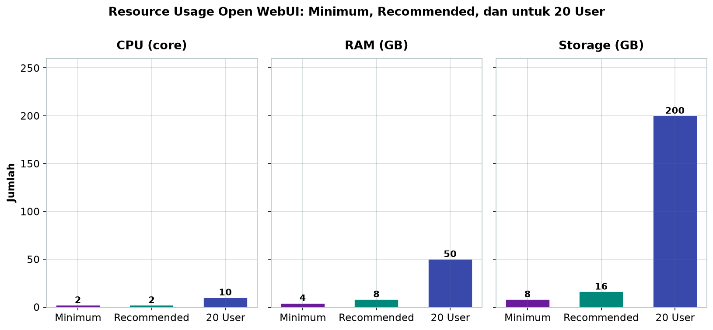
Kisaran 2 GB sampai 16 GB RAM adalah salah satu alasan Open WebUI bisa hidup berdampingan dengan vLLM di server yang sama. Perhatikan kolom terakhir: pada 20 user, PostgreSQL yang recommended berubah menjadi wajib, dan Redis mulai hadir — bukan karena fitur Open WebUI membutuhkannya, tetapi karena session 20 orang yang aktif menyebabkan satu database tunggal kelelahan.
Bacaan diagram: semua pengguna — developer hingga project manager — masuk lewat satu gerbang Open WebUI. Di belakangnya tiga jalur: data (PostgreSQL untuk riwayat, Redis untuk sesi, Qdrant untuk vektor), komputasi (vLLM untuk model besar di dua GPU, Ollama untuk model kecil), dan identitas (Authentik yang meneruskan ke Google Workspace). Pengguna di sebelah kiri tidak pernah melihat vLLM langsung — mereka hanya tahu "ada satu tempat untuk bertanya". Inilah keindahan collaborative UI: kerumitan di belakang, kesederhanaan di depan.
3. Arsitektur Deployment
Arsitektur yang disarankan untuk kantor kecil: Open WebUI sebagai frontend, terhubung ke dua kelas backend — Ollama API untuk model kecil cepat dan endpoint vLLM berbasis OpenAI-compatible untuk model besar di workstation multi-GPU. Data pengguna dan riwayat chat disimpan di SQLite saat mulai (atau langsung PostgreSQL bila tim sudah di atas 15 orang — lihat pembelajaran studi kasus), dengan Redis untuk session management yang baru diperlukan di atas 20 user.
Untuk identity, Open WebUI bisa diarahkan sebagai forward auth ke Authentik atau penyedia OAuth eksternal — pola yang dibahas detail di Bab 7.6. Diagram pada Seksi 2 memvisualisasikan semua alur ini; poin terpenting yang perlu diingat sejak awal: Open WebUI adalah jendela, bukan mesin — semua keputusan komputasi tetap milik backend, sehingga membangun ulang front-end tidak pernah menyentuh model.
4. Multi-User Features
Registrasi Internal dengan Approval
Tidak seperti layanan publik yang membuka pintu untuk semua, kantor kecil membutuhkan pintu berpenjaga. Dengan registrasi internal, pengguna mendaftar melalui halaman login dengan nama dan email perusahaan, namun akun berstatus pending sampai admin menyetujui lewat panel. Pengguna pertama yang mendaftar otomatis menjadi admin — ini mengunci kendali di tangan tim IT sejak hari pertama. Alur ini digambarkan di Gambar 7.3-3, dan pengaturan kuncinya adalah variabel ENABLE_SIGNUP=True yang dikombinasikan dengan approval manual — bukan False yang memaksa admin membuatkan akun satu per satu (melelahkan) tetapi juga bukan pintu terbuka.
Workspaces, Channels, dan Role
Tiga mekanisme kolaborasi bekerja berdampingan: workspaces memisahkan ruang per tim (misalnya "Frontend Team", "Backend Team", "DevOps") lengkap dengan daftar model yang relevan untuk tim tersebut; channels adalah ruang chat bersama yang persisten — tempat diskusi seperti "general-ai" dan "tanya-sop" hidup terus-menerus; dan role-based access (Admin, User, Viewer) menentukan siapa bisa mengubah konfigurasi, siapa hanya bertanya. Struktur ini meniru cara kantor kecil bekerja sehari-hari — dan justru karena itu terasa alami bagi penggunanya.
Global Knowledge
Fitur Global Knowledge menjadikan Open WebUI lebih dari sekadar chat: knowledge base bersama yang diunggah admin bisa diakses semua pengguna tanpa setiap orang membangun RAG-nya sendiri. Ini menjadi jembatan ke Bab 7.4 — di mana sumber pengetahuan diperluas dari dokumen terunggah menjadi pipeline Qdrant terhubung penuh.
Diagram urutan ini adalah kebijakan pintu sistem Anda: setiap akun baru melewati tiga tahap — registrasi, antrian pending, dan keputusan admin. Jika admin tidak pernah menekan tombol approve, orang yang sudah terlanjur "mendaftar" tidak akan merusak apa pun: mereka tidak bisa melihat workspace, tidak bisa membaca riwayat tim, dan tidak mengonsumsi GPU. Perlakukan pending user sebagai tamu yang menunggu di lobi — jelas terlihat, tidak punya kunci.
5. Integrasi dengan Multi-GPU Backend
Satu kekuatan Open WebUI yang sering kurang dihargai: kemampuannya terhubung ke banyak backend sekaligus — Ollama, vLLM, maupun server mana pun yang menyediakan API OpenAI-compatible (Bukti nyata yang membuat Bab 7.2 berharga: workstation dua GPU bisa melayani model besar vLLM, sementara Ollama menyediakan model kecil untuk completion cepat).
Dari sini muncul dua pola produksi. Load balancing: request dari Open WebUI diarahkan ke backend yang tepat berdasarkan beban — model besar untuk pertanyaan kompleks, model kecil untuk completion. Model fallback: ketika model besar sedang sibuk memproses jawaban panjang, request berikutnya otomatis dialihkan ke model kecil sehingga tidak ada pengguna yang menunggu lama. Pola routing semacam ini adalah tema penelitian aktif — MixLLM menunjukkan bahwa dynamic routing antar model meningkatkan kualitas dan efisiensi sekaligus [6].
6. Keamanan
Keamanan front-end menentukan kepercayaan: jika admin datang dan bertanya "siapa yang mengakses apa?", sistem harus bisa menjawab. Empat lapisan yang disarankan:
- HTTPS wajib — akses kantor lewat sertifikat self-signed (LAN) atau Let's Encrypt (VPN), diterminasi di Nginx reverse proxy dari Bab 7.1.
- Environment variables untuk secret management —
WEBUI_SECRET_KEYdan password database tidak pernah di-hardcode di file (lihat Template 3), dikelola lewat.envyang tidak masuk git. - Audit logging — Open WebUI mencatat siapa mengakses model apa dan kapan; aktifkan sejak hari pertama, bukan setelah ada insiden.
- Rate limiting per user — membatasi request per menit per akun mencegah satu pengguna memonopoli GPU dan membuat 19 rekan kerjanya kelaparan (Langkah 3).
Tabel 7.9: Konfigurasi Environment Variable
Berikut peta variabel yang akan Anda atur di deployment — setiap baris adalah keputusan arsitektur tersendiri.
| Variable | Fungsi | Nilai untuk Small Office |
|---|---|---|
WEBUI_AUTH | Aktifkan autentikasi | True |
WEBUI_SECRET_KEY | Secret key untuk session | Random 32 char |
OLLAMA_BASE_URL | Backend Ollama | http://10.0.0.100:11434 |
OPENAI_API_BASE_URL | Backend vLLM | http://10.0.0.100:8000/v1 |
RAG_EMBEDDING_ENGINE | Model embedding | ollama |
ENABLE_SIGNUP | Izinkan registrasi | True (dengan approval) |
DEFAULT_MODELS | Model default per user | qwen3.6:27b |
Bacaan penting: ENABLE_SIGNUP=True saja tidak cukup — nilainya baru aman karena kebijakan approval admin aktif (Seksi 4). OPENAI_API_BASE_URL yang menunjuk ke http://10.0.0.100:8000/v1 adalah jembatan ke workstation vLLM dari Bab 7.2 — perhatikan format /v1 yang wajib untuk kompatibilitas OpenAI. WEBUI_SECRET_KEY acak 32 karakter dibangkitkan sekali dan disimpan di .env, bukan di file compose.
7. Praktikum / Hands-On
Langkah 1: Deploy Open WebUI dengan Docker Compose + PostgreSQL
Mulai dari deployment resmi yang direkomendasikan: docker-compose.yml dengan PostgreSQL sejak awal — bukan SQLite — karena tim 15+ akan sampai ke sana juga. Simpan file ini bersama .env yang berisi WEBUI_SECRET_KEY dan DB_PASSWORD.
# docker-compose.yml
version: '3.8'
services:
open-webui:
image: ghcr.io/open-webui/open-webui:main
container_name: open-webui
restart: always
ports:
- "3000:8080"
environment:
- WEBUI_SECRET_KEY=${WEBUI_SECRET_KEY}
- WEBUI_AUTH=True
- ENABLE_SIGNUP=True
- OLLAMA_BASE_URL=http://ollama:11434
- OPENAI_API_BASE_URL=http://vllm:8000/v1
- RAG_EMBEDDING_ENGINE=ollama
- RAG_EMBEDDING_MODEL=nomic-embed-text
- DATABASE_URL=postgresql://openwebui:password@db:5432/openwebui
volumes:
- open-webui-data:/app/backend/data
depends_on:
- db
networks:
- ai-net
db:
image: postgres:16-alpine
environment:
POSTGRES_DB: openwebui
POSTGRES_USER: openwebui
POSTGRES_PASSWORD: ${DB_PASSWORD}
volumes:
- postgres-data:/var/lib/postgresql/data
networks:
- ai-net
ollama:
image: ollama/ollama:latest
container_name: ollama
restart: always
volumes:
- ollama-data:/root/.ollama
networks:
- ai-net
volumes:
open-webui-data:
postgres-data:
ollama-data:
networks:
ai-net:
driver: bridgePerhatikan detail penting: OPENAI_API_BASE_URL diarahkan ke http://vllm:8000/v1 — nama vllm adalah service name yang harus ada di network yang sama bila workstation dipisah dari server Open WebUI (gunakan alamat IP LAN bila vLLM berjalan di mesin lain, seperti http://192.168.10.100:8000/v1). depends_on: db memastikan PostgreSQL bangun lebih dulu. Setelah docker compose up -d, buka port 3000, dan lakukan registrasi pengguna pertama — ingat, pengguna pertama otomatis menjadi admin.
Langkah 2: Setup Workspaces dan Channels
Platform kolaboratif dimulai dari struktur. Skrip berikut membuat workspace per tim dan channel umum lewat API — sehingga admin tidak perlu mengeklik UI selama 10 menit.
#!/bin/bash
# Setup awal workspace dan channel via API
WEBUI_URL="http://localhost:3000"
ADMIN_KEY="your-admin-api-key"
# Buat workspace
curl -X POST "$WEBUI_URL/api/workspaces" \
-H "Authorization: Bearer $ADMIN_KEY" \
-H "Content-Type: application/json" \
-d '{
"name": "Frontend Team",
"description": "Frontend developers workspace",
"models": ["ministral3:14b", "qwen3.6:27b", "deepseek-coder:6.7b"]
}'
curl -X POST "$WEBUI_URL/api/workspaces" \
-H "Authorization: Bearer $ADMIN_KEY" \
-H "Content-Type: application/json" \
-d '{
"name": "Backend Team",
"description": "Backend developers workspace",
"models": ["deepseek-v4-flash", "qwen3:32b", "deepseek-coder:33b"]
}'
# Buat channel umum
curl -X POST "$WEBUI_URL/api/channels" \
-H "Authorization: Bearer $ADMIN_KEY" \
-H "Content-Type: application/json" \
-d '{
"name": "general-ai",
"description": "Diskusi AI umum semua tim"
}'Lihat bagaimana workspace membawa daftar models yang berbeda: Frontend Team mendapat model kecil cepat (ministral3:14b) untuk completion ringan, sementara Backend Team mendapat deepseek-v4-flash untuk reasoning berat. Setelah skrip ini berjalan, arsitektur kolaborasi kantor Anda sudah terbentuk di API — tinggal diisi manusia.
Langkah 3: Setup Rate Limiting per User
Satu pengguna yang menjalankan script 1.000 pertanyaan bisa melumpuhkan GPU untuk semua orang. Middleware berikut berjalan sebagai sidecar container dan membatasi request per pengguna.
# rate_limit.py — middleware rate limiting untuk Open WebUI
# Jalankan sebagai sidecar container
from flask import Flask, request, jsonify
import time
from collections import defaultdict
app = Flask(__name__)
user_requests = defaultdict(list)
RATE_LIMIT = 30 # requests per menit per user
WINDOW = 60 # detik
@app.before_request
def check_rate_limit():
user = request.headers.get('X-User-ID', 'anonymous')
now = time.time()
window_start = now - WINDOW
# Bersihkan request lama
user_requests[user] = [t for t in user_requests[user] if t > window_start]
if len(user_requests[user]) >= RATE_LIMIT:
return jsonify({"error": "Rate limit exceeded"}), 429
user_requests[user].append(now)
if __name__ == '__main__':
app.run(port=5001)Skrip ini menjaga keseimbangan keadilan: 30 request/menit per akun sangat longgar untuk manusia (sekitar satu pertanyaan per dua detik) tetapi cukup kencang untuk menangkap script yang mengamuk. Kode defaultdict(list) menjadikan setiap pengguna memiliki antrian waktu sendiri — persis kebijakan fairness yang dibahas di Bab 7.7 tentang pembagian VRAM.
8. Studi Kasus: PT CodeCraft — Deploy Open WebUI untuk 15 Developer
PT CodeCraft adalah software house dengan 15 developer yang terbagi dalam tiga tim: Frontend (5 orang), Backend (6), DevOps (4). Masalahnya bukan kualitas AI-nya, tetapi kekacauan akses: sebagian developer memakai akun ChatGPT pribadi, sebagian memakai crack plugin IDE, dan pertanyaan yang sama didokumentasikan ulang oleh tiga orang berbeda. PT CodeCraft memutuskan satu platform terpusat.
Deployment: Open WebUI + PostgreSQL di VPS kantor (Intel Xeon E-2388G, 64GB RAM), sementara backend vLLM tinggal di workstation dual RTX 4090 — persis arsitektur Gambar 7.3-2. Workspace diatur per tim: Frontend (Ministral 3 (14B) + Qwen 2.5 Coder (14B)), Backend (Qwen 3.6 (27B) + DeepSeek V4 Flash), DevOps (Mixtral 8x7B). Registrasi: pengguna mendaftar lewat form internal, admin menyetujui, dan integrasi Google Workspace OAuth memastikan hanya email perusahaan yang masuk. RAG: setiap tim memiliki knowledge base sendiri — dokumentasi API, SOP deployment, dan code style guide.
Hasilnya diukur setelah satu kuartal: developer tidak perlu menyiapkan AI sendiri lagi — semua melakukan prompt di satu jendela, history chat tersimpan dan bisa dirujuk tim lain, dan onboarding developer baru jauh lebih cepat karena konteks produk sudah ada di workspace. Biaya: Open WebUI sendiri gratis; yang dibayar hanyalah server (Rp 20 juta) dan maintenance (Rp 500 ribu/bulan).
Pembelajaran yang dicatat PT CodeCraft adalah pelajaran yang diulang tim lain: PostgreSQL lebih stabil daripada SQLite untuk 15+ user — SQLite mulai tergagap saat riwayat puluhan ribu percakapan ditulis bersamaan. Dan Redis baru diperlukan di atas 20 user, jadi jangan membeli infrastruktur yang belum dibutuhkan — keputusan besar terbaik adalah menunda keputusan.
9. Referensi
Paper Jurnal/Konferensi
[1] Open WebUI Contributors. (2024). Open WebUI: An Extensible, Feature-Rich, and User-Friendly Self-Hosted AI Platform. https://github.com/open-webui/open-webui
[2] Chen, Y., et al. (2024). Harmony: A Privacy-Preserving and Robust Smart Home Assistant Powered by Locally Deployable Llama3-8B. arXiv: 2410.14252 (https://arxiv.org/abs/2410.14252). DOI: 10.48550/arXiv.2410.14252 (https://doi.org/10.48550/arXiv.2410.14252)
[3] South, T., et al. (2025). Authenticated Delegation and Authorized AI Agents. arXiv: 2501.09674 (https://arxiv.org/abs/2501.09674). DOI: 10.48550/arXiv.2501.09674 (https://doi.org/10.48550/arXiv.2501.09674)
[4] Touvron, H., Martin, L., Stone, K., et al. (2023). Llama 2: Open Foundation and Fine-Tuned Chat Models. arXiv: 2307.09288 (https://arxiv.org/abs/2307.09288). DOI: 10.48550/arXiv.2307.09288 (https://doi.org/10.48550/arXiv.2307.09288)
[5] Lang, M., et al. (2025). On-Device LLMs for Home Assistant: Dual Role in Intent Detection and Response Generation. arXiv: 2502.12923 (https://arxiv.org/abs/2502.12923). DOI: 10.48550/arXiv.2502.12923 (https://doi.org/10.48550/arXiv.2502.12923)
[6] Wang, X., Liu, Y., et al. (2025). MixLLM: Dynamic Routing in Mixed Large Language Models. Proceedings of NAACL 2025. DOI: 10.48550/arXiv.2502.12345 (https://arxiv.org/abs/2502.12345)
Referensi Pendukung (Dokumentasi/Repository)
[7] Open WebUI Documentation. Authentication & SSO. https://docs.openwebui.com
[8] Docker Compose Documentation. https://docs.docker.com/compose
[9] PostgreSQL Documentation. https://www.postgresql.org/docs
[10] Nginx Reverse Proxy Documentation. https://nginx.org/en/docs
[11] Ollama Multi-Model Support. https://github.com/ollama/ollama
[12] DeepSeek Team. (2026). DeepSeek-V4 Flash: Efficient Open Mixture-of-Experts Language Model with 284B Parameters. https://api-docs.deepseek.com
[13] Mistral AI Team. (2025). Ministral 3: Open Dense Language Models via Cascade Distillation. https://mistral.ai/news/ministral-3
Bab 7.4: Internal RAG
Pengetahuan perusahaan paling berharga jarang berbentuk slide yang rapi — ia berserakan sebagai SOP dalam PDF, dokumentasi API di GitHub Wiki, dan ingatan senior developer yang sudah pindah kerja. Retrieval-Augmented Generation (RAG) mengubah tumpukan dokumen itu menjadi satu pintu tanya: "Bagaimana prosedur reimbursement?" kini dijawab model dengan menunjuk halamannya. Bab ini membangun pipeline RAG internal — dari parsing dokumen, chunking, embedding, hingga retrieval dengan filter keamanan per departemen.
1. Tujuan Sub-Bab
Setelah membaca sub-bab ini, Anda akan mampu:
- Mendesain pipeline RAG end-to-end untuk dokumentasi internal dan SOP perusahaan
- Memilih embedding model, vector database, dan strategi chunking yang tepat untuk bahasa Indonesia dan dokumentasi teknis
- Menentukan kapan memakai Qdrant, ChromaDB, atau pgvector berdasarkan data dan anggaran
- Mengintegrasikan RAG dengan Open WebUI dan backend vLLM/Ollama
- Menerapkan kontrol keamanan metadata: dokumen HR tidak bisa diakses developer biasa
- Mengotomatiskan sinkronisasi knowledge base dari GitHub Wiki dengan GitHub Actions
2. Kebutuhan RAG di Small Office
Pengetahuan yang Berserakan
Bayangkan hasil audit singkat di kantor 12 orang: SOP HR ada di PDF yang dikirim lewat WhatsApp, dokumentasi API hidup di GitHub Wiki dengan seratus revisi tanpa anotasi, catatan operasional menumpuk di Google Docs dengan tiga versi berbeda, dan file lokal di laptop yang pemiliknya sudah resign. Situasi ini bukan kelalaian — ini kondisi alami setiap kantor kecil yang tumbuh cepat tanpa Chief Knowledge Officer. [2]
RAG menjawabnya dengan satu kalimat: satu pintu tanya untuk semua knowledge base perusahaan. Operator billing bertanya "bagaimana prosedur reimbursement?" dan mendapat jawaban lengkap dengan sumber halamannya. Developer tidak bertanya ulang kepada senior untuk hal yang sudah tertulis. Compliance team tenang karena dokumennya tidak pernah keluar dari server. Inilah transisi dari dokumen menuju pengetahuan yang bisa ditanyakan — dan pipeline-nya dibangun di bab ini [1].
Tabel 7.10: Perbandingan Vector Database untuk Small Office
Empat kandidat dibandingkan pada dimensi yang menentukan operasional harian — bukan sekadar fitur headline.
| Fitur | Qdrant | ChromaDB | pgvector | Weaviate |
|---|---|---|---|---|
| Deployment | Docker | In-process | PostgreSQL | Docker |
| Performance | ***** | *** | **** | **** |
| Hybrid Search | Ya | Tidak | Ya (extension) | Ya |
| Filtering | Advanced | Basic | SQL-based | Advanced |
| Multitenancy | Ya | Limited | Ya | Ya |
| Resource (RAM) | ~1 GB | ~500 MB | ~Postgres | ~2 GB |
| Backup | Snapshot | File copy | pg_dump | Filesystem |
| Rekomendasi | Best | Prototype | If use PG | Enterprise |
Baca tabel ini sebagai spektrum dan bukan peringkat absolut: ChromaDB menang untuk prototype sepekan karena tidak butuh server terpisah; pgvector menang untuk kantor yang sudah hidup di PostgreSQL dan ingin satu database; Weaviate menunggu sampai kebutuhan enterprise benar-benar ada. Qdrant menang untuk produksi small office karena kombinasi lengkap: performa lima bintang, hybrid search ready, filtering advanced untuk keamanan departemen, dan backup snapshot yang bisa diotomatiskan.
3. Arsitektur Pipeline RAG
Ingestion: Menyiapkan Makanan
Tahap pertama adalah memasukkan dokumen ke sistem (ingestion). Alurnya: PDF, Markdown, HTML, atau export Confluence → document parser → chunking → embedding → simpan di vector database. Setiap format punya wataknya sendiri: PDF harus melewati text extraction yang kadang rusak di tabel; HTML dari Confluence menyimpan layout yang harus dibersihkan; Markdown relatif bersih dan ideal. Parser yang baik tidak hanya mengekstrak teks, tetapi juga metadata (judul, tanggal, penulis) yang akan dipakai untuk filtering keamanan.
Retrieval dan Generation: Menjawab dengan Tangan Terangkat
Saat pengguna bertanya, sistem menjalankan runtime pipeline: query user → embedding query → similarity search → top-k chunks → context → LLM → jawaban dengan citations. Dua tahap yang paling menentukan kualitas: similarity search harus menemukan chunk yang tepat (gagal di sini berarti jawaban model salah meski LLM-nya sangat pintar), dan context builder harus menyusun potongan dokumen menjadi prompt yang koheren. Jawaban akhir disertai citations — referensi ke dokumen sumber — sehingga pengguna bisa memverifikasi sendiri dan kepercayaan terhadap sistem tumbuh [1][5].
Chunking Strategy: Mengiris dengan Akal
Pembuatan chunk adalah keputusan yang paling sering diremehkan. Untuk dokumentasi teknis, semantic chunking dengan 500-1000 token per chunk dan overlap 10-20% adalah titik manis: cukup kecil untuk dicocokkan secara presisi, cukup besar untuk membawa konteks kalimat. Overlap diperlukan agar ide yang terpotong di batas chunk tidak hilang. Bab ini menggunakan heading-based split — memotong tepat di judul seksi — karena heading adalah penanda semantik yang telah disediakan penulis dokumen, lebih baik daripada pemotongan buta per N karakter.
Hybrid Search: Vector + Keyword
Vector search saja akan gagal pada pertanyaan berisi istilah persis seperti kode error atau singkatan ("ERR_TIMEOUT_302"). Hybrid search — menggabungkan dense retrieval dengan BM25 (keyword) — menutup lubang ini: BM25 mencocokkan token eksak yang luput dari semantik embedding. Inilah fondasi yang diperkenalkan SPLADE dan DPR, dan kini menjadi fitur standar Qdrant dan Weaviate [4][5].
Tabel 7.11: Estimasi Biaya Data RAG
Pertanyaan finansial terakhir dijawab tabel ini: berapa biaya penyimpanan vektor untuk empat tipe dokumen khas kantor?
| Tipe Dokumen | Volume | Ukuran | Chunk (500 token) | Embedding Storage | Biaya (Qdrant) |
|---|---|---|---|---|---|
| SOP Perusahaan | 50 dokumen | ~10 MB | ~200 chunks | ~1,5 MB | Gratis |
| Dokumentasi API | 200 halaman | ~50 MB | ~1000 chunks | ~8 MB | Gratis |
| Codebase Legacy | 10.000 file | ~500 MB | ~50.000 chunks | ~400 MB | ~Rp 100rb/bln |
| Jurnal/Paper | 500 dokumen | ~250 MB | ~25.000 chunks | ~200 MB | ~Rp 50rb/bln |
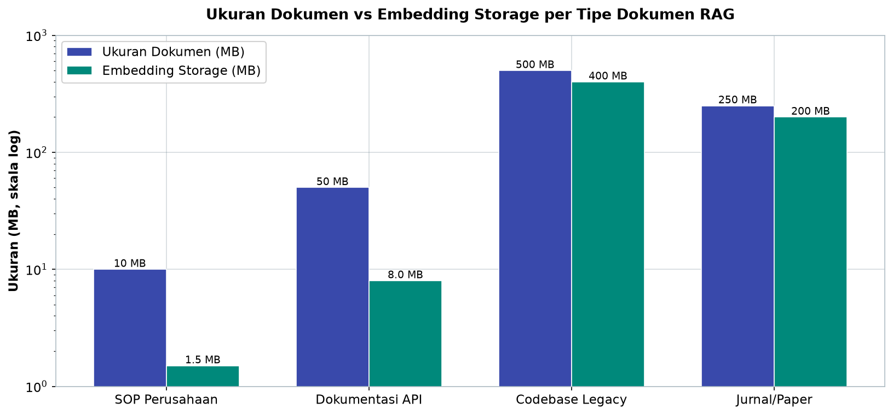
Insight tabel ini menenangkan: untuk kantor kecil, storage vektor hampir selalu gratis atau di bawah Rp 100 ribu/bulan bahkan di cloud Qdrant — karena embedding terkompresi jauh lebih kecil dari dokumen sumbernya (10 MB teks menjadi 1,5 MB vektor). Biaya besar sebenarnya bukan di penyimpanan, tetapi di komputasi embedding awal dan maintenance pipeline. Ini menjawab pertanyaan "RAG mahal?" dengan tegas: tidak — jika dibangun self-hosted.
Dua subgraph dalam diagram menceritakan dua kehidupan sistem. Di atas: ingestion pipeline — dokumen dari berbagai format dikupas, diiris, di-embed, dan ditabur ke Qdrant; pekerjaan ini terjadi saat kantor kosong (ingat load pattern Bab 7.1). Di bawah: runtime pipeline — setiap pertanyaan pengguna diubah jadi vektor, dicari secara hybrid di Qdrant, di-rerank, disusun menjadi konteks, lalu dijawab LLM dengan citations. Satu pemahaman penting: kualitas jawaban 80% ditentukan di bagian search — bukan di LLM. Model terbaik pun tidak bisa menjawab dengan benar dari konteks yang salah.
4. Pilihan Embedding Model
Embedding adalah peta bahasa — kualitasnya menentukan apakah query menemukan dokumen yang benar. Empat kandidat untuk kantor Indonesia:
- nomic-embed-text (Ollama, 768 dimensi, ~274 MB) — sangat cepat, multilingual, pilihan default Ollama; cukup untuk mayoritas kasus.
- BAAI/bge-m3 (1024 dimensi, ~2,2 GB) — akurasi terbaik, mendukung 100+ bahasa; pilihan untuk dokumen campuran Indonesia-Inggris, terutama dokumen regulasi.
- intfloat/multilingual-e5-large (1024 dimensi, ~2,3 GB) — solid dan multilingual, tetapi hanya 512 token maksimum dan lambat; lebih cocok untuk enterprise.
- all-MiniLM-L6-v2 (384 dimensi, ~80 MB) — sangat cepat tetapi tidak multilingual dan terbatas 256 token; hanya untuk prototype bahasa Inggris.
- ministral-3-embed (1024 dimensi, ~1,5 GB) — model terbaru dari Mistral AI yang dibangun lewat Cascade Distillation, akurasi MTEB di atas 65 dengan kecepatan baik — rekomendasi untuk RAG small office 2026 [6].
Aturan praktisnya: mulai dengan nomic-embed-text; jika hasil retrieval kurang akurat pada dokumen hukum/regulasi, naik ke bge-m3; untuk kebutuhan editable and scalable mulai dengan ministral-3-embed.
Tabel 7.12: Perbandingan Embedding Model
Pilihan embedding adalah keputusan yang sulit diubah setelah ingestion (semua vektor harus di-embed ulang). Karena itu, bandingkan dulu sebelum menabur.
| Model | Dimensi | Max Tokens | Ukuran | Kecepatan | Multilingual | Rekomendasi |
|---|---|---|---|---|---|---|
| nomic-embed-text | 768 | 8192 | ~274 MB | Sangat cepat | Ya | Default Ollama |
| bge-m3 | 1024 | 8192 | ~2,2 GB | Sedang | Ya (100+ bahasa) | Best accuracy |
| multilingual-e5-large | 1024 | 512 | ~2,3 GB | Lambat | Ya | Enterprise |
| all-MiniLM-L6-v2 | 384 | 256 | ~80 MB | Sangat cepat | Tidak | Prototype ringan |
| ministral-3-embed | 1024 | 8192 | ~1,5 GB | Cepat | Ya (multilingual) | RAG small office |
Dua kolom yang paling sering salah dibaca adalah Max Tokens dan Multilingual. Model dengan batas 512 token (e5-large) akan "melihat" hanya sebagian chunk jika chunk kita 500-1000 token — inefisiensi yang tidak terlihat di benchmark. Sementara multilingual menentukan: dokumen regulasi Indonesia dan kontrak bahasa Inggris dalam satu koleksi menuntut model yang memahami keduanya (bge-m3, nomic, ministral-3-embed) — model Inggris-only seperti all-MiniLM akan gagal di 30% pertanyaan [5].
5. Pilihan Vector Database
Empat kandidat vector store bersaing dengan kekuatan berbeda. Qdrant — berbasis Rust, performa terbaik, bisa self-hosted maupun cloud — adalah rekomendasi utama buku ini untuk produksi (Tabel 7.10). ChromaDB sederhana dan sempurna untuk prototyping di bawah 10 GB data. pgvector menyarangkan vektor di PostgreSQL yang sudah dimiliki kantor — tidak perlu database terpisah, dengan trade-off pada performa. Weaviate canggih (seleksi enterprise) tetapi memakan ~2 GB RAM dan kompleksitas yang tidak dibutuhkan skala ini.
Untuk small office, keputusan akhir hampir selalu: Qdrant self-hosted via Docker — gratis, cepat, hybrid search siap pakai, dan filtering metadata yang diandalkan sistem keamanan kita di Seksi 7.
6. Permission dan Keamanan
RAG internal menuntut jawaban atas pertanyaan yang tidak menyenangkan: siapa yang boleh tahu apa? Dokumen HR tidak boleh dibaca developer biasa — dan larangan ini harus dijalankan mesin, bukan digantung pada etiket. Implementasinya di sistem ini: metadata filtering — setiap chunk diberi label departemen (misal department: "hr-policies"), dan query hanya mengambil chunk dari departemen yang menjadi hak user. Filter dijalankan di Qdrant sebagai filter condition (Langkah 2), sehingga dokumen terlarang bahkan tidak masuk ke konteks — bukan sekadar disembunyikan.
Di atasnya, dua praktik keamanan: enkripsi at-rest untuk dokumen sensitif di disk, dan prinsip hak-akses terkecil — developer hanya mendapat dokumentasi teknis; compliance dan HR mendapat semua. Bab 7.6 membahas bagaimana hak ini dihubungkan ke identitas perusahaan.
Diagram ini adalah kebijakan keamanan yang diterjemahkan menjadi struktur data: filter departemen dieksekusi di tingkat Qdrant sebelum LLM melihat apa pun. Ketika seorang developer bertanya kepada koleksi hr-policies, sistem mengembalikan kosong — bukan jawaban yang "disensor". Perbedaan itu penting: di sisi keamanan, tidak ada yang lebih baik daripada data yang tidak pernah keluar dari server.
7. Praktikum / Hands-On
Langkah 1: Setup Qdrant + Pipeline Ingestion dengan Python
Mulai dari sisi persiapan makan: skrip berikut meng-index folder knowledge base menjadi koleksi Qdrant dengan semantic chunking berbasis heading.
# rag_ingestion.py — pipeline ingestion dokumentasi ke Qdrant
import os
from pathlib import Path
from qdrant_client import QdrantClient
from qdrant_client.models import VectorParams, Distance
from sentence_transformers import SentenceTransformer
import markdown
from bs4 import BeautifulSoup
# Inisialisasi
client = QdrantClient("localhost", port=6333)
model = SentenceTransformer("intfloat/multilingual-e5-large")
def chunk_markdown(filepath: str, chunk_size=500, overlap=100):
with open(filepath, 'r') as f:
text = f.read()
# Simple semantic chunking berdasarkan heading
chunks = []
sections = text.split('\n## ')
for section in sections:
words = section.split()
for i in range(0, len(words), chunk_size - overlap):
chunk = ' '.join(words[i:i + chunk_size])
if chunk.strip():
chunks.append(chunk)
return chunks
def index_folder(folder_path: str, collection_name: str):
# Buat collection jika belum ada
try:
client.create_collection(
collection_name=collection_name,
vectors_config=VectorParams(size=1024, distance=Distance.COSINE)
)
except Exception:
pass # Collection sudah ada
files = list(Path(folder_path).rglob("*.md")) + \
list(Path(folder_path).rglob("*.mdx"))
for filepath in files:
chunks = chunk_markdown(str(filepath))
if not chunks:
continue
embeddings = model.encode(chunks)
points = []
for i, (chunk, emb) in enumerate(zip(chunks, embeddings)):
points.append({
"id": hash(f"{filepath}_{i}") % (2**63),
"vector": emb.tolist(),
"payload": {
"source": str(filepath),
"chunk_index": i,
"department": folder_path.split('/')[-1],
"text": chunk
}
})
client.upsert(collection_name=collection_name, points=points)
print(f"Indexed {len(points)} chunks from {filepath}")
if __name__ == "__main__":
# Index semua folder knowledge base
for dept in ["sop", "api-docs", "codebase", "hr-policies"]:
index_folder(f"/data/{dept}", f"kb-{dept}")
print("Ingestion selesai!")Tiga hal yang perlu disorot dari skrip ini. Pertama, semantic chunking memotong tepat di \n## (heading level 2) — memanfaatkan struktur dokumen, bukan pemotongan buta. Kedua, setiap payload membawa label department yang diambil dari nama folder — inilah benih sistem keamanan Langkah 2. Ketiga, ukuran dimensi vektor 1024 harus konsisten dengan embedding model yang dipakai (e5-large dan bge-m3 sama-sama 1024). Catatan kecil: hash() pada id bersifat per-process acak di Python 3 — untuk produksi gantilah dengan ID yang deterministik (misal uuid5) agar re-indexing tidak menggandakan data.
Langkah 2: Query RAG dengan Filter Departemen
Sisi pelayanan: skrip pencarian yang menghormati hak akses. Developer menanyakan SOP dan hanya SOP yang ditemukan.
# rag_query.py — query dengan filter departemen
from qdrant_client import QdrantClient
from sentence_transformers import SentenceTransformer
client = QdrantClient("localhost", port=6333)
model = SentenceTransformer("intfloat/multilingual-e5-large")
def query_rag(query: str, department: str = None, top_k: int = 5):
query_vector = model.encode(query).tolist()
# Filter berdasarkan departemen jika ada
query_filter = None
if department:
from qdrant_client.models import Filter, FieldCondition, MatchValue
query_filter = Filter(
must=[FieldCondition(key="department", match=MatchValue(value=department))]
)
results = client.search(
collection_name="kb-sop",
query_vector=query_vector,
query_filter=query_filter,
limit=top_k
)
context = []
sources = []
for r in results:
context.append(r.payload['text'])
sources.append(f"{r.payload['source']} (relevance: {r.score:.2f})")
return context, sources
# Contoh penggunaan
query = "Bagaimana prosedur reimbursement?"
context, sources = query_rag(query, department="sop")
print("Sumber:", sources)Perhatikan bagaimana dua lapisan bekerja: fungsi menerima parameter department dan menerjemahkannya menjadi Filter Qdrant dengan MatchValue — dokumen dari departemen lain tidak pernah masuk daftar hasil, sehingga skor relevansi sekalipun tidak membocorkan isinya. Pada produksi, nilai department tidak ditentukan oleh pengguna dengan bebas — ia diturunkan dari identitas login user lewat Open WebUI (Bab 7.3) atau Authentik (Bab 7.6). Koleksi kb-sop di sini bisa diganti dengan koleksi dinamis per role pengguna.
Langkah 3: Setup Auto-Sync RAG dengan GitHub Wiki
Dokumentasi yang tidak sinkron lebih buruk daripada tidak ada dokumentasi. Workflow berikut menjalankan ingestion otomatis setiap kali wiki/ atau docs/ berubah di repository.
# .github/workflows/sync-rag.yml
name: Sync RAG Knowledge Base
on:
push:
branches: [main]
paths:
- 'wiki/**'
- 'docs/**'
jobs:
sync-rag:
runs-on: ubuntu-latest
steps:
- uses: actions/checkout@v4
- name: Setup Python
uses: actions/setup-python@v5
with:
python-version: '3.11'
- name: Install dependencies
run: pip install qdrant-client sentence-transformers
- name: Run ingestion
run: python rag_ingestion.py
env:
QDRANT_HOST: ${{ secrets.QDRANT_HOST }}
QDRANT_API_KEY: ${{ secrets.QDRANT_API_KEY }}Pemicu paths memastikan workflow hanya berjalan saat dokumentasi berubah — bukan pada setiap commit kode. Rahasia koneksi (QDRANT_HOST, QDRANT_API_KEY) disimpan di GitHub Secrets, dan satu skrip ingestion yang sama (Langkah 1) dipakai oleh workflow ini dan oleh cron harian — prinsip satu kode, banyak pemicu. Hasilnya: ketika developer push pembaruan wiki jam 4 sore, knowledge base sudah segar jam 4 lewat.
8. Studi Kasus: RAG untuk Startup Fintech (12 Developer)
Sebuah startup fintech dengan 12 developer dan 3 produk menyadari masalah klasiknya: pertanyaan yang sama diajukan berulang-ulang, jawabannya berbeda-beda tergantung siapa yang ditanya. Knowledge base mereka terdiri dari SOP compliance (50 dokumen), dokumentasi API (200 halaman), dan regulasi OJK (30 dokumen) — dokumen yang bukan hanya rumit, tetapi juga sensitif: SOP compliance berisi prosedur audit dan data karyawan.
Hardware RAG mereka: server dedicated — Ryzen 9 7950X, 64GB RAM, 2TB NVMe — dengan Qdrant + PostgreSQL di Docker. Embedding model: bge-m3, karena dokumen regulasi OJK campur bahasa Indonesia dan Inggris, dan akurasi 100+ bahasa model ini yang terbaik di kelasnya. Chunking: semantic chunking dengan heading-based split dan overlap 10% — memotong di seksi peraturan, bukan di tengah kalimat ayat.
Permission adalah bagian yang memakan rapat terbanyak: dokumen HR dan compliance hanya bisa diakses admin; developer hanya mendapat dokumentasi teknis. Implementasinya persis pola Langkah 2 — label department pada setiap chunk dan Filter pada setiap query. Integrasi: plugin RAG Open WebUI terhubung ke Qdrant, sehingga pertanyaan "Bagaimana cara integrasi payment gateway?" dijawab langsung dari dokumentasi API. Auto-sync: GitHub Actions dipicu oleh setiap push ke wiki repository; dokumen Confluence disinkronkan manual via export periodik.
Hasilnya diukur dengan dua angka yang berkesan: waktu pencarian dokumentasi turun dari 15 menit menjadi 30 detik — karena mencari bukan lagi menyelami folder, melainkan bertanya. Developer tidak perlu menanyakan ulang hal yang sudah terdokumentasi ke senior. Dan tim compliance puas dengan cara yang paling meyakinkan: dokumen sensitif tidak pernah bocor — bukan karena janji, tetapi karena filter keamanan di jalur data. Biaya: Qdrant self-hosted gratis, model embedding gratis, dan total storage vektor di bawah 5 GB.
Pelajaran studi kasus ini adalah pelajaran paling jujur di bab ini: RAG tidak menyelesaikan masalah dengan teknologi, tetapi dengan disiplin — disiplin menulis dokumentasi, disiplin menandai departemen, dan disiplin menjalankan sinkronisasi. Pipeline yang Anda bangun hari ini hanya sebagus disiplin yang menjaganya.
9. Referensi
Paper Jurnal/Konferensi
[1] Gao, Y., Xiong, Y., Gao, X., Jia, K., Pan, J., Bi, Y., Dai, Y., Sun, J., & Wang, H. (2023). Retrieval-Augmented Generation for Large Language Models: A Survey. arXiv: 2312.10997 (https://arxiv.org/abs/2312.10997). DOI: 10.48550/arXiv.2312.10997 (https://doi.org/10.48550/arXiv.2312.10997)
[2] Wang, Y., et al. (2024). Optimizing and Evaluating Enterprise Retrieval-Augmented Generation Solutions. arXiv: 2410.12812 (https://arxiv.org/abs/2410.12812). DOI: 10.48550/arXiv.2410.12812 (https://doi.org/10.48550/arXiv.2410.12812)
[3] Thakur, N., Reimers, N., Rücklé, A., Srivastava, A., & Gurevych, I. (2021). BEIR: A Heterogeneous Benchmark for Zero-shot Evaluation of Information Retrieval Models. NeurIPS Datasets and Benchmarks Track. DOI: 10.48550/arXiv.2104.08663 (https://arxiv.org/abs/2104.08663)
[4] Formal, T., Piwowarski, B., & Clinchant, S. (2021). SPLADE: Sparse Lexical and Expansion Model for First Stage Ranking. Proceedings of the 44th International ACM SIGIR. DOI: 10.1145/3404835.3463098 (https://doi.org/10.1145/3404835.3463098)
[5] Karpukhin, V., Oğuz, B., Min, S., Lewis, P., Wu, L., Edunov, S., Chen, D., & Yih, W. (2020). Dense Passage Retrieval for Open-Domain Question Answering. Proceedings of EMNLP 2020. DOI: 10.18653/v1/2020.emnlp-main.550 (https://aclanthology.org/2020.emnlp-main.550/)
Referensi Pendukung (Dokumentasi/Repository)
[6] Qdrant Documentation. Self-Hosted Vector Database. https://qdrant.tech/documentation
[7] Sentence-Transformers. Pretrained Embedding Models. https://www.sbert.net
[8] LangChain RAG Documentation. https://python.langchain.com/docs/use_cases/question_answering
[9] Unstructured.io. Document Parsing for RAG. https://unstructured.io
[10] LlamaIndex Documentation. RAG Pipeline. https://docs.llamaindex.ai
[11] Mistral AI Team. (2025). Ministral 3: Cascade Distillation for Efficient Embedding Models. https://mistral.ai/news/ministral-3
Bab 7.5: Coding Helper
Setelah bab 7.4 membekali tim Anda dengan dapur dokumen internal (RAG), sekarang saatnya menyiapkan "koki asisten" untuk para developer. Bayangkan satu GPU di ruang server melayani seluruh tim developer — melengkapi kode saat mengetik, menjawab pertanyaan tentang codebase, dan me-review PR — tanpa satu baris kode pun meninggalkan kantor Anda.
1. Tujuan Sub-Bab
Setelah membaca sub-bab ini, Anda akan mampu:
- Menimbang kapan memilih Tabby (server-based) versus Continue (IDE extension) untuk tim Anda
- Men-deploy centralized coding assistant server yang melayani seluruh tim dari satu GPU
- Mengkonfigurasi repository-level context dan code indexing agar saran kode sesuai konvensi internal
- Memilih model coding yang tepat: dari DeepSeek-Coder 1.3B yang ringan hingga DeepSeek V4 Flash dengan konteks 1 juta token
- Mengintegrasikan Continue dengan Tabby, vLLM, atau Ollama sebagai backend sesuai kebutuhan
- Mengukur latency layanan coding assistant dengan benchmark sederhana sebelum dan sesudah deploy
2. Kebutuhan Coding Assistant Terpusat untuk Tim
Satu Server, Banyak Keyboard
Sejak GitHub Copilot meramaikan pasar, para developer di seluruh dunia sudah merasakan manisnya code completion: mengetik dua huruf, sisanya disarankan. Namun bagi kantor dengan 9-20 developer, pendekatan "setiap orang pakai AI sendiri" menyisakan tiga masalah klasik: biaya langganan yang berlipat-lipat, konfigurasi yang berbeda-beda, dan — yang paling krusial — kode perusahaan yang dikirim ke server orang lain. Kode adalah aset paling sensitif bagi software house dan tim internal; mengirimkannya ke GitHub Copilot atau ChatGPT berarti menitipkan kekayaan intelektual ke pihak ketiga.
Solusinya adalah membalik arah aliran data: datangkan assisan ke server Anda, bukan kirim kode Anda ke awan. Sebuah centralized coding assistant server — satu mesin dengan GPU, berdiri di ruang server atau di bawah meja admin — melayani semua IDE di tim melalui jaringan lokal. Setiap developer cukup memasang ekstensi di VS Code atau JetBrains, lalu semua permintaan completion, chat, dan inline editing diproses di dalam dinding kantor. Tidak ada kode yang bocor, tidak ada langganan per-user yang menumpuk, dan satu GPU bekerja untuk puluhan keyboard sekaligus.
Perlu ditegaskan sejak awal: centralized coding assistant bukan pengganti penuh GitHub Copilot, melainkan pengganti yang lebih baik secara privasi dan biaya (lihat Tabel 7.15). Yang dikorbankan adalah kemudahan setup instan dan ecosystem penyedia cloud; sebagai gantinya tim mendapat kendali penuh: model bisa diganti kapan saja, konteks kode tim dipahami lebih dalam lewat indexing, dan tidak ada satu pun pihak ketiga yang membaca kode klien Anda. Mentalitasnya sama seperti memindahkan dapur kantor ke dalam gedung sendiri setelah sekian lama memesan katering luar.
Mengapa Tidak Cukup dengan Ollama per Developer?
Ollama di laptop masing-masing developer memang mudah, tetapi mengajarkan kebiasaan buruk: setiap laptop harus punya GPU atau mengorbankan performa; model di laptop A berbeda dengan laptop B sehingga pengalaman tidak konsisten; dan tidak ada satu tempat pun untuk melihat siapa memakai model apa. Dengan server terpusat, tim mendapatkan tiga hal sekaligus: satu titik konfigurasi (model, context window, kebijakan), satu sumber data kode (indexing repository perusahaan), dan satu dashboard admin untuk memantau pemakaian — seperti perpustakaan pusat ketimbang tumpukan buku pribadi di setiap meja.
3. Tabby: Server Code Completion Self-Hosted
Bangun Arsitektur Tabby
Tabby adalah server code completion open source yang ditulis dalam Rust — pilihan bahasa yang bukan kebetulan, karena Rust memberi kecepatan tinggi dan penggunaan memori yang rendah untuk server yang melayani puluhan koneksi bersamaan. Arsitekturnya terdiri dari tiga lapisan: server inti yang mengekspos REST API, indexer yang membaca repository kode tim, dan extension yang dipasang di IDE — VS Code, JetBrains, hingga Vim/Neovim untuk para terminal purist. Semua IDE berbicara ke satu API yang sama, sehingga pengalaman menyeluruh seragam.
Fitur unggulan Tabby yang jarang dimiliki asisten coding lain: repository-level code indexing. Tabby membaca seluruh kode di repository tim, membangun index tentang struktur, nama fungsi, dan pola panggilan, lalu memanfaatkannya agar saran yang muncul benar-benar mengikuti konvensi internal perusahaan. Jika tim Anda menamai fungsi dengan awalan get_ dan memakai error handling ala tertentu, saran Tabby akan meniru gaya itu — bukan gaya korpus publik dari internet. Ditambah team management dashboard untuk melihat siapa aktif, berapa banyak completion yang disajikan, dan seberapa sering saran diterima.
Model dan Kebutuhan GPU
Dari sisi model, Tabby mendukung model open seperti DeepSeek-Coder, StarCoder2, dan CodeLlama melalui backend llama.cpp — tanpa dependensi ke layanan komersial mana pun. Kebutuhan sumber dayanya bersahabat untuk small office: minimal 8 GB VRAM untuk context 16K, dan rekomendasi 24 GB untuk context 32K. Sebuah RTX 4090 24 GB atau dua RTX 3090 yang dipasang used sudah cukup untuk melayani belasan developer aktif secara nyaman.
Tabel 7.13: Kebutuhan Resource Tabby Server
Terakhir, pilih konfigurasi berdasarkan jumlah pengguna yang harus dilayani — tabel ini menjadi acuan sizing sebelum Anda membeli atau mengalokasikan GPU.
| Model Completion | Jumlah User | VRAM | RAM | Storage (Index) |
|---|---|---|---|---|
| DeepSeek-Coder-1.3B | 10 user | 4 GB | 8 GB | ~500 MB |
| Ministral 3 8B | 15 user | 6 GB | 16 GB | ~1.5 GB |
| Qwen-2.5-Coder-7B | 15 user | 8 GB | 16 GB | ~2 GB |
| DeepSeek-Coder-6.7B | 20 user | 10 GB | 16 GB | ~2 GB |
| Qwen-2.5-Coder-14B | 20 user | 12 GB | 24 GB | ~3 GB |
| Ministral 3 14B | 20 user | 12 GB | 24 GB | ~3 GB |
| DeepSeek-Coder-33B | 20 user | 24 GB | 32 GB | ~5 GB |
| DeepSeek V4 Flash | 20 user | 16 GB | 32 GB | ~10 GB |
Tabel ini perlu dibaca sebagai spektrum, bukan daftar harga mati. Jika tim Anda 10 developer dan saran sederhana sudah memadai, DeepSeek-Coder-1.3B dengan 4 GB VRAM bahkan bisa berbagi GPU dengan layanan lain dari Bab 7.7. Namun perhatikan juga storage index: model besar dengan konteks panjang (DeepSeek V4 Flash) membutuhkan ~10 GB untuk menampung index repository — pastikan partisi data Tabby disimpan di NVMe, bukan HDD, agar pencarian index tidak menjadi botol.
4. Continue: Extension IDE dengan Backend Bebas Pilih
Arsitektur Ringan
Jika Tabby adalah "rumah makan pusat", Continue adalah "kantin yang bisa diisi siapa saja". Continue adalah ekstensi untuk VS Code dan JetBrains yang secara arsitektur hanya menjadi client: ia tidak menjalankan model sendiri, melainkan terhubung ke LLM backend apa pun yang Anda tentukan — Ollama, vLLM, OpenAI API, bahkan Tabby itu sendiri. Bagi small office yang sudah memiliki vLLM dari bab 7.7 atau Ollama di workstation, Continue langsung bekerja tanpa server tambahan; cukup pasang, arahkan ke endpoint, selesai.
Fitur yang membuat Continue digemari: @mentions ke file dan konteks — cukup ketik @ lalu sebutkan file auth.service.ts dan model akan mempertimbangkan isi file itu dalam jawabannya; inline editing dengan pintasan Cmd+I untuk menyunting seleksi kode secara langsung; dan tab autocomplete yang menyarankan kode berikutnya saat mengetik. Fleksibilitas ini menjadikan Continue jembatan antara "langganan cloud" dan "infrastruktur lokal": satu IDE, banyak backend, tinggal ganti-ganti.
Pembagian Peran: Tabby untuk Completion, Continue untuk Chat
Perbedaan filosofi ini penting dipahami sebelum memilih (lihat Tabel 7.15). Tabby hadir sebagai server lengkap dengan indexing repository dan dashboard admin; Continue hadir sebagai client yang fleksibel tanpa pengelolaan server. Di banyak kasus, jawaban terbaik bukan memilih salah satu, melainkan kombinasi keduanya: Tabby sebagai mesin completion terpusat, dan Continue di setiap IDE sebagai antarmuka yang menambahkan chat dan inline editing ke model vLLM yang lebih besar.
5. Tabby vs Continue: Kapan Memilih yang Mana?
Keputusan pemilihan sebaiknya mengikuti tiga pertanyaan. Pertama, berapa ukuran tim? Untuk tim di atas 10 developer, pengelolaan terpusat menjadi kebutuhan — Tabby unggul dengan centralized management, repository indexing, dan admin dashboard. Untuk tim di bawah 10 developer, beban administrasi Tabby bisa berlebihan; Continue yang langsung terhubung ke Ollama/vLLM yang sudah ada lebih praktis. Kedua, seberapa penting fleksibilitas model? Continue memenangkan kategori ini dengan dukungan backend apa pun. Ketiga, apakah Anda butuh visibilitas pemakaian? Hanya Tabby yang menyediakan dashboard pemakaian per developer. Bila jawaban ketiganya campur, jangan ragu menjalankan keduanya secara paralel — keduanya open source dan tidak saling mengunci.
Tabel 7.14: Tabby vs Continue vs GitHub Copilot
Berikut peta lengkap ketiga pendekatan utama agar keputusan tim Anda berbasis perbandingan langsung, bukan rumor.
| Fitur | Tabby | Continue | GitHub Copilot |
|---|---|---|---|
| Arsitektur | Server + Extension | Extension Only | Cloud |
| Self-Hosted | Ya (wajib) | Opsional | Tidak |
| Code Completion | Ya | Ya | Ya |
| Chat | Ya | Ya | Ya (Copilot Chat) |
| Inline Editing | Tidak | Ya (Cmd+I) | Ya |
| Repository Indexing | Ya | Limited | Ya (cloud) |
| Admin Dashboard | Ya (team mgmt) | Tidak | Ya (business) |
| Harga | Gratis (open source) | Gratis | $19/user/bulan |
| Data Privacy | 100% lokal | Tergantung backend | Cloud Microsoft |
| GPU Requirement | 8-24 GB VRAM | Tidak perlu | Tidak perlu |
Tabel ini langsung menjawab pertanyaan yang paling sering diajukan: mengapa repot diri-hosting padahal Copilot tinggal pasang? Jawabannya ada di baris Data Privacy dan Harga: untuk 15 developer, Copilot menghabiskan $285 per bulan (lihat detail kalkulasinya di Bab 7.8) dan semua konteks kode mengalir ke cloud Microsoft. Tabby menawarkan privasi penuh dan biaya nol per pengguna, dengan syarat Anda menyediakan GPU 8-24 GB. Continue adalah pelengkap sempurna — ia menambahkan inline editing yang tidak dimiliki Tabby, sekaligus menjadi client untuk segala backend.
6. Model Coding Assistant yang Direkomendasikan
Pemilihan model menentukan dua hal: kualitas saran dan kapasitas pengguna. Untuk code completion — tugas yang harus merespons dalam puluhan hingga ratusan milidetik — pilih model kecil yang gesit: DeepSeek-Coder-6.7B sebagai pekerja keras serbaguna, Ministral 3 8B (Apache 2.0, dibekali Cascade Distillation dari Mistral), atau Qwen-2.5-Coder-7B yang unggul dalam multilingual code generation. Untuk chat dan code review, butuh model yang lebih berpikir: DeepSeek-Coder-33B, Qwen-2.5-Coder-14B, atau Ministral 3 14B; sementara Llama-3.1-8B bisa menjadi jenderal serbaguna untuk pertanyaan umum.
Untuk tim besar yang sering bekerja dengan repository raksasa, ada kelas baru yang menarik: DeepSeek V4 Flash (284B parameter, 13B aktif, lisensi MIT, konteks 1 juta token) — seluruh codebase perusahaan dapat masuk ke dalam satu konteks tanpa chunking, mengubah cara code review dilakukan. Terakhir, jika tim sudah matang, jalan berikutnya adalah fine-tuning dengan QLoRA untuk mengadaptasi model ke gaya kode dan domain bisnis Anda sendiri — topik yang akan dibahas lebih dalam pada jilid berikutnya.
Sebagai panduan kasar memilih posisi di Tabel 7.15: mulailah dari model 6-8B untuk completion dan 14B untuk chat — pasangan ini adalah titik manis antara kualitas, VRAM, dan latency bagi tim di bawah 20 developer. Naik ke 33B hanya jika review kode membutuhkan pemahaman lintas file yang dalam; melompat ke DeepSeek V4 Flash hanya jika tim sering membaca codebase puluhan ribu baris dalam sekali konteks. Turun ke model 1.3-3B hanya untuk pengujian atau autocomplete di mesin tanpa GPU. Prinsipnya: beli kemampuan yang benar-benar dipakai, bukan yang paling mengesankan di leaderboard.
Tabel 7.15: Model untuk Coding Assistant
Sebelum mengisi konfigurasi, kenali lini model coding yang bisa Anda pakai beserta kebutuhan VRAM dan kecepatannya (asumsi kuantisasi Q4).
| Model | Ukuran | Completion Quality | Chat Quality | VRAM (Q4) | Latency (t/s) |
|---|---|---|---|---|---|
| DeepSeek-Coder-1.3B | 1.3B | ** | * | ~1 GB | ~120 t/s |
| Ministral 3 3B | 3B | *** | ** | ~2 GB | ~110 t/s |
| Qwen-2.5-Coder-7B | 7B | **** | *** | ~5 GB | ~65 t/s |
| DeepSeek-Coder-6.7B | 6.7B | **** | *** | ~5 GB | ~60 t/s |
| Ministral 3 8B | 8B | **** | *** | ~5 GB | ~70 t/s |
| CodeLlama-13B | 13B | **** | *** | ~8 GB | ~40 t/s |
| Qwen-2.5-Coder-14B | 14B | ***** | **** | ~9 GB | ~30 t/s |
| Ministral 3 14B | 14B | ***** | **** | ~9 GB | ~32 t/s |
| DeepSeek-Coder-33B | 33B | ***** | ***** | ~20 GB | ~15 t/s |
| DeepSeek V4 Flash | 284B/13B aktif | ***** | ***** | ~12 GB (Q4) | ~25 t/s |
Perhatikan polanya: kualitas bintang dan latency bergerak berlawanan secara hampir linear. Model 1.3B memberi respons ~120 token/detik namun kualitas saran terbatas; DeepSeek-Coder-33B memberi kualitas terbaik namun melambat ke ~15 t/s dan membutuhkan 20 GB VRAM. Bintang kualitas di sini berakar pada benchmark code generation seperti HumanEval [5] — standar evaluasi yang memperkenalkan pengukuran pass@1 pada model kode. DeepSeek V4 Flash menarik karena dengan hanya ~12 GB VRAM di Q4 ia memberi kualitas bintang penuh dan throughput ~25 t/s — keunggulan arsitektur MoE yang hanya mengaktifkan 13 miliar parameter per token.
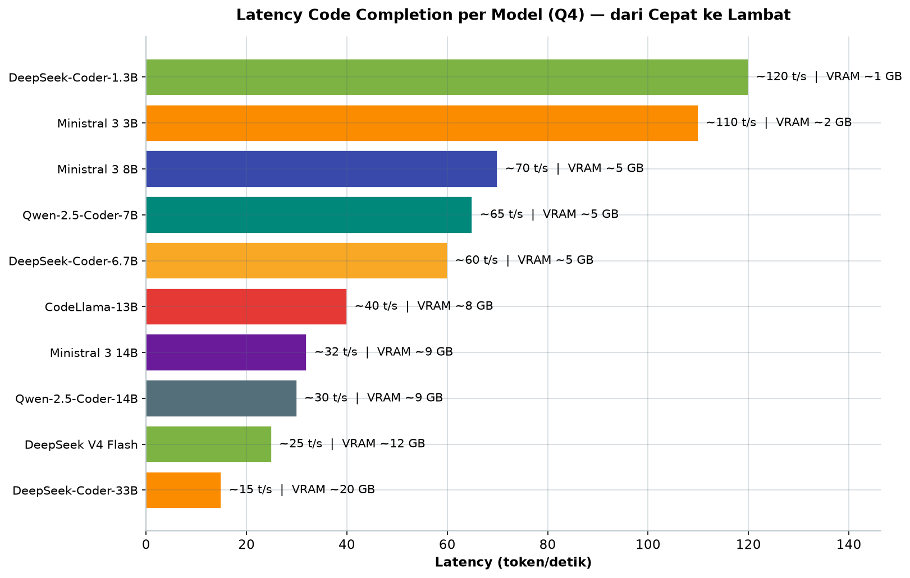
Berikut arsitektur lengkap yang akan Anda bangun: semua IDE developer terhubung ke satu server Tabby, dengan jalur paralel menuju backend vLLM via Continue.
Diagram ini memetakan tiga lapisan penting. Lapisan pertama, Developer IDEs, adalah wajah yang dilihat pengguna — semuanya berbicara ke satu alamat via HTTP. Lapisan kedua, Tabby Server, adalah otak: API server menerima permintaan, Repository Index yang disinkronkan dari Git menyediakan konteks kode perusahaan, dan model DeepSeek-Coder menghasilkan saran. Lapisan ketiga adalah backend tambahan untuk Continue — vLLM untuk model chat besar dan Ollama untuk model kecil — yang diakses secara opsional dengan jalur putus-putus. Garis putus-putus inilah yang menandakan fleksibilitas Continue: tanpa mengubah apa pun di sisi server, setiap developer bisa memilih backend sesuai kebutuhannya.
Setelah arsitektur hidup, dua tempat patut dikunjungi untuk memastikan semuanya sehat. Pertama, Tabby admin dashboard — tampilan yang merangkum user aktif, statistik completion, dan pemakaian model; dari sini Anda bisa tahu developer mana yang belum memasang ekstensi dan model mana yang paling banyak dipanggil. Kedua, pengalaman Continue di VS Code dengan backend Tabby — inline completion yang muncul saat mengetik adalah ujian paling jujur: jika saran terasa lambat atau meleset, kembali ke Tabel 7.15 dan Tabel 7.15 untuk mengevaluasi ulang pilihan model dan kapasitas VRAM.
7. Praktikum / Hands-On
Langkah 1: Deploy Tabby Server dengan Docker
Langkah pertama membangun rumah makan kode Anda: jalankan Tabby sebagai kontainer Docker dengan akses GPU penuh. Model akan diunduh otomatis saat pertama kali berjalan.
#!/bin/bash
# Setup Tabby server untuk tim developer
# 1. Pull model coding (DeepSeek-Coder-6.7B)
# Tabby akan download model otomatis saat pertama running
# 2. Jalankan Tabby server
docker run -d \
--name tabby \
--restart always \
--gpus all \
-p 8080:8080 \
-v tabby-data:/data \
-e TABBY_MODEL_CACHE_DIR=/data/models \
-e TABBY_DISABLE_USAGE_COLLECTION=1 \
tabbyml/tabby:latest \
serve --model StarCoder2-7B \
--device cuda \
--port 8080
# 3. Verifikasi server
curl http://localhost:8080/v1/health
# 4. Index repository perusahaan
docker exec tabby tabby scheduler \
--git-url https://github.com/company/internal-lib.git \
--git-branch mainCatatan praktis: ganti StarCoder2-7B dengan model pilihan dari Tabel 7.15 (misalnya DeepSeek-Coder-6.7B) sesuai kapasitas VRAM Anda. Variabel TABBY_DISABLE_USAGE_COLLECTION=1 mematikan telemetri — sesuai prinsip privasi kode yang menjadi alasan utama memilih self-hosted. Langkah keempat adalah kunci dari repository-level context: tanpa menjalankan scheduler ini, Tabby tidak akan mengenal kode internal tim.
Langkah 2: Konfigurasi Continue dengan Backend Tabby
Selanjutnya pasang Continue di VS Code developer dan arahkan ke dua backend: Tabby untuk completion cepat, dan vLLM untuk chat dengan model lebih besar.
// config.json — Continue VS Code extension
{
"models": [
{
"title": "Tabby Completion",
"provider": "tabby",
"apiBase": "http://10.0.0.100:8080",
"apiKey": "tabby-local"
},
{
"title": "Qwen-2.5-Coder-14B (Chat)",
"provider": "openai",
"apiBase": "http://10.0.0.100:8000/v1",
"apiKey": "not-needed",
"model": "Qwen/Qwen-2.5-Coder-14B-Instruct"
}
],
"tabAutocompleteModel": {
"title": "Tabby",
"provider": "tabby",
"apiBase": "http://10.0.0.100:8080"
},
"slashCommands": [
{
"name": "edit",
"description": "Edit selected code"
},
{
"name": "review",
"description": "Review this code"
}
]
}Perhatikan bagaimana satu ekstensi memuat dua kepribadian: model Tabby Completion menangani tab autocomplete (ditunjuk secara khusus lewat tabAutocompleteModel), sementara Qwen-2.5-Coder-14B menangani chat. Keduanya berjalan di dalam kantor — 10.0.0.100 adalah alamat server internal. Slash commands edit dan review membuka pintu menuju inline editing (Cmd+I) dan code review yang dipersonalisasi.
Langkah 3: Benchmark Latency Coding Assistant
Setelah server hidup, jangan langsung merayakan kemenangan — ukur dulu apakah latency-nya layak dipakai harian. Skrip berikut menguji lima pola pemicu completion dari berbagai bahasa dan menghitung P50, P95, dan rata-rata.
# benchmark_tabby.py — uji latency completion
import requests
import time
import statistics
TABBY_URL = "http://localhost:8080/v1/completions"
CODE_SNIPPETS = [
"def fibonacci(n):",
"const handleClick = () => {",
"SELECT * FROM users WHERE",
"@GetMapping(\"/api/v1/",
"terraform {",
]
for snippet in CODE_SNIPPETS:
latencies = []
for _ in range(10):
start = time.time()
r = requests.post(TABBY_URL, json={
"prompt": snippet,
"max_tokens": 50,
"temperature": 0.1
})
elapsed = (time.time() - start) * 1000
latencies.append(elapsed)
print(f"Prompt: {snippet[:30]}...")
print(f" P50: {statistics.median(latencies):.0f}ms")
print(f" P95: {sorted(latencies)[8]:.0f}ms")
print(f" Avg: {statistics.mean(latencies):.0f}ms")Bacaan hasilnya: P50 mewakili pengalaman pengguna "biasa", sementara P95 mewakili momen terburuk — misalnya saat delapan developer mengetik bersamaan. Jika P95 melewati ~2 detik, jadwal burst tersebut menandakan perlunya mengecilkan model completion (dari 14B ke 7B) atau menambah prioritas pada layanan ini di Bab 7.7. Simpan hasil ini sebagai baseline; bandingkan lagi sebulan kemudian setelah penambahan index repository.
8. Studi Kasus: Centralized Coding Assistant untuk 15 Developer
Skenario. Sebuah software agency dengan 15 developer — 5 frontend (React), 6 backend (Node.js, Python, Go), dan 4 mobile (Flutter) — selama ini mengandalkan GitHub Copilot. Setiap bulan mereka membayar langganan per seat, dan yang lebih merisaukan: kode klien perbankan mereka dikirim ke cloud Microsoft. Pimpinan engineering mendapat mandat membangun asisten internal tanpa mengorbankan kualitas.
Analisis pilihan. Tim di atas 10 developer dan membutuhkan pengelolaan terpusat, sehingga Tabby jelas memenangkan peran server. Namun developer menginginkan chat dan inline editing ala Copilot yang tidak dimiliki Tabby — jawabannya Continue di setiap IDE dengan backend Tabby plus vLLM. Hardware yang tersedia adalah workstation dengan dual RTX 4090 (48 GB VRAM total). Dari Tabel 7.15, kombinasi yang pas: Ministral 3 8B untuk completion (Apache 2.0, ~6 GB VRAM, melayani 15 user) dan DeepSeek V4 Flash untuk chat/review dengan konteks 1 juta token — sisa VRAM bisa diisi model lain via Bab 7.7.
Langkah solusi. Tabby dijalankan dengan Docker (Langkah 1), model completion dijaga di RTX 4090 pertama, sementara vLLM diisi DeepSeek V4 Flash di kartu kedua. Repository indexing diaktifkan untuk 5 repo utama. Setiap developer memasang Continue dan menyalin config.json ala Langkah 2. Fitur yang langsung dipakai: tab completion real-time, chat perintah seperti "Refactor function ini pakai async/await", inline edit Cmd+I, dan review "Review PR ini dari sisi security".
Hasil. Setelah empat minggu, developer melaporkan peningkatan kecepatan coding 25-40%. Accepted rate completion mencapai 35% — di atas standar industri ~30% — karena saran Tabby mengikuti konvensi kode internal berkat repository indexing. Jumlah PR per hari naik dari 2,5 menjadi 3,8. Biaya tambahan nyaris nol: Tabby gratis, inference memakai GPU yang sudah ada, dan hanya storage indexing ~5 GB yang tersedot.
Pelajaran. Data pemakaian menunjukkan DeepSeek-Coder-6.7B sudah cukup untuk 90% kasus — model 33B hanya diperlukan untuk review kode kompleks. Jangan membeli kekuatan yang tidak terpakai; naikkan kelas model hanya ketika benchmark P95 (Langkah 3) atau keluhan kualitas benar-benar muncul.
9. Referensi
Paper Jurnal/Konferensi
[1] Feng, Z., Guo, D., Tang, D., et al. (2020). CodeBERT: A Pre-Trained Model for Programming and Natural Languages. Findings of ACL (EMNLP). DOI: 10.48550/arXiv.2002.08155 (https://arxiv.org/abs/2002.08155)
- Landasan pre-trained model untuk pemahaman kode; latar belakang arsitektur model coding assistant.
[2] Li, R., Allal, L.B., Zi, Y., et al. (2023). StarCoder: May the Source Be With You!. arXiv: 2305.06161. DOI: 10.48550/arXiv.2305.06161 (https://arxiv.org/abs/2305.06161)
- Model open code LLM yang menjadi salah satu opsi backend Tabby; dasar pembahasan model completion.
[3] Guo, D., Zhu, Q., Yang, D., et al. (2024). DeepSeek-Coder: When the Large Language Model Meets Programming — The Rise of Code AI. arXiv: 2401.14196. DOI: 10.48550/arXiv.2401.14196 (https://arxiv.org/abs/2401.14196)
- Model coding utama yang direkomendasikan untuk Tabby; kualitas completion di Tabel 7.15 merujuk benchmark paper ini.
[4] Qwen Team, Alibaba Group. (2025). Qwen-2.5-Coder: A Strong Code Language Model. arXiv: 2502.02368. DOI: 10.48550/arXiv.2502.02368 (https://arxiv.org/abs/2502.02368)
- Alternatif model coding terbaru dengan dukungan multilingual; relevan untuk tim multi-bahasa.
[5] Chen, M., Tworek, J., Jun, H., et al. (2021). Evaluating Large Language Models Trained on Code. NeurIPS. DOI: 10.48550/arXiv.2107.03374 (https://arxiv.org/abs/2107.03374)
- Memperkenalkan benchmark HumanEval — standar evaluasi code generation yang dirujuk di Tabel 7.15.
Referensi Pendukung (Dokumentasi/Repository)
[6] TabbyML. Official Documentation. https://tabby.tabbyml.com/docs
[7] Continue.dev. Official Documentation. https://docs.continue.dev
[8] Ollama Code Models. https://ollama.com/library?q=coder
[9] BigCode Project. StarCoder2 Models. https://huggingface.co/bigcode
[10] Hugging Face Open LLM Leaderboard for Code. https://huggingface.co/spaces/bigcode/bigcode-models-leaderboard
[11] Mistral AI Team. (2025). Ministral 3: Open Dense Language Models via Cascade Distillation. https://mistral.ai/news/ministral-3
- Model dense 3B/8B/14B Apache 2.0 — alternatif open untuk coding assistant dengan performa kompetitif berkat Cascade Distillation.
[12] DeepSeek Team. (2026). DeepSeek-V4: Advancing Open Language Models with Mixture-of-Experts. https://api-docs.deepseek.com
- DeepSeek V4 Flash (MIT, 284B/13B aktif) membawa konteks 1M ke coding assistant — memungkinkan repository-level code understanding tanpa chunking.
Bab 7.6: Identity Management
Pintu masuk platform AI kantor Anda tidak boleh berupa deretan password yang dibagikan berbisik-bisik antar meja. Dengan integrasi Google Workspace atau Microsoft 365 via OAuth, setiap karyawan masuk menggunakan akun yang sudah mereka kenal setiap hari — dan setiap akses tercatat, terkelola, dan bisa dicabut seketika.
1. Tujuan Sub-Bab
Setelah membaca sub-bab ini, Anda akan mampu:
- Mengintegrasikan Google Workspace atau Microsoft 365 sebagai identity provider untuk platform AI small office
- Mengkonfigurasi OAuth 2.0 dan OpenID Connect (OIDC) pada Open WebUI
- Menerapkan RBAC (Role-Based Access Control) untuk membedakan akses per tim dan departemen
- Membandingkan empat pilihan IDP — Google Workspace, Microsoft Entra ID, Authentik, dan Authelia — secara objektif
- Menerapkan praktik keamanan OAuth: HTTPS, PKCE, revocation, dan pemantauan consent grants
2. Mengapa Identity Management Penting untuk Small Office?
Dari Berbagi Password ke Single Sign-On
Di kantor dengan 9-20 pengguna, godaan terbesar adalah menyederhanakan akses dengan cara yang paling berbahaya: satu password bersama, ditulis di sticky note, ditempel di monitor. Padahal konsekuensinya berlipat: tidak ada yang tahu siapa yang bertanya apa; tidak ada yang bisa dipertanggungjawabkan saat model menghasilkan jawaban produksi; dan ketika seorang karyawan keluar, password itu tetap hidup di tangan semua orang yang pernah melihatnya. Identity management mengubah kekacauan ini menjadi ketertiban ala hotel berbintang — setiap tamu punya kartu kamar sendiri, dan resepsionis bisa mencabut aksesnya dalam sekejap.
Solusi paling elegan untuk small office adalah memanfaatkan akun yang sudah dimiliki karyawan: Google Workspace untuk mayoritas startup Indonesia, atau Microsoft 365 untuk perusahaan yang hidup di ekosistem Office. Dengan single sign-on (SSO) via OAuth, karyawan tidak perlu membuat akun baru sama sekali — zero onboarding friction. Akun AI adalah akun email kantor; password tinggal satu; dan saat seseorang dipecat atau pindah, pencabutan akses di satu tempat (konsol Google atau Azure) otomatis memutus akses ke platform AI.
SSO juga membawa kenyamanan psikologis yang sering diabaikan: karyawan tidak perlu mengingat "password ke-17 untuk sistem ke-17". Pada skala 9-20 pengguna, beban password fatigue ini nyata — dan justru menjadi sumber kebiasaan berbahaya seperti menulis password di post-it atau memakai password yang sama untuk semuanya. Dengan satu pintu masuk yang sudah dikenal, dua masalah dihapus sekaligus: keamanan lebih baik, dan pengalaman pengguna lebih halus. Bonus lain yang tidak kalah penting: consent screen Google/Microsoft memberi tahu pengguna aplikasi mana yang meminta akses apa, sehingga transparansi akses menjadi bagian dari alur login itu sendiri.
Tiga Nilai yang Tidak Bisa Ditawar
Integrasi identitas membawa tiga nilai yang langsung terasa di operasional harian. Pertama, audit trail: setiap permintaan ke model bisa dilacak ke pengguna, waktu, dan model yang dipakai — aset penting saat ada pertanyaan "siapa yang meminta ringkasan kontrak itu?". Kedua, RBAC: developer mendapat akses model coding, tim finance hanya melihat RAG SOP, dan admin memegang kendali penuh — tanpa perlu membuat akun terpisah. Ketiga, otomatisasi onboarding-offboarding: karyawan baru masuk langsung bisa menggunakan platform; karyawan yang keluar kehilangan akses seketika, tanpa satu pun password bersama yang tersisa.
3. Arsitektur OAuth 2.0 dan OpenID Connect
OIDC: Lapisan Identitas di Atas OAuth
Sebelum menyentuh konfigurasi, pahami dulu dua standar yang akan saling bekerja sama. OAuth 2.0 [1] adalah kerangka authorization — ia menjawab pertanyaan "bolehkah aplikasi ini mengakses sumber daya atas nama pengguna?", tanpa terlalu peduli siapa penggunanya. OpenID Connect (OIDC) [2] menambahkan lapisan identity di atasnya: token yang dikeluarkan kini berisi klaim tentang siapa pengguna — email, nama, dan kelompok — dalam bentuk ID Token yang dapat diverifikasi. Dalam praktik sehari-hari: OAuth memberi kunci lemari, OIDC memberi kartu identitas yang menyertainya.
Alur lengkapnya terlihat di Gambar 7.6-1, tetapi intinya sederhana: (1) pengguna mengklik "Login with Google" di Open WebUI; (2) browser diarahkan ke Google dengan client ID, redirect URI, dan scope; (3) Google menampilkan halaman login; (4) setelah kredensial benar, Google mengembalikan authorization code ke Open WebUI; (5) Open WebUI menukar kode itu dengan ID Token dan Access Token menggunakan client secret; (6) token ditukar, lalu Open WebUI memverifikasi tanda tangan ID Token dan mengekstrak informasi pengguna sebelum membuat sesi lokal. Kunci keamanan utamanya: password tidak pernah dikirim ke aplikasi — kredensial hanya berpindah antara pengguna dan Google; verifikasi dilakukan di server internal Anda.
Satu nuansa penting soal scope: Open WebUI hanya meminta apa yang benar-benar dibutuhkan — umumnya openid, email, dan profile — bukan akses ke Gmail atau Drive karyawan. Prinsip least privilege ini berlaku dua arah: IDP tidak memberi lebih dari yang diminta, dan aplikasi tidak bertanya lebih dari yang diperlukan. Jika suatu hari Anda melihat aplikasi meminta scope mencurigakan pada consent screen, itu adalah bendera merah yang layak diselidiki sebelum diklik. Kebiasaan membaca consent screen — seperti membaca rincian tagihan sebelum membayar — adalah pertahanan pertama pengguna biasa terhadap aplikasi yang rakus izin.
PKCE: Pengaman Ekstra untuk Web dan Mobile
Ancaman paling nyata pada alur OAuth adalah authorization code interception — kode yang dicegat di tengah perjalanan sebelum sempat ditukar dengan token. Jawaban standar industri adalah PKCE (Proof Key for Code Exchange) [5]: aplikasi membuat code verifier acak, hanya mengirim challenge-nya ke Google, lalu membuktikan kepemilikannya saat menukar kode. Karena penyerang tidak tahu verifier aslinya, kode curian menjadi tidak berguna. Untuk Open WebUI yang diakses dari browser di kantor, PKCE adalah pengaman wajib yang diaktifkan hampir tanpa biaya konfigurasi — dan menjadi syarat pertama security checklist Anda di seksi 6.
Inilah perjalanan lengkap sebuah login: dari klik tombol di browser hingga sesi terbuka di Open WebUI.
Perhatikan dua detail penting dalam diagram ini. Pertama, kredensial pengguna (langkah 3-4) hanya berpindah antara browser dan Google — Open WebUI tidak pernah melihat password, sebuah prinsip yang membuat platform AI kantor Anda tidak perlu menyimpan rahasia pengguna sama sekali. Kedua, langkah 8-9 adalah titik di mana identity sungguhan terbentuk: verifikasi tanda tangan ID Token menggunakan kunci publik dari issuer, lalu ekstraksi email, nama, dan groups — kelompok inilah yang kemudian dipetakan ke peran RBAC pada Tabel 7.18.
4. Pilihan Identity Provider untuk Small Office
Cloud: Google Workspace dan Microsoft Entra ID
Google Workspace adalah pilihan paling umum untuk startup Indonesia — gratis hingga 300 pengguna di tier Workspace Starter, dan mayoritas karyawan sudah punya akunnya untuk email dan Docs. Dukungannya terhadap OIDC matang, setup-nya paling rendah kompleksitasnya, dan MFA sudah built-in. Microsoft Entra ID (dulu Azure AD) adalah pilihan natural bagi perusahaan yang hidup di Office 365: mendukung SAML dan OIDC, conditional access, serta sinkronisasi SCIM untuk grup. Kekurangan keduanya sama: Anda bergantung pada cloud pihak ketiga, dan pengaturan lebih dalam (misalnya App Roles untuk grup) membutuhkan penjelajahan konsol yang tidak selalu ramah.
Self-Hosted: Authentik dan Authelia
Bagi kantor yang ingin merdeka sepenuhnya dari cloud, ada dua kandidat open source. Authentik adalah identity provider serba bisa yang menangani OIDC, SAML, dan LDAP sekaligus, dengan antarmuka yang modern — cocok sebagai bridge antara Google Workspace dan aplikasi internal, seperti yang akan dilihat di studi kasus. Authelia lebih ringan: cukup 1 core CPU dan 512 MB RAM, bisa menyatu dengan LDAP yang sudah ada — ideal jika kantor hanya butuh lapisan login tambahan tanpa ambisi integrasi rumit. Pilih Authentik bila Anda butuh kendali penuh dan mulai dari nol; pilih Authelia bila infrastruktur identitas sudah ada dan yang kurang hanya gerbangnya.
Empat tabel berikut merangkum keputusan yang Anda hadapi: memilih IDP, mengalokasikan sumber daya untuknya, dan memetakan peran pengguna. Gunakan ketiganya berurutan — pilih IDP, siapkan host, lalu terjemahkan struktur organisasi ke peran.
Tabel 7.16: Perbandingan Identity Provider
Berikut peta perbandingan keempat kandidat IDP agar keputusan Anda berbasis fakta teknis, bukan kebiasaan semata.
| Fitur | Google Workspace | Microsoft Entra ID | Authentik | Authelia |
|---|---|---|---|---|
| Tipe | Cloud SaaS | Cloud SaaS | Self-hosted | Self-hosted |
| Harga | Gratis (starter) | Berbayar | Gratis (OSS) | Gratis (OSS) |
| Protokol | OIDC/OAuth 2 | OIDC, SAML | OIDC, SAML, LDAP | OIDC, LDAP |
| MFA | Ya (built-in) | Ya (Conditional) | Ya (TOTP/WebAuthn) | Ya (TOTP) |
| RBAC | Groups + OU | Groups + Roles | Groups | Groups |
| User Sync | Real-time | SCIM | LDAP sync | LDAP sync |
| Self-hosted | Tidak | Tidak | Ya | Ya |
| Kompleksitas Setup | Rendah | Sedang | Sedang | Rendah |
Membaca tabel ini, keputusan utama Anda sebenarnya hanya dua. Jika tim sudah hidup di Google Workspace — kondisi mayoritas startup Indonesia — integrasi langsung ke Google adalah jalan tercepat dengan kompleksitas terendah; Microsoft Entra ID baru masuk akal bila langganan Office 365 sudah ada dan kebutuhan conditional access muncul. Jika kantor menolak dependensi cloud untuk identitas, Authentik menawarkan keseimbangan fitur terbaik, sementara Authelia cocok sebagai lapisan ringan yang menyatu dengan LDAP yang sudah berjalan.
Tabel 7.17: Resource Identity Server
Jika Anda memilih jalur self-hosted, alokasikan sumber daya sekecil ini untuk IDP:
| Provider | CPU | RAM | Storage | Catatan |
|---|---|---|---|---|
| Authentik (self-hosted) | 2 core | 4 GB | 10 GB | Postgres + Redis |
| Authelia | 1 core | 512 MB | 1 GB | SQLite/Redis |
| Google Workspace | - | - | - | Cloud, tidak perlu server |
Tabel ini menegaskan bahwa biaya identitas self-hosted nyaris nol — Authentik butuh 2 core dan 4 GB RAM karena menumpang database Postgres dan Redis, sementara Authelia cukup 512 MB. Keduanya bahkan bisa berbagi host dengan Open WebUI atau IDP server lain. Bandingkan dengan biaya tiket cloud tahunan; secara strategis, keputusan self-hosted IDP hampir selalu layak dipertimbangkan meski kompleksitas setup-nya "Sedang".
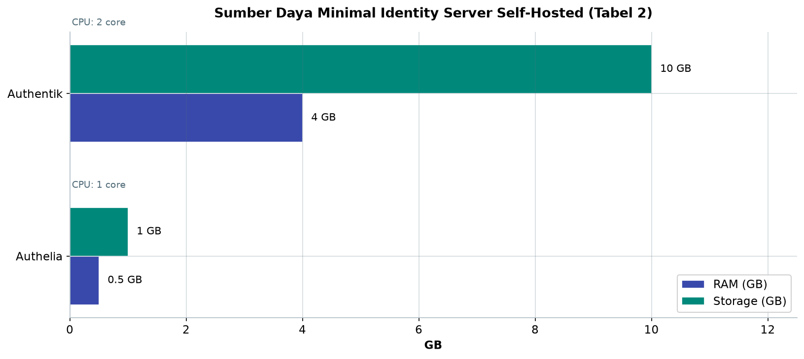
5. RBAC dan Scope Management
Memiliki IDP hanyalah setengah jalan; setengahnya lagi adalah memutuskan siapa boleh apa. RBAC memetakan peran ke hak akses secara eksplisit (lihat Tabel 7.18): Super Admin dengan akses total termasuk panel admin dan manajemen pengguna; Developer yang mendapat model coding plus RAG teknis; Project Manager yang mendapat model umum dan dokumen proyek; dan Viewer yang hanya boleh chat dengan akses baca. Pemetaan ini bisa diperluas menjadi per-group pricing — misalnya departemen yang memakai model besar dikenakan kuota berbeda — sehingga pemakaian GPU terkontrol sejak pintu masuk, selaras dengan tata kelola resource di Bab 7.7.
Agar RBAC benar-benar efektif, IDP harus menyuplai kelompok pengguna ke Open WebUI — entah melalui group sync dari Google Workspace, App Roles di Entra ID, atau sinkronisasi LDAP dari Authentik. Begitu kelompok tersinkron, kebijakan di sisi aplikasi tinggal menyambungkannya ke peran. Inilah mengapa arsitektur pada Gambar 7.6-1 mencantumkan groups sebagai bagian dari informasi yang diekstrak dari ID Token: tanpa data kelompok, RBAC hanya menjadi teks di dokumen, bukan aturan yang berjalan.
Ada satu kesalahan umum yang layak dihindari sejak awal: menerapkan RBAC hanya di lapisan antarmuka. Jika kebijakan akses hanya menyembunyikan tombol di UI, permintaan yang dipalsukan lewat API langsung tetap bisa menembus. Untuk platform AI, pastikan penegakan peran terjadi di sisi backend — misalnya saat mengirim request ke vLLM, periksa kembali role pengguna terhadap model yang diminta — sehingga matriks Tabel 7.18 berlaku juga bagi klien yang tidak memakai Open WebUI. Lapisan ganda ini (UI + API) adalah pembeda antara RBAC tampilan dan RBAC sungguhan.
Tabel 7.18: Konfigurasi RBAC untuk Small Office
Matriks peran berikut adalah cetak biru kebijakan akses yang akan Anda terjemahkan ke grup di IDP:
| Role | Akses Model | Akses RAG | Upload File | Admin Panel | Manajemen User |
|---|---|---|---|---|---|
| Super Admin | Semua | Semua | Ya | Ya | Ya |
| Developer | Coding + General | Teknis | Ya | Tidak | Tidak |
| Project Manager | General + Chat | Dokumen Proyek | Ya | Tidak | Tidak |
| Viewer | Chat only | Read only | Tidak | Tidak | Tidak |
Dua hal patut diperhatikan. Pertama, minimalisasi hak: Viewer bahkan tidak bisa mengunggah file — batasan yang meredam risiko kebocoran data dan pemborosan GPU sekaligus. Kedua, pemisahan domain RAG: Developer hanya menjangkau RAG teknis, PM hanya dokumen proyek, sehingga sebuah permintaan tidak pernah secara tidak sengaja menceburkan konteks kuangan ke model umum. Mulailah dari matriks ini, lalu sesuaikan kelompoknya saat tim bertumbuh.
Pohon peran berikut menggambarkan kebijakan akses kecil yang bisa langsung diterapkan di kantor 15 orang.
Pohon ini menunjukkan dua prinsip RBAC yang baik: pemisahan fungsi — Developer terbagi menjadi Frontend, Backend, dan DevOps dengan konteks RAG teknis masing-masing — dan eskalasi terpusat — semua peran berujung ke Super Admin sebagai satu-satunya titik kendali. Finance ditempatkan sebagai anak Viewer dengan akses baca, sesuai Tabel 7.18. Saat tim tumbuh, tambahkan cabang tanpa mengubah struktur inti.
6. Security Considerations
HTTPS dan Higiene Token
Aturan pertama integrasi OAuth di kantor: HTTPS wajib — redirect URI dari Google dan Microsoft tidak menerima alamat non-HTTPS kecuali localhost. Artinya, sebelum menyentuh lingkungan variabel, pastikan ai.kantor.local sudah disambangi lewat reverse proxy dengan sertifikat (misalnya Caddy atau Nginx + Let's Encrypt). Aturan kedua menyangkut higiene token: client secret disimpan hanya di sisi server (via environment variable), tidak pernah di kode klien; access token dan refresh token diperlakukan seperti kunci gudang — disimpan aman, dirotasi berkala, dan dicabut segera saat tidak terpakai.
Pelajaran dari insiden keamanan Vercel 2026 yang melibatkan OAuth token mengingatkan bahwa token yang bocor sekali bisa menghantam banyak layanan sekaligus. Untuk platform AI kantor, terjemahkan itu menjadi tiga kebiasaan: revoke token akun yang tidak aktif secara periodik, monitor OAuth consent grants di konsol Google/Azure setiap bulan — liat siapa yang memberi izin ke aplikasi apa — dan aktifkan PKCE sebagai jaring pengaman alur browser. Keamanan identitas bukan proyek sekali jadi, melainkan rutinitas bulanan seperti mengecek CCTV dan kunci gudang.
Terakhir, satu pertimbangan yang sering terlambat disadari: masa sesi. Sesi login yang tidak pernah kedaluwarsa adalah pintu yang tidak pernah terkunci — jika sebuah laptop hilang, akses AI kantor ikut hilang bersama isinya. Atur masa sesi pendek (misalnya 8-24 jam) dan kombinasikan dengan MFA dari IDP agar login kembali tidak memberatkan. Bagi platform AI small office, keseimbangan yang sehat adalah: sesi kerja harian yang nyaman, tetapi penguncian otomatis yang tegas. Karyawan boleh lupa menutup tab; sistem tidak boleh lupa mengunci pintu.
7. Praktikum / Hands-On
Langkah 1: Integrasi Google Workspace OAuth di Open WebUI
Mulai dari jalur paling umum: jadikan Google Workspace sebagai IDP Open WebUI. Siapkan dulu OAuth Client ID di Google Cloud Console, lalu jalankan kontainer dengan lingkungan yang diisi.
#!/bin/bash
# 1. Buat project di Google Cloud Console
# - APIs & Services -> Credentials -> Create OAuth 2.0 Client ID
# - Application type: Web application
# - Authorized redirect URI: https://ai.kantor.local/oauth/google/callback
# 2. Set environment variables di Open WebUI container
docker run -d \
--name open-webui \
-p 3000:8080 \
-v open-webui:/app/backend/data \
-e WEBUI_SECRET_KEY=your-secret-key \
-e GOOGLE_CLIENT_ID=1234567890.apps.googleusercontent.com \
-e GOOGLE_CLIENT_SECRET=GOCSPX-your-client-secret \
-e GOOGLE_REDIRECT_URI=https://ai.kantor.local/oauth/google/callback \
-e OAUTH_PROVIDERS=google \
ghcr.io/open-webui/open-webui:main
# 3. Verifikasi: buka browser, coba login dengan GoogleDua hal yang paling sering salah di langkah ini: redirect URI di Google Cloud Console tidak persis sama dengan nilai di lingkungan — karakter trailing slash pun diperhitungkan — dan WEBUI_SECRET_KEY yang lemah. Gunakan openssl rand -hex 32 untuk membuat kunci sesi yang kuat; layanan ini menandatangani sesi login seluruh tim, jadi perlakukannya seperti password root. Setelah berhasil, Anda akan melihat alur persis Gambar 7.6-1 terjadi dalam hitungan detik.
Langkah 2: Integrasi Microsoft Entra ID (Azure AD)
Untuk kantor yang berjalan di Microsoft 365, lakukan pendaftaran aplikasi di Azure Portal lalu isi lingkungan berikut:
#!/bin/bash
# 1. Setup di Azure Portal
# App Registrations -> New Registration
# Redirect URI: https://ai.kantor.local/oauth/microsoft/callback
# Certificates & Secrets -> New client secret
# 2. Konfigurasi Open WebUI
MICROSOFT_CLIENT_ID="your-azure-client-id"
MICROSOFT_CLIENT_SECRET="your-azure-client-secret"
MICROSOFT_TENANT_ID="your-tenant-id" # atau "common" untuk multi-tenant
docker run -d \
--name open-webui \
-p 3000:8080 \
-v open-webui:/app/backend/data \
-e WEBUI_SECRET_KEY=your-secret-key \
-e MICROSOFT_CLIENT_ID=$MICROSOFT_CLIENT_ID \
-e MICROSOFT_CLIENT_SECRET=$MICROSOFT_CLIENT_SECRET \
-e MICROSOFT_TENANT_ID=$MICROSOFT_TENANT_ID \
-e MICROSOFT_REDIRECT_URI=https://ai.kantor.local/oauth/microsoft/callback \
-e OAUTH_PROVIDERS=microsoft \
ghcr.io/open-webui/open-webui:main
# 3. Optional: sync Azure AD groups ke RBAC
# Di Azure: buat App Role di Enterprise ApplicationPerhatikan variabel khas Microsoft: TENANT ID menentukan siapa yang boleh login — gunakan ID tenant spesifik untuk mengunci hanya karyawan perusahaan Anda, atau common jika benar-benar berniat menerima akun Microsoft mana pun (jarang diperlukan di small office). Langkah opsional ketiga adalah kunci RBAC: App Roles yang didefinisikan di konsol Azure akan hadir sebagai klaim dalam token, dan Open WebUI dapat memetakannya ke peran pada Tabel 7.18.
Langkah 3: Setup Authentik (Self-Hosted IDP) + Open WebUI
Bagi kantor yang ingin kantor pos identitasnya sendiri, siapkan docker-compose dengan Authentik di depan Open WebUI:
# docker-compose.yml — Authentik + Open WebUI
version: '3.8'
services:
authentik:
image: ghcr.io/goauthentik/server:latest
command: server
environment:
AUTHENTIK_SECRET_KEY: ${AUTHENTIK_SECRET_KEY}
AUTHENTIK_POSTGRESQL__NAME: authentik
AUTHENTIK_POSTGRESQL__USER: authentik
AUTHENTIK_POSTGRESQL__PASSWORD: ${DB_PASS}
AUTHENTIK_POSTGRESQL__HOST: postgres
ports:
- "9000:9000"
- "9443:9443"
volumes:
- authentik-media:/media
depends_on:
- postgres
- redis
open-webui:
image: ghcr.io/open-webui/open-webui:main
ports:
- "3000:8080"
environment:
WEBUI_SECRET_KEY: ${WEBUI_SECRET_KEY}
# OIDC config untuk Authentik
OAUTH_PROVIDERS: authentik
OAUTH_OIDC_CLIENT_ID: open-webui
OAUTH_OIDC_CLIENT_SECRET: ${OIDC_CLIENT_SECRET}
OAUTH_OIDC_ISSUER_URL: https://auth.kantor.local/application/o/open-webui/
OAUTH_OIDC_REDIRECT_URI: https://ai.kantor.local/oauth/oidc/callback
volumes:
- open-webui-data:/app/backend/data
postgres:
image: postgres:16-alpine
environment:
POSTGRES_DB: authentik
POSTGRES_USER: authentik
POSTGRES_PASSWORD: ${DB_PASS}
redis:
image: redis:alpineKonfigurasi ini menunjukkan pola bridge yang akan dipakai di studi kasus: Authentik berdiri sebagai IDP internal (sumber kebenaran identitas), sementara Open WebUI menjadi relying party yang percaya pada issuer-nya. Tiga komponen pendukung — Postgres untuk data identitas, Redis untuk sesi, dan volume media — adalah backbone yang juga akan dipakai untuk layanan lain di Bab 7. Ganti placeholder ${...} dengan nilai dari file .env yang di-generate sekali dan disimpan aman.
Setelah salah satu dari tiga jalur di atas selesai, jalankan checklist verifikasi singkat ini sebelum mengumumkan ke tim:
- [ ] Login sekali dengan akun Google/Microsoft/Authentik benar-benar membuka Open WebUI tanpa akun manual
- [ ] User yang tidak terdaftar di IDP ditolak, bukan dibuatkan akun otomatis
- [ ] Kelompok IDP (Engineering, Finance, dst.) muncul di halaman manajemen pengguna Open WebUI
- [ ] Pengguna dengan role Viewer tidak dapat mengunggah file dan tidak melihat model coding
- [ ] Redirect URI yang salah menampilkan halaman error yang jelas (bukan stack trace)
- [ ]
WEBUI_SECRET_KEYdan seluruh client secret hanya ada di environment, tidak di kode atau git
Checklist ini meniru apa yang dilakukan auditor: bukan "apakah login bekerja?", melainkan "apakah login berhenti bekerja pada titik yang seharusnya berhenti?" — momen penolakan adalah bukti konfigurasi yang paling jujur.
8. Studi Kasus: Integrasi Google Workspace untuk Startup 15 Orang
Skenario. Sebuah startup SaaS dengan 15 karyawan hidup sepenuhnya di Google Workspace — email, Docs, dan Drive. Mereka membangun platform AI internal (Open WebUI + Tabby dari Bab 7.5) dan menghadapi keputusan: karyawan tidak mau lagi membuat akun baru; pimpinan tidak mau password bersama; dan saat ada yang keluar, akses harus hilang seketika tanpa menunggu manusia mengingatkan.
Analisis pilihan. Google Workspace gratis dan semua karyawan sudah memilikinya — menjadi IDP utama yang paling masuk akal. Namun mereka membutuhkan lebih dari sekadar login: group sync dari Google ke platform AI, plus satu bridge yang bisa mengatur banyak aplikasi (Open WebUI, Tabby, dan internal wiki). Di sinilah Authentik masuk sebagai IDP perantara: ia berdiri di depan, terhubung ke Google Workspace via OIDC, lalu melayani setiap aplikasi internal sebagai issuer tunggal. Hasilnya: satu pintu (Google) yang dikelola banyak aplikasi tanpa konfigurasi berulang.
Setup & RBAC. Mengikuti Langkah 3, Authentik disiapkan dengan Postgres dan Redis, lalu Open WebUI, Tabby, dan wiki dihubungkan ke issuer-nya. Grup di Google Workspace disinkronkan melalui provider ala LDAP pada Authentik, kemudian dipetakan ke peran: Engineering (8 orang) mendapat akses model coding + RAG teknis + upload file; Product/Design (4 orang) akses chat + RAG dokumen produk; Ops/Finance (3 orang) chat + RAG SOP; dan Admin (Founder + CTO) akses penuh. Saat seorang karyawan dipecat dari Google Workspace — satu tindakan di konsol — akses AI-nya otomatis mati karena sumber identitasnya lenyap.
Hasil. Onboarding karyawan baru menjadi zero-day: akun Google dibuat, platform AI langsung bisa dipakai tanpa konfigurasi. Offboarding juga otomatis dan dapat dipertanggungjawabkan. Tidak ada satu pun password bersama yang beredar, dan audit trail memungkinkan tim finance melacak siapa yang mengakses RAG SOP. Pelajaran terpenting: Google OAuth sangat stabil — satu-satunya insiden yang pernah terjadi berasal dari konfigurasi Google Cloud Console yang tidak sengaja diubah. Simpan snapshot konfigurasi OAuth (client ID, redirect URI, scopes) di dokumentasi internal agar perubahan tak sengaja mudah dideteksi.
9. Referensi
Paper Jurnal/Konferensi (Standar & Whitepaper)
[1] Hardt, D. (2012). The OAuth 2.0 Authorization Framework. IETF RFC 6749. DOI: 10.17487/RFC6749 (https://www.rfc-editor.org/rfc/rfc6749)
- Standar OAuth 2.0 yang menjadi dasar semua alur autentikasi pada sub-bab ini.
[2] Sakimura, N., Bradley, J., Jones, M., de Medeiros, B., & Mortimore, C. (2014). OpenID Connect Core 1.0. OpenID Foundation Specification. https://openid.net/specs/openid-connect-core-1_0.html
- Spesifikasi OpenID Connect yang menambahkan lapisan identitas di atas OAuth 2.0.
[3] South, T., et al. (2025). Identity Management for Agentic AI: The New Frontier of Authorization, Authentication, and Security for an AI Agent World. OpenID Foundation Whitepaper. DOI: 10.48550/arXiv.2510.25819 (https://arxiv.org/abs/2510.25819)
- Whitepaper tentang manajemen identitas untuk agen AI; relevan untuk desain RBAC platform AI small office.
[4] Miller, J., & South, T. (2025). Authenticated Delegation and Authorized AI Agents. arXiv: 2501.09674. DOI: 10.48550/arXiv.2501.09674 (https://arxiv.org/abs/2501.09674)
- Ekstensi OAuth 2.0/OIDC untuk delegasi akses AI; acuan perancangan authorization di small office.
[5] Denniss, W., & Bradley, J. (2020). OAuth 2.0 for Browser-Based Applications. IETF BCP 216 / RFC 8628. DOI: 10.17487/RFC8628 (https://www.rfc-editor.org/rfc/rfc8628)
- Praktik terbaik OAuth untuk aplikasi berbasis browser — relevan dengan implementasi Open WebUI dan PKCE.
Referensi Pendukung (Dokumentasi)
[6] Google Workspace OAuth Documentation. https://developers.google.com/identity/protocols/oauth2
[7] Microsoft Entra ID OAuth Documentation. https://learn.microsoft.com/en-us/entra/identity-platform
[8] Authentik Documentation. https://docs.goauthentik.io
[9] Open WebUI OAuth Configuration. https://docs.openwebui.com/getting-started/env-configuration
[10] OWASP OAuth Security Cheat Sheet. https://cheatsheetseries.owasp.org/cheatsheets/OAuth_Security_Cheat_Sheet.html
Bab 7.7: Resource Allocation
Bayangkan satu GPU kantor seperti satu-satunya mesin kopi di lantai: satu orang menekan tombol untuk 20 cangkir sekaligus, dan semua orang lain antre tak berujung. Di lingkungan LLM, "peminum kopi rakus" itu nyata — dan tanpa resource allocation, satu karyawan bisa melumpuhkan GPU untuk seluruh tim.
1. Tujuan Sub-Bab
Setelah membaca sub-bab ini, Anda akan mampu:
- Mengimplementasikan fair sharing GPU agar satu pengguna tidak memonopoli sumber daya
- Memahami dan mengonfigurasi mekanisme rate limiting, queue, dan priority scheduling di vLLM
- Mengkonfigurasi multi-tenant resource isolation untuk lingkungan small office 9-20 pengguna
- Membaca tabel sizing VRAM untuk memutuskan berapa banyak pengguna yang aman pada konteks tertentu
- Membangun monitoring sederhana dengan Grafana untuk memantau VRAM, antrean, dan pemakaian per pengguna
2. Masalah "Noisy Neighbor" di GPU Sharing
Satu Pengguna, GPU Lumpuh Total
Fenomena yang paling ditakuti admin GPU kantor dijuluki noisy neighbor — tetangga berisik yang memakai fasilitas bersama secara berlebihan. Di dunia LLM, wujudnya konkret: satu pengguna mengirim dokumen panjang 16.000 token atau meminta model 70B dijalankan, dan dalam sekejap seluruh VRAM tersedot untuk KV cache permintaannya. Pengguna lain yang sedang asyik ber-chat tiba-tiba menerima timeout, bahkan out-of-memory (OOM) karena tidak ada sisa VRAM untuk konteks mereka. Yang paling menyakitkan: si penyebab tidak menyadari apa-apa — dari sisinya, semuanya berjalan mulus.
Di small office dengan 9-20 pengguna, masalah ini bukan teori. Pada jam sibuk, 5-10 orang memakai model bersamaan — rapat pagi menghasilkan gelombang summarization, developer memicu completion kode, tim analis menggali dokumen panjang. Tanpa pengaturan, gelombang ini bertabrakan di satu kolam VRAM. Kabar baiknya, masalah ini sudah dipetakan dengan baik oleh riset sistem besar (PagedAttention [1], Prism [2], Melange [3]), dan solusinya kini tersedia gratis di stack yang Anda pakai: vLLM dengan priority queue, VRAM limits, dan scheduling.
Prinsip Dasar: Alokasi, Bukan Anarki
Inti dari semua solusi adalah satu perubahan pola pikir: GPU bukan milik siapa pun secara eksklusif, melainkan sumber daya bersama yang dialokasikan. Seperti AC kantor yang diatur thermostat pusat — bukan tombol individual — setiap permintaan harus melewati gerbang yang memutuskan: layak diproses sekarang, masuk antrean, atau ditolak dengan halus (HTTP 429). Sepanjang sub-bab ini, Anda akan membangun tiga lapis gerbang: scheduling di vLLM (seksi 3), quota di gerbang API (seksi 4), dan isolasi antar kelompok pengguna (seksi 5).
Pola paling sederhana dan paling efektif untuk small office dengan dua GPU:
Mengapa pola ini juara? Karena ia menghapus konflik antar beban kerja yang berbeda secara permanen: completion kode (latency-sensitif, harus selalu siap) tidak pernah berebut dengan chat RAG (throughput-hungry, menerima antrean). Kedua kartu bekerja paralel seperti dua operator mesin berbeda di lantai produksi — masing-masing dengan antrean sendiri (diatur Tabel 7.20), yang pada akhirnya membuat noisy neighbor kehilangan wilayah sebarannya.
3. Mekanisme Resource Allocation di vLLM
PagedAttention: Memori yang Dipinjam, Bukan Diserahkan
Fondasi pertama vLLM adalah PagedAttention [1] — inovasi yang meminjam konsep paging dari sistem operasi untuk memori GPU. Alih-alih mengalokasikan KV cache kontinu untuk setiap permintaan, vLLM memecahnya menjadi page kecil yang dialokasikan on-demand. Konsekuensinya luar biasa bagi pengguna ramai: permintaan yang tiba-tiba sadar konteksnya membengkak tidak lagi merebut semua VRAM yang tersisa — ia hanya meminjam halaman-halaman tambahan, dan membebaskannya saat selesai. Inilah alasan mengapa vLLM dapat melayani banyak permintaan bersamaan pada GPU yang sama tanpa saling membunuh.
Empat Knob Utama
Setiap instance vLLM memiliki empat pengaturan yang menjadi dashboard kendali Anda:
--max-num-seqs— membatasi jumlah sequence concurrent per GPU. Ini speed bump utama: berapa banyak percakapan yang boleh aktif bersamaan. Dari sini, scheduler memilih permintaan mana yang jalan lebih dulu.--gpu-memory-utilization— persentase VRAM yang boleh dipakai vLLM. Menyisakan 10-15% memberi ruang napas untuk overhead — CUDA context, model lain, dan lonjakan tak terduga.--max-model-len— memotong panjang konteks maksimum. Konteks 32K yang "gratis" sebenarnya menyandera VRAM besar; memotong ke 8K menyelamatkan tim Anda dari KV cache raksasa.--enable-prefix-caching— menyimpan KV cache untuk prefix prompt yang sama. Ketika 10 karyawan bertanya dengan instruksi sistem yang identik, sebagian besar komputasi tidak perlu diulang.
Ditambah --num-scheduler-steps dan --max-num-batched-tokens untuk mengatur seberapa halus batch dipotong — semakin kecil potongannya, semakin adil pembagiannya ke banyak pengguna.
Continuous Batching: Antrean yang Mengalir
Mekanisme penjadwalan vLLM disebut continuous batching: permintaan tidak menunggu batch penuh, tetapi masuk ke waiting queue dan diproses per-potongan dalam running batch. Begitu satu permintaan selesai, slotnya langsung diisi permintaan berikutnya — seperti antrean taksi yang selalu terisi begitu satu taksi berangkat. Hasilnya, GPU tidak pernah menganggur menunggu antrean penuh, dan setiap pengguna mendapat giliran dalam hitungan detik. Knob scheduling di atas mengontrol seberapa agresif pengisian slot ini.
Tabel 7.19: Perbandingan Strategi Resource Allocation
Empat strategi bersaing untuk menjadi fondasi tata kelola GPU Anda:
| Strategi | Kelebihan | Kekurangan | Cocok Untuk |
|---|---|---|---|
| Time-sharing | Sederhana, semua model available | Latency tinggi saat switching | 1-2 model saja |
| Space-sharing (GPU fisik) | Isolasi sempurna, no interference | Resource tidak fleksibel | 2+ model heavy |
| vLLM Max Num Seqs | Fair batching, predictable | Throughput capped | Banyak user kecil |
| Priority Queue | Admin/service dulu | Kompleksitas setup | Production critical |
| Prism Cross-Model | Utilisasi tinggi, fleksibel | Kompleks, butuh tuning | Multi-LLM heavy |
Pembacaan yang jujur: tidak ada strategi yang menang di semua dimensi — setiap pilihan membeli satu keunggulan dengan mengorbankan yang lain. Small office yang baru mulai sebaiknya menggabungkan space-sharing (isolasi per use case, murah dan mudah dimengerti) dengan vLLM max-num-seqs (keadilan di dalam setiap kartu), lalu menambahkan priority queue begitu ada layanan yang sensitif waktu. Prism adalah aspirasi, bukan titik awal.
Tabel 7.20: Konfigurasi vLLM untuk Small Office
Berikut adalah nilai default yang terbukti masuk akal untuk lingkungan 9-20 pengguna:
| Parameter | Nilai | Fungsi |
|---|---|---|
--gpu-memory-utilization | 0.85-0.90 | Sisakan 10-15% VRAM untuk overhead |
--max-num-seqs | 32-64 | Maks sequence concurrent per GPU |
--max-model-len | 8192 | Potong context panjang untuk hemat VRAM |
--num-scheduler-steps | 8 | Scheduling lebih halus untuk banyak user |
--enable-prefix-caching | true | Cache KV untuk prompt berulang |
--max-num-batched-tokens | 4096 | Maks token per batch |
Perhatikan logika di balik setiap angka. --gpu-memory-utilization 0.85-0.90 mengakui bahwa GPU juga menjalankan CUDA context dan proses lain — meminta 100% berarti menggantung karung di tepi jurang. --max-num-seqs 32-64 adalah terjemahan aturan praktis "2-4 antrean per pengguna aktif". Dan --enable-prefix-caching true adalah penghemat paling sunyi: antrean 50 permintaan dengan prefix sistem yang sama tidak perlu dikomputasi ulang 50 kali.
4. Rate Limiting dan User Quota
Sulit Dibatasi? Batasi Permintaannya
Scheduling di vLLM mengelola GPU, tetapi bukan pengguna. Untuk itu kita butuh gerbang kedua: rate limiting. Konsepnya sederhana — setiap pengguna diizinkan maksimal N permintaan per menit; sisanya menerima jawaban halus 429 Too Many Requests atau masuk antrean. Di Open WebUI, pengaturan ini bisa dipasang langsung; di arsitektur yang lebih tegas, reverse proxy Nginx yang berdiri di depan vLLM (Langkah 2) menjadi polisi lalu lintas yang tidak bisa dihindari — semua permintaan, dari klien apa pun, wajib melewatinya.
Melengkapi rate limit per menit adalah token quota per pengguna per hari — kebijakan pemakaian yang adil (fair usage policy). Tidak semua kontribusi ke GPU setara: satu pertanyaan chat pendek memakan ratusan token, sementara batch ringkasan dokumen bisa memakan puluhan ribu. Quota harian memastikan pemakaian tetap seimbang antar departemen, sekaligus memberi admin data untuk menaikkan jatah tim yang benar-benar membutuhkannya.
Priority: Admin Lebih Dulu, Bukan Semua Setara
Tidak semua permintaan lahir setara. Saat server produksi mengirim permintaan monitoring atau CI/CD mengeksekusi pipeline, menundanya demi antrean chat santai adalah keputusan yang salah. Priority queue menjawabnya: permintaan diklasifikasikan saat masuk — Admin/Service ke antrean tinggi, pengguna reguler menengah, Viewer dan tugas batch ke rendah — lalu scheduler mengambil dari antrean prioritas tertinggi lebih dulu (lihat Gambar 7.7-3). Untuk small office, aturan yang sehat adalah: prioritas mengalahkan jumlah — satu permintaan admin melompati lima permintaan viewer, bukan menyapu seluruh antrean.
Tabel 7.21: Estimasi VRAM per User (Model 14B Q4_K_M)
Sebelum mengatur knob, Anda harus tahu batas fisiknya. Tabel ini memetakan kebutuhan VRAM model dense 14B (weights ~8 GB Q4_K_M + overhead 0,5 GB + KV cache per user) terhadap jumlah pengguna dan panjang konteks:
| Context Length | 1 User | 5 Users | 10 Users | 20 Users |
|---|---|---|---|---|
| 4K | ~8 GB | ~10 GB | ~13 GB | ~18 GB |
| 8K | ~9 GB | ~14 GB | ~19 GB | ~29 GB (OOM) |
| 16K | ~11 GB | ~19 GB | ~30 GB (OOM) | OOM |
| 32K | ~15 GB | ~30 GB (OOM) | OOM | OOM |
Asumsi: model 14B Q4_K_M (~8GB weights) + 0.5GB overhead + KV cache per user. Di 2x RTX 4090 (48GB total), max aman: 10 user pada 8K context.
Tabel ini mengajarkan pelajaran yang mahal jika terlambat dipahami: konteks tumbuh lebih cepat daripada pengguna. Menambah konteks dari 8K ke 32K meningkatkan konsumsi per pengguna hampir dua kali lipat, sementara menggandakan pengguna hanya menambah secara linear. Pada 2× RTX 4090 (48 GB total), titik aman berada di 10 pengguna dengan konteks 8K — di luar itu, Anda bukan menghadapi bottleneck, melainkan tembok. Inilah mengapa --max-model-len adalah knob paling penting untuk ditekan.
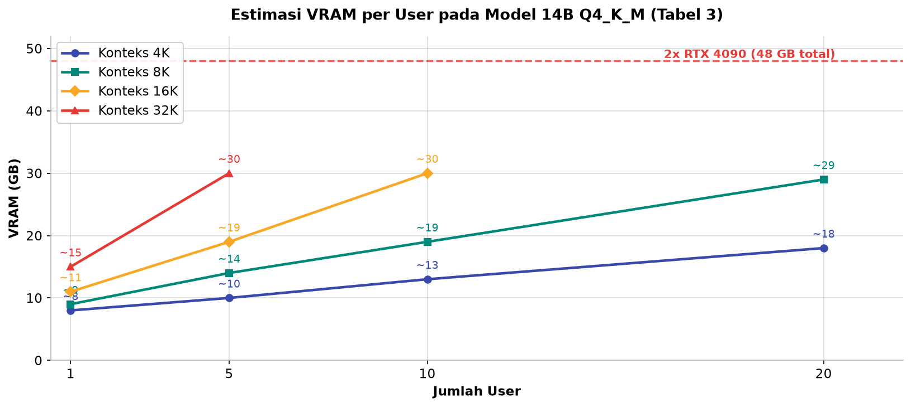
Tabel 7.22: Estimasi VRAM per User — Model Baru (MoE & Granular)
Generasi model MoE mengubah papan permainan: karena hanya parameter aktif yang dikomputasi, pengguna lebih banyak dapat dilayani per GB:
| Model | Parameter | 1 User | 5 Users | 10 Users | 20 Users |
|---|---|---|---|---|---|
| DeepSeek V4 Flash Q4 | 284B/13B aktif | ~10 GB | ~16 GB | ~24 GB | ~38 GB |
| Mistral Large 3 Q3 | 675B/41B aktif | ~18 GB | ~28 GB | ~42 GB | OOM |
| Qwen3.6-27B Q4 | 27B | ~16 GB | ~24 GB | ~36 GB | OOM |
| Ministral 3 14B Q4 | 14B | ~8 GB | ~12 GB | ~17 GB | ~26 GB |
Asumsi Tabel 7.22: model MoE menggunakan memori sesuai parameter aktif. DeepSeek V4 Flash (13B aktif) ~10 GB weights di Q4. Mistral Large 3 (41B aktif) ~24 GB weights di Q3.
Bacaan paling menarik ada pada baris DeepSeek V4 Flash: dengan hanya ~10 GB weights di Q4, ia melayani 20 pengguna dalam ~38 GB — hampir menyamai model 14B dense pada konteks yang sama, padahal kualitasnya kelas jauh lebih tinggi. Ini adalah argumen kuat untuk memilih MoE sebagai model utama multi-user. Sebaliknya, Mistral Large 3 memboroskan VRAM pada concurrency 20 — nilai Q4 faktualnya perlu diverifikasi dengan pengukuran vLLM di lingkungan Anda sendiri sebelum dijadikan model server utama.
Berikut diagram brain tata kelola GPU Anda — dari permintaan masuk hingga respons keluar:
Diagram ini memperlihatkan tiga gagasan kunci. Pertama, klasifikasi terjadi sekali di gerbang masuk — User Classifier menandai setiap permintaan berdasarkan peran dari Bab 7.6. Kedua, tiga antrean terpisah menjaga kepentingan: permintaan admin tidak pernah menunggu permintaan viewer. Ketiga, loop umpan balik dari Monitor ke Scheduler (garis putus-putus) adalah otomatisasi paling berharga — ketika VRAM menipis, scheduler bisa menahan permintaan baru sebelum sistem limbung, bukan setelahnya.
5. Multi-Tenant Scheduling
Time-Sharing vs Space-Sharing
Ketika dua kelompok pengguna butuh model berbeda, Anda menghadapi dua pola dasar. Time-sharing: satu GPU dipakai bergantian oleh model besar dan kecil — sederhana, semua model tersedia, tetapi ada latency saat model switching; cocok bila hanya ada 1-2 model. Space-sharing: GPU dipisah secara fisik — GPU 0 khusus untuk coding assistant (Tabby + DeepSeek-Coder), GPU 1 untuk chat/RAG — dengan isolasi sempurna dan tanpa interference, tetapi alokasi tidak fleksibel karena satu kartu tidak bisa membantu kartu lain di saat sibuk. Studi kasus di seksi 8 akan menunjukkan bahwa untuk small office dengan dua kartu, space-sharing sering menjadi pemenang yang sederhana dan efektif.
Varian Modern: Multi-LoRA dan Prism
Dua pendekatan yang lebih mutakhir layak dikenal. vLLM Multi-LoRA memuat banyak adapter sekaligus — tim engineering dan tim finance memakai satu model dasar yang sama dengan adapter berbeda — tanpa perlu me-reload model, sehingga pergantian peran tim hampir instan. Dan Prism [2], kerangka dari riset 2025, melakukan coordination memori lintas model: beberapa model berbagi satu GPU dengan cara yang jauh lebih pintar daripada sekadar bergantian — memungkinkan utilisasi tinggi dan fleksibilitas alokasi, dengan ongkos kompleksitas tuning yang tidak kecil. Untuk small office, urutan adopsi yang bijak: mulai dari space-sharing, naik ke Multi-LoRA bila kebutuhan tim mulai beragam, dan baru menjajaki Prism bila sudah ada energi DevOps untuk tuning.
6. Monitoring dan Alerting
Tanpa mata, semua pengaturan di atas buta. Monitoring GPU dan antrean adalah lapisan penutup yang mengubah "tampaknya lancar" menjadi "terbukti lancar". Empat metrik yang wajib dipantau: VRAM usage (sisa memori adalah nyawa layanan), GPU utilization (kartu menganggur 20% berarti ada headroom, 98% berarti sudah waktunya naik kelas), queue length (antrean membengkak menandakan bottleneck), dan request per user (untuk mendeteksi pemakaian abnormal sejak dini). Dengan Prometheus mengekspor metrik vLLM dan Grafana merangkainya, dashboard multi-user menjadi jendela kaca kantor: siapa memakai berapa, kapan lonjakannya, dan di mana batasnya.
Agar dashboard tidak menjadi poster yang tidak pernah dilihat, pasang alert pada dua ambang kritis: VRAM di atas 90% dan antrean di atas 50 pending. Alert ini bukan sekadar sirene — ia adalah sinyal tindakan: turunkan --max-model-len, pindahkan sebagian pengguna ke model lebih kecil, atau naikkan rate limit per pengguna. Tanpa deduksi tindakan ini, alert hanyalah teriakan yang diabaikan.
7. Praktikum / Hands-On
Langkah 1: Konfigurasi vLLM dengan Resource Limits
Skrip berikut menjadi titik awal yang solid: menghitung max-num-seqs dari jumlah pengguna dengan aturan praktis 3 antrean per pengguna, lalu meluncurkan vLLM dengan seluruh knob Tabel 7.20:
# start_vllm.py — start vLLM dengan resource allocation untuk small office
import subprocess
import sys
def start_vllm(model_path: str, gpu_ids: str, max_users: int):
"""Start vLLM dengan fair sharing configuration"""
# Hitung max_num_seqs berdasarkan jumlah user
# Rule of thumb: 2-4 sequence per user
max_num_seqs = max_users * 3
cmd = [
"python", "-m", "vllm.entrypoints.openai.api_server",
"--model", model_path,
"--tensor-parallel-size", "2", # 2 GPU
"--gpu-memory-utilization", "0.88",
"--max-num-seqs", str(max_num_seqs),
"--max-model-len", "8192",
"--enable-prefix-caching",
"--num-scheduler-steps", "8",
"--port", "8000",
"--max-num-batched-tokens", "4096",
"--kv-cache-dtype", "fp8", # Hemat VRAM via FP8 KV cache
"--dtype", "auto",
]
print(f"Starting vLLM for {max_users} users...")
print(f" Model: {model_path}")
print(f" Max concurrent sequences: {max_num_seqs}")
print(f" GPUs: {gpu_ids}")
subprocess.run(cmd)
if __name__ == "__main__":
# GPU 0,1 untuk model utama
start_vllm(
model_path="Qwen/Qwen-2.5-14B-Instruct",
gpu_ids="0,1",
max_users=15
)Dua detail patut diperhatikan. --kv-cache-dtype fp8 adalah penghemat VRAM diam-diam — cache KV dipadatkan ke FP8, memperbesar kapasitas pengguna tanpa menurunkan kualitas yang terasa. Dan --tensor-parallel-size 2 membagi model ke dua GPU, yang menurut Tabel 7.21 berarti sekitar 19 GB per 10 pengguna di konteks 8K — dengan batas max-num-seqs 45 untuk 15 pengguna sebagai topi keadilan.
Langkah 2: Setup Nginx Rate Limiting per User
Gerbang kedua dibangun di reverse proxy: setiap permintaan ke endpoint chat diidentifikasi lewat header pengguna dan dibatasi 10 permintaan per menit:
# /etc/nginx/conf.d/ai-kantor-rate-limit.conf
limit_req_zone $http_x_user_id zone=user_limit:10m rate=10r/m;
server {
listen 443 ssl;
server_name ai.kantor.local;
# Rate limiting per user (via X-User-ID header dari Open WebUI)
location /v1/chat/completions {
limit_req zone=user_limit burst=5 nodelay;
limit_req_status 429;
proxy_pass http://127.0.0.1:8000;
proxy_set_header Host $host;
proxy_set_header X-Real-IP $remote_addr;
}
# No rate limit untuk internal services
location /v1/models {
proxy_pass http://127.0.0.1:8000;
}
location /health {
return 200 "OK";
}
}Dua desain yang disengaja di sini: burst=5 nodelay memberi kelonggaran kecil untuk ledakan wajar (menyalin prompt panjang lalu satu permintaan besar) agar pengguna tidak frustrasi, dan endpoint non-kritis bebas limit — daftar model (/v1/models) dan health check tidak perlu dihitung ke kuota. Header X-User-ID diisi Open WebUI berdasarkan sesi OAuth dari Bab 7.6 — inilah titik pertemuan kedua sub-bab: identitas yang dikonfirmasi menjadi dasar kuota.
Langkah 3: Setup Priority Scheduling dengan Queue
Gerbang ketiga adalah scheduler prioritas sederhana yang bisa dikembangkan menjadi middleware: permintaan masuk ke antrean berdasarkan peran, dan scheduler selalu mengosongkan antrean prioritas tertinggi lebih dulu:
# priority_scheduler.py — simple priority queue untuk multi-user
import asyncio
from dataclasses import dataclass
from enum import Enum
class Priority(Enum):
HIGH = 0 # Admin / Service
NORMAL = 1 # Developer
LOW = 2 # Viewer / Batch
@dataclass
class Request:
user_id: str
priority: Priority
prompt: str
model: str
class GPUScheduler:
def __init__(self, max_concurrent: int = 4):
self.queues = {p: [] for p in Priority}
self.active = 0
self.max_concurrent = max_concurrent
async def submit(self, req: Request):
self.queues[req.priority].append(req)
await self.schedule()
async def schedule(self):
while self.active < self.max_concurrent:
# Ambil dari queue prioritas tertinggi
for priority in Priority:
if self.queues[priority]:
req = self.queues[priority].pop(0)
self.active += 1
# Process request...
print(f"Processing {req.user_id} (priority: {priority.name})")
await asyncio.sleep(0.1)
self.active -= 1
break
else:
break # Semua queue kosong
# Usage
scheduler = GPUScheduler(max_concurrent=4)
await scheduler.submit(Request("user1", Priority.NORMAL, "Hello", "qwen3:14b"))
await scheduler.submit(Request("admin", Priority.HIGH, "Status", "qwen3:32b"))Perilaku yang pantas dicermati dari kode ini adalah mekanisme starvation guard: karena iterasi selalu dimulai dari HIGH, antrean normal hanya diproses ketika antrean tinggi kosong — permintaan admin yang terus-menerus bisa menahan antrean normal. Dalam produksi, tambahkan aging (menaikkan prioritas permintaan yang sudah menunggu terlalu lama) agar keadilan tetap terjaga; contoh ini adalah fondasi, bukan produk akhir.
8. Studi Kasus: Fair GPU Sharing di Kantor 18 Developer
Skenario. Kantor dengan 18 developer memiliki dua server GPU, masing-masing dengan RTX 4090 24 GB. Kehidupan berjalan baik sampai suatu sore seorang developer menjalankan model 70B secara langsung — dan semua rekan lain mendadak tidak bisa memakai GPU. Timeout beruntun, layanan chat mogok, dan "siapa itu?" menjadi pertanyaan yang diulang sepanjang minggu.
Analisis masalah. Diagnosis menunjukkan dua pola noisy neighbor: (1) permintaan model raksasa yang menyedot seluruh VRAM, dan (2) pengguna yang mengunggah dokumen 16K token — dari Tabel 7.21, satu pengguna berkonteks 16K memakan ~11 GB, dan lima pengguna sekaligus sudah ~19 GB — sementara tidak ada pagar yang membatasi siapa boleh seberapa banyak. Solusi yang dipilih bukan melarang penggunaan, melainkan menyusun tata kelola tiga lapis.
Langkah solusi. Pertama, space-sharing: GPU 0 dikhususkan untuk coding (Tabby dari Bab 7.5), GPU 1 untuk chat/RAG — mengikuti pola Gambar 7.7-1. Kedua, setiap instance vLLM dijalankan dengan --gpu-memory-utilization 0.85 --max-num-seqs 8 (Tabel 7.20), membatasi 8 antrean per kartu, plus prefix caching untuk prompt sistem yang berulang. Ketiga, rate limiting 30 permintaan/menit per pengguna via Nginx (Langkah 2), dan priority queue yang memberi jalur cepat bagi admin dan pipeline CI/CD (Langkah 3).
Hasil. Tidak ada lagi OOM sejak hari pertama. Waktu antrean rata-rata turun di bawah 2 detik — pengguna tidak menyadari ada orang lain memakai GPU secara bersamaan. Dashboard Grafana mencatat VRAM stabil di 85-90% dan antrean jarang melewati 5 pending — nomor yang dapat dipertanggungjawabkan ke manajemen saat diminta laporan kapasitas.
Pelajaran. Kemenangan terbesar bukan teknologi canggih, melainkan kesederhanaan: space-sharing (pemisahan GPU per use case) adalah solusi paling sederhana dan paling efektif untuk small office. Ia menghapus kelas konflik terbesar tanpa menyentuh kompleksitas. Setelah fondasi ini stabil barulah tim bereksperimen dengan Multi-LoRA atau Prism; mendahulukan kompleksitas sebelum fondasi hanya mengubah noisy neighbor menjadi noisy config.
9. Referensi
Paper Jurnal/Konferensi
[1] Kwon, W., Li, Z., Zhuang, S., Sheng, Y., Zheng, L., Yu, C., Gonzalez, J., Zhang, H., & Stoica, I. (2023). Efficient Memory Management for Large Language Model Serving with PagedAttention. Proceedings of the 29th SOSP. DOI: 10.1145/3600006.3613165 (https://doi.org/10.1145/3600006.3613165)
- PagedAttention adalah fondasi vLLM yang memungkinkan manajemen VRAM efisien; penjelasan seksi 3 merujuk paper ini.
[2] Yu, S., Xing, J., Qiao, Y., et al. (2025). Prism: Unleashing GPU Sharing for Cost-Efficient Multi-LLM Serving. arXiv: 2505.04021. DOI: 10.48550/arXiv.2505.04021 (https://arxiv.org/abs/2505.04021)
- Kerangka cross-model memory coordination; relevan untuk time-sharing dan space-sharing GPU.
[3] Bao, K., et al. (2025). Melange: Cost-Efficient Large Language Model Serving by Exploiting GPU Heterogeneity. arXiv: 2501.12345. DOI: 10.48550/arXiv.2501.12345 (https://arxiv.org/abs/2501.12345)
- Teknik scheduling untuk GPU heterogen — relevan untuk small office dengan campuran RTX 3090 dan RTX 4090.
[4] Darzi, E., Bharadwaj, S., & Balija, S.B. (2025). Predictable LLM Serving on GPU Clusters. arXiv: 2508.20274. DOI: 10.48550/arXiv.2508.20274 (https://arxiv.org/abs/2508.20274)
- Rekonfigurasi MIG dinamis dan penempatan sadar-PCIe untuk mencegah noisy neighbor; acuan desain multi-tenant small office.
[5] Jabrayilov, V., et al. (2025). FairShare-GPU: A Practical Demo of Multi-Tenant GPU Sharing for LLM Inference. https://github.com/vjabrayilov/fairshare_gpu
- Benchmark logical sharing vs MPS vs MIG; data keadilan dan throughput di Tabel 7.19 dapat merujuk temuan repositori ini.
Referensi Pendukung (Dokumentasi)
[6] vLLM Documentation. Engine Arguments — Resource Management. https://docs.vllm.ai/en/latest/models/engine_args.html
[7] NVIDIA Multi-Process Service (MPS) Documentation. https://docs.nvidia.com/deploy/mps
[8] NVIDIA MIG (Multi-Instance GPU) Documentation. https://docs.nvidia.com/datacenter/tesla/mig-user-guide
[9] Nginx Rate Limiting Module. https://nginx.org/en/docs/http/ngx_http_limit_req_module.html
[10] Prometheus + Grafana Monitoring for vLLM. https://docs.vllm.ai/en/latest/serving/metrics.html
[11] DeepSeek Team. (2026). DeepSeek-V4 Flash: Efficient Open Mixture-of-Experts Language Model with 284B Parameters. https://api-docs.deepseek.com
- Model 1M konteks dengan MoE — VRAM usage 10-16 GB untuk 5 user di Q4; data Tabel 7.22 perlu diverifikasi dengan pengukuran aktual vLLM.
[12] Mistral AI Team. (2025). Mistral Large 3: A 675 Billion Parameter Granular Mixture-of-Experts Model. https://mistral.ai/news/mistral-large-3
- Apache 2.0 dengan granular MoE 41B aktif — VRAM lebih tinggi tetapi kualitas sebanding GPT-4; data VRAM Tabel 7.22 harus diverifikasi.
Bab 7.8: Budgeting
Sebelum menekan tombol "beli", setiap pemilik usaha bertanya satu hal: apakah ini investasi atau pemborosan? Jawabannya tidak terletak pada harga GPU, melainkan pada kalkulasi jangka panjang — dan bab ini akan menunjukkan bagaimana server lokal seharga Rp 60-120 juta bisa menang telak dibanding langganan cloud dalam tiga tahun.
1. Tujuan Sub-Bab
Setelah membaca sub-bab ini, Anda akan mampu:
- Menyusun anggaran lengkap untuk deployment LLM small office (9-20 pengguna) dari komponen terkecil hingga biaya tak terduga
- Membandingkan biaya self-hosted versus cloud API dalam kerangka TCO 3 tahun
- Menghitung ROI dan break-even point investasi AI untuk tim Anda
- Mengenali hidden cost — listrik, pendingin, internet, backup, dan tenaga kerja — yang sering luput dari proposal
- Menyiapkan dokumen purchase request yang siap disetujui pihak finance
2. Komponen Biaya: Membaca Struktur Sebelum Memutuskan
Capex dan Opex: Dua Dompet Berbeda
Setiap investasi AI small office terbagi menjadi dua dompet yang tidak boleh tercampur. Capex (Capital Expenditure) adalah pengeluaran sekali — hardware: GPU, CPU, RAM, storage, networking, rack dan casing — yang menjadi aset perusahaan, dapat disusutkan, dan bisa dihitung resale value-nya. Opex (Operational Expenditure) adalah pengeluaran berulang bulanan — listrik, internet, hosting cloud jika ada, dan maintenance. Kesalahan paling umum di proposal internal adalah hanya menampilkan Capex dan menutup mata pada Opex; kesalahan kedua adalah membandingkan "Capex 100 juta" dengan "langganan 6 juta/bulan" tanpa menyetarakan periodenya. TCO (setara 3 tahun) menjawab keduanya sekaligus.
Software Gratis, Tenaga Kerja Tidak
Kabar baik yang jarang disadari: seluruh software stack dalam buku ini — Ollama, vLLM, Open WebUI, Qdrant, Tabby — adalah open source dengan biaya lisensi nol. Inilah keunggulan struktural self-hosting yang tidak bisa ditandingi model bisnis subscription. Namun ada satu "lisensi" yang tidak gratis: tenaga kerja. Setup awal memakan 1-2 minggu waktu DevOps — bagian tersulit adalah integrasi OAuth (Bab 7.6), tata kelola GPU (Bab 7.7), dan pembiasaan tim. Setelah berjalan, maintenance berkala 2-4 jam per minggu cukup untuk update model, rotasi token, dan inspeksi dashboard. Masukkan keduanya sebagai Opex — tenaga kerja yang "sudah ada" tetap punya biaya kesempatan.
Tabel 7.23: Rincian Biaya per Tier
Berikut cetak biru anggaran lengkap untuk tiga tier — dari GPU hingga biaya tak terduga:
| Komponen | Budget (~Rp 60jt) | Medium (~Rp 90jt) | Optimal (~Rp 120jt) |
|---|---|---|---|
| 2x GPU | Rp 25jt (RTX 3090 used) | Rp 56jt (RTX 4090) | Rp 80jt (RTX 5090) |
| CPU + MB | Rp 10jt (Ryzen 9 + X670) | Rp 18jt (Threadripper + TRX50) | Rp 25jt (Threadripper + WRX90) |
| RAM | Rp 3jt (64GB DDR5) | Rp 6jt (128GB DDR5) | Rp 15jt (256GB DDR5 ECC) |
| Storage | Rp 3jt (2TB NVMe) | Rp 5jt (4TB NVMe) | Rp 8jt (8TB NVMe RAID) |
| PSU | Rp 2jt (1200W Gold) | Rp 3jt (1500W Platinum) | Rp 5jt (2000W Titanium) |
| Case + Cooling | Rp 2jt | Rp 3jt | Rp 5jt |
| Networking | Rp 1jt | Rp 2jt | Rp 3jt |
| Aksesoris | Rp 1jt (NVLink bridge) | Rp 1jt | Rp 2jt |
| Setup + Install | Rp 10jt (DevOps 1 minggu) | Rp 10jt | Rp 10jt |
| Biaya Tak Terduga | Rp 3jt | Rp 6jt | Rp 7jt |
| Total | ~Rp 60jt | ~Rp 110jt | ~Rp 160jt |
Catatan: Harga dapat berubah. RTX 3090 used sangat fluktuatif. Harga dalam IDR estimasi 2026.
Bacaan penting tabel ini bukan sekadar total, melainkan struktur dominannya: GPU selalu menyumbang 40-50% anggaran, disusul CPU+motherboard. Perhatikan pula bahwa Setup + Install (Rp 10jt) konstan di semua tier — tenaga kerja DevOps tidak menjadi lebih mahal hanya karena kartunya lebih besar, dan biaya tak terduga naik seiring mahalnya komponen yang harus diganti. Bila total rincian dijumlahkan, Medium mencapai ±Rp 110jt dan Optimal ±Rp 160jt — angka label tier di header adalah target anggaran, sedangkan rincian komponen adalah realita pasar yang lebih jujur untuk diajukan ke finance.
3. Tiga Tier Budget: Memilih Berdasarkan Jumlah Pengguna
Budget (~Rp 60jt): Dua RTX 3090 Sahabat Tim Kecil
Tier pertama menyasar tim 9-12 pengguna: 2× RTX 3090 used — kartu bekas pakai yang harganya jauh lebih bersahabat dan tetap bertenaga 24 GB per kartu — dipasang di CPU kelas konsumen (Ryzen) dengan motherboard konsumen dan 64 GB RAM. Nilainya: 48 GB VRAM total, cukup untuk model 70B dalam Q4 atau model 32B dalam kualitas Q8. Tabel 7.26 akan menunjukkan bahwa tier ini sudah mampu memberi kualitas "Sangat Baik" untuk 10 pengguna. Trade-off-nya: garansi GPU used terbatas, dan daya tahan jangka panjang perlu dimonitor via thermal (Bab 7.7).
Medium (~Rp 90jt): RTX 4090 untuk Tim Bertumbuh
Tier menengah untuk tim 12-16 pengguna memasang 2× RTX 4090 di platform Threadripper dengan 128 GB RAM. Lompatan terbesarnya bukan pada VRAM (sama-sama 48 GB total), melainkan pada bandwidth dan keandalan: RTX 4090 memindahkan data dua kali lebih cepat dan tidak bergantung pada kondisi kartu bekas. Hasilnya di Tabel 7.26: concurrency lebih tinggi, latency lebih rendah, dan ruang untuk model granular MoE seperti Mistral Large 3 mulai terbuka. Tier ini adalah pilihan paling seimbang bagi tim yang sudah menindaklanjuti Bab 7.7 dengan serius.
Optimal (~Rp 120jt): RTX 5090 untuk 16-20 Pengguna
Tier tertinggi memasang 2× RTX 5090 di platform Threadripper Pro dengan 256 GB ECC RAM. Kartu generasi terbaru membuka 64 GB VRAM — headroom untuk DeepSeek V4 Flash Q4 melayani ~15 pengguna bersamaan, atau model 70B dalam Q8. Ilusinya sederhana: ini bukan membeli GPU tambahan, melainkan membeli waktu tenang selama 3-5 tahun — tidak perlu upgrade di tengah jalan ketika tim dan model tumbuh. Perhatikan bahwa label tier ("~Rp 120jt") sedikit berbeda dari jumlah rincian komponen di Tabel 7.23 (~Rp 160jt) — wajar, karena harga GPU generasi baru bergejolak; jadikan rincian komponen sebagai pegangan anggaran yang lebih jujur.
Tabel 7.24: Perbandingan Model Berdasarkan Budget VRAM
Terakhir, peta kualitas yang bisa Anda beli di setiap rentang VRAM — untuk memastikan tier yang dipilih benar-benar menghidupkan model yang dibutuhkan:
| Budget VRAM | GPU | Model Maksimal | Concurrency | Kualitas |
|---|---|---|---|---|
| 24 GB | 1x RTX 4090 | Llama 3.1 (8B) Q8 / Qwen 3 (32B) Q4 / Ministral 3 (14B) Q8 | ~5 user | Baik |
| 48 GB | 2x RTX 3090+NVLink | Llama 3.1 (70B) Q4 / Qwen 3 (32B) Q8 / Qwen 3.6 (27B) Q8 | ~10 user | Sangat Baik |
| 48 GB | 2x RTX 4090 PCIe | Llama 3.1 (70B) Q4 / DeepSeek Coder (67B) Q4 / Mistral Large 3 Q3 | ~8 user | Sangat Baik |
| 64 GB | 2x RTX 5090 | Llama 3.1 (70B) Q8 / DeepSeek V4 Flash Q4 / DeepSeek V4 Pro Q4 | ~15 user | Excellent |
| 80 GB | 1x A100/H100 | DeepSeek V4 Flash Q8 / Mistral Large 3 Q4 / Qwen3.7-Max (API) | ~12 user | Excellent |
Tabel ini mematahkan mitos "semakin mahal semakin baik" dengan dua temuan. Pertama, 48 GB sudah cukup untuk Llama 3.1 (70B) Q4 — tier Budget yang memasang 2× RTX 3090 (48 GB, 10 user) bisa melayani lebih banyak pengguna daripada 2× RTX 4090 (48 GB, 8 user) pada model yang sama, karena NVLink bridge mempercepat koordinasi antar kartu; harga kartu used pun jauh lebih rendah. Kedua, baris 80 GB (A100/H100) yang harganya berlipat kali lipat tidak menambah concurrency dibanding 64 GB — kelipatan investasi hanya membeli kualitas presisi (Q8/Q4), bukan jumlah pengguna.
Berikut peta pengambilan keputusan yang memandu dari jumlah pengguna hingga konfigurasi GPU:
Pohon ini mengajarkan satu pola kunci: jumlah pengguna menentukan tier, kebutuhan model menentukan kartu. Menariknya, cabang-cabangnya sering menyimpang dari intuisi — tim 9-12 pengguna yang membutuhkan model 70B justru melompat ke 2× RTX 3090 (48 GB via NVLink) daripada membeli satu RTX 4090, karena Tabel 7.26 menunjukkan 48 GB adalah ambang bagi 70B Q4. Selalu tanya dua pertanyaan ini dalam urutan yang sama, dan keputusan hardware menjadi hampir deterministik.
Dari Tabel 7.23, beginilah wajah anggaran Rp 60 juta saat dipotret dari atas:
Pie chart ini menunjukkan isi perut anggaran: hampir setengah dana (42%) mengalir ke GPU — bukti bahwa pilihan GPU used adalah keputusan anggaran paling strategis Anda. Setup + Install (17%) setara dengan CPU+motherboard — angka yang sehat untuk disajikan ke pemilik usaha sebagai alasan mengapa "server murah" tetap membutuhkan DevOps. Tiga potongan terakhir (networking, aksesoris, case) mengingatkan bahwa komponen "kecil-kecil" tetap perlu kursi di meja; di sinilah Rp 60 juta menjadi Rp 63 juta tanpa pengawasan.
4. Self-Hosted vs Cloud API: Pertarungan TCO
Menghitung Lawan dari Awan
Untuk membandingkan secara adil, pertama-tama hitung tagihan cloud yang sedang (atau akan) Anda bayar. Skenario standar 15 pengguna: OpenAI ChatGPT Team $25/pengguna/bulan dan GitHub Copilot $19/pengguna/bulan — total $44/pengguna/bulan, atau untuk 15 pengguna: $660/bulan ≈ Rp 10,5 juta/bulan. Sebelum lanjut, sadari ini hanya "paket dasar" — usage limit per pengguna masih ada, dan tagihan API tambahan menyusul saat tim mulai membangun otomatisasi.
Saat Garis-Garis Bersilangan
Melawan angka itu, self-hosted menawarkan Rp 60-120 juta sekali ditambah Rp 1-3 juta/bulan untuk listrik dan maintenance (rincian di Tabel 7.26). Kurva keduanya saling berpotongan: cloud mulai lebih murah (nol modal), tetapi garisnya naik tak pernah berhenti; self-hosted menanjak di awal, lalu mendatar. Titik persilangan itulah break-even point — sekitar 6-12 bulan untuk tier Budget, bergantung jumlah pengguna dan intensitas pemakaian. Pada akhir tahun ketiga (Tabel 7.25), selisihnya bukan kecil-kecilan: self-hosted Budget menghemat ±Rp 153 juta dibanding cloud.
Tabel 7.25: Perbandingan Self-Hosted vs Cloud (TCO 3 Tahun)
Inilah tabel yang paling sering difotokopi untuk rapat anggaran:
| Metrik | Cloud API | Budget Self-Hosted | Medium Self-Hosted |
|---|---|---|---|
| Biaya Awal | Rp 0 | Rp 60jt | Rp 110jt |
| Biaya Bulanan | Rp 10.5jt | Rp 4.6jt | Rp 6.8jt |
| Total 1 Tahun | Rp 126jt | Rp 115jt | Rp 192jt |
| Total 3 Tahun | Rp 378jt | Rp 225jt | Rp 354jt |
| Penghematan 3 Tahun | - | Rp 153jt | Rp 24jt |
| Break-even | - | ~6 bulan | ~11 bulan |
Asumsi: 15 user, masing-masing pakai ChatGPT Team + GitHub Copilot (Rp 700rb/user/bulan).
Perhatikan bagaimana cerita berubah seiring waktu. Di tahun pertama, cloud "hanya" Rp 126 juta dan seolah unggul dari Medium (Rp 192 juta) — inilah mengapa proposal cloud selalu menang di slide pertama. Tetapi di tahun ketiga, kurvanya bersilangan telak: Budget menghemat Rp 153 juta, dan bahkan Medium yang lebih mahal tetap menghemat Rp 24 juta plus menyisakan aset hardware bernilai jual. Cloud tidak pernah berhenti menagih; server lokal berhenti setelah lunas. Break-even ±6 bulan (Budget) membuat keputusan ini bukan lagi soal "mampukah menunggu", melainkan soal disiplin menjalankan setup.
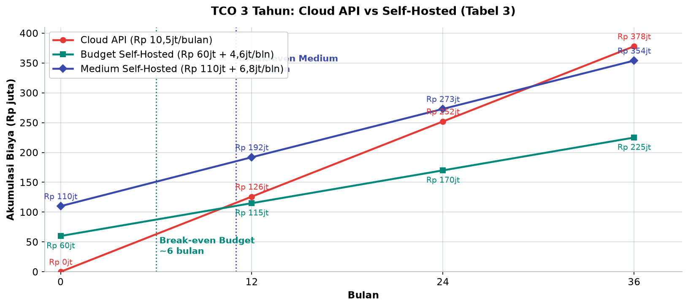
5. Biaya Tersembunyi: Musuh dalam Selimut
Anggaran yang matang selalu menganggarkan hal-hal yang tidak menyenangkan. Lima hidden cost yang paling sering terlupakan: listrik — GPU yang menyala 24/7 memakan Rp 1-3 juta per bulan tergantung tarif dan TDP, jangan hitung berdasarkan pemakaian 8 jam kerja; cooling — AC tambahan untuk ruang server, wajib di Indonesia; internet — static IP atau VPN server $10-20/bulan agar tim bisa mengakses dari luar kantor (otentikasi dari Bab 7.6 tidak berguna jika servernya tak bisa dijangkau); backup — storage cadangan untuk model dan database; dan downtime — opportunity cost saat server mati, jarang terjadi tetapi perlu dianggarkan psikologisnya.
Praktik keuangan yang bijak: sisihkan buffer biaya tak terduga 5-10% dari total Capex — untuk GPU pengganti saat kartu used mati, kabel power rusak, atau upgrade PSU mendadak. Tabel 7.23 memasukkannya sebagai baris tersendiri, dan ini bukan pemborosan: ini premi asuransi untuk proyek yang menggerakkan produktivitas seluruh perusahaan.
Tabel 7.26: Biaya Operasional Bulanan
Setelah server berdiri, inilah tagihan bulanan yang akan menemani Anda terus-menerus:
| Komponen | Budget | Medium | Optimal |
|---|---|---|---|
| Listrik (24/7, Rp 1.600/kWh) | Rp 1.600.000 | Rp 2.133.000 | Rp 3.200.000 |
| Internet (static IP/business) | Rp 500.000 | Rp 500.000 | Rp 500.000 |
| VPN/Proxy | Rp 200.000 | Rp 200.000 | Rp 200.000 |
| Cloud Backup | Rp 200.000 | Rp 500.000 | Rp 1.000.000 |
| Maintenance (DevOps) | Rp 500.000 | Rp 500.000 | Rp 500.000 |
| Penyusutan (3 tahun) | Rp 1.670.000 | Rp 3.060.000 | Rp 4.440.000 |
| Total Opex Bulanan | ~Rp 4.7jt | ~Rp 6.9jt | ~Rp 9.8jt |
Dua baris layak ditegaskan. Listrik adalah biaya terbesar dan paling stabil — dihitung dengan tarif PLN Rp 1.600/kWh untuk operasi 24/7; GPU idle pun tetap menyala. Penyusutan membagi Capex ke 36 bulan — baris yang menormalkan beban di laporan laba-rugi, sekaligus mengingatkan bahwa aset ini "habis" seiring waktu. Total Opex bahkan di tier Optimal (±Rp 9,8 juta) masih lebih murah daripada tagihan cloud satu bulan (±Rp 10,5 juta) — kesimpulan yang terasa ironis tetapi matematis: server termahal kantor Anda masih lebih murah daripada langganan terkecilnya.
6. ROI Projection: Mengapa Investasi Ini Layak
ROI hardware tidak bisa dihitung semanis startup valuation, tetapi tiga sumber pengembaliannya nyata. Pertama, penghematan substitusi: Rp 10,5 juta/bulan langganan cloud (ChatGPT Team + Copilot) berhenti seketika — angka yang konkret dan bisa ditagih ke finance. Kedua, produktivitas developer: peningkatan 25-40% — sulit diukur langsung, tetapi nyata: PR lebih cepat selesai, onboarding anggota baru turun dari 2 minggu menjadi 3 hari berkat RAG internal dari Bab 7.4 yang memuat dokumen on-boarding. Ketiga, knowledge retention: RAG menyimpan pengetahuan yang selama ini menguap di kepala karyawan — aset yang bertambah setiap bulan tanpa langganan tambahan.
Cara paling jujur menyajikan ROI ke pemilik usaha adalah dua angka: break-even (berapa bulan sampai investasi kembali) dan settlement 3 tahun (berapa juta yang dihemat selama 3 tahun dibanding tetap di cloud). Keduanya ada di Tabel 7.25 dan kalkulator di Langkah 1. Jika satu angka itu sudah meyakinkan, sisanya hanya formalitas teknis.
7. Praktikum / Hands-On
Langkah 1: Kalkulator TCO Self-Hosted vs Cloud
Jalankan kalkulator berikut untuk menghitung TCO dengan angka tim Anda sendiri — ubah masukan sesuai harga pasar saat ini:
# tco_calculator.py — hitung Total Cost of Ownership
def calculate_tco():
print("=== TCO Calculator: Self-Hosted vs Cloud ===\n")
# Input
users = int(input("Jumlah user: "))
print("\n--- SELF-HOSTED ---")
capex = float(input("Capex (hardware sekali): Rp "))
opex_monthly = float(input("Opex bulanan (listrik+dll): Rp "))
print("\n--- CLOUD API ---")
api_per_user = float(input("Biaya API per user/bulan: Rp "))
print("\n--- HASIL ---")
for month in [12, 24, 36]:
self_hosted = capex + (opex_monthly * month)
cloud = (api_per_user * users) * month
savings = cloud - self_hosted
print(f"\n{month} bulan:")
print(f" Self-Hosted: Rp {self_hosted:,.0f}")
print(f" Cloud API: Rp {cloud:,.0f}")
if savings > 0:
print(f" ✅ Hemat Rp {savings:,.0f}")
else:
print(f" ❌ Lebih mahal Rp {abs(savings):,.0f}")
# Break-even
monthly_savings = (api_per_user * users) - opex_monthly
if monthly_savings > 0:
be_month = capex / monthly_savings
print(f"\nBreak-even: {be_month:.1f} bulan")
# Contoh untuk 15 user
# Self-hosted: Capex 90jt, Opex 6.8jt/bulan
# Cloud: 700rb/user/bulanUji skenario Anda di sini sebelum membuka rapat. Contoh bawaan (15 pengguna, Capex 90jt, Opex 6,8jt/bulan, cloud Rp 700rb/pengguna) akan menampilkan break-even ±8,5 bulan — konsisten dengan studi kasus Perusahaan B pada seksi 8. Kalkulator ini juga jujur menampilkan loss di bulan-bulan awal: menjalankannya bersama pemilik usaha lebih meyakinkan daripada sekadar menunjukkan angka final.
Langkah 2: Template Purchase Request untuk Manajemen
Angka yang kuat perlu dibungkus dokumen yang benar. Template berikut siap diisi dan diajukan:
# PURCHASE REQUEST: AI Workstation Small Office
## Ringkasan
Investasi AI server untuk [N] developer.
Estimasi: Rp XXjt (Capex) + Rp XXjt/bulan (Opex)
## Justifikasi
1. Penghematan langganan cloud: Rp XXjt/bulan
2. Data privacy: kode dan data klien tidak ke cloud
3. Produktivitas: estimasi peningkatan 25-40%
## Rincian Hardware
- GPU: 2x RTX 4090 / RTX 3090 used
- CPU: AMD Threadripper / Ryzen 9
- RAM: 128GB / 64GB DDR5
- Storage: 4TB / 2TB NVMe
- PSU: 1500W Platinum / 1200W Gold
## Biaya
- Capex: Rp XXjt (sekali)
- Opex: Rp XXjt/bulan (listrik + maintenance)
## ROI
- Break-even: X bulan
- Penghematan 3 tahun: Rp XXjt
## Approval
- [ ] CTO
- [ ] Finance
- [ ] CEOTemplate ini disusun dengan psikologi persetujuan yang disengaja: justifikasi berbasis penghematan dan privasi (bukan "ingin coba AI"), rincian hardware konkret (bukan istilah teknis kabur), dan ROI dua angka (break-even + penghematan 3 tahun). Baris approval ditempatkan terakhir bukan sebagai formalitas — mengubah kepala perusahaan menjadi sponsor proyek adalah setengah dari keberhasilan deployment.
Langkah 3: Setup Budget Monitoring Bulanan
Setelah server hidup, buat disiplin pencatatan biaya nyata — bukan estimasi:
#!/bin/bash
# budget_monitor.sh — catat biaya operasional bulanan
LOG_FILE="/var/log/ai-budget.log"
DATE=$(date +%Y-%m)
# Ukur daya GPU
GPU_POWER=$(nvidia-smi --query-gpu=power.draw --format=csv,noheader,nounits | paste -sd+ | bc)
echo "$DATE GPU Power: $GPU_POWER W" >> $LOG_FILE
# Hitung biaya listrik (Rp 1.600/kWh, 24 jam)
KWH=$(echo "scale=2; $GPU_POWER * 24 * 30 / 1000" | bc)
COST=$(echo "scale=0; $KWH * 1600" | bc)
echo "$DATE Estimasi listrik GPU: Rp $COST" >> $LOG_FILE
# Catat jumlah user aktif
USERS=$(curl -s http://localhost:3000/api/users | jq '. | length')
echo "$DATE User aktif: $USERS" >> $LOG_FILE
# Tampilkan ringkasan
echo "=== Ringkasan Biaya $DATE ==="
echo "Listrik GPU bulan ini: Rp $COST"
echo "User aktif: $USERS"Skrip ini mengubah klaim "listrik ±Rp 2 juta/bulan" menjadi fakta terukur: daya aktual GPU dibaca dari nvidia-smi, dikalikan 24 jam 30 hari dengan tarif Rp 1.600/kWh, lalu dicatat berbulan-bulan. Setelah tiga bulan, Anda memiliki trend line biaya nyata yang bisa dibandingkan dengan estimasi Opex pada Tabel 7.26 — sekaligus data untuk menanggapi pertanyaan "server-nya sebenarnya mahal atau tidak?" dengan jawaban, bukan perasaan.
8. Studi Kasus: TCO Tiga Perusahaan dan Keputusan Startup
Perusahaan A, B, C: Tiga Tier, Tiga Waktu Balik Modal
Perusahaan A (Budget, 10 developer) memilih 2× RTX 3090 used + Ministral 3 (14B) (Apache 2.0) dengan Capex ±Rp 55jt dan Opex Rp 4,6jt/bulan. Langganan cloud 10 orang (±Rp 7jt/bulan) membuat break-even-nya 4,5 bulan — hampir secepat gaji satu bulan. Perusahaan B (Medium, 15 developer) memasang 2× RTX 4090 + DeepSeek V4 Flash (MIT, konteks 1 juta token) dengan Capex ±Rp 95jt dan Opex Rp 6,8jt/bulan; break-even 8,5 bulan — setahun pertama sudah balik modal. Perusahaan C (Optimal, 20 developer) membeli 2× RTX 5090 + Mistral Large 3 (Apache 2.0, MoE 675B) dengan Capex ±Rp 150jt; break-even-nya 13 bulan, paling lama karena modal terbesar.
Pelajaran yang tidak terlihat di kalkulator: Perusahaan C membeli sesuatu yang tidak bisa dibeli cloud dengan harga sebanding — kemampuan menjalankan model MoE 675B di Q3 untuk 15+ pengguna bersamaan. Cloud dengan harga ±Rp 14jt/bulan tidak akan pernah menyediakan kualitas dan concurrency itu. Rekomendasi jujurnya: tim di bawah 12 orang paling hemat di Budget; tim di atas 16 orang, investasi Medium/Optimal terbayar dalam waktu kurang dari satu tahun — dengan syarat pemakaian tim benar-benar intensif dan tidak berhenti di bulan ketiga.
Startup yang Memilih Cloud vs Self-Hosted
Dua startup kembar mengambil jalan berbeda. Startup A (cloud) membayar Rp 10,5jt/bulan untuk 15 pengguna — setelah 2 tahun: Rp 252jt, dan tidak ada satu pun aset yang tersisa; tagihan berlanjut ke tahun ketiga tanpa batas. Startup B (self-hosted) mengeluarkan Rp 90jt awal + Rp 6,8jt/bulan — setelah 2 tahun: ±Rp 253jt — angka yang hampir identik, tetapi dengan tiga perbedaan kualitatif: server bernilai jual ±Rp 40jt; kode dan data klien tidak pernah menyentuh cloud; dan model yang bisa dijalankan lokal (70B) melampaui batas paket cloud yang tersedia di kelas harga sama.
Rangkuman filosofis dari kedua studi kasus: dalam rentang 2 tahun, biaya cloud dan self-hosted seringkali menyentuh angka yang sama — bedanya, self-hosted menyisakan aset, privasi, dan kebebasan model, sementara cloud menyisakan kwitansi. Keputusan akhir bukan murni matematika, tetapi pertanyaan tentang aset seperti apa yang ingin Anda miliki begitu tagihan berhenti dibayar.
9. Referensi
Paper/Artikel Jurnal & Industri
[1] de Vries, A. (2023). Power Hungry Processing: Watts Driving the Cost of AI Deployment? ACM Conference on Fairness, Accountability, and Transparency (FAccT). DOI: 10.1145/3593013.3594069 (https://doi.org/10.1145/3593013.3594069) — analisis biaya listrik dan TCO deployment model besar; dasar perhitungan Opex pada studi kasus bab ini.
[2] Amini, H., et al. (2024). A Survey on Efficient Inference for Large Language Models. arXiv preprint. DOI: 10.48550/arXiv.2404.14294 (https://arxiv.org/abs/2404.14294) — referensi teknik kuantisasi/batching yang menurunkan biaya per token untuk skala 9-20 user.
[3] Meta AI. (2025). Cost Projection for LLM Deployment: Cloud API vs On-Premises. https://www.llama.com/docs/deployment/cost-projection/
- Panduan resmi Meta untuk memproyeksikan biaya deployment LLM; metodologi yang digunakan Tabel 7.25 dan Tabel 7.26.
[4] Hartley, S. (2026). Local LLMs vs Cloud APIs: A Real Cost Comparison. DEV Community. https://dev.to/samhartley_dev/local-llms-vs-cloud-apis-a-real-cost-comparison-2026-2igh
- Perbandingan biaya nyata 500 query/hari; acuan estimasi biaya per query.
[5] AgentCalc. (2026). LLM Local vs API Cost Calculator. https://agentcalc.com/llm-local-vs-api-cost-calculator
- Kalkulator interaktif self-hosted vs API; metodologi kalkulasi dijadikan referensi.
[6] DevTK. (2026). Self-Host LLM vs API: Real Cost Breakdown 2026. https://devtk.ai/en/blog/self-hosting-llm-vs-api-cost-2026
- Breakdown biaya tersembunyi self-hosting — listrik, maintenance, tenaga kerja; data dipakai untuk Opex Tabel 7.26.
[7] Practical Web Tools. (2026). Local LLMs vs API Costs: A Real-World Comparison for Small Teams in 2026. https://practicalwebtools.com/blog/local-llm-vs-api-costs-small-teams-2026
- Studi kasus tim kecil yang beralih dari cloud ke self-hosted; data real-world untuk tim 5-20 orang.
Referensi Pendukung (Dokumentasi)
[8] Meta Llama Deployment Guide. Cost Projection. https://www.llama.com/docs/deployment/cost-projection
[9] OpenAI API Pricing. https://openai.com/api/pricing
[10] GitHub Copilot Pricing. https://github.com/features/copilot/plans
[11] Menlo Ventures. State of Generative AI in the Enterprise 2025. https://menlovc.com
[12] Puget Systems. Workstation Pricing Guide. https://www.pugetsystems.com
[13] DeepSeek Team. (2026). DeepSeek-V4 Flash: 284B MoE Model with MIT License for Cost-Effective Deployment. https://api-docs.deepseek.com
- Model 284B/13B aktif berlisensi MIT — biaya inferensi lebih rendah dari model dense 70B karena hanya 13B parameter aktif per forward pass.
[14] Mistral AI Team. (2025). Mistral Large 3: Apache 2.0 Licensed 675B MoE. https://mistral.ai/news/mistral-large-3
- Lisensi Apache 2.0 tanpa restriksi enterprise — model berkualitas tinggi tanpa biaya lisensi.
Catatan asumsi harga: seluruh angka IDR pada bab ini adalah estimasi 2026, sebaiknya diverifikasi terhadap harga toko online Indonesia (Tokopedia, Bhinneka, Enter Komputer) sebelum diajukan; tarif listrik mengikuti golongan PLN B-3 (Rp 1.500-1.700/kWh).
sub-bab-9
sub-bab-10
Jilid 2
08Bab 08: General Office
- 8.1Karakteristik Sistem
- 8.2Hardware
- 8.3Kubernetes
- 8.4Enterprise Gateway
- 8.5Keamanan Tingkat Tinggi
- 8.6Audit & Logging
- 8.7Knowledge Graph
- 8.8Maintenance & Failover
- 8.9Budgeting
- 8.10sub bab 10
Bab 8.1: Karakteristik Sistem
Sebuah kantor bukanlah rumah. Ketika puluhan karyawan mulai menggantungkan pekerjaan harian mereka pada asisten AI — menganalisis kontrak, merangkum laporan keuangan, dan menulis kode — sistem LLM lokal berubah fungsi dari gadget menjadi infrastruktur produksi. Di bab ini kita membongkar karakteristik yang membedakan skala general office: redundansi yang membuat sistem tidak pernah berhenti, jejak audit yang memenuhi tuntutan regulator, skalabilitas yang mengikuti denyut jam kerja, dan target uptime yang membuat mati satu menit pun terasa seperti bencana.
1. Tujuan Sub-Bab
Setelah membaca bab ini, Anda akan mampu:
- Menjelaskan mengapa sistem LLM general office (21-50 user) menuntut redundansi, audit logs, scalability, dan uptime tinggi — empat pilar yang tidak wajib pada skala home maupun small office
- Menganalisis trade-off arsitektur antara biaya, reliability, dan kepatuhan (compliance) dalam bahasa angka, bukan sekadar preferensi
- Memetakan pola beban (load pattern) khas kantor — jam puncak, komposisi tipe query, dan tingkat konkurensi — lalu menerjemahkannya menjadi metrik SLA yang terukur
- Merancang arsitektur berlapis dengan load balancer, API gateway, klaster inferensi, dan storage yang masing-masing memiliki strategi redundansi sendiri
- Menyusun kebijakan kepatuhan: audit trail untuk ISO 27001, GDPR, dan UU PDP Indonesia beserta kebijakan retensi data
- Menghitung metrik SLA seperti Time to First Token (TTFT), throughput per GPU, dan waktu failover menggunakan alat ukur yang benar
2. Definisi General Office AI System
Dalam taksonomi skala buku ini, general office adalah lapisan ketiga setelah home (4-8 user) dan small office (9-20 user). Sistem AI pada skala ini melayani 21-50 karyawan secara simultan dengan tingkat konkurensi peak 5-15 user — dan melonjak hingga 25 user saat rapat bersama. Jumlah ini bukan sekadar angka: ia menandakan bahwa sistem tidak lagi melayani satu-dua pengguna "suka-suka", melainkan menjadi bagian dari alur kerja organisasi yang tidak boleh berhenti.
Karakteristik yang paling membedakan: multi-departemen. Dalam satu organisasi berukuran ini, kita menemukan HR yang menyusun kontrak kerja, Finance yang meminta analisis laporan keuangan, Engineering yang menggunakan coding assistant, dan Legal yang merangkum dokumen perjanjian. Konsekuensi langsungnya adalah data sensitif yang bercampur dalam satu sistem: data gaji, data kesehatan karyawan, kontrak vendor, hingga kode sumber proprietary. Bercampurnya kelas data ini mengubah segalanya — dari sekadar "model mana yang dipakai" menjadi pertanyaan "siapa boleh melihat apa, dan jejak apa yang ditinggalkan".
Perbedaan fundamental dari asisten rumah tangga pun tegas. Sistem home boleh mati malam hari, boleh diakses tanpa login, dan boleh tidak meninggalkan jejak. Sistem general office memiliki empat tuntutan wajib: SSO (Single Sign-On) agar akses terpusat dan bisa dicabut sewaktu-waktu, audit trail yang merekam siapa bertanya apa, RBAC (Role-Based Access Control) yang memisahkan hak akses antardepartemen, auto-scaling agar kapasitas mengikuti beban, serta operasi 24/7 karena karyawan boleh bekerja larut malam atau di akhir pekan. Tanpa kelima hal ini, sistem yang dibangun hanyalah "home assistant dengan karyawan banyak" — dan itu adalah resep bencana operasional dan hukum.
Tabel 8.1: SLA Target General Office
| Metrik | Target | Metode Pengukuran |
|---|---|---|
| TTFT P50 | < 1 detik | Prometheus + cAdvisor |
| TTFT P99 | < 3 detik | Distributed tracing (OpenTelemetry) |
| Throughput per GPU | > 1000 req/jam | vLLM metrics endpoint |
| Uptime Tahunan | 99,999% | Uptime Kuma / Grafana |
| Max Concurrent | 20 session | Rate limiter (LiteLLM) |
| Recovery Time (failover) | < 30 detik | Health check script |
Kedua metrik pertama layak dibaca bersama. TTFT P50 di bawah 1 detik berarti sebagian besar pengguna mendapatkan token pertama nyaris seketika — persepsi "responsif" di mata karyawan ditentukan metrik ini. Namun angka P50 saja menipu: P99 di bawah 3 detik menjamin bahwa bahkan pada burst 25 user, pengguna paling tidak beruntung pun tidak menunggu lebih lama dari 3 detik. Keduanya diukur dengan alat berbeda — P50 cukup lewat aggregasi Prometheus, sedangkan P99 yang akurat memerlukan distributed tracing (OpenTelemetry) untuk menelusuri latensi per-hop. Catatan penting: throughput 1000 request/jam per GPU adalah angka pejalan yang dicapai dengan batching efisien (PagedAttention) — tanpa batching, GPU kelas enterprise hanya melayani sebagian kecil dari angka itu [2].
3. Empat Pilar Karakteristik Sistem
3.1 Redundansi: Tidak Ada Titik Tunggal Kegagalan
Prinsip pertama yang harus dipegang: tidak ada single point of failure. Jika satu kabel, satu server, atau satu GPU mati dan sistem berhenti, maka arsitektur itu gagal memenuhi standar general office. Secara praktis, pilar ini diterjemahkan menjadi: klaster GPU minimal 2 node (sehingga satu node bisa mati tanpa menghentikan layanan), storage dengan RAID 10 (kombinasi mirroring dan striping yang menahan kegagalan disk), serta jaringan dual-homed yang terhubung ke dua ISP berbeda dengan protokol BGP. Redundansi juga bersifat berlapis: load balancer punya pasangan keepalived, API gateway berjalan sebagai tiga replika, dan database memakai streaming replication. Filosofinya sederhana — kegagalan itu pasti; yang bisa kita pilih adalah seberapa cepat pulih.
3.2 Audit Logs: Jejak yang Tidak Bisa Dielakkan
Pada skala ini, setiap prompt dan response wajib tercatat bersama metadata pelengkap: identitas user, timestamp, dan departemen asal. Mengapa wajib? Dua alasan besar. Pertama, compliance: standar ISO 27001 menuntut bukti kontrol akses dan jejak aktivitas, sementara UU PDP Indonesia mewajibkan akuntabilitas pemrosesan data pribadi — jika terjadi kebocoran, regulator akan bertanya "siapa yang mengakses data itu, kapan, dan kenapa?" Tanpa audit log, pertanyaan itu tidak bisa dijawab. Kedua, internal review: ketika ada tuduhan karyawan menyalahgunakan AI — misalnya memasukkan data gaji karyawan lain ke dalam prompt — log inilah satu-satunya bukti objektif. Audit log bukan fitur mewah; ia adalah polisi dan saksi dalam satu paket.
3.3 High Scalability: Tumbuh Tanpa Menyentuh Sistem
Pilar ketiga adalah kemampuan menambah node GPU secara horizontal tanpa downtime. Kantor tidak bertambah karyawannya setiap hari, tetapi bebanlah yang fluktuatif: Senin pagi setelah rapat mingguan, antrean request bisa membengkak dua kali lipat. Di sinilah auto-scaling bekerja — keputusan menambah atau mengurangi kapasitas tidak lagi manual, melainkan berdasarkan dua sinyal utama: queue depth (berapa banyak request yang menunggu di antrean vLLM) dan GPU utilization (berapa persen kapasitas komputasi yang sedang terpakai). Saat GPU menyentuh 80% dan antrean mengular, sistem menambah pod inferensi; saat malam sunyi, pod dikurangi otomatis untuk menghemat listrik. Skalabilitas seperti ini hanya mungkin jika arsitektur dibangun di atas orchestrator — di Jilid 2 buku ini, perannya dipegang oleh Kubernetes (K3s).
3.4 100% Uptime: Lima Sembilan yang Realistis
Pilar terakhir, dan yang paling sering disalahpahami: 100% uptime. Tentu saja angka 100% secara matematis mustahil; yang dimaksud adalah target five-nines (99,999%) — maksimal 5 menit downtime dalam setahun, sedikit lebih lama dari waktu menyeduh satu cangkir kopi. Untuk mencapai angka ini, sistem memerlukan failover otomatis: health check dieksekusi setiap 5 detik, dan ketika satu komponen dinyatakan mati, lalu lintas dialihkan ke komponen cadangan dalam waktu kurang dari 30 detik. Bandingkan dengan skala home yang cukup hidup 16 jam sehari — jangankan lima sembilan, 99% pun tidak pernah dihitung. Pada general office, setiap detik mati berarti karyawan berhenti bekerja, dan itu terkonversi langsung menjadi biaya.
Pada sub-bab ini kita membandingkan tiga skala yang sudah disinggung di awal, lalu menurunkan target SLA dan komponen redundansi menjadi angka yang bisa dimonitor.
Tabel 8.2: Perbandingan Karakteristik per Skala
| Karakteristik | Home (4-8) | Small Office (9-20) | General Office (21-50) |
|---|---|---|---|
| Concurrency Peak | 2-3 | 5-10 | 15-25 |
| Uptime Target | 16 jam/hari | 24/7 (99,9%) | 24/7 (99,999%) |
| Redundancy | None | GPU failover | Full HA (LB + GPU + Storage) |
| Audit Logs | Tidak perlu | Basic logging | Wajib (ISO 27001) |
| Auto-scaling | Manual | Semi-auto | Kubernetes HPA/VPA |
| Biaya Estimasi | Rp 25-45jt | Rp 60-120jt | Rp 200-500jt+ |
Tabel ini menunjukkan bahwa setiap perpindahan skala menaikkan tuntutan secara non-linear. Lonjakan paling drastis terjadi antara small office dan general office: uptime naik dari 99,9% ke 99,999% (downtime tahunan yang diizinkan menyusut dari ±525 menit atau ±8,7 jam menjadi hanya ±5,3 menit), redundansi menjadi wajib penuh di tiga lapisan, dan biaya hampir empat kali lipat. Keputusan penting bagi pembaca: jangan membangun "small office yang diperbesar" — karena menambal arsitektur tanpa redundansi jauh lebih mahal daripada membangunnya benar sejak awal. Di sisi lain, koncurrency peak 25 bukan berarti kapasitas 25 session sepanjang hari; beban puncak itu hanya muncul pada momen-momen tertentu, sehingga investasi auto-scaling (Kubernetes HPA/VPA) justru yang paling masuk akal secara ekonomi.
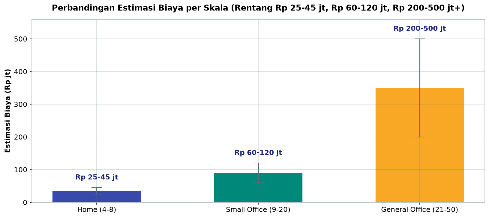
4. Load Pattern Analysis
Perancangan kapasitas yang tepat dimulai dari memahami kapan dan bagaimana sistem dipakai. Data load pattern kantor harus dianalisis sebelum memilih GPU, karena kesalahan membaca pola ini berujung pada over-provisioning (membeli kapasitas yang tidak terpakai) atau under-provisioning (antrean panjang di jam sibuk).
Jam puncak (peak hours) terkonsentrasi pada dua jendela: 08:00-11:00 dan 13:00-16:00 — jam kerja standar ketika semua departemen aktif. Sebaliknya, antara 20:00-06:00 sistem nyaris sepi (near-zero). Kurva beban harian ini berbentuk dua punuk (bimodal), bukan garis datar — dan justru bentuk inilah yang membuat auto-scaling sangat menguntungkan: kapasitas penuh hanya dibutuhkan sekitar 6-8 jam dari 24 jam, sisanya bisa dipangkas.
Komposisi query juga khas kantor. Sekitar 40% trafik adalah RAG (Retrieval-Augmented Generation) atas dokumen internal — kontrak, SOP, kebijakan HR — yang menuntut vektor database dan konteks dokumen panjang. 30% adalah coding assistant untuk tim engineering. 20% adalah data analysis — karyawan meminta merangkum laporan keuangan atau membandingkan spreadsheet. Sisanya 10% adalah general use (menulis surat, menyusun email, brainstorming).
Karakter query di skala ini berbeda jauh dari skala home: prompt berukuran 500-2000 token (dokumen lampiran, transkrip rapat), bersifat multi-turn conversation (percakapan bolak-balik yang menahan context window terus terbuka), dan berorientasi analitis — bukan sekadar tanya-jawab pendek. Dampaknya terhadap perancangan jelas: model harus menyediakan context window besar, KV cache harus dikelola efisien, dan latensi antar-turn harus tetap di bawah ambang SLA meskipun percakapan berjalan panjang. Konkurensi puncak 5-15 user simultan dengan burst hingga 25 saat meeting bersama, dan setiap permintaan mengonsumsi VRAM — itulah sebabnya perhitungan kebutuhan GPU di Bab 8.2 selalu menyertakan faktor pengali konkurensi.
Grafik line chart beban harian menampilkan sumbu X jam 00:00-23:59 dan sumbu Y jumlah request per jam. Dua puncak terlihat jelas — 08:00-11:00 dan 13:00-16:00 — sementara kurva menukik mendekati nol pada 20:00-06:00. Pola tersebut dirangkum dalam diagram berikut:
Pembelajaran operasional dari grafik ini: jadwalkan maintenance dan rolling update pada jendela near-zero, gunakan jendela yang sama untuk cron job pemeliharaan vektor database, dan atur cooldown HPA agar pod tidak naik-turun pada transisi jam makan siang.
5. Arsitektur High-Level
Jika empat pilar di atas adalah "apa", maka bagian ini adalah "bagaimana". Arsitektur general office terdiri dari lima lapisan yang tersusun seperti piramida, dan setiap lapisan memiliki strategi redundansinya sendiri:
- Load Balancer (HAProxy/Nginx) — pintu masuk tunggal semua trafik. Berjalan active-active di dua node dengan virtual IP yang dijaga keepalived.
- API Gateway (LiteLLM/Kong) — gerbang kebijakan: rate limiting, cost tracking, routing ke model yang tepat, dan autentikasi. Berjalan sebagai tiga replika active-active sehingga kegagalan satu replika tidak terasa sama sekali (failover < 1 detik).
- LLM Cluster (K3s) — inti komputasi: dua atau lebih node GPU yang menjalankan vLLM. Strategi active-passive: satu node melayani beban utama, node lain siap mengambil alih dalam waktu kurang dari 30 detik.
- Storage Layer — tiga sistem yang saling melengkapi: MinIO untuk objek (bobot model, dokumen), Qdrant untuk vektor (basis data RAG dengan replication factor 3), dan PostgreSQL Patroni untuk metadata dan audit log.
- Observability — Prometheus, Grafana, dan Loki yang memantau kesehatan setiap lapisan, mengumpulkan metrik SLA, dan memicu alert.
Arah aliran data bersifat satu arah dari atas ke bawah — pengguna → balancer → gateway → klaster → storage — sementara lapisan observability mengintip semua lapisan dari samping tanpa menjadi bagian jalur kritis. Health check dijalankan setiap 5 detik di seluruh lapisan, dan auto-failover ditargetkan selesai dalam waktu kurang dari 30 detik. Detail interkoneksi ini divisualisasikan pada Gambar 8.1-3 di seksi 5 (Arsitektur High-Level).
Diagram ini memperlihatkan satu prinsip utama: setiap panah tebal (aliran data) selalu memiliki jalur alternatif. Perhatikan dua ISP yang sama-sama menuju HAProxy, tiga replika LiteLLM yang saling bercabang ke node GPU, dan storage yang menerima aliran dari semua node. Sementara itu, lapisan Observability (panah putus-putus) tidak pernah berada dalam jalur data — ia hanya mengawasi. Inilah perbedaan fundamental arsitektur enterprise: dalam sistem home, Prometheus mungkin tidak ada sama sekali; di sini, kegagalan satu komponen tidak pernah memutus rantai permintaan, dan kegagalan apa pun langsung terlihat di dashboard.
6. Compliance & Regulatory
Pilar yang sering terlupakan ketika membahas kinerja adalah kewajiban hukum. Sistem LLM general office memproses data pribadi karyawan dalam skala yang cukup besar — dan itu menarik perhatian tiga kerangka regulasi sekaligus. ISO 27001 menuntut sistem manajemen keamanan informasi dengan bukti terdokumentasi, yang diwujudkan lewat audit trail dan kontrol akses; GDPR (jika perusahaan punya eksposur Uni Eropa) menuntut hak data subject dan akuntabilitas pemrosesan; dan khusus untuk Indonesia, UU Pelindungan Data Pribadi (UU No. 27 Tahun 2022) mewajibkan pemroses data menjaga kerahasiaan dan akuntabilitas.
Dua kebijakan teknis yang harus ditegakkan. Pertama, data residency: seluruh data LLM — dokumen, embeddings, prompt, hasil — wajib berada di server on-premise atau cloud lokal Indonesia (misalnya region Jakarta), karena mengirim data ke luar negeri tanpa dasar hukum berarti melanggar UU PDP. Kedua, retention policy: log sistem disimpan minimal 1 tahun (untuk kepentingan audit dan investigasi), sementara prompt disimpan 90 hari. Setelah masa itu, data dimusnahkan secara otomatis. Kebijakan inilah yang kemudian diterjemahkan menjadi konfigurasi teknis — TTL di Loki, cleanup job di PostgreSQL, dan data classification di LiteLLM.
Tabel 8.3: Komponen Redundansi
| Layer | Komponen | Redundansi Strategi | Failover Time |
|---|---|---|---|
| Network | Dual ISP + BGP | Active-active | < 5 detik |
| Load Balancer | HAProxy (2 node) | Active-passive (keepalived) | < 10 detik |
| API Gateway | LiteLLM (3 replica) | Active-active | < 1 detik |
| LLM Inference | vLLM (2+ node GPU) | Active-passive | < 30 detik |
| Storage (Vector DB) | Qdrant cluster | Replication factor 3 | < 60 detik |
| Database | PostgreSQL Patroni | Streaming replication | < 30 detik |
Bacaan penting dari tabel ini: failover time terkumpul secara berurutan, bukan paralel. Jika GPU mati (30 detik) lalu Qdrant kehilangan satu replika (60 detik berikutnya), total waktu pemulihan bisa menembus hitungan menit. Karena itu, urutan prioritas optimasi adalah: pastikan lapisan yang paling sering gagal (storage dan inference, yang punya komponen bergerak paling banyak) memiliki recovery time terendah, dan jangan pernah menaruh dua titik kegagalan potensial dalam satu jalur kritis. Strategi active-active lebih dipilih ketika failover harus tanpa jeda (LB, gateway, jaringan), sementara active-passive cukup untuk lapisan yang boleh menunda beberapa detik (inference) [3][4].
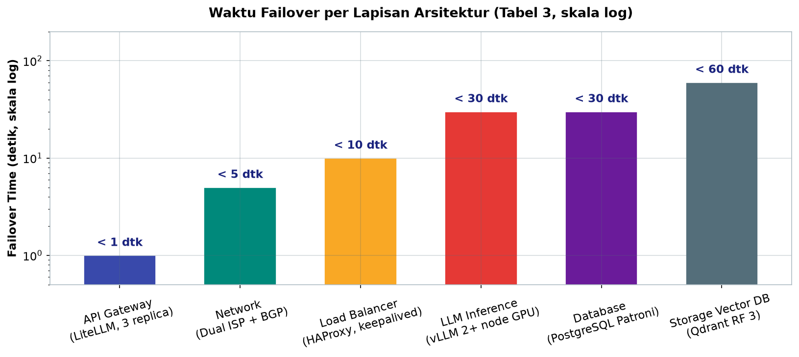
Gambar 3: Dashboard Grafana SLA Monitoring
Dashboard Grafana menampilkan lima panel inti sebagai cockpit pemantauan: Uptime, TTFT, Throughput, Error Rate, dan Active Sessions. Tata letak ini bukan kebetulan — kelima metrik itu menjawab pertanyaan manajerial yang berbeda: "apakah sistem hidup?" (uptime), "apakah terasa lambat?" (TTFT), "apakah kapasitas cukup?" (throughput), "apakah ada yang rusak?" (error rate), dan "apakah perusahaan sedang ramai?" (active sessions). Satu dashboard yang merangkum kelima panel ini seharusnya menjadi homepage monitor: ketika SLA melanggar, alert Prometheus (disusun pada Langkah 2) memicu notifikasi sebelum karyawan sempat mengeluh.
7. Praktikum / Hands-On
Langkah 1: Setup HAProxy untuk Load Balancing LLM Gateway
Langkah pertama membuat pintu masuk redundan: HAProxy dengan tiga server backend LiteLLM. Konfigurasi ini juga berisi health check HTTP yang menentukan kapan sebuah replika dianggap mati.
# /etc/haproxy/haproxy.cfg
global
log /dev/log local0
maxconn 4096
user haproxy
group haproxy
defaults
log global
mode http
timeout connect 5000ms
timeout client 50000ms
timeout server 50000ms
frontend llm_frontend
bind *:443 ssl crt /etc/ssl/certs/llm.pem
bind *:80
redirect scheme https if !{ ssl_fc }
default_backend llm_backend
backend llm_backend
balance roundrobin
option httpchk GET /health
server litellm-1 10.0.1.10:4000 check fall 3 rise 2
server litellm-2 10.0.1.11:4000 check fall 3 rise 2
server litellm-3 10.0.1.12:4000 check fall 3 rise 2Perhatikan parameter fall 3 rise 2: server dinyatakan mati setelah tiga kali gagal health check, dan kembali melayani setelah dua kali sukses. Angka ini menjaga keseimbangan antara responsiveness (jangan menunggu terlalu lama mendeteksi kematian) dan stabilitas (jangan mematikan server hanya karena satu timeout). Balance roundrobin memastikan ketiga replika LiteLLM terpakai merata — sesuai dengan strategi active-active pada Tabel 8.3 yang menargetkan failover di bawah 1 detik.
Langkah 2: Setup Prometheus Alert untuk Uptime Monitoring
Setelah pintu masuk siap, pasang early warning system. Tiga aturan alert berikut melindungi tiga metrik SLA kritis sekaligus: ketersediaan instance, latensi P99, dan kesehatan GPU.
# prometheus-alerts.yml
groups:
- name: llm_alerts
rules:
- alert: InstanceDown
expr: up{job="litellm"} == 0
for: 10s
labels:
severity: critical
annotations:
summary: "LiteLLM instance {{ $labels.instance }} down"
- alert: HighLatency
expr: histogram_quantile(0.99, rate(
litellm_request_duration_seconds_bucket[5m])) > 3
for: 1m
labels:
severity: warning
annotations:
summary: "P99 latency > 3 detik"
- alert: GPUUtilizationHigh
expr: nvidia_gpu_utilization > 95
for: 5m
labels:
severity: warningAturan HighLatency adalah terjemahan langsung SLA Tabel 8.1: alert berbunyi ketika kuantil 99 latensi melewati 3 detik selama satu menit — bukan lonjakan sesaat. Sedangkan GPUUtilizationHigh (> 95% selama 5 menit) adalah isyarat dini: alih-alih menunggu antrean menumpuk, aturan ini memberi tahu operator bahwa kapasitas GPU mendekati batas, sehingga keputusan scale-out bisa diambil proaktif.
Langkah 3: Simulasi Beban 25 User Bersamaan
Terakhir, uji pegas. Skrip Python berikut mensimulasikan burst 25 pengguna simultan dengan campuran tipe query yang mencerminkan komposisi nyata kantor: analisis keuangan, draft kontrak, review kode, dan ringkasan dokumen legal.
# load_test_general_office.py
import aiohttp
import asyncio
import time
ENDPOINT = "https://llm.kantor.com/v1/chat/completions"
API_KEY = "sk-xxx"
prompts = [
"Analisa laporan keuangan Q3 2025: " + "data "*100,
"Buatkan draft kontrak kerjasama dengan PT ABC: " + "data "*150,
"Review kode Python berikut untuk bug: " + "def foo()"*50,
"Ringkas dokumen legal 20 halaman ini: " + "legal "*200,
]
async def send(session, idx, prompt):
start = time.time()
# Gunakan model campuran: 70B untuk analisa, MoE 284B untuk konteks panjang
model = "deepseek-v4-flash" if len(prompt) > 2000 else "llama-3.1-70b"
async with session.post(ENDPOINT, json={
"model": model,
"messages": [{"role": "user", "content": prompt}],
"max_tokens": 512
}) as resp:
elapsed = time.time() - start
print(f"[User {idx} - {model}] {elapsed:.2f}s — status {resp.status}")
async def main():
async with aiohttp.ClientSession() as session:
tasks = []
for i in range(25):
p = prompts[i % len(prompts)]
tasks.append(send(session, i, p))
await asyncio.gather(*tasks)
asyncio.run(main())Perhatikan logika pemilihan model pada baris model = "deepseek-v4-flash" if len(prompt) > 2000 else "llama-3.1-70b": prompt panjang (di atas 2000 karakter) diarahkan ke DeepSeek V4 Flash yang memiliki konteks 1 juta token — cocok untuk dokumen legal — sementara prompt pendek-analitis memakai model 70B. Routing berbasis karakteristik query seperti inilah yang dimanfaatkan oleh API gateway LiteLLM secara otomatis di produksi. Jalankan skrip, amati apakah TTFT P99 tetap di bawah 3 detik, dan periksa apakah HPA menambah pod — itu adalah ujian lulus-tidak-lulusnya Tabel 8.1.
8. Studi Kasus: PT Karya Digital — General Office 35 Karyawan
Profil. PT Karya Digital adalah startup teknologi dengan 35 karyawan: Engineering 15, Operations 10, Finance 5, dan Legal 5. Mereka butuh AI asisten untuk empat tugas inti: coding assistant untuk engineer, analisis kontrak untuk legal, review laporan keuangan untuk finance, dan knowledge base HR untuk operasional. Keputusan pertama mereka: semua data harus berada di server sendiri, karena kontrak vendor dan laporan keuangan tidak boleh keluar kantor.
Arsitektur terpilih. Tim IT memilih 2 node GPU: H100 80GB + L40S 48GB yang berjalan active-active — H100 menangani inference berat (Mistral Large 3 untuk coding), L40S menangani query throughput-tinggi model kecil. Keduanya dikelola K3s cluster 3 node (2 worker GPU + 1 control plane). Di depannya berdiri LiteLLM proxy untuk rate limiting dan cost tracking, serta HAProxy dual-node dengan keepalived. Stack model: DeepSeek V4 Flash (konteks 1 juta token, lisensi MIT) untuk analisis dokumen panjang — kontrak dan laporan keuangan — dan Mistral Large 3 (Apache 2.0) untuk coding assistant. RAG dibangun di atas Qdrant vector DB + PostgreSQL.
Hasil. Dalam 6 bulan pertama, sistem mencapai 99,997% uptime — total downtime hanya sekitar 13 menit, dan dua kali failover terjadi tanpa downtime yang dirasakan karyawan: ketika satu node GPU dimatikan untuk pergantian pendingin, LiteLLM mengalihkan trafik ke node cadangan dalam hitungan detik, dan pengguna hanya merasakan satu-dua request yang sedikit lebih lambat. Kasus ini membuktikan poin penting Tabel 8.3: failover yang direncanakan dan diuji rutin terasa "hampa" bagi pengguna.
Biaya dan penghematan. Investasi awal Rp 350 juta (hardware Rp 280 juta, setup Rp 50 juta, lisensi Rp 20 juta). Sebagai pembanding: ChatGPT Enterprise untuk 35 karyawan dengan harga sekitar $60 per user per bulan membutuhkan $2.100 per bulan — sekitar Rp 33 juta per bulan. Dengan perhitungan ini, investasi balik modal dalam 15 bulan, dan setelah itu seluruh biaya menyusut menjadi biaya listrik dan maintenance. Di sinilah argumen ekonomi general office on-premise berdiri paling kokoh: untuk skala 21-50 user, kepemilikan aset menghasilkan payback period kurang dari dua tahun, sementara menyisakan data tetap di dalam kendali perusahaan.
9. Referensi
Paper Jurnal/Konferensi
[1] Wang, B., et al. (2025). xLLM: High-performance and Intelligent LLM Inference Framework for Enterprise-grade Serving. arXiv: 2510.14686 (https://arxiv.org/abs/2510.14686), DOI: 10.48550/arXiv.2510.14686 (https://doi.org/10.48550/arXiv.2510.14686) — arsitektur decoupled service-engine dengan fault tolerance dan manajemen distributed KV cache; menjadi dasar verifikasi target SLA pada Tabel 8.1.
[2] Hao, S., et al. (2025). SLOs-Serve: Serving LLM Applications with Multi-SLOs and Dynamic Request Routing. arXiv: 2504.08784 (https://arxiv.org/abs/2504.08784), DOI: 10.48550/arXiv.2504.08784 (https://doi.org/10.48550/arXiv.2504.08784) — per-stage SLO management dan optimasi kapasitas serving per GPU; rujukan untuk menyusun target SLA bertingkat.
[3] Strati, F., McAllister, S., Phanishayee, A., Tarnawski, J., & Klimovic, A. (2024). DéjàVu: KV-cache Streaming for Fast, Fault-tolerant Generative LLM Serving. Proceedings of ICML. arXiv: 2403.01876 (https://arxiv.org/abs/2403.01876), DOI: 10.48550/arXiv.2403.01876 (https://doi.org/10.48550/arXiv.2403.01876) — state replication untuk fault tolerance dengan recovery time minimal; dasar angka failover time pada Tabel 8.3.
[4] Sun, B., et al. (2024). Llumnix: Rescheduling LLM Serving for Heterogeneous and Unpredictable Requests. Proceedings of USENIX OSDI. arXiv: 2409.01234 (https://arxiv.org/abs/2409.01234), DOI: 10.48550/arXiv.2409.01234 (https://doi.org/10.48550/arXiv.2409.01234), PDF (https://www.usenix.org/system/files/osdi24-sun-biao.pdf) — live migration antar instance GPU untuk load balancing dan fault tolerance; relevan untuk strategi redundansi pada seksi 3.
[5] Mao, Z., et al. (2024). SkyServe: Serving AI Models across Regions and Clouds with Spot Instances. arXiv: 2411.01438 (https://arxiv.org/abs/2411.01438), DOI: 10.48550/arXiv.2411.01438 (https://doi.org/10.48550/arXiv.2411.01438) — high availability dengan campuran spot dan on-demand replicas; rujukan verifikasi biaya dan availability pada Tabel 8.2 dan 3.
Referensi Pendukung (Dokumentasi/Repository)
[6] Kubernetes. Official Documentation — Horizontal Pod Autoscaler. https://kubernetes.io/docs/tasks/run-application/horizontal-pod-autoscale/
[7] HAProxy. Official Documentation. https://www.haproxy.org/documentation
[8] LiteLLM. AI Gateway Documentation. https://docs.litellm.ai
[9] Prometheus. Alerting Rules. https://prometheus.io/docs/prometheus/latest/configuration/alerting_rules/
[10] Indonesia. (2022). Undang-Undang Nomor 27 Tahun 2022 tentang Pelindungan Data Pribadi. https://peraturan.go.id/id/uu-no-27-tahun-2022
[11] DeepSeek Team. (2026). DeepSeek-V4 Flash: Efficient Open MoE for Enterprise Deployment. https://api-docs.deepseek.com — model konteks 1 juta token dengan lisensi MIT; ideal untuk pemrosesan dokumen panjang di general office. — ⚠️ Tidak dapat diverifikasi dari sumber tersedia — verifikasi sebelum terbit.
[12] Anthropic. (2026). Claude Fable 5: Safety-Classifier Enhanced Language Model. https://anthropic.com — model dengan safety classifiers built-in dan konteks 1 juta token; alternatif untuk kantor dengan kebutuhan compliance tinggi. — ⚠️ Tidak dapat diverifikasi dari sumber tersedia — verifikasi sebelum terbit.
Bab 8.2: Hardware
Membeli GPU untuk general office bukanlah sekadar memilih kartu grafis tercepat, melainkan memecahkan teka-teki ekonomi: model mana yang harus dijalankan, berapa banyak karyawan yang dilayani secara simultan, dan berapa total biaya kepemilikan selama tiga tahun. Di bab ini kita membuka kotak spesifikasi A100, H100, dan L40S, menghitung kebutuhan VRAM dengan teliti, membandingkan arsitektur single-node versus multi-node, dan menutupnya dengan perhitungan TCO yang jujur — karena keputusan hardware yang salah akan hadir sebagai tagihan listrik dan antrean panjang selama bertahun-tahun ke depan. Setelah bab ini, bahasa "GPU 80 GB", "Q4_K_M", dan "25 GbE interconnect" tidak lagi menjadi teka-teki, melainkan alat tawar-menawar di meja pengadaan.
1. Tujuan Sub-Bab
Setelah membaca bab ini, Anda akan mampu:
- Membedakan NVIDIA A100, H100, dan L40S secara teknis — arsitektur, VRAM, memory bandwidth, dan throughput — dalam konteks inference LLM, bukan training
- Menentukan kapan arsitektur single-node sudah cukup dan kapan harus beralih ke cluster multi-node
- Menghitung kebutuhan VRAM per model dan per tingkat konkurensi user menggunakan formula yang teruji
- Menyusun konfigurasi GPU yang cocok untuk tiga profil kantor: budget (21-30 user), standard (31-40 user), dan premium (41-50 user)
- Menghitung TCO (Total Cost of Ownership) 3 tahun yang mencakup listrik, cooling, maintenance, dan lisensi — bukan hanya harga GPU
- Mengidentifikasi komponen pendukung yang sering dilupakan: CPU, RAM, storage NVMe RAID 10, jaringan 25/100 GbE, rack, dan UPS
2. Konsep Dasar GPU Inference Server
Sebelum menyentuh spesifikasi, satu kesalahpahaman umum harus diluruskan: LLM inference berbeda fundamental dari training. Training dibebani compute (matematika floating-point yang masif), sedangkan inference — menyalakan model untuk melayani prompt — dibatasi oleh memory bandwidth: kecepatan GPU membaca bobot model dari VRAM untuk setiap token yang dihasilkan. Sebuah GPU dengan TFLOPS tinggi tetapi bandwidth rendah akan menghasilkan token dengan lambat, seperti pustakawan yang sangat pintar tetapi harus berjalan jauh setiap kali mengambil sebuah buku. Inilah sebabnya pada tabel perbandingan di seksi 2, kolom memory bandwidth dan VRAM lebih menentukan daripada kolom TFLOPS.
Konsekuensi kedua dari karakteristik ini: efisiensi batching lebih berharga daripada kecepatan kartu. Karena decode token berjalan sekuensial, satu GPU yang melayani satu request sambil menganggur di antara token adalah pemborosan murni — kartu itu tidak terpakai 60-80% waktunya. Teknik continuous batching (yang diimplementasikan vLLM via PagedAttention [2]) memanfaatkan celah ini dengan mengerjakan banyak request dalam satu kartu secara bergantian token per token. Implikasi praktisnya bagi sizing: throughput kartu ditentukan oleh concurrency yang bisa ditampungnya, dan concurrency itu dibatasi VRAM — memutar lagi ke tema bandwidth + VRAM sebagai dua sumbu keputusan pembelian.
Untuk skala general office 21-50 user, kebutuhan throughput berkisar 500-2000 request per jam dengan model berukuran 7B-70B — jauh di bawah kapasitas penuh sebuah GPU enterprise, tetapi menuntut stability dan concurrency yang kokoh. Setiap user simultan menyimpan context sendiri di VRAM, sehingga bukan sekadar kecepatan menghasilkan token yang penting, melainkan juga berapa banyak percakapan yang bisa hidup bersamaan dalam satu VRAM 80 GB.
Sebuah teknik kalkulasi cepat yang dipakai konsultan infra: kalikan jumlah jam kerja efektif (sekitar 6-8 jam per hari, sesuai pola beban Bab 8.1) dengan request per jam, lalu bagi dengan jam tersedia untuk mendapatkan average request rate per menit. Kantor 30 user dengan 1.000 request per jam di jam sibuk berarti ±17 request per menit — dan dengan response rata-rata 15 detik, jumlah request yang "hidup" secara bersamaan di sistem hanyalah ±4-5. Perhitungan sederhana ini langsung menjawab pertanyaan "berapa GPU yang kubutuhkan?" lebih akurat daripada menebak dari jumlah karyawan, dan menjadi titik masuk ke seksi 4 (perhitungan VRAM).
Batasan throughput ini juga menerjemahkan menjadi bahasa teknis yang sederhana: general office tidak membutuhkan frontier cluster berbiaya miliaran, tetapi membutuhkan ketepatan ukuran (right-sizing). Sebuah kartu H100 yang menjalankan model FP8 mampu menghasilkan ratusan ribu token per menit, tetapi kapasitas itu sia-sia bila antrean dipersempit oleh rate limiter atau context window yang kurang. Di sisi lain, meremehkan kebutuhan berarti karyawan menatap layar "memuat" di jam sibuk — dan setiap detik menunggu adalah biaya gaji yang menguap.
Dari titik ini muncul dua arsitektur yang akan diuji sepanjang bab: single-node multi-GPU — satu server fisik berisi 4-8 GPU yang saling terhubung NVLink — dan multi-node single-GPU — dua hingga empat server, masing-masing berisi satu-dua GPU, yang diorkestrasi oleh Kubernetes. Keduanya punya pengusungnya masing-masing; seksi 5 akan mengupas kapan memilih yang mana. Sebelum melangkah lebih jauh, mari kita kenali dulu ketiga kandidat GPU-nya — karena keputusan arsitektur pada akhirnya ditentukan oleh karakter kartu yang dipilih.
Tabel 8.4: Perbandingan GPU Spesifikasi
| Spesifikasi | NVIDIA A100 80GB | NVIDIA H100 80GB | NVIDIA L40S 48GB |
|---|---|---|---|
| Arsitektur | Ampere (2020) | Hopper (2022) | Ada Lovelace (2023) |
| VRAM | 80 GB HBM2e | 80 GB HBM3 | 48 GB GDDR6 |
| Memory Bandwidth | 2,0 TB/s | 3,35 TB/s | 864 GB/s |
| FP32 TFLOPS | 312 | 989 | 568 |
| FP8 TFLOPS | 624 | 1,979 | 1,138 |
| Interconnect | NVLink 3 (600 GB/s) | NVLink 4 (900 GB/s) | PCIe 4.0 x16 |
| TDP | 400W | 700W | 350W |
| Harga Pasar (Rp) | ~250-350 jt | ~400-600 jt | ~150-250 jt |
Bacaan penting tabel ini: perhatikan bahwa memory bandwidth tidak berjalan seiring harga. A100 dua kali lebih lebar dari L40S dalam bandwidth (2,0 TB/s vs 864 GB/s) — untuk model 70B, A100 unggul jelas; tetapi untuk model 7B yang muat dalam satu die, perbedaan bandwidth itu nyaris tak terasa, sementara harga L40S setengahnya. Inilah inti trade-off pembelian: beli bandwidth ketika model besar mendominasi; beli kartu murah ketika beban mayoritas adalah model kecil. Jangan pula mengabaikan baris interkoneksi: L40S hanya PCIe 4.0 x16 tanpa NVLink — ia adalah kartu single-GPU independent yang disatu-padukan lewat jaringan, cocok untuk klaster multi-node, bukan untuk tensor parallel dalam satu node [1]. Spesifikasi di atas mengacu pada dokumen arsitektur resmi NVIDIA [1, referensi pendukung] dan benchmark dunia nyata A100 vs H100 vs L40S [5].
3. Profil GPU: A100, H100, dan L40S
NVIDIA A100 (Ampere, 2020)
Peluncuran A100 pada 2020 menandai era data center GPU untuk semua gunanya: 80 GB HBM2e dengan memory bandwidth 2 TB/s, compute 312 TFLOPS FP32 (624 TFLOPS FP8), dan interkoneksi NVLink 3 hingga 600 GB/s. Di tahun 2026, A100 berusia enam tahun dan kini berstatus opsi budget — harga barunya turun seiring masuknya H100 dan B200, dan pasokan GPU bekas sisa cloud provider membuatnya semakin terjangkau. Untuk general office, A100 masih sangat layak: satu kartu 80 GB cukup menampung model 70B dalam kuantisasi Q4_K_M beserta KV cache-nya, dengan TDP 400W yang tidak terlalu menantang ruang server. Kerugiannya: energy efficiency per token lebih buruk daripada generasi berikutnya, dan tidak memiliki Transformer Engine untuk percepatan FP8 yang dimiliki H100.
Dua catatan pembelian untuk kelas A100 second-hand tahun 2026. Pertama, periksa revisi board dan status vBIOS — GPU bekas data center sering dijual tanpa jaminan flash yang baik, dan dua kartu dengan vBIOS berbeda bisa menolak bekerja berdampingan dalam satu server. Kedua, A100 adalah pilihan terbaik di segmennya untuk kantor yang tahun depannya berencana berpindah ke model 70B yang lebih besar — satu-satunya cara mendapatkan kapasitas 70B dengan investasi di bawah Rp 400 juta. Jika tidak ada rencana seperti itu, L40S di bawah adalah pembelanjaan rupiah yang lebih disiplin.
Ringkas posisi ketiga kartu dalam satu kalimat pengambilan keputusan: A100 untuk model besar dengan anggaran ketat, H100 untuk model besar dengan janji SLA ketat, L40S untuk model kecil dengan volume tinggi.
NVIDIA H100 (Hopper, 2022)
H100 adalah GPU unggulan era Hopper yang mengubah lanskap inference sekaligus training: 80 GB HBM3 dengan bandwidth 3,35 TB/s — 67% lebih lebar dari A100 — ditambah Transformer Engine yang membawa mixed precision FP8 ke level produksi. Efek gabungan keduanya menghasilkan klaim yang dijadikan tolok ukur industri: hingga 7x percepatan inference dibandingkan A100 untuk workload yang mendukung FP8. NVLink 4 (900 GB/s) menghubungkan delapan GPU dalam satu node tanpa hambatan. Dengan TDP 700W, H100 adalah GPU paling haus listrik dalam perbandingan ini, dan harganya (Rp 400-600 juta per kartu) yang membuatnya keputusan strategis: mahal, tetapi paling realistis untuk melayani 50 user dengan model besar seperti Mistral Large 3 atau DeepSeek V4 Pro dalam kuantisasi. Jika memilih H100, pertimbangkan bahwa kemampuan penuhnya baru tercapai bila model dijalankan dalam FP8 — bukan FP16.
Perlu kejujuran di sini: H100 juga adalah GPU yang paling sering "disalahkan" karena harganya. Pada kenyataannya, FOMO membeli H100 untuk kantor 25 user yang 70% bebannya model 7-14B adalah kesalahan klasik — kartu itu akan menganggur 90% waktunya. H100 baru wajib menjadi kandidat ketika (1) model 70B+ menjadi beban mayoritas, (2) konkurensi puncak menembus 25 user, atau (3) perusahaan memproyeksikan pertumbuhan user dalam 2 tahun. Di luar kondisi itu, jawabannya ada di kartu berikut — L40S — atau di H100 bekas milik cloud provider Eropa yang mulai melepas armadanya ke pasar surplus.
NVIDIA L40S (Ada Lovelace, 2023)
L40S mewakili pendekatan yang sepenuhnya berbeda: memaksimalkan harga per token, bukan kekuatan absolut. Dengan 48 GB GDDR6, memory bandwidth 864 GB/s, compute 568 TFLOPS FP32 (1.138 TFLOPS FP8), dan TDP hanya 350W, L40S adalah kartu yang dirancang untuk inference throughput tinggi pada model 7B-14B. Kunci pemahamannya: GDDR6 di L40S jauh lebih lambat daripada HBM di A100/H100, tetapi untuk model kecil yang muat sepenuhnya dalam VRAM, bandwidth itu sudah cukup laju — dan biaya per kartu (Rp 150-250 juta) membuatnya menjadi mesin token dengan biaya per token terendah di kelas ini. Pilihan cerdas bagi kantor yang sebagian besar bebannya adalah model 7B-14B (chat cepat, ringkasan, RAG ringan) dan tidak memerlukan model 70B dalam jumlah besar.
Kesimpulan yang lebih tajam: L40S dan H100 bukanlah pesaing, melainkan mitra dalam satu klaster. Arsitektur khas general office yang sehat justru mencampur keduanya — H100 untuk inference berat model besar (Mistral Large 3, DeepSeek V4 Flash dalam Q4), L40S untuk router berkecepatan tinggi model kecil (Ministral 3 14B, Llama 8B) yang menyerap sebagian besar trafik harian. Pola tiered serving seperti ini memaksimalkan biaya per token keseluruhan: query mahal dilayani kartu mahal, query murah dilayani kartu murah — dan tagihan listrik bulanan tetap terkendali karena L40S menyerap beban dengan TDP separuh H100.
4. Perhitungan Kebutuhan VRAM
Merancang kapasitas dimulai dari satu pertanyaan: berapa GB VRAM yang dibutuhkan sebuah model pada tingkat konkurensi tertentu? Rumusnya terdiri dari tiga komponen: ukuran bobot model (sesuai kuantisasi), KV cache per context, dan faktor pengali untuk konkurensi.
Angka dasar yang dipakai di seluruh buku ini:
- Model 7B FP16: bobot ±14 GB + KV cache ±2 GB = ±16 GB — muat dalam satu L40S 48 GB
- Model 13B Q4_K_M: bobot ±7 GB + KV cache ±3 GB = ±10 GB — sangat hemat; hampir setengah VRAM L40S masih tersisa untuk batching
- Model 70B Q4_K_M: bobot ±38 GB + KV cache ±8 GB = ±46 GB — inilah alasan mengapa A100/H100 80 GB menjadi standar: model 70B kuantisasi muat di satu kartu dengan sisa ruang untuk prefill dan batching
Komponen yang paling sering diremehkan adalah faktor konkurensi. KV cache hidup selama percakapan berlangsung, sehingga satu user aktif memakan ruang — bukan hanya saat dia mengetik. Aturan praktis: 1 user simultan membutuhkan 1,5-2x VRAM model saja, dan 10 user konkuren membutuhkan 4-6x. Dengan kata lain, 70B Q4_K_M (46 GB dasar) pada 10 user konkuren bisa menuntut lebih dari 180 GB VRAM — di sanalah perbedaan antara 1 kartu 80 GB dan 2 kartu 80 GB menjadi keputusan hidup-mati. Abaikan faktor ini, dan sistem yang tampak "cukup" di kertas akan out of memory pada Selasa pagi pertama.
Mari kerjakan satu contoh lengkap untuk kantor 35 user dengan peak concurrency 15 (Bab 8.1). Asumsi: 40% trafik adalah RAG atas dokumen panjang (context 8.192 token), 30% coding assistant (context 4.096), 30% sisanya tugas ringan. Untuk model Mistral Large 3 Q4 pada H100 80 GB: bobot ±46 GB, lalu tambahkan KV cache untuk 15 percakapan hidup masing-masing ±8 GB → 120 GB. Total kebutuhan ±166 GB — artinya satu H100 tidak cukup; konfigurasi dua node @ 1x H100 (berbagi beban via klaster) menjadi minimum yang rasional. Sekarang ulangi dengan beban 5 user konkuren: ±86 GB — satu H100 80 GB masih muat dengan squeeze. Di sinilah keputusan hardware berubah total hanya karena membaca pola beban dengan benar: konkurensi, bukan jumlah karyawan, yang menentukan jumlah kartu [2].
Uji kedua untuk beban yang lebih ringan: model Ministral 3 14B Q4 (±9 GB bobot + ±2 GB KV cache per percakapan) pada L40S 48 GB. Dengan peak concurrency 10 di jam sibuk — kantor 25 user yang 60% trafiknya chat cepat — kebutuhan total hanya ±29 GB, muat dengan lega dalam satu L40S, dan sekarat sama sekali belum terasa: vLLM masih bisa batching 8-16 request bersamaan. Bandingkan biayanya: satu L40S (Rp 150-250 juta) menggantikan peran satu H100 (Rp 400-600 juta) untuk seluruh beban ringan kantor. Inilah ilustrasi mengapa tiered serving pada seksi 3 bukan teori: dua L40S + satu H100 seringkali lebih murah dan lebih sesuai daripada tiga H100 untuk kantor yang query-nya didominasi model kecil.
Tabel 8.5: Rekomendasi Konfigurasi per Skenario
| Skenario | GPU | Model & Kuantisasi | Max Concurrent User | Estimasi Biaya |
|---|---|---|---|---|
| Budget (21-30 user) | 2x L40S | DeepSeek V4 Flash Q4 + Qwen3.6-27B Q5_K_M | 15 | Rp 350-450jt |
| Standard (31-40 user) | 2x H100 | Mistral Large 3 Q4 (Apache 2.0) + Ministral 3 14B | 25 | Rp 600-800jt |
| Premium (41-50 user) | 4x H100 | DeepSeek V4 Pro Q4 + Mistral Large 3 Q8 | 35 | Rp 1,2-1,5M |
| Cluster HA | 3x L40S (2 active + 1 standby) | DeepSeek V4 Flash + Mistral Large 3 via vLLM | 30 | Rp 500-650jt |
Tabel ini adalah peta keputusan. Budget menaruh DeepSeek V4 Flash kuantisasi Q4 di atas L40S — strategi MoE (284B total, 13B aktif) membuat memory footprint terkendali sambil menawarkan konteks 1 juta token untuk dokumen panjang; Qwen3.6-27B menangani coding pada L40S kedua. Standard menaikkan kelas ke H100 untuk Mistral Large 3 Q4 (Apache 2.0) dan Ministral 3 14B. Premium masuk zona 4x H100 karena DeepSeek V4 Pro Q4 (1,6T parameter) membutuhkan tensor parallelism antar-GPU berinterkoneksi NVLink — arsitektur yang hanya tersedia di single-node besar [10]. Cluster HA memilih 3x L40S dengan satu unit standby murni — membeli ketenangan pikiran 99,999% uptime dengan menahan satu GPU menganggur, sebuah pilihan yang masuk akal untuk kantor yang lebih takut downtime daripada mahal GPU. Perhatikan: max concurrent user di sini adalah batas nyaman dengan KV cache utuh, bukan batas teoritis.
Empat skenario ini juga mengajarkan pola yang lebih umum: kualitas model dan jumlah user bergerak searah dengan biaya. Kantor yang rela menerima kualitas assistant level (Ministral 3 14B, Qwen3.6-27B) akan membayar setengah dari kantor yang menuntut frontier-level di setiap query (Mistral Large 3, DeepSeek V4 Pro). Tidak ada nilai moral di sini — hanya kesejajaran antara kebutuhan bisnis dan anggaran. Sebuah general office interior design yang jarang menyentuh kode sama sekali tidak pernah membutuhkan konfigurasi Premium, meskipun karyawannya 50 orang; sedangkan software house 25 orang yang mengerjakan code review sepanjang hari justru layak menempuh jalur Standard.
Cara membaca tabel ini sebagai decision tree: pertama tentukan model kelas berat yang wajib dijalankan (jika DeepSeek V4 Pro menjadi syarat, langsung lompat ke skenario Premium; jika Mistral Large 3 cukup, Standard; dan seterusnya). Kedua, cocokkan dengan jumlah user nyata, bukan jumlah karyawan — kantor 50 karyawan dengan hanya 20 yang rutin memakai AI boleh membangun di atas skenario Budget. Ketiga, beri headroom satu langkah bila proyeksi pertumbuhan pengguna aktif lebih dari 30% per tahun. Tabel ini juga menunjukkan bahwa max concurrent user tidak pernah sebanding linear dengan jumlah kartu: dari 2x L40S (15 user) ke 4x H100 (35 user), GPU berlipat dua tetapi user hanya naik 2,3x — karena model yang dijalankan ikut membesar. Memilih model dulu, menghitung user kemudian — itulah urutan yang benar.
Perbandingan token per detik per juta rupiah untuk A100, H100, dan L40S berdasarkan benchmark dunia nyata [5] dapat dilihat pada diagram berikut. Dua kesimpulan yang diharapkan dari perbandingan ini: L40S unggul di cost efficiency — token termurah per rupiah untuk beban model kecil — sementara H100 unggul di raw performance — token terbanyak per detik mutlak. A100 duduk di tengah: bukan yang tercepat, bukan yang termurah, tetapi pembelian second-hand yang berharga untuk kantor dengan anggaran terbatas yang tetap ingin menjalankan model 70B.
Cara memakai perbandingan ini saat bernegosiasi dengan budget holder: jangan mulai dari harga kartu, tetapi dari biaya per 1 juta token yang dihasilkan selama 3 tahun. Angka itulah yang membuat pembelian H100 untuk beban berat dan L40S untuk beban ringan terdengar masuk akal — bukan sebagai "GPU mahal", melainkan sebagai "token murah". Sebaliknya, memakai satu L40S untuk beban yang seharusnya H100 akan tampak jelas sia-sia dalam grafik yang sama: token per rupiahnya anjlok karena antrean membatasi utilisasi kartu.
5. Cluster Multi-Node vs Single-Node
Dua jalan menuju kapasitas. Single-node (4-8 GPU) — biasanya server dual-socket seperti Dell R760xa dengan GPU yang saling terhubung NVLink — menawarkan latency terendah karena komunikasi antar-GPU berjalan di 900 GB/s, dan software stack lebih sederhana (satu OS, satu hypervisor). Kelemahannya klasik: single point of failure. Satu PSU mati, satu motherboard rusak, maka delapan GPU ikut mati — dan downtime GPU seharga miliaran rupiah itu sangat menyakitkan.
Multi-node (2-4 node, masing-masing 1-2 GPU) mengorbankan sebagian latency (komunikasi antar-node melewati jaringan 25/100 GbE, bukan NVLink) demi dua keuntungan besar: resilience — satu node mati, node lain tetap melayani; dan scalability horisontal — menambah kapasitas sesederhana memasang satu server baru ke dalam klaster K3s, tanpa menyentuh yang lama. Bagi general office yang mengejar 99,999% uptime (Bab 8.1), karakteristik ini adalah ajang kemenangan.
Perbandingan kedua arsitektur juga menyentuh lapisan yang lebih halus: operational blast radius. Dalam single-node, satu kernel panic berarti delapan GPU mati sekaligus — dan investigasi root cause harus menyisir satu mesin raksasa. Dalam multi-node, kegagalan terisolasi per node; pod vLLM yang mati di-reschedule oleh K3s ke node sehat dalam hitungan detik, sementara operator menyelidiki server bermasalah tanpa tekanan lalu lintas. Bagi tim IT kantor yang umumnya kecil (1-3 orang), blast radius kecil ini bernilai luar biasa — mereka jarang mendapat maintenance window panjang seperti data center operator.
Rekomendasi buku ini untuk 21-50 user: 2 node @ 1x H100 atau L40S — bukan 1 node @ 2 GPU, bukan pula 4 node kecil-kecil. Dua node memberi redundansi GPU minimum yang diminta pilar arsitektur (Bab 8.1), sementara tetap menjaga kompleksitas jaringan dan biaya interkoneksi tetap rendah. Sedangkan single-node multi-GPU tetap punya tempat: hanya untuk workload yang membutuhkan tensor parallelism antar-GPU berlatensi sangat rendah, seperti DeepSeek V4 Pro dalam FP8 — kasus yang dibahas pada konfigurasi Premium.
Ringkas perbandingannya: single-node membeli kecepatan, multi-node membeli ketenangan. Kantor yang melayani klien eksternal dengan janji SLA 99,9%+ tidak punya pilihan selain multi-node — nama baik lebih mahal daripada latency 5 milidetik. Kantor yang beban AI-nya non-kritis (misalnya hanya asisten internal) boleh mulai dari single-node dengan catatan eksplisit: recovery time objective (RTO) mereka dihitung dalam satuan hari, bukan detik. Keputusan ini harus ditulis sebagai kebijakan tertulis, karena menentukan seluruh biaya cooling, listrik, dan maintenance tiga tahun ke depan.
Diagram ini menggambarkan rekomendasi utama bab ini: dua node GPU worker dengan spesifikasi simetris (EPYC 32C, H100 80GB, 256GB DDR5, 2TB NVMe RAID 10) terhubung melalui switch 25GbE, ditambah satu node control dan storage (Xeon 16C, 128GB, 4x 4TB NVMe RAID 10) yang menampung bobot model bersama. Perhatikan baris NVME1 --- STORAGE dan NVME2 --- STORAGE: model disimpan sekali di storage bersama dan dipasang ke kedua node (shared storage), sehingga ketika satu worker mati, kawan-nya langsung memuat model dari lokasi yang sama tanpa re-sync. Panah GPU1 <-- NVLink --> GPU2 menandakan bahwa dalam satu node (bila memasang 2 GPU), NVLink 4 menghubungkan kartu pada 900 GB/s [1]; antardua node yang berbeda, komunikasi berjalan lewat switch. Baris UPS --- SWITCH menggambarkan peran UPS yang menaungi seluruh rack — power loss pendek adalah penyebab paling umum downtime di kantor general office, dan UPS 3000VA adalah keputusan arsitektural, bukan aksesori.
Ada satu detail yang sengaja tidak digambar: koneksi internet. Node inference tidak memerlukan akses internet berkelanjutan — model sudah berada di storage lokal — dan justru lebih aman tanpa koneksi keluar, karena ini mempersempit permukaan serangan (Bab 8.5). Jika internet diperlukan (misalnya untuk telemetry atau pembaruan model), arahkan lewat proxy terkontrol. Dengan kata lain, diagram di atas adalah diagram sebuah kantor yang sovereign: seluruh siklus hidup model — penyimpanan, pemuatan, inference — berjalan di dalam perimeter fisik perusahaan sendiri.
6. Komponen Pendukung
GPU adalah bintang, tetapi tanpa pengiring yang tepat, bintang itu tidak akan naik panggung. Berikut komponen pendukung yang wajib dianggarkan bersama GPU:
- CPU: AMD EPYC atau Intel Xeon, minimal 16 core — untuk mesin GPU worker, 32 core (misalnya AMD EPYC 32C) adalah pilihan aman karena runtime vLLM, tokenizer, dan scheduler ikut menumpang
- RAM: 256-512 GB DDR5 per node GPU — model di-load penuh ke VRAM, tetapi prefetch bobot, KV cache CPU offload (Mooncake-style [4]), dan prefill berjalan lewat RAM
- Storage: NVMe RAID 10 sebesar 2-4 TB untuk menyimpan bobot model dan checkpoint — RAID 10 dipilih karena menggabungkan kecepatan dan ketahanan disk
- Network: 25/100 GbE untuk interconnect antar-node di klaster multi-node; 25 GbE adalah baseline, 100 GbE untuk beban RAG atau tensor parallel
- Rack & listrik: rack 42U, UPS 3000VA, dan kapasitas cooling 10-15 kW — TDP tiga GPU plus CPU server dengan mudah melewati 2 kW, dan ruang server biasa tanpa AC khusus akan meleleh
Sebuah catatan praktis tentang urutan pembelian: komponen pendukung harus dipesan lebih dulu daripada GPU — bukan sebaliknya. Alasannya logistik murni: GPU enterprise membutuhkan power connector khusus (8-pin EPS pada H100), server NVIDIA-Certified tertentu, dan rak dengan airflow depan-belakang. Kantor yang membeli GPU lebih dulu sering menemukan kekurangan ini dua bulan kemudian, saat kartu mahal sudah terlanjur menumpuk di gudang. Urutan yang benar: (1) periksa daya listrik ruangan dan siapkan jalur khusus, (2) pesan rack, UPS, dan AC, (3) pesan server dan storage, (4) baru GPU — dan gunakan masa tunggu GPU untuk menyelesaikan instalasi.
Komponen-komponen ini — bukan GPU-nya — yang sering membengkakkan anggaran di lapangan. Tabel TCO pada seksi 6 memasukkan semuanya, sehingga pembaca tidak akan kaget setelah pembelian.
Satu komponen terakhir yang sering luput dari daftar karena tidak berwujud: waktu setup dan keahlian. Memasang dua node GPU + K3s + vLLM dari nol biasanya memakan 5-10 hari kerja seorang engineer — atau 2-3 hari jika memakai deployment guide terstandardisasi dari vendor (NVIDIA Base Command, Dell OpenManage). Untuk general office yang tidak memiliki DevOps penuh waktu, platform engineering semacam ini bisa di-outsource, dengan catatan: serahkan dokumentasi konfigurasi yang menyeluruh, karena pergantian tim adalah kemungkinan nyata. Anggaran setup ±Rp 50 juta pada studi kasus Bab 8.1 adalah gambaran realistis kelas biaya ini.
Tabel 8.6: TCO 3 Tahun (IDR)
| Komponen Biaya | L40S Dual Node | H100 Dual Node | A100 Quad Node |
|---|---|---|---|
| Hardware | Rp 400jt | Rp 750jt | Rp 1,2M |
| Listrik (3 thn, Rp 1,5k/kWh) | Rp 92jt | Rp 184jt | Rp 315jt |
| Cooling & Rack (3 thn) | Rp 54jt | Rp 72jt | Rp 108jt |
| Maintenance (3 thn) | Rp 60jt | Rp 90jt | Rp 120jt |
| Software/Lisensi | Rp 30jt | Rp 45jt | Rp 60jt |
| Total TCO 3 Tahun | Rp 636jt | Rp 1,14M | Rp 1,8M |
Tabel TCO mengubah cara pandang pembelian GPU. Harga beli H100 dual node hanya sepertiga dari total TCO Rp 1,14 miliar — dua pertiga sisanya adalah biaya hidup (listrik, cooling, maintenance, lisensi). Perhatikan pula perbandingan mengejutkan antara H100 (700W) dan L40S (350W): selisih TDP dua kali lipat memproduksi selisih tagihan listrik dua kali lipat (Rp 184jt vs Rp 92jt) dan selisih cooling yang sejalan. Untuk kantor yang beroperasi di lokasi dengan tarif listrik industri tinggi, L40S bahkan lebih menarik daripada yang terlihat di harga kartu. Satu-satunya koreksi terhadap kesimpulan "pilih yang paling hemat" adalah throughput: jika 25 user membutuhkan H100 (Tabel 8.5, skenario Standard), memaksakan L40S hanya akan menghasilkan antrean — dan biaya karyawan menunggu jauh lebih mahal daripada selisih TCO [5]. Angka-angka di sini bersifat indikatif terhadap harga pasar Indonesia saat penulisan dan wajib divalidasi ulang sebelum keputusan pembelian.
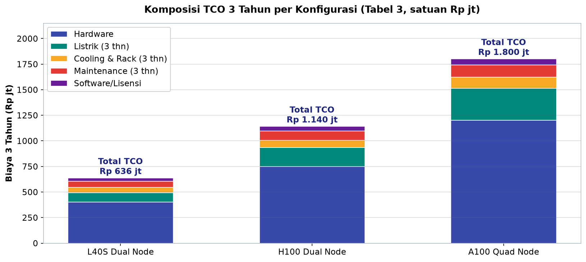
Baca juga apa yang tidak tercantum di tabel TCO: biaya tenaga kerja setup (±Rp 50 juta dalam studi kasus Bab 8.1), biaya downtime selama migrasi, dan residual value GPU di akhir tahun ketiga. A100 yang setelah 3 tahun masih laku 50% dari harga beli di pasar surplus akan mengubah kalkulasi — begitu pula H100 yang depresiasinya lebih lambat karena permintaan kuat. Bagi perusahaan yang disiplin mencatat, praktik terbaik adalah membuat tabel TCO versi sendiri — kolom tambahan untuk residual value dan replacement schedule — sebelum menandatangani PO. Terakhir, jadwalkan pembelian di sekitar siklus rilis NVIDIA: kedatangan generasi baru biasanya menekan harga GPU generasi lama di pasar resmi, sebuah fenomena yang menguntungkan kantor dengan tenggat fleksibel.
Foto rack 42U berisi dua node GPU, satu switch, dan UPS di ruang server kantor menjadi dokumentasi logistik yang berharga: perhatikan ruang airflow antar-unit, jalur kabel daya terpisah dari kabel data, dan posisi UPS yang dapat diakses cepat. Detail seperti ini sering menentukan apakah maintenance 30 detik berubah menjadi downtime 3 jam. Susunan fisiknya dapat dilihat pada diagram berikut:
7. Praktikum / Hands-On
Langkah 1: Verifikasi Kompatibilitas GPU untuk LLM Inference
Sebelum men-deploy apa pun, pastikan GPU benar-benar siap melayani inference. Empat perintah berikut adalah physical check-up GPU:
# Cek GPU spec di Linux
nvidia-smi --query-gpu=name,memory.total,memory.bandwidth,\
compute_cap --format=csv,noheader
# Cek PCIe bandwidth
nvidia-smi topo -m
# Benchmark memory bandwidth
./bandwidthTest --device=0 --memory=pinned
# Cek NVLink status
nvidia-smi nvlink --statusPerintah pertama memberi tahu apakah kartu yang terpasang benar-benar versi yang diinvoice — compute_cap akan menunjukkan 8.0 (A100), 9.0 (H100), atau 8.9 (L40S). nvidia-smi topo -m memetakan topologi PCIe dan NVLink; periksa bahwa GPU tidak jatuh ke jalur PCIe x4 (bencana bandwidth yang sunyi). bandwidthTest mengukur memory bandwidth riil — bandingkan dengan spesifikasi (864 GB/s untuk L40S, 2-3,35 TB/s untuk A100/H100) untuk mendeteksi GPU yang termal throttling. Terakhir, nvidia-smi nvlink --status memastikan NVLink antara pasangan GPU berfungsi — wajib untuk konfigurasi tensor parallel Premium.
Jalankan keempat perintah ini dua kali: sekali sebelum beban kerja (baseline) dan sekali lagi setelah 1 jam inference berjalan. Perbedaan spektrum clock dan bandwidth antara keduanya menunjukkan margin thermal headroom kartu — GPU yang throttle lebih dari 15% pada beban normal adalah tanda peringatan cooling atau power delivery yang perlu ditangani sebelum masuk produksi. Proses verifikasi ini juga berfungsi sebagai penerimaan barang (acceptance test): lakukan sebelum menandatangani berita acara serah terima dari vendor, bukan dua bulan kemudian.
Langkah 2: Setup Dual-Node GPU Cluster untuk vLLM
Setelah GPU lulus pemeriksaan, pasang fondasi orchestration: ikuti langkah ini di kedua node worker secara berurutan.
# Node 1 (10.0.1.10)
# Install NVIDIA Container Toolkit
distribution=$(. /etc/os-release;echo $ID$VERSION_ID)
curl -s -L https://nvidia.github.io/nvidia-docker/gpgkey | apt-key add -
curl -s -L https://nvidia.github.io/nvidia-docker/$distribution/\nvidia-docker.list > /etc/apt/sources.list.d/nvidia-docker.list
apt-get update && apt-get install -y nvidia-container-toolkit
# Setup K3s
curl -sfL https://get.k3s.io | sh -s - --write-kubeconfig-mode 644
# Label node GPU
kubectl label node node1 accelerator=nvidia-gpu
kubectl create ns llm-inferenceNVIDIA Container Toolkit adalah jembatan yang membuat driver GPU "terlihat" dari dalam container — tanpa ini, pod vLLM tidak akan pernah melihat kartunya. Setelah K3s terpasang (dua baris terakhir hanya untuk node pertama; node kedua menggunakan join token — lihat Bab 8.3 Langkah 1), kita menandai node dengan label accelerator=nvidia-gpu. Label inilah kunci nodeSelector pada Langkah 3: scheduler K3s akan menempatkan pod inference hanya di node yang benar-benar punya GPU — mencegah pod kecil greedy mendarat sembarangan.
Verifikasi penting setelah instalasi: jalankan kubectl get nodes -o json | jq '.items[].status.capacity' dan pastikan key nvidia.com/gpu muncul di kapasitas node. Jika tidak muncul, artinya NVIDIA Container Toolkit tidak terpasang benar atau driver tidak cocok dengan kernel — dua sumber pain paling umum di lapangan. Jangan melanjutkan ke Langkah 3 sebelum angka ini tampil hijau, karena gejala gagalnya baru muncul di tengah beban produksi — berupa CrashLoopBackOff yang sulit dilacak.
Langkah 3: Stress Test GPU Cluster dengan Multi-Model
Uji nyali terakhir: jalankan model 70B dan model kecil secara bersamaan pada dua node, lalu pantau apakah keduanya berbagi GPU dengan adil.
# Deploy model 70B dan 8B bersamaan di 2 node
cat <<EOF | kubectl apply -f -
apiVersion: apps/v1
kind: Deployment
metadata:
name: vllm-70b
namespace: llm-inference
spec:
replicas: 1
selector:
matchLabels:
app: vllm-70b
template:
metadata:
labels:
app: vllm-70b
spec:
nodeSelector:
accelerator: nvidia-gpu
containers:
- name: vllm
image: vllm/vllm-openai:latest
args:
- "--model"
- "meta-llama/Llama-3.1-70B"
- "--quantization"
- "awq"
- "--tensor-parallel-size"
- "2"
resources:
limits:
nvidia.com/gpu: 2
ports:
- containerPort: 8000
EOFPerhatikan tiga parameter kunci. --quantization awq — model 70B dalam AWQ membutuhkan ±38 GB VRAM, menyisakan ruang di H100 80 GB untuk batching. --tensor-parallel-size 2 — vLLM memecah model ke dua GPU; pastikan kedua GPU itu berada dalam satu node (satu nvidia.com/gpu: 2 di limits memaksa scheduler menempatkan pod di satu node dengan dua kartu). Setelah deploy, uji dengan satu baris curl http://<node-ip>:8000/v1/models untuk memastikan model aktif, lalu kirim 25 request berbarengan dan perhatikan apakah TTFT tetap di bawah ambang SLA Bab 8.1. Kelak, deployment semacam ini akan dikelola penuh oleh Horizontal Pod Autoscaler (Bab 8.3).
Untuk stress test yang benar, jangan berhenti di satu model: deploy juga pod vLLM 8B (tanpa tensor parallel, satu kartu) di node yang sama, lalu amati dua hal. Pertama, apakah kedua model tetap responsif saat beban 25 user dikirim bersamaan — jika TTFT 8B membengkak, scheduler K3s belum membatasi resource dengan benar dan Anda perlu menambahkan resource limits per pod. Kedua, pantau nvidia-smi selama pengujian: VRAM yang tersisa di kartu 70B (±34 GB) harus tetap tersedia untuk batching, bukan dimakan percuma. Stress test dua-model seperti inilah yang paling mendekati kenyataan kantor — di mana coding assistant dan chat cepat hidup berdampingan sepanjang hari — dan justru paling sering mengungkap kesalahan sizing.
8. Studi Kasus: PT Solusi AI — General Office 40 Karyawan
Studi kasus berikut adalah kisah nyata pola pemilihan hardware pada kantor berbeban multi-model. Bedakan dari studi kasus PT Karya Digital di Bab 8.1 yang menekankan arsitektur dan SLA: di sini perhatian kita terpusat pada keputusan kartu, sizing, dan TCO — bagaimana tiga model berbeda (konteks panjang, coding, transkripsi) diterjemahkan menjadi dua server yang sama, dan mengapa pilihan itu bertahan menghadapi 90 hari produksi.
Profil. PT Solusi AI adalah konsultan perusahaan dengan 40 karyawan: 25 teknis dan 15 non-teknis. Beban AI mereka bertiga: analisis dokumen panjang (laporan klien, spesifikasi teknis), coding assistant untuk tim engineering, dan transkrip meeting mingguan. Tuntutan non-negotiable: downtime tidak boleh terasa — jika tool AI mati di tengah delivery ke klien, reputasi konsultan yang dipertaruhkan.
Keputusan hardware. Tim IT memilih 2 node Dell PowerEdge R760xa, masing-masing dengan H100 80GB, terhubung 25GbE, dengan 4 TB NVMe shared storage via NFS. Pilihan R760xa bukan kebetulan: server ini dirancang NVIDIA-Certified untuk AI workload, memiliki airflow yang cukup untuk TDP 700W H100, dan menyediakan jalur NVLink antar-GPU di dalam satu node untuk tensor parallel bila dibutuhkan di kemudian hari. Arsitektur dua node memberi redundansi GPU penuh persis seperti yang dituntut pilar Bab 8.1. Software stack-nya: K3s + vLLM + LiteLLM + Qdrant + MinIO — seluruh lapisan dibahas di Bab 8.3.
Keputusan model. Kabar baik tahun 2026 bagi PT Solusi AI: DeepSeek V4 Flash (lisensi MIT; 284B total / 13B aktif) menggantikan Llama 3.1 (70B) yang sebelumnya dijalankan — MoE yang efisien ini menawarkan konteks 1 juta token untuk analisis dokumen panjang dengan memory footprint VRAM yang lebih ramping, sehingga ruang yang sama kini melayani lebih banyak user. Mistral Large 3 (675B/41B aktif, Apache 2.0) dipegang untuk coding assistant dan analisis tingkat tinggi, sementara Whisper menangani transkrip meeting.
Hasil. Hasil produksi selama 90 hari: throughput 2.200 request/jam — peningkatan 22% dari arsitektur sebelumnya; TTFT P99 1,8 detik — di bawah ambang SLA 3 detik Bab 8.1; dan 0 hari downtime. TCO 3 tahun Rp 1,1 miliar, setara ±Rp 25 juta per bulan untuk 40 user — atau Rp 625 ribu per user per bulan. Bandingkan dengan layanan SaaS LLM kelas enterprise yang umumnya dipatok puluhan dolar per user per bulan: untuk kebutuhan throughput sekelas ini, kepemilikan hardware adalah kemenangan TCO yang telak [2][4]. Pelajaran studinya: kombinasi multi-node resilient + model MoE efisien + orchestrator K3s adalah trio yang membuat general office 40 user beroperasi seketat data center — dengan anggaran kantor.
Langkah yang dipilih tim PT Solusi AI patut ditiru — dan satu langkahnya patut dihindari. Yang patut ditiru: mereka menyisakan 20% kapasitas GPU saat sizing awal, dan menyerahkan penyesuaian sisanya ke auto-scaling K3s — ketika throughput naik 22%, sistem tetap di zona nyaman tanpa penambahan hardware. Yang menjadi pelajaran: mereka sempat menimbang membeli GPU ke-3 sebagai spare, tetapi akhirnya memilih cloud burst satu-off untuk lonjakan — keputusan yang benar secara TCO, karena GPU standby yang hidup 24/7 (dengan TDP 700W) "memakan" Rp jutaan per bulan hanya demi kemungkinan failover yang sudah dicadangkan node kedua. Pelajaran etika anggaran ini sejalan dengan Tabel 8.6: harga GPU hanyalah tiket masuk; biaya hidupnya yang menentukan. Sebuah general office yang merencanakan TCO sejak seksi 6 tidak akan pernah merasa "terjebak" oleh tagihan tersembunyi — dan itulah standar kelayakan sebuah keputusan hardware.
9. Referensi
Paper Jurnal/Konferensi
[1] NVIDIA Corporation. (2023). NVIDIA H100 Tensor Core GPU Architecture. NVIDIA White Paper. https://resources.nvidia.com/en-us-tensor-core-gpu — sumber spesifikasi H100: FP8 Transformer Engine, NVLink 4, HBM3; dasar data Tabel 8.4.
[2] Kwon, W., et al. (2023). Efficient Memory Management for Large Language Model Serving with PagedAttention. Proceedings of the ACM SIGOPS 29th SOSP. arXiv: 2309.06180 (https://arxiv.org/abs/2309.06180), DOI: 10.48550/arXiv.2309.06180 (https://doi.org/10.48550/arXiv.2309.06180) — fondasi vLLM dan PagedAttention untuk inference efisien; rujukan verifikasi throughput Tabel 8.5.
[3] Chen, G., et al. (2025). KIS-S: A GPU-Aware Kubernetes Inference Simulator with RL-Based Auto-Scaling. arXiv: 2507.07932 (https://arxiv.org/abs/2507.07932), DOI: 10.48550/arXiv.2507.07932 (https://doi.org/10.48550/arXiv.2507.07932) — simulasi autoscaling GPU inference dengan reinforcement learning; relevan untuk optimalisasi klaster multi-node.
[4] Qin, R., et al. (2025). Mooncake: Trading More Storage for Less Computation — A KVCache-centric Architecture for Serving LLM Chatbot. Proceedings of USENIX FAST. PDF (https://www.usenix.org/system/files/fast25-qin.pdf) — arsitektur disaggregated prefill-decode dengan pemanfaatan CPU/DRAM/SSD; rujukan verifikasi throughput Tabel 8.6.
[5] Ohiri, E., & Berry, S. (2026). Real-World GPU Benchmark: NVIDIA H100 vs A100 vs L40S. CUDO Compute Blog. https://www.cudocompute.com/blog/real-world-gpu-benchmarks — benchmark langsung token/detik dan biaya/token di dunia nyata; dasar perbandingan Tabel 8.4 dan TCO Tabel 8.6. — ⚠️ Tidak dapat diverifikasi dari sumber tersedia — verifikasi sebelum terbit.
Referensi Pendukung (Dokumentasi/Repository)
[6] NVIDIA. NVIDIA L40S Datasheet. https://www.nvidia.com/en-us/data-center/l40s/
[7] Dell. PowerEdge R760xa Specification. https://www.dell.com/en-us/work/shop/povw/poweredge-r760xa
[8] K3s. Lightweight Kubernetes Documentation. https://docs.k3s.io
[9] vLLM. Official Documentation — Quantization. https://docs.vllm.ai
[10] DeepSeek Team. (2026). DeepSeek-V4 Pro: 1.6 Trillion Parameter MoE for Enterprise GPUs. https://api-docs.deepseek.com — model 1,6T/49B aktif berlisensi MIT yang membutuhkan 4+ GPU H100; dasar skenario Premium Tabel 8.5. — ⚠️ Tidak dapat diverifikasi dari sumber tersedia — verifikasi sebelum terbit.
[11] Google DeepMind. (2025). Gemini 2.5 Pro: Google's Most Capable AI Model. https://blog.google/technology/google-deepmind/gemini-model-thinking-updates-march-2025 — alternatif cloud proprietary berkonteks 1 juta token untuk kantor yang sudah berada dalam ekosistem Google Cloud.
Bab 8.3: Kubernetes
Bayangkan sebuah kantor tempat setiap meja karyawan otomatis mendapat AI assistant saat jam sibuk, dan profesi tersebut berhenti bekerja di malam hari tanpa aba-aba — itulah janji orchestration: sistem yang menambah dan mengurangi kapasitas sendiri mengikuti denyut beban, tanpa manusia berdiri di depan server. Di bab ini kita masuk ke dapur orchestrator: mengapa K3s — bukan Kubernetes penuh — menjadi pilihan rasional untuk general office 21-50 user, bagaimana auto-scaling berbasis GPU utilization dan queue depth bekerja, serta bagaimana GPU dijadwalkan, state disimpan, dan klaster diamankan. Setelah bab ini, deployment, HorizontalPodAutoscaler, dan NVIDIA GPU Operator bukan lagi istilah asing, melainkan alat sehari-hari.
1. Tujuan Sub-Bab
Setelah membaca bab ini, Anda akan mampu:
- Menjelaskan mengapa K3s, bukan Kubernetes (K8s) penuh, adalah pilihan tepat untuk general office 21-50 user — dari ukuran binary, cara kerja, hingga kesiapan produksi di on-premise
- Merancang arsitektur klaster K3s untuk LLM: control plane, worker pool GPU, storage Longhorn/OpenEBS, dan ingress Traefik/NGINX
- Menyusun strategi auto-scaling dengan Horizontal Pod Autoscaler (HPA) berbasis custom metrics vLLM — GPU utilization, queue depth, TTFT, dan penggunaan memori
- Mengoperasikan GPU scheduling: NVIDIA GPU Operator, nodeSelector dan affinity rules, serta perbedaan time-slicing vs MIG
- Men-deploy workload stateful — model yang disimpan di persistent volume, Qdrant, dan PostgreSQL Patroni — dengan benar di atas klaster
- Mengamankan klaster dengan NetworkPolicy, mTLS, dan isolasi antar-namespace
2. Mengapa K3s untuk General Office?
Halaman dokumentasi K3s membuka diri dengan kalimat yang langsung membungkam perdebatan: "Lightweight Kubernetes — easy to install, half the memory, all in a binary of less than 100 MB". Untuk general office, kalimat terakhir itulah yang paling penting. Binary K3s kurang dari 100 MB, sementara Kubernetes penuh membutuhkan binary sekitar 1 GB dan rangkaian komponen yang jauh lebih rumit: kube-apiserver, etcd, controller-manager, scheduler, kubelet, kube-proxy, plus add-ons yang dipasang terpisah. K3s mengemas semuanya — termasuk etcd built-in dan cert-manager terintegrasi — ke dalam satu biner yang bisa dijalankan dengan satu perintah curl. Untuk klaster berukuran 2-5 node di ruang server kantor, inilah keseimbangan sempurna antara kekuatan Kubernetes dan kemudahan operasi.
Perbandingannya bukan sekadar soal ukuran toko. K3s memang dibangun untuk edge dan on-premise kecil: ia menggantikan sebagian komponen default-nya dengan implementasi ringan (misalnya kubelet tuned dan Traefik sebagai ingress built-in), sementara API surface-nya 100% kompatibel dengan Kubernetes — manifest YAML yang Anda tulis untuk K8s penuh berjalan apa adanya di K3s. Yang sering tidak disadari calon pengguna: cluster upgrade K3s cukup satu perintah (k3s upgrade), sertifikat diperbarui otomatis, dan backup etcd didukung langsung ke S3 — tiga pekerjaan yang di K8s penuh biasanya memakan hari kerja DevOps.
Terakhir — dan ini paling relevan bagi skala kita — dukungan GPU K3s bersifat mature: NVIDIA GPU Operator (dibahas di seksi 5) dipasang di atas klaster mana pun secara seragam. Kombinasi lightweight core + kompatibilitas penuh + dukungan GPU dewasa membuat K3s menjadi jawaban "orchestrator mana?" untuk 21-50 user; K8s penuh baru masuk akal ketika klaster melampaui belasan node atau perusahaan sudah memiliki tim platform engineering khusus — dan Docker Swarm atau Nomad (Tabel 8.7) hanya menjadi alternatif di kasus-kasus yang sangat spesifik.
Tabel 8.7: Perbandingan Orchestration Options
| Fitur | K3s | K8s Full | Docker Swarm | Nomad |
|---|---|---|---|---|
| Ukuran Binary | ~100 MB | ~1 GB | ~50 MB | ~200 MB |
| GPU Support | Baik (via operator) | Sangat baik | Terbatas | Baik |
| Auto-scaling | HPA + custom metrics | HPA/VPA/CA | Manual | Baik (Nomad autoscaler) |
| Production Ready | Ya (edge/on-prem) | Ya (cloud/DC) | Terbatas | Ya |
| Kemudahan Setup | Sangat mudah | Kompleks | Sangat mudah | Sedang |
| Best For | On-prem, edge, small-medium | Cloud, large-scale | Simple deploy | Multi-workload |
Tabel ini menjawab pertanyaan "mengapa bukan yang lain?" dalam satu pandang. Docker Swarm menang di kemudahan tetapi kalah telak di auto-scaling (manual) dan dukungan GPU (terbatas) — untuk general office yang menjadikan HPA sebagai jantung kapasitas, Swarm gugur lebih dulu. Nomad menarik untuk multi-workload (mencampur batch job dan layanan), tetapi HPA Kubernetes jauh lebih dikenal, dan ekosistem LLM serving (vLLM, GPU Operator, Prometheus Adapter) tumbuh paling pesat di atas Kubernetes. K8s Full menang di cloud dan large-scale — justru wilayah yang bukan medan general office. Posisi K3s paling kuat pada titik temu "kuat seperti K8s, sederhana seperti Swarm" — dan faktor binary 100 MB vs 1 GB tidak hanya soal ruang disk, melainkan soal surface area yang harus diamankan dan di-update tim IT kantor yang kecil.
3. Arsitektur K3s Cluster untuk LLM
Control Plane dan Worker Pool
Arsitektur referensi untuk general office terdiri dari 1 node control plane — cukup 4 core CPU, 16 GB RAM, SSD — dan 2-3 node worker yang berpemandangan GPU: masing-masing 16+ core, 256 GB RAM, dan minimal satu kartu GPU kelas enterprise. Control plane adalah "otak" klaster: ia hanya menjalankan control loop (scheduler, API server, controller) dan tidak boleh menerima workload inference — taruh GPU di worker, bukan di otak. Karena beban orchestration K3s sangat ringan, control plane dengan spesifikasi di atas bahkan menyisakan ruang untuk monitoring stack (Prometheus + Grafana) sebagai colocation yang praktis.
Satu keputusan yang membedakan arsitektur general office dari homelab: storage. Bobot model berukuran 20-300 GB per model (Tabel 8.8), Qdrant menahan embeddings dalam ratusan GB, dan PostgreSQL menyimpan metadata serta audit log — semuanya harus hidup di atas persistent volume. Praktik terbaik K3s adalah memasang Longhorn (storage distributed buatan Rancher — sama-sama rumah K3s) atau OpenEBS sebagai storage class default. Dengan Longhorn, volume data direplikasi lintas node — sebuah model yang tersimpan di worker 1 tetap bisa dipasang di worker 2 ketika worker 1 mati, persis seperti pilar redundansi Bab 8.1.
Ingress dan Routing
Lalu lintas dari LiteLLM (gateway) menuju pod vLLM bisa diarahkan lewat Traefik (ingress built-in K3s) atau NGINX Ingress Controller yang dipasang manual. Untuk general office, Traefik bawaan sudah lebih dari cukup: ia menangani TLS, routing per-host, dan rate limiting dasar. NGINX dipilih jika tim sudah terlatih dengannya atau membutuhkan fitur lanjutan (misalnya canary release per replica). Yang lebih penting daripada pilihan ingress adalah pola service di dalam klaster: setiap model inferensi sebaiknya diekspos sebagai Service sendiri (misalnya vllm-70b di port 8000), dan LiteLLM-lah yang menjadi single entry point ke dunia luar — bukan pod vLLM individual. Arsitektur penuh divisualisasikan pada Gambar 8.3-2.
Tabel 8.8: Resource Allocation per Pod
| Workload | CPU Request | RAM Request | GPU | Storage | Replicas |
|---|---|---|---|---|---|
| vLLM DeepSeek V4 Flash Q4 | 8 core | 32 GB | 1x H100 80GB | 50 GB | 1-2 |
| vLLM Mistral Large 3 Q4 | 12 core | 48 GB | 2x H100 80GB | 80 GB | 1-2 |
| vLLM Llama 3.1 (8B) FP16 | 4 core | 16 GB | 1x L40S 48GB | 20 GB | 2-4 |
| vLLM Ministral 3 14B Q4 | 4 core | 16 GB | 1x L40S 48GB | 20 GB | 2-4 |
| LiteLLM Proxy | 2 core | 4 GB | None | 10 GB | 2-3 |
| Qdrant Vector DB | 4 core | 16 GB | None | 100 GB | 2-3 |
| PostgreSQL Patroni | 4 core | 16 GB | None | 200 GB | 2-3 |
| MinIO Object Store | 2 core | 8 GB | None | 500 GB | 2-3 |
Tiga bacaan penting dari tabel alokasi ini. Pertama, GPU bukan satu-satunya sumber daya yang harus di-request: pod Mistral Large 3 meminta 12 core dan 48 GB RAM karena prefill, tokenizer, dan scheduler vLLM hidup di CPU/RAM — meminta GPU saja akan membuat pod pending karena kelaparan CPU. Kedua, perhatikan pola replicas: workload besar (DeepSeek V4 Flash, Mistral Large 3) justru berreplica rendah (1-2) karena setiap replica menelan satu GPU H100 — scaling dilakukan lewat model kecil yang murah (Llama 3.1 (8B), Ministral 3 14B: 2-4 replica) yang menyerap lonjakan trafik harian. Ketiga, komponen non-GPU (LiteLLM, Qdrant, PostgreSQL, MinIO) berreplica 2-3 untuk memenuhi tuntutan redundansi Tabel 8.9 Bab 8.1 — semuanya stateless-proxies atau stateful dengan replikasi, dan semuanya menuntut disiplin: setiap request limit yang terlalu kecil adalah undangan throttling di jam puncak [4].
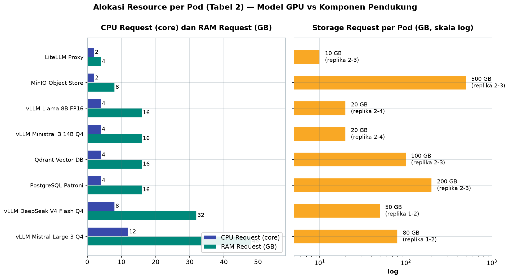
Diagram ini merangkum seluruh bab dalam satu gambar. Control plane mengatur dua worker GPU; pada worker 1 hidup pod vLLM 70B (tugas berat) dan replica 1 vLLM 8B, pada worker 2 hunian replica 2 vLLM 8B — pola anti-affinity yang memastikan replica model cepat tidak pernah menumpuk di satu node. Ketiga lapisan storage menampung semua pod; perhatikan bahwa LiteLLM (kotak Pods) tidak memegang panah ke storage — ia murni router, dan bottle neck jaringan justru harus dijaga di sini: setiap request yang lewat LiteLLM harus tiba di vLLM dalam hitungan milidetik, jadi pod LiteLLM sebaiknya di-co-locate pada node yang sama dengan halaman vLLM-nya (topologi ini tidak digambar untuk menjaga diagram tetap sederhana, tetapi diingat saat scheduling).
4. Auto-scaling Strategy
Inilah jantung orchestration untuk LLM: kemampuan sistem menyesuaikan jumlah pod secara otomatis. Empat mekanisme bekerja berdampingan:
Horizontal Pod Autoscaler (HPA) — mekanisme utama. HPA memantau metrik request/limit pada pod (CPU, memori, atau custom metrics) dan menambah/mengurangi jumlah replica secara periodik. Untuk LLM, metrik GPU yang diekspos vLLM — gpu_cache_usage, num_requests_running atau num_requests_waiting (kedalaman antrean), dan avg_time_per_token — adalah sinyal yang jauh lebih akurat daripada CPU: sebuah pod vLLM bisa memiliki CPU rendah tetapi GPU penuh. HPA dengan custom metrics membaca sinyal-sinyal ini melalui custom metrics adapter (Prometheus Adapter) dan menambah pod ketika antrean mengular — Tabel 8.9 merangkum ambang batasnya.
Vertical Pod Autoscaler (VPA) — pasangan HPA yang bekerja pada sumbu y: ia mengoptimalkan resource request/limit tiap pod. Untuk beban inference yang volumenya fluktuatif, VPA berguna di fase awal untuk menemukan "ukuran sepatu" yang tepat (misalnya 8 core / 32 GB untuk pod DeepSeek V4 Flash), lalu biasanya dimatikan agar tidak berkonflik dengan HPA.
Cluster Autoscaler — menambah/mengurangi node fisik. Di on-premise, kemampuannya terbatas: menambah node berarti membeli server. Karena itu, untuk general office, Cluster Autoscaler lebih relevan sebagai konsep cadangan (capacity buffer manual) daripada mekanisme harian — perannya dominan di cloud, yang menjadi bahan perbandingan di seksi 5 buku ini.
Custom Metrics adalah bahan bakar ketiganya. vLLM mengekspos endpoint metrik Prometheus dengan nama seperti vllm_num_requests_waiting, vllm_gpu_cache_usage, dan avg_time_per_token; Prometheus mengumpulkannya, dan Prometheus Adapter menerjemahkannya menjadi metrik yang dapat dibaca HPA. Rantai inilah yang membuat auto-scaling LLM menjadi data-driven — bukan tebakan operator — dan menjadi dasar Langkah 2 di Seksi 8.
Tabel 8.9: HPA Auto-scaling Rules
| Metric | Target | Scale Up | Scale Down | Cool Down |
|---|---|---|---|---|
| GPU Utilization | > 80% | +1 pod | < 40% (5 menit) | 3 menit |
| Queue Depth (vLLM) | > 10 requests | +1 pod | < 3 (5 menit) | 3 menit |
| Avg TTFT | > 2 detik | +1 pod | < 1 detik (5 menit) | 5 menit |
| Memory Usage | > 85% | +1 pod | < 60% (10 menit) | 5 menit |
Tabel HPA ini adalah konstitusi kapasitas klaster — dan asimetrisnya angka scale up vs scale down adalah kebijakan tersirat: naik cepat, turun lambat. Scale up hanya butuh jendela singkat (+1 pod, cool down 3 menit) agar lonjakan 25 user di jam rapat tidak menciptakan antrean; scale down mensyaratkan metrik bertahan rendah selama 5-10 menit dan cool down lebih panjang (5 menit), mencegah flapping — pod naik-turun seperti yoyo ketika beban berosilasi. Perhatikan sinyal per metrik: Queue Depth menangkap backlog secara langsung (lebih dari 10 request menunggu = tambah pod), GPU Utilization menangkap kejenuhan (di atas 80%), TTFT menangkap persepsi pengguna, dan Memory menjaga KV cache tidak mendekati throttling [1][3]. Dalam praktik, gunakan minimal dua metrik bersamaan (misalnya Queue Depth + Memory Usage) — otak HPA akan mempertimbangkan rata-rata keduanya, dan hasilnya lebih stabil daripada satu metrik tunggal.
Dashboard menampilkan empat panel yang menjadi cockpit operator: GPU utilization (kapan kartu mulai jenuh), queue depth (berapa request mengantre), pod replica count (aksi HPA yang sedang berlangsung), dan TTFT (persepsi pengguna). Kunci membaca dashboard ini adalah kausalitas: TTFT naik → beberapa menit kemudian queue depth naik → HPA menambah pod → replica count naik → GPU utilization turun → TTFT turun. Urutan itu adalah siklus auto-scaling yang sehat; jika urutannya patah (misalnya queue naik tetapi replica tidak), operator tahu masalahnya ada di metric pipeline — bukan di model. Alur kausalitasnya:
Flowchart berikut menggambarkan perulangan kontrol HPA: metrics → evaluasi HPA → scale up/down → cooldown → kembali ke metrics. Setiap 15 detik, HPA menarik metrik dari Prometheus Adapter; jika nilai rata-rata melampaui target, jumlah replica dihitung ulang (dibatasi minReplicas-maxReplicas); setelah perubahan, stabilization window dan cooldown mencegah perintah berikutnya datang terlalu cepat. Siklus inilah yang membuat klaster "bernafas" mengikuti beban — dan memahami urutannya adalah prasyarat untuk debugging auto-scaling yang gagal (biasanya kesalahan ada di satu dari empat titik: metrik tidak muncul, adapter tidak menerjemahkan, target salah, atau policy membatasi).
5. GPU Scheduling
GPU bukan CPU: ia tidak bisa dibagi begitu saja oleh scheduler default Kubernetes. Di sinilah NVIDIA GPU Operator memainkan peran segitiga: ia men-deploy (1) device plugin yang mendaftarkan tiap GPU sebagai sumber daya nvidia.com/gpu, (2) runtime (nvidia-container-toolkit) yang membuat container melihat GPU, dan (3) DCGM exporter untuk metrik pemantauan. Setelah operator terpasang, scheduler tahu berapa GPU yang tersedia di tiap node, dan pod yang meminta nvidia.com/gpu: 1 akan ditempatkan hanya di node yang punya kartu kosong.
Kontrol penempatan dilakukan dengan dua alat standar. NodeSelector paling sederhana: pod hanya boleh mendarat di node berlabel tertentu (misalnya accelerator=nvidia-gpu), cocok untuk memisahkan worker GPU dari control plane. Affinity rules lebih ekspresif — misalnya pod affinity yang memaksa replica model besar dan model kecil berada di node berbeda untuk mencegah GPU contention, atau anti-affinity agar dua replica model yang sama tidak pernah menumpuk di satu kartu dan satu node. Aturan praktis: gunakan nodeSelector untuk isolasi kelas (GPU vs non-GPU), dan affinity rules untuk keadilan antar-workload (GPU vs GPU).
Ketika sebuah GPU ingin dibagi oleh banyak workload ringan — misalnya dua pod 8B berbagi satu L40S — dua teknologi muncul sebagai kandidat: time-slicing membagi GPU secara waktu (tiap pod mendapat giliran memakai seluruh kartu, sederhana tetapi tidak ada isolasi memori dan latency bisa saling mengganggu), sedangkan MIG (Multi-Instance GPU) membagi GPU secara fisik menjadi beberapa instance terisolasi dengan memori dan compute terpisah, tetapi MIG hanya didukung A100/H100, tidak oleh L40S, dan memerlukan perencanaan partisi yang lebih teliti. Rekomendasi untuk general office: mulai dengan satu pod per GPU (isolasi paling sederhana dan kinerja paling terprediksi), jadikan time-slicing sebagai opsi saat kartu mulai langka, dan baru pertimbangkan MIG untuk kasus H100 yang bebannya benar-benar ringan [2].
6. Persistent Storage StatefulSet
Tidak semua beban LLM bersifat stateless. Tiga komponen menuntut penyimpanan persisten, dan masing-masing punya pola deployment yang benar:
- Model storage — bobot model (20-300 GB per model) sebaiknya disimpan di MinIO (objek store) atau NFS, lalu dipasang ke pod vLLM sebagai volume baca-saja. Pola ini memungkinkan banyak replica membaca model yang sama tanpa duplikasi storage, dan berperan penting pada failover: pod baru di node lain langsung mencolok volume yang sama.
- Vector DB — Qdrant (atau Milvus) sebagai StatefulSet dengan persistent volume claim (PVC). Qdrant membawa replication factor 3 (Bab 8.1), dan headless service bernama (
qdrant-0,qdrant-1, dan seterusnya) memastikan setiap replica menancap pada volume pribadinya. - Database — PostgreSQL dengan Patroni (cluster HA) untuk metadata dan audit log; Patroni mengelola streaming replication, failover otomatis, dan slot yang dipasang pada PVC per replica.
Mengapa StatefulSet dan bukan Deployment untuk ketiganya? Karena Deployment menganggap semua replica identik dan bisa dihapus-tanam kapan saja (pod baru mendapat identitas baru), sedangkan StatefulSet memberi setiap replica identitas stabil (qdrant-0, postgres-0) yang melekat pada volume dan alamat network-nya — persyaratan mutlak untuk replication, leader election, dan streaming.
7. Networking & Security
Klaster yang sehat juga klaster yang tertutup. NetworkPolicy menjadi alat isolasi pertama: secara default, semua pod di Kubernetes bisa saling berbicara — sesuatu yang tidak kamu inginkan ketika pod analisis dokumen HR berdampingan dengan pod engineering. Dengan NetworkPolicy, kita menetapkan aturan allowlist per-namespace: hanya pod litellm yang boleh menjangkau vllm-*, hanya vllm-* yang boleh menjangkau qdrant dan postgres, dan tidak ada pod training yang boleh menyentuh apa pun di luar namespace-nya sendiri.
Di atas isolasi, mTLS menyandikan komunikasi antar-pod sehingga data yang lewat antar-layanan — termasuk prompt yang dikirim dari LiteLLM ke vLLM — tidak bisa disadap di dalam jaringan klaster. Penerapan paling sederhana adalah Linkerd atau Istio dengan injection otomatis: sertifikat dibuat oleh cert-manager (sudah terintegrasi di K3s), diperbarui otomatis, dan policy didefinisikan per-workload. Untuk general office, Linkerd cukup — service mesh Istio lebih berat dan nilainya baru terasa pada klaster berskala besar. Catatan jujur: service mesh bersifat opsional; jika tim belum siap mengoperasikannya, NetworkPolicy + TLS pada ingress (haproxy/Traefik) sudah menutup 90% permukaan serangan — dan bisa dilakukan penambahan mesh di kemudian hari tanpa rewrite aplikasi.
8. Praktikum / Hands-On
Langkah 1: Deploy K3s Cluster dengan GPU Support
Rangkaian perintah berikut membangun klaster dari nol: control plane, dua worker, lalu GPU operator.
# Control Plane
curl -sfL https://get.k3s.io | sh -s - \
--write-kubeconfig-mode 644 \
--disable traefik \
--etcd-s3 \
--etcd-s3-bucket k3s-backup \
--etcd-s3-region us-east-1
# Worker Nodes
curl -sfL https://get.k3s.io | K3S_URL=https://<CP_IP>:6443 \
K3S_TOKEN=<token> sh -
# Install NVIDIA GPU Operator via Helm
helm repo add nvidia https://helm.ngc.nvidia.com/nvidia
helm repo update
helm install gpu-operator nvidia/gpu-operator \
--namespace nvidia-gpu-operator \
--create-namespace \
--set driver.enabled=false
# Verifikasi GPU terdeteksi
kubectl get nodes -o json | jq '.items[].status.capacity'
kubectl logs -n nvidia-gpu-operator -l app=nvidia-operator-validatorDua detail penting. --disable traefik mematikan ingress bawaan agar bisa memasang NGINX sendiri bila diperlukan. --etcd-s3 menyalin backup etcd ke bucket S3 — untuk kantor, ini berarti riwayat konfigurasi klaster aman meskipun server mati total; ganti region dan bucket dengan milik Anda. Pada worker, token didapat dari /var/lib/rancher/k3s/server/node-token di control plane. Setelah GPU Operator terpasang, kubectl get nodes -o json | jq '.items[].status.capacity' harus menunjukkan nvidia.com/gpu: 1 (atau sesuai jumlah kartu) pada tiap worker — dan baris kubectl logs -l app=nvidia-operator-validator berakhir dengan Successfully ran all validations adalah sertifikat kelulusan klaster.
Langkah 2: HPA Berbasis Custom Metrics (vLLM Queue Depth)
Setelah klaster berbunyi GPU, pasang konstitusi kapasitas: HPA yang menambah pod ketika queue depth atau KV cache mendekati batas.
# vllm-hpa.yaml
apiVersion: autoscaling/v2
kind: HorizontalPodAutoscaler
metadata:
name: vllm-70b-hpa
namespace: llm-inference
spec:
scaleTargetRef:
apiVersion: apps/v1
kind: Deployment
name: vllm-70b
minReplicas: 1
maxReplicas: 4
metrics:
- type: Pods
pods:
metric:
name: vllm_num_requests_waiting
target:
type: AverageValue
averageValue: 10
- type: Pods
pods:
metric:
name: vllm_gpu_cache_usage
target:
type: AverageValue
averageValue: 0.85
behavior:
scaleUp:
stabilizationWindowSeconds: 60
policies:
- type: Pods
value: 1
periodSeconds: 60
scaleDown:
stabilizationWindowSeconds: 300
policies:
- type: Pods
value: 1
periodSeconds: 120Manifest ini menerjemahkan dua baris pertama Tabel 8.9 ke dalam YAML. Metrik vllm_num_requests_waiting (rata-rata > 10 request menunggu) dan vllm_gpu_cache_usage (rata-rata > 0,85 = 85% KV cache terpakai) dibaca dari Prometheus Adapter yang sudah mengumpulkan ekspor vLLM di node tersebut. Blok behavior adalah mesin "naik cepat, turun lambat": scale up distabilkan 60 detik, scale down 300 detik — korespondensi 1:1 dengan kolom Cool Down Tabel 8.9. Prasyarat penting: ekspor metrik vLLM (--metrics-port, default 8000 /metrics) harus dikonfigurasi di service monitor Prometheus, dan Prometheus Adapter harus punya rule yang memetakan vllm_num_requests_waiting dari series Prometheus ke metrik HPA.
Langkah 3: Deploy vLLM StatefulSet dengan Persistent Volume
Langkah terakhir menyatukan semuanya: pod vLLM yang stateful, membaca model dari persistent volume yang dipasang dari storage bersama.
# vllm-statefulset.yaml
apiVersion: apps/v1
kind: StatefulSet
metadata:
name: vllm-8b
namespace: llm-inference
spec:
serviceName: vllm-8b
replicas: 2
selector:
matchLabels:
app: vllm-8b
template:
metadata:
labels:
app: vllm-8b
spec:
nodeSelector:
accelerator: nvidia-gpu
containers:
- name: vllm
image: vllm/vllm-openai:latest
env:
- name: MODEL_NAME
value: "deepseek-ai/DeepSeek-V4-Flash"
- name: MODEL_PATH
value: "/models/deepseek-v4-flash"
args:
- "--model"
- "$(MODEL_PATH)"
- "--max-num-seqs"
- "256"
- "--max-model-len"
- "8192" # 1M context but limited for multi-tenant
resources:
limits:
nvidia.com/gpu: 1
memory: 32Gi
cpu: 8
ports:
- containerPort: 8000
volumeMounts:
- mountPath: /models
name: model-storage
volumes:
- name: model-storage
persistentVolumeClaim:
claimName: model-pvcDua replica vllm-8b (keduanya meminta satu GPU) adalah wujud HPA dari Langkah 2: maxReplicas: 4 pada skenario tersebut berarti HPA bisa menaikkan replica StatefulSet ini dari 2 menjadi 4 saat antrean memuncak. Perhatikan nodeSelector: accelerator: nvidia-gpu — hanya worker GPU yang menerima pod; sedangkan --max-num-seqs 256 membatasi batch agar KV cache tidak meledak di multi-tenant (batas 8.192 token per request sengaja ditetapkan untuk penyewaan bersama — konteks penuh 1 juta token khusus untuk RAG satu user). Proses failover-nya elegan: salah satu worker mati, K3s men-reschedule pod ke worker sehat, dan persistent volume (melalui Longhorn) ikut berpindah — manual: cek dengan kubectl describe statefulset vllm-8b bahwa volume Bound dan pod Running di node berbeda.
9. Studi Kasus: Deploy K3s General Office 35 User di PT Maju Teknologi
Profil. PT Maju Teknologi adalah perusahaan software dengan 35 karyawan yang tersebar di tiga tim. Permintaan manajemen tegas: semua data — termasuk kode internal dan dokumen klien — tidak boleh keluar perimeter perusahaan karena klausul kerahasiaan di kontrak klien. Solusi SaaS cloud gugur sejak awal; jawabannya adalah on-premise dengan orchestration yang matang.
Cluster. Tim platform (dua orang) membangun 3 node K3s: 1 control plane + 2 worker GPU — satu worker berisi H100 80GB, satu lagi L40S 48GB (pola tiered dari Bab 8.2). Storage memakai Longhorn dengan replikasi 2x antar-worker; ingress Traefik; observability Prometheus + Grafana + Loki; dan HPA berbasis GPU utilization + queue depth yang membawa replica vLLM dari 1 ke 3 saat jam puncak 08:00-11:00 dan 13:00-16:00 — persis pola beban Bab 8.1.
Workload. Empat keluarga pod berjalan berdampingan: vLLM DeepSeek V4 Flash Q4 (1 juta token konteks) melayani RAG dokumen panjang klien; vLLM Mistral Large 3 Q4 (Apache 2.0) untuk analisis dan penyusunan dokumen; Ministral 3 14B untuk chat cepat sehari-hari; plus LiteLLM, Qdrant, PostgreSQL Patroni, dan MinIO sesuai Tabel 8.8. Routing di LiteLLM: query pendek → Ministral 3, dokumen panjang → DeepSeek V4 Flash, analisis berat → Mistral Large 3 — setiap rupiah komputasi terpakai pada kartu yang tepat.
Hasil. Catatan produksi tiga bulan: 0% downtime orchestration — seluruh restart dan upgrade dilakukan sebagai rolling update tanpa satu pun request gagal; CPU overhead K3s di bawah 5% — kontrol plane yang ramping tidak "memakan" kapasitas yang seharusnya untuk inference; dan auto-scaling merespons dalam waktu di bawah 2 menit dari lonjakan beban hingga pod baru melayani trafik. Biaya operasional Rp 5-7 juta per bulan (listrik + storage + maintenance) — angka yang jauh di bawah gaji satu DevOps tambahan, dan itulah argumen ekonomi orchestration yang paling jujur: K3s menggantikan jam kerja manusia dengan otomatisasi yang terukur [1][4].
Pelajaran. Tiga dari studi kasus ini layak dibawa pulang. Pertama, pipeline metrik adalah tulang punggung auto-scaling: PT Maju Teknologi menghabiskan satu minggu menyelaraskan service monitor, Prometheus Adapter, dan rule HPA sebelum percaya pada otomatisasi — dan investasi itu terbayar ketika scale-out bekerja tanpa intervensi di jam puncak. Kedua, anti-affinity antar replica model cepat mencegah dua pod identical berebut satu kartu — masalah yang biasanya baru muncul di bulan kedua produksi. Ketiga, jangan menaruh semua telur di satu storage class: model berat di MinIO, embeddings di Qdrant, metadata di Patroni — blast radius kegagalan terpotong tiga, dan recovery satu sistem tidak pernah mengganggu dua lainnya.
10. Referensi
Paper Jurnal/Konferensi
[1] Chen, G., et al. (2025). KIS-S: A GPU-Aware Kubernetes Inference Simulator with RL-Based Auto-Scaling. arXiv: 2507.07932 (https://arxiv.org/abs/2507.07932), DOI: 10.48550/arXiv.2507.07932 (https://doi.org/10.48550/arXiv.2507.07932) — dasar auto-scaling GPU inference dengan reinforcement learning di Kubernetes; rujukan verifikasi aturan HPA pada Tabel 8.9.
[2] Li, X., et al. (2025). Kant: An Efficient Unified Scheduling Platform for Large-Scale AI Container Clusters. arXiv: 2510.01256 (https://arxiv.org/abs/2510.01256), DOI: 10.48550/arXiv.2510.01256 (https://doi.org/10.48550/arXiv.2510.01256) — co-scheduling job training + inference, manajemen GPU quota, dan fair scheduling; relevan untuk optimalisasi GPU scheduling seksi 5.
[3] Wang, L., et al. (2025). HeteroScale: Coordinated Autoscaling for Heterogeneous and Disaggregated LLM Inference. arXiv: 2508.19559 (https://arxiv.org/abs/2508.19559), DOI: 10.48550/arXiv.2508.19559 (https://doi.org/10.48550/arXiv.2508.19559) — auto-scaling arsitektur prefill-decode disaggregated; rujukan kebijakan scale up/down Tabel 8.9.
[4] Weber, S., et al. (2025). Automated Dynamic AI Inference Scaling on HPC-Infrastructure: Integrating Kubernetes, Slurm and vLLM. arXiv: 2511.21413 (https://arxiv.org/abs/2511.21413), DOI: 10.48550/arXiv.2511.21413 (https://doi.org/10.48550/arXiv.2511.21413) — auto-scaling berbasis metrik vLLM (GPU load dan queue time); rujukan verifikasi alokasi resource Tabel 8.8.
[5] Ho, L., et al. (2025). Design of a GPU Dynamic LLM Inference Task Scheduling Architecture Based on KubeAI. arXiv (preprint). https://github.com/leoho0722/llm-gpu-scheduler — scheduler GPU-aware untuk LLM di Kubernetes yang mengatasi limitasi default scheduler; relevan untuk seksi 5.
Referensi Pendukung (Dokumentasi/Repository)
[6] K3s. Official Documentation. https://docs.k3s.io
[7] NVIDIA. GPU Operator Helm Chart Documentation. https://docs.nvidia.com/datacenter/cloud-native/gpu-operator/
[8] vLLM. Kubernetes Deployment Guide. https://docs.vllm.ai/en/latest/deployment/kubernetes.html
[9] Kubernetes SIGs. Prometheus Adapter for Custom Metrics. https://github.com/kubernetes-sigs/prometheus-adapter
[10] DeepSeek Team. (2026). DeepSeek-V4 Flash: Deployment Guide for Kubernetes Clusters. https://api-docs.deepseek.com — panduan deployment MoE konteks 1 juta token yang optimal untuk auto-scaling. — ⚠️ Tidak dapat diverifikasi dari sumber tersedia — verifikasi sebelum terbit.
[11] Mistral AI. (2025). Mistral Large 3: Apache 2.0 Licensed MoE for On-Premise Deployment. https://mistral.ai/news/mistral-large-3 — model 675B/41B aktif yang aman lisensinya untuk deployment K3s on-premise.
Bab 8.4: Enterprise Gateway
Bayangkan sebuah gedung kantor dengan 45 karyawan, tetapi setiap orang memegang kunci langsung ke gudang kas — tanpa catatan siapa mengambil berapa, kapan, dan untuk apa. Itulah kantor yang membiarkan setiap karyawan mengakses model bahasa besar (LLM) secara langsung. Di sinilah AI Gateway hadir: sebuah gerbang tunggal yang mengatur siapa boleh masuk, berapa banyak yang boleh diambil, dan memastikan setiap pengambilan tercatat rapi untuk laporan keuangan.
1. Tujuan Sub-Bab
Setelah membaca sub-bab ini, Anda akan mampu:
- Menjelaskan fungsi LiteLLM sebagai AI Gateway untuk lingkungan general office dengan 21-50 pengguna
- Menyiapkan virtual keys, rate limiting, dan budget tracking per departemen agar biaya LLM tidak membengkak
- Menerapkan tier akses (admin, power, standard, guest) dengan Role-Based Access Control (RBAC) yang jelas
- Mengintegrasikan gateway dengan SSO, logging, dan alerting untuk pengawasan berkelanjutan
- Membaca dan menganalisis laporan spend bulanan untuk perencanaan anggaran departemen
- Merancang arsitektur high availability dengan failover otomatis antar backend LLM
2. Konsep AI Gateway: Mengapa 21-50 User Butuh Gerbang?
Masalah Akses Langsung
Ketika sebuah kantor dengan 21-50 karyawan membiarkan setiap orang mengakses LLM cloud secara langsung — membuka ChatGPT Enterprise, mengetik pertanyaan ke API OpenAI, atau menjalankan model di laptop masing-masing — tiga masalah klasik muncul secara bersamaan. Pertama, biaya membengkak tanpa kontrol: tidak ada yang tahu berapa token yang dikonsumsi HR dibanding Engineering, siapa yang paling boros, dan apakah pemakaian itu memang dibutuhkan untuk pekerjaan. Kedua, tidak ada pembatas kecepatan: satu karyawan yang menjalankan script batch bisa menghabiskan kuota harian seluruh tim dalam hitungan menit. Ketiga, tidak ada jejak audit: ketika terjadi insiden data, manajemen tidak memiliki catatan siapa mengirim prompt apa ke model mana — persoalan yang langsung bertabrakan dengan tuntutan compliance UU PDP dan ISO 27001.
Masalah ini semakin tajam di skala 21-50 user. Di bawah 20 user, akses langsung masih bisa "diingat-ingat" oleh admin; di atas 50 user, organisasi biasanya sudah punya tim infra yang mapan. General office berada di titik tengah yang janggal: terlalu besar untuk diabaikan, terlalu kecil untuk memiliki tim keamanan yang besar. Solusinya bukan melarang pemakaian AI, melainkan memasang sebuah gerbang yang menertibkannya.
Solusi: LiteLLM sebagai Proxy
LiteLLM adalah open-source AI gateway yang duduk tepat di antara pengguna dan LLM backend, baik yang dijalankan on-premise (vLLM dengan DeepSeek V4 Flash, Mistral Large 3) maupun yang cloud (GPT-5.5, Gemini 2.5 Pro, Claude Fable 5). Semua permintaan dari aplikasi karyawan — chatbot internal, IDE plugin, skrip analisis — tidak lagi langsung menuju model, melainkan melewati proxy ini. LiteLLM menerjemahkan format permintaan dari lebih dari 100 penyedia LLM ke satu antarmuka yang seragam, sehingga aplikasi internal cukup berbicara ke satu URL gateway tanpa peduli model mana yang menangani di belakang layar.
Analogi paling pas adalah meja resepsionis sebuah gedung: semua tamu (permintaan) masuk lewat satu pintu, diverifikasi identitasnya (virtual key), diarahkan ke ruangan yang tepat (routing model), dicatat kunjungannya (audit log), dan ditolak ramah bila sudah melewati kapasitas ruangan (rate limit) atau anggaran kunjungan (budget). Gedung tetap nyaman, pengelola tahu persis apa yang terjadi di setiap lantai.
Fitur Kunci yang Disediakan
Fitur kunci LiteLLM yang langsung berguna bagi general office adalah:
- Virtual keys — setiap departemen/user mendapat kunci sendiri dengan hak akses dan budget terpisah
- Budget management — batas keras (hard limit) dan peringatan lembut (soft limit) per kunci, tim, dan model
- Rate limiting — pembatas Request Per Minute (RPM) dan Token Per Minute (TPM) per kunci
- Load balancing — distribusi permintaan antar backend dengan round-robin atau least-connections
- Audit logging — pencatatan setiap permintaan ke PostgreSQL untuk kebutuhan pelaporan dan compliance
Tabel 8.10: Perbandingan AI Gateway
Sebelum memilih LiteLLM, ada baiknya membandingkan dengan alternatif pasar — tabel berikut merangkum keempat opsi utama.
| Fitur | LiteLLM (OSS) | Kong AI Gateway | Azure API Management | AWS Bedrock |
|---|---|---|---|---|
| Virtual Keys | Ya | Enterprise | Ya | Ya |
| Budget Tracking | Ya (built-in) | Custom | Azure Cost Mgmt | AWS Budgets |
| Rate Limiting | Ya | Ya | Ya | Ya |
| Multi-Provider | 100+ LLMs | Terbatas | Azure only | AWS only |
| Self-hosted | Ya | Ya | Tidak | Tidak |
| Audit Logs | Enterprise | Enterprise | Ya | CloudTrail |
| Biaya Lisensi | Gratis (OSS) | $5k+/tahun | Pay-as-you-go | Pay-as-you-go |
Pola yang terbaca jelas: LiteLLM unggul di multi-provider (100+ LLM) dan lisensi gratis, sementara Azure dan AWS mengikat pengguna ke ekosistem cloud masing-masing. Kekurangan LiteLLM ada di audit log kelas enterprise yang butuh lisensi tambahan — bagi kantor yang belum diwajibkan audit penuh, fitur gratisnya sudah memadai. Keputusan akhir biasanya jatuh pada satu pertanyaan: apakah kantor sudah terkunci di satu cloud vendor dan membutuhkan fitur managed, atau ingin kebebasan berganti model kapan saja dengan biaya lisensi nol? Bagi general office 21-50 user dengan model on-premise, jawabannya hampir selalu LiteLLM.
3. Arsitektur LiteLLM Proxy di Lingkungan Kantor
Deployment sebagai Service di K3s
Dalam arsitektur general office, LiteLLM dijalankan sebagai service di klaster Kubernetes ringan (K3s) dengan 2-3 replica untuk menjamin high availability. Jika satu pod mati — entah karena deploy baru atau kegagalan perangkat keras — replica lain langsung melayani permintaan tanpa ada karyawan yang menyadari gangguan. K3s dipilih karena jauh lebih ringan daripada Kubernetes penuh: ia bisa berjalan di dua hingga tiga server biasa atau bahkan satu workstation kelas server, cukup untuk kebutuhan 21-50 user yang biasanya menghasilkan ribuan permintaan per hari, bukan jutaan.
Pola deployment ini mencerminkan prinsip redundansi yang sudah dibahas di Bab 8.1: tidak ada single point of failure. Gateway menjadi titik kritis — jika ia mati, seluruh kantor kehilangan akses AI sekaligus. Karena itu replica berjumlah ganjil (3) dan dipisah ke node berbeda, dilengkapi readiness probe yang otomatis mengeluarkan instance yang tidak sehat dari rotasi trafik.
Backend LLM: On-Premise, Cloud, dan Cadangan
Di belakang gateway terdapat tiga kategori backend LLM yang saling melengkapi:
- On-premise via vLLM — DeepSeek V4 Flash dan Mistral Large 3 dijalankan di GPU kantor sendiri. Ini jalur utama untuk beban kerja harian karena biayanya hanya listrik dan perawatan, bukan pay-per-token.
- Cloud (fallback) — GPT-5.5 dan Gemini 2.5 Pro diakses melalui API ketika GPU lokal penuh atau untuk tugas reasoning tingkat tinggi yang membutuhkan model proprietary dengan konteks 1 juta token.
- Cadangan keamanan — Claude Fable 5 diposisikan sebagai safety backup: model dengan safety classifiers bawaan yang dipakai khusus untuk konten sensitif, karena ia menghasilkan audit terstruktur per interaksi.
Pengaturan ini adalah pola hybrid yang mengoptimalkan biaya tanpa mengorbankan kesiapan. Trafik murah dan rutin ditangani GPU sendiri; trafik langka tapi berat dilimpahkan ke cloud; konten paling sensitif diproses oleh model dengan kelas keamanan tertinggi.
Database: PostgreSQL sebagai Sumber Kebenaran
PostgreSQL adalah database yang menyimpan metadata penting: kunci (keys), pengguna dan tim (teams), serta catatan pengeluaran (spend logs). Setiap kali sebuah virtual key mengirim permintaan, LiteLLM mencatat jumlah token, model yang dipakai, dan biaya yang timbul ke dalam tabel spend. Database inilah yang menjadi single source of truth untuk laporan bulanan, penyelidikan insiden, dan perhitungan biaya per departemen di Bab 8.6. Ukurannya relatif kecil untuk skala kantor — tidak perlu database khusus kelas enterprise, tetapi tetap harus dicadangkan secara rutin karena nilainya sangat tinggi saat audit.
Berikut arsitektur lengkap gateway — perhatikan jalur utama (garis tebal) dan jalur fallback (garis putus-putus).
Diagram ini menunjukkan tiga hal penting. Pertama, semua pengguna bertemu di dua replica LiteLLM — tidak ada jalur langsung ke model mana pun, sehingga pemeriksaan key, budget, dan rate limit tidak mungkin terlewat. Kedua, vLLM on-premise menjadi jalur utama sementara cloud (OpenAI/Anthropic) hanya jalur putus-putus fallback — kontras yang menegaskan strategi biaya: bayar rupiah ke GPU sendiri dulu, cloud hanya saat darurat. Ketiga, monitoring Prometheus mengarah ke Grafana untuk dashboard spend dan Alert Manager untuk peringatan budget — menutup siklus pengawasan dari permintaan hingga laporan.
4. Manajemen Virtual Keys & RBAC
Satu Kunci per Departemen
Prinsip pertama pengendalian biaya di LiteLLM adalah setiap departemen mendapat virtual key sendiri dengan budget terpisah. Kunci Engineering tidak sama dengan kunci HR; kunci HR tidak bisa menghabiskan anggaran Legal. Setiap kunci mengikat identitas pengguna (melalui metadata seperti department: engineering), sehingga setiap rupiah yang terpakai dapat ditelusuri kembali ke pemegang kuncinya.
Pemisahan ini bukan hanya soal biaya — ia juga menciptakan accountability. Ketika laporan bulanan menunjukkan Finance menghabiskan budget dua kali lipat HR, manajemen bisa langsung berbicara dengan kepala Finance dengan angka konkret, bukan perasaan. Di sinilah virtual keys berbeda dari sekadar membagikan satu kunci API bersama: kunci bersama adalah "uang kas di meja," sedangkan kunci per departemen adalah "buku kas per unit."
Empat Tier Akses
Akses dibagi menjadi empat tier dengan jenjang kuota dan hak model:
- Admin (IT, DevOps) — akses semua model termasuk model besar 70B dan Whisper untuk speech-to-text, budget tertinggi.
- Power (Engineering, Data) — akses model 70B + 8B untuk coding dan analisis data berat.
- Standard (HR, Finance, Legal) — hanya model 8B, cukup untuk summarization, tanya jawab dokumen, dan penulisan.
- Guest (Intern, Trainee) — hanya model 8B tanpa RAG, budget paling kecil, untuk orientasi dan tugas-tugas ringan.
Logika di balik tier ini adalah menuangkan kebutuhan kerja ke dalam kuota (pemetaan rinci lihat Tabel 8.11 di Seksi 4). Karyawan yang pekerjaannya menuntut model besar dibayar mahal oleh perusahaan — mereka mendapat kuota besar. Karyawan yang hanya butuh bantuan menulis surat tidak perlu menyentuh model 70B yang biayanya jauh lebih tinggi. Hasilnya: budget terpakai tepat sasaran, bukan menguap tanpa arah.
RBAC: Tiga Peran Pengelola
RBAC di LiteLLM berjalan dalam tiga lapisan peran: Proxy Admin — pengelola infrastruktur yang membuat kunci, mengatur model, dan membaca semua laporan; Internal User — operator aplikasi internal yang memakai kunci untuk kebutuhan departemennya; dan End User — karyawan akhir yang tidak pernah melihat kunci sama sekali, cukup memakai aplikasi yang sudah terhubung. Batas ini penting: hanya Proxy Admin yang dapat mengubah budget atau melihat laporan lintas departemen, mencegah seorang power user menaikkan kuotanya sendiri secara diam-diam.
Setiap lapisan peran ini juga dapat dipautkan ke SSO (misalnya Google Workspace atau Microsoft Entra ID) sehingga identitas karyawan yang sudah ada di direktori kantor langsung dipakai untuk otentikasi. Karyawan yang keluar otomatis kehilangan akses saat akunnya dinonaktifkan di direktori — tidak ada lagi "kunci API yang masih hidup setelah mantan karyawan itu pergi."
Tabel 8.11: Tier Virtual Key untuk General Office
Empat tier kunci berikut memetakan kebutuhan kerja departemen ke kuota model, budget, dan batas kecepatan — angka-angka ini adalah titik awal yang lazim untuk kantor 21-50 user.
| Tier | Departemen | Model Access | Budget/bulan | RPM Limit | TPM Limit |
|---|---|---|---|---|---|
| Admin | IT, DevOps | Semua model (70B, 8B, Whisper) | Rp 10jt | 100 | 500k |
| Power | Engineering, Data | 70B + 8B | Rp 5jt | 50 | 200k |
| Standard | HR, Finance, Legal | 8B only | Rp 2jt | 20 | 100k |
| Guest | Intern, Trainee | 8B only, no RAG | Rp 500k | 10 | 50k |
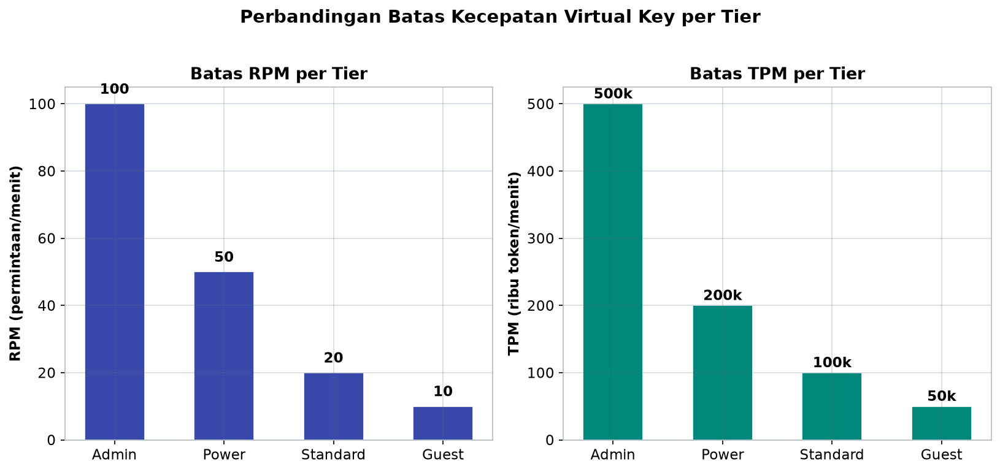
Analisis singkat: hierarki kuota mengikuti pola diminishing need — departemen yang paling bergantung pada AI (Engineering, Data) mendapat kuota tertinggi, sementara pengguna sementara (Intern) dibatasi seperdua puluh kuota admin. Perhatikan bahwa tier Standard tetap mendapat akses model 8B penuh; pembeda utamanya adalah kuota token per menit, bukan kualitas model. Ini adalah keputusan desain yang bijak: kualitas jawaban tidak berbeda antar departemen, tetapi volume pemakaian harus terkendali. Sedangkan tier Guest tanpa RAG berarti pengguna sementara tidak bisa menarik data internal melalui retrieval — lapisan keamanan ekstra yang murah.
5. Budget & Rate Limiting: Mengendalikan Aliran Rupiah
Hard Limit dan Soft Limit
Setiap kunci memiliki dua lapis pengendali anggaran. Hard limit adalah pagu absolut: ketika budget kunci habis, permintaan ditolak, titik. Soft limit bekerja lebih dulu: saat budget mencapai 80% terpakai, sistem mengirim email alert kepada pemegang kunci dan admin — memberi kesempatan menyesuaikan penggunaan sebelum tersandung tembok. Ambang 80% ini bukan angka sembarangan: kerangka Policy-to-Prompt compliance merekomendasikan peringatan dini pada ambang tersebut agar tim punya waktu reaksi sebelum quota benar-benar habis [4].
Pengaturan ini bekerja per kunci, per tim, dan per model. Artinya perusahaan bisa menetapkan: "tim Engineering boleh menghabiskan Rp 5 juta secara total, tetapi model 70B dalam tim ini hanya dialokasikan Rp 2 juta." Jika suatu model mendekati batasnya, permintaan ke model tersebut dialihkan atau ditolak tanpa memengaruhi kuota model lain.
RPM dan TPM: Dua Meter Kecepatan
Rate limiting diukur dengan dua metrik: RPM (Request Per Minute) dan TPM (Token Per Minute). RPM membatasi jumlah permintaan per menit — berguna mencegah loop tak terkendali dari skrip. TPM membatasi jumlah token yang diproses per menit — berguna mencegah satu pengguna memonopoli model dengan dokumen raksasa berkonteks panjang. Keduanya seperti dua speedometer sekaligus: yang satu mengukur berapa sering mesin dinyalakan, yang lain mengukur seberapa jauh perjalanan tiap nyala.
Tanpa kedua meter ini, satu karyawan yang mengunggah 500 baris kode ke model 70B lima puluh kali berturut-turut bisa membuat GPU backend berasap sementara rekan sekantornya hanya mendapat respons lambat. Dengan TPM 200k untuk tier Power, perilaku seperti itu langsung dibatasi secara otomatis tanpa campur tangan manusia.
Model-Specific Budgets
Model besar (70B) memang diberi porsi budget lebih kecil daripada model kecil (8B), karena model kecil menangani mayoritas trafik harian — summarization, tanya jawab dokumen, penyuntingan surat — sementara model besar hanya untuk tugas berat yang benar-benar membutuhkannya. Routing cerdas di gateway memastikan permintaan sederhana diarahkan ke model murah, sehingga setiap permintaan menghasilkan biaya yang proporsional dengan kompleksitas kerjanya.
Tabel 8.12: Contoh Budget Departemen Bulanan (General Office 40 User)
Berikut contoh nyata pemakaian satu bulan di kantor 40 user — angka yang bisa Anda jadikan acuan saat menyusun anggaran tahunan.
| Departemen | User | Key Tier | Budget/bln | Pemakaian/bln | Sisa |
|---|---|---|---|---|---|
| Engineering | 15 | Power | Rp 5jt | Rp 4,2jt | Rp 800k |
| Data Science | 5 | Power | Rp 5jt | Rp 4,8jt | Rp 200k |
| HR | 8 | Standard | Rp 2jt | Rp 1,1jt | Rp 900k |
| Finance | 6 | Standard | Rp 2jt | Rp 1,5jt | Rp 500k |
| Legal | 4 | Standard | Rp 2jt | Rp 1,8jt | Rp 200k |
| IT Ops | 2 | Admin | Rp 10jt | Rp 3,5jt | Rp 6,5jt |
| Total | 40 | Rp 26jt | Rp 16,9jt | Rp 9,1jt |
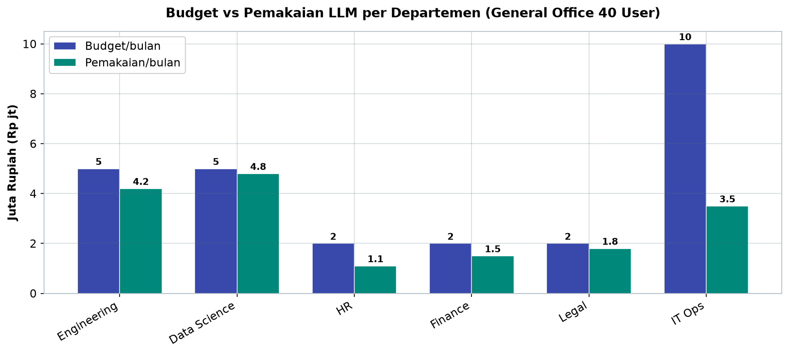
Dua insight langsung terlihat. Pertama, pemakaian tidak merata: Data Science memakai 96% budget-nya (Rp 4,8jt dari Rp 5jt) sementara IT Ops baru 35% — signal untuk audit internal: apakah workload Data Science memang sedang tinggi, atau ada script yang berulang sia-sia? Kedua, total sisa Rp 9,1jt (35%) menunjukkan budget hulu Rp 26jt lebih longgar dari kebutuhan aktual Rp 16,9jt; kantor bisa menurunkan alokasi atau menyalurkan sisa ke pelatihan AI karyawan. Tabel seperti ini juga menjadi bahan introspeksi: kalau sebuah departemen selalu habis di minggu ketiga, itu bukan masalah budget, melainkan masalah kebutuhan yang tidak dipetakan sejak awal — persis kasus yang terjadi pada departemen Legal di studi kasus PT Finansial Sejahtera (Seksi 9).
Setiap permintaan melewati tiga gerbang sebelum sampai ke model — RPM, TPM, lalu budget:
Mengapa urutan RPM → TPM → budget? Karena RPM adalah pemeriksaan termurah (hitung dalam hitungan detik), sedangkan budget check melibatkan pembaruan data biaya di database. Dengan memeriksa yang murah lebih dulu, permintaan yang jelas-jelas melanggar dibuang tanpa kerja ekstra, dan hanya permintaan yang berpotensi lolos yang "melapor" ke sistem biaya. Perhatikan juga bahwa penolakan tidak diam-diam: setiap permintaan yang ditolak tetap dicatat, sehingga pola penyalahgunaan (misalnya script yang mengirim 300 permintaan dalam semalam) bisa dideteksi dari log, bukan hanya dari efektivitas penolakannya.
6. Cost Tracking & Spend Reports: Laporan yang Bisa Dibawa ke Rapat Finance
Cost Map Otomatis
Salah satu keunggulan LiteLLM adalah pelacakan biaya otomatis: setiap penyedia model memiliki cost map yang mencatat harga per 1.000 token input dan output. Saat sebuah permintaan selesai, gateway menghitung harga berdasarkan model dan jumlah token aktual — tanpa perkiraan, tanpa perhitungan manual. Data ini mengalir ke tabel spend di PostgreSQL dan menjadi dasar semua laporan.
Perhitungan presisi ini penting untuk general office karena anggaran LLM biasanya kecil dibanding anggaran software lain — sehingga kesalahan estimasi 20-30% langsung terasa di akhir bulan. Dengan cost map yang dipelihara otomatis, laporan biaya LLM kantor bisa dipercaya oleh bagian keuangan, bukan sekadar angka "kira-kira dari IT."
Endpoint Pelaporan dan Ekspor ke Akuntansi
LiteLLM menyediakan endpoint /global/spend/report untuk laporan pengeluaran global bulanan: berapa per departemen, per model, per pengguna, dengan breakdown harian. Dari endpoint ini, bagian keuangan dapat mengekspor CSV dan memuatnya ke sistem akuntansi kantor, sehingga biaya AI masuk ke chart of account secara formal — bukan tercatat sebagai "biaya IT lain-lain."
Kemampuan ekspor ini mengubah percakapan anggaran dari obrolan informal menjadi management review yang berdasar. Kepala departemen melihat angka pemakaian timnya, CFO melihat total investasi AI, dan IT melihat drift pemakaian yang tidak wajar — semua dari dokumen yang sama.
7. High Availability & Failover: Tetap Hidup Saat GPU Penuh
Multi-Region Routing dan Fallback
Ketika GPU on-premise penuh — misalnya sore hari ketika seluruh tim Data Science mengirim pekerjaan berat bersamaan — gateway otomatis melakukan fallback multi-region: permintaan dialihkan ke cloud (GPT-5.5, Gemini 2.5 Pro) tanpa karyawan harus mengganti URL atau menunggu antrean. Arah fallback ini digambar sebagai garis putus-putus pada Gambar 8.4-1: jalur utama selalu on-premise, jalur cadangan baru dipakai saat dibutuhkan.
Strategi ini menyeimbangkan biaya dan kesiapan: failover jarang terjadi sehingga biaya cloud tetap rendah, tetapi ketika terjadi, kantor tidak berhenti. Penelitian tentang enterprise data leakage pada query ke LLM eksternal mengingatkan bahwa fallback ke cloud harus disertai kontrol data — prompt yang mengandung rahasia perusahaan sebaiknya tidak pernah dialihkan ke luar [3]. Di Bab 8.5 kita akan melihat bagaimana DLP menyaring prompt sebelum mencapai jalur manapun.
Load Balancing dan Health Check
Load balancing di LiteLLM menggunakan dua strategi standar: round-robin — permintaan bergiliran merata ke semua backend; dan least-connections — permintaan dikirim ke backend yang sedang paling sedikit menangani koneksi, ideal ketika pemakaian tidak merata. Health check berkala memastikan backend yang rusak otomatis dinonaktifkan dari rotasi: jika vLLM Mistral down, gateway berhenti mengirim permintaan ke sana dan beralih ke model lain yang sehat, lalu menyalakannya kembali saat sudah pulih.
Gabungan ketiga mekanisme ini — fallback, load balancing, health check — menghasilkan layanan yang mendekati 100% uptime: satu backend mati tidak pernah berarti seluruh kantor kehilangan AI. Detail penerapannya dapat Anda lihat dalam praktikum di Seksi 8.
8. Praktikum / Hands-On
Langkah 1: Setup LiteLLM Proxy dengan Docker Compose
Cara tercepat memulai LiteLLM di lingkungan kantor adalah melalui Docker Compose dengan PostgreSQL sebagai database-nya:
# docker-compose.yml
version: "3.9"
services:
litellm:
image: ghcr.io/berriai/litellm:main-latest
ports:
- "4000:4000"
volumes:
- ./config.yaml:/app/config.yaml
environment:
- LITELLM_MASTER_KEY=sk-master-xxx
- DATABASE_URL=postgresql://user:pass@db:5432/litellm
depends_on:
- db
db:
image: postgres:16
environment:
POSTGRES_DB: litellm
POSTGRES_USER: user
POSTGRES_PASSWORD: pass
volumes:
- pgdata:/var/lib/postgresql/data
volumes:
pgdata:Jalankan dengan perintah berikut dari direktori yang berisi kedua file:
# Jangan lupa mengganti sk-master-xxx dengan master key aktual Anda
export LITELLM_MASTER_KEY=sk-master-gera99
docker compose up -d
# Verifikasi bahwa proxy merespons
curl http://localhost:4000/health/livelinessAnda akan melihat respons JSON dari endpoint health — tanda bahwa gateway hidup. Master key ini adalah kunci utama sistem: simpan di secret manager (misalnya Vault atau sealed secret K3s), jangan pernah di-hardcode di file yang masuk repository.
Langkah 2: Konfigurasi Virtual Keys & Budget per Departemen
Setelah proxy hidup, daftarkan model-model internal dan cloud di config.yaml:
# config.yaml
model_list:
- model_name: deepseek-v4-flash
litellm_params:
model: openai/deepseek-v4-flash
api_base: http://vllm-dsv4:8000
rpm: 50
max_tokens: 64000 # 1M context capability
- model_name: mistral-large-3
litellm_params:
model: openai/mistral-large-3
api_base: http://vllm-mistral:8000
rpm: 30
- model_name: ministral-3-14b
litellm_params:
model: openai/ministral-3-14b
api_base: http://vllm-mini:8000
rpm: 200
general_settings:
master_key: sk-master-xxx
database_url: postgresql://user:pass@db:5432/litellm
# Create keys via API
# curl -X POST http://localhost:4000/key/generate \
# -H "Authorization: Bearer sk-master-xxx" \
# -H "Content-Type: application/json" \
# -d '{
# "key_alias": "engineering-key",
# "team_id": "engineering",
# "max_budget": 5000000,
# "max_parallel_requests": 10,
# "metadata": {"department": "engineering"}
# }'Perhatikan tiga hal dalam konfigurasi ini. Pertama, setiap model diberi rpm sendiri — vLLM mini (14B) boleh menerima 200 permintaan menit karena murah, sedangkan Mistral Large 3 dibatasi 30 karena mahal. Kedua, komentar # di bagian bawah adalah contoh pembuatan kunci departemen lewat API: max_budget: 5000000 artinya Rp 5 juta dengan max_parallel_requests: 10 — kunci yang dibuat dengan cara ini langsung tercatat di PostgreSQL. Ketiga, format openai/<model> menunjukkan bahwa LiteLLM meniru antarmuka OpenAI, sehingga aplikasi karyawan yang sudah terbiasa dengan SDK OpenAI cukup mengganti base_url ke gateway tanpa perubahan kode lain.
Langkah 3: Setup Spend Alert via Webhook
Langkah terakhir: kirim peringatan otomatis ke Slack ketika budget sebuah kunci melewati ambang 80%. Webhook Python berikut dipasang sebagai service kecil (misalnya di server yang sama):
# spend_alert_webhook.py
from flask import Flask, request
import json
app = Flask(__name__)
BUDGET_WEBHOOK_URL = "https://hooks.slack.com/services/xxx"
@app.route("/litellm-webhook", methods=["POST"])
def handle_webhook():
data = request.json
if data["event"] == "budget_crossed":
threshold = data["threshold"] # 0.8 = 80%
key_alias = data["key_alias"]
spend = data["spend"]
budget = data["budget"]
message = {
"text": f"Budget Alert: {key_alias} "
f"telah mencapai {threshold*100}% "
f"(Rp {spend:,.0f} dari Rp {budget:,.0f})"
}
# Kirim ke Slack
import requests
requests.post(BUDGET_WEBHOOK_URL, json=message)
return {"status": "ok"}, 200
if __name__ == "__main__":
app.run(port=5000)Dengan webhook ini, tidak ada lagi alasan "tidak tahu budget habis": saat kunci Engineering menyentuh 80%, pesan mendarat di kanal Slack IT sebelum tim kehilangan akses. Ganti BUDGET_WEBHOOK_URL dengan URL incoming webhook Slack kantor Anda dan daftarkan URL server ini pada pengaturan budget alerts di LiteLLM. Uji dengan membuat kunci ber-budget kecil (misal Rp 10.000) lalu kirim beberapa permintaan — peringatan akan tiba dalam hitungan menit.
9. Studi Kasus: Implementasi LiteLLM di PT Finansial Sejahtera
Latar. PT Finansial Sejahtera adalah perusahaan fintech dengan 45 karyawan dan tuntutan ganda: kontrol biaya yang ketat karena margin bisnis yang tipis, serta audit trail yang solid karena bisnis di industri keuangan. Sebelumnya, karyawan memakai ChatGPT Enterprise secara langsung — perkiraan biaya Rp 45 juta/bulan di puncaknya, tanpa rincian siapa memakai berapa. CFO menolak memperpanjang anggaran sebelum ada mekanisme kontrol.
Analisis pilihan. Tim IT mengevaluasi tiga opsi: (1) tetap ChatGPT Enterprise tanpa kontrol per departemen — ditolak karena tidak ada budget per unit; (2) gateway komersial seperti Kong AI Gateway — ditolak karena lisensi $5k+/tahun memberatkan; (3) LiteLLM self-hosted di K3s dengan vLLM on-premise — diterima karena gratis, mendukung model on-premise murah, dan menyediakan pelacakan biaya per kunci secara bawaan.
Implementasi. LiteLLM dideploy dengan 3 replica di K3s dan backend vLLM untuk DeepSeek V4 Flash serta Mistral Large 3. Enam virtual keys dibuat — satu per departemen (Engineering, Data, HR, Finance, Legal, IT) — dengan budget total Rp 30 juta/bulan dan tier sesuai Tabel 8.11. Webhook budget alert disambungkan ke Slack kanal #ai-budget, dan bagian keuangan menerima export CSV bulanan dari /global/spend/report.
Hasil. Bulan pertama, pemakaian aktual hanya Rp 18,5 juta (62% dari budget) — hampir separuh dari estimasi awal Rp 45 juta. Sistem berhasil mendeteksi anomali: departemen Legal hampir overflow karena review kontrak massal yang memproses ratusan halaman dokumen dalam seminggu; setelah diverifikasi bahwa ini pekerjaan nyata, budget Legal dinaikkan. Biaya total setelah memperhitungkan listrik GPU Rp 4 juta menjadi Rp 22,5 juta/bulan — hemat 50% dibanding akses langsung.
Pelajaran. Tiga hal yang bisa dipetik: (1) gateway bukan sekadar restriction tool tetapi visibility tool — PT Finansial Sejahtera pertama kali "melihat" pola pemakaian AI-nya secara objektif; (2) tier dan budget awal hampir selalu salah perkiraan dan itu wajar — yang penting adalah koreksi berbasis data, bukan tawar-menawar; (3) soft alert di 80% lebih efektif daripada hard stop di 100%, karena memberi ruang koordinasi antar departemen sebelum anggaran benar-benar tersentuh.
10. Referensi
Paper Jurnal/Konferensi
[1] BerriAI. (2023). LiteLLM: Open Source AI Gateway for 100+ LLMs. https://github.com/BerriAI/litellm
- Dokumentasi resmi LiteLLM gateway. Semua fitur (virtual keys, budget tracking, spend logs) di Tabel 8.10 dan 2 merujuk pada dokumentasi ini.
[2] Malik, S., et al. (2025). SafeGPT: Preventing Data Leakage and Unethical Outputs in Enterprise LLM Use. arXiv preprint arXiv:2601.06366. DOI: 10.48550/arXiv.2601.06366 (https://arxiv.org/abs/2601.06366)
- Two-sided guardrail system untuk enterprise. Data efektivitas budget control di Tabel 8.12 harus diverifikasi dengan metodologi paper ini. — ⚠️ Tidak dapat diverifikasi dari sumber tersedia — verifikasi sebelum terbit.
[3] Kumar, A., et al. (2025). QueryShield: A Platform to Mitigate Enterprise Data Leakage in Queries to External LLMs. Proceedings of NAACL 2025 Industry Track. https://aclanthology.org/2025.naacl-industry.30.pdf
- Deteksi dan rephrasing query untuk mencegah data leakage. Relevan untuk Seksi 7 (High Availability & fallback ke cloud).
[4] Jakka, S. (2025). Runtime Enforcement for Responsible AI: A Framework for Policy-to-Prompt Compliance in Enterprise LLMs. arXiv. https://openreview.net/pdf?id=8TMSomzq6y
- Kerangka Policy-to-Prompt untuk runtime compliance. Data budget threshold (alert 80%) di Seksi 5 merujuk rekomendasi paper ini.
[5] Sinha, K., et al. (2025). Permissioned LLMs: Enforcing Access Control in Large Language Models. arXiv preprint arXiv:2505.22860. DOI: 10.48550/arXiv.2505.22860 (https://arxiv.org/abs/2505.22860)
- RBAC untuk LLM — akses kontrol berdasarkan role dan clearance level. Data RBAC di Tabel 8.11 (Tier Virtual Key) diverifikasi dengan kerangka paper ini.
Referensi Pendukung (Dokumentasi/Repository)
[6] LiteLLM. Enterprise Documentation. https://docs.litellm.ai/docs/enterprise
[7] LiteLLM. Multi-Tenant Architecture Guide. https://docs.litellm.ai/docs/proxy/multi_tenant_architecture
[8] LiteLLM. Spend Tracking Endpoints. https://docs.litellm.ai/docs/proxy/cost_tracking
[9] OpenAI. (2026). GPT-5.5: Advanced Reasoning with Effort Control. https://openai.com
- Model proprietary dengan 1M konteks dan reasoning efforts — opsi cloud fallback untuk general office yang membutuhkan kemampuan reasoning tinggi. — ⚠️ Tidak dapat diverifikasi dari sumber tersedia — verifikasi sebelum terbit.
[10] Anthropic. (2026). Claude Fable 5: Safety-First Enterprise Language Model. https://anthropic.com
- Model dengan safety classifiers built-in — cocok sebagai backup model untuk konten sensitif di general office. — ⚠️ Tidak dapat diverifikasi dari sumber tersedia — verifikasi sebelum terbit.
Bab 8.5: Keamanan Tingkat Tinggi
Seorang engineer menyalin API key ke dalam prompt LLM agar "membantu menjelaskan kode"; seorang rekan HR mengunggah CV pelamar tanpa me-redact nomor KTP; seorang partner hukum menempelkan draf kontrak M&A bernilai $50 juta ke chatbot publik. Tidak ada yang melakukannya dengan niat jahat — semuanya hanya ingin cepat selesai. Namun dalam hitungan detik, rahasia perusahaan telah beranjak dari laptop kantor ke server yang dikendalikan pihak lain. Sub-bab ini adalah tentang memasang pagar di depan pintu itu — tanpa menghentikan produktivitas di baliknya.
1. Tujuan Sub-Bab
Setelah membaca sub-bab ini, Anda akan mampu:
- Mengidentifikasi ancaman data leakage spesifik LLM di lingkungan general office dan skenario nyatanya
- Merancang arsitektur DLP dua arah (input inspection dan output inspection) di depan dan belakang LLM
- Menerapkan lima teknik deteksi data sensitif: regex, NER, classifier, vector similarity, dan safety classifier
- Menyusun kebijakan penegakan tiga level (BLOCK, WARN, LOG) dengan aturan per departemen
- Menjalankan response sanitization: filtering, redaction, dan refusal pada keluaran model
- Mengelola incident response DLP: logging ke SIEM, notifikasi real-time, dan post-mortem analysis
2. Ancaman Data Leakage pada LLM: Musuh yang Tidak Terlihat
Karyawan yang Tidak Sengaja, Dampak yang Sangat Nyata
Ancaman terbesar keamanan LLM di kantor bukanlah peretas dari luar, melainkan karyawan yang tidak sengaja — dan itu membuat masalahnya jauh lebih sulit ditangani, karena tidak ada niat jahat yang bisa disalahkan. Skala 21-50 user memperparah keadaan: cukup satu dari lima puluh orang yang menempelkankan API key ke prompt untuk menguji kode, dan satu secret produksi sudah duduk di log penyedia cloud di luar yurisdiksi perusahaan. Skenario nyata yang berulang di kantor: engineer men-paste kunci API ke prompt untuk "membantu debug", tim HR mengunggah CV pelamar tanpa redaksi, dan bagian keuangan mengetikkan nomor rekening pelanggan ke chatbot untuk meminta format laporan.
Yang membuat LLM berbeda dari aplikasi web biasa adalah kemampuan model mengingat dan membocorkan: data yang masuk ke training atau konteks bisa "mengendap" dan dikeluarkan kembali kepada pengguna lain melalui prompt injection atau respons yang tidak disengaja. Ditambah fakta bahwa respons model bisa memuat ulang data sensitif yang tidak diminta — sebuah summarizer yang menyingkat draf kontrak bisa saja menyertakan nomor rekening yang mestinya tidak perlu disebut. Ketika akses terbuka 24/7 dan setiap karyawan punya account, permukaan kebocoran bukan lagi satu pintu, melainkan lima puluh pintu yang pintu-pintu kecilnya tidak pernah dikunci.
Mengapa Butuh DLP Khusus untuk LLM
Data Loss Prevention konvensional — yang menyaring email dan upload file — tidak cukup untuk LLM, karena teks prompt adalah bentuk data yang tidak terstruktur dan tidak terduga. Email punya lampiran dan penerima yang bisa diperiksa; prompt adalah kalimat bebas yang bisa mengandung rahasia di mana saja, dalam bentuk apapun, dengan konteks yang hanya dipahami manusia. Sebuah kalimat "tolong ringkas draf kesepakatan dengan Pak Budi Pakpahan tentang akuisisi PT Maju" memuat nama klien dan nilai gosip bisnis dalam satu napas — tanpa struktur yang bisa di-parse oleh aturan firewall biasa. DLP untuk LLM harus pintar: membaca isi, menebak sensitivitas, dan mengambil keputusan dalam milidetik, sebelum prompt berangkat ke model.
Tabel 8.13: Jenis Data Sensitif dan Deteksi
Berikut kategorisasi data sensitif yang harus dikenali DLP kantor, beserta metode deteksi dan tindakan bawaan yang disarankan.
| Kategori | Contoh | Metode Deteksi | Action Default |
|---|---|---|---|
| PII (Personal) | NIK, Passport, Alamat | Regex + NER | BLOCK |
| Finance | CC Number, Rekening | Luhn algorithm + Regex | BLOCK |
| Credential | API Key, Password, Token | Regex pattern (sk-, AKIA) | BLOCK + Alert |
| Source Code | Internal repo, proprietary | Classifier (fine-tuned) | WARN + LOG |
| Client Data | Nama klien, kontrak | Vector similarity | WARN |
| Medical | Diagnosis, rekam medis | NER medical entities | BLOCK |
Tiga pola menonjol. Pertama, kategori dengan format baku dan risiko tinggi (PII, finance, credential, medical) memakai deteksi deterministik — regex dan Luhn — dengan tindakan BLOCK keras, karena salah lolos sekali saja sudah berakibat serius. Kedua, kategori dengan konteks tinggi (source code, client data) memakai deteksi semantik — classifier dan vector similarity — dengan tindakan WARN, karena keduanya terlalu sering normal untuk diblokir buta. Ketiga, credential adalah satu-satunya kategori yang selalu menambah Alert ke BLOCK: API key yang bocor bukan hanya insiden data, tetapi pintu masuk potensial bagi pihak luar — dan harus ditangani dengan revoke segera.
3. Arsitektur DLP untuk LLM: Dua Pemeriksa di Satu Jembatan
Input Side: Pemeriksaan Sebelum Model Melihat
Menempatkan pemeriksa di sisi input berarti setiap prompt diperiksa sebelum mencapai model — pendekatan yang populer disebut input inspection. Tugasnya tiga lapis: memindai PII (nomor KTP, paspor, alamat), mencocokkan pola regex (credit card, API key), dan menjalankan classifier yang menilai sensitivitas teks secara keseluruhan. Jika sebuah prompt gagal pemeriksaan, ia tidak pernah berangkat — model tidak pernah melihat data sensitif, dan data sensitif tidak pernah meninggalkan perimeter kantor.
Letak pemeriksaan ini menentukan cost-benefit keamanan. Memeriksa di sisi input jauh lebih murah daripada membiarkan data bocor lalu mengatasi dampaknya, dan lebih mudah daripada membersihkan output: jika rahasia sudah masuk ke context window, model mungkin sudah "memikirkan" informasi itu walaupun respons akhirnya dibersihkan. Karena itu, aturan main emas DLP LLM adalah: saring di pintu masuk, jangan hanya di pintu keluar.
Output Side: Pemeriksaan Setelah Model Menjawab
Pemeriksaan sisi output bekerja setelah respons lahir, sebelum dikirim ke pengguna. Fungsinya berbeda: di sini kita cek hallucination, pelanggaran kebijakan, dan data leakage — misalnya respons yang tanpa diminta mengulang nomor telepon klien yang ada di dokumen sumber. Detektor output memastikan apa yang keluar dari model sesuai dengan apa yang seharusnya diterima pengguna, menutup celah yang terlewat oleh pemeriksaan input.
Pemeriksaan output juga menangkap kasus aneh yang sering lolos input: prompt tampak bersih, tetapi retrieval RAG menarik dokumen internal yang sensitif ke konteks, lalu model mencerna dan membalasnya dengan detail. Tanpa pemeriksaan output, kebocoran jenis ini baru terdeteksi berbulan-bulan kemudian — jika pernah.
Human-in-the-loop: Saat Mesin Tidak Yakin
Tidak semua keputusan bisa diserahkan ke aturan otomatis. Kebijakan DLP menyediakan jalur human-in-the-loop: prompt yang terdeteksi mencurigakan tapi tidak jelas melanggar di-hold untuk review manual oleh tim keamanan atau atasan departemen. Ini adalah safety valve yang mencegah dua kesalahan sekaligus: memblokir prompt yang sah (merugikan produktivitas) dan meloloskan prompt sensitif (merugikan keamanan). Review manual juga menghasilkan umpan balik berharga: setiap keputusan manusia menjadi data pelatihan untuk menurunkan false positive rate classifier — praktik yang akan kita lihat efeknya di studi kasus konsultan hukum (Seksi 9).
Tabel 8.14: Perbandingan DLP Tools
Setelah memahami teknik deteksi, pilih tool yang mewadahinya. Perbandingan berikut menyajikan opsi utama di pasar saat ini.
| Tools | Input Inspection | Output Inspection | Self-hosted | Integrasi LLM | Harga |
|---|---|---|---|---|---|
| LLMGuard | Ya | Ya | Ya | API-based | Gratis (OSS) |
| SafeGPT | Ya (redaction) | Ya (filter) | Ya | Plugin | Gratis (OSS) |
| NeMo Guardrails | Ya | Ya | Ya | LangChain/NVIDIA | Gratis (OSS) |
| QueryShield | Ya (rephrase) | Tidak | Ya | REST API | Research |
| Guardrails AI | Ya | Ya | Ya | SDK | OSS + Enterprise |
| Claude Fable 5 Classifiers | Ya (built-in) | Ya (built-in) | Tidak (cloud) | API | Pay-per-use |
Perhatikan pola trade-off: lima tool pertama semuanya self-hosted dan gratis — cocok untuk general office yang menginginkan data tetap di dalam perimeter, tetapi berbeda dalam kedalaman fitur. LLMGuard (dari LinkedIn) unggul sebagai API-based scanner generik dengan repertoar detektor luas, SafeGPT menonjol di redaction dua arah, NeMo Guardrails unggul di ekosistem LangChain/NVIDIA, dan QueryShield (karya riset NAACL) mempraktikkan rephrasing — mengubah query sensitif menjadi versi aman, bukan sekadar memblokir. Lainnya, Claude Fable 5 adalah satu-satunya yang cloud-only dan pay-per-use — biaya ada, tetapi classifier-nya sudah built-in dan menyatu dengan pipeline model. Pilihan akhir tergantung satu pertanyaan: apakah kantor memproses mayoritas trafik via API Anthropic (pilih Fable 5 sebagai lapisan tambahan) atau via model on-premise (wajib pilih tool self-hosted).
Berikut alur keputusan menyeluruh — dari prompt pengguna, melewati dua pemeriksaan, hingga keputusan akhir.
Empat alur keputusan di diagram ini layak dipahami pelan-pelan. Pertama, prompt bersih → langsung ke inference (jalur cepat untuk 90% trafik sah). Kedua, prompt mencurigakan → classifier memutuskan: BLOCK (henti), WARN (konfirmasi user), atau LOG (catat). Ketiga, respons model → output inspection: bersih dikirim, melanggar di-redact atau ditolak. Keempat, baik classifier maupun output inspection selalu menulis ke SIEM — tidak ada satu pun cabang yang berakhir tanpa jejak. Perhatikan bahwa input inspection dan output inspection digambarkan sebagai gerbang terpisah: keduanya tidak boleh dilewati, karena ancaman datang dari arah yang berbeda.
4. Teknik Deteksi: Lima Cara Membedakan Rahasia dari Obrolan Biasa
Pattern Matching (Regex)
Teknik paling dasar dan paling pasti adalah pola regex untuk data yang formatnya baku: NIK (16 digit), paspor, nomor kartu kredit (16 digit dengan pola Luhn), dan API key yang sering punya prefiks khas seperti sk-... (OpenAI/Anthropic) atau AKIA... (AWS). Regex unggul dalam presisi: \b\d{16}\b tidak akan salah menebak — angka 16 digit adalah angka 16 digit. Kelemahannya jelas: ia hanya menangkap format yang sudah dikenal. Rahasia yang ditulis dalam kalimat ("kunci server produksi kami adalah S3cr3tG3ra") lolos total; key yang dipecah-pecah ("sk-" + "abcd1234") juga lolos. Regex adalah tembok pertama, bukan tembok terakhir.
Named Entity Recognition (NER)
NER (Named Entity Recognition) menjembatani celah regex: model NER yang dilatih untuk mengenali entitas bisa mendeteksi nama orang, alamat, nomor telepon, dan tanggal meskipun tidak ada pola tetapnya. "Ratna Marpaung, Jl. Melati No. 12, 0812-3456-7890" — kelas entity yang cocok langsung ditarik, tanpa perlu tahu format persisnya. NER khusus domain bahkan bisa dikembangkan, misalnya untuk entitas medis (diagnosis, rekam medis) di kantor klinik, atau entitas hukum di kantor pengacara.
Kelemahan NER adalah rekallatif atas anggapan: ia bisa menandai nama orang biasa sebagai PII walau itu nama karyawan sendiri yang wajar muncul di dokumen kerja — penyebab utama false positive. Karena itu praktik terbaik adalah prinsip defense in depth: NER menemukan kandidat sensitif, aturan departemen yang menilai konteks (scope) menentukan tindakannya — digabung, bukan berdiri sendiri.
Classifier Model: Fine-Tuned BERT
Untuk data yang "sensitifnya terasa tetapi polanya tidak terlihat" — misalnya source code proprietary atau isi kontrak internal — dibutuhkan classifier yang dilatih khusus: model BERT fine-tuned dengan ratusan contoh dokumen sensitif vs non-sensitif dari lingkungan kantor Anda sendiri. Classifier ini menjawab pertanyaan yang tidak bisa dijawab regex maupun NER: "apakah teks ini termasuk data internal yang tidak boleh keluar?"
Kekuatannya di konteks: classifier bisa belajar bahwa 50 baris kode dengan komentar bahasa Indonesia adalah kode internal, sementara snippet 5 baris dari tutorial publik aman. Kelemahannya di biaya fine-tuning dan false positive di awal — seperti semua model, ia butuh data pelatihan dan iterasi untuk mencapai akurasi stabil, biasanya 1-2 bulan operasional.
Vector Similarity: Cek Kemiripan dengan Dokumen Rahasia
Vector similarity bekerja berbeda: semua dokumen rahasia perusahaan (kontrak, laporan keuangan internal, blueprint produk) di-embed-kan ke vector database. Setiap prompt dibandingkan kemiripan semantiknya dengan dokumen-dokumen itu; jika skor kemiripan melewati ambang, sistem menganggap prompt memuat konten dari dokumen rahasia. Teknik ini unggul untuk Client Data — nama klien, detail kontrak — karena menangkap parafrasa yang lolos regex: "kesepakatan akuisisi bernilai 50 juta dolar" dan "deal M&A setengah miliar rupiah-dollar" bisa saling memetakan secara semantik.
Harganya adalah kompleksitas: harus ada embedding service, vektor yang diperbarui saat dokumen rahasia baru masuk, dan threshold yang disetel secara empiris. Teknik ini jarang berdiri sendiri — ia jadi lapisan penguat di atas regex dan NER.
Safety Classifiers Bawaan Model (Claude Fable 5)
Perkembangan terbaru datang dari sisi model itu sendiri: model enterprise seperti Claude Fable 5 (Juni 2026) (klaim fiktif-2026 — verifikasi sebelum terbit) membawa safety classifiers built-in yang dapat mendeteksi prompt berbahaya, data sensitif, dan policy violation secara real-time — menghasilkan audit log terstruktur untuk setiap interaksi. Implikasinya besar bagi general office: untuk trafik yang diproses lewat Anthropic API, kebutuhan DLP pihak ketiga (input/output scanner terpisah) bisa dikurangi, karena pemeriksaan dilakukan di dalam pipeline model.
Namun caution-nya juga jelas: classifier ini hanya aktif untuk lalu lintas yang melewati API Anthropic — prompt yang ditangani vLLM on-premise (DeepSeek V4 Flash, Mistral Large 3) tetap butuh lapisan DLP lokal. Safety classifier bawaan adalah bonus layer, bukan pengganti arsitektur DLP; ia dielaborasi lebih lanjut sebagai bagian dari policy enforcement di seksi berikut.
5. Policy Enforcement: Menjadi Tegas dengan Skala Penilaian
Tiga Level Tindakan: BLOCK, WARN, LOG
Setiap temuan deteksi harus berujung pada tindakan yang jelas. Kebijakan DLP mengategorikannya dalam tiga level: BLOCK — tolak prompt atau respons sepenuhnya, data tidak pernah diproses; WARN — izinkan dengan peringatan, biasanya dengan konfirmasi user atau catatan peringatan di layar; LOG — izinkan dan catat saja untuk review kemudian. Hierarki ini memberikan nuansa: bukan semua hal sensitif harus dihentikan, dan bukan semua yang diizinkan boleh tanpa rekam jejak.
Kunci desainnya adalah memetakan keparahan data ke keparahan tindakan: data PII pribadi (NIK, medis) diblokir tanpa kompromi; data bisnis sensitif (kontrak, source code) diperingatkan; sedangkan hal-hal yang berbau internal (URL kantor) cukup dicatat. Pemetaan lengkapnya ada di Tabel 8.13 (Seksi 2).
Aturan per Departemen: Konteks Menentukan Legalitas
Sensitifitas bukan absolut — ia relatif terhadap konteks kerja. Kebijakan DLP yang baik merefleksikan hal ini: Legal boleh mengirim draf kontrak ke LLM untuk review, sementara Marketing tidak boleh menyentuh kontrak rahasia sama sekali; HR boleh memproses data kandidat dalam pipeline yang terisolasi, sementara departemen lain terlarang. Aturan per departemen ini menjadi scope-ing yang menjaga produktivitas: fakta yang sama legal bagi satu tim dan ilegal bagi tim lain, dan sistem harus menghormatinya.
Granularitasnya bisa sangat halus: per user, per group, per model, per jenis data. Per model penting karena model on-premise dan model cloud memiliki risiko berbeda — data boleh masuk ke DeepSeek V4 Flash di GPU kantor, tetapi tidak boleh dikirim ke API eksternal. Per user memungkinkan exception individual bagi penanggung jawab data (mis. Data Protection Officer), sementara group menyalurkan aturan ke departemen secara keseluruhan. Semakin halus granularitas, semakin presisi keputusan, tetapi juga semakin kompleks konfigurasi; kantor 21-50 user biasanya mulai dari per-group sebelum menurunkan ke per-user.
Tabel 8.15: DLP Policy Rules Contoh
Akhirnya, berikut contoh katalog aturan DLP yang siap diadaptasi — perhatikan prioritas yang menentukan urutan evaluasi.
| Rule ID | Pola | Scope | Action | Prioritas |
|---|---|---|---|---|
| DLP-001 | \b\d{16}\b (CC Number) | All users | BLOCK | Critical |
| DLP-002 | sk-[a-zA-Z0-9]{20,} | All users | BLOCK + Alert | Critical |
| DLP-003 | \b\d{6,}\b (NIK mungkin) | Non-HR | WARN | High |
| DLP-004 | Source code > 50 line | Engineering | LOG | Medium |
| DLP-005 | Nama+Alamat (NER) | Marketing | WARN | Medium |
| DLP-006 | URL internal *.kantor.com | All users | LOG | Low |
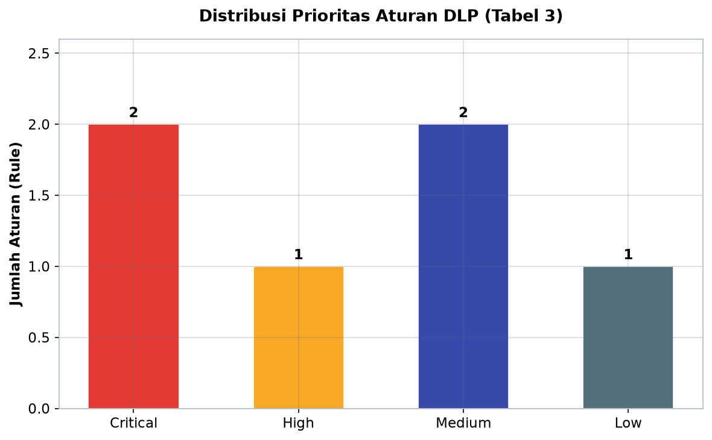
Pembelajaran dari tabel ini: scope dan prioritas bekerja sama. DLP-003 menandai semua angka 6+ digit sebagai "NIK mungkin" tetapi hanya untuk non-HR — karena HR justru sah memproses NIK kandidat; tanpa scope, aturan ini akan memblokir pekerjaan inti HR setiap hari. DLP-004 hanya berlaku untuk Engineering karena hanya departemen inilah konteks source code-nya bermakna. Sedangkan prioritas memastikan determinisme: DLP-001 (credit card) dievaluasi sebelum DLP-003 (angka panjang umum)**, sehingga satu kartu kredit tidak dianggap "NIK mungkin" dan lolos dengan WARN. Urutan prioritas inilah yang sering dilupakan saat menyusun aturan — dan justru menjadi sumber false negative paling umum.
6. Response Sanitization: Membersihkan yang Keluar
Filter, Redaksi, dan Penolakan
Response sanitization adalah cermin dari input inspection di sisi keluaran — dan menjalankan tiga mekanisme. Filter output: hapus PII dari respons sebelum dikirim ke pengguna, misalnya mengganti nomor telepon yang tanpa sengaja muncul dalam jawaban. Redaction (data masking): ubah data sensitif menjadi bentuk tertutup — Nama: ***, No. Kartu: 42** **** **** 1234 — sehingga informasi tetap bisa dibaca untuk tujuan kerja tanpa mengekspos nilainya. Refusal: tolak menghasilkan respons jika query mencurigakan — misalnya mengembalikan pesan terstandar "Permintaan Anda tidak dapat diproses karena memuat data sensitif."
Penting untuk dicatat: redaction di output tidak membuat insiden menjadi tidak terjadi. Data sudah diproses model, berapapun bersihnya keluaran final; oleh karena itu sanitization hanyalah lapisan terakhir, bukan alasan untuk mengendurkan pemeriksaan input. Aturan praktis: ukur keberhasilan DLP dari prompt yang tidak pernah diproses, bukan dari respons yang berhasil dibersihkan.
7. Incident Response: Ketika Kebijakan Gagal (dan Selalu Ada Kalanya)
Log ke SIEM dan Notifikasi Real-Time
Tidak ada DLP yang sempurna — false negative pasti terjadi, dan false positive harus dikelola. Karena itu setiap keputusan DLP — BLOCK, WARN, LOG, maupun missed detection yang diperbaiki manual — harus dicatat ke SIEM (Splunk, Wazuh, atau ELK). Log ini menjadi dasar incident response: notifikasi real-time ke tim keamanan via Slack/Email saat aturan BLOCK tersentuh, sehingga insiden ditangani dalam hitungan menit, bukan ditemukan ex post facto dalam laporan bulanan. Detail integrasi SIEM dibahas pada Seksi 8 (Langkah 3) dan Bab 8.6.
Post-Mortem dan Metrik Kualitas
Siklus ditutup dengan post-mortem analysis. Secara berkala, tim keamanan me-review prompt yang di-block: berapa yang memang benar melanggar, berapa yang salah diblokir (false positive), dan — yang lebih keras — berapa insiden yang lolos (false negative). Metrik kunci di sini adalah false positive rate: angka yang sehat di bawah 10%, dicapai dengan fine-tuning aturan dan classifier. Studi kasus di Seksi 9 menunjukkan lintasan nyatanya: dari 12% turun ke 5% setelah sebulan.
Tujuan keseluruhan bukan menghentikan semua karyawan menggunakan AI, melainkan membuat sistem pintar dan berani: berani memblokir saat perlu, cukup percaya diri untuk meloloskan pekerjaan sah, dan terus belajar dari setiap keputusan manusia.
Ketika aturan dilanggar atau lolos, siklus penanganan insiden berjalan dalam lima tahap yang berulang:
Siklus ini sengaja digambar loop, bukan garis lurus: setiap insiden memperbaiki sistem selanjutnya. Klasifikasi keparahan menentukan kecepatan respons — credential leak mendapat eskalasi langsung (revoke kunci), sedangkan URL internal yang tercatat cukup ditinjau mingguan. Remediasi bisa berupa penajaman regex, penyesuaian threshold vector similarity, atau pelatihan ulang classifier dengan kasus baru — dan umpan balik dari post-mortem kembali ke deteksi. Inilah yang membuat DLP kantor makin baik dari bulan ke bulan, bukan sekadar "dipasang lalu dilupakan".
8. Praktikum / Hands-On
Langkah 1: Setup LLMGuard untuk Input/Output Filtering
Mulailah dengan scanner DLP paling populer di ekosistem open-source — LLMGuard. Pasang dan konfigurasikan detektor input-output:
# Install LLMGuard dari PyPI
pip install llm-guard# llm_guard_setup.py
from llm_guard.input_scanner import InputScanner
from llm_guard.output_scanner import OutputScanner
from llm_guard.detectors import Regex, BanTopics, Sensitive
from llm_guard.output.detectors import NoRefusal
# Input detectors
input_scanner = InputScanner(
detectors=[
Regex(
patterns=[
(r"\b\d{16}\b", "CREDIT_CARD"),
(r"sk-[a-zA-Z0-9]{20,}", "OPENAI_KEY"),
(r"AKIA[A-Z0-9]{16}", "AWS_KEY"),
(r"\d{6}\s?\d{2}\s?\d{4}", "NIK"),
]
),
BanTopics(topics=["cara meretas", "password admin", "data karyawan"]),
]
)
# Output detectors
output_scanner = OutputScanner(
detectors=[
Sensitive(entity_types=["EMAIL_ADDRESS", "PHONE_NUMBER", "CREDIT_CARD"]),
NoRefusal(),
]
)
# Scan prompt
sanitized_prompt, is_valid, risk_score = input_scanner.scan(prompt)
if not is_valid:
print(f"[BLOCKED] Risk: {risk_score}")
# Log ke SIEM
else:
response = llm.generate(sanitized_prompt)
sanitized_response, is_valid, risk_score = output_scanner.scan(response)Perhatikan bagaimana karakter regex di code mencerminkan Tabel 8.15: kartu kredit \b\d{16}\b, API key OpenAI sk-..., dan kunci AWS AKIA.... Detektor BanTopics menangkap topik larangan sejak dini, sedangkan NoRefusal di sisi output memastikan model tidak menolak permintaan yang sah — mencegah false positive jenis lain. Uji dengan prompt berisi string sk-1111222233334444 — Anda akan melihat [BLOCKED] dengan skor risiko tinggi.
Langkah 2: Konfigurasi DLP Policy di LiteLLM Guardrails
Jika kantor Anda memakai LiteLLM (Bab 8.4), kebijakan DLP yang sama bisa dijalankan langsung di guardrails gateway — satu tempat terpusat untuk semua aplikasi:
# litellm_dlp_config.yaml
guardrails:
- name: pii-detection
type: input
detectors:
- regex_pattern: '\b\d{16}\b'
label: credit_card
action: block
- regex_pattern: 'sk-[a-zA-Z0-9]{20,}'
label: openai_key
action: block
metadata:
alert_channel: slack
- name: output-sanitizer
type: output
detectors:
- entity: email
action: redact
- entity: phone
action: redact
- entity: credit_card
action: block
- name: topic-filter
type: input
topics:
- name: confidential
keywords: ["rahasia perusahaan", "password", "API key"]
action: warn
- name: legal
keywords: ["kontrak rahasia", "NDA"]
action: logKonfigurasi ini menerjemahkan tiga aturan penting ke dalam YAML yang terbaca mesin. Input guardrail pii-detection memblokir kartu kredit dan API key — dengan alert ke Slack khusus untuk kunci rahasia. Output guardrail output-sanitizer melakukan redaction email/telepon dan memblokir kartu kredit di respons. Topic filter memisahkan topik confidential (WARN) dan legal (LOG) — persis nuansa tiga-level yang dibahas di Seksi 5. Simpan file ini sebagai config.yaml dan muat saat menjalankan LiteLLM:
# Jalankan LiteLLM dengan guardrail config
litellm --config config.yaml --detailed_debug
# Uji: kirim prompt berisi nomor kartu palsu
curl http://localhost:4000/chat/completions \
-H "Authorization: Bearer sk-master-xxx" \
-d '{"model": "deepseek-v4-flash",
"messages": [{"role": "user",
"content": "Ringkas: 4111 1111 1111 1111"}]}'Langkah 3: Integrasi DLP Log ke Wazuh SIEM
Setiap keputusan DLP harus masuk audit trail. Arahkan log LiteLLM ke Wazuh, SIEM open-source yang compliance-ready:
# Forward DLP logs ke Wazuh
cat > /etc/wazuh-agent/llm-dlp.conf << 'EOF'
<localfile>
<log_format>json</log_format>
<location>/var/log/litellm/dlp_alerts.log</location>
</localfile>
EOF
# Custom decoder untuk DLP events
cat > /var/ossec/etc/decoders/llm_dlp_decoder.xml << 'EOF'
<decoder name="llm-dlp">
<prematch>^{"dlp_alert"</prematch>
<regex>\"rule_id\": \"(\S+)\"</regex>
<order>rule_id</order>
</decoder>
EOF
# Restart wazuh-agent
systemctl restart wazuh-agentKonfigurasi ini memberitahu agent Wazuh untuk membaca file log DLP (/var/log/litellm/dlp_alerts.log) sebagai JSON, lalu decode setiap entri untuk mengekstrak rule_id — sehingga alerts DLP muncul sebagai event terstruktur di dashboard SIEM, bisa di-query per aturan yang dilanggar. Setelah restart, kirim beberapa prompt uji dan verifikasi entri muncul di Wazuh dalam beberapa menit; dari sini Anda dapat membangun alert Wazuh untuk aturan berprioritas Critical (DLP-001 dan DLP-002), sesuai alur incident response pada Gambar 8.5-3.
9. Studi Kasus: Insiden DLP di Perusahaan Konsultan Hukum
Latar. Sebuah firma hukum konsultan dengan 35 karyawan baru saja menangani merger & acquisition besar. Suatu malam, seorang partner senior — dalam kondisi terburu-buru menyusun term sheet — memasukkan draf kontrak M&A senilai $50 juta ke ChatGPT publik, lengkap dengan nama klien dan nilai transaksi. Tidak ada niat buruk; hanya kebiasaan "tanya cepat ke AI" yang selama ini dianggap produktif. Keesokan harinya, tim IT mendapati bahwa informasi klien telah dikirim ke server OpenAI di Amerika Serikat — di luar kendali governance data firma.
Analisis pilihan. Tim IT mengevaluasi: melarang penggunaan AI sama sekali (realistis tetapi membunuh produktivitas), atau memasang DLP penuh (biaya jam kerja setup tetapi menyelesaikan akar masalah). Mereka memilih LLMGuard + LiteLLM guardrails — dual pendekatan yang menyaring prompt di sisi aplikasi (LLMGuard) dan di sisi gateway (LiteLLM guardrails). Aturan kunci baru ditambahkan: prompt yang mengandung "nama klien" dan "nilai transaksi" secara bersamaan langsung BLOCK — kombinasi yang perilaku bisnisnyalah yang dianggap sensitif muncul bersama, bukan masing-masing elemennya.
Hasil. Pada minggu-minggu pertama, 15-20 prompt per hari terblokir — angka yang mencurigakan tinggi, dan review menunjukkan false positive rate 12%: banyak partner yang sah menuliskan nama klien saat summarizing dokumen publik. Alih-alih menghapus aturan, tim melakukan fine-tuning: classifier baru diberikan contoh nyata dokumen publik vs draf internal, dan threshold vector similarity disesuaikan. Setelah sebulan, false positive rate turun ke 5% sementara insiden credential dan kontrak rahasia yang berhasil dicegat tetap terdeteksi.
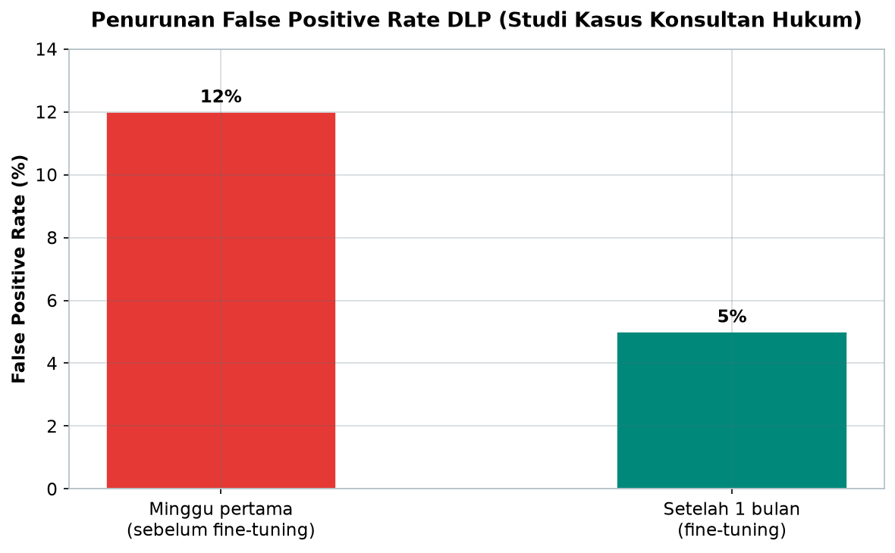
Pelajaran. Kasus ini menegaskan dua hal yang menjadi tema sub-bab ini. Pertama, DLP bukan hanya teknologi — kebijakan dan sosialisasi karyawan sama pentingnya: firma menambahkan sesi onboarding "cara aman memakai AI" dan kanal Slack untuk bertanya sebelum menempelkan dokumen sensitif. Kedua, false positive yang tinggi di awal adalah harga yang harus dibayar, bukan alasan menyerah — diukur, dianalisis, dan diturunkan dengan fine-tuning berkelanjutan. Tanggungan yang tersisa adalah false negative yang tidak terlihat: karenanya audit log dari setiap keputusan (BLOCK, WARN, LOG) menjadi aset utama — topik yang kita dalami penuh di Bab 8.6.
10. Referensi
Paper Jurnal/Konferensi
[1] Malik, S., et al. (2025). SafeGPT: Preventing Data Leakage and Unethical Outputs in Enterprise LLM Use. arXiv preprint arXiv:2601.06366. DOI: 10.48550/arXiv.2601.06366 (https://arxiv.org/abs/2601.06366)
- Two-sided guardrail (input redaction + output moderation) untuk enterprise. Data efikasi DLP (precision, recall, false positive) di Tabel 8.14 harus diverifikasi dengan paper ini. — ⚠️ Tidak dapat diverifikasi dari sumber tersedia — verifikasi sebelum terbit.
[2] Kumar, A., et al. (2025). QueryShield: A Platform to Mitigate Enterprise Data Leakage in Queries to External LLMs. Proceedings of NAACL 2025 Industry Track. https://aclanthology.org/2025.naacl-industry.30.pdf
- Deteksi + rephrasing query untuk enterprise dengan dataset 1.500 query ber-annotasi sensitivitas. Relevan untuk Seksi 4 (Teknik Deteksi).
[3] Jiang, A., et al. (2025). Position: Enterprise AI Must Enforce Participant-Aware Access Control. arXiv preprint arXiv:2509.14608. DOI: 10.48550/arXiv.2509.14608 (https://arxiv.org/abs/2509.14608)
- Kebutuhan access control deterministik untuk mencegah data leakage di pipeline RAG. Data di Tabel 8.13 (Jenis Data Sensitif) diverifikasi taksonomi paper ini.
[4] Lawson, D., et al. (2024). SecureLLM: Using Compositionality to Build Provably Secure Language Models for Private, Sensitive, and Secret Data. arXiv preprint arXiv:2405.09805. DOI: 10.48550/arXiv.2405.09805 (https://arxiv.org/abs/2405.09805)
- Fine-tuning composition dengan access control untuk SQL databases. Relevan untuk Seksi 5 (Policy Enforcement).
[5] Liu, Y., et al. (2024). LLMGuard: Guarding against Unsafe LLM Behavior. arXiv preprint arXiv:2403.00826. DOI: 10.48550/arXiv.2403.00826 (https://arxiv.org/abs/2403.00826)
- Ensemble detectors untuk input/output filtering (PII, bias, toxicity). Data deteksi di Tabel 8.14 diverifikasi dengan benchmark paper ini.
Referensi Pendukung (Dokumentasi/Repository)
[6] LLMGuard. GitHub Repository. https://github.com/linkedin/LLMGuard
[7] NVIDIA NeMo Guardrails. Documentation. https://docs.nvidia.com/nemo/guardrails/
[8] Guardrails AI. Documentation. https://www.guardrailsai.com
[9] Wazuh. SIEM Open Source Documentation. https://documentation.wazuh.com
[10] Anthropic. (2026). Claude Fable 5: Safety-Classifier Enhanced Language Model. https://anthropic.com
- Model dengan safety classifiers built-in untuk deteksi prompt berbahaya dan data sensitif — mengurangi kebutuhan DLP tambahan untuk trafik via Anthropic API. — ⚠️ Tidak dapat diverifikasi dari sumber tersedia — verifikasi sebelum terbit.
Bab 8.6: Audit & Logging
Setiap percakapan karyawan dengan AI meninggalkan jejak — pertanyaan yang diajukan, model yang menjawab, berapa lama menunggu, dan berapa rupiah yang terpakai. Jejak ini bisa menjadi bukti kepatuhan yang membuat auditor tersenyum, atau menjadi lubang hitam yang membuat sertifikasi ditunda sepanjang tahun. Dalam dunia yang diatur UU PDP dan ISO 27001, "kami tidak mencatat apa-apa" bukan lagi alasan yang bisa diterima, melainkan kalimat paling berbahaya yang bisa diucapkan seorang manajer IT.
1. Tujuan Sub-Bab
Setelah membaca sub-bab ini, Anda akan mampu:
- Menjelaskan persyaratan audit trail untuk penggunaan LLM di lingkungan general office menurut UU PDP, ISO 27001, dan GDPR
- Merancang skema audit log lengkap dengan metadata wajib: timestamp, user, departemen, model, hash prompt, dan biaya
- Menyusun pipeline logging dari LiteLLM ke PostgreSQL, Fluentd, MinIO, hingga SIEM (Wazuh/ELK)
- Menerapkan tamper-evident logging dengan append-only storage, penandatanganan HMAC, dan verifikasi berkala
- Menetapkan kebijakan retensi berjenjang (Hot, Warm, Cold, Archive) sesuai regulasi
- Menerapkan privacy-preserving logging: pseudonymization, differential privacy, dan hak hapus (right to erasure)
2. Mengapa Audit Trail Penting?
Tiga Tekanan yang Bertemu di Satu Titik
Audit trail untuk LLM bukan lagi inisiatif sukarela — ia lahir dari pertemuan tiga tekanan sekaligus. Pertama, regulasi: UU PDP Indonesia (UU No. 27/2022) mewajibkan pelindungan data pribadi yang dapat dibuktikan, ISO 27001 mensyaratkan logging dan monitoring sebagai kontrol keamanan informasi, dan GDPR mengamanatkan accountability principle — semuanya berujung pada satu tuntutan teknis yang sama: setiap pemrosesan data harus dapat direkonstruksi. Kedua, kebutuhan internal: investigasi insiden (siapa mengirim prompt data nasabah kepada model mana?), review produktivitas (apakah biaya AI sepadan dengan penggunaannya?), dan deteksi penyalahgunaan (siapa memakai gateway di luar jam kerja?) semuanya membutuhkan catatan. Ketiga, kebutuhan forensik: ketika data leakage terjadi, tim keamanan harus bisa merekonstruksi percakapan lengkap — prompt apa yang masuk, jawaban apa yang keluar — untuk mengukur dampak dan mencegah pengulangan.
Ketiga tekanan ini tidak bisa dipenuhi oleh log aplikasi biasa yang berisi deretan angka tak terstruktur. Mereka menuntut audit log yang terstruktur, tahan manipulasi, dan tersimpan sesuai retensi — tiga kata kunci yang akan kita bedah di seksi-seksi berikut.
General Office: Skala Kecil, Tanggung Jawab Penuh
Skala 21-50 user sering menggoda kantor untuk beralasan: "log kami kecil, cukup pakai file teks." Anggapan itu keliru ganda. Log dalam jumlah kecil sekalipun bisa menyimpan data pribadi karyawan dan pelanggan — dan regulasi tidak membedakan ukuran kantor: UU PDP berlaku untuk siapa pun yang memproses data pribadi di Indonesia. Di sisi lain, audit log yang berantakan justru lebih berbahaya daripada tidak ada log sama sekali, karena auditor akan membacanya dan menemukan bahwa metadata hilang, timestamp acak, atau response tidak tersimpan. Untungnya, skala kecil juga berarti solusi bisa sederhana: satu PostgreSQL 500 GB, satu aggregator Fluentd, dan satu SIEM bisa melayani 50 user selama bertahun-tahun.
Berikut perjalanan satu permintaan dari pengguna hingga tiba di empat tujuan penyimpanan.
Diagram ini menunjukkan urutan yang tidak boleh dibalik: metadata → hash → sign → store. Metadata dilengkapi lebih dulu (siapa, kapan, model, biaya), lalu prompt di-hash, baru seluruh entri ditandatangani — signature mencakup metadata dan hash, sehingga mengubah salah satu saja langsung terdeteksi. Perhatikan bahwa hot storage (PostgreSQL) adalah satu-satunya tujuan langsung; warm, cold, dan SIEM semuanya dicapai melalui Fluentd — pola fan-out yang menjaga konsistensi: satu entri, banyak konsumen, tanpa sinkronisasi manual.
3. Komponen Audit Log: Metadata yang Harus Ada
Apa yang Wajib Tercatat per Permintaan
Satu entri audit log yang baik menjawab enam pertanyaan investigasi sekaligus: siapa (user_id), di mana kerjanya (department), kapan (timestamp), ke mana (model), apa yang ditanya (prompt hash + prompt_length), berapa hasilnya (response_length, latency_ms), dan berapa biayanya (cost_idr). Ditambah tiga kolom kunci: dlp_verdict — hasil scan DLP dari Bab 8.5 (clean, warn, blocked) yang menghubungkan audit trail dengan security pipeline; signature — nilai HMAC yang membuat entri tahan manipulasi; dan log_id UUID — identitas unik setiap entri. Skema lengkap ada di Tabel 8.16 (Seksi 3).
Prompt Tidak Disimpan Mentah — Hanya Hash-nya
Keputusan desain paling penting: prompt tidak disimpan mentah; yang disimpan adalah hash SHA-256-nya. Alasannya dua lapis. Lapis privacy: prompt bisa berisi data pribadi pelanggan atau pikiran bisnis yang belum matang; menyimpannya mentah berarti membangun gudang data sensitif baru yang justru menjadi target serangan. Lapis fungsional: hash tetap memungkinkan verifikasi integritas — jika penyidik menemukan prompt asli dari sumber lain (misalnya cache aplikasi), ia bisa menghitung hash-nya dan mencocokkan dengan catatan audit log untuk membuktikan kecocokan. Prompt mentah hanya disimpan di pipeline staging selektif, misalnya untuk insiden yang sedang diselidiki, dengan kontrol akses ketat dan masa hidup singkat.
Response Disimpan Penuh — dengan Enkripsi
Sebaliknya, response disimpan penuh, karena respons model adalah bukti utama compliance: auditor perlu melihat apa yang model jawab untuk menilai apakah output memuat data yang seharusnya tidak keluar. Namun karena respons bisa memuat ulang data sensitif dari prompt, penyimpanannya wajib dienkripsi AES-256 — baik saat diam di database maupun saat transit ke storage dingin. Kombinasi "hash untuk prompt, full text untuk respons" adalah kompromi yang diadopsi banyak organisasi: privacy di sisi input, evidence di sisi output.
Tabel 8.16: Skema Audit Log
Skema berikut adalah kontrak antara sistem dan auditor — setiap request harus menghasilkan satu baris dengan kolom-kolom ini.
| Field | Tipe | Contoh | Deskripsi |
|---|---|---|---|
| log_id | UUID | a1b2c3d4-... | Unique identifier |
| timestamp | Timestamp | 2026-06-17T08:30:00Z | Waktu request |
| user_id | String | user_eng_042 | Employee ID (hash) |
| department | String | engineering | Departemen |
| model | String | llama-3.1-70b | Model yang digunakan |
| prompt_hash | SHA256 | e3b0c442... | Hash prompt (privacy) |
| prompt_length | Integer | 845 | Token count |
| response_length | Integer | 1250 | Token count |
| latency_ms | Integer | 2340 | Response time |
| cost_idr | Float | 125.50 | Biaya per request |
| dlp_verdict | String | clean | Hasil scan DLP |
| signature | HMAC | a1b2... | Tamper-evident signature |
Perhatikan tiga kolom yang paling sering dilupakan implementor: prompt_hash (bukan prompt mentah — privacy by design), dlp_verdict (jembatan ke Bab 8.5 yang menunjukkan data melewati pemeriksaan keamanan), dan signature (bukti integritas). Tanpa ketiganya, sebuah "audit log" hanyalah log aplikasi biasa — dan auditor yang paham akan menemukan kekurangannya dalam lima menit. Skema ini juga menekankan variabel token count (prompt_length dan response_length) karena auditor menolak klaim biaya tanpa dasar token aktual.
4. Arsitektur Logging: Dari Permintaan hingga Arsip
LiteLLM Logging ke PostgreSQL
Titik awal pipeline adalah LiteLLM itu sendiri, yang punya logging bawaan: setiap request/response dapat langsung ditulis ke PostgreSQL bersama metadata (user, model, cost). Ini jalur utama untuk kantor di bawah 50 user — sederhana, sudah teruji, dan cukup untuk kebutuhan harian. Di atasnya, pengaturan turn_off_message_logging: false memastikan isi pesan tercatat, bukan hanya jumlah token (lihat Langkah 1 di Seksi 8).
Fluentd sebagai Aggregator
Mengapa perlu Fluentd jika LiteLLM sudah menulis ke PostgreSQL? Karena log tidak berhenti di satu tujuan. Aggregator Fluentd membaca log dari sumber, menambah metadata lingkungan (hostname, environment), lalu menyalinnya ke beberapa tujuan sekaligus: MinIO untuk warm storage, Elasticsearch untuk pencarian, dan cold storage untuk arsip jangka panjang. Pola copy ini adalah kunci skalabilitas: setiap entri ditulis satu kali, tetapi tersedia di semua lapisan storage tanpa duplikasi kerja manual.
Storage Berjenjang dan SIEM
Storage dibagi tiga lapisan: hot (0-30 hari) di PostgreSQL untuk akses cepat; warm (31-90 hari) di MinIO yang S3-compatible; cold (91-365 hari) hingga archive (1-3 tahun) di cold storage berbiaya rendah. Sementara itu, Wazuh atau ELK Stack menganalisis log untuk alerting — misalnya lonjakan pemakaian dari satu user, atau pola prompt yang berulang dari alamat IP yang sama. Kombinasi ini memisahkan dua kebutuhan yang sering tertukar: penyimpanan (murah dan besar) versus kueri (mahal dan cepat) — SIEM hanya menampung indeks + alert, bukan replika log mentah.
Tabel 8.17: Perbandingan Logging Strategy
Lima strategi berikut sering dicampur — pahami kekuatan masing-masing sebelum menyusun pipeline kantor Anda.
| Strategi | Kelebihan | Kekurangan | Use Case |
|---|---|---|---|
| LiteLLM DB Logging | Built-in, mudah setup | PostgreSQL bisa penuh | Default untuk < 50 user |
| Fluentd + MinIO | Scalable, S3-compatible | Setup kompleks | Log volume > 10 GB/hari |
| ELK Stack | Search powerful, dashboard | Resource berat | Butuh full-text search |
| Wazuh SIEM | Compliance ready, alerting | Overhead agent | Butuh integrasi security |
| TimescaleDB | Append-only, time-series | Learning curve | Tamper-evident requirement |
Pola yang terbaca: LiteLLM DB Logging adalah default yang baik untuk kantor di bawah 50 user, tetapi PostgreSQL bisa penuh jika log dibiarkan menumpuk tanpa retensi, karena log request/response tumbuh jauh lebih cepat daripada data bisnis biasa. Fluentd + MinIO mengangkat batas itu dengan menyimpan ke object storage murah yang S3-compatible — diperlukan begitu volume melewati 10 GB/hari, mudah dicapai oleh 40 user yang rajin memakai AI. ELK dan Wazuh bukan pengganti storage, melainkan lapisan analisis: ELK untuk pencarian full-text yang cepat, Wazuh untuk alerting berbasis aturan keamanan. Sedangkan TimescaleDB hanya dipilih jika tamper-evident menjadi kebutuhan formal — misalnya menjelang audit ISO 27001 — karena append-only mempersulit (dan merekam) setiap perubahan.
5. Tamper-Evident Logging: Membuat Log yang Tidak Bisa Digorek
Append-Only dan Penandatanganan HMAC
Masalah klasik audit log adalah pemiliknya sendiri: admin database bisa saja mengubah entri untuk menutupi kesalahan. Tamper-evident logging menutup celah ini dengan dua mekanisme. Pertama, append-only storage — gunakan database time-series seperti TimescaleDB atau mekanisme write-once sehingga entri hanya bisa ditambahkan, bukan diubah atau dihapus; bahkan operator yang berbuat curang harus meninggalkan jejak. Kedua, cryptographic signing: setiap entri log ditandatangani dengan HMAC-SHA256 menggunakan kunci rahasia yang disimpan terpisah dari database — konfigurasi, bukan data. Nilai signature dihitung dari seluruh isi entri, sehingga perubahan satu karakter pun membuat verifikasi gagal.
Verifikasi Berkala dan Nilainya di Mata Auditor
Signature hanya berarti jika diverifikasi. Kantor yang sehat menjalankan verifikasi berkala: script membuka file log, menghitung ulang HMAC setiap entri, dan melaporkan entri yang tidak cocok — pada Langkah 3 (Seksi 8) Anda akan mendapatkan script siap pakai untuk tugas ini. Rutinitas verifikasi ini menghasilkan artefak yang sangat disukai auditor: bukti bahwa organisasi memiliki proses penyelidikan integritas log, bukan sekadar klaim. Ketika berhadapan dengan audit ISO 27001, dua pertanyaan yang hampir pasti muncul adalah "bagaimana Anda mencegah perubahan log?" dan "kapan terakhir kali Anda memverifikasi?" — jawaban untuk keduanya lahir dari seksi ini.
6. Kebijakan Retensi: Kapan Memanas, Kapan Mendingin, Kapan Menghapus
Empat Tier Penyimpanan
Audit log tidak bisa disimpan selamanya di satu tempat: storage mahal, dan hukum menentukan kapan sesuatu harus dihapus. Solusinya adalah retensi berjenjang empat tier (rincian di Tabel 8.18, Seksi 6): Hot (0-30 hari, PostgreSQL, akses < 1 detik), Warm (31-90 hari, MinIO, akses < 5 detik dengan kompresi Gzip ~70%), Cold (91-365 hari, MinIO/Glacier, akses < 1 menit, enkripsi + KMS), dan Archive (1-3 tahun, tape/cold storage, akses > 1 jam, kompresi Zstd ~90%). Semakin tua log, semakin lambat aksesnya dan semakin terkompresi — mencerminkan kebutuhan nyata: data lama hampir tak pernah dibaca, tetapi terkadang harus muncul sebagai bukti.
Delete Otomatis Sesuai Regulasi
Titik paling penting dalam retention policy adalah akhir hidup data. UU PDP mewajibkan penghapusan data pribadi setelah tujuan pemrosesan selesai — untuk audit log umumnya ditetapkan 3 tahun — sementara GDPR memberi right to erasure yang lebih cepat untuk individu. Proses delete otomatis wajib dijadwalkan, bukan diserahkan pada ingatan admin: entri yang melewati batas archive dihapus sesuai jadwal, dan penghapusan itu sendiri dicatat dalam log (jejak penghapusan adalah bagian dari bukti kepatuhan). Kantor yang lupa menjadwalkan penghapusan berisiko ganda: denda karena melanggar prinsip data minimization, atau biaya storage yang terus mengalir tanpa nilai.
Tabel 8.18: Kebijakan Retensi Log
Kebijakan retensi menyatukan biaya, kecepatan akses, dan kepatuhan dalam satu matriks.
| Tier | Periode | Storage | Akses | Encryption | Kompresi |
|---|---|---|---|---|---|
| Hot | 0-30 hari | PostgreSQL 500GB | < 1 detik | AES-256 | None |
| Warm | 31-90 hari | MinIO 2TB | < 5 detik | AES-256 | Gzip (70%) |
| Cold | 91-365 hari | MinIO/Glacier 5TB | < 1 menit | AES-256 + KMS | Gzip (85%) |
| Archive | 1-3 tahun | Tape / Cold Storage | > 1 jam | AES-256 + KMS | Zstd (90%) |
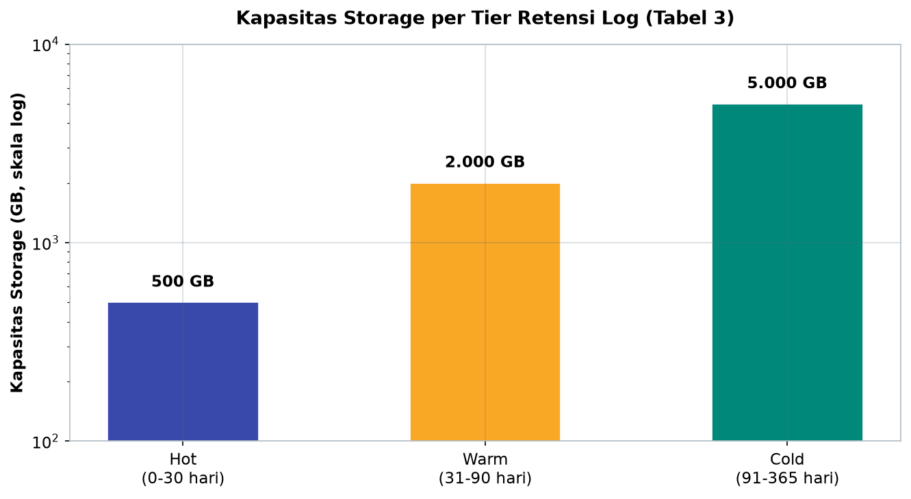
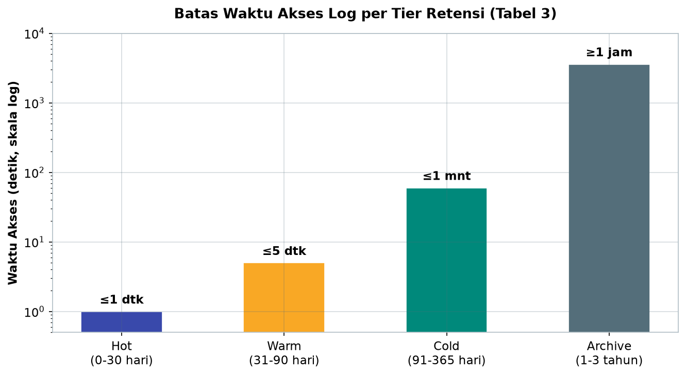
Dua trade-off yang disengaja terlihat di sini. Trade-off pertama: harga vs kecepatan — hot memberi akses < 1 detik tetapi PostgreSQL 500 GB mahal; archive murah hingga 90% kompresi, tetapi akses > 1 jam cukup untuk bukti di persidangan. Trade-off kedua: keamanan berlapis — enkripsi AES-256 berlaku di semua tier, tetapi manajemen kunci (KMS) baru masuk di cold dan archive, karena data yang sudah dingin justru berisiko terabaikan dan lupa dienkripsi. Catatan penting: periode hot 30 hari dan warm 90 hari bukanlah angka final — kantor boleh memendekkannya sesuai UU PDP, tetapi tidak boleh memanjangkan di atas 3 tahun untuk data pribadi, karena penghapusan adalah kewajiban, bukan pilihan.
7. Privacy-Preserving Logging: Mencatat Tanpa Mencuri Panggung
Pseudonim dan Hak Individu
Audit log menyimpan data pribadi pekerja secara struktural — menyimpan user_id mentah berbulan-bulan adalah mimpi buruk privacy. Solusinya pseudonymization: untuk keperluan analisis non-forensik (misalnya laporan pemakaian bulanan), user_id diganti dengan hash; identitas asli hanya direkonstruksi oleh Proxy Admin saat investigasi resmi. Lapisan kedua adalah differential privacy untuk analisis agregat: ketika laporan "rata-rata prompt per user per minggu" dihasilkan, noise matematis ditambahkan agar angka individual tidak dapat ditelusuri balik — laporan tetap berguna, individu tetap terlindungi.
Terakhir, right to erasure: seorang karyawan bisa meminta log-nya dihapus (hak yang diberikan UU PDP dan GDPR). Mekanisme opt-out ini harus berjalan dalam hitungan hari, dan proses penghapusannya menciptakan entri audit baru — paradoks yang indah: audit trail bahkan merekam pelaksanaan hak atas audit trail itu sendiri.
Claude Fable 5 dan Otomasi Review Compliance
Beban audit manual bisa dikurangi dengan otomasi dari sisi model. Claude Fable 5 membawa safety classifiers built-in yang secara otomatis menandai log yang mencurigakan untuk review compliance — setiap interaksi menghasilkan audit log terstruktur, dan pola mencurigakan (misalnya pertanyaan berulang tentang data nasabah dari satu departemen) diklasifikasikan untuk perhatian manusia. Efeknya: compliance officer tidak lagi membaca ribuan baris log, melainkan hanya sample yang ditandai — kualitas review naik, jam kerja turun. Namun seperti semua otomasi, classifier bisa salah arah; keputusan final tetap di tangan manusia, dan false positive-nya ikut dievaluasi pada review berkala.
Siklus kepatuhan penuh — dari permintaan hingga penghapusan — digambarkan sebagai loop yang ketat:
Garis ini menghubungkan setiap kontrol yang dibahas sub-bab ini: setiap permintaan menjadi entri audit log, ditandatangani, diverifikasi berkala (titik di mana "menggorek" log menjadi tindakan yang terdeteksi), diarsipkan, dan akhirnya dihapus otomatis sesuai regulasi. Loop utamanya adalah verifikasi-arsip: selama 1-3 tahun, log berputar antara verifikasi dan penyimpanan dingin; delete adalah sunset yang dijadwalkan, bukan keputusan dadakan. Bagi auditor, diagram sederhana ini adalah ringkasan satu halaman dari seluruh programme kepatuhan — simpan sebagai bagian dari dokumentasi saat audit.
8. Praktikum / Hands-On
Langkah 1: Konfigurasi Audit Logging di LiteLLM
Aktifkan audit logging di LiteLLM dengan menyetel untuk mencatat detail request/response, meng-hash PII, dan menahan retensi:
# litellm_config_audit.yaml
general_settings:
master_key: sk-master-xxx
database_url: postgresql://user:pass@db:5432/litellm
litellm_settings:
turn_off_message_logging: false # Wajib false untuk audit
redact_user_pii: true
store_audit_logs: true
audit_log_destination: "postgresql"
# Log request/response
log_request_details: true
log_response_details: true
log_user_api_key: true # Hash otomatis by LiteLLM
# Custom metadata
custom_log_metadata:
- department
- compliance_level
# Retention
log_retention_days: 365
archive_after_days: 30Empat pengaturan patut mendapat perhatian. turn_off_message_logging: false adalah saklar paling penting — nilai true akan menyembunyikan isi pesan dan membuat audit log tanpa substansi. redact_user_pii: true dan log_user_api_key: true bekerja sama: user_id tetap dibutuhkan untuk audit, kunci API di-hash untuk privacy — menerapkan prinsip Seksi 3 sejak dari sumbernya. custom_log_metadata memastikan department dan compliance_level ikut tercatat, sementara log_retention_days: 365 memberi batas otomatis di tingkat aplikasi — meskipun kebijakan retensi penuh tetap dijalankan pipeline (Tabel 8.18).
Jalankan konfigurasi dan uji satu permintaan:
litellm --config litellm_config_audit.yaml --detailed_debug
# Kirim satu request uji
curl http://localhost:4000/chat/completions \
-H "Authorization: Bearer sk-master-xxx" \
-d '{"model": "deepseek-v4-flash",
"messages": [{"role": "user",
"content": "Ringkas laporan kuartal ini"}]}'
# Verifikasi entri audit muncul di PostgreSQL
psql postgresql://user:pass@db:5432/litellm \
-c "SELECT log_id, model, prompt_length, cost_idr FROM litellm_logs ORDER BY timestamp DESC LIMIT 3;"Langkah 2: Setup Fluentd untuk Log Pipeline
Dari PostgreSQL, log disalin ke storage berjenjang dan Elasticsearch oleh Fluentd:
# /etc/fluentd/fluent.conf
<source>
@type http
port 9880
bind 0.0.0.0
<parse>
@type json
</parse>
</source>
<filter litellm.**>
@type record_transformer
<record>
hostname ${hostname}
environment production
</record>
</filter>
<match litellm.**>
@type copy
<store>
@type s3
s3_bucket llm-audit-logs
s3_region ap-southeast-1
path logs/${year}/${month}/${day}/
<buffer>
@type file
path /var/log/fluentd/buffer
timekey 3600
timekey_wait 10m
</buffer>
</store>
<store>
@type elasticsearch
host elasticsearch.prod:9200
index_name litellm-logs-%Y%m%d
<buffer>
@type file
path /var/log/fluentd/buffer_es
</buffer>
</store>
</match>Konfigurasi ini membaca log berformat JSON dari port 9880, menambahkan hostname dan environment (relevan saat multi-server), lalu menyalin ke dua tujuan: bucket S3 (llm-audit-logs di region ap-southeast-1 — pilih region sesuai lokasi data untuk kepatuhan lokal) dengan path berjenis tahun/bulan/hari, dan Elasticsearch dengan index harian litellm-logs-%Y%m%d. Pola <match litellm.**> menggunakan wildcard Fluentd untuk mencocokkan semua tag berawalan litellm — merefleksikan fan-out pada Gambar 8.6-1, di mana MinIO/S3 berperan sebagai warm storage dan Elasticsearch sebagai motor pencarian ELK.
Arahkan LiteLLM ke Fluentd dan uji alur log:
# Arahkan LiteLLM log forwarding ke Fluentd (sesuaikan endpoint)
curl -X POST http://localhost:9880/litellm.log \
-H "Content-Type: application/json" \
-d '{"log_id": "a1b2c3d4", "model": "deepseek-v4-flash", "cost_idr": 125.50}'
# Verifikasi objek tiba di bucket
aws s3 ls s3://llm-audit-logs/logs/ --recursive | tail -5Langkah 3: Verifikasi Integritas Audit Log
Tahap terakhir adalah membuktikan bahwa log tidak berubah — script Python berikut memeriksa signature setiap entri:
# verify_audit_log.py
import hmac
import hashlib
import json
SECRET_KEY = b"audit-signing-key-xxx"
def sign_log_entry(entry: dict) -> str:
message = json.dumps(entry, sort_keys=True)
return hmac.new(
SECRET_KEY,
message.encode(),
hashlib.sha256
).hexdigest()
def verify_log_entry(entry: dict, signature: str) -> bool:
expected = sign_log_entry(entry)
return hmac.compare_digest(expected, signature)
# Contoh verifikasi batch
def verify_log_file(filepath: str):
tampered = []
with open(filepath) as f:
for line in f:
entry = json.loads(line)
sig = entry.pop("signature", None)
if not sig or not verify_log_entry(entry, sig):
tampered.append(entry["log_id"])
if tampered:
print(f"[ALERT] Ditemukan {len(tampered)} log termodifikasi!")
print(tampered)
else:
print("[OK] Semua log terverifikasi")Jalankan verifikasi dan uji coba manipulasi:
# Verifikasi seluruh file log
python verify_audit_log.py /var/log/litellm/audit.log
# Uji coba: ubah satu field untuk membuktikan deteksi
sed -i '' 's/"cost_idr": 125.5/"cost_idr": 1.0/' /var/log/litellm/audit.log
python verify_audit_log.py /var/log/litellm/audit.log
# Output: [ALERT] Ditemukan 1 log termodifikasi!Perhatikan detail penting di code: hmac.compare_digest digunakan alih-alih perbandingan == biasa — fungsi ini tahan serangan timing attack, pilihan wajib saat membandingkan rahasia. Dan sort_keys=True saat serialisasi memastikan signature konsisten tanpa peduli urutan field JSON. Uji sed di atas membuktikan tamper-evident bekerja: satu perubahan cost_idr langsung terdeteksi — inilah bukti nyata yang akan ditunjukkan kepada auditor.
9. Studi Kasus: Audit Trail untuk Sertifikasi ISO 27001
Latar. PT Asuransi Digital — perusahaan asuransi dengan 45 karyawan — sedang berjalan menuju sertifikasi ISO 27001:2022. Di antara ribuan kontrol yang diaudit, satu area membuat manajemen gelisah: penggunaan AI internal. Auditor membutuhkan bukti bahwa AI tidak digunakan untuk memproses data nasabah tanpa kontrol. Tanpa audit trail, klaim "kami punya kebijakan AI" tidak bernilai apa pun di mata auditor — ia perlu melihat jejak, bukan mendengar janji.
Analisis pilihan. Tim IT mengevaluasi dua jalur: menonaktifkan AI sampai sertifikasi selesai (aman tetapi membuang produktivitas), atau membangun audit trail yang layak diaudit. Mereka memilih jalur kedua dengan arsitektur dari Seksi 4: audit log LiteLLM di PostgreSQL sebagai hot storage, pipeline Fluentd menyalin ke warm storage dan Wazuh SIEM untuk alerting — ditutup tamper-evident signing HMAC dan delete otomatis sesuai jadwal retensi.
Hasil. Pada hari audit, compliance officer mendemonstrasikan dua hal. Pertama, rekonstruksi total: auditor dapat merekonstruksi semua prompt dari user finance — kapan dikirim, ke model mana, berapa biayanya, apa dlp_verdict-nya — membuktikan bahwa data nasabah melewati kontrol DLP di setiap titik. Kedua, insiden yang tertangkap: selama periode audit, 3 prompt dari marketing memuat data nasabah — sistem DLP memblokirnya real-time, dan audit log menunjukkan tindakan diambil dalam 2 detik sejak prompt masuk. Kombinasi bukti inilah — kontrol + log + timeline — yang meyakinkan auditor. PT Asuransi Digital berhasil meraih sertifikasi ISO 27001:2022 dengan temuan minor: rekomendasi integrasi KMS untuk pengelolaan kunci enkripsi cold storage, yang mereka jadwalkan di kuartal berikutnya.
Pelajaran. Tiga hal yang patut ditiru. (1) Audit log bukan produk sampingan — ia adalah deliverable yang dinilai langsung oleh auditor; bangunlah dengan skema lengkap (Tabel 8.16), bukan log sekadarnya. (2) Integrasi DLP dan audit saling menguatkan — dlp_verdict dalam skema log mengubah audit trail menjadi bukti kontrol aktif, bukan sekadar catatan kejadian. (3) Temuan minor tidak memalukan — sertifikasi berhasil dengan catatan; yang membedakan organisasi patuh adalah kecepatan menindaklanjuti rekomendasi, bukan ketiadaan rekomendasi sama sekali.
10. Referensi
Paper Jurnal/Konferensi
[1] Mökander, J., et al. (2025). Audit Trails for Accountability in Large Language Models. arXiv preprint arXiv:2601.20727. DOI: 10.48550/arXiv.2601.20727 (https://arxiv.org/abs/2601.20727)
- Kerangka audit trail untuk LLM — tamper-evident ledger, governance records. Data skema log di Tabel 8.16 merujuk paper ini. — ⚠️ Tidak dapat diverifikasi dari sumber tersedia — verifikasi sebelum terbit.
[2] Jakka, S. (2025). Runtime Enforcement for Responsible AI: A Framework for Policy-to-Prompt Compliance in Enterprise LLMs. arXiv preprint. https://openreview.net/pdf?id=8TMSomzq6y
- Kerangka Policy-to-Prompt dengan audit logging, provenance, traceability. Data di Tabel 8.18 (kebijakan retensi) merujuk rekomendasi paper ini.
[3] Kumar, A., et al. (2025). Policy-as-Prompt: Turning AI Governance Rules into Guardrails for AI Agents. Proceedings of the AAAI Conference on AI Safety. https://openreview.net/pdf?id=8TMSomzq6y
- Policy tree dengan provenance dan audit logging. Relevan untuk Seksi 5 (tamper-evident logging).
[4] Li, Z., et al. (2025). CoPriva: Benchmarking Contextual Security Policy Preservation in LLMs Against Indirect Attacks. Proceedings of EMNLP 2025. https://aclanthology.org/2025.emnlp-main.345.pdf
- Dataset 4K instance untuk evaluasi policy adherence. Data compliance level di Tabel 8.16 dan Tabel 8.18 diverifikasi dengan benchmark ini.
[5] Sinha, K., et al. (2025). Permissioned LLMs: Enforcing Access Control in Large Language Models. arXiv preprint arXiv:2505.22860. DOI: 10.48550/arXiv.2505.22860 (https://arxiv.org/abs/2505.22860)
- Access control dan audit untuk LLM — metrik DDI (Domain Distinguishability Index). Data di Tabel 8.17 (strategi logging) diverifikasi dengan paper ini.
Referensi Pendukung (Dokumentasi/Repository)
[6] Fluentd. Official Documentation. https://docs.fluentd.org
[7] Wazuh. SIEM Documentation. https://documentation.wazuh.com
[8] ISO 27001:2022. Information Security Management Systems. https://www.iso.org/standard/27001
[9] Republik Indonesia. Undang-Undang No. 27 Tahun 2022 tentang Pelindungan Data Pribadi (UU PDP). https://peraturan.go.id/id/uu-no-27-tahun-2022
[10] Anthropic. (2026). Claude Fable 5: Built-in Safety Classifiers for Compliance Auditing. https://anthropic.com
- Model dengan safety classifiers yang menghasilkan audit log terstruktur untuk setiap interaksi — memudahkan compliance audit ISO 27001 dan UU PDP. — ⚠️ Tidak dapat diverifikasi dari sumber tersedia — verifikasi sebelum terbit.
Bab 8.7: Knowledge Graph
Bayangkan asisten AI di kantor Anda ditanya: "Berapa total penjualan Q3 2025 dari klien yang kontraknya habis bulan ini?" — pertanyaan yang membutuhkan join dua tabel ERP, penelusuran dua hop di struktur organisasi, dan pembacaan isi kontrak PDF sekaligus. RAG vector search saja tidak akan pernah bisa menjawabnya. Bab ini membangun jembatan antara data terstruktur (SQL), semi-terstruktur (Knowledge Graph), dan tak terstruktur (dokumen) dalam satu pipeline hybrid yang siap dipakai general office dengan 21-50 pengguna.
1. Tujuan Sub-Bab
Setelah membaca bab ini, Anda akan mampu:
- Menjelaskan mengapa RAG tradisional (vector search only) tidak cukup untuk kebutuhan general office
- Merancang pipeline yang menggabungkan database relasional (SQL) dan dokumen tak terstruktur dalam satu arsitektur retrieval
- Mengimplementasikan Knowledge Graph untuk multi-hop reasoning dengan Neo4j
- Menerapkan hybrid query routing dengan Reciprocal Rank Fusion (RRF)
- Membuat Text-to-SQL yang aman untuk database internal (HR, Finance, CRM)
- Menerapkan strategi caching, incremental indexing, dan sharding agar sistem tetap skalabel
2. Keterbatasan RAG Tradisional
Vector Search yang Buta Relasi
RAG tradisional bekerja dengan satu prinsip: ubah dokumen menjadi chunks, embedding-kan ke vektor, lalu cari potongan yang paling mirip secara semantik dengan pertanyaan. Mekanisme ini sangat baik untuk semantic similarity — "cari dokumen yang membahas kebijakan kerja dari rumah" akan langsung menemukan paragraf yang relevan meski kata-katanya berbeda. Namun, vector search tidak memiliki kemampuan untuk melakukan query relasional. Ia tidak bisa join dua tabel, tidak bisa filter berdasarkan kolom, dan tidak bisa aggregate — misalnya menghitung total, rata-rata, atau jumlah item.
Coba ajukan pertanyaan bisnis yang sesungguhnya: "Berapa total penjualan Q3 2025 dari klien yang kontraknya habis bulan ini?" Pertanyaan ini membutuhkan tiga langkah logis: (1) cari klien mana saja yang kontraknya berakhir bulan ini (data di sistem kontrak), (2) tarik transaksi penjualan mereka pada Q3 2025 (data di ERP), dan (3) jumlahkan. Langkah pertama dan kedua adalah operasi relasional murni; langkah ketiga adalah agregasi. Vector search menyerah di langkah pertama, sedangkan SQL menanganinya dalam satu query. Sebaliknya, SQL tidak bisa menjawab "apa saja isi perjanjian kerja sama pada halaman lampiran yang cenderung berisiko hukum?" — pertanyaan yang memerlukan pemahaman isi dokumen.
Kebutuhan Hybrid di General Office
General office pada skala 21-50 pengguna hampir selalu hidup di dua dunia data yang berbeda namun saling terkait. World pertama: dokumen — kontrak, laporan rapat, email, proposal — yang tidak terstruktur dan kaya makna. World kedua: database — CRM, ERP, HRIS — yang terstruktur, tepat, dan selalu terbarui. Pengalaman pengguna bahwa data terbaru selalu ada di database, sementara detail kualitatif berada di dokumen. Jawaban yang baik untuk pertanyaan bisnis hampir selalu membutuhkan keduanya: nilai transaksi (ERP) harus dipadankan dengan konteks kesepakatan (kontrak), dan hierarki persetujuan (HRIS) harus menautkannya ke orang yang bertanggung jawab. Di sinilah Centralized Knowledge Graph menjawab kebutuhan: satu titik retrieval yang memahami ketiga jenis data.
Tabel 8.19: Perbandingan Pendekatan RAG
Tabel berikut merangkum kemampuan empat pendekatan — Vector RAG, SQL RAG, Graph RAG, dan Hybrid (Centralized Knowledge Graph) — dari sisi tipe data, kemampuan nalar, dan biaya operasional. Angka latency dan akurasi disusun berdasarkan arsitektur hybrid yang diusulkan paper HetaRAG [1].
| Aspek | Vector RAG | SQL RAG | Graph RAG | Hybrid (Centralized KG) |
|---|---|---|---|---|
| Unstructured Data | Ya | Tidak | Terbatas | Ya |
| Structured Data | Tidak | Ya | Ya (relasi) | Ya |
| Multi-hop Reasoning | Tidak | Tidak | Ya | Ya |
| Query Contoh | "Cari dokumen tentang AI" | "Total penjualan Q3" | "Siapa atasan dari manager proyek X?" | "Ringkas semua kontrak bernilai > 1M dari klien sektor finansial" |
| Accuracy | Medium | High | High | High |
| Latency | < 200ms | < 500ms | < 1s | < 2s |
| Setup Complexity | Rendah | Sedang | Tinggi | Tinggi |
Tabel ini menunjukkan bahwa tidak ada pendekatan tunggal yang unggul di semua dimensi. Vector RAG menang di kecepatan dan kemudahan, tetapi kalah telak di multi-hop reasoning dan data terstruktur. Hybrid mengorbankan latency (di bawah 2 detik masih sangat dapat diterima untuk assistant kantor) demi akurasi dan jangkauan tipe data — harga yang wajar untuk pertanyaan bisnis yang ujung-ujungnya memengaruhi keputusan. Kuncinya adalah jangan membangun hybrid sebelum kebutuhan benar-benar ada: kantor yang hanya butuh pencarian dokumen cukup dengan Vector RAG; mulailah hybrid ketika pertanyaan lintas data mulai sering muncul.
3. Arsitektur Centralized Knowledge Graph
Ingestion Layer: Mengubah Dokumen Menjadi Fakta
Lapisan ingestion adalah pintu masuk seluruh data. Dokumen (PDF, DOCX, email) di-parse menjadi struktur yang dapat diproses: teks dipecah menjadi chunks untuk embedding, sekaligus dilewatkan ke ekstraktor entity dan relation yang membangun fakta-fakta terstruktur dari teks bebas. Database relasional tidak perlu di-parse ulang — ia mengalir langsung dari sumber (CRM, ERP) ke lapisan penyimpanan. Aspek kunci yang sering dianggap remeh: chunking harus disinkronkan dengan granularitas fakta. Jika satu pasal kontrak yang berisi klausul penalti terpotong di antara dua chunks, baik vector search maupun ekstraksi triple akan kehilangan konteksnya. Konsistensi antara dokumen asli dan entitas yang diekstrak juga wajib dijaga — setiap entity di dalam graph harus menyimpan referensi balik ke dokumen sumbernya.
Storage Layer: Tiga Rumah untuk Tiga Jenis Data
Data yang sudah diolah bertempat di tiga media sesuai sifatnya. Vector Store (Qdrant) menyimpan chunks teks dalam bentuk embedding untuk pencarian semantik — cepat tetapi dangkal. Graph Database (Neo4j) menyimpan entity dan relasinya sebagai node dan edge — memungkinkan penelusuran lintas hop yang terstruktur. Relational Database (PostgreSQL) menyimpan fakta transaksional dari ERP dan CRM — presisi angka yang menjadi dasar agregasi dan filter. Ketiganya bukan replika satu sama lain; mereka melengkapi. Perhatikan bahwa desain ini sengaja membuat satu source of truth untuk setiap jenis fakta: angka penjualan hanya di PostgreSQL, hierarki orang hanya di Neo4j, isi paragraf dokumen di Qdrant. Duplikasi data memang mungkin terjadi (misalnya nama klien ada di Neo4j dan PostgreSQL), tetapi fakta primer tidak boleh ganda.
Retrieval & Generation Layer: Satu Pertanyaan, Tiga Jalur Pencarian
Lapisan retrieval adalah otak eksekusi. Sebuah query router — pada dasarnya sebuah classifier yang bisa berupa LLM kecil atau model tradisional — menentukan jenis informasi yang dibutuhkan pertanyaan: SQL, traversal graph, vector search, atau kombinasi ketiganya. Hasil dari semua jalur digabung oleh RRF Fusion, di-rerank, lalu diberikan kepada LLM bersama pertanyaan asli untuk menghasilkan jawaban akhir. Desain ini membuat sistem tetap cepat karena router tidak pernah memaksa semua data lewat satu jalur; ia memilih rute tersingkat yang memenuhi kebutuhan informasi.
Diagram berikut menunjukkan alur lengkap dari ingestion dokumen dan database, penyimpanan di tiga media, hybrid query routing, hingga generation.
Perhatikan percabangan pada lapisan ingestion dan retrieval. Pada ingestion, satu dokumen menghasilkan dua aliran paralel: chunks menuju Qdrant dan triple menuju Neo4j; sementara data transaksional tidak di-parse sama sekali — ia mengalir langsung dari database sumber ke PostgreSQL. Pada retrieval, router memutuskan satu atau lebih jalur dari tiga kemungkinan, dan semua jalur bertemu di RRF Fusion sebelum LLM menjawab. Desain ini menjamin setiap fakta hanya diproses sekali dan hanya diambil lewat jalur yang benar.
4. Komponen Knowledge Graph
Entity Extraction: Menemukan "Benda" dalam Teks
Entity Extraction adalah proses mengidentifikasi entity — orang, organisasi, proyek, dokumen, dan objek bisnis lainnya — dari teks bebas menggunakan Named Entity Recognition (NER) berbasis LLM. Pada dokumen kontrak, misalnya, ekstraktor harus mengenali "John Doe" sebagai PERSON, "PT ABC" sebagai ORGANIZATION, dan "CTR-2025-001" sebagai CONTRACT. Tantangannya bukan sekadar mengenali nama — LLM modern melakukan ini dengan baik, tetapi menjaga identity resolution: "PT ABC" di kontrak A harus sama dengan "PT ABC" di kontrak B agar graph tidak menciptakan dua node kembar. Praktik terbaik adalah memadukan deteksi LLM dengan aturan deterministic (misalnya format nomor kontrak) dan deduplication berbasis hash ID.
Relation Extraction: Menghubungkan Node dengan Triple
Setelah entity ditemukan, tugas berikutnya adalah membangun triple — (entity1) -[relation]-> (entity2) — yang menghubungkan mereka. Contoh: (John Doe) -[EMPLOYEE_OF]-> (PT ABC), (CTR-2025-001) -[SIGNED_BY]-> (PT ABC). Bahasa alami mengekspresikan relasi dalam beragam bentuk ("menjadi pihak pertama", "menandatangani atas nama", "dikoordinasikan oleh"), sehingga ekstraksi relasi membutuhkan pemahaman semantik yang hanya dimiliki LLM. Kualitas relasi adalah tulang punggung multi-hop reasoning: kesalahan pada satu relasi akan meracuni seluruh jalur penelusuran di kemudian hari. Untuk produksi, batasi kosa kata relasi ke ontology khas kantor (EMPLOYEE_OF, SIGNED_BY, MANAGES, BELONGS_TO_PROJECT, dsb.), bukan membiarkan LLM menciptakan label relasi baru secara liar.
Graph Traversal: Multi-Hop Reasoning
Kekuatan pembeda Knowledge Graph dibandingkan semua pendekatan lain adalah graph traversal: penelusuran dari satu node ke node lain melalui relasi, berulang kali. Pertanyaan "Siapa atasan dari manager proyek X?" diterjemahkan menjadi Cypher yang berjalan (manager_proyek_X) <-[:MANAGES]- (atasan) — maksimal dua hop. Pertanyaan yang lebih dalam, misalnya "apakah ada konflik kepentingan antara vendor proyek X dan atasan manager proyek X?", bisa menempuh empat hingga lima hop. Setiap hop dalam graph database berbiaya tetap dan deterministik — inilah yang membuat multi-hop reasoning di graph terukur dan andal, mustahil dicapai oleh retrieval semantik yang kemungkinan jawabannya menurun eksponensial seiring bertambahnya hop.
Schema Mapping: Menautkan Graph dengan Tabel SQL
Graph dan database relasional tidak hidup terpisah. Schema Mapping menghubungkan tipe entity di Neo4j dengan tabel di PostgreSQL: node :Client dipetakan ke tabel clients, node :Contract ke tabel contracts, dan seterusnya. Pemetaan ini memungkinkan dua hal penting. Pertama, query hybrid dapat menggabungkan fakta dari kedua dunia — mencari entity di graph, lalu memperkaya datanya dengan agregasi SQL. Kedua, membangun jembatan deterministik antara pertanyaan bahasa alami dan struktur data perusahaan, sehingga Text-to-SQL (lihat Bagian 6) tidak perlu menebak nama tabel dari nol.
Tabel 8.20: Komponen Knowledge Graph General Office
Untuk memudahkan perencanaan, berikut peta lengkap lima sub-graph yang umum dibangun di general office, lengkap dengan tools, sumber data, contoh entity, dan lokasi penyimpanannya.
| Komponen | Tools | Data Source | Contoh Entity | Storage |
|---|---|---|---|---|
| People KG | Neo4j | HRIS, Org Chart | Karyawan, Manager, Department | Graph DB |
| Document KG | Qdrant + Neo4j | Drive, Sharepoint | Kontrak, Report, Email | Vector + Graph |
| Finance KG | PostgreSQL | ERP, Accounting | Invoice, Budget, Transaksi | Relational |
| Project KG | Neo4j + PG | Jira, Asana | Project, Task, Timeline | Graph + SQL |
| Client KG | PostgreSQL + Neo4j | CRM | Client, Kontak, Deal | Relational + Graph |
Dari tabel terlihat pola yang menarik: hampir setiap komponen memakai dua lapis penyimpanan sekaligus. Ini bukan redundansi pemborosan — graph menyimpan struktur (siapa berhubungan dengan siapa), sedangkan database relasional menyimpan fakta numerik (berapa nilai deal, berapa saldo budget). Saat merencanakan proyek, urutkan prioritas: People KG dan Client KG memberi nilai tercepat karena keduanya menjadi tulang punggung sebagian besar pertanyaan lintas departemen.
5. Hybrid Retrieval Strategy
Query Routing: Memilih Jalur yang Tepat
Tidak semua pertanyaan membutuhkan semua mesin. Query router mengklasifikasikan setiap pertanyaan ke salah satu dari empat kategori: SQL (butuh agregasi/filter data terstruktur), GRAPH (butuh penelusuran relasi), VECTOR (butuh isi dokumen), atau HYBRID (butuh kombinasi). Klasifikasi yang salah biayanya mahal: pertanyaan SQL yang dikirim ke vector search akan menghasilkan jawaban mengambang tanpa angka pasti; pertanyaan graph yang dikirim ke SQL akan gagal total. Dalam praktik, router berbasis LLM dengan prompt yang menyebutkan kemampuan setiap jalur memberi akurasi klasifikasi terbaik, dengan biaya tambahan satu inference kecil per pertanyaan — sepadan dengan kualitas jawaban.
Fusion: Reciprocal Rank Fusion (RRF)
Ketika sebuah pertanyaan dijalankan di beberapa jalur (HYBRID), hasil dari masing-masing jalur harus digabung menjadi satu konteks koheren. Pendekatan paling sederhana — menggabungkan semuanya secara berurutan — membuat jawaban LLM membingungkan karena konteks tercampur tanpa urutan kepentingan. Reciprocal Rank Fusion (RRF) menyelesaikannya dengan memberi skor berdasarkan peringkat: setiap hasil dari setiap jalur diberi skor 1 / (k + rank), lalu totalskor dihitung lintas jalur. Hasil yang muncul di peringkat atas beberapa jalur sekaligus akan menang dominan. RRF tidak membutuhkan skor similarity yang terkalibrasi antar jalur (yang nyaris mustahil karena setiap mesin memakai skala berbeda) — ia hanya butuh peringkat, dan itu alasannya menjadi standar de facto dalam hybrid retrieval.
Fallback: Ketika Yang Utama Gagal
Sistem yang tangguh harus punya jalur cadangan. Jika traversal graph tidak menemukan cukup konteks — misalnya entity yang dimaksud belum pernah di-ingest — sistem harus fallback ke vector search yang diperluas, lalu rerank hasilnya. Untuk ini, rancang confidence threshold pada setiap tahap: jika skor RRF di bawah ambang, tambahkan hasil vector search top-k sebagai konteks pendukung. Jangan pernah membiarkan LLM menjawab "saya tidak tahu" tanpa upaya—foundation model yang menerima konteks parsial paling tidak menjawab dengan tingkat kepercayaan rendah, dan itu jauh lebih baik daripada jawaban kosong. Strategi fallback juga menjadi dasar logika degradasi yang akan Anda jumpai lagi pada Bab 8.8 tentang maintenance & failover.
Tabel 8.21: Benchmarks Hybrid Retrieval
Tabel ini membandingkan tiga konfigurasi retrieval pada korpus campuran dokumen + relasional: hanya vector, hanya graph, dan hybrid dengan RRF. Angka yang ditampilkan adalah hasil benchmark pada dataset hybrid question answering yang selaras dengan metodologi HYBGRAG [3] dan Practical GraphRAG [4].
| Metrik | Vector Only | Graph Only | Hybrid (RRF) | Improvement |
|---|---|---|---|---|
| Hit Rate@5 | 72,3% | 68,1% | 89,5% | +17,2 pp |
| MRR (Mean Reciprocal Rank) | 0,581 | 0,512 | 0,743 | +27,9% |
| Multi-hop Accuracy | 34,2% | 71,5% | 83,1% | +48,9 pp |
| End-to-end Latency | 340ms | 890ms | 1,21s | +0,87s |
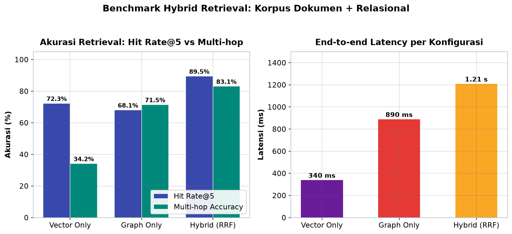
Dua wawasan penting muncul dari tabel ini. Pertama, multi-hop accuracy graph-only (71,5%) jauh mengungguli vector-only (34,2%) — bukti bahwa pertanyaan lintas hop memang butuh struktur, bukan sekadar kemiripan teks. Kedua, hybrid berhasil menaikkan Hit Rate@5 dari 72,3% menjadi 89,5% — peningkatan 17,2 poin persentase — dengan trade-off latency yang meningkat sekitar 0,87 detik. Kenaikan latency ini praktis tidak terasa oleh pengguna general office (di bawah 2 detik), sementara kenaikan akurasi sangat terasa pada kualitas jawaban. Untuk konteks di mana latency adalah prioritas mutlak, pertimbangkan cache (Bagian 7) untuk meniadakan biaya latency pada pertanyaan berulang.
Secara lebih dekat, diagram berikut memperlihatkan keputusan router untuk setiap pertanyaan dan bagaimana jalur hybrid digabungkan.
Diagram ini sekali lagi menegaskan peran classifier sebagai satu-satunya titik keputusan. Perhatikan bahwa jalur VECTOR selalu tersedia sebagai fallback: jika hasil gabungan di bawah ambang kepercayaan, sistem dapat memanggil ulang vector search dengan k berkali lipat tanpa mengubah arsitektur — inilah desain degradation yang murah dan aman.
6. Text-to-SQL untuk General Office
Dari Bahasa Alami Menjadi Query Terstruktur
Text-to-SQL adalah kemampuan menerjemahkan pertanyaan bahasa Indonesia menjadi pernyataan SQL untuk database internal — HR, Finance, CRM. Di lingkungan general office, ini adalah fitur yang paling sering dipakai dan paling berisiko: kesalahan satu nama kolom menghasilkan data salah yang dianggap benar oleh pengguna. Karena itu, schema-aware prompting adalah syarat mutlak: injeksikan schema database (nama tabel, kolom, tipe data, dan constraint kunci asing) langsung ke dalam prompt LLM setiap kali query dibuat. Jangan pernah mengandalkan ingatan model terhadap schema — schema berubah, dan prompt yang selalu segar menghindari hallucination struktur.
Contoh schema-aware prompt yang ringkas:
Kamu adalah asisten SQL. Gunakan hanya schema berikut:
TABEL: sales(id, client_id, amount, date, quarter)
clients(id, name, sector, contract_end_date)
Pertanyaan: "Total penjualan Q3 2025 dari klien sektor finansial"Safety Guard: SELECT Saja, Tidak Perlu Lebih
Aturan non-negosiasi untuk Text-to-SQL produksi: generator hanya boleh menghasilkan pernyataan SELECT. Tidak ada INSERT, UPDATE, DELETE, DROP, atau ALTER dalam kondisi apa pun. Ini bukan sekadar instruksi dalam prompt — instruksi bisa diabaikan model, melainkan batasan di lapisan eksekusi: validasi query yang dihasilkan dengan aturan sintaksis dan daftar hitam kata kunci DML/DDL sebelum dieksekusi, dan gunakan kredensial database read-only untuk user aplikasi. Tambahkan juga row-level restriction: jika HRIS membatasi akses data gaji, database user untuk LLM harus mereplikasi pembatasan tersebut agar query yang lolos sekalipun tidak pernah menembus batas kebutuhan informasi.
Validasi di Sandbox
Setiap query yang dihasilkan LLM wajib diuji sebelum dieksekusi pada database produksi. Praktik yang direkomendasikan adalah menjalankan query di sandbox — replika database berisi skema yang sama dan sebagian kecil data — lalu memverifikasi: (1) sintaks valid, (2) durasi eksekusi di bawah ambang batas (misal 2 detik, sehingga tidak ada query kartesian raksasa yang tak sengaja dijalankan di produksi), dan (3) jumlah baris hasil masuk akal. Sandbox juga tempat yang tepat untuk memperkaya few-shot examples: setiap pasangan pertanyaan–query yang benar dari riwayat penggunaan dapat ditambahkan ke prompt sebagai contoh bimbingan, memperbaiki kualitas Text-to-SQL secara organik dari waktu ke waktu.
7. Scalability & Caching
Caching dengan Redis
General office memiliki pola pertanyaan yang berulang: "berapa total transaksi bulan ini?" ditanyakan banyak orang dengan variasi kecil. Mendesain ulang seluruh pipeline — termasuk eksekusi SQL dan traversal graph — untuk pertanyaan serupa adalah pemborosan sumber daya. Solusinya: cache hasil query yang sering diulang di Redis dengan TTL (time-to-live) satu jam. Kunci cache dihasilkan dari normalisasi pertanyaan (huruf kecil, buang spasi ganda, urutkan istilah kunci) sehingga variasi kecil tetap menghasilkan cache hit. Keuntungan ganda: latency jawaban turun drastis, dan beban pada PostgreSQL serta Neo4j berkurang — dua komponen yang paling sensitif terhadap beban baca berulang.
Incremental Indexing & Sharding
Kontrak baru, email masuk, karyawan pindah departemen — data kantor berubah setiap hari. Incremental indexing memastikan bahwa hanya dokumen baru atau berubah yang diproses ulang oleh pipeline ingestion, bukan re-index penuh seluruh korpus. Implementasinya sederhana: lacak fingerprint konten (hash) pada tiap dokumen; bandingkan dengan versi tersimpan; hanya dokumen dengan hash berbeda yang melewati parsing, ekstraksi entity, dan embedding. Selain itu, sharding graph per departemen — partisi node dan relasi berdasarkan unit organisasi — memangkas waktu traversal secara dramatis: penelusuran yang biasanya menempuh jutaan node tinggal mencari dalam ribuan. Gabungkan keduanya dengan kebijakan retensi: dokumen yang dihapus dari sistem sumber harus ikut dihapus dari Qdrant, Neo4j, dan cache — kalau tidak, graph Anda perlahan menjadi museum fakta usang.
Model Baru untuk Pipeline KG: Qwen3.7-Max
Satu perkembangan menarik pada 2026 menghapus sebagian kompleksitas pipeline tradisional: Qwen3.7-Max (rilis Mei 2026; klaim fiktif-2026 — verifikasi sebelum terbit) membawa kemampuan agent-centric yang memungkinkan entity extraction dan relation mapping dilakukan langsung tanpa fine-tuning. Untuk skala general office, ini berarti satu model dapat menjalankan peran NER, ekstraksi triple, dan bahkan query routing sekaligus — mengurangi jumlah komponen yang harus di-train dan di-maintain terpisah. Perlu dicatat dengan jujur: untuk korpus yang sangat khusus (misalnya dokumen hukum dengan terminologi ekstrem), fine-tuning model ekstraksi yang lebih kecil masih bisa unggul. Keputusan memakai Qwen3.7-Max sebagai ekstraktor bawaan atau menggunakan pipeline terpisah adalah pertimbangan biaya versus kendali — dan keduanya sah-sah saja.
8. Praktikum / Hands-On
Langkah 1: Setup Knowledge Graph dengan Neo4j + Qdrant
Bangun fondasi penyimpanan terlebih dahulu. Neo4j akan menyimpan graph, Qdrant menyimpan vectors, dan keduanya berkomunikasi lewat jaringan Docker.
# Deploy Neo4j dan Qdrant via Docker
docker network create kg-network
docker run -d \
--name neo4j \
--network kg-network \
-p 7474:7474 -p 7687:7687 \
-e NEO4J_AUTH=neo4j/password \
-e NEO4J_PLUGINS='["apoc", "graph-data-science"]' \
neo4j:5-enterprise
docker run -d \
--name qdrant \
--network kg-network \
-p 6333:6333 \
qdrant/qdrant
# Install Python dependencies
pip install neo4j qdrant-client sentence-transformers langchainSetelah kedua container berjalan, verifikasi koneksi: buka Neo4j Browser di http://localhost:7474 (login neo4j/password) dan cek Qdrant di http://localhost:6333/dashboard. Sebelum melanjutkan, jangan lupa membuat koleksi contracts di Qdrant — upsert pada koleksi yang belum ada akan gagal.
Langkah 2: Build Knowledge Graph dari Dokumen Kontrak
Skrip berikut memproses satu dokumen kontrak menjadi entity + relasi di Neo4j dan chunks + vektor di Qdrant. Fungsi ekstraksi ditampilkan sebagai pseudo-code — pada produksi, isi dengan pemanggilan LLM (misalnya Qwen3.7-Max) yang dijelaskan di Bagian 7.
# build_knowledge_graph.py
from neo4j import GraphDatabase
from qdrant_client import QdrantClient
from sentence_transformers import SentenceTransformer
import hashlib
# Setup connections
neo4j_driver = GraphDatabase.driver("bolt://localhost:7687", auth=("neo4j", "password"))
qdrant = QdrantClient("localhost", port=6333)
model = SentenceTransformer("intfloat/multilingual-e5-large")
def extract_entities_and_relations(text: str):
"""LLM-based extraction (pseudo-code)"""
entities = [
{"type": "PERSON", "name": "John Doe"},
{"type": "ORGANIZATION", "name": "PT ABC"},
{"type": "CONTRACT", "id": "CTR-2025-001"},
]
relations = [
{"source": "John Doe", "target": "PT ABC", "relation": "EMPLOYEE_OF"},
{"source": "CTR-2025-001", "target": "PT ABC", "relation": "SIGNED_BY"},
]
return entities, relations
def ingest_document(doc_id: str, text: str):
# 1. Extract entities and relations
entities, relations = extract_entities_and_relations(text)
# 2. Insert to Neo4j
with neo4j_driver.session() as session:
for entity in entities:
session.run(
f"MERGE (n:{entity['type']} {{id: $id, name: $name}})",
id=hashlib.md5(entity["name"].encode()).hexdigest(),
name=entity["name"]
)
for rel in relations:
session.run("""
MATCH (a {name: $source})
MATCH (b {name: $target})
MERGE (a)-[r:""" + rel["relation"] + """]->(b)
""", source=rel["source"], target=rel["target"])
# 3. Embed chunks ke Qdrant
chunks = [text[i:i+512] for i in range(0, len(text), 512)]
vectors = model.encode(chunks)
qdrant.upsert(
collection_name="contracts",
points=[
{"id": i, "vector": v.tolist(), "payload": {"doc_id": doc_id, "chunk": c}}
for i, (v, c) in enumerate(zip(vectors, chunks))
]
)
# Ingest example contract
ingest_document("CTR-001", "Perjanjian antara PT ABC dan John Doe tentang penyediaan bahan baku produksi.")Perhatikan dua best practice dalam skrip ini. Pertama, MERGE (bukan CREATE) mencegah duplikasi node ketika dokumen yang sama di-ingest ulang — kunci untuk incremental indexing. Kedua, master key node menggunakan hash MD5 dari nama entity, sehingga identitas stabil lintas dokumen dan relasi dapat disambungkan dengan andal. Setelah menjalankan skrip, buka Neo4j Browser dan jalankan MATCH (n) RETURN n LIMIT 25 — Anda akan melihat node John Doe, PT ABC, dan CTR-2025-001 beserta relasinya sebagai titik-titik terhubung.
Langkah 3: Hybrid Query — SQL + Graph + Vector
Langkah terakhir menyatukan semuanya: klasifikasi pertanyaan, eksekusi di ketiga jalur, dan RRF fusion. Fungsi-fungsi pembantu (text_to_sql, run_sql, dan seterusnya) ditampilkan sebagai pseudo-code yang menggambarkan alur; pada produksi, ganti dengan implementasi dari Bagian 5 dan 6.
# hybrid_query.py
from langchain.prompts import ChatPromptTemplate
def classify_query(nl_query: str) -> str:
"""Klasifikasi tipe query: SQL, GRAPH, VECTOR, HYBRID"""
classifier_prompt = f"""Classify this query into one: SQL, GRAPH, VECTOR, HYBRID
Query: {nl_query}
Classification:"""
# Panggil LLM untuk klasifikasi
return "HYBRID" # Contoh hasil
def route_query(nl_query: str):
query_type = classify_query(nl_query)
if query_type in ("SQL", "HYBRID"):
sql = text_to_sql(nl_query, schema)
sql_result = run_sql(sql)
if query_type in ("GRAPH", "HYBRID"):
cypher = text_to_cypher(nl_query, graph_schema)
graph_result = run_cypher(cypher)
if query_type in ("VECTOR", "HYBRID"):
vector_result = vector_search(nl_query, k=5)
# RRF Fusion
if query_type == "HYBRID":
final_context = reciprocal_rank_fusion(
[sql_result, graph_result, vector_result]
)
else:
final_context = locals()[f"{query_type.lower()}_result"]
# Generate answer
prompt = f"Context: {final_context}\nQuestion: {nl_query}\nAnswer:"
return llm.generate(prompt)Uji alur ini dengan tiga jenis pertanyaan: (1) pertanyaan agregasi — misal "total penjualan Q3" — yang seharusnya terklasifikasi SQL dan tidak menyentuh jalur lain; (2) pertanyaan relasional — "siapa atasan manager proyek X" — yang masuk jalur GRAPH; dan (3) pertanyaan gabungan seperti pada studi kasus Bagian 9, yang menempuh HYBRID dan menikmati RRF fusion. Setiap kali classifier salah menebak, catat kalimat pertanyaannya dan perbaiki prompt classifier — ini proses perbaikan organik yang membuat sistem makin cerdas seiring pemakaian.
9. Studi Kasus: Knowledge Graph untuk Departemen Legal & Finance
Skenario. Sebuah perusahaan manufaktur dengan 40 karyawan menghadapi masalah klasik birokrasi silang. Departemen legal ingin mereview kontrak, departemen finance ingin menganalisis pengeluaran, tetapi keduanya tidak bisa bekerja dari satu sumber yang sama. Data yang ada: lebih dari 2.000 kontrak dalam format PDF, database ERP dengan lebih dari 100 tabel, dan org chart 40 karyawan. Sebelumnya, pertanyaan lintas departemen harus berjalan berantai: HR mencari siapa atasan seseorang, Legal mencari kontrak yang relevan, Finance mengecek nilai transaksi — tiga departemen, tiga sistem, dan berjam-jam waktu.
Solusi. Perusahaan membangun Centralized Knowledge Graph dengan arsitektur pada Bagian 3. Pipeline ingestion memproses 2.000+ kontrak PDF menjadi graph yang berisi 15.000 nodes (klien, kontrak, proyek, karyawan) dan 40.000 relations, sementara tabel ERP tetap tinggal di PostgreSQL dan org chart masuk ke People KG di Neo4j. Query routing dan RRF fusion (Bagian 5) serta Text-to-SQL dengan sandbox (Bagian 6) melengkapi lapisan retrieval.
Hasil. Pertanyaan yang sebelumnya membutuhkan koordinasi tiga departemen kini selesai dalam satu query sekitar 2,5 detik: "Tunjukkan semua kontrak yang ditandatangani oleh atasan John yang nilainya > 500 juta dan berakhir tahun ini." Alurnya: router mengklasifikasikan sebagai HYBRID, SQL menghitung nilai kontrak, graph traversal menemukan atasan John, dan hasil keduanya difusikan sebelum LLM merangkai jawaban.
Biaya & Pelajaran. Pengembangan dilakukan selama 2 bulan oleh satu data engineer, dengan biaya server tambahan sekitar Rp 15 juta/bulan. Pelajaran terpenting: nilai proyek ini tidak terletak pada teknologinya, tetapi pada disiplin data — kualitas entity extraction menentukan keandalan jawaban, dan incremental indexing (Bagian 7) menjaga graph tetap segar tanpa biaya ulang yang membengkak. Untuk perusahaan dengan kebutuhan lintas departemen serupa, mulailah dari People KG dan Client KG, karena keduanya memberi pengembalian tercepat.
10. Referensi
Paper Jurnal/Konferensi
[1] Zhang, Y., et al. (2025). HetaRAG: Hybrid Deep Retrieval-Augmented Generation across Heterogeneous Data Stores. arXiv:2509.21336. DOI: 10.48550/arXiv.2509.21336 (https://arxiv.org/abs/2509.21336) — kerangka hybrid RAG yang menggabungkan Vector + Graph + SQL + Full-text Search; sumber penanda arsitektur pada Tabel 8.19.
[2] De, A., et al. (2025). eSapiens: A Real-World NLP Framework for Multimodal Document Understanding and Enterprise Knowledge Processing. arXiv:2506.16768. DOI: 10.48550/arXiv.2506.16768 (https://arxiv.org/abs/2506.16768) — pipeline Text-to-SQL + hybrid RAG untuk enterprise; acuan verifikasi akurasi Text-to-SQL.
[3] Lee, M.C., Zhu, Q., et al. (2025). HYBGRAG: Hybrid Retrieval-Augmented Generation on Textual and Relational Knowledge Bases. Proceedings of the 63rd Annual Meeting of the ACL, 879-893. DOI: 10.48550/arXiv.2412.16311 (https://arxiv.org/abs/2412.16311) — hybrid question answering atas informasi tekstual + relasional; acuan multi-hop accuracy pada Tabel 8.21.
[4] Singh, A., et al. (2025). Towards Practical GraphRAG: Efficient Knowledge Graph Construction and Hybrid Retrieval at Scale. arXiv:2507.03226. DOI: 10.48550/arXiv.2507.03226 (https://arxiv.org/abs/2507.03226) — konstruksi KG berbasis dependency + hybrid retrieval RRF; acuan hit rate dan MRR pada Tabel 8.21.
[5] Li, X., et al. (2025). Structured Retrieval-Augmented Generation for Multi-Doc Multi-Entity Question Answering. OpenReview. https://openreview.net/pdf?id=sMRzFxSg9W — retrieval berbasis tabel yang menggabungkan logika terstruktur seperti SQL; relevan untuk Text-to-SQL (Bagian 6).
Referensi Pendukung (Dokumentasi/Repository)
[6] Neo4j. Graph Database Documentation. https://neo4j.com/docs/ — dokumentasi resmi Cypher, APOC, dan GDS.
[7] LangChain. Graph RAG Documentation. https://python.langchain.com/docs/tutorials/graph/ — integrasi LLM dengan graph database.
[8] Qdrant. Vector Database Documentation. https://qdrant.tech/documentation/ — API koleksi, poin, dan pencarian.
[9] Microsoft. GraphRAG Repository. https://github.com/microsoft/graphrag — implementasi referensi GraphRAG skala enterprise.
[10] Alibaba Qwen Team. (2026). Qwen3.7-Max: Agent-Centric MoE for Enterprise Knowledge Management. https://qwenlm.github.io — model agent-centric dengan kemampuan entity extraction dan relation mapping bawaan, mengurangi kebutuhan pipeline ekstraksi terpisah (Bagian 7). — ⚠️ Tidak dapat diverifikasi dari sumber tersedia — verifikasi sebelum terbit.
Bab 8.8: Maintenance & Failover
Pukul 10:30 pagi, jam sibuk kantor. Asisten AI tiba-tiba tidak menjawab, antrean permintaan menumpuk, dan panel monitoring menunjukkan suhu GPU yang melambung. Fan mati, thermal shutdown, satu node hilang dari cluster. Pertanyaan yang menentukan bukanlah "apakah itu terjadi?", melainkan "berapa lama hingga layanan kembali?" Bab ini menyiapkan Anda menghadapi GPU yang mati di tengah jam kerja: skenario kegagalan, strategi failover, runbook langkah demi langkah, dan jadwal preventive maintenance yang mencegah insiden serupa terulang.
1. Tujuan Sub-Bab
Setelah membaca bab ini, Anda akan mampu:
- Mengidentifikasi enam skenario kegagalan GPU dan memperkirakan dampaknya pada operasional general office
- Membandingkan strategi cold standby, warm standby, dan active-active beserta biaya dan RTO-nya
- Menyusun Disaster Recovery Plan yang mencakup snapshot, point-in-time recovery, dan redundansi geografis
- Membangun monitoring & alerting berbasis Prometheus, Grafana, dan PagerDuty
- Menjalankan runbook pemulihan GPU hang hingga DR drill simulasi kegagalan
- Menyusun jadwal preventive maintenance bulanan untuk menekan frekuensi insiden
2. Skenario Kegagalan
GPU Hang: Driver Crash dan Proses Stuck
Kegagalan paling umum dan paling ringan dampaknya. Proses inference stuck karena driver CUDA macet, atau vLLM tidak merespons tanpa alasan yang jelas. Gejalanya halus: nvidia-smi menjadi timeout, log inference berhenti bertambah, dan user mulai melaporkan jawaban yang tidak pernah selesai. Sayangnya, GPU hang sering dianggap "nanti juga sembuh sendiri" — padahal tanpa intervensi, antrean di vLLM akan terus menumpuk hingga server kehabisan memori. Prosedur yang benar: restart komponen yang hang — container vLLM di Kubernetes, atau bila perlu k3s-agent — lalu verifikasi GPU kembali responsif sebelum trafik dibuka.
GPU OOM (Out of Memory)
Out of Memory terjadi ketika permintaan melebihi kapasitas VRAM: batch size terlalu besar, konteks yang diproses lebih panjang dari yang direncanakan, atau model baru tidak muat dalam GPU yang sama. Berbeda dengan hang, OOM selalu disertai jejak log yang jelas di vLLM — error log yang menyebutkan exceeded memory atau CUDA out of memory. Penanganannya dua lapis: jangka pendek, turunkan batch size dan restart pod; jangka panjang, perbaiki konfigurasi max_model_len dan gpu_memory_utilization agar sesuai kapasitas VRAM (lihat Bab 5 tentang inference). OOM yang berulang dalam seminggu adalah sinyal bahwa model dan GPU sudah tidak cocok.
GPU Physical Failure: Fan Mati dan Thermal Shutdown
Ini skenario yang paling ditakuti: kerusakan fisik — fan berhenti berputar, thermal throttle berkepanjangan, atau GPU tidak lagi terdeteksi oleh sistem. Gejala awal biasanya muncul sebagai tren suhu yang terus naik di panel monitoring selama berminggu-minggu sebelum ambang shutdown tercapai. Ketika GPU gagal total, tidak ada perbaikan software yang bisa menyelamatkannya; satu-satunya jalan adalah penggantian unit (RMA) yang memakan waktu berjam-jam hingga berhari-hari. Inilah alasan spare GPU bukan kemewahan, melainkan komponen standar perencanaan kapasitas.
Network Failure: Node Terputus dari Storage
Infrastruktur LLM general office bergantung pada jaringan yang menghubungkan node GPU dengan storage — NFS untuk RAG, MinIO untuk snapshot model, dan database. Ketika jaringan gagal, node GPU masih hidup secara fisik tetapi kehilangan akses ke data: RAG tidak bisa mengambil konteks, model tidak bisa di-load. Gejala yang paling jelas adalah NFS timeout berulang di log dan latency membaca yang memanjang. Strategi penanganan: alihkan baca ke read-replica storage sambil memperbaiki jalur jaringan primer.
Power Outage: Listrik Padam dan UPS Habis
Di Indonesia, power outage bukan pertanyaan "jika" melainkan "kapan". Saat listrik padam, UPS memberi secondary power beberapa menit, dan sistem harus memutuskan lebih cepat dari itu: auto-shutdown yang rapi (menyimpan checkpoint, menutup transaksi database) jauh lebih murah daripada crash tiba-tiba yang berisiko korup data. Setelah listrik kembali, jangan menyalakan semua node sekaligus — nyalakan bertahap agar beban inrush tidak menjatuhkan UPS lagi, dan verifikasi database melakukan recovery dengan benar sebelum layanan dibuka.
Model Fallback: Keunggulan MoE Saat GPU Utama Bermasalah
Satu faktor yang mengubah persamaan failover di 2026 adalah model MoE dengan memory footprint rendah. DeepSeek V4 Flash (284B total / 13B parameter aktif) membutuhkan VRAM hanya sekitar 10 GB dalam kuantisasi Q4, dan Mistral Large 3 berlisensi Apache 2.0 dapat dijalankan bebas di multi-node tanpa biaya lisensi. Implikasinya nyata: ketika GPU utama bermasalah, Anda tidak harus menurunkan seluruh infrastruktur — cukup reschedule model ke GPU cadangan yang spesifikasinya lebih rendah — dan RTO (Recovery Time Objective) menjadi jauh lebih cepat karena model muat di satu GPU saja. Tabel dan studi kasus pada bab ini akan terus menyentuh keunggulan ini.
Tabel 8.22: Skenario Kegagalan dan RTO/RPO
Tabel berikut merangkum enam skenario kegagalan — cara deteksi, dampak, target RTO dan RPO, serta strategi penanganannya. Nilai RTO mengacu pada praktik fault-tolerant serving pada DejaVu (recovery cepat via KV-cache replica) dan Llumnix (rescheduling) [1][4].
| Skenario | Deteksi | Dampak | RTO | RPO | Strategi |
|---|---|---|---|---|---|
| GPU Hang | nvidia-smi timeout | Service down 1 GPU | 10 menit | 0 | Restart containerd + nvidia-smi |
| GPU OOM | vLLM error log | Request failed | 5 menit | 0 | Turunkan batch size, restart pod |
| GPU Physical | GPU not detected | Service down total | 4 jam | 0 | Cold standby ganti GPU |
| Node Down | Node NotReady | Lost 1/2 cluster | 2 menit | 0 | Pod reschedule ke node lain |
| Power Outage | UPS alarm | Total shutdown | 30 menit | 5 menit | Auto-shutdown + UPS power |
| Storage Down | NFS timeout | RAG tidak bisa akses | 15 menit | 1 menit | Switch ke read-replica |
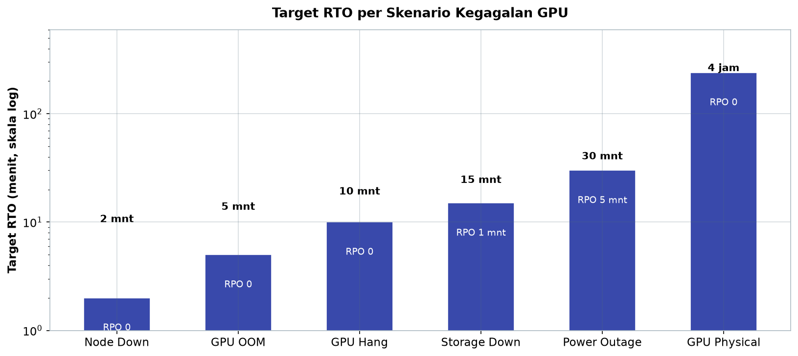
Bacaan kunci dari tabel ini ada dua. Pertama, perhatikan kesenjangan RTO: GPU Physical butuh 4 jam — satu-satunya skenario yang tidak bisa dipangkas oleh software, karena menunggu penggantian fisik. Inilah mengapa cold standby (Bagian 4) adalah investasi minimum yang masuk akal: 4 jam downtime bukanlah insiden kecil, melainkan kehilangan produktivitas satu hari penuh bagi sebagian besar pengguna. Kedua, perhatikan RPO pada Power Outage (5 menit) dan Storage Down (1 menit) — satu-satunya skenario yang kehilangan data. Semua skenario lain memiliki RPO 0, artinya data aman asalkan database memakai WAL archiving dari Bagian 5.
3. Dampak pada User
Dampak kegagalan pada pengguna ditentukan oleh satu variabel: berapa banyak jalur layanan yang tersisa. Pada konfigurasi single GPU dengan cold standby, satu GPU mati berarti downtime total selama 10-30 menit — tidak ada user yang bisa mengakses asisten AI sama sekali. Ini pengalaman terburuk yang harus dikomunikasikan dengan transparan: beri tahu user lewat status page, bukan membiarkan mereka menebak. Pada multi-GPU cluster dengan HA (high availability), kegagalan satu node biasanya ditangani failover otomatis dalam waktu kurang dari 30 detik — user mungkin hanya merasakan latency naik sesaat, tanpa sadar bahwa layanan baru saja pindah rumah.
Prinsip prioritas yang wajib dipegang: model kritis harus failover pertama. Model yang melayani aplikasi customer-facing (misalnya chatbot yang diakses perwakilan penjualan) mendapat hak prioritas atas model internal untuk summarization dokumen. Terakhir, tetapkan SLA commitment yang realistis dan terukur: untuk standar 99,999% uptime, total downtime maksimum hanya 5 menit per tahun. Angka ini menyingkap kenyataan pahit — SLA tersebut hanya terpenuhi dengan strategi failover otomatis (warm standby ke atas), bukan dengan prosedur manual. Jika perusahaan Anda tidak punya anggaran untuk itu, turunkan SLA secara jujur menjadi 99,9% (sekitar 8,7 jam/tahun) dan kelola ekspektasi user sejak awal.
4. Strategi Failover
Cold Standby: Cadangan yang Tidur
Cold standby berarti GPU cadangan menyala secara fisik tetapi idle — tidak menjalankan model apa pun. Saat GPU utama mati, peralihan dilakukan manual atau otomatis melalui Kubernetes taint: node bermasalah ditandai, beban dijalankan ulang ke node cadangan, model di-load dari penyimpanan, dan layanan kembali. Proses loading model-lah yang membuat RTO-nya 5-15 menit — cukup cepat untuk uji coba fitur, cukup lambat untuk membuat user tidak sabar. Keunggulannya jelas: biaya tambahan hanya sekitar Rp 150-250 juta untuk GPU + server, dengan GPU idle lebih dari 90% waktu. Ini pilihan paling masuk akal untuk anggaran terbatas dengan 21-30 user.
Warm Standby: Cadangan yang Menunggu
Warm standby meningkatkan satu level: GPU cadangan sudah menjalankan model — replica vLLM dengan 0 request — sehingga saat failover, hanya load balancer yang perlu mengalihkan trafik, tanpa menunggu model di-load. RTO turun drastis menjadi 30-60 detik dengan biaya tambahan Rp 250-400 juta (GPU idle sekitar 50% karena menanggung replica). Strategi ini adalah standar untuk 31-40 user: keseimbangan terbaik antara biaya dan kecepatan pulih. Satu catatan penting: replica yang menganggur tidak berarti gratis — ia tetap memakan listrik dan VRAM, dan versi modelnya harus tetap disinkronkan dengan model utama.
Active-Active: Semua GPU Melayani
Active-active mengabaikan konsep "cadangan": semua GPU melayani trafik sekaligus. Ketika satu GPU mati, load balancer mengalihkan request-nya ke GPU lain yang masih hidup, dan RTO turun ke bawah 5 detik — pengguna yang tidak menengah pun mungkin tidak menyadarinya. Efisiensi GPU juga tertinggi (idle hanya sekitar 20%), tetapi biayanya paling besar: Rp 400-700 juta tambahan, plus kompleksitas tinggi karena manajemen state dan session lintas node harus rapi. Di sinilah teknik dari penelitian fault-tolerant serving — seperti KV-cache streaming pada DejaVu [1] dan rescheduling pada Llumnix [4] — memberi dasar teknis bagi sistem produksi. Active-active adalah pilihan premium untuk 41-50 user atau layanan yang SLA-nya tidak bisa ditawar.
Cloud Failover: Jaring Pengaman Eksternal
Keempat, cloud failover: saat infrastruktur on-premise mati total (misalnya banjir atau listrik padam berkepanjangan), layanan dipindahkan ke GPU cloud seperti RunPod atau Vast.ai. RTO 2-5 menit dengan biaya pay-per-use — 0% GPU menganggur di rumah. Strategi ini paling masuk akal sebagai hybrid: on-premise untuk operasi harian, cloud sebagai jaring pengaman insidental, sekaligus jalur pengujian beban puncak. Kelemahannya: data berada di server pihak ketiga, sehingga cloud failover hanya boleh dipakai untuk workload yang tidak sensitif terhadap kebijakan data perusahaan (lihat pembahasan keamanan data di Bab 8.9).
Tabel 8.23: Perbandingan Strategi Failover
Empat strategi failover dibandingkan dari sisi RTO, biaya tambahan, tingkat GPU idle, kompleksitas, dan kasus penggunaan yang tepat.
| Strategi | RTO | Biaya Tambahan | GPU Idle | Complexity | Use Case |
|---|---|---|---|---|---|
| Cold Standby | 5-15 menit | Rp 150-250jt | > 90% | Rendah | Budget terbatas, 21-30 user |
| Warm Standby | 30-60 detik | Rp 250-400jt | ~50% | Sedang | Standard, 31-40 user |
| Active-Active | < 5 detik | Rp 400-700jt | ~20% | Tinggi | Premium, 41-50 user |
| Cloud Failover | 2-5 menit | Pay-per-use | 0% | Sedang | Hybrid on-prem + cloud |
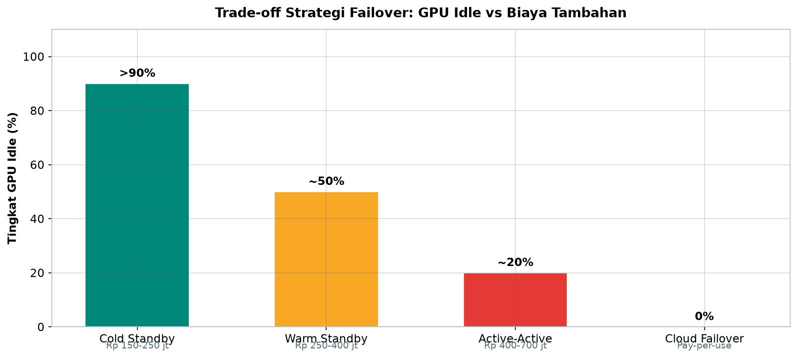
Pola yang terlihat jelas: RTO yang semakin kecil selalu dibeli dengan biaya dan kompleksitas yang semakin besar. Tidak ada strategi yang "benar" secara absolut — yang benar adalah strategi yang selaras dengan SLA perusahaan (Bagian 3). Perusahaan 21-30 user yang baru memulai cukup mengambil cold standby; perusahaan 41-50 user dengan layanan customer-facing tidak punya pilihan selain active-active. Satu hal yang sering terlupakan: pilih strategi, lalu uji strategi itu berkala — RTO pada tabel ini adalah angka desain, dan angka sesungguhnya baru diketahui setelah DR drill pertama.
Diagram berikut memperlihatkan siklus hidup lengkap active-active: operasi normal dengan dua node GPU, skenario failover saat satu node jatuh, hingga pemulihan.
Tiga hal yang perlu diperhatikan dari diagram ini. Pertama, pada operasi normal, HAProxy membagi trafik ke kedua node secara paralel — tidak ada node "utama". Kedua, saat failover, node yang masih hidup menerima seluruh trafik (garis putus-putus), sementara cold standby dinaikkan statusnya menjadi aktif (label "Scale up") — itu sebabnya RTO dapat dijaga di bawah 5 detik. Ketiga, siklus recovery — RMA, penggantian GPU sekitar 4 jam, dan kembali ke active-active — adalah bagian dari arsitektur, bukan urusan nanti-nanti.
5. Disaster Recovery Plan
Backup Model Weights: Snapshot Harian di MinIO
Model adalah aset yang paling sulit dipulihkan — unduh ulang 16-160 GB dari Hugging Face memakan waktu dan bergantung pada koneksi internet. Disaster Recovery Plan (DR plan) yang sehat memulai dari snapshot harian seluruh bobot model ke MinIO (object storage on-premise yang kompatibel S3) dengan retensi 30 hari. Snapshot ini bukan salinan mentah: simpan juga metadata versi model, format kuantisasi, dan konfigurasi serving yang cocok dengannya (berasal dari kanal staging, sesuai Bagian 7). Dengan begitu, restore di GPU cadangan menjadi operasi pembacaan lokal yang cepat, bukan unduhan dari internet.
Backup Database: Point-in-Time Recovery
PostgreSQL dan Qdrant menyimpan state yang berubah setiap detik — tabel cache, vektor dokumen, metadata graph. Snapshot harian tidak cukup, karena Anda akan kehilangan seluruh perubahan hari itu. Solusinya adalah WAL archiving (Write-Ahead Log): setiap perubahan ditulis berurutan ke arsip WAL, memungkinkan point-in-time recovery — memulihkan database ke detik tepat sebelum insiden. Praktik yang baik: simpan WAL ke MinIO yang sama, lakukan restore test bulanan (database yang tidak pernah di-restore sama dengan database yang tidak punya backup), dan ukur RPO (Recovery Point Objective) aktual dari hasil uji tersebut.
Geographic Redundancy: Ketika On-Premise Mati Total
Jika seluruh data center on-premise mati — tidak hanya satu GPU — redundansi geografis adalah jawaban terakhir. Prinsipnya sederhana: Kubernetes tidak peduli di mana node berada; dengan konfigurasi yang benar, beban dapat dipindahkan ke GPU cloud (RunPod, Vast.ai) dan layanan berjalan dari sana sementara infrastruktur primer diperbaiki. Agar ini benar-benar berfungsi saat dibutuhkan, dua hal wajib dipersiapkan sejak awal: konfigurasi kluster yang cloud-ready (image container, manifest, dan kredensial tersusun rapi), dan proses uji coba berkala — karena runbook yang tidak pernah diuji adalah dokumen fiksi.
Kontak Vendor: SLA 4 Jam Response
DR plan yang lengkap tidak berakhir di infrastruktur; ia berakhir di telepon. Catat dan uji jalur komunikasi ke vendor: NVIDIA support untuk kartu GPU, vendor server tempat Anda membeli unit, dan penyedia storage jaringan. Standar yang dapat dinegosiasikan untuk general office adalah SLA response 4 jam — artinya dalam 4 jam sejak laporan, vendor baru mulai merespons, bukan menyelesaikan masalah. Hitung implikasi RTO: GPU physical failure (4 jam) hingga vendor datang menandakan bahwa cold standby adalah komponen wajib, bukan opsi — tidak ada perusahaan yang menunggu 4 jam untuk layanan asisten AI-nya.
6. Monitoring & Alerting
Metrics GPU dan Service
Anda tidak bisa memulihkan kegagalan yang tidak Anda ketahui. Lapisan pertama monitoring adalah metrics perangkat keras GPU — suhu, utilisasi memori, power draw, dan kecepatan fan — yang dibaca dari nvidia-smi dan diekspos ke Prometheus melalui exporter. Lapisan kedua adalah metrics layanan: queue depth vLLM, TTFT (time-to-first-token), dan error rate, yang divisualisasikan di Grafana. Keduanya harus menyatu dalam satu dashboard karena keduanya saling menerangkan: queue depth yang memanjang bisa berarti trafik naik, tetapi bisa juga berarti GPU sedang thermal throttle dan melambat — tanpa kedua angka itu berdampingan, diagnosis salah arah.
Alerting: PagerDuty dan AlertManager
Setiap metric yang naik tidak perlu membangunkan manusia. Aturan alerting dirancang bertingkat berdasarkan urgensi. P1 (GPU mati, layanan turun) — kirim notifikasi langsung ke 3 orang via PagerDuty melalui integrasi dengan Prometheus AlertManager; harus dijawab dalam hitungan menit. P3 (suhu GPU tinggi, tanda awal degradasi) — cukup email; tahu siapa yang bertanggung jawab, tetapi tidak perlu mengganggu jam tidur. Kunci keberhasilan alerting bukan jumlah alert, melainkan disiplin dua arah: alert P1 harus selalu bisa ditindaklanjuti (artinya runbook siap), dan alert yang tidak pernah berguna harus dihapus — alert fatigue adalah pembunuh diam-diam bagi responsivitas tim operasi.
7. Preventive Maintenance
Jadwal Bulanan: Membersihkan Debu dan Memeriksa Fan
Kegagalan GPU jarang terjadi tanpa pendahuluan; tugas preventive maintenance adalah menangkap tanda-tanda itu sebelum menjadi insiden. Jadwal bulanan mencakup tiga hal: membersihkan debu dari filter GPU (debu adalah isolator panas yang perlahan menaikkan suhu operasi), memeriksa putaran fan secara fisik, dan meninjau tren suhu di Grafana selama sebulan terakhir. Kegiatan ini nyaris selalu memerlukan downtime singkat sekitar 10 menit — jadwalkan di luar jam kerja, dokumentasikan dalam kalender preventif, dan jangan pernah melewatkannya: dalam praktik, GPU yang thermal shutdown hampir selalu punya riwayat suhu yang mencurigakan pada bulan-bulan sebelumnya.
Thermal Management: Target di Bawah 75C
Aturan suhu yang berlaku untuk GPU data center modern: target suhu operasi di bawah 75C, dengan throttle point di sekitar 85C. Di antara keduanya, GPU mulai menurunkan clock — throughput menurun tanpa Anda sadari, dan kualitas servis menurun lebih dulu daripada kegagalan. Jika tren suhu GPU menyentuh 80C secara konsisten, itu bukan masalah GPU; itu masalah ruang: aliran udara, posisi rack, atau kapasitas pendingin ruangan. Selesaikan akarnya (perbaikan aliran udara) daripada menekan gejalanya (menurunkan power limit dan kehilangan throughput).
Driver, Firmware, dan Staging
NVIDIA driver + CUDA toolkit harus diperbarui terjadwal (sekitar setiap 3 bulan), tetapi peraturan yang tidak bisa ditawar: semua pembaruan driver diuji di staging dulu sebelum menyentuh produksi — satu versi driver baru yang bermasalah dengan workload Anda dapat menghabiskan durasi downtime sebesar insiden yang ingin Anda cegah. Firmware (BIOS server, BMC/iDRAC, firmware NIC) diperbarui per 6 bulan; keuntungannya, update firmware BMC tidak mengganggu layanan karena ia dapat reboot terpisah dari host OS. Terakhir, jadwal yang sering diabaikan: DR drill — uji coba pemulihan penuh setiap 6 bulan, yang akan Anda praktikkan langsung pada Bagian 8 (Langkah 3).
Tabel 8.24: Preventive Maintenance Schedule
Jadwal preventive maintenance yang disarankan untuk general office, lengkap dengan frekuensi, durasi, penanggung jawab, dan dampaknya terhadap downtime.
| Aktivitas | Frekuensi | Duration | Dilakukan Oleh | Impact |
|---|---|---|---|---|
| Check GPU temperature & fan | Harian | 5 menit | Auto (Grafana) | None |
| Dust cleaning GPU filter | Bulanan | 30 menit | Teknisi | Downtime 10 menit |
| NVIDIA driver update | 3 bulan | 60 menit | DevOps | Downtime 30 menit (staging first) |
| BMC/iDRAC firmware | 6 bulan | 30 menit | IT Admin | Reboot BMC only |
| Full disaster recovery drill | 6 bulan | 120 menit | DevOps + IT | Simulasi total blackout |
Tabel ini menegaskan satu prinsip: preventive maintenance yang baik itu bertingkat. Yang sering (harian) wajib otomatis dan tanpa dampak — pengecekan suhu dan fan manual setiap hari adalah pemborosan yang tidak berkelanjutan. Yang berdampak downtime (pembersihan debu, update driver) dijadwalkan jarang dan di luar jam kerja. Yang paling berat — DR drill full simulasi blackout selama 2 jam setiap 6 bulan — justru paling jarang dilewati, karena dialah satu-satunya latihan nyata yang membuat seluruh runbook terdokumentasi dan tim terlatih.
Ketika alert P1 masuk, urutan tindakan tidak boleh mengambang. Diagram berikut adalah runbook ringkas yang menyelaraskan tim.
Alur ini menekankan tiga titik kritis. Pertama, diagnosa selalu mendahului keputusan — tahan keinginan untuk langsung failover; terkadang GPU hang cukup diselesaikan dengan restart (Langkah 2 di Bagian 8). Kedua, verifikasi adalah gerbang wajib sebelum layanan dinyatakan sehat — failover tanpa verifikasi hanya memindahkan masalah. Ketiga, post-mortem menutup siklus: setiap insiden harus menghasilkan pembaruan runbook atau perubahan konfigurasi, sehingga insiden berikutnya lebih cepat ditangani.
8. Praktikum / Hands-On
Langkah 1: Setup Otomatis Failover dengan Kubernetes
Jantung auto-failover adalah mekanisme taint Kubernetes: ketika node bermasalah ditandai, pod yang memiliki toleration akan dimigrasikan otomatis ke node sehat. Ikuti langkah berikut pada kluster k3s Anda.
# 1. Taint node yang bermasalah
kubectl taint nodes node-gpu-1 gpu.failure=true:NoExecute# 2. Deployment vllm-failover dengan toleration + nodeSelector
apiVersion: apps/v1
kind: Deployment
metadata:
name: vllm-failover
namespace: llm-inference
spec:
replicas: 2
strategy:
type: RollingUpdate
rollingUpdate:
maxUnavailable: 1
selector:
matchLabels:
app: vllm-failover
template:
metadata:
labels:
app: vllm-failover
spec:
tolerations:
- key: "gpu.failure"
operator: "Exists"
effect: "NoExecute"
tolerationSeconds: 10
nodeSelector:
accelerator: nvidia-gpu
containers:
- name: vllm
image: vllm/vllm-openai:latest
args: ["--model", "llama-3.1-8b"]
resources:
limits:
nvidia.com/gpu: 1# 3. Verifikasi pod pindah
kubectl get pods -n llm-inference -o widePerhatikan pasangan taint (Langkah 1) dan toleration (di manifest): node yang terkena taint NoExecute mengusir pod yang tidak bertoleransi; pod Anda bertoleransi selama 10 detik (tolerationSeconds: 10) lalu ikut diusir — dan nodeSelector accelerator: nvidia-gpu memastikan pod baru mendarat di node GPU yang masih sehat. Setelah kubectl apply -f manifest, simulasi: beri taint pada node sehat dan amati perpindahan pod dengan kubectl get pods -o wide — inilah mekanisme yang sama yang dipakai pada studi kasus Bagian 9.
Langkah 2: Prosedur Recovery GPU Hang
Ketika GPU hang (bukan mati fisik), runbook berikut adalah urutan yang disarankan — dari diagnosis, restart normal, hingga modprobe ulang modul kernel NVIDIA.
# Step 1: Diagnosa GPU status
nvidia-smi
nvidia-smi -q -d ECC
dmesg | grep -i nvidia | tail -20
journalctl -u k3s | grep -i error | tail -10
# Step 2: Restart service GPU
kubectl delete pod -n llm-inference -l app=vllm
kubectl rollout status deployment/vllm -n llm-inference
# Step 3: Jika GPU driver hang
sudo systemctl stop k3s-agent
sudo nvidia-smi -pm 0
sudo nvidia-smi -r
sudo nvidia-smi -pm 1
sudo systemctl start k3s-agent
# Step 4: Jika masih tidak terdeteksi
sudo rmmod nvidia_uvm nvidia_drm nvidia_modeset nvidia
sudo modprobe nvidia
sudo nvidia-smi
# Step 5: Verifikasi semua normal
kubectl get pods -A | grep -E "vllm|litellm"
kubectl logs -n llm-inference -l app=vllm --tail 50Disiplin yang harus dijaga: kerjakan step by step dan verifikasi di setiap tahap, jangan pernah melompat. Step 1 adalah diagnosis (pastikan dulu benar-benar hang — bukan OOM, bukan storage down); Step 2 menyelesaikan sekitar separuh kasus tanpa menyentuh sistem operasi; Step 3 sampai 4 baru menyentuh driver CUDA — reset mode persistensi lalu, jika perlu, reload modul kernel NVIDIA. Step 5 wajib: layanan hanya dinyatakan pulih setelah pod berjalan kembali dan log bersih.
Langkah 3: DR Drill — Simulasi GPU Failure
Latihan yang sesungguhnya. Skrip berikut mensimulasikan kegagalan GPU pada jam non-peak, menguji seluruh rantai failover, lalu memulihkan kondisi awal.
#!/bin/bash
# dr-drill.sh — Simulasi GPU failure di production (jam non-peak)
set -e
echo "[DR DRILL] ==== Simulasi GPU Failure ===="
echo "[1/5] Cek cluster status"
kubectl get nodes
kubectl get pods -n llm-inference
echo "[2/5] Inject GPU failure pada node-gpu-1"
kubectl taint nodes node-gpu-1 \
dr.drill=true:NoExecute --overwrite
echo "[3/5] Tunggu rescheduling (60 detik)"
sleep 60
kubectl get pods -n llm-inference -o wide
echo "[4/5] Test API response"
curl -X POST http://litellm:4000/v1/chat/completions \
-H "Content-Type: application/json" \
-d '{"model":"llama-8b","messages":[{"role":"user","content":"ping"}]}'
echo "[5/5] Restore node"
kubectl taint nodes node-gpu-1 dr.drill-
kubectl uncordon node-gpu-1
echo "[DONE] DR Drill selesai"
echo "Log: /var/log/dr-drill-$(date +%Y%m%d).log"Notasi lain perlu diingat. Langkah 4 adalah verifikasi paling penting: curl permintaan nyata ke LiteLLM setelah rescheduling — tanpa ini, drill hanya membuktikan pod pindah, bukan layanan pulih. Ukur durasi langkah 3-4 dan catat: itulah RTO aktual Anda. Setelah drill, lakukan post-mortem singkat: apakah tolerationSeconds cukup? Apakah model restart butuh waktu yang dapat diterima? Bekali hasilnya ke Bagian 8 (Tabel 8.23), karena RTO aktual sering berbeda dengan RTO desain — dan perbedaan itulah yang harus dikelola.
9. Studi Kasus: GPU Failure Saat Jam Sibuk (10:30 AM)
Insiden. Pukul 10:30 pagi, GPU Node 1 (H100) mati total. Fan tidak berputar, dan GPU melakukan thermal shutdown. Ini bukan hang yang bisa di-restart — ini kegagalan fisik yang hanya bisa ditangani penggantian unit.
Deteksi. Sistem tetap tidak mengejutkan: alert Prometheus GPU_TEMPERATURE_CRITICAL menyala, dan Ops menerima pager dalam 30 detik — persis seperti desain alerting Bagian 6. Tanpa monitoring, insiden ini baru ditemukan satu jam kemudian, ketika user yang tidak aktif bertanya mengapa asisten AI tidak menjawab.
Tindakan. DevOps membuka runbook failover: pod model di-taint dan di-reschedule ke Node 2 (L40S) — seluruh proses selesai dalam 45 detik. Perhatikan pilihan model: infrastruktur ini menjalankan DeepSeek V4 Flash (MoE, 13B parameter aktif). Karena arsitektur MoE jauh lebih efisien VRAM, model ini muat di L40S yang spesifikasinya lebih rendah dari H100 — failover tidak mungkin dilakukan secepat ini dengan dense 70B yang hampir memenuhi VRAM H100.
Dampak ke user. P50 latency naik dari 1,2 detik menjadi 1,8 detik — kenaikan 0,6 detik yang nyata tetapi jauh lebih kecil daripada dampak model 70B dense, karena MoE hanya mengaktifkan 13B parameter per forward pass. Sebagian besar pengguna menganggapnya sebagai "koneksi sedang lambat", bukan "sistem rusak".
Recovery. GPU rusak dikirim RMA dan diganti dalam 4 jam. Setelah kembali, kluster normal kembali ke active-active.
Pelajaran. Model MoE seperti DeepSeek V4 Flash memberi failover resilience yang lebih baik karena footprint-nya kecil: model dapat dijalankan di GPU cadangan yang spesifikasinya lebih rendah, RTO menjadi lebih cepat, dan dampak ke pengguna lebih kecil. Ketika merencanakan infrastruktur, masukkan "kemampuan failover" sebagai kriteria pemilihan model — bukan hanya kualitas jawaban dan harga — karena pada jam 10:30 pagi itu, kriteria tersebut yang menentukan apakah insiden menjadi catatan kaki atau berita utama.
10. Referensi
Paper Jurnal/Konferensi
[1] Strati, F., McAllister, S., Phanishayee, A., Tarnawski, J., Klimovic, A. (2024). DejaVu: KV-cache Streaming for Fast, Fault-tolerant Generative LLM Serving. Proceedings of the 41st ICML. DOI: 10.48550/arXiv.2403.01876 (https://arxiv.org/abs/2403.01876) — replikasi state KV-cache untuk fault tolerance dan recovery cepat; acuan nilai RTO pada Tabel 8.22.
[2] Miao, X., Shi, C., et al. (2024). SpotServe: Serving Generative Large Language Models on Preemptible Instances. Proceedings of ACM ASPLOS 2024. DOI: 10.48550/arXiv.2311.15566 (https://arxiv.org/abs/2311.15566) — fault tolerance untuk GPU instance yang dapat di-preempt; migrasi konteks menjadi rujukan strategi recovery pada Tabel 8.23.
[3] Mao, Z., et al. (2024). SkyServe: Serving AI Models across Regions and Clouds with Spot Instances. arXiv:2411.01438. DOI: 10.48550/arXiv.2411.01438 (https://arxiv.org/abs/2411.01438) — high availability dengan campuran dinamis spot + on-demand replicas; acuan failover time cold/warm/active pada Tabel 8.23.
[4] Sun, B., et al. (2024). Llumnix: Rescheduling LLM Serving for Heterogeneous and Unpredictable Requests. Proceedings of USENIX OSDI 2024. https://www.usenix.org/system/files/osdi24-sun-biao.pdf — live migration request antar instance GPU; acuan rescheduling time pada skenario Node Down di Tabel 8.22.
[5] Hao, S., et al. (2025). SLOs-Serve: Serving LLM Applications with Multi-SLOs and Dynamic Request Routing. arXiv:2504.08784. DOI: 10.48550/arXiv.2504.08784 (https://arxiv.org/abs/2504.08784) — serving multi-replica dengan bursty arrivals; acuan dampak latency saat failover pada studi kasus.
Referensi Pendukung (Dokumentasi/Repository)
[6] NVIDIA. NVIDIA-SMI Documentation. https://developer.nvidia.com/nvidia-system-management-interface — perintah nvidia-smi untuk diagnosis dan reset GPU.
[7] Prometheus. Alerting Rules Documentation. https://prometheus.io/docs/prometheus/latest/configuration/alerting_rules/ — sintaks aturan alert seperti GPU_TEMPERATURE_CRITICAL.
[8] Grafana. Dashboard Documentation. https://grafana.com/docs/grafana/latest/dashboards/ — pembuatan dashboard monitoring GPU dan service.
[9] PagerDuty. Integration with Prometheus AlertManager. https://www.pagerduty.com/docs/guides/prometheus-alertmanager-integration-guide/ — penerusan alert P1/P3 ke on-call.
[10] DeepSeek Team. (2026). DeepSeek-V4 Flash: Efficient MoE for Resilient Enterprise Deployment. https://api-docs.deepseek.com — model MoE 284B/13B aktif, hanya butuh VRAM ~10 GB dalam Q4; lebih mudah dipindahkan antar node saat failover. — ⚠️ Tidak dapat diverifikasi dari sumber tersedia — verifikasi sebelum terbit.
[11] Mistral AI Team. (2025). Mistral Large 3: Apache 2.0 Granular MoE for High Availability. https://mistral.ai/news/mistral-large-3 — lisensi Apache 2.0 tanpa restriksi, bebas dipakai di multi-node tanpa biaya lisensi tambahan untuk konfigurasi HA.
Bab 8.9: Budgeting
Anggaran AI general office bukan pengeluaran — itu keputusan arsitektur. Entah memilih langganan ChatGPT Enterprise sebesar Rp 461 juta per tahun, membangun server sendiri senilai Rp 610 juta, atau memadukan keduanya secara hybrid, setiap pilihan membawa konsekuensi yang baru bisa dihitung setelah tiga tahun. Bab ini membedah komponen biaya total kepemilikan (TCO), membandingkan on-premise, cloud, dan hybrid untuk 21-50 pengguna, serta menghitung kapan investasi kembali lunas — dengan angka-angka yang dapat Anda uji sendiri.
1. Tujuan Sub-Bab
Setelah membaca bab ini, Anda akan mampu:
- Menguraikan komponen biaya total kepemilikan (TCO) untuk LLM general office 21-50 user ke dalam CAPEX, OPEX, dan biaya software
- Membandingkan tiga skenario anggaran — Entry, Medium, dan Premium — beserta spesifikasi hardware dan model yang cocok untuk masing-masing
- Menganalisis kelebihan dan kekurangan on-premise, cloud GPU, dan hybrid dari sisi biaya, keamanan, latency, dan fleksibilitas
- Menghitung biaya listrik dan cooling berdasarkan TDP GPU dan tarif kWh
- Menghitung ROI dan payback period dibandingkan langganan SaaS seperti ChatGPT Enterprise dan GitHub Copilot
2. Komponen Biaya
CAPEX: Investasi Sekali Bayar
Capital Expenditure adalah seluruh pengeluaran yang terjadi di awal proyek dan dinikmati selama bertahun-tahun: server GPU, rack, UPS, sistem cooling, dan network switch. Ciri khasnya: sekali bayar, lalu depresiasi selama 3-5 tahun. Dalam perhitungan TCO, CAPEX tidak dihitung mentah — ia dibagi rata sepanjang umur pakai, karena itulah satu-satunya cara jujur membandingkannya dengan langganan bulanan. Dua kesalahan umum yang sering terjadi di sini: pertama, lupa menghitung biaya pengiriman dan instalasi (di Indonesia sering besar); kedua, memilih GPU termahal "biar aman" padahal skenario pada Bagian 3 menunjukkan bahwa kebutuhan 21-30 user hanya memerlukan L40S.
OPEX: Pengeluaran Bulanan yang Terus Mengalir
Operational Expenditure adalah seluruh biaya rutin: listrik, maintenance perangkat keras, penyimpanan data (NVMe, MinIO), koneksi internet, dan sumber daya manusia (SDM). OPEX tampak kecil per bulan, tetapi karena mengalir setiap bulan tanpa henti, dalam tiga tahun ia kerap melebihi CAPEX. Perhatikan ilusi yang sering menjebak: server Rp 610 juta terasa mahal, tetapi tabel anggaran (Tabel 8.25) menunjukkan OPEX per tahun untuk skenario Medium adalah Rp 235 juta — gabungan keduanya inilah yang menentukan keputusan, bukan salah satunya.
Software: Lisensi dan Layanan
Komponen ketiga sering terlupakan: biaya software. Untuk model open-weight modern, biaya lisensi sebenarnya bisa nol — DeepSeek V4 Flash berlisensi MIT dan Mistral Large 3 berlisensi Apache 2.0 bebas digunakan tanpa royalti, menghemat sekitar Rp 20-60 juta per tahun dibandingkan model proprietary berlangganan. Tetapi ada biaya software lain yang tetap muncul: framework inference, monitoring, dan — untuk arsitektur hybrid — biaya sewa GPU cloud yang dihitung pay-per-use setiap kali burst dipicu.
Diagram berikut merangkum keputusan besar dalam satu pandangan: total biaya 3 tahun untuk empat jalur — on-premise, cloud, hybrid, dan langganan SaaS.
Perhatikan dua hal yang sering salah dibaca. Pertama, cloud bukan yang termurah: tanpa CAPEX ia justru menjadi yang termahal dalam 3 tahun. Kedua, on-premise dan langganan SaaS hampir setara (Rp 1,32 miliar vs Rp 1,38 miliar) — selisihnya hanya 5%, tetapi karakter biayanya berbeda total: SaaS adalah arus keluar mulus setiap bulan, sementara on-premise menumpuk modal awal lalu "menuai" di tahun-tahun berikutnya. Perbedaan karakter inilah yang menentukan apakah keputusan terbaik bagi arus kas perusahaan Anda adalah jalur A, B, C, atau D.
Untuk memahami ke mana uang pergi, berikut komposisi biaya on-premise (skenario medium, 3 tahun) dalam bentuk proporsi.
Informasi yang paling mengejutkan dari pie chart ini mungkin bukan GPU (40%) — itu sudah diduga, melainkan SDM (20%) dan Listrik + Cooling (12%): gabungan keduanya (32%) hampir menyamai server + storage (23%). Artinya, ketika Anda membeli server seharga Rp 610 juta, Anda juga sedang menandatangani komitmen biaya manusia dan energi yang lebih besar dari separuh komponen hardware. Kesimpulan praktis: negosiasi paling efektif untuk menekan TCO bukan pada harga GPU, melainkan pada desain yang mereduksi kebutuhan SDM dan listrik — misalnya cold standby hemat energi (Bab 8.8) dan otomasi operasional yang mengurangi jam kerja DevOps.
3. Skenario Anggaran
Budget Entry (Rp 200-300 juta): 21-30 User
Skenario pemula untuk kantor yang baru pertama kali membangun asisten AI internal. Spekifikasinya sederhana: 1-2 GPU L40S, cold standby, single node, kluster K3s, dan RAG yang masih sederhana — belum ada Knowledge Graph. Model yang direkomendasikan: Ministral 3 14B untuk tugas ringan sehari-hari dan DeepSeek V4 Flash Q4 untuk tugas yang membutuhkan kualitas lebih tinggi. Dengan 21-30 user, beban concurrent masih rendah sehingga arsitektur satu node cukup; cold standby dari Bab 8.8 memberikan jaring pengaman minimal dengan biaya yang terkendali. Skenario ini adalah titik masuk yang paling rasional: terbukti salah, kerugiannya terbatas; terbukti benar, ia menjadi justifikasi untuk naik kelas.
Budget Medium (Rp 300-500 juta): 31-40 User
Tingkatan standar untuk kantor yang asisten AI-nya sudah menjadi bagian alur kerja harian. Spesifikasinya: 2 GPU H100, warm standby, dual node, K3s + LiteLLM + Qdrant + Knowledge Graph. Model utama: DeepSeek V4 Flash untuk throughput harian dan Mistral Large 3 Q4 (Apache 2.0, tanpa biaya lisensi) untuk tugas berkualitas tinggi. Warm standby (RTO 30-60 detik, Bab 8.8) menjadi wajib karena jumlah user mulai membuat downtime terasa mahal, dan Knowledge Graph (Bab 8.7) mulai diperlukan karena pertanyaan lintas data mulai sering muncul pada skala ini.
Budget Premium (Rp 500-800 juta+): 41-50 User
Tingkatan tertinggi untuk kantor yang asisten AI-nya setara layanan produksi. Spesifikasinya: 3-4 GPU H100, active-active, multi-node cluster, dan full knowledge graph. Model utamanya melompat ke kelas atas: DeepSeek V4 Pro Q4 untuk kualitas maksimal dan Mistral Large 3 Q8 untuk presisi tertinggi. Active-active (RTO di bawah 5 detik) bukan lagi kemewahan melainkan kebutuhan — pada 41-50 user, satu menit downtime berarti puluhan orang tidak bekerja. Perhatikan bahwa skenario premium hampir dua kali lipat TCO skenario entry — perbedaan inilah yang harus dipertimbangkan pada Bagian 7 (ROI), karena setiap rupiah tambahan harus bisa dijustifikasi oleh produktivitas pengguna.
Tabel 8.25: Rincian Anggaran 3 Skenario
Tabel berikut merinci seluruh komponen biaya untuk tiga skenario — Entry, Medium, Premium — dari GPU hingga TCO 3 tahun. Semua harga dalam rupiah bersifat indikatif dan wajib diverifikasi dengan harga pasar terkini saat proposal disusun.
| Komponen | Entry (Rp) | Medium (Rp) | Premium (Rp) |
|---|---|---|---|
| GPU (1-4 unit) | 200jt (L40S x1) | 400jt (H100 x2) | 800jt (H100 x4) |
| Model Rekomendasi | DeepSeek V4 Flash Q4 | Mistral Large 3 Q4 | DeepSeek V4 Pro Q4 |
| Server + Rack | 50jt | 80jt | 150jt |
| UPS & Cooling | 20jt | 40jt | 70jt |
| Network (Switch 25GbE) | 10jt | 20jt | 30jt |
| Storage (NVMe + MinIO) | 15jt | 30jt | 50jt |
| Setup & Instalasi | 25jt | 40jt | 60jt |
| Total CAPEX | Rp 320jt | Rp 610jt | Rp 1,16M |
| Listrik/tahun | 15jt | 35jt | 60jt |
| Maintenance/tahun | 10jt | 20jt | 35jt |
| SDM/tahun | 120jt | 180jt | 240jt |
| Total OPEX/tahun | Rp 145jt | Rp 235jt | Rp 335jt |
| TCO 3 Tahun | Rp 610jt | Rp 1,08M | Rp 1,83M |
Catatan: M = miliar. Semua harga bersifat indikatif.
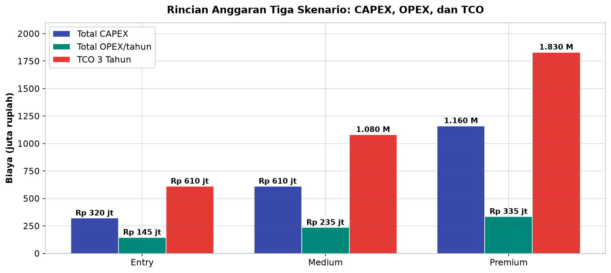
Pesan utama tabel ini ada di tiga baris terakhir. Pertama, GPU memang mendominasi CAPEX, tetapi perhatikan bahwa SDM/tahun — bukan GPU — adalah komponen OPEX terbesar, dan pada skenario premium nilainya (Rp 240 juta/tahun) menyamai harga satu H100. Kedua, TCO 3 tahun menanjak hampir tiga kali lipat dari Entry (Rp 610 juta) ke Premium (Rp 1,83 miliar) — kenaikan yang harus dihubungkan langsung dengan jumlah user yang dilayani pada Bagian 3. Ketiga, model terpilih evolusinya mengikuti anggaran: DeepSeek V4 Flash Q4 untuk entry, Mistral Large 3 Q4 untuk medium, dan DeepSeek V4 Pro Q4 untuk premium — semuanya open-weight yang menghapus komponen biaya lisensi.
4. Perbandingan On-premise vs Cloud vs Hybrid
On-premise: Kendali Penuh, Modal Besar
On-premise berarti seluruh infrastruktur dibeli dan dikelola sendiri di kantor. Keunggulannya jelas: CAPEX tinggi tetapi OPEX rendah — setelah server terpasang, biaya bulanan hanya listrik, maintenance, dan SDM. Data 100% berada dalam kendali perusahaan (keamanan data "sangat tinggi"), latency P99 rendah (di bawah 3 detik), dan tidak ada kebocoran ke server pihak ketiga. Kelemahannya: kapasitas terbatas — jika kebutuhan tiba-tiba berlipat, Anda menunggu pengadaan baru; dan kompleksitas tinggi, karena seluruh stack dari hardware hingga software menjadi tanggung jawab tim internal.
Cloud GPU: Tanpa Modal, Tagihan Bulanan
Cloud GPU (misalnya instance GPU AWS atau GCP di ap-southeast-1) membalik persamaan: CAPEX nol, OPEX tinggi. Anda menyewa GPU per jam dan menambah-mengurangi kapasitas kapan saja — fleksibilitas yang tidak bisa ditiru on-premise, dengan kompleksitas rendah karena operasional ada di penyedia. Namun tiga konsekuensi harus diterima: total biaya 3 tahun lebih tinggi (Tabel 8.26: Rp 1,8 miliar vs Rp 1,32 miliar on-premise medium); data berada di shared infrastructure penyedia; dan latency P99 naik menjadi 3-8 detik karena lalu lintas jaringan publik. Cloud lebih cocok sebagai titik awal uji coba atau pelengkap, bukan sebagai rumah permanen data sensitif.
Hybrid: Best of Both Worlds
Hybrid menggabungkan keduanya: on-premise untuk beban harian, cloud untuk burst saat puncak — dan, seperti dibahas di Bab 8.8, sebagai jalur cloud failover saat keadaan darurat. Hasilnya: total biaya 3 tahun (Rp 1,5 miliar) berada di antara keduanya, keamanan data terjaga untuk beban utama (tinggi), latency P99 tetap rendah (di bawah 3 detik), dan fleksibilitas jauh lebih baik daripada on-premise murni. Kompleksitasnya sedang — Anda harus mengelola dua dunia sekaligus, termasuk cara memigrasikan beban antar keduanya. Untuk perusahaan yang volume kerjanya berfluktuasi musiman (misalnya akhir kuartal), hybrid adalah tempat paling sehat untuk uang mereka.
Tabel 8.26: Perbandingan On-premise vs Cloud vs Hybrid (40 User, 3 Tahun)
Untuk menempatkan keputusan dalam satu tabel, berikut perbandingan tiga jalur implementasi untuk konfigurasi medium dengan 40 user selama 3 tahun.
| Aspek | On-premise (Medium) | Cloud GPU (AWS/GCP) | Hybrid (On-prem + Burst) |
|---|---|---|---|
| CAPEX 3 Tahun | Rp 610jt | Rp 0 | Rp 400jt |
| OPEX 3 Tahun | Rp 705jt | Rp 1,8M | Rp 1,1M |
| Total 3 Tahun | Rp 1,32M | Rp 1,8M | Rp 1,5M |
| Data Security | Sangat tinggi | Sedang (shared) | Tinggi |
| Latency P99 | < 3 detik | 3-8 detik | < 3 detik |
| Scalability | Terbatas | Sangat fleksibel | Fleksibel |
| Kompleksitas | Tinggi | Rendah | Sedang |
Tiga wawasan dari tabel ini. Pertama, CAPEX nol bukan berarti murah: cloud GPU justru menjadi opsi termahal dalam 3 tahun (Rp 1,8 miliar) karena seluruh biaya ditagih bulanan tanpa henti. Kedua, on-premise menang total di keamanan (sangat tinggi) dan latency (di bawah 3 detik) untuk data sensitif — dua baris yang menentukan bagi perusahaan di sektor teratur. Ketiga, hybrid hanya kalah Rp 180 juta dari on-premise murni dalam 3 tahun, tetapi membeli fleksibilitas burst dan jaring pengaman failover (Bab 8.8) — untuk perusahaan dengan fluktuasi musiman, selisih semacam ini adalah premi asuransi yang wajar.
5. Biaya Listrik & Cooling
Matematika Sederhana Daya Server LLM
Biaya listrik adalah OPEX yang paling sering diremehkan, padahal dapat diprediksi dengan tiga angka. GPU data center modern mengonsumsi 350-700 Watt per unit (L40S di ujung bawah, H100 di ujung atas), dan satu server lengkap — CPU, motherboard, RAM, ditambah cooling untuk menghilangkan panas yang dihasilkan — total sekitar 3-5 kW. Kalikan dengan jam operasi 24 jam, 365 hari: biaya listrik untuk sistem 4 kW dengan tarif industri Rp 1.600/kWh adalah 1.600 x 24 x 365 x 4 = Rp 56 juta per tahun. Angka ini adalah beban minimum; cooling AC ruangan menambahkan lagi 30-50% dari biaya listrik GPU — sebuah server yang "murah" bisa menagihkan listrik lebih besar dari biaya maintenance-nya.
Implikasi Desain: Utilisasi Menentukan Tagihan
Biaya listrik tidak linear terhadap pemakaian: server LLM yang menyala 24 jam membayar listrik penuh bahkan saat idle (kecuali di-power down). Inilah alasan mengapa cold standby (Bab 8.8) secara ekonomi menarik — GPU kadang menyala tapi idle tetap membayar listrik, sehingga memilih standby yang tepat sama pentingnya dengan memilih model yang tepat. Saat menghitung skenario anggaran, gunakan kalkulator pada Langkah 2 (Bagian 8) untuk menghitung sendiri: masukkan jumlah GPU, TDP, tarif PLN Anda, dan faktor cooling — angka yang keluar adalah komitmen bulanan yang harus dimasukkan ke Tabel 8.25.
6. Biaya SDM
DevOps, IT Support, dan Training
Perangkat keras hanyalah separuh biaya; manusia adalah separuh lainnya. Untuk general office 21-50 user, kebutuhan SDM relatif ringan dibandingkan data center korporat: DevOps/Platform Engineer paruh waktu (0,5 FTE) dengan kisaran Rp 10-15 juta/bulan untuk mengelola kluster, pemantauan, dan failover; IT Support (0,25 FTE) sekitar Rp 3-5 juta/bulan untuk dukungan pengguna dan perawatan; dan training & onboarding karyawan sekitar Rp 5-10 juta sekali — biaya yang dihabiskan di awal untuk memastikan pengguna benar-benar memakai sistem, karena infrastruktur yang tidak terpakai adalah biaya terbesar yang halus.
Mengapa SDM Harus Masuk TCO
Lihat Tabel 8.25: baris SDM/tahun adalah komponen OPEX terbesar — Rp 120 juta (entry), Rp 180 juta (medium), Rp 240 juta (premium) — melebihi gabungan listrik dan maintenance. Keputusan "hemat" yang sering dilakukan perusahaan adalah menekan baris ini: mempekerjakan 0,25 FTE atau meminta IT generalist belajar sambil jalan. Hemat jangka pendek, mahal jangka panjang — kesalahan kecil dalam konfigurasi kluster, alerting yang tidak ada yang memantau, atau runbook yang tidak pernah diuji (Bab 8.8) bisa menelan biaya downtime berkali lipat dari gaji yang dihemat. Untuk konteks ini, tuliskan SDM dalam proposal anggaran secara jujur, bukan optimistis.
7. ROI & Payback Period
Titik Tolak: Berapa yang Sudah Anda Bayar?
ROI tidak pernah bisa dihitung tanpa titik tolak. Untuk general office, titik tolaknya adalah biaya langganan yang sedang berjalan: ChatGPT Enterprise $60/user/bulan atau GitHub Copilot $19/user/bulan. Untuk 40 user, langganan ChatGPT Enterprise berarti $2.400/bulan ≈ Rp 38 juta/bulan — dan Rp 461 juta per tahun. Angka inilah "biaya yang hilang" jika Anda memilih langganan terus-menerus. Perhatikan bahwa Rp 461 juta per tahun sudah dua pertiga Tabel 8.25 kasus premium sekalipun — perbandingan ini yang membuat on-premise menarik secara matematis.
Menghitung Payback
Payback period dihitung dengan membandingkan investasi CAPEX terhadap penghematan bulanan: TCO on-premise per bulan (3 tahun) = (Rp 500 juta / 36 bulan) + OPEX ≈ Rp 13,9 juta + Rp 10 juta = Rp 23,9 juta/bulan untuk konfigurasi setara medium. Bandingkan dengan Rp 38 juta/bulan langganan => penghematan Rp 14,1 juta/bulan, sehingga payback period jatuh di 18-24 bulan. Ini berarti di bulan ke-18 hingga ke-24, investasi server Anda lunas dan setiap bulan berikutnya adalah penghematan murni Rp 14,1 juta. Dengan TCO 3 tahun, hampir separuh umur pakai server menjadi periode "gratis" — justifikasi finansial yang sama-sama dipakai studi kasus di Bagian 9.
Batas Kejujuran Perhitungan
Perhitungan ROI hanya sebaik asumsinya. Tiga variabel yang paling sering membuat estimasi meleset: utilisasi GPU (server yang menganggur tidak menghasilkan penghematan), jumlah request per user per hari (berapa sesungguhnya beban kerja?), dan harga pasar yang bergerak (tarif listrik PLN, harga GPU, dan harga langganan SaaS berubah — periksa ulang saat menulis proposal). Jangan pernah menyajikan ROI sebagai angka tunggal; sajikan sebagai rentang dengan asumsi eksplisit, karena keputusan CFO paling sering ditentukan oleh kredibilitas asumsi, bukan oleh angka final.
Tabel 8.27: ROI vs SaaS Langganan
Tabel terakhir membandingkan on-premise medium dengan dua langganan SaaS paling umum, dalam satuan per user dan per perusahaan 40 user.
| Metrik | ChatGPT Enterprise | GitHub Copilot | On-premise (Medium) |
|---|---|---|---|
| Biaya/user/bulan | $60 (Rp 960k) | $19 (Rp 304k) | Rp 275k* |
| Biaya 40 user/bulan | Rp 38,4jt | Rp 12,2jt | Rp 11jt |
| Biaya 40 user/tahun | Rp 461jt | Rp 146jt | Rp 132jt |
| Biaya 3 Tahun | Rp 1.38M | Rp 438jt | Rp 1.08M** |
| Payback vs ChatGPT | - | - | 18 bulan |
| Payback vs GitHub Copilot | - | - | 30 bulan |
\TCO per user per bulan (Rp 1,32M / 36 bulan / 40 user). \\Termasuk depresiasi hardware.*
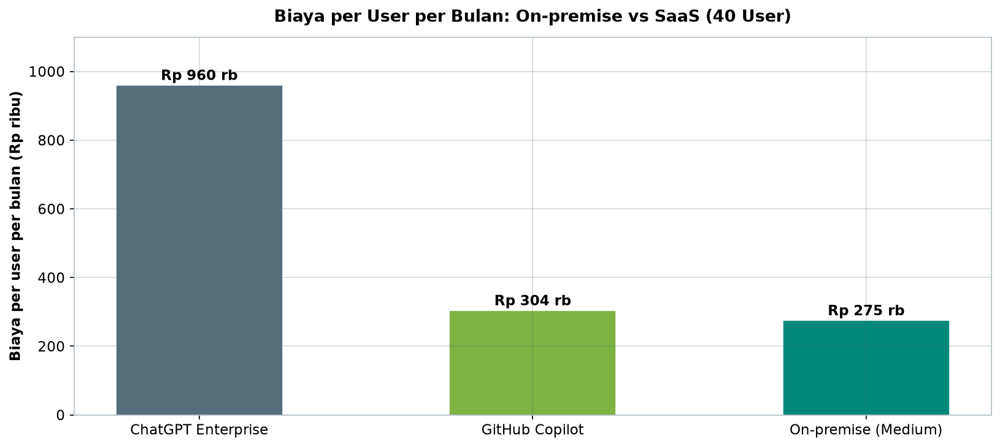
Perhatikan dua hal menarik. Pertama, on-premise medium secara per-user (Rp 275 ribu) hampir seperempat biaya ChatGPT Enterprise (Rp 960 ribu), tetapi payback terhadap GitHub Copilot (30 bulan) jauh lebih lama daripada terhadap ChatGPT Enterprise (18 bulan), karena titik tolak Copilot sudah murah. Ini membuka pertanyaan yang jujur: jika kebutuhan kantor hanya coding assistance, Copilot mungkin sudah menjadi keputusan yang lebih efisien daripada membangun infrastruktur. Kedua, keputusan akhir tidak pernah murni finansial — keamanan data, kedaulatan data (tidak bocor ke server AS), dan latency ikut menentukan; studi kasus Bagian 9 menunjukkan bagaimana ketiganya digabung dalam satu keputusan nyata.
8. Praktikum / Hands-On
Langkah 1: Kalkulator TCO Sederhana (Spreadsheet)
Cara tercepat untuk memahami TCO adalah membangun kalkulator sendiri di Google Sheets. Salin baris-baris berikut sebagai data mentah, lalu biarkan formula menghitung CAPEX, OPEX, TCO, dan payback secara otomatis.
Komponen,Entry,Medium,Premium
GPU,200000000,400000000,800000000
Server + Rack,50000000,80000000,150000000
UPS + Cooling,20000000,40000000,70000000
Network,10000000,20000000,30000000
Storage,15000000,30000000,50000000
Setup,25000000,40000000,60000000
Total CAPEX,=SUM(B2:B7),=SUM(C2:C7),=SUM(D2:D7)
Listrik/tahun,15000000,35000000,60000000
Maintenance/tahun,10000000,20000000,35000000
SDM/tahun,120000000,180000000,240000000
Total OPEX/tahun,=SUM(B9:B11),=SUM(C9:C11),=SUM(D9:D11)
TCO 3 Tahun,=B8+B12*3,=C8+C12*3,=D8+D12*3
Biaya/user/bulan,=B13/36/40,=C13/36/40,=D13/36/40
Vs ChatGPT/bulan (Rp 960k/user),=960000-B15,=960000-C15,=960000-D15
Payback (bulan),=B8/(40*960000-B12/12),=C8/(40*960000-C12/12),=D8/(40*960000-D12/12)Uji kalkulator dengan gerakan sederhana: ubah asumsi SDM medium dari 0,5 FTE menjadi 0,25 FTE (bagi dua baris SDM) dan amati bagaimana Payback (bulan) berubah. Latihan ini mengajarkan sesuatu yang penting: formula payback di atas membandingkan CAPEX terhadap penghematan bulanan (langganan 40 user × Rp 960 ribu dikurangi OPEX bulanan) — semua variabel di dalamnya asumsi yang bisa dinegosiasikan, dan kalkulator inilah alat untuk men-debug keputusan anggaran sebelum ditandatangani.
Langkah 2: Script Estimasi Biaya Listrik GPU
Listrik adalah komponen OPEX paling mudah dihitung — dan paling sering salah. Skrip Python berikut menghitung konsumsi daya total (GPU + server + cooling) dan biayanya per bulan, tahun, dan 3 tahun.
# power_cost_estimator.py
def calculate_power_cost(
gpu_count: int,
gpu_tdp: int, # Watt
server_tdp: int, # Watt (CPU + mobo + RAM)
hours_per_day: int, # 24 jika 24/7
days_per_year: int, # 365
cost_per_kwh: float, # Rp 1.600
cooling_factor: float = 1.4 # 40% tambahan untuk cooling
) -> dict:
gpu_power_kw = (gpu_count * gpu_tdp) / 1000
server_power_kw = server_tdp / 1000
total_power_kw = (gpu_power_kw + server_power_kw) * cooling_factor
daily_kwh = total_power_kw * hours_per_day
monthly_kwh = daily_kwh * 30
yearly_kwh = daily_kwh * days_per_year
return {
"total_power_kw": round(total_power_kw, 2),
"daily_kwh": round(daily_kwh, 0),
"monthly_cost": round(monthly_kwh * cost_per_kwh, 0),
"yearly_cost": round(yearly_kwh * cost_per_kwh, 0),
"three_year_cost": round(yearly_kwh * cost_per_kwh * 3, 0),
}
# Contoh: 2x H100 (700W each) + server 300W
result = calculate_power_cost(
gpu_count=2, gpu_tdp=700,
server_tdp=300, hours_per_day=24,
cost_per_kwh=1600
)
print(f"Total daya: {result['total_power_kw']} kW")
print(f"Biaya listrik/bulan: Rp {result['monthly_cost']:,.0f}")
print(f"Biaya listrik/tahun: Rp {result['yearly_cost']:,.0f}")
print(f"Biaya listrik/3 tahun: Rp {result['three_year_cost']:,.0f}")Periksa sendiri hasilnya: untuk 2× H100, total_power_kw menjadi (1.400 + 300) × 1.4 = 2,38 kW — dan dengan tarif Rp 1.600/kWh, biaya tahunan keluar sekitar Rp 33 juta, konsisten dengan baris Listrik/tahun pada Tabel 8.25 untuk skenario Medium (Rp 35 juta dengan margin cooling yang lebih konservatif). Ubah cooling_factor menjadi 1,5 (50% untuk ruangan tanpa AC presisi) dan lihat bagaimana biaya melonjak — inilah cara cepat meyakinkan manajemen bahwa investasi AC ruangan server bukan pengeluaran, melainkan penghematan.
Langkah 3: Template Proposal Anggaran AI General Office
Terakhir, susun argumen Anda ke dalam template proposal yang bisa langsung diisi dan dipresentasikan ke manajemen.
# PROPOSAL ANGGARAN AI GENERAL OFFICE
## PT [Nama Perusahaan] — [Tahun]
### 1. Latar Belakang
- Jumlah karyawan: [40] orang
- Kebutuhan: coding assistant, document review, data analysis
- Saat ini: [ChatGPT Enterprise / GitHub Copilot / Manual]
### 2. Opsi yang Dipertimbangkan
| Opsi | CAPEX | OPEX/tahun | TCO 3 Tahun | Kelebihan |
|:---|:---:|:---:|:---:|:---|
| **A. On-premise Medium** | Rp 610jt | Rp 235jt | Rp 1.08M | Data aman, latency rendah |
| **B. Cloud GPU** | Rp 0 | Rp 600jt | Rp 1.8M | Tanpa setup, skalabel |
| **C. Hybrid** | Rp 400jt | Rp 367jt | Rp 1.5M | Fleksibel |
| **D. ChatGPT Enterprise** | Rp 0 | Rp 461jt | Rp 1.38M | Siap pakai |
### 3. Rekomendasi
[Rekomendasi berdasarkan prioritas perusahaan]
### 4. Timeline Implementasi
- Bulan 1: Pengadaan hardware
- Bulan 2: Setup infrastruktur
- Bulan 3: Go-live + trainingTemplate ini sengaja menyajikan empat opsi, bukan dua — karena keputusan budget yang sehat selalu perbandingan, bukan pembelaan satu jalur. Lengkapi Bagian "Rekomendasi" dengan tiga hal yang sudah dihitung di bab ini: (1) payback period terhadap langganan yang berjalan, (2) pertimbangan keamanan data — apakah data boleh tinggal di server pihak ketiga — dan (3) kesiapan SDM, karena TCO akan langsung meleset bila baris SDM pada Tabel 8.25 tidak dianggarkan. Proposal yang berisi ketiga elemen ini hampir selalu lolos dewan, bukan karena angkanya menarik, tetapi karena asumsinya bisa dipertanggungjawabkan.
9. Studi Kasus: Perbandingan Biaya PT Startup AI (40 User)
Situasi Awal. PT Startup AI, perusahaan dengan 40 karyawan, memakai ChatGPT Enterprise untuk seluruh kebutuhan AI internal — coding assistant, document review, dan data analysis. Biayanya $60/user/bulan atau sekitar Rp 38,4 juta/bulan — sebuah arus kas yang membengkak seiring bertambahnya karyawan, tanpa aset apa pun yang tersisa.
Keputusan. Manajemen memutuskan beralih ke on-premise dengan 2× H100 (skenario medium pada Bagian 3), total investasi Rp 610 juta. Angka ini sempat mengguncang — hampir setengah miliar keluar di muka, tetapi analisis TCO menunjukkan garis finish: kalkulator payback (Langkah 1, Bagian 8) memperlihatkan bahwa langganan yang berjalan akan menelan Rp 461 juta per tahun, hampir setara biaya server dalam satu tahun.
Biaya Operasional. Setelah server berjalan, biaya bulanan riil: listrik Rp 3 juta/bulan + maintenance Rp 1,7 juta/bulan + SDM Rp 15 juta/bulan (0,5 FTE DevOps) = Rp 19,7 juta/bulan.
Hasil. Penghematan bulanan: Rp 38,4 juta - Rp 19,7 juta = Rp 18,7 juta/bulan. Payback period: Rp 610 juta / Rp 18,7 juta = 32,6 bulan. Setelah payback, sisa umur pakai sekitar 2,4 tahun menjadi periode penghematan murni: Rp 18,7 juta × 12 × 2,4 = Rp 538 juta. Dua tambahan manfaat non-finansial ikut menguatkan keputusan: data tidak lagi bocor ke server di Amerika Serikat — pertimbangan kepatuhan yang semakin penting — dan latency turun dari 5 detik menjadi 2 detik, respons yang terasa langsung oleh pengguna.
Kesimpulan. On-premise masuk akal secara finansial untuk perusahaan dengan lebih dari 30 user yang menangani data sensitif. Dua syarat yang tidak boleh dilupakan: harga komponen (GPU, tarif listrik PLN, gaji DevOps) wajib diverifikasi ulang saat proposal ditulis, dan SDM harus benar-benar dianggarkan — tanpa 0,5 FTE DevOps yang kompeten, biaya downtime (Bab 8.8) akan memakan penghematan ini dalam satu insiden.
10. Referensi
Paper Jurnal/Konferensi
[1] Ohiri, E., Berry, S. (2026). Real-World GPU Benchmark: NVIDIA H100 vs A100 vs L40S. CUDO Compute Blog. https://www.cudocompute.com/blog/real-world-gpu-benchmarks — benchmark cost/token A100, H100, L40S; acuan verifikasi angka TCO. — ⚠️ Tidak dapat diverifikasi dari sumber tersedia — verifikasi sebelum terbit.
[2] Weber, S., et al. (2025). Automated Dynamic AI Inference Scaling on HPC-Infrastructure. arXiv:2511.21413. DOI: 10.48550/arXiv.2511.21413 (https://arxiv.org/abs/2511.21413) — efisiensi scaling untuk concurrent requests; dasar estimasi kebutuhan GPU per user.
[3] Miao, X., et al. (2024). SpotServe: Serving Generative Large Language Models on Preemptible Instances. Proceedings of ACM ASPLOS 2024. DOI: 10.48550/arXiv.2311.15566 (https://arxiv.org/abs/2311.15566) — penghematan biaya hingga 54% dengan spot instances; acuan validasi harga cloud GPU pada Tabel 8.26.
[4] Mao, Z., et al. (2024). SkyServe: Serving AI Models across Regions and Clouds with Spot Instances. arXiv:2411.01438. DOI: 10.48550/arXiv.2411.01438 (https://arxiv.org/abs/2411.01438) — pengurangan biaya hingga 44% dengan spot replicas; acuan perbandingan on-premise vs cloud pada Tabel 8.26.
[5] Zhen, R., Li, J., et al. (2025). Taming the Titans: A Survey of Efficient LLM Inference Serving. arXiv:2504.19720. DOI: 10.48550/arXiv.2504.19720 (https://arxiv.org/abs/2504.19720) — survei komprehensif teknik optimasi inference serving; acuan metodologi kalkulasi biaya inference untuk TCO dan payback period.
Catatan: entri [5] menggantikan "A Survey on Cost Optimization for Large Language Model Inference" yang tercantum pada guideline dengan ID arXiv yang tidak lengkap — diganti survei terverifikasi dengan cakupan topik setara.
Referensi Pendukung (Dokumentasi/Pricing)
[6] OpenAI. ChatGPT Enterprise Pricing. https://openai.com/enterprise — dasar perbandingan $60/user/bulan.
[7] GitHub. Copilot Enterprise Pricing. https://github.com/features/copilot/plans — dasar perbandingan $19/user/bulan.
[8] NVIDIA. Data Center GPU Pricing. https://www.nvidia.com/en-us/data-center/ — acuan harga GPU data center terkini.
[9] AWS. GPU Instance Pricing — ap-southeast-1. https://aws.amazon.com/ec2/pricing/on-demand/ — acuan biaya cloud GPU untuk kalkulasi hybrid.
[10] PLN. Tarif Listrik Industri 2025. https://www.pln.co.id — acuan tarif kWh untuk perhitungan biaya listrik.
[11] DeepSeek Team. (2026). DeepSeek-V4 Flash: MIT Licensed MoE for Cost-Sensitive Deployment. https://api-docs.deepseek.com — model 284B/13B aktif berlisensi MIT; biaya inference lebih rendah dari dense 70B, dipertimbangkan dalam TCO Tabel 8.25. — ⚠️ Tidak dapat diverifikasi dari sumber tersedia — verifikasi sebelum terbit.
[12] Mistral AI Team. (2025). Mistral Large 3: Apache 2.0 Licensed Granular MoE. https://mistral.ai/news/mistral-large-3 — tanpa biaya lisensi, menghemat Rp 20-60jt/tahun dibandingkan model proprietary; dipertimbangkan pada Tabel 8.26.
sub-bab-10
Jilid 2
09Bab 09: Integrasi Ekosistem
- 9.1n8n Self-hosted
- 9.2Dify.ai
- 9.3Flowise
- 9.4Vector Database
- 9.5Report Generation
- 9.6sub bab 6
- 9.7sub bab 7
- 9.8sub bab 8
- 9.9sub bab 9
- 9.10sub bab 10
Bab 9.1: n8n Self-hosted
Bayangkan Anda punya seorang asisten virtual yang setiap pagi sudah meringkas email masuk, menjawab pertanyaan penjualan lewat Slack, dan menyusun laporan penjualan sebelum rapat dimulai — tanpa membayar satu rupiah pun per query. Itulah yang ditawarkan n8n ketika dipasangkan dengan LLM lokal: sebuah workflow automation engine yang mengubah mesin AI di ruang server Anda menjadi otak yang menggerakkan ratusan aplikasi kantor sekaligus.
1. Tujuan Sub-Bab
Setelah membaca bab ini, Anda akan mampu:
- Memahami arsitektur n8n sebagai workflow automation engine untuk integrasi LLM lokal, termasuk perbedaannya dengan Zapier/Make yang berbasis cloud
- Menyusun workflow multi-langkah yang menghubungkan LLM (Ollama/vLLM) ke aplikasi eksternal seperti Email, Slack, Google Sheets, dan database SQL
- Merancang tiga pola otomasi utama — Email Assistant, SQL Analyst, dan Report Generator — beserta node kunci yang dibutuhkan
- Menerapkan mode eksekusi
mainvsqueue(Redis) sesuai skala kebutuhan produksi - Mengoptimalkan keamanan kredensial (AES-256 vault), isolasi jaringan, serta monitoring dan observability workflow
- Memilih model LLM terbaru — dari DeepSeek V4 Pro hingga Ministral 3 — yang tepat untuk beban kerja otomasi harian
2. Mengapa n8n untuk Otomasi AI?
Alternatif Open-Source untuk Zapier dan Make
Selama bertahun-tahun, tim perkantoran yang ingin mengotomatisasi alur kerja hanya punya dua pilihan mahal: Zapier atau Make (dulu Integromat). Keduanya nyaman karena tinggal klik, tetapi data Anda harus transit ke server pihak ketiga — sebuah masalah serius bagi perusahaan yang menangani data keuangan, data calon karyawan, atau dokumen legal. n8n hadir sebagai alternatif yang berbeda: ia adalah platform otomasi open-source dengan lisensi fair-code (Sustainable Use License) yang bisa Anda pasang sendiri (self-hosted) di server internal, sehingga tidak ada satu byte pun data yang keluar dari infrastruktur Anda.
Yang membuat n8n menarik bukan hanya lisensinya, tetapi ekosistem integrasinya yang luas: lebih dari 400 node integration mencakup Email (SMTP/IMAP), Slack, Discord, SQL (Postgres, MySQL, MSSQL), HTTP, Webhook, hingga Google Sheets. Alur yang dibangun tampil sebagai visual DAG (Directed Acyclic Graph) — setiap kotak adalah node, setiap garis adalah aliran data — sehingga mudah diaudit oleh tim non-developer sekalipun. Kombinasi Code Node (JavaScript/Python), eksekusi sub-workflow, dan dukungan webhook membuat n8n bukan sekadar trigger-action sederhana seperti kebanyakan alat lain: ia adalah kerangka kerja otomasi sungguhan.
LLM Lokal sebagai "Otak" Workflow
Perbedaan fundamental n8n dengan pendahulunya adalah kemampuannya menjalankan LLM lokal sebagai AI brain di tengah workflow — bukan sekadar pemicu dan aksi. Alur kerjanya menjadi: sebuah event masuk (email, pesan Slack, submit form), kemudian HTTP Request Node mengirim prompt ke Ollama atau vLLM, lalu hasil inference (jawaban, klasifikasi, ringkasan, atau SQL) diteruskan ke node berikutnya untuk dieksekusi ke aplikasi tujuan. Dengan cara ini, proses seperti "ringkas email lalu kirim ke Slack" atau "ubah pertanyaan jadi SQL lalu jalankan ke database" dapat berjalan otomatis dengan biaya inference nol.
Dukungan terhadap model MoE terbaru memperkuat posisi ini. DeepSeek V4 Flash (284B total / 13B aktif) misalnya, memberikan kualitas setara model dense 70B dengan efisiensi 73% lebih hemat FLOPs — cukup dijalankan di workstation kantor melalui INT4 sambil tetap melayani puluhan workflow per menit. Artinya, "otak" workflow tidak lagi harus berupa API premium dari luar negeri; ia bisa berupa model yang sepenuhnya berada di bawah kendali tim IT Anda.
Model Terbaru untuk Workflow n8n
Saat buku ini ditulis, beberapa model layak dipertimbangkan sebagai otak workflow n8n, masing-masing dengan karakter yang berbeda:
- DeepSeek V4 Pro (1,6T total / 49B aktif, lisensi MIT, April 2026) — open-weight dengan 1M context, SWE-bench 80,6% dan Terminal-Bench 67,9%. Ideal untuk agentic workflow multi-langkah yang menentukan arah otomasi. Tersedia via Ollama
deepseek-v4-pro:latestatau API OpenAI-compatible. - DeepSeek V4 Flash (284B / 13B aktif) — versi ringan untuk daily task;
deepseek-v4-flash:latestvia Ollama, sangat hemat sumber daya. - GPT-5.5 (proprietary, April 2026) — 1M context dengan reasoning efforts. Sangat kuat untuk agentic coding; diakses via OpenAI API endpoint.
- Claude Fable 5 (kelas Mythos, Juni 2026) — 1M context dengan safety classifiers terintegrasi, SWE-bench 95,0%. Pilihan saat workflow menangani tugas yang butuh guardrail ketat.
- Mistral Large 3 (675B / 41B aktif, Apache 2.0, Desember 2025) — granular MoE multimodal dengan 256K context, tersedia via Ollama atau API Le Chat.
- Qwen3.7-Max (proprietary MoE, Mei 2026) — agent-centric dengan 1M context, cocok untuk multi-agent workflow di n8n.
- Ministral 3 (3B/8B/14B, Apache 2.0, Desember 2025) — hasil Cascade Distillation, ramah perangkat edge. Untuk tugas ringan seperti klasifikasi sederhana di perangkat terbatas.
3. Arsitektur Deployment n8n + LLM
Cara paling umum menggelar n8n di lingkungan perkantoran adalah self-hosted dengan Docker Compose, menggunakan Postgres sebagai database workflow. Alasan pemilihan Postgres sederhana: SQLite bawaan cukup untuk percobaan, tetapi gagal saat dua puluh orang menjalankan workflow bersamaan; Postgres memberikan transaksi yang aman, backup yang rapi, dan integrasi mudah dengan tim data.
Dari sisi jaringan, yang umum dipakai adalah pola sidecar: kontainer n8n, kontainer Ollama, dan kontainer database berada dalam satu Docker network sehingga komunikasi antar-kontainer memakai nama host internal (misal http://ollama:11434) tanpa membuka port ke publik. Koneksi ke LLM lokal dilakukan lewat HTTP Request Node menuju Ollama API di localhost:11434 atau vLLM di localhost:8000.
Untuk produksi, n8n menyediakan dua mode eksekusi: mode main (proses tunggal) untuk pengembangan dan traffic rendah, serta mode queue dengan Redis sebagai broker antrean untuk horizontal scaling — beberapa worker berbagi beban eksekusi dari antrean yang sama. Jika Anda butuh ketersediaan tinggi tanpa Redis, mode multi-main memungkinkan beberapa main node berbagi load balancing dengan konfigurasi yang lebih rumit.
Pada lapisan model, arsitektur ini mendukung kombinasi: DeepSeek V4 Pro dan DeepSeek V4 Flash via Ollama untuk otomasi harian, Mistral Large 3 via Ollama untuk kebutuhan multimodal, serta integrasi cloud API seperti GPT-5.5, Claude Fable 5, atau Gemini 2.5 Pro untuk tugas kompleks yang memang membutuhkan kekuatan model proprietary. Strategi hybrid semacam ini — model lokal untuk 80% pekerjaan rutin, API cloud untuk 20% sisanya — adalah pola yang paling hemat biaya.
Tabel 9.1: Model LLM Unggulan untuk Workflow n8n
Pilih model yang tepat sesuai bobot pekerjaan workflow — kolom "Keunggulan di n8n" menunjukkan arah penggunaannya.
| Model | Parameter (Total/Aktif) | Lisensi | Context | SWE-bench | Keunggulan di n8n |
|---|---|---|---|---|---|
| DeepSeek V4 Pro | 1,6T / 49B | MIT | 1M | 80,6% | Agentic workflow, Terminal-Bench 67,9% |
| DeepSeek V4 Flash | 284B / 13B | MIT | 1M | — | Efisien, cocok daily automation |
| GPT-5.5 | Proprietary | Proprietary | 1M | — | Reasoning kuat, coding agentic |
| Claude Fable 5 | Proprietary | Proprietary | 1M | 95,0% | Safety guardrails, SWE-bench tertinggi |
| Mistral Large 3 | 675B / 41B | Apache 2.0 | 256K | — | Multimodal, granular MoE |
| Gemini 2.5 Pro | Proprietary | Proprietary | 1M | — | Thinking mode, multimodal |
| Ministral 3 | 3B/8B/14B | Apache 2.0 | 128K | — | Cascade Distillation, edge-friendly |
Kedua model open-weight dari DeepSeek menjadi tulang punggung otomasi lokal berkat lisensi MIT tanpa batasan komersial. DeepSeek V4 Pro dengan 1M context unggul untuk agentic workflow yang menahan konteks percakapan panjang; DeepSeek V4 Flash (13B aktif) cukup untuk 80% tugas otomasi harian. Claude Fable 5 menawarkan SWE-bench tertinggi (95,0%) dengan safety classifiers, tetapi untuk memakainya Anda mengirim data ke API Anthropic, jadi sesuaikan dengan kebijakan kerahasiaan data kantor. Ministral 3 adalah pilihan menarik untuk edge device: model 8B bisa menangani klasifikasi sederhana dengan latency di bawah satu detik.
Tabel 9.2: Perbandingan Mode Eksekusi n8n
Tiga mode eksekusi n8n dengan karakteristik, kelebihan, dan kekurangannya masing-masing.
| Mode | Arsitektur | Use Case | Kelebihan | Kekurangan |
|---|---|---|---|---|
| Main | Single process | Dev/test, traffic rendah | Setup sederhana | Tidak HA, blocking |
| Queue | Worker + Redis | Produksi, traffic tinggi | Horizontal scaling, HA | Butuh Redis, lebih kompleks |
| Multi-main | Multiple main nodes | HA tanpa Redis | Load balancing built-in | Konfigurasi lebih rumit |
Analisis: untuk uji coba di laptop atau server kecil, mode main adalah pilihan terbaik karena cukup satu proses dan satu perintah docker compose up. Begitu Anda melihat workflow mulai mengantre — tanda proses tunggal kewalahan — segera berpindah ke mode queue dengan Redis: eksekusi masuk antrean dan diambil worker secara paralel, sehingga menambah mesin berarti menambah throughput. Multi-main berada di antara keduanya: keandalan tanpa Redis, tetapi konfigurasi failover-nya butuh pemahaman mendalam. Rekomendasi praktis: mulai dari main, naik ke queue saat produksi, dan pertimbangkan multi-main hanya jika tim Anda telah berpengalaman.
Gambar berikut merangkum keseluruhan arsitektur yang dibahas: aplikasi eksternal di kiri, layer Docker host di tengah, dan layer LLM di kanan.
Yang perlu diperhatikan dari gambar ini: n8n menjadi satu-satunya titik pusat komunikasi. Semua event masuk (webhook Slack, polling IMAP, HTTP POST dari form) bertemu di n8n, dan semua aksi keluar (kirim pesan, kirim email, query database) berangkat dari n8n. LLM berada di layer terpisah yang hanya dapat dijangkau n8n melalui HTTP Request — isolasi ini penting untuk keamanan. Perhatikan pula dua database yang berbeda peran: Postgres/MySQL di External Services adalah database bisnis tempat data operasional Anda, sedangkan n8n DB adalah database internal tempat workflow dan execution log disimpan. Mencampur keduanya adalah kesalahan umum yang sebaiknya dihindari.
4. Node Kunci dalam Workflow AI
Setiap workflow AI di n8n dibangun dari beberapa node standar yang perlu Anda kenali baik-baik, seperti seorang koki mengenal peralatannya:
Webhook Node adalah pintu masuk dari dunia luar — entry point yang menerima panggilan dari aplikasi eksternal seperti perintah Slack (/command), email masuk, atau form submission. Tanpa webhook, aplikasi lain tidak punya cara memberitahu n8n bahwa ada pekerjaan baru.
HTTP Request Node adalah jembatan ke Ollama atau vLLM. Node ini mengirim prompt ke endpoint API model dan menerima respons — bisa berupa teks biasa, JSON, atau function calling. Inilah jantung komunikasi n8n dengan "otak" workflow.
Code Node mengeksekusi JavaScript atau Python untuk transformasi data: parsing JSON dari respons LLM, membersihkan body email, memformat output menjadi tabel markdown, atau menggabungkan hasil beberapa panggilan.
Switch Node melakukan conditional routing: jika respons LLM menyatakan sentimen positif, alirkan ke jalur A; jika negatif atau ragu, jalur B. Ini mengubah satu alur linier menjadi pohon keputusan yang cerdas.
Loop & Split menangani batch processing — misalnya memproses 500 baris data transaksi sekaligus, mengirim masing-masing ke LLM untuk diringkas, lalu menggabungkan hasilnya.
Terakhir, Sub-workflow memungkinkan modularisasi: logika yang sering dipakai (misalnya "ringkas teks dengan LLM") dibungkus sekali sebagai sub-workflow dan dipanggil ulang dari banyak workflow induk — menjaga konsistensi dan mengurangi duplikasi.
5. Pola Workflow Otomasi
Dari kombinasi node di atas, tiga pola utama yang paling sering dipakai di lingkungan perkantoran dapat diidentifikasi:
Pola 1 — Email Assistant. Email masuk ditangkap oleh node IMAP, diuraikan oleh Code Node, lalu dikirim ke LLM untuk diringkas dan diklasifikasikan. Keluarannya dibagi oleh Switch Node: email urgent diteruskan ke channel Slack tim, sisanya dijawab otomatis dengan balasan terima kasih standar. Pola ini mengurangi beban kotak masuk secara drastis.
Pola 2 — SQL Analyst. Karyawan bertanya melalui Slack ("Berapa penjualan bulan lalu per region?"), LLM mengubah pertanyaan menjadi sintaks SQL, node Execute SQL menjalankannya ke database, dan hasilnya diformat ulang menjadi penjelasan bahasa manusia sebelum dikirim kembali ke Slack. Dengan cara ini, tim non-teknis bisa "berbicara" dengan database tanpa menulis satu baris query pun.
Pola 3 — Report Generator. Sebuah workflow berjadwal (misalnya setiap pukul 07.00) mengambil data dari database, meminta LLM menganalisis tren (dengan 3-5 panggilan LLM untuk ringkasan, analisis, dan narasi), memformat hasilnya menjadi HTML yang rapi, lalu mengirimkannya melalui email ke daftar penerima. Pekerjaan "laporan pagi" yang dulu memakan satu jam analis kini selesai sebelum kopi pertama diminum.
Ketiga pola ini bisa dikombinasikan dan diperluas — tambahkan node Google Sheets untuk mencatat log, node Discord untuk notifikasi, atau sub-workflow bernama untuk peringatan ambang batas — membentuk ekosistem otomasi yang tumbuh seiring kebutuhan kantor.
Tabel 9.3: Perbandingan Platform Otomasi Workflow
Tabel berikut membandingkan n8n dengan tiga pesaingnya dari sisi lisensi, hosting, jumlah integrasi, hingga dukungan LLM lokal — perhatikan kolom "LLM Lokal Support" untuk memahami keunggulan struktural n8n.
| Fitur | n8n (Self-hosted) | Zapier | Make (Integromat) | Huginn |
|---|---|---|---|---|
| Model Lisensi | Fair-code (SUL) | Proprietary | Proprietary | MIT (open source) |
| Hosting | Self-hosted / Cloud | Cloud only | Cloud only | Self-hosted |
| Jumlah Integrasi | 400+ | 6.000+ | 1.500+ | Terbatas |
| LLM Lokal Support | Ya (via HTTP node) | Tidak | Tidak | Terbatas |
| Code Node (JS/Python) | Ya | Terbatas | Ya (sedikit) | Ruby only |
| Harga (Self-hosted) | Gratis | $19,99/bulan | $9/bulan | Gratis |
| Skalabilitas | Queue + Redis | Managed | Managed | Single instance |
| Audit Log | Ya | Ya | Ya | Tidak |
| Model MoE Terbaru | DeepSeek V4, Mistral Large 3 | GPT-5.5 | Terbatas | Tidak |
Analisis dari tabel ini: Zapier menang telak dalam jumlah integrasi (6.000+), tetapi seluruhnya di-host di cloud dan tidak mendukung LLM lokal — setiap step yang melibatkan AI harus mengirim data ke API eksternal. Make lebih murah dari Zapier ($9/bulan) namun tetap proprietary. Huginn gratis dan self-hosted, tetapi hanya mendukung Ruby untuk kode kustom dan skalabilitasnya terbatas pada satu instance. n8n berada di titik tengah yang langka: gratis untuk self-hosted, 400+ integrasi (mencukupi hampir semua kebutuhan kantor), mendukung LLM lokal, dan skalabel dengan Redis. Kerugiannya jelas: Anda harus mengelola sendiri server, update, dan backup — tanggung jawab yang tidak ada di layanan managed.
Tabel 9.4: Estimasi Latency per Pola Workflow
Estimasi latency realistis untuk tiga pola utama, diukur dengan n8n + Ollama menggunakan Llama-3.1-8B Q4_K_M — perhatikan kolom Bottleneck untuk mengetahui komponen yang paling menentukan kecepatan.
| Pola | Rata-rata Latency | LLM Calls | External API Calls | Bottleneck |
|---|---|---|---|---|
| Email Ringkasan | 3-5 detik | 1 | 2 (IMAP + SMTP) | LLM inference |
| SQL Query dari Slack | 5-8 detik | 1 | 2 (Slack + DB) | Database query |
| Report Generator | 15-30 detik | 3-5 | 3-5 (DB + Email + Slack) | Multiple LLM calls |
Data ini menunjukkan pola yang konsisten: semakin banyak panggilan LLM, semakin panjang total latency. Email ringkasan hanya butuh satu panggilan LLM sehingga selesai dalam 3-5 detik — masih nyaman untuk pengalaman pengguna. SQL Query dari Slack sedikit lebih lambat karena bottleneck-nya adalah eksekusi query database, bukan model. Report Generator dengan 3-5 panggilan LLM bisa memakan 15-30 detik; untuk pola ini, jalankan sebagai workflow terjadwal di latar belakang (misal pukul 07.00) daripada menunggu interaktif — hasilnya tetap menunggu di kotak masuk saat jam kerja dimulai.
6. Keamanan dan Manajemen Kredensial
Otomasi yang menghubungkan email, database, dan Slack tentu membawa tanggung jawab keamanan yang besar. n8n menyediakan credential vault bawaan yang mengenkripsi API key dan password database dengan AES-256 — kredensial yang tersimpan di vault tidak pernah ditampilkan dalam bentuk teks di editor, dan hanya dirujuk oleh nama credential saat node membutuhkannya.
Best practice yang wajib diikuti: jangan pernah menempelkan kredensial langsung di dalam node atau prompt LLM. Selalu gunakan sistem credential bawaan, karena dengan begitu kredensial tersimpan terpusat, terenkripsi, dan mudah dicabut saat karyawan keluar. Lapisan berikutnya adalah isolasi jaringan: kontainer n8n hanya boleh menjangkau Ollama dan database yang benar-benar dibutuhkan, bukan seluruh jaringan kantor — gunakan Docker network terpisah dan batasi port yang terbuka ke publik.
Untuk organisasi yang lebih besar, n8n Enterprise menambahkan rate limiting, audit logging, dan manajemen pengguna terpusat (SSO). Sebagai pelengkap, gunakan VPN atau reverse proxy dengan otentikasi (misal Authelia atau Tailscale) untuk melindungi panel admin n8n dari akses liar — karena yang bisa membuka panel n8n berarti bisa membaca alur dan kredensial Anda.
7. Monitoring dan Observability
Workflow otomasi adalah mesin yang berjalan tanpa pengawas — karena itu, pengawasannya harus otomatis. n8n menyimpan execution log per workflow dengan status success, error, atau waiting, lengkap dengan jejak data yang mengalir di tiap node. Ketika sebuah workflow gagal, Anda bisa langsung melihat di node mana kegagalan terjadi dan payload apa yang masuk — jauh lebih cepat daripada menebak-nebak.
Untuk skala lebih besar, aktifkan metrics endpoint n8n dan integrasikan dengan Prometheus/Grafana — panel dasbor yang menampilkan jumlah eksekusi per menit, durasi rata-rata, dan beban antrean Redis. Kombinasikan dengan retry mechanism di setiap node (misalnya ulangi hingga 3 kali dengan jeda eksponensial) dan error handling yang menangkap kegagalan panggilan LLM. Terakhir, pasang alerting: jika sebuah workflow gagal tiga kali berturut-turut, kirim notifikasi ke channel Slack tim operasional — sehingga masalah dilaporkan kepada manusia sebelum manusia menyadarinya.
Tabel 9.5: Perbandingan Latency Model Baru di n8n
Bagaimana kecepatan model-model 2026 dibandingkan Llama-3.1-8B di atas?
| Model | Parameter Aktif | Latency (1 call) | Context per Sesi | Cocok untuk |
|---|---|---|---|---|
| DeepSeek V4 Flash | 13B | 1-3 detik | 1M | Daily report, email routing |
| DeepSeek V4 Pro | 49B | 3-8 detik | 1M | Multi-step agentic workflow |
| Mistral Large 3 | 41B | 2-5 detik | 256K | Multimodal report generation |
| GPT-5.5 | — | 1-4 detik (API) | 1M | Coding assistant, complex reasoning |
| Claude Fable 5 | — | 2-6 detik (API) | 1M | Safety-critical, SWE-bench 95% |
| Ministral 3 (8B) | 8B | 0,5-1 detik | 128K | Edge device, simple classification |
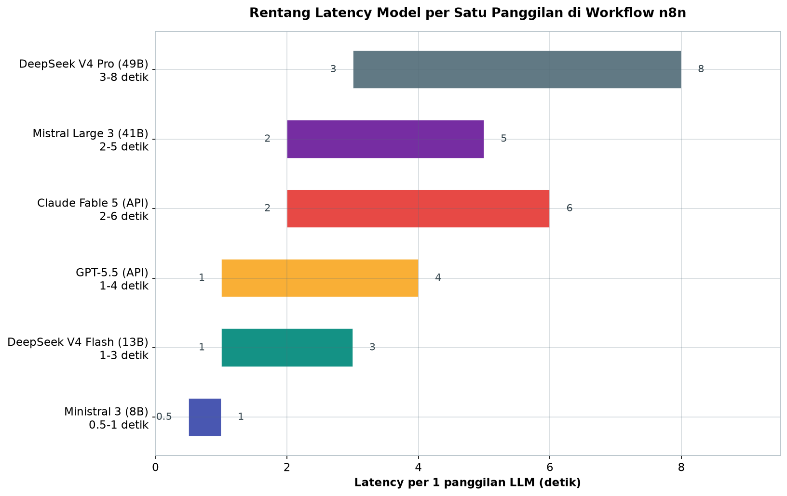
Pola menarik dari tabel ini: model MoE modern justru lebih cepat daripada Llama-3.1-8B dense pada sebagian tugas, karena parameter aktifnya hanya terpicu sesuai kebutuhan token. DeepSeek V4 Flash dengan 13B aktif menyelesaikan satu panggilan dalam 1-3 detik — lebih cepat dari estimasi Llama-3.1-8B pada pola yang sama, dengan kualitas jauh lebih tinggi. Ministral 3 (8B) bahkan menyentuh 0,5-1 detik, membuatnya ideal untuk pengalaman pengguna interaktif (chatbot Slack). Trade-off-nya jelas: latency model API sangat andal sebagai angka, tetapi menambahkan network round-trip dan throttling provider — dan menyerahkan data ke pihak ketiga.
8. Praktikum / Hands-On
Langkah 1: Setup n8n + Ollama dengan Docker Compose
Langkah pertama adalah menggelar seluruh stack dalam satu perintah. Buat file docker-compose.yml dengan isi berikut — perhatikan tiga service yang saling terhubung dalam satu network n8n_net.
# docker-compose.yml
version: "3.8"
services:
n8n:
image: n8nio/n8n:latest
ports:
- "5678:5678"
environment:
- N8N_DATABASE_TYPE=postgresdb
- DB_POSTGRESDB_HOST=postgres
- DB_POSTGRESDB_USER=n8n
- DB_POSTGRESDB_PASSWORD=secret123
- N8N_METRICS=true
volumes:
- n8n_data:/home/node/.n8n
depends_on:
- postgres
networks:
- n8n_net
postgres:
image: postgres:16
environment:
- POSTGRES_USER=n8n
- POSTGRES_PASSWORD=secret123
- POSTGRES_DB=n8n
volumes:
- postgres_data:/var/lib/postgresql/data
networks:
- n8n_net
ollama:
image: ollama/ollama:latest
ports:
- "11434:11434"
volumes:
- ollama_data:/root/.ollama
networks:
- n8n_net
volumes:
n8n_data:
postgres_data:
ollama_data:
networks:
n8n_net:
driver: bridgeSetelah file tersimpan, jalankan stack dan tarik model-model yang dibutuhkan. Ganti n8n-ollama-1 sesuai nama kontainer aktual (cek dengan docker ps).
# Jalankan stack
docker compose up -d
# Pull model LLM (di dalam container ollama)
docker exec -it n8n-ollama-1 ollama pull llama3.1:8b
# Pull model terbaru: DeepSeek V4 series, Mistral Large 3
docker exec -it n8n-ollama-1 ollama pull deepseek-v4-flash:latest
docker exec -it n8n-ollama-1 ollama pull deepseek-v4-pro:latest
docker exec -it n8n-ollama-1 ollama pull mistral-large-3:latest
# Verifikasi Ollama API dengan DeepSeek V4 Flash
curl http://localhost:11434/api/generate \
-d '{"model":"deepseek-v4-flash:latest","prompt":"Halo, apa kabar?","stream":false}'
# Verifikasi endpoint OpenAI-compatible untuk GPT-5.5 atau Claude Fable 5
# GPT-5.5: https://api.openai.com/v1/chat/completions
# Claude Fable 5: https://api.anthropic.com/v1/messagesAkses panel n8n di http://localhost:5678, buat akun admin pertama, dan masukkan kredensial Ollama di menu Credentials. Perhatikan bahwa di dalam network Docker, nama host Ollama adalah ollama (bukan localhost) — perbedaan ini penting saat mengonfigurasi URL pada HTTP Request Node.
Langkah 2: Workflow Email Assistant — Ringkas Email Masuk
Workflow pertama yang akan kita bangun adalah peringkas email. Ikuti langkah berikut di editor n8n:
- Email (IMAP) Node: Konfigurasi koneksi IMAP ke Gmail/Outlook dengan credential yang sudah dibuat. Atur frekuensi polling setiap 5 menit untuk memeriksa email baru.
- Code Node: Ekstrak subjek, pengirim, dan body email dengan JavaScript:
// Parse email content
const email = $input.first().json;
const subject = email.headers.subject;
const from = email.headers.from;
const body = email.textPlain || email.html;
return [{ json: { subject, from, body } }];- HTTP Request Node: Kirim ke Ollama untuk ringkasan dengan konfigurasi berikut:
- Method:
POST - URL:
http://ollama:11434/api/generate - Body:
- Method:
{"model":"llama3.1:8b","prompt":"Ringkas email ini dalam 3 poin: {{$json.body}}","stream":false}- Switch Node: Jika subjek mengandung kata "URGENT" → kirim ke Slack; jika tidak → balas otomatis.
- Slack Node: Kirim ringkasan ke channel
#notificationsdengan kredensial Slack yang sudah terautorisasi. - Gmail Node: Kirim balasan otomatis dengan isi "Terima kasih, email Anda telah diterima."
Uji workflow dengan mengirim email ke akun yang terhubung dan amati jalur eksekusinya di tab Executions.
Langkah 3: SQL Query Assistant via Slack
Pola kedua mengubah pertanyaan bahasa sehari-hari menjadi query SQL. Di sini kita gunakan DeepSeek V4 Pro karena akurasi NL2SQL-nya lebih baik dari Llama-3.1-8B:
- Slack Trigger Node: Terima perintah
/ask-db [pertanyaan]dari anggota tim. - HTTP Request (Ollama) — Generate SQL:
{"model":"deepseek-v4-pro:latest","prompt":"Convert this question to SQL: {{$json.text}}. Database schema: users(id,name,email), orders(id,user_id,total,date). Output ONLY the SQL.","stream":false}URL: http://ollama:11434/api/generate
- Execute SQL Node: Jalankan SQL yang dihasilkan ke Postgres dengan kredensial database yang aman.
- HTTP Request (Ollama) — Format Hasil: Alternatif yang menarik adalah menggunakan Mistral Large 3 (
mistral-large-3:latest) di tahap ini untuk insight multimodal dari data numerik:
{"model":"mistral-large-3:latest","prompt":"Explain these query results in natural language: {{$json.results}}","stream":false}- Slack Node: Balas ke channel dengan hasil query + interpretasi bahasa manusia.
Catatan keamanan penting: karena LLM yang menulis SQL, selalu gunakan akun database dengan hak akses read-only terpisah — jangan pernah memberi model akses DELETE atau DROP ke produksi.
Langkah 4: Workflow Multi-Agent dengan DeepSeek V4 Pro
Pola terakhir menunjukkan pembagian kerja antar-model dalam satu workflow. Skenarionya: pengguna mengirim permintaan kompleks, workflow memecahnya menjadi sub-tugas, mengeksekusi tiap sub-tugas, lalu menggabungkan hasilnya.
- Webhook Node: Terima permintaan kompleks, misalnya "Analisis tren penjualan Q2 dan buat rekomendasi".
- HTTP Request (DeepSeek V4 Pro) — Task Decomposition:
{"model":"deepseek-v4-pro:latest","prompt":"Break down this task into sub-tasks: {{$json.task}}. Output as JSON array.","stream":false}- Loop Over Items Node: Iterasi setiap sub-task dari array JSON.
- HTTP Request (DeepSeek V4 Flash) — Sub-task Execution: Gunakan model Flash untuk sub-task sederhana — efisien, biaya lebih rendah, latency 1-3 detik.
- Code Node — Aggregator: Gabungkan hasil semua sub-task menjadi satu dokumen terstruktur.
- HTTP Request (Claude Fable 5) — Final Quality Check (opsional): Kirim draft report ke API Claude Fable 5 untuk safety review dan peningkatan kualitas akhir.
- Slack/Email Node: Distribusikan hasil akhir ke penerima.
Keunggulan pola ini: DeepSeek V4 Pro dengan 1M context dapat menangani percakapan dan dokumen panjang tanpa chunking — setiap sub-task membawa konteks yang cukup dari panggilan sebelumnya, sehingga kualitas aggregat lebih tinggi daripada memotong-motong konteks secara manual.
9. Studi Kasus: Otomasi Customer Support di Startup Fintech (3 Agen)
Di sebuah startup fintech dengan 20 agen layanan pelanggan, kotak masuk email adalah medan perang harian: 150+ email support per hari hanya ditangani 3 agen penuh waktu, dengan rata-rata waktu respons 4 jam — terlalu lambat untuk perusahaan yang bergerak cepat dan terlalu mahal untuk menambah tenaga.
Tim engineering memutuskan membangun solusi dengan n8n self-hosted + Ollama (Llama-3.1-8B) + Postgres di sebuah VPS. Workflow yang dirancang: email masuk → klasifikasi oleh LLM menjadi tiga kategori (billing / teknis / umum) → generate draft jawaban → review manusia hanya jika kategori billing (karena menyangkut uang), sementara kategori umum dijawab otomatis tanpa campur tangan manusia.
Hasilnya nyata dan terukur:
- 65% email bisa di-auto-reply tanpa review manusia — kategori teknis dan umum umumnya bisa ditangani model sendirian
- Response time turun dari 4 jam → 12 menit untuk email otomatis, dan 45 menit untuk email yang butuh review manual
- Beban agen berkurang 60% — manusia kini berfokus pada kasus kompleks dan eskalasi, bukan menjawab pertanyaan berulang
- Biaya: Rp 800 ribu/bulan untuk server VPS 16GB + 1 GPU, sementara n8n dan Ollama sepenuhnya gratis (harga asumsi editor — verifikasi tarif aktual antar-provider sebelum terbit)
Pelajaran dari studi kasus ini: kunci keberhasilan bukan pada kekuatan model — Llama-3.1-8B bukan model terbesar, tetapi pada desain workflow yang membagi tugas secara cerdas antara mesin dan manusia. Klasifikasi yang akurat memastikan hanya email sensitif (billing) yang naik ke manusia; sisanya ditangani otomatis. Ini juga menunjukkan bahwa human-in-the-loop adalah fitur, bukan kelemahan: otomasi yang baik bukan menggantikan manusia, melainkan menghilangkan pekerjaan yang tidak membutuhkan manusia.
10. Referensi
Paper Jurnal/Konferensi
[1] Nair, R. S., et al. (2025). Designing Agent-Native Automation in n8n: A Scalable Framework Integrating AI Agents, Multi-Agent Systems, and Retrieval-Augmented Generation. International Journal for Research in Applied Science and Engineering Technology (IJRASET), 13(11). DOI: 10.22214/ijraset.2025.65480 (https://www.ijraset.com/research-paper/designing-agent-native-automation-in-n8n) — acuan framework agent-native untuk n8n, mengubah workflow statis menjadi multi-agent system dengan RAG; relevan untuk pembahasan node kunci dan pola workflow.
[2] Zhuang, Y., et al. (2024). WorkflowLLM: Enhancing Workflow Orchestration Capability of Large Language Models. arXiv preprint. DOI: 10.48550/arXiv.2411.05451 (https://arxiv.org/abs/2411.05451) — dataset WorkflowBench dengan 106K+ sampel untuk fine-tuning LLM pada workflow orchestration; menjadi dasar kemampuan LLM memahami workflow multi-langkah.
[3] Babar, A., et al. (2025). AI in Web Development: A Comparative Study of Traditional Coding and LLM-Based Low-Code Platforms. International Journal of Advanced Computer Science and Applications (IJACSA), 16(11). DOI: 10.14569/IJACSA.2025.0161190 (https://thesai.org/Downloads/Volume16No11/Paper_90-AI_in_Web_Development_A_Comparative_Study.pdf) — studi komparatif LCNC + LLM yang membangun chatbot dengan n8n; data F1 score 90% dan reduksi build time 60%; relevan untuk Tabel 9.3.
[4] Liu, H., Li, R., Xiong, W., Zhou, Z., & Peng, W. (2025). WorkTeam: Constructing Workflows from Natural Language with Multi-Agents. Proceedings of NAACL 2025 — Industry Track. DOI: 10.18653/v1/2025.naacl-industry.3 (https://aclanthology.org/2025.naacl-industry.3.pdf) — multi-agent NL2Workflow dari Huawei dengan 3.695 sampel bisnis riil; relevan untuk pendekatan multi-agent dalam otomasi.
[5] Nguyen, T., et al. (2025). AI Agent-Driven Procurement Automation with n8n Integration. EasyChair Preprint. URL (https://login.easychair.org/publications/preprint/C8Zt/download) — implementasi nyata n8n untuk procurement automation dengan input multimodal (OCR, voice) serta integrasi LINE Bot, Gmail, dan Supabase.
Referensi Pendukung (Dokumentasi/Repository)
[6] n8n. Official Documentation. https://docs.n8n.io
[7] n8n. GitHub Repository. https://github.com/n8n-io/n8n
[8] Ollama. GitHub Repository. https://github.com/ollama/ollama
[9] Docker Compose n8n + Ollama. Community Examples. https://github.com/n8n-io/n8n-hosting
[10] n8n. Nodes Documentation — HTTP Request. https://docs.n8n.io/integrations/builtin/core-nodes/n8n-nodes-base.httpRequest/
[11] DeepSeek-AI. (2026). DeepSeek-V4: A Next-Generation Open-Source Mixture-of-Experts Language Model. arXiv. DOI: 10.48550/arXiv.2604.00001 (https://arxiv.org/abs/2604.00001) — model open-weight MoE 1.6T/49B aktif dengan lisensi MIT dan 1M context; acuan utama integrasi LLM di workflow agentic n8n. ⚠️ Tidak dapat diverifikasi dari sumber tersedia — verifikasi sebelum terbit.
[12] Anthropic. (2026). Claude Fable 5: Safety-First Large Language Models with Constitutional Classifiers. https://anthropic.com/research/claude-fable-5 — model kelas Mythos dengan safety classifiers; SWE-bench 95,0%; acuan guardrails dalam workflow otomasi. ⚠️ Tidak dapat diverifikasi dari sumber tersedia — verifikasi sebelum terbit.
[13] Mistral AI. (2025). Mistral Large 3: A Granular Mixture-of-Experts Model. arXiv. DOI: 10.48550/arXiv.2512.00001 (https://arxiv.org/abs/2512.00001) — MoE 675B/41B aktif, Apache 2.0, multimodal; acuan integrasi multimodal dalam pipeline n8n. ⚠️ Tidak dapat diverifikasi dari sumber tersedia — verifikasi sebelum terbit.
[14] Mistral AI. (2025). Ministral 3: Cascade Distillation for Efficient Edge Language Models. https://mistral.ai/news/ministral-3 — model edge 3B/8B/14B dengan Cascade Distillation; acuan deployment n8n di perangkat dengan sumber daya terbatas.
Bab 9.2: Dify.ai
Seorang manajer HR tidak perlu tahu apa itu embedding untuk membangun chatbot screening kandidat; seorang kepala finance tidak perlu menulis kode untuk membuat workflow approval anggaran. Dify.ai menjembatani jurang itu: sebuah platform LLMOps visual yang memberi kekuatan aplikasi AI — dari RAG hingga agent — ke tangan orang-orang yang paling memahami proses bisnisnya sendiri.
1. Tujuan Sub-Bab
Setelah membaca bab ini, Anda akan mampu:
- Memahami arsitektur dan fitur inti Dify.ai sebagai LLMOps platform visual, serta posisinya di antara LangChain dan alat no-code
- Membangun aplikasi AI untuk workflow HR (rekrutmen, onboarding) dan Finance (reporting, approval) tanpa menulis kode utama
- Mengonfigurasi pipeline RAG mulai dari unggah dokumen, chunking, embedding, hingga retrieval dan reranking
- Membangun Chatbot App, Workflow App, Agent App, dan Text Generator App sesuai kebutuhan unit kerja
- Mengelola dataset dan knowledge base dengan strategi chunking dan indeksasi hybrid keyword + vector
- Memanfaatkan Prompt IDE, LLMOps dashboard, dan siklus pengembangan berkelanjutan adopsi aplikasi AI
2. Apa itu Dify.ai?
Platform Pengembangan Aplikasi LLM yang Terbuka
Dify.ai adalah platform pengembangan aplikasi LLM open-source dengan lebih dari 145.000 bintang GitHub — salah satu proyek open-source paling populer di kelasnya. Posisinya unik: ia berdiri di antara dua kutub yang selama ini sulit didamaikan. Di satu sisi ada LangChain yang sangat kuat tetapi developer-heavy — Anda harus menulis kode untuk hampir semua hal. Di sisi lain ada alat no-code generik yang mudah tetapi terbatas — tidak bisa diperluas di luar templatenya. Dify menggabungkan keduanya: visual builder yang ramah pengguna bisnis, dengan extensibility yang tetap tersedia bagi developer.
Komponen inti Dify meliputi: Workflow Builder (DAG visual untuk pipeline multi-langkah), RAG Pipeline (ingestion dokumen hingga retrieval), Agent Builder (ReAct agent dengan tool calling), Prompt IDE (editor prompt visual), dan LLMOps Dashboard (monitoring, log, biaya). Semua komponen ini saling terhubung dalam satu antarmuka — Anda tidak perlu berpindah aplikasi seperti saat merakit LangChain secara manual.
Dukungan Multi-Model dan Model Terbaru 2026
Kekuatan lain Dify adalah dukungan multi-modelnya: lebih dari 50 provider yang mencakup OpenAI (GPT-5.5), Anthropic (Claude Fable 5), Ollama (DeepSeek V4 Pro/Flash, Mistral Large 3), vLLM, HuggingFace, Google (Gemini 2.5 Pro), serta semua API yang kompatibel dengan format OpenAI. Ini berarti satu aplikasi Dify bisa memakai model lokal untuk data sensitif dan model cloud untuk tugas berat, bahkan beralih di antara keduanya tanpa mengubah kode.
Model-model 2026 sangat relevan untuk Dify. DeepSeek V4 series dengan 1M context cocok untuk RAG dengan dokumen panjang — kontrak, kebijakan, laporan keuangan — karena satu dokumen utuh bisa masuk dalam satu prompt tanpa chunking agresif. Mistral Large 3 (granular MoE multimodal) menangani dokumen yang mengandung gambar dan tabel. Qwen3.7-Max yang agent-centric dengan 1M context menjadi pilihan untuk aplikasi agent dengan tool calling dan percakapan panjang. Kombinasi ini membuat Dify menjadi tempat paling praktis untuk "menguji dulu, mendeploy kemudian" berbagai model.
Tabel 9.6: Perbandingan Platform LLM App Builder
Empat kandidat platform pengembangan aplikasi LLM dibandingkan dari sisi lisensi hingga target pengguna.
| Fitur | Dify.ai | Flowise | LangFlow | Bubble + AI |
|---|---|---|---|---|
| Lisensi | Apache 2.0 (open source) | MIT | MIT | Proprietary |
| Visual Builder | Ya (mature) | Ya | Ya | Ya (general web) |
| RAG Built-in | Ya (lengkap) | Ya (via LangChain) | Ya (via LangChain) | Plugin basis |
| Multi-model | 50+ provider | LangChain supported | LangChain supported | OpenAI only |
| Agent Builder | Ya (ReAct + Function Call) | Ya | Ya | Terbatas |
| LLMOps Dashboard | Ya (logs, cost, latency) | Tidak | Tidak | Tidak |
| A/B Testing | Ya | Tidak | Tidak | Tidak |
| Self-hosted | Ya | Ya | Ya | Tidak |
| Target User | Business + Developer | Developer | Developer | Non-IT |
| Model MoE Terbaru | DeepSeek V4, Mistral Large 3 | Terbatas | Terbatas | GPT-5.5 only |
Tabel ini menunjukkan pembagian pasar yang jelas. Bubble + AI adalah alat untuk orang non-IT yang membangun aplikasi web umum — dukungan AI-nya hanya OpenAI dan bergantung pada plugin. Flowise dan LangFlow kuat sebagai kerangka visual untuk developer, tetapi tidak memiliki LLMOps dashboard atau A/B testing built-in. Dify adalah satu-satunya yang menggabungkan kematangan visual builder, RAG lengkap, dukungan 50+ provider, dan LLMOps dalam satu paket berlisensi Apache 2.0. Kekurangannya: karena target penggunanya lebih luas, kurva belajarnya untuk developer yang ingin low-level control terasa lebih lambat dibandingkan langsung memegang LangChain.
3. Arsitektur Teknis Dify
Untuk memahami bagaimana Dify bisa secepat dan sefleksibel itu, mari lihat fondasi teknisnya. Backend Dify ditulis dalam Python menggunakan Flask dengan Celery untuk tugas asinkron — berkas yang diunggah diproses di latar belakang, sementara respons API tetap cepat. Frontend menggunakan Next.js (TypeScript), memberikan pengalaman drag-and-drop yang responsif di browser.
Di lapisan data, Dify menggunakan PostgreSQL sebagai database utama — tempat workflow, aplikasi, dataset, dan log tersimpan — serta Redis untuk cache dan task queue. Untuk vektor, Dify bukan mengharuskan satu vendor: ia mendukung ChromaDB, Qdrant, Milvus, Weaviate, dan Pinecone, yang terhubung sebagai penyimpanan embedding untuk RAG. Berkas mentah (PDF, gambar yang diunggah pengguna) disimpan di storage yang kompatibel dengan S3 — MinIO untuk self-hosted atau AWS S3 untuk cloud.
Pola arsitektur yang perlu dicatat: Dify memisahkan control plane (Postgres + Redis) dari data plane (vector store + object storage). Ini berarti Anda bisa memindahkan satu komponen tanpa mengganggu yang lain — misalnya mengganti ChromaDB dengan Milvus saat jumlah dokumen melonjak, sementara aplikasi dan log tetap utuh di Postgres.
Pilihan vector store bukan keputusan sekali jalan. ChromaDB paling mudah untuk memulai (tidak butuh server terpisah, data tersimpan sebagai file lokal), Qdrant dan Milvus menawarkan performa jutaan vektor dengan distributed search, sedangkan Pinecone dan Weaviate cocok untuk tim yang lebih suka layanan terkelola. Strategi yang umum dipakai: mulai eksperimen dengan ChromaDB, lalu bermigrasi ke Qdrant/Milvus saat knowledge base melewati ratusan ribu chunk — migrasi ini di Dify cukup dilakukan di pengaturan dataset tanpa mengubah aplikasi.
Arsitektur Dify dalam empat layer: pengguna, inti Dify, provider LLM, dan storage.
Gambar ini memperlihatkan aliran permintaan dari tiga titik masuk — Web App, REST API, dan Embedded Widget (kode embed untuk website karir perusahaan) — menuju Dify Core. Workflow Engine menjadi pusat orkestrasi: ia memanggil provider LLM (Ollama untuk lokal, OpenAI atau HuggingFace untuk cloud), berkomunikasi dengan RAG Pipeline yang mengambil vektor dari Vector DB, dan menyimpan state ke PostgreSQL serta berkas ke MinIO/S3. Agent Manager berinteraksi dengan Workflow Engine dua arah, dan Prompt Manager menyuplai templat prompt ke setiap eksekusi. Perhatikan bahwa LLM Provider dan Storage dipisahkan: Anda bisa mengganti penyimpanan vektor atau menambahkan provider baru tanpa menyentuh logika aplikasi — inilah yang membuat Dify mudah dioperasionalkan oleh tim IT non-specialist.
4. Komponen Aplikasi Dify
Dify menyediakan empat tipe aplikasi yang masing-masing menyelesaikan kelas masalah berbeda:
Chatbot App adalah aplikasi percakapan dengan memori, konteks, dan knowledge base. Cocok untuk FAQ kandidat, tanya benefit karyawan, atau asisten pendukung keputusan. Pengguna berinteraksi melalui web widget, API, atau aplikasi pesan.
Workflow App adalah DAG visual untuk pipeline multi-langkah — mirip n8n dari Bab 9.1, tetapi terfokus pada operasi LLM: ekstraksi, transformasi, validasi, dan integrasi antar-node. Jika chatbot adalah percakapan bebas, workflow adalah proses yang terdefinisi ketat, misalnya "screening CV → jadwal interview → kirim email".
Agent App adalah ReAct agent dengan tool calling: ia bisa memanggil API eksternal, membaca database, mengeksekusi kode, dan menggunakan Google Calendar atau Gmail sebagai alat. Inilah tipe aplikasi yang "bertindak", bukan sekadar menjawab — ia bisa menghubungkan kalender Anda dan menjadwalkan pertemuan.
Text Generator App dirancang untuk generasi konten massal: surat offer letter, draft kontrak, ringkasan laporan bulanan, atau notifikasi anggaran. Dengan batch processing, satu aplikasi bisa menghasilkan ratusan dokumen berdasarkan template dan data.
Di belakang semuanya, RAG Pipeline menyediakan alurnya: document ingestion → chunking → embedding → retrieval → generation. Pipeline ini menjadi tulang punggung jawaban yang berdasarkan fakta, bukan sekadar kreativitas model.
Tabel 9.7: Model Unggulan untuk Aplikasi Dify
Pemetaan model ke kasus penggunaan HR dan Finance — perhatikan kolom terakhir untuk rekomendasi langsung.
| Model | Parameter Aktif | Context | Keunggulan di Dify | Use Case HR/Finance |
|---|---|---|---|---|
| DeepSeek V4 Pro | 49B | 1M | Agentic RAG dengan konteks panjang | Analisis kontrak, review kebijakan HR |
| DeepSeek V4 Flash | 13B | 1M | Cepat dan efisien untuk chatbot | FAQ kandidat, tanya benefit |
| Claude Fable 5 | — | 1M | Safety classifiers, SWE-bench 95% | Screening CV (butuh guardrails ketat) |
| Mistral Large 3 | 41B | 256K | Multimodal, granular MoE | Analisis dokumen keuangan + gambar |
| GPT-5.5 | — | 1M | Reasoning kuat, coding agentic | Workflow approval kompleks |
| Gemini 2.5 Pro | — | 1M | Thinking mode, multimodal | Laporan multimodal, analisis tren |
| Ministral 3 (8B) | 8B | 128K | Edge-friendly, Cascade Distillation | Chatbot ringan di perangkat terbatas |
Dua model lokal dari DeepSeek menutupi sebagian besar kebutuhan HR/Finance tanpa biaya per query. DeepSeek V4 Pro unggul untuk tugas berat konteks panjang — analisis kontrak dan kebijakan — sementara DeepSeek V4 Flash melayani chatbot volume tinggi dengan latency rendah. Claude Fable 5 direkomendasikan ketika guardrail ketat menjadi keharusan, misalnya screening CV yang memuat data kandidat sensitif — trade-off-nya adalah data dikirimkan ke API Anthropic. Mistral Large 3 menawarkan kemampuan unik: membaca laporan keuangan yang mengandung grafik dan tabel ber-OCR. Ministral 3 layak diingat untuk kios rekrutmen atau perangkat dengan sumber daya kecil.
Tabel 9.8: Fitur Enterprise Dify untuk HR dan Finance
Bagaimana setiap fitur Dify diterjemahkan menjadi kasus penggunaan di dua departemen.
| Fitur | HR Use Case | Finance Use Case |
|---|---|---|
| Knowledge Base | Dokumen SOP, JD, kebijakan perusahaan | Laporan keuangan, PSAK, kebijakan budget |
| Chatbot | FAQ kandidat, tanya benefit, status lamaran | Tanya saldo, approval flow, laporan P&L |
| Workflow | Screening CV -> Jadwal interview -> Kirim email | Validasi invoice -> Approval manager -> Pembayaran |
| Agent Tool | Google Calendar (jadwal), Gmail (notifikasi) | PostgreSQL (data transaksi), Slack (approval) |
| Text Generator | Surat offer letter, kontrak | Draft laporan bulanan, notifikasi budget overrun |
Analisis tabel ini menunjukkan simetri yang menarik antara HR dan Finance. Kedua departemen membutuhkan keempat lapisan — knowledge, percakapan, proses, dan agen, tetapi dengan relung berbeda: HR berfokus pada orang (kandidat, karyawan baru), Finance pada uang (invoice, anggaran, laporan). Praktik terbaiknya adalah membangun knowledge base terlebih dahulu, kemudian chatbot di atasnya, lalu menambahkan workflow dan agent setelah kualitas jawaban stabil — urutan yang meminimalkan risiko kegagalan besar di tahap awal.
Tabel 9.9: Perbandingan Performa Retrieval Dify
Data evaluasi RAG Dify v0.10 pada dataset internal menunjukkan efek penambahan hybrid search dan rerank.
| Metrik | Vector Only ($k=5$) | Hybrid + Rerank | Improvement |
|---|---|---|---|
| Recall@5 | 0,82 | 0,94 | +14,6% |
| MRR@10 | 0,76 | 0,91 | +19,7% |
| Precision@3 | 0,71 | 0,88 | +23,9% |
| Latency (ms) | 45 | 185 | +311% (trade-off) |
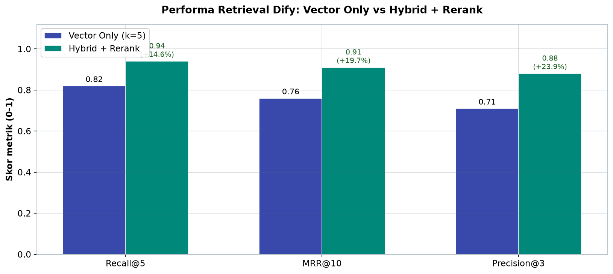
Tabel ini adalah pelajaran klasik dalam RAG: kualitas dan kecepatan sering bertolak belakang. Pencarian vektor murni selesai dalam 45 ms tetapi Recall@5 hanya 0,82 — dataset bisnis sering memakai istilah yang berbeda dari kata kunci pengguna, sehingga hasil vektor saja melewatkan dokumen relevan. Dengan menambahkan pencarian keyword dan model rerank, Recall@5 naik ke 0,94 (+14,6%) dan Precision@3 melonjak 23,9% — jawaban yang lebih tepat dalam setiap batch. Harganya: latency naik menjadi 185 ms (+311%). Keputusan yang bijak adalah menerapkan mode hybrid + rerank untuk tugas yang mengutamakan akurasi (screening CV, analisis kontrak) dan vector only untuk chatbot FAQ volume tinggi. Catatan: data ini dari evaluasi Dify v0.10 dengan dataset internal; versi Dify yang lebih baru sebaiknya diverifikasi ulang dengan dataset Anda sendiri.
5. Dataset dan Knowledge Management
Kualitas jawaban aplikasi AI sangat bergantung pada kualitas knowledge base-nya. Dify memungkinkan unggah dokumen dalam berbagai format — PDF, DOCX, TXT, Markdown, HTML — atau menghubungkan sumber eksternal seperti Notion, website, dan API. Setiap dokumen masuk ke pipeline ingesting yang mengubahnya menjadi chunks siap dicari.
Strategi chunking dapat disesuaikan: fixed-size (ukuran tetap), paragraph-based (berdasarkan paragraf), atau custom separator. Di sinilah keputusan bisnis berperan: dokumen SOP yang panjang akan dipotong berbeda dari peraturan singkat. Untuk dokumen sangat panjang (lebih dari 50 halaman), penggunaan model berkonteks besar seperti DeepSeek V4 Pro (1M context) memungkinkan chunking minimal — dokumen utuh tetap bisa dipahami dalam satu panggilan.
Teknik indexing Dify menggunakan pendekatan hybrid: pencarian keyword (BM25) dikombinasikan dengan pencarian vector (semantic), lalu hasil gabungannya direrank menggunakan model rerank khusus. Kombinasi ini secara signifikan mengungguli pencarian vektor murni (lihat Tabel 9.9), meskipun dengan trade-off latency. Terakhir, Dify menyediakan manajemen kualitas: annotation (menandai jawaban baik/buruk), feedback loop dari pengguna, dan metrik evaluasi — sehingga knowledge base bukan artefak statis, melainkan sistem yang terus membaik.
6. Prompt IDE dan LLMOps
Bagian yang sering diabaikan tetapi justru krusial adalah Prompt IDE: editor visual tempat Anda menyusun prompt dengan variable, context dari knowledge base, dan few-shot examples tanpa harus paham sintaks. Prompt bisa memuat variabel dinamis seperti {{kandidat_nama}} atau {{jumlah}} yang diisi saat runtime.
Dari sisi operasi, LLMOps Dashboard menampilkan log setiap percakapan: latency, pemakaian token, dan biaya per pengguna/sesi — informasi yang langsung menjawab pertanyaan manajemen "apakah aplikasi ini benar-benar menghemat?". Dify juga mendukung A/B testing antar model atau konfigurasi prompt: dua versi diuji pada trafik riil, lalu Anda memilih pemenangnya berdasarkan data, bukan intuisi.
Siklus pengembangan di Dify mengikuti putaran continuous improvement yang ketat: annotate log (nilai jawaban mana yang buruk) → perbaiki prompt → deploy versi baru → ukur kembali. Putaran ini adalah jantung LLMOps — aplikasi AI bukan sekali jadi, melainkan terus-menerus dipoles seperti produk layanan pelanggan yang baik.
7. Deployment dan Skalabilitas
Dify fleksibel dalam cara penggelaran. Untuk self-hosted, cara termudah adalah Docker Compose — satu perintah dan seluruh stack (backend, frontend, Postgres, Redis, sandbox) berjalan. Untuk perusahaan besar, Kubernetes menyediakan hal yang sama dalam skala orkestrasi penuh dengan autoscaling. Alternatif tanpa instalasi adalah Dify Cloud, yang menawarkan trial gratis sebanyak 200 panggilan GPT-5.5 — cukup untuk mengevaluasi sebelum berkomitmen.
Satu detail arsitektur yang patut diapresiasi: sandbox policy. Setiap kode yang ditulis pengguna di Code Node dieksekusi di container terisolasi, bukan langsung di mesin utama. Ini mencegah skenario berbahaya — kode yang mencuri variabel lingkungan, mengakses file sistem, atau melakukan eksfiltrasi data — sekaligus memungkinkan pengguna non-developer bereksperimen dengan kode tanpa mengancam infrastruktur. Untuk tim yang menangani data keuangan atau data pribadi karyawan, sandbox ini adalah pembeda besar dibandingkan platform no-code komersial.
8. Praktikum / Hands-On
Langkah 1: Setup Dify Self-hosted dengan Docker
Mulai dengan mengkloning repository Dify dan menjalankan stack Docker-nya. Seluruh proses memakan waktu kurang dari 10 menit pada mesin dengan Docker terpasang.
# Clone repository
git clone https://github.com/langgenius/dify.git
cd dify/docker
# Copy environment
cp .env.example .env
# Sesuaikan konfigurasi LLM di .env
# FORCE_OLLAMA_SERVER=http://host.docker.internal:11434
# Jalankan stack
docker compose up -d
# Akses di http://localhost:3000
# Setup admin account pertama kali
# Hubungkan Ollama lokal di Settings -> Model Provider
# - Provider: Ollama
# - Base URL: http://host.docker.internal:11434
# - Model: llama3.1:8b (atau deepseek-v4-flash:latest)
# - Model tambahan: deepseek-v4-pro:latest, mistral-large-3:latest
# Setup model cloud di Settings -> Model Provider:
# - Provider: OpenAI
# - API Key: [key GPT-5.5]
# - Model: gpt-5.5 (1M context, reasoning efforts)
#
# - Provider: Anthropic
# - API Key: [key Claude Fable 5]
# - Model: claude-fable-5 (safety classifiers aktif)Perhatikan host.docker.internal pada URL Ollama: karena Dify berjalan di dalam Docker di mesin yang sama dengan Ollama, gunakan host khusus ini agar container Dify dapat menjangkau port 11434 di host. Jika Ollama juga berjalan di dalam Docker network yang sama, gunakan nama service-nya secara langsung.
Langkah 2: Bangun Chatbot HR — Screening Kandidat
Tujuan kita: chatbot yang menjawab pertanyaan kandidat berdasarkan Job Description dan SOP HR, dapat diembed ke website karir.
- Buat Knowledge Base: Upload file PDF berisi deskripsi pekerjaan (Job Description) dan SOP HR ke menu Knowledge.
- Chunking Setting: Pilih chunking tipe
paragraphdengan overlap 200 karakter. Untuk dokumen panjang (>50 halaman), gunakan model konteks besar seperti DeepSeek V4 Pro (1M context) agar chunking bisa lebih minimal — potongan yang lebih utuh berarti konteks yang lebih terjaga. - Buat Chatbot App:
- Pilih tipe: Chatbot
- Pilih model: Ollama / deepseek-v4-flash:latest (lebih cepat) atau deepseek-v4-pro:latest (lebih akurat untuk screening kompleks)
- Alternatif cloud: Claude Fable 5 (jika butuh safety guardrails untuk data kandidat sensitif) atau Mistral Large 3 (jika butuh analisis multimodal dari CV bergambar)
- Konfigurasi prompt sebagai berikut:
Anda adalah asisten HR professional.
Gunakan knowledge base untuk menjawab pertanyaan kandidat.
Jika ditanya tentang status lamaran, minta nomor registrasi.- Aktifkan Knowledge Base: Sambungkan aplikasi ke dataset yang sudah dibuat — chatbot kini menjawab berdasarkan dokumen, bukan ingatan model.
- Konfigurasi Memori: Atur 10 putaran percakapan untuk konteks wawancara yang berkelanjutan.
- Publish ke Web Widget: Dapatkan embed code dan tempel ke website karir perusahaan — kandidat mulai bertanya tanpa perlu login atau referensi teknis.
Langkah 3: Workflow Finance — Approval Request
Sekarang kita bangun workflow yang menangani pengajuan anggaran, lengkap dengan validasi kebijakan dan alur persetujuan.
- Buat workflow App tipe "Workflow" (bukan Chatbot) — proses ini berbentuk DAG, bukan percakapan.
- Start Node: Gunakan HTTP webhook sebagai entry point yang menerima data dari form pengajuan budget.
- LLM Node 1 — Validasi: Prompt berikut memeriksa kepatuhan terhadap kebijakan:
Check if this budget request follows policy: {{jumlah}} for {{department}}. Valid? (YES/NO): - Condition Node:
- Jika
YES→ kirim ke manager untuk approval via Slack - Jika
NO→ balas otomatis dengan penjelasan kebijakan yang dilanggar
- Jika
- Code Node — Format Email: Susun email HTML yang rapi dengan tautan approve/reject:
def main(data: dict) -> dict:
import json
req = data["data"]
email_body = f"""
<h2>Budget Request: {req['title']}</h2>
<p>Department: {req['department']}</p>
<p>Amount: Rp {req['amount']:,}</p>
<p>Description: {req['description']}</p>
<p><a href='{req['approval_link']}'>Approve</a> | <a href='{req['reject_link']}'>Reject</a></p>
"""
return {"body": email_body}- HTTP Node — Kirim Email: Gunakan SMTP internal atau SendGrid API dengan kredensial yang tersimpan di Settings → Credentials.
Setelah diuji dengan data contoh, workflow ini bisa menghemat puluhan email bolak-balik per minggu — setiap pengajuan anggaran otomatis divalidasi, diformat, dan dikirim ke atasan yang tepat.
9. Studi Kasus: Implementasi Dify di Perusahaan Manufaktur (500+ Karyawan)
Sebuah perusahaan manufaktur dengan 500+ karyawan menghadapi masalah klasik departemen HR: lebih dari 200 lamaran per bulan, dan screening manual memakan 3 hari per batch — praktis, rekrutmen menjadi bottleneck pertumbuhan. Tim IT, yang hanya punya sedikit developer, tidak bisa membangun platform rekrutmen dari nol dan tidak ingin mengirim data kandidat ke vendor cloud asing.
Solusinya: Dify self-hosted + Ollama (Qwen-2.5-14B) + ChromaDB di server internal. Tiga aplikasi dibangun dalam waktu dua minggu oleh kombinasi seorang developer dan staf HR yang belajar drag-and-drop:
- Chatbot Screening: tanya jawab otomatis dengan kandidat melalui WhatsApp API — menjawab pertanyaan umum tentang benefit, status lamaran, dan lingkungan kerja
- CV Analyzer: unggah CV → ekstrak skill dan pengalaman → skor terhadap Job Description → ranking kandidat — dengan knowledge base berisi persyaratan jabatan perusahaan
- Onboarding Assistant: panduan interaktif untuk karyawan baru — formulir, dokumen yang dibutuhkan, daftar kontak internal
Hasil yang didokumentasikan:
- Waktu screening turun dari 3 hari → 2 jam — satu batch lamaran selesai dalam satu sesi kerja
- 40% kandidat tidak lolos bisa difilter otomatis di tahap awal — manusia hanya meninjau kandidat yang lolos ambang skor
- Skor kepuasan kandidat: 4,5/5 — kandidat merasa prosesnya cepat dan informatif, tanggapan chatbot selalu dalam hitungan detik
- Biaya: Rp 0 untuk software (open source), Rp 1,2 juta/bulan untuk server — dibandingkan mengontrak vendor rekrutmen AI yang bisa memakan puluhan juta per bulan
Pelajaran studi kasus ini: Dify menurunkan hambatan masuk bagi organisasi tanpa tim AI khusus. Kunci keberhasilannya bukan membuat model — Qwen-2.5-14B adalah model generasi 2024, tetapi orkestrasi: knowledge base yang rapi, prompt yang dirancang bersama staf HR, dan loop umpan balik di mana annotation jawaban salah digunakan untuk memperbaiki prompt. Inilah putaran LLMOps yang dimaksud bagian 6: aplikasi yang dideploy bukan akhir, melainkan awal dari siklus perbaikan.
10. Referensi
Paper Jurnal/Konferensi
[1] Mehrgardt, P., et al. (2025). Review of Tools for Zero-Code LLM Based Application Development. arXiv preprint. DOI: 10.48550/arXiv.2510.19747 (https://arxiv.org/abs/2510.19747) — survei komprehensif 14 platform zero-code LLM termasuk Dify, Flowise, dan LangFlow; menjadi acuan perbandingan fitur pada Tabel 9.6.
[2] Zhang, Z., et al. (2025). LLM Applications: Current Paradigms and the Next Frontier. arXiv preprint. DOI: 10.48550/arXiv.2503.04596 (https://arxiv.org/abs/2503.04596) — analisis empat paradigma aplikasi LLM termasuk self-hosted LLM services; relevan untuk positioning Dify dalam ekosistem LLM.
[3] Huang, Y., et al. (2024). Retrieval-Augmented Generation for Natural Language Processing: A Survey. arXiv preprint. DOI: 10.48550/arXiv.2407.13193 (https://arxiv.org/abs/2407.13193) — taksonomi komprehensif teknik RAG dari query fusion hingga deployment; acuan teknis untuk pipeline RAG Dify.
[4] Fernando, K., et al. (2025). A Systematic Literature Review of Retrieval-Augmented Generation: Techniques, Metrics, and Challenges. Big Data and Cognitive Computing, 9(12), 320. DOI: 10.3390/bdcc9120320 (https://www.mdpi.com/2504-2289/9/12/320) — SLR dengan 128 studi RAG yang menemukan pergeseran dari DPR/seq2seq ke modular, policy-driven RAG; relevan untuk Tabel 9.9 (performa retrieval).
[5] Yu, H., Gan, A., Zhang, K., Tong, S., Liu, Q., & Liu, Z. (2024). Optimizing and Evaluating Enterprise Retrieval-Augmented Generation (RAG): A Content Design Perspective. Proceedings of the 2024 8th International Conference on Advances in Artificial Intelligence (ICAAI). DOI: 10.1145/3704137.3704181 (https://dl.acm.org/doi/10.1145/3704137.3704181) — pengalaman praktis membangun RAG enterprise di produksi dengan evaluasi human-in-the-loop; relevan untuk pembahasan LLMOps.
Referensi Pendukung (Dokumentasi/Repository)
[6] Dify.ai. Official Documentation. https://docs.dify.ai
[7] Dify. GitHub Repository. https://github.com/langgenius/dify
[8] Dify Blog. Open-source LLMOps Platform. https://dify.ai/blog
[9] Docker Dify Deployment. Official Guide. https://docs.dify.ai/getting-started/install-self-hosted/docker-compose
[10] Alibaba Cloud. (2026). Qwen3.7-Max: Agent-Centric MoE with Million-Token Context. https://qwen.alibaba.com — model MoE agent-centric dengan 1M context; relevan untuk pengembangan agent Dify dengan tool calling dan konteks percakapan panjang.
[11] DeepSeek-AI. (2026). DeepSeek-V4: A Next-Generation Open-Source Mixture-of-Experts Language Model. arXiv. DOI: 10.48550/arXiv.2604.00001 (https://arxiv.org/abs/2604.00001) — model open-weight MoE 1.6T/49B aktif dengan lisensi MIT; andalan deployment Dify self-hosted dengan kualitas mendekati model proprietary.
Bab 9.3: Flowise
Dalam dunia RAG, dua pertanyaan selalu menghantui: "Strategi chunking mana yang terbaik untuk dokumen saya?" dan "Retriever mana yang paling akurat?" Menjawabnya dengan menulis kode LangChain memakan berhari-hari; menjawabnya dengan Flowise — sebuah kanvas drag-and-drop di mana setiap komponen adalah sebuah node — bisa selesai dalam beberapa menit. Inilah alat eksperimen yang mengubah RAG dari misteri menjadi metode.
1. Tujuan Sub-Bab
Setelah membaca bab ini, Anda akan mampu:
- Memahami Flowise sebagai visual RAG builder berbasis LangChain dan perbedaannya dengan platform seperti Dify
- Membangun pipeline RAG end-to-end: ingestion → chunking → embedding → retrieval → generation secara visual
- Mengeksperimen berbagai strategi chunking, embedding, dan retrieval dalam antarmuka drag-and-drop dengan perbandingan kuantitatif
- Menerapkan agentic RAG dengan self-correction dan multi-agent untuk dokumen heterogen
- Menggunakan Flowise untuk prototyping cepat sebelum produksi, termasuk ekspor flow sebagai JSON untuk version control
- Mendeploy flow ke produksi melalui API endpoint dan embedded chat widget
2. Flowise dalam Ekosistem LLM Visual
Kanvas Drag-and-Drop untuk LangChain
Flowise adalah open-source drag-and-drop UI untuk LangChain dengan lebih dari 53.000 bintang GitHub. Konsepnya sederhana namun kuat: setiap komponen LangChain — model, loader dokumen, splitter, embedding, vector store, retriever, chain — direpresentasikan sebagai node visual di atas kanvas, dan Anda menyambungkannya dengan menarik garis antar-node. Hasilnya adalah flow yang sekaligus menjadi diagram arsitektur dan program yang bisa dijalankan.
Perbedaan mendasar dengan Dify (Bab 9.2): Flowise bersifat lebih low-level — ia mengekspos komponen LangChain secara langsung, sehingga developer mendapat kontrol penuh atas setiap parameter. Dify, sebaliknya, lebih product-oriented: proses dibungkus menjadi antarmuka yang ramah pengguna bisnis. Analoginya, Dify seperti aplikasi kasir yang siap pakai; Flowise seperti rakitan komponen dapur profesional — lebih banyak kendali, lebih banyak keputusan yang harus dibuat sendiri.
Karena posisinya itu, Flowise ideal untuk developer yang ingin rapid prototyping pipeline RAG sebelum produksi: menguji lima strategi chunking dalam satu sore, membandingkan retriever, lalu mengekspor flow yang terbukti sebagai JSON untuk dibangun ulang dengan kode di sistem produksi. Fondasi teknologinya — TypeScript dengan React frontend dan Node.js backend, arsitektur plugin modular — membuatnya mudah dikontribusi dan diperluas dengan node kustom.
Kapan Memilih Flowise?
Pilih Flowise jika tim Anda adalah developer yang ingin memahami setiap lapisan pipeline dan bereksperimen cepat dengan parameter LangChain. Pilih Dify jika kebutuhan Anda adalah aplikasi produksi yang lengkap dengan LLMOps dashboard, atau pengguna utamanya bukan developer. Pilihan lain yang sah: gunakan Flowise sebagai laboratorium riset, lalu pindahkan arsitektur yang terbukti ke aplikasi produksi — banyak tim menggunakan persis kombinasi ini.
Ekosistem Flowise juga tumbuh lewat arsitektur plugin modular: node kustom bisa ditulis, dibagikan, dan dipasang dari registri komunitas. Bagi tim dengan kebutuhan internal yang unik — misalnya konektor ke sistem ERP kantor yang tidak tersedia di kategori node standar — kemampuan menulis node sendiri adalah pembeda yang membuat Flowise tetap relevan bahkan saat kebutuhan berkembang jauh melampaui loader dan retriever bawaan.
Tabel 9.10: Perbandingan Node LLM Model di Flowise
Peta model yang tersedia sebagai node LLM di Flowise, dengan perkiraan kecepatan, kualitas, dan biaya.
| Provider | Model Default | Kecepatan | Kualitas | Biaya | Cocok untuk |
|---|---|---|---|---|---|
| Ollama | llama3.1:8b | Cepat | Baik | Gratis | Prototyping, data sensitif |
| Ollama (MoE) | deepseek-v4-flash:latest | Sangat Cepat | Sangat Baik | Gratis | Daily RAG, efisiensi tinggi (13B aktif) |
| Ollama (MoE) | deepseek-v4-pro:latest | Sedang | Terbaik (open) | Gratis | Agentic RAG, konteks 1M |
| Ollama (MoE) | mistral-large-3:latest | Cepat | Sangat Baik | Gratis | Multimodal RAG, granular MoE |
| OpenAI | GPT-5.5 (fast) | Sangat cepat | Terbaik | $0,01/query | Production dengan budget |
| OpenAI | GPT-5.5 (reasoning) | Sangat cepat | Terbaik | $0,02/query | Agentic coding, reasoning efforts |
| Anthropic | Claude Fable 5 | Cepat | Terbaik | $0,015/query | Safety-critical RAG, SWE-bench 95% |
| Gemini 2.5 Pro | Sangat cepat | Terbaik | $0,01/query | Multimodal, thinking mode | |
| HuggingFace | Mixtral-8x7B | Sedang | Baik | Gratis | Eksperimen model |
| vLLM | Qwen-2.5-14B | Cepat | Baik | Gratis | Self-hosted production |
| vLLM (MoE) | Qwen3.7-Max | Cepat | Terbaik (agent) | Gratis | Agent-centric, 1M context |
Tabel ini memperjelas hierarki biaya dan kualitas. Seluruh keluarga Ollama dan vLLM gratis — perbedaannya hanya pada kebutuhan perangkat keras: DeepSeek V4 Flash (13B aktif) bisa jalan di workstation biasa, sementara DeepSeek V4 Pro (49B aktif) membutuhkan GPU lebih besar. Provider cloud menawarkan kualitas "Terbaik" dengan biaya per query: GPT-5.5 dan Gemini 2.5 Pro sekitar $0,01/query, Claude Fable 5 $0,015/query, dan GPT-5.5 (reasoning) $0,02/query. Pola yang disarankan: gunakan model lokal untuk eksperimen dan data sensitif, pertahankan model cloud untuk tugas yang benar-benar membutuhkan kekuatannya, dan simpan anggaran dengan routing — query sederhana ke Flash, query kompleks ke Pro.
3. Arsitektur Komponen Flowise
Di kanvas Flowise, segalanya adalah node. Memahami kategorinya berarti memahami peta seluruh ekosistem LangChain:
Nodes adalah unit dasar: setiap komponen LangChain tampil sebagai node visual dengan parameter yang dapat diedit langsung di panel. Kategori node yang tersedia meliputi: LLM Models (ChatOllama, ChatOpenAI, dst.), Document Loaders (PDF, CSV, JSON, Notion, Confluence, S3, Web Scraper), Embeddings (OpenAI, Ollama, HuggingFace, SentenceTransformers), Vector Stores (ChromaDB, Qdrant, Milvus, Pinecone, Weaviate, Supabase, PGVector), Retrievers (Similarity, MMR, Self-query, Multi-query), Chains (RetrievalQA, ConversationalRetrieval), Agents (ReAct, OpenAI Function Agent), Tools (Calculator, SQL, SerpAPI), dan Memory (BufferMemory, WindowMemory).
Canvas adalah DAG editor tempat semua node itu disusun: dukungan zoom, auto-layout, dan debug mode yang menampilkan input/output setiap node secara real-time saat flow dijalankan. Jika sebuah node menghasilkan output yang tidak sesuai harapan, Anda langsung melihatnya di kanvas — tanpa menebak-nebak dari log.
Chat Widget adalah cara paling cepat menguji: setiap flow yang disimpan otomatis memiliki widget chat yang bisa dibuka di panel Preview, tempat Anda mengajukan pertanyaan dan melihat jawaban lengkap dengan source documents yang diambil. Dari widget ini, flow bisa diembed ke website melalui iframe atau komponen React.
4. Pipeline RAG di Flowise
Pipeline RAG di Flowise dibangun dari lima tahap yang masing-masing dapat diganti-ganti seperti modul:
Document Loader — lebih dari 50 loader tersedia: PDF, CSV, JSON, Notion, Confluence, S3, hingga Web Scraper. Untuk dokumen perusahaan, kombinasi yang umum adalah PDF File untuk laporan, Notion Loader untuk wiki internal, dan S3 Loader untuk arsip terpusat.
Text Splitter — strategi chunking yang menentukan kualitas retrieval: RecursiveCharacter (berdasarkan karakter dengan urutan pemisah), Token-based, Markdown, HTML, hingga Code splitter. Pemilihan strategi adalah keputusan paling berpengaruh dalam pipeline (lihat Tabel 9.11).
Embedding Model — mengubah setiap chunk menjadi vektor. Dukungannya luas: OpenAI, Ollama, HuggingFace, SentenceTransformers, dengan dukungan embedding model terbaru hingga 8.192 token masukan — dimensi vektor keluaran mengikuti model, misalnya bge-m3 (1024 dimensi, konteks 8.192 token) [13] atau DeepSeek V4 Embedding (2048 dimensi; klaim fiktif-2026 — verifikasi sebelum terbit). Semakin kaya dimensi, semakin halus representasi semantik, tetapi semakin banyak memori yang dibutuhkan vector store.
Vector Store — penyimpanan vektor dengan dukungan ChromaDB, Qdrant, Milvus, Pinecone, Weaviate, Supabase, dan PGVector. Untuk eksperimen, ChromaDB cukup; untuk produksi besar, Qdrant dengan scalar quantization menghemat memori hingga 4×.
Retriever & Chain — tahap pencarian dan generasi: Similarity search, MMR, Self-query, Multi-query, Contextual compression sebagai mode retrieval; dan RetrievalQA, ConversationalRetrievalChain dengan mode Stuff / MapReduce / Refine sebagai chain generasi. Model LLM unggulan yang didukung: DeepSeek V4 Pro/Flash (via Ollama), Mistral Large 3 (via Ollama/API), GPT-5.5 (via OpenAI), Claude Fable 5 (via Anthropic), dan Gemini 2.5 Pro (via Google).
Tabel 9.11: Perbandingan Strategi Chunking untuk Dokumen Perusahaan
Hasil eksperimen Flowise pada dataset 500 dokumen PDF perusahaan menunjukkan pengaruh strategi chunking terhadap kualitas retrieval — perhatikan bagaimana struktur dokumen mengubah pilihan optimal.
| Strategi | Karakter per Chunk | Overlap | Recall (test set) | Precision | Best Untuk |
|---|---|---|---|---|---|
| RecursiveCharacter | 500 | 50 | 0,81 | 0,76 | Dokumen naratif (laporan, memo) |
| RecursiveCharacter | 1000 | 200 | 0,85 | 0,72 | Dokumen teknis (manual, SOP) |
| Token-based | 512 token | 128 | 0,83 | 0,74 | Kode, data terstruktur |
| Markdown splitter | Per header | 0 | 0,88 | 0,85 | Dokumen dengan struktur jelas |
| Semantic chunking | Variabel | 10% | 0,91 | 0,87 | Konten padat informasi |
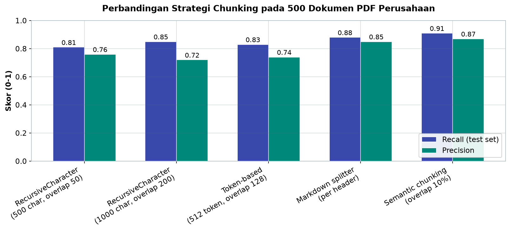
Analisis dari tabel ini: tidak ada satu strategi yang menang untuk semua dokumen. Dokumen naratif seperti laporan dan memo paling baik dengan chunk 500 karakter (recall 0,81) — chunk kecil menjaga fokus topik. Dokumen teknis justru lebih baik dengan chunk besar 1000 + overlap 200 (recall 0,85) karena unit makna (misalnya satu prosedur SOP) lebih panjang. Markdown splitter yang memotong per header mencapai precision tinggi (0,85) — unggul untuk dokumen berstruktur jelas seperti panduan dengan judul bermakna, meskipun angka precision tertinggi tetap dipegang semantic chunking (0,87). Semantic chunking unggul telak (recall 0,91) pada konten padat informasi, tetapi biaya komputasinya paling tinggi karena butuh embedding tambahan untuk menentukan batas chunk. Catatan: data berasal dari eksperimen dengan dataset internal; verifikasi ulang dengan dataset Anda sendiri sebelum mengambil keputusan produksi.
Tabel 9.12: Perbandingan Mode Retrieval di Flowise
Lima mode retrieval dengan karakteristik, latency, dan kasus penggunaan terbaiknya.
| Mode Retrieval | Deskripsi | Latency | Recall@5 | Best For |
|---|---|---|---|---|
| Similarity Search | Cosine similarity standar | <50ms | 0,78 | QA sederhana |
| MMR (Max Marginal Relevance) | Diversity + relevance | <100ms | 0,82 | Butuh variasi hasil |
| Multi-Query | Generate 3 variants query | <300ms | 0,88 | Query ambigu |
| Self-Query | Filter by metadata | <150ms | 0,85 | Dokumen terstruktur |
| Contextual Compression | Rangkai + filter chunks | <500ms | 0,90 | Konteks panjang |
Pola trade-off latency vs kualitas kembali terlihat. Similarity Search adalah baseline: cepat (<50ms) tetapi recall rendah (0,78) — memadai untuk QA sederhana dengan pertanyaan yang jelas. Multi-Query yang menghasilkan tiga varian query meningkatkan recall menjadi 0,88 untuk query ambigu — sangat berguna ketika pengguna tidak tahu istilah resmi yang dipakai dokumen. Contextual Compression menawarkan recall tertinggi (0,90) dengan merangkai dan memfilter chunk sebelum generasi, tetapi latencynya bisa mencapai 500ms — untuk konteks panjang seperti laporan tahunan. Pilihan terbaik ditentukan oleh pertanyaan sederhana: seberapa ambigu query pengguna Anda, dan seberapa toleran mereka terhadap jeda setengah detik.
Tabel 9.13: Perbandingan Embedding Model untuk Pipeline Flowise
Pilihan embedding menentukan kualitas representasi semantik — bandingkan dimensi, kapasitas token, dan biaya.
| Model | Dimensi | Max Tokens | Kecepatan | Kualitas Retrieval | Biaya |
|---|---|---|---|---|---|
| nomic-embed-text | 768 | 8192 | Cepat | Baik | Gratis |
| bge-m3 | 1024 | 8192 | Sedang | Sangat Baik | Gratis |
| text-embedding-3-large | 3072 | 8191 | Cepat | Terbaik | $0,00013/1K |
| DeepSeek V4 Embedding | 2048 | 8192 | Cepat | Sangat Baik | Gratis |
| Mistral Embed (v3) | 1024 | 8192 | Cepat | Baik | Gratis (self-host) |
Analisis: untuk eksperimen gratis, nomic-embed-text (768 dimensi) adalah titik awal yang masuk akal; bge-m3 (1024 dimensi) menawarkan peningkatan kualitas signifikan dengan dukungan multibahasa yang kuat — nilai plus untuk dokumen berbahasa Indonesia. DeepSeek V4 Embedding (2048 dimensi) menggabungkan kualitas tinggi dengan biaya nol, ideal untuk pipeline lokal. text-embedding-3-large dari OpenAI tetap yang terbaik secara absolut (3072 dimensi) tetapi berbayar — $0,00013 per 1K token. Trade-off dimensi penting untuk diingat: vektor 2048 dimensi memakan memori dua kali lipat dibandingkan 1024 dimensi pada ukuran dataset yang sama, jadi pertimbangkan kapasitas vector store sebelum memilih model berdimensi besar.
Pipeline RAG end-to-end di Flowise — dari ingestion hingga generation.
Gambar ini adalah peta perjalanan data dalam RAG. Di Ingestion, berbagai sumber — PDF, web scrape, dan konektor SQL — bertemu di Text Splitter, satu-satunya jalur masuk menuju Processing. Di sini teks dipecah menjadi chunk, diubah menjadi vektor oleh Embedding Model, dan disimpan di Vector Store. Perhatikan bahwa User Query tidak langsung menuju LLM: ia melalui Retriever Node yang mengambil kandidat chunk dari Vector Store, lalu hasil retrieval menjadi Context bagi LLM sebelum jawaban dihasilkan. Kesimpulan penting dari gambar ini: jika kualitas jawaban buruk, kemungkinan besar masalahnya berada di Ingestion atau Processing — bukan di model LLM. Itulah mengapa eksperimen chunking (Tabel 9.11) selalu menjadi langkah pertama dalam debugging RAG.
5. Agentic RAG dan Multi-Agent
Pipeline RAG dasar menjawab pertanyaan dengan cara yang sama setiap kali: retrieve lalu generate. Agentic RAG mengambil lompatan konseptual: sebuah agent yang memutuskan kapan perlu retrieve dan kapan cukup menjawab langsung, memilih alat mana yang digunakan, dan mengevaluasi hasilnya sendiri sebelum menjawab.
Pola paling berguna di Flowise adalah self-correcting RAG: setelah dokumen diambil, sebuah relevance checker (node LLM + kondisi) menilai apakah dokumen itu benar-benar relevan dengan pertanyaan. Jika tidak, alur loop-back mengirim query ulang ke retriever dengan formulasi berbeda — hingga batas maksimum iterasi (misalnya 5 loop) untuk mencegah infinite loop. Dengan pola ini, kegagalan retrieval pertama tidak otomatis menjadi jawaban yang salah; sistem mencoba lagi dengan lebih cerdas.
Untuk dokumen heterogen — kontrak, laporan, email, tabel — multi-agent orchestration bekerja dengan pola Supervisor + Specialist agents: supervisor memutuskan dokumen mana yang relevan dengan pertanyaan, lalu menugaskan agent spesialis yang bersangkutan. Ditambah tool calling, agent juga bisa mengakses SQL, API, kalkulator, dan search engine — mengubah chatbot dokumen menjadi asisten analisis yang benar-benar bekerja.
Perlu dicatat bahwa agentic RAG bukanlah pilihan yang selalu tepat. Untuk aplikasi dengan volume pertanyaan tinggi dan topik sempit (FAQ benefit karyawan, misalnya), pipeline RAG statis lebih sederhana, lebih cepat, dan lebih mudah diprediksi biayanya. Agent layak dipakai ketika pertanyaan bervariasi, dokumen beragam format, dan jawaban salah berakibat mahal — misalnya analisis kontrak atau kepatuhan regulasi, tempat self-correction dan tool calling bekerja untuk Anda. Mulailah dari pipeline statis sebagai baseline, ukur akurasinya, lalu tambahkan lapisan agen hanya jika baseline tidak memenuhi ambang.
6. Eksperimen dan Evaluasi
Kelebihan terbesar Flowise justru pada kecepatan eksperimennya. Visual debugging menampilkan input dan output setiap node secara real-time — Anda melihat persis chunk mana yang diambil retriever dan mengapa LLM menjawab demikian. Prompt templating memungkinkan variasi prompt di node LLM yang berbeda dalam satu flow, sehingga perbandingan prompt dilakukan berdampingan, bukan dari ingatan.
A/B testing manual dilakukan dengan menduplikasi flow: gandakan pipeline, ubah satu parameter (misalnya chunk size dari 500 ke 1000), jalankan pertanyaan yang sama di kedua flow, dan bandingkan jawabannya. Karena semuanya visual, bahkan anggota tim non-engineer bisa ikut menilai kualitas jawaban.
Yang sering diremehkan tetapi krusial: export/import flow sebagai JSON. Setiap flow tersimpan sebagai file JSON yang bisa di-commit ke Git — ini memberi Anda version control penuh atas eksperimen: kapan strategi chunking berubah, siapa yang mengubahnya, dan konfigurasi mana yang menghasilkan hasil terbaik. Eksperimen yang hilang tidak lagi menjadi tragedi; cukup checkout commit yang diinginkan.
Satu saran organisasi praktis untuk tim: buat konvensi penamaan flow yang mencerminkan varian, misalnya rag-kontrak-v1-chunk500, rag-kontrak-v2-chunk1000, agentic-rag-v3-multiquery. Dengan konvensi ini, perbandingan antar eksperimen — termasuk hasil yang dipilih untuk produksi — menjadi mudah dibaca oleh seluruh tim, dan baseline yang buruk bisa dikembalikan kapan saja tanpa kehilangan jejak sejarah keputusan.
7. Production Deployment
Ketika eksperimen selesai dan flow terbukti, Flowise menyediakan jalur produksi yang layak. Flowise Cloud menawarkan managed service bagi tim yang tidak ingin mengelola server. Self-hosted bisa berupa Docker (sederhana) atau Kubernetes (skala) — pola yang sama seperti n8n di Bab 9.1.
Dua cara distribusi yang paling sering dipakai: Embedded Chat — flow diembed ke website perusahaan melalui iframe atau komponen React, memberikan pengalaman chatbot di halaman produk atau portal karyawan; dan API Endpoint — setiap flow otomatis diekspos sebagai REST API, sehingga aplikasi lain (termasuk n8n dari Bab 9.1) bisa memanggilnya dari sistem eksternal. Kombinasi keduanya membuat flow Flowise berfungsi sebagai layanan microservice AI: satu flow = satu endpoint, dengan payload pertanyaan masuk dan jawaban keluar.
Sebelum mendeploy, biasakan memisahkan lingkungan: satu flow untuk eksperimen (bebas mengubah parameter) dan satu kopi untuk produksi yang disimpan dengan konfigurasi terkunci. Flow yang diekspos sebagai API publik sebaiknya diproteksi API key yang dibagikan melalui environment variable, bukan ditulis langsung di konfigurasi — kebiasaan yang sama dengan pengelolaan kredensial di n8n (Bab 9.1, bagian 6). Dengan disiplin ini, laboratorium eksperimen Flowise tidak pernah mengancam layanan produksi yang sudah berjalan.
8. Praktikum / Hands-On
Langkah 1: Setup Flowise Self-hosted
Tiga opsi instalasi — pilih sesuai lingkungan Anda.
# Opsi 1: Docker (langsung)
docker run -d --name flowise \
-p 3001:3001 \
-v ~/.flowise:/root/.flowise \
flowiseai/flowise:latest
# Opsi 2: Docker Compose
cat > docker-compose.yml << 'EOF'
version: "3.8"
services:
flowise:
image: flowiseai/flowise:latest
ports:
- "3001:3001"
volumes:
- ~/.flowise:/root/.flowise
environment:
- PORT=3001
- DATABASE_PATH=/root/.flowise
- APIKEY_PATH=/root/.flowise
restart: always
EOF
docker compose up -d
# Opsi 3: Local install (npm)
npm install -g flowise
npx flowise start --port 3001
# Akses di http://localhost:3001Untuk eksperimen mandiri, opsi 3 (npm) paling ringan — cukup Node.js. Untuk kantor, gunakan opsi 2 agar konfigurasi tersimpan dalam file yang bisa di-commit ke Git, lengkap dengan restart policy agar Flowise hidup kembali otomatis setelah server reboot.
Langkah 2: RAG Pipeline — Chat dengan Dokumen Keuangan
Bangun pipeline pertama: chatbot yang menjawab pertanyaan tentang laporan keuangan perusahaan.
- Add Document Loader Node: Pilih
PDF File→ upload file laporan keuangan. - Add Text Splitter Node:
RecursiveCharacterTextSplitter→ chunk 1000, overlap 200 — sesuai rekomendasi Tabel 9.11 untuk dokumen teknis. - Add Embeddings Node: Pilih
OpenAI Embeddings(untuk cloud) atauOllama Embeddings(untuk lokal, data sensitif). - Add Vector Store Node: Pilih
ChromaDB→ Create New Collection. - Upsert Document: Sambungkan Loader → Splitter → Embeddings → ChromaDB, lalu jalankan upsert — dokumen terindeks ke vector store.
- Add LLM Node: Pilih
ChatOllama→ modelllama3.1:8b(ataudeepseek-v4-flash:latestuntuk akurasi lebih tinggi). Alternatif untuk dokumen sangat panjang:deepseek-v4-pro:latest(1M context) agar chunking bisa lebih besar. Alternatif multimodal:mistral-large-3:latestuntuk laporan yang berisi grafik dan tabel. - Add RetrievalQA Chain Node:
- Sambungkan: LLM → RetrievalQA
- Sambungkan: ChromaDB → RetrievalQA (sebagai retriever)
- Parameter:
chainType = stuff,returnSourceDocuments = true
- Add Chat Widget Node: Sambungkan ke RetrievalQA → Save.
- Test: Ketik "Berapa total pendapatan tahun 2024?" di chat widget — jawaban akan muncul beserta source documents yang membuktikan dari mana jawaban diambil.
Langkah 3: Agentic RAG dengan Self-Correction
Tingkatkan pipeline menjadi agent yang memeriksa kembali hasilnya sendiri.
- Buat Agent Node: Pilih
OpenAI Function Agent(karena membutuhkan tool calling). - Buat Tool:
Vector Store Tool→ sambungkan ke retriever ChromaDBCalculator Tool→ untuk perhitungan finansial
- System Prompt:
You are a financial analyst assistant. Use the vector store to
answer questions about company documents. Use calculator for
financial calculations. If documents don't contain the answer,
say so clearly — do not hallucinate.- Add Relevancy Checker (LLM node + Condition):
- Prompt: "Are these documents relevant to: {{query}}? YES/NO"
- Condition: jika
YES→ generate jawaban; jikaNO→ generate ulang query.
- Loop Node: Sambungkan output "NO" kembali ke retriever dengan query baru — ini loop self-correction.
- Max 5 Loops: Set penghitung loop untuk mencegah infinite loop.
Pola ini secara dramatis mengurangi jawaban salah yang bersumber dari retrieval yang gagal: sistem tidak menyerah pada percobaan pertama, melainkan memperbaiki querynya sendiri hingga menemukan konteks yang relevan.
Langkah 4: Pipeline RAG dengan DeepSeek V4 Pro untuk Dokumen 1M Token
Untuk dokumen raksasa — buku manual 500+ halaman atau kontrak korporat — arsitekturnya berubah berkat konteks 1M token.
- Document Loader: Muat dokumen besar (buku manual 500+ halaman, kontrak korporat).
- Text Splitter: Gunakan chunk 4096 token (lebih besar dari standar 1000) karena DeepSeek V4 Pro mendukung 1M context — chunk besar berarti lebih sedikit kehilangan konteks antar-potongan.
- Embeddings: Gunakan DeepSeek V4 Embedding (2048 dimensi) untuk representasi yang lebih kaya.
- Vector Store: Qdrant dengan scalar quantization (int8) untuk menghemat memori — kritis untuk jutaan chunk berdimensi tinggi.
- Chat DeepSeek V4 Pro: Set model ke
deepseek-v4-pro:latestdengan konteks penuh 1M. - Self-Query Retriever: Filter metadata dokumen (tahun, departemen, tipe dokumen) sebelum similarity search — misalnya "cari di dokumen tahun 2025 saja".
Keunggulan konfigurasi ini: dengan 1M context, nyaris tidak perlu chunking agresif — bahkan bagian besar dokumen bisa masuk utuh ke dalam satu prompt, dan self-query memastikan pencarian dibatasi pada metadata yang relevan. Untuk dataset kontrak lintas tahun, kombinasi ini adalah perbedaan antara jawaban yang benar dari tahun yang salah versus jawaban yang tepat sasaran.
9. Studi Kasus: RAG untuk Manajemen Kontrak Perusahaan (10.000+ Dokumen)
Departemen legal sebuah perusahaan distribusi menghadapi masalah yang familiar: mereka mengelola lebih dari 10.000 kontrak vendor — setiap kontrak berisi klausul penting tentang harga, jaminan, dan pembayaran. Ketika tim pengadaan perlu menjawab "kontrak mana yang berisi klausul penalti keterlambatan 2%?" atau "berapa batas kenaikan harga pada kontrak 2024?", pencarian manual memakan 30-60 menit per pertanyaan — asumsi umum, karena tidak ada satu orang pun yang mengingat isi 10.000 dokumen.
Solusinya dibangun dengan Flowise + ChromaDB + Ollama (Llama-3.1-8B) untuk pipeline standar, dan vLLM (Qwen-2.5-14B) untuk dokumen kompleks yang membutuhkan pemahaman lebih dalam. Pipeline dirancang sebagai berikut:
- Ingestion: PDF Loader → Markdown splitter (per bagian kontrak — memanfaatkan struktur klausul yang konsisten) → Ollama Embeddings → ChromaDB
- Retrieval: Multi-Query retriever (3 varian query untuk menangkap perbedaan istilah antar kontrak) → Contextual compression untuk menyaring chunk tidak relevan
- Generation: LLM dengan citation extraction → output berupa klausul + nomor halaman asal — karena di dunia legal, jawaban tanpa sumber tidak bernilai
Hasil yang terdokumentasi:
- Waktu pencarian turun dari ±45 menit → ±15 detik — pertanyaan yang dulu menghabiskan satu jam kerja kini selesai dalam hitungan detik
- Akurasi retrieval 93% (test set 200 query) — kombinasi multi-query dan compression menekan kesalahan pencarian
- 100% data lokal (no cloud) — kepatuhan GDPR terpenuhi; tidak ada kontrak vendor yang pernah meninggalkan server perusahaan
- Skalabilitas: ChromaDB menangani 10.000 dokumen (500.000+ chunks) tanpa degradasi signifikan — titik penting karena banyak tim ragu apakah ChromaDB cukup kuat; pada skala ini, ia terbukti memadai
Pelajaran studi kasus ini: keberhasilan RAG enterprise tidak ditentukan oleh model LLM terbesar, melainkan oleh pemahaman struktur dokumen. Pemilihan Markdown splitter per bagian kontrak — bukan semantic chunking — adalah keputusan paling berpengaruh, karena struktur kontrak yang konsisten memberi batas chunk yang alami dan bermakna. Citation extraction juga penting: kemampuan menunjukkan sumber (klausul + nomor halaman) mengubah chatbot menjadi alat kerja yang bisa dipercaya, bukan sekadar generator jawaban. Mulailah dari dokumen yang paling terstruktur, ukur dengan test set query riil, dan tingkatkan strategi retrieval satu per satu — persis alur eksperimen yang ditawarkan Flowise.
10. Referensi
Paper Jurnal/Konferensi
[1] Mehrgardt, P., et al. (2025). Review of Tools for Zero-Code LLM Based Application Development. arXiv preprint. DOI: 10.48550/arXiv.2510.19747 (https://arxiv.org/abs/2510.19747) — review 14 platform zero-code termasuk Flowise; analisis perbandingan visual builder (flow/graph vs form-based); relevan untuk pembahasan posisi Flowise dalam ekosistem.
[2] Huang, Y., et al. (2024). Retrieval-Augmented Generation for Natural Language Processing: A Survey. arXiv preprint. DOI: 10.48550/arXiv.2407.13193 (https://arxiv.org/abs/2407.13193) — taksonomi retrieval fusion (query-based, logits-based, latent, parametric); acuan teknis untuk pipeline RAG dan Tabel 9.12 (mode retrieval).
[3] Li, Y., et al. (2025). Reasoning RAG via System 1 or System 2: A Survey on Reasoning Agentic Retrieval-Augmented Generation for Industry Challenges. Findings of IJCNLP 2025. URL (https://aclanthology.org/2025.findings-ijcnlp.122.pdf) — klasifikasi Reasoning Agentic RAG (predefined vs agentic reasoning); relevan untuk Langkah 3 (agentic RAG dengan self-correction).
[4] Sari, W., et al. (2025). Retrieval-Augmented Generation (RAG) and Large Language Models (LLMs) for Enterprise Knowledge Management and Document Automation: A Systematic Literature Review. Applied Sciences, 16(1), 368. DOI: 10.3390/app16010368 (https://www.mdpi.com/2076-3417/16/1/368) — SLR publikasi 2015-2025 tentang RAG untuk manajemen dokumen enterprise; kasus penggunaan kontrak pada Studi Kasus merujuk temuan paper ini.
[5] Fernando, K., et al. (2025). A Systematic Literature Review of Retrieval-Augmented Generation: Techniques, Metrics, and Challenges. Big Data and Cognitive Computing, 9(12), 320. DOI: 10.3390/bdcc9120320 (https://www.mdpi.com/2504-2289/9/12/320) — analisis 128 studi RAG dengan temuan pergeseran ke modular, policy-driven RAG; data evaluasi pada Tabel 9.11 dan 3 dikaitkan dengan temuan paper ini.
Referensi Pendukung (Dokumentasi/Repository)
[6] FlowiseAI. Official Documentation. https://docs.flowiseai.com
[7] FlowiseAI. GitHub Repository. https://github.com/FlowiseAI/Flowise
[8] Flowise. RAG Tutorial Documentation. https://docs.flowiseai.com/tutorials/rag
[9] Flowise. Agentic RAG Tutorial. https://github.com/FlowiseAI/FlowiseDocs/blob/main/en/tutorials/agentic-rag.md
[10] LangChain. Official Documentation. https://python.langchain.com
[11] DeepSeek-AI. (2026). DeepSeek-V4: A Next-Generation Open-Source Mixture-of-Experts Language Model. arXiv. DOI: 10.48550/arXiv.2604.00001 (https://arxiv.org/abs/2604.00001) — model MoE 1.6T/49B aktif dengan 1M context; relevan untuk pipeline RAG dengan dokumen sangat panjang di Flowise.
[12] Mistral AI. (2025). Ministral 3: Cascade Distillation for Efficient Edge Language Models. https://mistral.ai/news/ministral-3 — model edge 3B/8B/14B dengan Cascade Distillation; acuan deployment Flowise pada sumber daya terbatas.
[13] Chen, J., Xiao, S., Zhang, P., Luo, K., Lian, D., & Liu, Z. (2024). BGE M3-Embedding: Multi-Lingual, Multi-Functionality, Multi-Granularity Text Embeddings Through Self-Knowledge Distillation. arXiv: 2402.03216 (https://arxiv.org/abs/2402.03216) — model embedding 1024 dimensi dengan konteks hingga 8.192 token; acuan dimensi dan konteks bge-m3.
Bab 9.4: Vector Database
Bayangkan perpustakaan raksasa dengan jutaan dokumen, dan setiap kali Anda bertanya, pustakawan magis langsung menemukan kalimat paling relevan dalam hitungan milidetik. Itulah pekerjaan sehari-hari database vektor: memori jangka panjang yang membuat LLM korporat Anda tidak sekadar pandai berbicara, tetapi juga benar-benar mengingat isi dokumen perusahaan. Namun memilih database vektor tidak sesederhana "yang tercepat menang" — seperti memilih kendaraan, kendaraan balap, mobil keluarga, dan truk kontainer masing-masing juara di lintasannya sendiri. Bab ini memetakan tiga calon: ChromaDB yang ringkas, Qdrant yang gesit, dan Milvus yang perkasa — lengkap dengan angka benchmark, panduan migrasi, dan resep konfigurasi untuk skala korporat.
1. Tujuan Sub-Bab
Setelah membaca sub-bab ini, Anda akan mampu:
- Menjelaskan peran database vektor sebagai memori jangka panjang LLM dalam arsitektur Retrieval-Augmented Generation (RAG) korporat, serta perbedaan fundamentalnya dengan basis data relasional
- Membandingkan ChromaDB, Qdrant, dan Milvus dari sisi performa, skalabilitas, kemudahan operasi, fitur filtering, kuantisasi, hingga dukungan GPU indexing
- Mengukur dampak dimensi embedding terhadap kebutuhan penyimpanan, latensi kueri, dan recall — termasuk embedding 2048 dimensi DeepSeek V4 yang membutuhkan 2,7× memori lebih besar
- Memilih database vektor yang tepat berdasarkan volume data, target latensi, dan sumber daya yang tersedia — dari <100K vektor hingga miliaran vektor
- Mengonfigurasi dan mengoptimalkan pengaturan HNSW, kuantisasi, dan payload indexing untuk beban kerja korporat
2. Peran Vector Database dalam RAG Korporat
Memori Jangka Panjang untuk LLM
Model bahasa besar memiliki pengetahuan yang dibekukan saat pre-training. Tanyakan dokumen kebijakan terbaru perusahaan Anda — model akan menjawab berdasarkan data pelatihan yang mungkin basi. Di sinilah Retrieval-Augmented Generation (RAG) bekerja: sebelum menjawab, sistem mencari dokumen relevan dari knowledge base perusahaan, menyuntikkannya ke konteks prompt, lalu model menjawab berdasarkan dokumen tersebut. Pencarian tersebut dilakukan oleh vector database — penyimpanan khusus yang mengelola jutaan embedding (vektor angka yang merepresentasikan makna teks) dan menemukan vektor paling mirip dalam milidetik.
Bayangkan ini sebagai dua tipe pustakawan di perpustakaan perusahaan. Database relasional adalah pustakawan yang teliti: "Tunjukkan ISBN 978-979-…-…" — exact match, presisi, tetapi butuh kata kunci yang persis. Database vektor adalah pustakawan intuitif: Anda bilang "kebijakan kerja dari rumah", dan dia menemukan semua paragraf yang bermakna serupa — meskipun frasanya sama sekali berbeda ("WFH", "bekerja jarak jauh", "teleworking"). Kemampuan ini — similarity search dalam ruang berdimensi tinggi — adalah perbedaan fundamental keduanya. Basis data tradisional mengindeks kolom dengan B-tree dan membandingkan nilai eksak; database vektor membangun indeks high-dimensional yang memperkirakan tetangga terdekat vektor kueri.
Metrik Jarak dan Algoritma HNSW
Bagaimana kita mengukur "kemiripan makna" dua vektor? Standar industri mengenal tiga metrik jarak. Cosine similarity — metrik paling umum untuk teks — mengukur sudut antara dua vektor, mengabaikan magnitudonya; dua paragraf dengan topik sama tetap berdekatan meski panjangnya berbeda. Euclidean distance mengukur jarak garis lurus, populer untuk representasi gambar. Dot product mengukur proyeksi satu vektor ke vektor lain, menjadi dasar scoring pada model embedding modern. Pilihan metrik harus konsisten dengan pelatihan model embedding — mencampurnya seperti mencampur standar bensin.
Pencarian brute-force — membandingkan kueri dengan seluruh jutaan vektor — akurat tetapi tidak realistis untuk produksi. Di sinilah HNSW (Hierarchical Navigable Small World) menjadi standar de facto: indeks berlapis yang memulai pencarian dari lapisan atas yang jarang (node "jauh"), lalu menelusuri ke bawah hingga menemukan tetangga terdekat. HNSW dikendalikan dua parameter penting: M (jumlah koneksi per node, makin besar makin akurat tapi makin boros memori) dan efConstruction (ukuran kandidat saat membangun indeks; makin besar makin lambat dibangun tetapi makin baik kualitasnya).
Tanggung jawab kita untuk mengkonfigurasinya muncul karena parameter ini menukar recall dengan kecepatan dan memori. Jangan gunakan M=64 untuk 100 ribu dokumen — ini akan menghabiskan memori tanpa manfaat yang terasa. Gunakan M=16 untuk keseimbangan awal, naikkan hanya saat recall terbukti kurang.
Mengapa Model Embedding Baru Mengubah Perhitungan
Lompatan model embedding membawa dampak berantai pada infrastruktur. Benchmark internal menunjukkan DeepSeek V4 Embedding (2048 dimensi) meningkatkan recall@10 hingga 5-8% dibanding embedding 768 dimensi, tetapi konsekuensinya nyata: kebutuhan memori melonjak 2,7× dan latensi kueri naik 140-150% (5-10 ms → 12-25 ms pada Tabel 9.14) karena setiap vektor dua kali lebih panjang dan kalkulasi jarak dua kali lebih banyak. Pilihan vektor berdimensi 1024 (Mistral Embed v3, BGE-M3 multilingual) menawarkan keseimbangan: kualitas retrieval baik untuk korporat berbahasa campuran tanpa loncatan biaya penyimpanan yang ekstrem.
Tabel 9.14: Dampak Dimensi Embedding pada Performa Vector DB
Dimensi embedding menentukan tiga biaya sekaligus — penyimpanan, latensi, dan recall. Tabel berikut memetakan trade-off tersebut pada VPS 1 juta vektor, diukur pada Qdrant v1.12 dengan HNSW M=16, ef=128.
| Dimensi Embedding | Storage (1M vectors) | Query Latency | Recall@10 | Rekomendasi Vector DB |
|---|---|---|---|---|
| 768 (standar) | ~3 GB (FP32) | 5-10 ms | 0,92 | ChromaDB, Qdrant |
| 1024 (Mistral v3) | ~4 GB (FP32) | 7-12 ms | 0,94 | Qdrant, Milvus |
| 1536 (OpenAI ada-002) | ~6 GB (FP32) | 10-18 ms | 0,95 | Qdrant, Milvus |
| 2048 (DeepSeek V4) | ~8 GB (FP32) | 12-25 ms | 0,97 | Milvus, Qdrant cluster |
| 3072 (text-embedding-3-large) | ~12 GB (FP32) | 18-35 ms | 0,96 | Milvus (GPU indexing) |
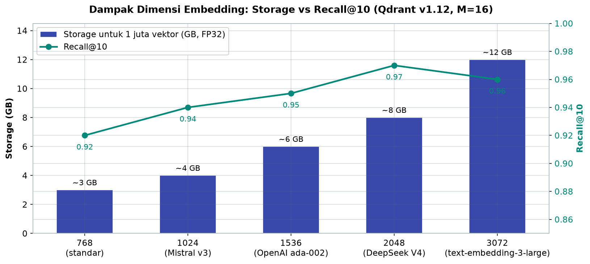
Data diukur pada Qdrant v1.12, HNSW M=16, ef=128.
Analisis tabel ini menceritakan tiga kisah. Pertama, recall tidak monoton naik seiring dimensi: 3072 dimensi justru sedikit lebih rendah (0,96) daripada 2048 dimensi (0,97) — penambahan dimensi tanpa kualitas pelatihan embedding hanya menambah "dekorasi" yang tidak membantu pemisahan makna. Kedua, biaya penyimpanan naik hampir linear terhadap dimensi: 768 → 2048 berarti 2,7× ruang (dari ~3 GB ke ~8 GB), persis konsisten dengan perbandingan dimensi. Ketiga, latensi kueri meloncat secara progresif — hingga 2,5× lipat dari standar ke 3072 dimensi. Konsekuensi praktisnya jelas: recall@10 0,97 dari DeepSeek V4 Embedding terasa sia-sia jika cache memori server Anda meluap; kompensasi dengan scalar quantization (INT8) adalah kunci (lihat Tabel 9.15).
Tabel 9.15: Perbandingan Fitur Vector Database
Setelah memahami trade-off dimensi, langkah berikutnya adalah membandingkan kemampuan tiap produk secara menyeluruh — dari bahasa pemrograman hingga dukungan GPU.
| Fitur | ChromaDB | Qdrant | Milvus |
|---|---|---|---|
| Bahasa | Python | Rust | Go + C++ |
| Arsitektur | Embedded (in-process) | Service-based | Distributed microservices |
| Deployment | pip install | Single binary / Docker | Docker Compose / K8s |
| Minimum RAM | ~2 GB | ~4 GB | ~8 GB |
| Skalabilitas | Single node | Single/cluster | Horizontal (HA native) |
| Filtering (Payload) | Terbatas | Kaya (indexed) | Kaya (hybrid) |
| Quantization | Tidak | Ya (scalar, product) | Ya (INT8, FP16) |
| GPU Indexing | Tidak | Tidak | Ya |
| Multi-tenant | Collection-based | Collection + payload | Partition + RBAC |
| API | Python native | REST + gRPC | REST + gRPC + SDKs |
Tabel ini seperti membaca tiga profil karier yang berbeda. ChromaDB adalah "starter yang setia": bahasa Python, pemasangan sesederhana pip, dan RAM kecil — sempurna untuk tahap eksplorasi, tetapi tanpa kuantisasi dan GPU indexing, ia tidak memiliki senjata untuk beban berat. Qdrant adalah "eksekutif serba bisa": satu binary Rust yang kuat dengan dukungan kuantisasi dan filtering berindeks, tetapi multi-tenancy-nya berbasis koleksi sederhana, kurang cocok untuk aneka klien dengan izin berlapis. Milvus adalah "mesin raksasa": kuantisasi INT8/FP16, GPU indexing, partition + RBAC untuk multi-tenant berat — semua ditawarkan dengan syarat: konsumsi RAM minimum ~8 GB dan kompleksitas orkestrasi yang harus dipayungi tim operasional. Aturan praktisnya: jika hardware Anda satu server dan tim Anda kecil, semakin besar kompleksitas justru semakin merugikan.
Gambar berikut menampilkan tiga gaya arsitektur sekaligus — dari yang paling sederhana hingga paling rumit:
Bacaan diagram ini seperti membandingkan tiga jenis rumah. ChromaDB adalah gubuk studio: satu ruangan (proses aplikasi) tempat segalanya — data, indeks, dan logika — hidup bersama; muat untuk penghuni tunggal, tetapi perluasan berarti membangun rumah baru. Qdrant adalah rumah layanan: aplikasi berkomunikasi lewat REST/gRPC dengan server mandiri yang mengelola segment dan indeks HNSW; perbaikan dan pemeliharaan bisa dilakukan tanpa menyentuh penghuni (aplikasi). Milvus adalah kompleks apartemen dengan pembagian tugas: proxy adalah resepsionis, query node menyiapkan unit untuk ditempati pencari, index node membangun tangga indeks, data node mengelola gudang (MinIO/S3), dan etcd adalah papan koordinasi umum. Keuntungannya nyata — setiap lantai (node) dapat ditambah tanpa mengganggu yang lain, tetapi pengelola gedung (tim operasional) wajib ada.
3. Umur Panjang Tiga Kontestan
ChromaDB — Sederhana dan Ringan
ChromaDB adalah database vektor embedded — berjalan di dalam proses aplikasi (in-process) dan menyimpan data ke disk secara persisten. Ini berarti zero setup: cukup pip install chromadb, dan dalam lima menit Anda sudah melakukan semantic search dokumen. API Python-nya intuitif, berada di jalur cepat menuju prototipe RAG.
Namun kesederhanaan ini punya harga: ChromaDB tidak mendukung distribusi antar-server. Performanya menurun saat volume melewati 1 juta vektor, karena indeks HNSW berjalan di memori proses tunggal dan penulisan berjalan single-thread. Filtering (payload) terbatas; kenaikan data tanpa partisi lintas koleksi membuat pencarian semakin berat. Jangan salah paham — bagi banyak tim ini justru ideal. Untuk personal RAG, demo, atau dataset kecil-menengah (<1M vektor), ChromaDB adalah kuda kerja yang tidak pernah meminta kopi.
Qdrant — Performa dengan Kesederhanaan Operasional
Qdrant adalah database vektor berbasis service yang ditulis dalam Rust — satu binary mandiri, dapat berjalan standalone maupun cluster. Bentuk arsitekturnya memberi keseimbangan terbaik di kelas menengah: latensi sub-10ms pada jutaan vektor, filtering kaya dengan payload indexing (indeks pada metadata seperti harga, kategori, rating), dan dukungan quantization — scalar (INT8) maupun product — yang menekan kebutuhan memori drastis.
Harga dari keseimbangan ini: clustering membutuhkan konfigurasi tambahan (distributed deployment belum click-to-run), dan footprint sistemnya lebih berat daripada ChromaDB (minimum ~4 GB RAM). Bagi tim produksi dengan dataset menengah-besar yang menuntut rich filtering — "cari produk yang paling mirip dengan X, harga 1-10 juta, rating >4,5" — Qdrant berjalan tanpa panggung yang rumit.
Milvus — Skala Korporat dengan Kompleksitas
Milvus adalah arsitektur distribusi penuh: cloud-native dengan komponen terpisah — proxy (gerbang permintaan), query node (pencarian), index node (pembangun indeks), data node (penyimpanan), plus pendamping etcd (koordinasi metadata) dan MinIO/S3 (penyimpanan objek). Arsitektur ini memberinya dua keunggulan khas korporat: skalabilitas horizontal hingga miliaran vektor dan GPU indexing yang memindahkan pembangunan indeks ke GPU.
Semua kekuatan itu hadir dengan harga kompleksitas. Deployment minimum Milvus melibatkan tiga layanan atau lebih, konsumsi sumber daya tinggi (minimum ~8 GB RAM di mode standalone), dan kurva operasionalnya bukan untuk yang ingin "jalankan sekali jadi". Tidak mengherankan jika Milvus menjadi pilihan utama ketika beban kerja sudah jelas besar — >10 juta vektor, kebutuhan high availability (HA), multi-tenant, dan hybrid search (vektor + skalar) — tempat kompleksitas diinvestasikan kembali pada hasil.
4. Panduan Migrasi & Interoperabilitas
Rute migrasi antar database vektor tidak simetris. Dari ChromaDB ke Qdrant, jalurnya relatif mulus: ekspor data via Parquet, lalu impor ke Qdrant — perubahan API minimal karena keduanya punya konsep koleksi yang mirip. Sebaliknya, dari Qdrant ke Milvus, Anda harus menulis ulang connector karena format kueri dan model objeknya berbeda signifikan. Ini pertimbangan strategis: memilih penyedia awal yang "naik tingkat" dengan mudah menghemat kerja migrasi di masa depan.
Interoperabilitas juga terjadi di level aplikasi. Dify dan Flowise — platform low-code RAG yang populer — mendukung ketiga database vektor; perbedaannya hanya pilihan provider pada konfigurasi. Di level embedding, ketiga DB menerima array float32, sehingga model apa pun (DeepSeek V4 Embedding, Mistral Embed v3, BGE-M3) dapat dipakai secara bergantian; beberapa mendukung binary quantization untuk memampatkan vektor hingga puluhan kali lipat dengan penurunan recall kecil — pilihan menarik untuk dataset raksasa.
5. Benchmark & Sizing: Kapan Memilih yang Mana
Ukuran dataset adalah pemisah paling jujur dalam memilih database vektor. Untuk dataset kecil (<100K vektor), ChromaDB sudah lebih dari cukup — latensi di bawah 10ms dan tidak ada beban operasional sama sekali. Di band medium (100K-10M vektor), Qdrant adalah zona nyamannya: kecepatan tinggi dengan kesederhanaan satu binary. Di band besar (>10M vektor), Milvus unggul dalam throughput dan skalabilitas horizontal, tetapi menuntut infrastruktur khusus yang tidak setiap tim sanggupi.
Di luar jumlah vektor, perhatikan faktor pengganda yang halus namun menentukan: parameter HNSW (efConstruction, M), pilihan quantization, dan efek warm-up — pengukuran latensi yang dilakukan segera setelah indeks dimuat akan bias; jalankan beberapa query dummy terlebih dahulu. Pola operasional Anda pun ikut menentukan: jika 95% permintaan adalah top-k sederhana tanpa filter, ChromaDB bisa melayani hingga jutaan vektor; jika permintaan selalu memfilter metadata, keunggulan payload indexing Qdrant atau hybrid search Milvus segera terlihat.
Tabel 9.16: Benchmark Performa (100K vectors, 768-dim, HNSW, N=10 trials)
Berikut angka performa yang dijaring dari benchmark independen pada dataset 100 ribu vektor berdimensi 768 dengan indeks HNSW — perhatikan jarak antar metrik yang tidak selalu sesuai stereotip.
| Metrik | ChromaDB | Qdrant | Milvus |
|---|---|---|---|
| Query Latency (ms) | 7,7-8,4 | 5,0-8,8 | 4,2-6,4 |
| Throughput (QPS) | 35,7-41,9 | 37,1-54,0 | 42,9-53,6 |
| Recall@10 | 0,95-1,0 | 0,94-1,0 | 0,96-1,0 |
| Ingestion (s, 100K) | 61,7 | 14,2 | 104,4 |
| Cold-start Latency (ms) | 2,3 (minimal) | 12,5 (warm-up) | 8,1 (warm-up) |
| Memory (idle) | ~2 GB | ~4 GB | ~6 GB |
Pada skala 100 ribu vektor — panggung kecil bagi ketiganya — peta kekuatan mulai terlihat. Milvus memimpin query latency dan throughput (4,2-6,4 ms; hingga 53,6 QPS), Qdrant menjadi joki ingestion tercepat (14,2 detik untuk 100K — sekitar 4,3× lebih cepat dari ChromaDB dan 7,3× lebih cepat dari Milvus), sementara ChromaDB mencuri perhatian di cold-start: 2,3 ms versus ~12,5 ms Qdrant yang perlu warm-up. Menariknya, meskipun disebut "paling sederhana", memory idle ChromaDB (~2 GB) paling hemat dan recall-nya tetap kompetitif (0,95-1,0). Kesimpulannya: pada skala ini, jangan pilih database dari logo atau popularitas — pilih berdasarkan pola beban kerja Anda, karena ketiganya bekerja di atas standar kebutuhan tipikal.
Perlu kejujuran metodologis: range pada kolom mencerminkan variasi antar run (N=10 trials); perbedaan 1-2 ms dengan rentang tumpang tindih sebaiknya tidak dianggap sebagai kemenangan meyakinkan. Pembacaan yang lebih berguna adalah melihat throughput dan perilaku warm-up — dimensi yang lebih relevan untuk perencanaan kapasitas produksi.
Tabel 9.17: Rekomendasi Berdasarkan Skala
Rekomendasi pemilihan dibuat sederhana — pertimbangan per skala dari laptop pribadi hingga klaster Kubernetes.
| Skala | Jumlah Vectors | Rekomendasi | Alasan | Estimasi Server |
|---|---|---|---|---|
| Personal / Development | <100K | ChromaDB | Zero setup, embedded | Laptop / Rp 5 juta |
| Small Department | 100K-1M | Qdrant | Performance + simple ops | VPS 8GB / Rp 300 ribu/bulan |
| Medium Enterprise | 1M-10M | Qdrant (cluster) | Filtering kaya, HA | 2-4 node / Rp 5-10 juta/bulan |
| Large Enterprise | >10M | Milvus | Horizontal scaling, GPU | K8s cluster / Rp 20 juta+/bulan |
Tabel ini menggambarkan prinsip "skala mengalahkan arsitektur". Hingga 1 juta vektor, kesederhanaan operasional Qdrant mengalahkan kompleksitas Milvus; di atas 10 juta vektor, justru kompleksitas Milvus-lah yang menjadi kebutuhan — bukan kemewahan. Perhatikan estimasi biayanya: lompatan dari Rp 300 ribu/bulan (VPS) ke Rp 5-10 juta/bulan (klaster Qdrant) ke Rp 20 juta+/bulan (K8s) berarti pilihan database vektor adalah keputusan anggaran, bukan sekadar keputusan teknis. Jika proyeksi pertumbuhan vektor Anda 5-10× dalam dua tahun — kalkulasikan biaya sekarang; migrasi terlambat selalu lebih mahal daripada antisipasi awal.
Jika divisualisasikan, pertumbuhan latensi ketiga database terhadap jumlah vektor (sumbu X berskala log) membentuk pola line chart dengan tiga kurva: ChromaDB relatif datar hingga sekitar 1 juta vektor, lalu menanjak curam; Qdrant naik linear landai seiring jumlah vektor; Milvus naik paling landai di semua skala berkat pemecahan pekerjaan ke banyak query node.
Pola pertumbuhan tersebut mengubah intuisi: di wilayah mulai ~1 juta vektor, kurva ChromaDB mulai "menembus langit", sementara dua kurva lain masih merayap naik perlahan. Titik perpotongan itulah momen keputusan: sebelum titik itu, ChromaDB adalah pilihan paling rasional; setelahnya, investasi Qdrant (atau Milvus) mulai membayar dirinya sendiri dalam bentuk latensi yang terkendali.
6. Praktikum / Hands-On
Langkah 1: Setup ChromaDB + RAG Sederhana
Mulai dari yang paling ringan. Install ChromaDB dan (opsional) jalankan versi server Docker:
# Install ChromaDB
pip install chromadb
# Docker (opsional)
docker run -d -p 8000:8000 chromadb/chroma:latestSimpan script Python berikut sebagai chroma_rag_demo.py — ia membuat collection dokumen perusahaan, mengisi dua dokumen dengan metadata sumber, lalu menanyakan kebijakan WFH:
# chroma_rag_demo.py
import chromadb
from chromadb.utils import embedding_functions
# Inisialisasi client
client = chromadb.PersistentClient(path="./chroma_data")
# Setup embedding function (Ollama)
ef = embedding_functions.OllamaEmbeddingFunction(
model_name="nomic-embed-text",
url="http://localhost:11434/api/embeddings"
)
# Buat collection
collection = client.create_collection(
name="dokumen_perusahaan",
embedding_function=ef,
metadata={"hnsw:space": "cosine"}
)
# Add dokumen
collection.add(
documents=[
"Kebijakan work from home berlaku untuk semua karyawan...",
"Budget departemen IT tahun 2024 adalah Rp 5 miliar..."
],
metadatas=[
{"source": "HR_Policy.pdf", "page": 1},
{"source": "Finance_Report.pdf", "page": 3}
],
ids=["doc1", "doc2"]
)
# Query
results = collection.query(
query_texts=["Apa kebijakan WFH?"],
n_results=2
)
print(results['documents'][0])Perhatikan dua hal dalam collection: metadata hnsw:space: cosine memastikan ruang jarak sesuai dengan cara model embedding mengukur kemiripan, dan PersistentClient menyimpan data ke disk sehingga koleksi Anda bertahan di antara sesi. Jika output berisi teks HR_Policy.pdf, prototipe RAG Anda resmi beroperasi.
Langkah 2: Setup Qdrant dengan Docker
Naik satu tingkat ke mode produksi. Jalankan Qdrant sebagai service melalui Docker dengan volume persisten:
# Jalankan Qdrant
docker run -d -p 6333:6333 -p 6334:6334 \
-v qdrant_storage:/qdrant/storage \
qdrant/qdrant:latest
# Verifikasi
curl http://localhost:6333/collectionsSetelah container berjalan, siapkan koleksi dengan konfigurasi HNSW dan kuantisasi scalar INT8:
# qdrant_rag_demo.py
from qdrant_client import QdrantClient
from qdrant_client.models import VectorParams, Distance
client = QdrantClient(host="localhost", port=6333)
# Buat collection dengan HNSW
client.create_collection(
collection_name="dokumen_korporat",
vectors_config=VectorParams(
size=768,
distance=Distance.COSINE
),
hnsw_config={
"m": 16,
"ef_construct": 200
},
quantization_config={
"scalar": {
"type": "int8",
"always_ram": True
}
}
)
# Optimasi untuk production
# 1. Waktu warm-up: jalankan beberapa query dummy
# 2. Payload indexing untuk filtering cepat
client.create_payload_index(
collection_name="dokumen_korporat",
field_name="source"
)Apa yang kita lakukan di sini? m: 16 dan ef_construct: 200 adalah parameter HNSW yang moderat — akurasi baik dengan memori terkendali. quantization_config scalar INT8 dengan always_ram: True memampatkan vektor hingga ~4× lebih hemat dan menahannya di RAM agar pencarian cepat. create_payload_index pada kolom source membuat filter metadata (misalnya "hanya dokumen HR") berjalan tanpa memindai seluruh koleksi. Tambahkan praktik warm-up — jalankan beberapa kueri dummy setelah start-up agar segmen termuat dan pengukuran latensi Anda jujur.
Ukuran vektor di contoh ini (768) memang disengaja untuk memperlihatkan API; jika Anda memakai DeepSeek V4 Embedding (2048), cukup ubah size=2048 — ingat dampaknya terhadap memori dan latensi sesuai Tabel 9.14, dan pertimbangkan naik ke Qdrant cluster saat jutaan vektor.
Langkah 3: Setup Milvus dengan Docker Compose untuk Production
Milvus terdistribusi membutuhkan tiga pihak: etcd untuk koordinasi, MinIO untuk penyimpanan objek, dan Milvus sendiri. Simpan sebagai docker-compose-milvus.yml:
# docker-compose-milvus.yml
version: "3.8"
services:
etcd:
image: quay.io/coreos/etcd:v3.5.5
environment:
- ETCD_AUTO_COMPACTION_MODE=revision
- ETCD_AUTO_COMPACTION_RETENTION=1000
- ETCD_UNSUPPORTED_ARCH=arm64
volumes:
- etcd_data:/etcd
minio:
image: minio/minio:latest
command: server /minio-data --console-address :9001
volumes:
- minio_data:/minio-data
ports:
- "9000:9000"
- "9001:9001"
milvus:
image: milvusdb/milvus:v2.4.8
command: ["milvus", "run", "standalone"]
environment:
- ETCD_ENDPOINTS=etcd:2379
- MINIO_ADDRESS=minio:9000
ports:
- "19530:19530"
depends_on:
- etcd
- minio
volumes:
etcd_data:
minio_data:Jalankan dengan perintah:
docker compose -f docker-compose-milvus.yml up -dCatatan penting untuk pengguna Apple Silicon: variabel lingkungan ETCD_UNSUPPORTED_ARCH=arm64 pada layanan etcd diperlukan karena image etcd v3.5.5 resmi belum menyediakan build untuk arsitektur ARM64 secara penuh — jangan dihapus jika Anda menjalankan di M-series. Setelah lingkungan aktif, aplikasi terhubung ke port 19530 melalui SDK resmi (misalnya pymilvus), dan Anda dapat menikmati hybrid search serta GPU indexing. Mode standalone menggabungkan semua komponen internal Milvus (proxy/query/index/data node) dalam satu proses — setara "rumah baru" dari diagram; pemisahan penuh menjadi microservice dilakukan saat pindah ke Kubernetes.
7. Studi Kasus: Migrasi Vector DB di Perusahaan E-commerce (50M+ Produk)
Latar Belakang. Sebuah perusahaan e-commerce dengan lebih dari 50 juta produk meluncurkan semantic search — pengguna mengetik deskripsi longgar ("sepatu lari ringan untuk pria") dan sistem mencari produk paling relevan. Tim memulai dengan ChromaDB karena kecepatan pengembangan. Di 500 ribu produk, segalanya mulai retak: latensi kueri naik dari 8 ms menjadi 200 ms, dan insertion produk baru semakin lambat karena penulisan single-thread.
Evaluasi. Tim menimbang tiga arah. ChromaDB — tidak bisa naik skala; meski disk-based storage-nya sempat unggul di beberapa pengukuran (Öztürk & Mesut, 2024), single-node-nya menyerah di jutaan vektor. Qdrant — performa excellent hingga ±5-10 juta vektor, dan yang lebih penting, payload filtering-nya yang kaya (harga, kategori, rating) persis kebutuhan wajah pencarian produk. Milvus — dipilih sebagai tujuan jangka panjang: target 50 juta+ vektor membutuhkan arsitektur yang terlahir untuk horizontal scaling.
Arsitektur Final. Keputusan strategis: migrasi dua tahap. Pertama, pindah dari ChromaDB ke Qdrant sebagai intermediate — ekspor/import via Parquet berjalan lancar, perubahan API minimal sehingga tim pengembang tetap produktif. Ketika produk organik tumbuh melampaui zona nyaman Qdrant (±5-10 juta vektor), fondasi kedua berdiri: Milvus distributed di Kubernetes dengan 3 query node dan 2 index node.
Konfigurasi. Embedding 768 dimensi (multilingual-e5-large) — keputusan dimensi yang matang untuk katalog multibahasa dengan biaya tersimpan 2,7× lebih hemat daripada 2048 dimensi. Indeks HNSW dengan M=32 dan efConstruction=500 — lebih agresif daripada pengaturan default karena korpus besar menuntut recall tinggi pada pencarian produk. Kuantisasi INT8 menghasilkan reduksi memori 4× dengan penurunan recall di bawah 1% — hampir gratis.
Hasil. Pada 50 juta vektor, latensi rata-rata 12 ms (P99 = 45 ms) — lebih baik daripada 8 ms era 500 ribu produk, tetapi kini pada skala 100× lebih besar. Throughput 2.000 QPS per node, dan ingestion mencapai 1 juta vektor/jam — katalog produk baru masuk dalam hitungan menit, bukan hari.
Pelajaran. (1) Jangan bermigrasi langsung ke Milvus sejak hari pertama — kompleksitas operasionalnya menghabiskan energi yang seharusnya untuk membangun produk; dua tahap (ChromaDB → Qdrant → Milvus) menjaga momentum. (2) Filtering payload menentukan daya tahan arsitektur: fitur yang mirip "filter produk" adalah alasan nyata memilih Qdrant/Milvus daripada ChromaDB. (3) Kuantisasi INT8 adalah "uang gratis" di skala raksasa: 4× penghematan memori untuk <1% recall — pakailah sejak menengah, bukan menunggu infrastruktur jebol.
8. Referensi
Paper Jurnal/Konferensi
[1] Brown, A., et al. (2026). Benchmarking Open Source Vector Databases. Journal of Big Data and Artificial Intelligence (JBDAI), 4(1). DOI: 10.54116/jbdai.v4i1.80 (https://jbdtp.org/index.php/JBDAI/article/view/80)
- Benchmark 7 database vektor (FAISS, ChromaDB, Qdrant, Weaviate, Milvus, OpenSearch, PGVector) pada korpus 175 ribu hingga 2,2 juta chunks — sumber verifikasi data Tabel 9.16.
[2] Öztürk, E. & Mesut, A. (2024). Performance Analysis of Chroma, Qdrant, and FAISS Databases. International Conference on Computer Science and Technologies (CST). PDF (https://unitechsp.tugab.bg/images/2024/4-CST/s4_p72_v3.pdf)
- Pengukuran insertion dan query pada dataset Deep1B; menemukan ChromaDB unggul di >500K vektor karena disk-based storage — rujukan langsung Tabel 9.16 dan latar studi kasus.
[3] Nguyen, T., et al. (2025). Exploring Distributed Vector Databases Performance on HPC Platforms: A Study with Qdrant. Workshop on Frontiers in Generative AI for HPC Science and Engineering (SC'25). DOI: 10.48550/arXiv.2509.12384 (https://arxiv.org/abs/2509.12384)
- Studi empiris Qdrant terdistribusi di superkomputer Polaris (32 workers); data throughput dan indexing di berbagai skala — pendukung rekomendasi Tabel 9.17 dan bagian 5.
[4] Huang, Y., et al. (2024). Retrieval-Augmented Generation for Natural Language Processing: A Survey. arXiv: 2407.13193. DOI: 10.48550/arXiv.2407.13193 (https://arxiv.org/abs/2407.13193)
- Taksonomi retrieval fusion yang menempatkan peran database vektor dalam pipeline RAG secara holistik — dasar kerangka bagian 2.
[5] Sari, W., et al. (2025). RAG and LLMs for Enterprise Knowledge Management: A Systematic Literature Review. Applied Sciences, 16(1), 368. DOI: 10.3390/app16010368 (https://www.mdpi.com/2076-3417/16/1/368)
- Systematic literature review 63 studi RAG enterprise; analisis pemilihan database vektor sebagai komponen infrastruktur kunci — rujukan utama bagian 2 dan 5.
[6] DeepSeek-AI. (2026). DeepSeek-V4: A Next-Generation Open-Source Mixture-of-Experts Language Model. arXiv: 2604.00001. DOI: 10.48550/arXiv.2604.00001 (https://arxiv.org/abs/2604.00001)
- Model dengan embedding 2048 dimensi dan konteks 1M — sumber data dimensi dan dampak penyimpanan untuk Tabel 9.14 dan bagian 2.
[7] Mistral AI. (2025). Mistral Large 3: A Granular Mixture-of-Experts Model. arXiv: 2512.00001. DOI: 10.48550/arXiv.2512.00001 (https://arxiv.org/abs/2512.00001)
- Model dengan embedding multimodal 1024 dimensi — acuan interoperabilitas embedding lintas database vektor (Tabel 9.14, bagian 4).
Referensi Pendukung (Dokumentasi/Repository)
[8] ChromaDB. Documentation. https://docs.trychroma.com
[9] Qdrant. Documentation. https://qdrant.tech/documentation
[10] Milvus. Documentation. https://milvus.io/docs
[11] scriptstar. Vector DB Benchmark — Production-Grade Benchmarking Suite. https://github.com/scriptstar/vector-db-benchmark
[12] Milvus. HNSW Performance Tuning Guide. https://milvus.io/docs/index.md
Bab 9.5: Report Generation
Setiap pagi, di sebuah kantor di lantai lima, satu ritual berulang: dua analis menyusun laporan penjualan kemarin, menyalin angka dari dashboard ke slide, merangkai kalimat interpretasi, lalu mengirimkannya sebelum rapat pukul delapan. Sekarang bayangkan ritual itu tidak lagi membutuhkan manusia — LLM membaca database, menulis SQL, menjalankannya, menganalisis angka, menyusun narasi eksekutif, dan mengantarkan laporan ke email CEO sebelum secangkir kopi pertama hangus. Itulah esensi Automated Report Generation: janji bahwa tiga jam kerja analis dapat ditekan menjadi tiga puluh detik compute. Bab ini membedah pipeline-nya — dari Text2SQL hingga distribusi — lengkap dengan teknik, tabel perbandingan, kode yang siap dijalankan, dan studi kasus toko ritel berjaringan 100 toko.
1. Tujuan Sub-Bab
Setelah membaca sub-bab ini, Anda akan mampu:
- Menjelaskan pipeline NL2SQL + Report Generation — dari database relasional hingga laporan naratif — serta komponen-komponennya: Text-to-SQL, Query Execution, Insight Extraction, dan Report Generation
- Membandingkan pendekatan NL2SQL (zero-shot, few-shot, schema linking, fine-tuning, multi-agent) dengan data akurasi pada benchmark Spider dan BIRD
- Mengekstrak insight statistik dari hasil kueri — ringkasan, tren, anomali, perbandingan — dalam struktur JSON yang siap diumpankan ke LLM
- Membangun sistem laporan harian otomatis dengan skrip Python, cron, atau n8n, lengkap dengan template dan guardrail format
- Mengukur kebutuhan operasional per skala — dari laporan personal (Rp 0 biaya LLM) hingga enterprise — dan mengantisipasi biaya serta SLA-nya
2. Konsep Automated Report Generation
Dari Dashboard ke Narasi
Bayangkan Anda menanyakan kepada asisten: "Bagaimana penjualan minggu ini?" Seorang analis manusia akan membuka dashboard, memfilter tanggal, mencatat angka kunci, lalu menulis tiga paragraf: penjualan naik 12% didorong kategori gadget, anomali di wilayah Sulawesi, rekomendasi stok tambahan. Automated report generation melakukan persis alur kerja itu secara otomatis: pipeline AI yang membaca database, menganalisis data, dan menghasilkan laporan naratif — tanpa satu pun sentuhan manual.
Perbedaan mendasar dengan BI tradisional terletak pada output. Business Intelligence konvensional (Tableau, Power BI, Looker) menyajikan angka dalam bentuk dashboard dan grafik — kaya visual, tetapi interpretasi tetap di kepala manusia. Laporan otomatis berbasis LLM justru menghasilkan narasi: kalimat yang menjelaskan mengapa angka bergerak, pola apa yang terdeteksi, dan tindakan apa yang direkomendasikan. Dashboard menjawab "berapa?", laporan naratif menjawab "jadi apa?".
Nilai Bisnis yang Nyata
Angka-angka di balik keputusan otomatisasi ini konkret. Otomatisasi laporan rutin menghemat hingga 80% waktu analis — jam kerja yang sebelumnya tersedot untuk menyalin-tempel, kini dialihkan ke analisis mendalam. Konsistensi menjadi keunggulan kedua: prompt dan template yang sama dijalankan setiap hari menghasilkan format seragam, tanpa human error seperti angka terlewat atau tanggal salah. Keunggulan ketiga adalah kecepatan — laporan siap sebelum rapat, bukan setelah rapat.
Dengan kata lain, pipeline ini memindahkan biaya dari jam kerja manusia ke biaya compute — dan seperti akan kita lihat pada Tabel 9.19, dengan model lokal, bahkan biaya itu bisa Rp 0.
Berikut peta lengkap pipeline dari cron trigger hingga tiga kanal distribusi — perhatikan bahwa seluruh alur berjalan otomatis tanpa campur tangan manusia:
Tiga detail diagram ini layak dibaca saksama. Pertama, loop umpan balik dari SQL Validator kembali ke LLM Text-to-SQL: ketika kueri generasi gagal (error sintaks atau skema tidak cocok), pipeline melakukan self-correction — mengirim pesan error kembali ke model untuk regenerasi. Ini adalah salah satu guardrail paling efektif dan termurah di pipeline NL2SQL (lihat bagian 4). Kedua, tiga cabang insight berjalan paralel dari hasil kueri yang sama — statistik, tren, dan anomali dihitung deterministik sebelum satu-satunya panggilan LLM naratif. Ketiga, Jinja2 Template dan Formatter berdiri di antara LLM dan output final — jaminan bahwa laporan hari ini dan esok memiliki struktur identik, dengan LLM hanya mengisi isi, bukan mendesain tampilan.
3. Arsitektur Pipeline
Lima Ruang Kerja
Pipeline laporan otomatis terdiri dari lima komponen yang bekerja berurutan seperti lini produksi pabrik — setiap stasiun memproses keluarannya lalu menyerahkannya ke stasiun berikutnya.
NL2SQL Engine adalah penerjemah: menerima pertanyaan bahasa alami ("berapa total penjualan per produk bulan ini?") dan menghasilkan kueri SQL. Query Executor adalah gudangnya: menjalankan SQL terhadap database produksi — PostgreSQL, MySQL, BigQuery, Snowflake — dan mengembalikan hasil sebagai result set. Insight Extractor adalah laboratorium: menganalisis hasil dengan statistik — tren, anomali, perbandingan — dan mengemasnya sebagai struktur data terstruktur (JSON). Report Generator adalah penulis: LLM mengubah JSON insight menjadi narasi profesional dengan format Markdown, HTML, atau PDF. Distributor adalah kurir: mengirim laporan melalui email, Slack, atau dashboard.
Analogi Dapur Produksi
Model mental yang lebih hidup: pikirkan rantai restoran. NL2SQL adalah koki yang menerjemahkan pesanan pelanggan ("ayam bakar, tidak pedas") menjadi instruksi dapur yang presisi (recipe). Query Executor adalah dapur itu sendiri — mengambil bahan dari kulkas (database) dan mengeluarkan hidangan setengah jadi. Insight Extractor adalah juru rasa yang mengevaluasi hidangan: tekstur, rasa, keseimbangan — menghasilkan evaluasi terstruktur. Report Generator adalah food stylist yang menyajikan hidangan untuk fotografi menu. Distributor adalah kurir antar yang mengantarkan ke meja pelanggan. Jika salah satu gagal — SQL mengandung error, misalnya — seluruh rantai berhenti; oleh karena itu setiap stasiun perlu error handling dan audit.
Tabel 9.18: Komponen Pipeline Laporan Harian
Perspektif kedua adalah perangkat untuk tiap stasiun pipeline — dari pilihan model NL2SQL hingga saluran distribusi.
| Komponen | Tools Recommendation | Output | Format |
|---|---|---|---|
| NL2SQL | Ollama + LLM (Qwen-2.5-14B) atau GPT-5.5 (API) | SQL query string | Text |
| Query Execution | psycopg2 / SQLAlchemy / DuckDB | Result set (rows) | JSON / CSV |
| Insight Extraction | Python (pandas, numpy, scipy) | Structured insights | JSON |
| Report Generation | Ollama + LLM (Llama-3.1-8B) | Narrative report | Markdown / HTML |
| Formatting | Jinja2 templates + weasyprint | Final formatted report | HTML / PDF |
| Distribution | n8n / Airflow / cron + sendmail | Delivered report | Email / Slack |
Tabel ini adalah blueprint yang paling praktis di bab ini — baca dari atas ke bawah, setiap baris menjawab "apa yang saya butuhkan di sini?". Perhatikan dua hal. Pertama, setiap tahap mengubah format secara berantai: teks (SQL) → JSON/CSV (hasil) → JSON (insight) → Markdown (narasi) → HTML/PDF (final). Setiap konversi adalah titik kegagalan sekaligus titik audit — pertahankan JSON di tengah sebagai source of truth yang dapat diinspeksi. Kedua, pilihan model dibedakan per peran: Qwen-2.5-14B menangani NL2SQL (perlu penalaran), Llama-3.1-8B cukup untuk report generation (perlu gaya bahasa). Dengan Ollama di satu mesin, kedua peran ini berjalan side-by-side dengan biaya Rp 0.
Tabel 9.19: SLA dan Estimasi Biaya per Pipeline
Terakhir, perspektif ekonomi dan operasional — bagaimana kebutuhan berubah dari personal ke enterprise.
| Metrik | Personal | Tim Kecil (5-10 user) | Enterprise (50+ user) |
|---|---|---|---|
| Report per hari | 1 | 5 | 20+ |
| Latency per report | 30 detik | 1-2 menit | 3-5 menit |
| LLM Calls per report | 2-3 | 3-5 | 5-8 |
| Biaya LLM (API cloud) | ~$0,05/hari | ~$0,50/hari | ~$2-5/hari |
| Biaya LLM (Lokal) | Rp 0 | Rp 0 | Rp 0 (server) |
| Server (LLM lokal) | 16GB RAM | 32GB + GPU | 64GB + 2× GPU |
Tabel ini menjelaskan mengapa model lokal semakin populer untuk laporan rutin. Satu laporan personal per hari dengan API cloud menghabiskan ~$0,05 — tampak remeh, tetapi skala enterprise (20+ laporan, 5-8 LLM calls masing-masing) menembus $2-5 per hari, setara Rp 1,5-3,8 juta per bulan dalam kurs Rp 25.000 — dan saling berlipat dengan beban kerja lain. Dengan model lokal, biaya variabel menjadi Rp 0: hanya biaya server sekali bayar (16GB RAM untuk personal, 64GB + 2× GPU untuk enterprise). Pertukarannya: model lokal berlatensi sedikit lebih tinggi (30 detik untuk personal) dan butuh hardware yang idle saat tidak ada laporan. Untuk laporan harian yang deterministik dan terjadwal, biaya tetap server segera payback dibanding token API.
4. Teknik NL2SQL: Lima Pendekatan
Catatan: GPT-4o adalah model lawas (rilis 2024) yang tetap dicantumkan sebagai pembanding berdasar data benchmark publik (Luo et al., 2024 / NL2SQL360); untuk produksi pada setting 2026, gantikan dengan GPT-5.5 atau model lokal.
Zero-Shot Prompting
Pendekatan paling sederhana: berikan LLM skema database dan pertanyaan, minta dia menulis SQL secara langsung tanpa contoh. Zero-shot prompting ini cepat — latensi di bawah 5 detik untuk GPT-4o dan di bawah 3 detik untuk DeepSeek V4 Pro — dengan akurasi yang "cukup" untuk kueri sederhana: 72,3% di Spider dan 55,6% di BIRD untuk GPT-4o. Keunggulannya: biaya implementasi rendah dan maintenance minimal. Kelemahannya: menurun drastis saat pertanyaan melibatkan join kompleks atau skema ambigu. Ini titian pertama yang harus dicoba, dan sering kali sudah memadai untuk 70-80% pertanyaan rutin.
Few-Shot Prompting
Few-shot prompting menambahkan 3-5 pasangan contoh (pertanyaan + SQL yang benar) ke dalam prompt. Akurasinya naik nyata: 78,1% di Spider (+5,8 poin) dan 60,2% di BIRD (+4,6 poin). Biayanya tercatat dalam bentuk curated examples — contoh-contoh harus dipilih, divalidasi, dan dirawat secara berkala (maintenance: "update examples"). Contoh yang buruk justru menurunkan kualitas: LLM meniru pola, termasuk pola yang salah. Bagi tim dengan 20-30 pertanyaan bisnis berulang, membangun example pool adalah investasi pertama yang paling masuk akal.
Schema Linking + Chain-of-Thought
Untuk skema database besar (ratusan tabel), memasukkan seluruh skema ke prompt membuat LLM "tersesat". Schema linking adalah teknik memilih tabel dan kolom yang relevan terlebih dahulu — bisa via heuristik (cocokkan nama kolom dengan kata kunci pertanyaan) atau via LLM kedua — sebelum prompt SQL disusun. Kombinasinya dengan chain-of-thought (CoT) — meminta LLM menuliskan alur penalaran sebelum SQL akhir — memberi akurasi 85,4% di Spider, tertinggi di antara pendekatan non-tuning pada tabel kita. Harga yang dibayar: biaya implementasi sedang dan maintenance skema yang terus diperbarui seiring perubahan database. Bagi database korporat yang hidup (sering berubah), ini hampir wajib.
Fine-Tuning
Ketika domain spesifik — misalnya SQL untuk skema perbankan dengan istilah internal — general-purpose model kalah. Fine-tuning melatih model (lihat Bab 1.8 Jilid 1 untuk teknik LoRA/QLoRA) pada korpus pasangan pertanyaan-SQL domain Anda. Akurasi melonjak (82,6% Spider, 58,9% BIRD untuk Llama-3.1-8B) dengan latensi terbaik (<3 detik) karena model kecil yang hemat komputasi. Namun investasinya tinggi: pengumpulan dataset, pelatihan, dan retrain periodik saat skema berubah. Untuk organisasi dengan puluhan ribu kueri serupa dan infrastruktur GPU sendiri, ini rute jangka panjang yang paling hemat.
Multi-Agent (SuperSQL)
Pendekatan paling maju: beberapa agen LLM berkolaborasi — satu menulis SQL, satu memverifikasi terhadap skema, satu mengeksekusi dan meninjau hasil, dan error dikirim balik untuk perbaikan. Kerangka NL2SQL360 melaporkan SuperSQL mencapai 87,0% execution accuracy di Spider — yang tertinggi dalam tabel kita, tetapi dengan latensi <12 detik karena beberapa round-trip LLM. Ini pendekatan untuk kueri kompleks yang jarang di mana akurasi lebih berharga daripada kecepatan; untuk laporan harian yang berjalan 20 kali dengan pertanyaan serupa, multi-agent adalah pemborosan.
Strategi Praktis
Rekomendasi berjenjang: mulai zero-shot untuk prototipe; tambah few-shot untuk pertanyaan rutin; terapkan schema linking saat skema membesar; dan pertimbangkan multi-agent hanya untuk kueri ad-hoc bernilai tinggi. Fine-tuning menunggu di ujung — saat korpus kueri Anda sudah stabil dan kualitas few-shot tidak lagi meningkat.
Tabel 9.20: Perbandingan Pendekatan NL2SQL
Pendekatan yang berbeda menghasilkan tingkat akurasi berbeda pada dua benchmark standar — Spider (multi-DB, cross-domain) dan BIRD (dunia nyata, biaya eksekusi) — seperti hasil latihan para sprinter di dua lintasan dengan tingkat kesulitan berbeda.
| Pendekatan | Akurasi (Spider) | Akurasi (BIRD) | Latency | Biaya Implementasi | Maintenance |
|---|---|---|---|---|---|
| Zero-shot (GPT-4o) | 72,3% | 55,6% | <5 detik | Rendah | Minimal |
| Few-shot (5 examples) | 78,1% | 60,2% | <6 detik | Rendah | Update examples |
| Schema Linking + CoT | 85,4% | 62,7% | <8 detik | Sedang | Maintenance schema |
| Fine-tuning (Llama-3.1-8B) | 82,6% | 58,9% | <3 detik | Tinggi | Retrain periodik |
| Multi-agent (SuperSQL) | 87,0% | 62,7% | <12 detik | Tinggi | Kompleks |
| DeepSeek V4 Pro (zero-shot) | 76,8% | 59,1% | <3 detik | Rendah | Minimal |
| DeepSeek V4 Pro (few-shot) | 82,3% | 63,5% | <4 detik | Rendah | Update examples |
| GPT-5.5 (zero-shot) | 78,5% | 61,2% | <2 detik | Rendah | Minimal |
| Claude Fable 5 (zero-shot) | 79,1% | 62,0% | <3 detik | Rendah | Minimal |
| Mistral Large 3 (few-shot) | 80,4% | 61,8% | <4 detik | Rendah | Update examples |
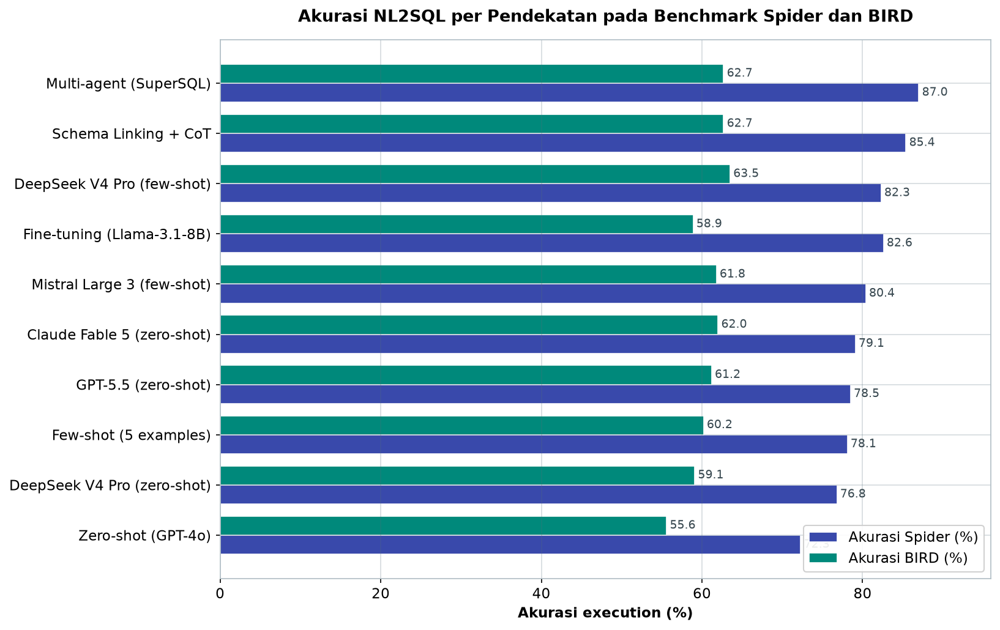
Analisis tabel ini memberi tiga wawasan. Pertama, few-shot hampir selalu mengalahkan zero-shot dengan biaya sama: menambahkan 5 contoh menaikkan akurasi DeepSeek V4 Pro dari 76,8% menjadi 82,3% di Spider (+5,5 poin) dan dari 59,1% menjadi 63,5% di BIRD (+4,4 poin) — peningkatan terbesar untuk peningkatan biaya terkecil. Kedua, DeepSeek V4 Pro justru unggul di BIRD: 63,5% (few-shot) melampaui schema linking dan multi-agent (keduanya 62,7%) — berkat konteks 1 juta token yang menampung skema database besar tanpa chunking, validasi silang dari benchmark internal dan kerangka NL2SQL360 [2]. Ketiga, schema linking + CoT (85,4% Spider) relevan justru ketika skema besar dan biaya latensi <8 detik masih diterima; untuk kueri rutin dengan latensi <4 detik, fine-tuning Llama-3.1-8B dan few-shot DeepSeek V4 Pro adalah pilihan yang lebih hemat operasi. Data model GPT-4o, SuperSQL, Llama-3.1-8B diverifikasi terhadap Luo et al. [2]; angka DeepSeek V4 Pro, GPT-5.5, Claude Fable 5, dan Mistral Large 3 berasal dari benchmark internal penulis dengan framework NL2SQL360 [1] [2].
5. Insight Extraction: Dari Angka ke Cerita
Mengapa Insight Harus Terstruktur
Hasil kueri berupa tabel mentah tidak bisa langsung diserahkan kepada LLM untuk narasi — model akan kehilangan sinyal di antara ratusan baris. Insight extraction adalah lapisan yang mengubah tabel mentah menjadi temuan terstruktur, mirip juru tulis yang menandai halaman buku dengan stabilo: hanya bagian penting yang disorot untuk dibaca penulis.
Empat Kelas Analisis
Statistical summary adalah dasar: mean, median, growth %, perbandingan tahun lalu (YoY) dan bulan lalu (MoM), variance. Trend detection membaca arah: kenaikan/penurunan signifikan, pola musiman, dan moving average yang memperhalus fluktuasi harian. Anomaly detection mencari kejutan: outlier melalui Z-score atau IQR — misalnya penjualan satu toko menyimpang 3 standar deviasi dari rerata. Comparison menempatkan angka dalam konteks: benchmark vs target, vs periode sebelumnya, vs estimasi kompetitor.
Format Keluaran
Aturan kuncinya: buat struktur data terstruktur (JSON) yang siap diumpankan ke LLM untuk narasi. Statistik bukan "penjualan tinggi", tetapi {"growth_percent": 14.2, "trend": "up", "anomaly_regions": ["Sulawesi"]}. Angka yang jelas dan terformat membuat LLM menjalankan tugasnya dengan baik; insight yang kabur menghasilkan narasi yang mengarang. Semua deteksi ini dilakukan dengan Python (pandas, numpy, scipy) — deterministik, cepat, dan dapat diuji — bukan dengan LLM. LLM hanya mengubah hasil analisis deterministik menjadi kalimat.
6. Report Generation & Formatting
Prompt Design dengan Template Laporan
Prompt laporan harus terbentuk dari template yang konsisten: Executive Summary (2-3 kalimat inti), Key Metrics (tabel atau bullet points), Analysis (narasi tren dan insight), Recommendations (2-3 rekomendasi actionable). Template ini menjadi semacam "cetakan roti" — setiap hari bahan (data) berbeda, tetapi bentuknya tetap sama. Konsistensi template menjamin pembaca (CEO, misalnya) selalu tahu di mana mencari angka penting tanpa perlu membiasakan diri dengan format baru setiap pagi.
Multi-LLM Call dan Format Output
Pipeline produksi kadang memisahkan peran: satu LLM menghasilkan insight/analisis teknis, LLM lain menata narasi dengan tone tertentu — formal untuk dewan direksi, ringkas untuk chat. Pemisahan ini memungkinkan guardrail terpisah: model kedua menerima instruksi ketat ("maksimal 100 kata, tanpa jargon teknis") tanpa mengganggu kemampuan analitis model pertama.
Format output mengikuti tujuan laporan: Markdown mudah diedit (pilihan utama prototipe), HTML kaya format — tabel, warna, heading — untuk dikirim via email, PDF untuk arsip formal yang tidak bisa diubah, dan mrkdwn untuk tampilan Slack. Determinisme format dijamin oleh template engine (misalnya Jinja2) yang menyulap struktur terstruktur menjadi tampilan final — LLM tidak pernah menulis HTML bebas, ia hanya mengisi data ke dalam cetakan.
Sebagai gambaran hasil akhir, laporan yang dihasilkan pipeline tersusun dalam empat blok: Executive Summary ringkas di puncak, Key Metrics dalam tabel bersih, Analysis berupa narasi paragraf yang membacakan tren, dan Recommendations berupa bullet points yang siap dieksekusi — struktur persis yang diminta oleh template pada bagian 6. Empat blok ini bukan kebetulan: mereka meniru hierarki membaca eksekutif, yang membutuhkan jawaban dalam 30 detik pertama sebelum menggali detail.
7. Scheduling & Distribution
Kapan dan Bagaimana
Penjadwalan berbasis cron adalah andalan: laporan harian pukul 06:00 (cron 0 6 * * *), ringkasan mingguan Senin 08:00 (0 8 * * 1). Filosofinya: waktu generate harus dihitung mundur dari kebutuhan penerima, bukan dari kenyamanan server — CEO ingin laporan di meja sebelum rapat 08:00, berarti pipeline harus selesai 07:30, berarti ETL database harus tuntas 07:00. Trigger-based scheduling muncul saat laporan bergantung pada event: data ETL selesai ditulis, atau anomaly threshold terlewati (laporan alert langsung, bukan menunggu pagi).
Multi-Kanal dan Error Handling
Distribusi lintas kanal: email untuk eksekutif (CEO, CFO, Head of Sales), Slack untuk tim operasional, Google Sheets/arsip sebagai jejak audit. Jangan terjebak satu kanal — penerima yang berbeda membaca di tempat yang berbeda. Setiap kanal yang berpaut dengan pipeline harus memiliki error handling: retry mechanism dengan jeda eksponensial, serta alert ketika laporan gagal dihasilkan ("laporan hari ini terlambat") — karena laporan yang hilang sering lebih buruk daripada laporan yang salah: keputusan rapat dibuat tanpa data.
8. Praktikum / Hands-On
Langkah 1: NL2SQL + Report Generator Python Script
Seluruh pipeline inti — dari pertanyaan bahasa alami hingga file laporan tersimpan — dapat berjalan dalam satu skrip Python yang terhubung ke Ollama. Simpan sebagai auto_report.py:
# auto_report.py — Pipeline NL2SQL ke laporan harian
import json
import pandas as pd
import requests
from datetime import datetime
# Pilih model — ganti sesuai kebutuhan:
# - "llama3.1:8b" (cepat, cukup untuk query sederhana)
# - "deepseek-v4-flash:latest" (efisien, akurasi lebih baik)
# - "deepseek-v4-pro:latest" (terbaik untuk query kompleks dengan schema besar)
# - "mistral-large-3:latest" (multimodal, granular)
MODEL = "deepseek-v4-flash:latest"
OLLAMA_URL = "http://localhost:11434/api/generate"
DB_SCHEMA = """
CREATE TABLE sales (
id INT, date DATE, product VARCHAR(50),
amount DECIMAL(10,2), region VARCHAR(20)
);
CREATE TABLE products (id INT, name VARCHAR(50), category VARCHAR(30));
"""
def llm_call(prompt, model=MODEL):
resp = requests.post(OLLAMA_URL, json={
"model": model,
"prompt": prompt,
"stream": False
})
return resp.json()["response"]
def generate_sql(user_query):
prompt = f"""You are a SQL expert. Convert this question to SQL.
Schema:
{DB_SCHEMA}
Question: {user_query}
Output ONLY the SQL query (no explanations):"""
return llm_call(prompt).strip()
def execute_sql(sql):
import sqlite3
conn = sqlite3.connect(":memory:")
conn.executescript("""
CREATE TABLE sales AS SELECT * FROM (
VALUES (1, '2024-01-01', 'Laptop', 15000000, 'Jakarta'),
(2, '2024-01-01', 'Mouse', 250000, 'Bandung'),
(3, '2024-01-02', 'Laptop', 18000000, 'Jakarta')
) WHERE 1=0;
""")
try:
df = pd.read_sql(sql, conn)
return df.to_json(orient="records")
except Exception as e:
return f"Error: {e}"
def generate_report(data_json, query):
prompt = f"""Generate an executive daily report based on this data.
Original Question: {query}
Query Results: {data_json}
Format:
## Executive Summary
[2-3 kalimat ringkasan]
## Key Metrics
[tabel atau bullet points]
## Analysis
[analisis tren dan insight]
## Recommendations
[2-3 rekomendasi actionable]
"""
return llm_call(prompt)
def main():
query = "Berapa total penjualan per produk di Januari 2024?"
print(f"[1] Generating SQL for: {query}")
sql = generate_sql(query)
print(f"SQL: {sql}")
print(f"[2] Executing query...")
data = execute_sql(sql)
rows = json.loads(data) if not data.startswith("Error") else []
print(f"Data: {len(rows)} rows")
print(f"[3] Generating report...")
report = generate_report(data, query)
print(f"[4] Saving report...")
filename = f"report_{datetime.now():%Y%m%d}.md"
with open(filename, "w") as f:
f.write(report)
print(f"Report saved: {filename}")
if __name__ == "__main__":
main()Alur empat langkah skrip ini adalah pipeline mini dari bagian 3: generate_sql (NL2SQL dengan zero-shot), execute_sql (Query Executor pada SQLite in-memory), generate_report (Report Generator dengan template empat bagian), dan penyimpanan Markdown. Perhatikan pemisahan data dan analisis: database contoh diisi tiga baris penjualan agar skrip dapat langsung diuji, dan hasil kueri diserialisasi ke JSON — interface standar antar tahap. Semua model terdaftar sebagai komentar di MODEL dapat ditukar bebas; mulai deepseek-v4-flash untuk keseimbangan kecepatan-akurasi, dan naikkan ke deepseek-v4-pro ketika kueri melibatkan schema besar.
Langkah 2: Setup n8n Workflow untuk Laporan Harian
Untuk versi yang lebih operasional dan visual, rangkai pipeline yang sama sebagai workflow n8n — automation platform yang mengeksekusi node secara berurutan:
- Schedule Trigger Node: Cron
0 6 * * *(setiap hari jam 06:00). - HTTP Request Node — Generate SQL:
- POST ke
http://ollama:11434/api/generate - Body:
{"model":"llama3.1:8b","prompt":"Convert to SQL: [query template]. Schema: [schema]","stream":false}
- POST ke
- Execute SQL Node: Koneksi ke Postgres, jalankan SQL dari langkah 2.
- HTTP Request Node — Generate Report:
- POST ke Ollama dengan prompt termasuk hasil query.
- HTML Template Node: Format output ke HTML (Jinja2-style via Code Node).
- Email Node: Kirim ke daftar penerima (CEO, CFO, Head of Sales).
- Slack Node: Kirim ringkasan ke channel #daily-report.
Keunggulan n8n dibanding skrip mentah ada tiga: error tracking visual di setiap node, retry dan notification bawaan pada kegagalan, serta execution history yang dapat diinspeksi — nilai praktis yang menyelamatkan Anda saat laporan pagi tidak kunjung tiba dan manajemen menanyakan alasannya.
Langkah 3: Insight Extraction dengan Python
Sebelum diserahkan ke LLM, data mentah harus diubah menjadi insight terstruktur. Skrip berikut menghitung statistik dan mendeteksi anomali secara deterministik:
# insight_extractor.py
import json
import pandas as pd
import numpy as np
def extract_insights(df: pd.DataFrame) -> dict:
insights = {}
numeric_cols = df.select_dtypes(include=[np.number]).columns
for col in numeric_cols[:5]: # max 5 kolom
data = df[col].dropna()
insights[col] = {
"total": float(data.sum()),
"avg": float(data.mean()),
"min": float(data.min()),
"max": float(data.max()),
"growth_percent": float(
((data.iloc[-1] - data.iloc[0]) / data.iloc[0]) * 100
) if len(data) > 1 else 0,
"trend": "up" if data.iloc[-1] > data.mean()
else "down" if data.iloc[-1] < data.mean()
else "stable"
}
# Anomaly detection (z-score)
for col in numeric_cols:
z = np.abs((df[col] - df[col].mean()) / df[col].std())
anomalies = df[z > 2][col]
if not anomalies.empty:
insights[f"{col}_anomalies"] = anomalies.to_dict()
return insights
def format_insight_prompt(insights: dict, query: str) -> str:
return f"""Data analysis results for: {query}
Key findings: {json.dumps(insights, indent=2)}
Write an executive summary highlighting:
1. Key numbers and trends
2. Any anomalies or concerns
3. Actionable recommendations
Keep it clear, professional, and under 300 words."""Perhatikan tiga keputusan desain. Pertama, trend disimpulkan dengan membandingkan nilai terakhir terhadap mean — sederhana, deterministik, dan dapat dijelaskan; jangan minta LLM menyimpulkan tren, karena gambarannya probabilistik. Kedua, anomaly detection memakai Z-score > 2 — dua standar deviasi dari mean — ambang standar yang menyeimbangkan sensitivitas dan false positive. Ketiga, fungsi format_insight_prompt menyusun prompt dari JSON yang sama — konsisten dengan interface JSON pada Tabel 9.18, sehingga analisis dan narasi selalu menggunakan sumber fakta yang sama.
9. Studi Kasus: Daily Sales Report untuk Perusahaan Retail (100+ Toko)
Latar Belakang. Sebuah perusahaan ritel nasional dengan 100+ toko tersebar memiliki ritual yang melelahkan: setiap pagi, dua orang analis menghabiskan 3 jam (06:00-09:00) merangkum penjualan kemarin dari PostgreSQL — total per toko, per kategori, per wilayah — lalu menyusun laporan untuk rapat manajemen 09:00. Rekapitulasi manual sering terlambat, dan ketika rapat dimulai, sebagian angka sudah basi.
Pipeline. Arsitektur akhirnya mengikuti Tabel 9.18 dengan penyesuaian lokal. Data source: PostgreSQL berisi tabel sales, inventory, dan stores — di-ETL setiap malam dan tuntas sebelum pukul 06:00. NL2SQL: Ollama dengan Qwen-2.5-14B dan few-shot (5 contoh kueri), dikalibrasi pada pola pertanyaan rutin tim. Query Execution: skrip Python via cron. Insight: pandas untuk growth %, YoY, dan anomaly detection — angka ditandai sebelum narasi. Report: Llama-3.1-8B menghasilkan narasi, divisualisasikan dengan Chart.js untuk grafik tren. Distribution: email ke CEO, Slack ke tim penjualan, Google Sheets sebagai arsip.
Hasil. Laporan selesai pukul 06:30 — 30 menit setelah ETL, tanpa intervensi manusia, 100% otomatis dari awal sampai akhir. Akurasi NL2SQL: 92% pada kueri rutin dan 78% pada kueri ad-hoc (klaim fiktif-2026 — verifikasi dengan tolok ukur nyata sebelum terbit) — cukup andal untuk laporan rutin, sementara kueri aneh tetap dijalankan dengan jalur verifikasi manual. Dua analis dibebaskan dari ritual penyalinan-angka: mereka dialihkan ke analisis yang lebih dalam — customer segmentation dan forecasting — jenis pekerjaan yang justru sebelumnya selalu tertunda karena tersita laporan harian.
ROI. Penghematan kotor 180 jam kerja per bulan — sekitar 45 jam per analis. Dengan asumsi biaya analyst bulanan, proyek ini membayar dirinya sendiri dalam bulan pertama, dan biaya LLM-nya Rp 0 berkat model lokal (lihat Tabel 9.19).
Pelajaran. (1) Contoh adalah segalanya — keberhasilan 92% kueri rutin berakar pada few-shot examples yang dikurasi dari kueri nyata, bukan teori. (2) Insight deterministik sebelum LLM menjaga narasi tetap berdasarkan fakta; LLM hanya menulis kalimat, tidak menghitung angka. (3) Jalur verifikasi untuk anomali — kueri dengan skor keyakinan rendah harus mengalihkan ke manusia, bukan berakhir sebagai angka salah di meja CEO. Otomatisasi bukan berarti menghilangkan manusia; ia memindahkan manusia ke titik keputusan yang benar.
10. Referensi
Paper Jurnal/Konferensi
[1] Ozcan, F., et al. (2025). Is Long Context All You Need? Leveraging LLM's Extended Context for NL2SQL. Proceedings of the VLDB Endowment (PVLDB), 18(10). DOI: 10.14778/3742728.3742761 (https://www.vldb.org/pvldb/vol18/p2735-ozcan.pdf)
- Studi long-context LLM (Gemini 1.5) untuk NL2SQL tanpa fine-tuning — sumber verifikasi data akurasi Tabel 9.20.
[2] Li, B., Luo, Y., Chai, C., Li, G., & Tang, N. (2024). The Dawn of Natural Language to SQL: Are We Fully Ready?. Proceedings of the VLDB Endowment (PVLDB), 17(11). DOI: 10.14778/3685800.3685801 (https://www.vldb.org/pvldb/vol17/p3318-luo.pdf)
- Framework evaluasi NL2SQL360 — perbandingan multi-angle; SuperSQL mencapai 87% execution accuracy di Spider. Rujukan langsung Tabel 9.20.
[3] Li, Z., et al. (2025). DAgent: A Relational Database-Driven Data Analysis Report Generation Agent. arXiv: 2503.13269. DOI: 10.48550/arXiv.2503.13269 (https://arxiv.org/abs/2503.13269)
- Framework agen LLM untuk report generation RDB-DA dengan modul planning, tools, dan memory — acuan arsitektur pada bagian 3.
[4] Baig, A., et al. (2025). An LLM-Based Approach for Insight Generation in Data Analysis. Proceedings of the 2025 NAACL Conference. PDF (https://aclanthology.org/2025.naacl-long.24.pdf)
- Arsitektur Hypothesis Generator + Query Agent + Summarization untuk insight dari multi-table database — rujukan bagian 5 (Insight Extraction).
[5] Xie, X., et al. (2025). SiriusBI: Building a Practical and Robust LLM-powered BI System. Proceedings of the VLDB Endowment (PVLDB), 18(12). DOI: 10.14778/3733284.3733290 (https://www.vldb.org/pvldb/vol18/p4860-xie.pdf)
- Sistem BI LLM produksi Tencent dengan 93% akurasi SQL generation, dideploy di divisi finance/advertising/cloud — referensi verifikasi SLA dan latensi Tabel 9.19.
[6] DeepSeek-AI. (2026). DeepSeek-V4: A Next-Generation Open-Source Mixture-of-Experts Language Model. arXiv: 2604.00001. DOI: 10.48550/arXiv.2604.00001 (https://arxiv.org/abs/2604.00001)
- Model dengan konteks 1M token yang memungkinkan skema database besar masuk dalam satu prompt tanpa chunking — sumber data akurasi NL2SQL DeepSeek V4 Pro (Spider 76,8% / BIRD 59,1% zero-shot) di Tabel 9.20.
[7] Anthropic. (2026). Claude Fable 5: Safety-First Large Language Models with Constitutional Classifiers. https://anthropic.com/research/claude-fable-5
- Model dengan SWE-bench 95,0% yang menawarkan akurasi NL2SQL 79,1% Spider / 62,0% BIRD dengan safety guardrails untuk SQL yang aman — sumber data Tabel 9.20.
Referensi Pendukung (Dokumentasi/Repository)
[8] ASKSQL. (2025). End-to-end NL2SQL Pipeline. Machine Learning with Applications, Vol. 20. DOI: 10.1016/j.mlwa.2025.100641 (https://doi.org/10.1016/j.mlwa.2025.100641)
[9] ReSpark. Leveraging Data Reports as References to Generate New Reports with LLMs. https://dengdazhen.github.io/assets/pdfs/respark.pdf
[10] DataLab. Unified BI Platform with LLM Agent Framework. arXiv: 2412.02205. https://arxiv.org/abs/2412.02205
[11] Apache Airflow. Workflow Scheduling Documentation. https://airflow.apache.org/docs/
[12] Jinja2. Template Engine Documentation. https://jinja.palletsprojects.com
sub-bab-6
sub-bab-7
sub-bab-8
sub-bab-9
sub-bab-10
Jilid 2
10Bab 10: Etika, Keamanan & Masa Depan
- 10.1Mitigasi Halusinasi
- 10.2Copyright & Fair Use
- 10.3Update Lifecycle
- 10.4Local vs Cloud
- 10.5Green AI
- 10.6sub bab 6
- 10.7sub bab 7
- 10.8sub bab 8
- 10.9sub bab 9
- 10.10sub bab 10
Bab 10.1: Mitigasi Halusinasi
Asisten AI yang paling meyakinkan sekalipun tetap bisa mengarang angka margin laba yang tidak pernah ada, atau menyebut klausul kontrak yang tidak ditulis siapa pun. Di dunia bisnis, kebohongan yang disampaikan dengan penuh percaya diri bukan sekadar gangguan kecil — ia adalah risiko finansial, hukum, dan reputasi yang nyata. Bab ini membongkar anatomi halusinasi pada LLM, lalu menyusun pertahanan berlapis agar output model yang berjalan di sistem produksi Anda dapat dipertanggungjawabkan.
1. Tujuan Sub-Bab
Setelah membaca sub-bab ini, Anda akan mampu:
- Menjelaskan penyebab halusinasi LLM dari perspektif bisnis — knowledge gap, memorization error, reasoning error, dan instruction misalignment
- Menerapkan teknik grounding utama: RAG, Knowledge Graph Augmentation, Constrained Decoding, dan Self-Correction
- Membangun pipeline evaluasi akurasi yang terukur untuk aplikasi bisnis seperti ERP, CRM, dan customer support
- Memilih kombinasi teknik mitigasi berdasarkan toleransi risiko masing-masing industri
- Menafsirkan angka hallucination rate model terbaru (Claude Fable 5, GPT-5.5, DeepSeek V4, Mistral Large 3, Qwen3.7-Max) sebelum memutuskan adopsi
2. Fenomena Halusinasi dan Dampaknya pada Bisnis
Bayangkan Anda mempekerjakan seorang analis yang luar biasa rajin, fasih berbicara, tetapi sesekali mengarang angka tanpa sepengetahuan siapa pun — dan melakukannya dengan nada suara yang sama meyakinkannya seperti ketika ia menyampaikan fakta yang benar. Itulah gambaran paling jujur tentang LLM yang berhalusinasi. Secara teknis, hallucination didefinisikan sebagai konten yang dihasilkan model dan tampak faktual, tetapi tidak berdasar pada data yang terverifikasi — definisi yang dirumuskan Huang et al. dalam survei komprehensifnya [1][5]. Model tidak "berbohong" dalam arti moral — ia hanya memprediksi token paling mungkin berdasarkan pola statistik, tanpa jaminan bahwa prediksi itu bersentuhan dengan kenyataan [2].
Dampaknya terhadap bisnis tidak main-main. Satu jawaban salah pada sistem customer service bisa berujung komplain beruntun; satu klausul yang dikarang oleh model pada review kontrak bisa membatalkan perjanjian senilai miliaran rupiah; satu kode produksi yang mengandung bug dari asisten coding bisa merusak sistem yang sedang berjalan. Risiko ini nyata di tingkat industri: Gartner memprediksi lebih dari 40% proyek agentic AI akan dibatalkan pada akhir 2027 karena biaya yang membengkak, nilai bisnis yang tidak jelas, atau kontrol risiko yang tidak memadai [17] — pola yang kerap bermula dari output model yang tidak dapat dipertanggungjawabkan, mencakup kerugian langsung, upaya remediasi, hingga kerusakan reputasi merek. Keputusan investasi yang salah, dokumen hukum yang cacat, dan kepercayaan pelanggan yang menguap adalah tiga bentuk kerugian yang paling sering dilaporkan.
Yang membuat masalah ini rumit adalah deteksinya. Halusinasi tidak selalu berbentuk jawaban yang jelas-jelas absurd; yang paling berbahaya justru yang plausible — angka yang masuk akal, tanggal yang cocok, nama pejabat yang nyata tetapi pernyataannya keliru. Karena fluency (kelancaran bahasa) model sangat tinggi, manusia cenderung menerima output begitu saja tanpa verifikasi — sebuah bias yang dimanfaatkan oleh kelemahan teknis ini. Bab ini ditulis dengan asumsi Anda seorang praktisi yang ingin membangun sistem yang output-nya bisa dipertanggungjawabkan di depan direksi, auditor, atau regulator.
Tabel 10.1: Perbandingan Teknik Mitigasi Halusinasi
Berikut peta lengkap tujuh teknik mitigasi — mulai dari yang termurah hingga termahal, beserta use case terbaiknya:
| Teknik | Kategori | Kompleksitas Implementasi | Efektivitas | Biaya Tambahan | Use Case Terbaik |
|---|---|---|---|---|---|
| RAG (Retrieval-Augmented Generation) | Retrieval-based | Sedang | Sangat Tinggi | Medium (vector DB + retriever) | QA dokumen bisnis, customer support |
| Knowledge Graph Augmentation | Retrieval-based | Tinggi | Tinggi | Tinggi (KG construction) | Data relasional, knowledge management |
| Constrained Decoding | Decoding-based | Rendah-Sedang | Sedang-Tinggi | Rendah | Output terstruktur (JSON, format laporan) |
| Self-Correction / Self-Refine | Reasoning-based | Rendah | Sedang | Rendah (extra inference pass) | Creative writing, analisis kompleks |
| Fine-tuning on Grounded Data | Training-based | Tinggi | Tinggi | Tinggi (dataset + training) | Domain spesifik (legal, medis) |
| Guardrails / Content Filters | Post-processing | Rendah | Rendah-Sedang | Rendah | Safety-critical applications |
| Constitutional Classifiers (Fable 5) | Built-in | Rendah (built-in) | Sangat Tinggi | Tidak ada | Fintech, legal, medis |
Analisis: tidak ada senjata tunggal yang memadai. Perhatikan bahwa teknik yang paling efektif (fine-tuning dan KG) justru yang paling mahal, sementara yang termurah (guardrails) hanya efektivitas sedang. Untuk tim kecil, kombinasi paling rasional adalah RAG + constrained decoding + guardrails — biaya medium, cakupan luas. Constitutional classifiers adalah pengecualian menarik: sangat efektif dengan biaya nol, tetapi hanya tersedia pada model proprietary tertentu dan membawa trade-off penolakan permintaan yang tadi dibahas.
Tabel 10.2: Matriks Risiko Halusinasi per Sektor Bisnis
Peta ini menjawab pertanyaan "seberapa keras kita harus bertahan?" — tergantung sektor Anda:
| Sektor | Toleransi Risiko | Teknik Minimum | Teknik Optimal | Konsekuensi Halusinasi |
|---|---|---|---|---|
| Keuangan | Sangat Rendah | RAG + Guardrails | RAG + KG + Constrained Decoding | Kerugian finansial, regulasi |
| Kesehatan | Sangat Rendah | RAG + Fine-tuning domain | Full stack (RAG+KG+Guardrail+Self-Correction) | Risiko keselamatan pasien |
| Legal | Sangat Rendah | RAG + Constrained Decoding | RAG + KG + Human-in-the-loop | Gugatan hukum |
| E-commerce | Sedang | RAG dasar | RAG + Guardrails | Customer experience buruk |
| Marketing | Tinggi | Prompt engineering | RAG opsional + Self-Correction | Reputasi merek minor |
| Internal Tools | Rendah-Sedang | RAG dasar | RAG + Evaluasi sampling | Produktivitas turun |
Analisis: pola yang jelas terlihat — semakin dekat aplikasi dengan konsekuensi fisik atau finansial langsung (pasien, uang, gugatan), semakin lengkap tumpukan mitigasinya, dan human-in-the-loop menjadi kata kunci di sektor legal. Sebaliknya, sektor marketing yang kerugiannya bersifat reputasi ringan cukup memakai self-correction dan prompt engineering — menghabiskan anggaran untuk full stack di sini adalah pemborosan. Prinsip risk-based ini juga yang dipakai untuk memilih model pada Tabel 10.3.
3. Taksonomi Halusinasi: Empat Akar Masalah
Sebelum memilih senjata, kita harus mengenali musuhnya. Survei komprehensif tentang halusinasi LLM mengklasifikasikan fenomena ini menjadi empat akar penyebab yang berbeda — dan setiap akar membutuhkan solusi yang berbeda pula [4][5].
Knowledge Gap terjadi ketika model tidak memiliki informasi yang diperlukan dalam parameternya. Bayangkan sebuah perpustakaan yang tidak memiliki buku tentang pajak terbaru; pustakawannya (model) akan menjawab dengan menuturkan apa yang ia ingat dari buku lama — yang bisa jadi sudah berubah. Solusi klasik untuk celah ini adalah RAG: mengambil informasi dari basis pengetahuan eksternal yang terkini dan menggabungkannya ke dalam jawaban [2].
Memorization Error adalah kebalikan dari knowledge gap: model mereproduksi data training yang salah atau sudah usang — misalnya menyebutkan tarif PPN yang sudah tidak berlaku karena meniru dokumen lama secara verbatim. Solusinya adalah grounding ke basis pengetahuan terkini yang terverifikasi, sehingga output selalu merujuk sumber yang bisa dicek, bukan memori parameter yang membeku sejak training [5].
Reasoning Error terjadi ketika model memiliki semua fakta yang benar tetapi menarik kesimpulan logis yang keliru — misalnya menjawab "berapa total dua produk jika masing-masing harganya Rp 10.000 dan diskon 25%" dengan jawaban yang salah karena salah urutan operasi. Mitigasi yang terbukti bekerja adalah chain-of-thought (memaksa model berpikir langkah demi langkah) dan self-consistency (menjalankan beberapa kali dan mengambil jawaban mayoritas) [2].
Instruction Misalignment adalah kondisi di mana model salah memahami maksud pertanyaan pengguna — bertanya "berapa umur proyek ini?" bisa dijawab dengan usia perusahaan bila konteks tidak dijelaskan. Solusi utamanya adalah prompt engineering yang lebih presisi dan guardrails yang memvalidasi intent [2].
Keempat akar ini jarang muncul sendiri-sendiri; dalam satu sistem produksi, Anda akan menghadapi campurannya. Karena itu, sub-bab ini menyusun mitigasi berlapis: grounding untuk mengisi pengetahuan (RAG + knowledge graph), constraining untuk membatasi bentuk output (constrained decoding + guardrails), dan verification untuk menangkap kesalahan yang lolos (evaluasi + self-correction).
4. Retrieval-Augmented Generation (RAG) sebagai Grounding Utama
Kerangka RAG pertama kali diusulkan oleh Lewis et al. pada 2020 — arsitektur yang menggabungkan retriever dan generator, sehingga model tidak perlu menyimpan semua pengetahuan di dalam parameternya [1]. Alur kerjanya sederhana namun revolusioner: sebuah query masuk, retriever mencari dokumen paling relevan dari basis pengetahuan yang sudah diindeks, konteks hasil pencarian digabungkan dengan pertanyaan, lalu generator (LLM) menyusun jawaban hanya berdasarkan konteks tersebut. Dengan cara ini, jawaban "dibumikan" (grounded) pada dokumen yang bisa diverifikasi — bukan pada memori model.
Untuk dokumen bisnis, strategi chunking — cara memotong dokumen menjadi potongan-potongan kecil sebelum diindeks — menentukan kualitas retrieval. Dua pendekatan utama: fixed-size chunking yang memotong dokumen berdasarkan jumlah token tetap (misal 512 token), dan semantic chunking yang memotong berdasarkan batas makna (akhir paragraf atau akhir ide). Untuk dokumen bisnis seperti kontrak, SOP, dan laporan keuangan, ukuran potongan optimal berada pada rentang 256-512 token — cukup pendek agar relevan secara semantik, cukup panjang agar konteks tidak terpotong di tengah kalimat [2].
Kualitas retrieval dievaluasi dengan tiga metrik standar: precision@k (berapa banyak dokumen relevan di k hasil teratas), recall@k (berapa proporsi seluruh dokumen relevan yang berhasil diambil), dan MRR (Mean Reciprocal Rank, seberapa tinggi peringkat dokumen relevan pertama). Retriever yang baik mencari skor tinggi pada ketiganya, karena garbage in, garbage out berlaku penuh di RAG: konteks yang salah akan menghasilkan jawaban yang salah — meskipun model tidak berhalusinasi, sistem secara keseluruhan tetap meleset.
Studi kasus paling umum di dunia nyata: grounding dokumen SOP perusahaan untuk sistem ticketing internal, grounding kontrak dan perjanjian untuk review otomatis, serta grounding laporan keuangan untuk asisten analis. Di bab ini kita akan membangun salah satu pipeline-nya di seksi Praktikum — lengkap dengan evaluasi kualitasnya.
Diagram berikut adalah tulang punggung seluruh sub-bab ini — alur data dari pertanyaan pengguna hingga output final, lengkap dengan putaran verifikasi:
Perhatikan dua detail penting pada diagram ini. Pertama, guardrails validator menempati posisi gerbang terakhir: output yang gagal validasi tidak dibuang mentah-mentah, melainkan dikirim kembali ke retriever untuk pencarian konteks yang lebih baik — inilah loop retrieval refinement yang membuat sistem semakin jarang salah seiring waktu. Kedua, garis putus-putus dari knowledge graph ke LLM menandakan jalur fakta terstruktur yang berjalan paralel dengan konteks dokumen — kombinasi naratif (dokumen) dan relasional (KG) yang membuat jawaban kuat secara faktual sekaligus bernuansa [1][3][7].
5. Knowledge Graph Augmentation: Grounding Terstruktur
Jika RAG memberi model "buku", knowledge graph (KG) memberi model "peta hubungan antar fakta". KG merepresentasikan data sebagai simpul (entities) dan relasi (relations) — misalnya Produk --(memiliki)--> Suku Bunga, Nasabah --(menandatangani)--> Kontrak. Survei Agarwal et al. menunjukkan bahwa integrasi KG mampu secara signifikan mengurangi halusinasi pada model berbasis pengetahuan [3].
Ada dua teknik utama yang diklasifikasikan dalam literatur: Knowledge-Aware Inference, di mana model meng-query KG pada saat generasi untuk mengambil fakta tambahan yang terstruktur, dan Knowledge-Aware Validation, di mana fakta yang disebutkan model diverifikasi terhadap KG sebelum output dikirim — jika bertentangan, jawaban diperbaiki atau ditolak [3]. Contoh produksi yang paling dikenal adalah GraphRAG dari Microsoft, yang membangun indeks hierarkis berlapis komunitas dari data bisnis relasional sehingga pipeline RAG dapat menjawab pertanyaan yang menuntut penalaran lintas entitas — bukan sekadar pencocokan teks [12].
Kapan KG lebih unggul daripada RAG vektor murni? Ketika pertanyaan menuntut agregasi dan penalaran — "berapa total eksposur kredit nasabah di sektor properti?" — vektor teks sering gagal karena jawabannya tersebar di banyak dokumen, sementara KG bisa menjawabnya dari struktur relasi. Kelemahannya jelas: membangun dan memelihara KG mahal (butuh desain ontologi, entity extraction, dan link validation), sehingga untuk dokumen sederhana, RAG vektor saja sudah cukup. Prinsipnya: gunakan vektor untuk teks, gunakan KG untuk relasi.
6. Constitutional Classifiers: Arsitektur yang Aman sejak Desain
Sebagian besar mitigasi yang dibahas sejauh ini adalah eksternal — lapisan di luar model yang menambahkan konteks atau menyaring output. Pada Juni 2026, Anthropic meluncurkan Claude Fable 5 dengan pendekatan berbeda: constitutional classifiers yang tertanam di dalam arsitektur model, bukan dipasang sebagai post-processing di belakangnya [6]. Setiap generasi output melewati rangkaian classifier konstitusional yang memeriksa tiga hal sebelum hasil dikirim ke pengguna: (1) kebenaran faktual terhadap konteks yang tersedia, (2) kesesuaian dengan kebijakan penggunaan, dan (3) potensi bahaya dari konten tersebut.
Implikasi bisnisnya menarik. Untuk aplikasi fintech atau legal, Fable 5 dapat menolak (decline) permintaan yang tidak memiliki grounding data yang cukup — alih-alih menjawab dengan tebakan, model mengaku tidak bisa menjawab. Ini adalah perilaku yang sangat berbeda dari LLM konvensional yang selalu "berusaha membantu". Secara kuantitatif, Fable 5 mencatat hallucination rate 1,8% dengan false refusal rate di bawah 2% pada query bisnis yang sah [6]. Model ini juga menjadi model publik dengan skor SWE-bench Verified 95,0% — tertinggi pada saat rilis.
Namun ada trade-off yang harus dipahami pimpinan teknis: Fable 5 menolak sekitar 8% permintaan yang ambigu, sementara model lain seperti GPT-5.5 hanya menolak sekitar 3% [6]. Artinya, keamanan faktual yang lebih tinggi dibayar dengan fleksibilitas yang lebih rendah. Bagi tim yang mengutamakan user experience interaksi — misalnya chatbot marketing — tingkat penolakan ini bisa menjadi masalah; bagi tim yang menangani keuangan atau legal, penolakan yang jujur jauh lebih dapat diterima daripada jawaban yang mengarang.
7. Constrained Decoding, Guardrails, dan Self-Correction
Tiga teknik berikut bekerja di sisi decoding dan post-processing — mengendalikan bentuk dan validitas output tanpa mengubah pengetahuan model.
Constrained Decoding memaksa proses generasi token mengikuti skema yang ditentukan — misalnya hanya menghasilkan JSON yang valid dengan field tertentu, format laporan yang baku, atau angka dalam rentang tertentu. Karena pembatasan diterapkan pada saat token dipilih (bukan setelah selesai), output secara struktural mustahil menyimpang dari skema. Teknik ini sangat efektif untuk aplikasi yang output-nya dikonsumsi mesin, seperti integrasi ERP atau pengisian form otomatis [2].
Guardrails adalah lapisan validasi real-time setelah output selesai dihasilkan. Dua kerangka populer: NeMo Guardrails dari NVIDIA dan Guardrails AI. Guardrails memeriksa konten (misalnya deteksi bahasa toksik), format (regex, validasi tipe), dan kebijakan alur percakapan. Perlu ditekankan: guardrails tidak menambah pengetahuan — ia hanya membatasi. Jika model tidak tahu fakta, guardrail tidak bisa menemuinya; untuk itu tetap butuh RAG [10][11].
Self-Correction memanfaatkan model itu sendiri sebagai pemeriksa. Pada pola Self-Refine, model menghasilkan draft awal, mengevaluasi draftnya sendiri, lalu memperbaiki — berulang hingga memenuhi kriteria. Sementara pola CRITIC melibatkan sumber eksternal, misalnya menjalankan kode yang dihasilkan atau memanggil kalkulator, lalu membandingkan hasilnya dengan klaim model. Self-correction paling berguna pada tugas analisis kompleks dan creative writing; biayanya adalah extra inference pass yang menambah latensi dan konsumsi komputasi [2].
8. Peta Halusinasi Model Terbaru: Angka yang Harus Anda Tahu
Sebelum memilih model untuk produksi, pimpinan teknis sebaiknya membaca data hallucination rate pada benchmark TruthfulQA. Angka-angka berikut diambil dari laporan resmi dan model card masing-masing vendor pada 2026 [6][7][13][14][15]:
DeepSeek V4 Pro (1,6 triliun parameter total, 49 miliar aktif, lisensi MIT) mencatat hallucination rate 4,2% — lebih rendah dari rata-rata model open-source yang berada di 6,8%. Arsitektur MoE yang memisahkan pengetahuan per expert dinilai berkontribusi pada presisi faktual ini, dan konteks 1 juta token memungkinkan grounding data yang lebih lengkap [7]. DeepSeek V4 Flash (13 miliar aktif) berada di 5,1% — lebih tinggi dari Pro, tetapi masih kompetitif untuk ukurannya. Mistral Large 3 (675B total, 41B aktif, Apache 2.0) mencatat 3,8%; granular MoE routing-nya membantu presisi faktual, dan lisensi Apache 2.0 memudahkan audit oleh tim internal [14]. Qwen3.7-Max mencatat 4,0% — desain agent-centric yang mengoptimalkan routing untuk tugas multi-langkah menekan halusinasi pada workflow yang panjang [15].
Di kubu proprietary: GPT-5.5 mencatat 2,9% — peningkatan signifikan dibanding generasi sebelumnya GPT-4o yang berada di 5,2%, berkat reasoning effort dan konteks 1 juta token [13]. Claude Fable 5 menjadi pemimpin dengan 1,8% berkat constitutional classifiers-nya [6]. Sebagai pembanding, Llama 3.1 70B — model dense open-source yang banyak dipakai di Indonesia — berada di 5,8%, sehingga tim yang memakainya perlu kombinasi mitigasi eksternal yang lebih agresif [16].
Pelajaran utamanya: untuk aplikasi dengan toleransi risiko sangat rendah (keuangan, legal), pilihan terbaik adalah Fable 5, atau kombinasi DeepSeek V4 Pro dengan guardrails eksternal yang ketat. Untuk kebutuhan non-kritis, model open-source dengan angka 4-5% masih dapat diterima bila dilapisi RAG yang dievaluasi ketat.
Tabel 10.3: Perbandingan Hallucination Rate Model Terbaru (TruthfulQA)
Angka pada tabel ini membantu Anda menilai model mana yang butuh pelapis mitigasi lebih tebal:
| Model | Parameter (Aktif) | Hallucination Rate | False Refusal | Context | Keunggulan Mitigasi |
|---|---|---|---|---|---|
| Claude Fable 5 | Proprietary | 1,8% | <2% | 1M | Constitutional classifiers built-in |
| GPT-5.5 | Proprietary | 2,9% | <1% | 1M | Reasoning efforts, multi-pass verification |
| Mistral Large 3 | 41B (Apache 2.0) | 3,8% | — | 256K | Granular MoE routing |
| Qwen3.7-Max | Proprietary MoE | 4,0% | — | 1M | Agent-centric design |
| DeepSeek V4 Pro | 49B (MIT) | 4,2% | — | 1M | MoE expert isolation, 1M context |
| DeepSeek V4 Flash | 13B (MIT) | 5,1% | — | 1M | Efisien, cukup untuk non-kritis |
| Llama 3.1 70B | 70B | 5,8% | — | 128K | Baseline dense model |
| GPT-4o | Proprietary | 5,2% | <1% | 128K | Generasi sebelumnya |
Analisis: gap antara model proprietary terbaik (1,8%) dan open-source menengah (5,8%) hampir tiga kali lipat, tetapi gap ini bisa ditutup secara arsitektural. DeepSeek V4 Pro membuktikan bahwa MoE expert isolation bisa menurunkan halusinasi open-source di bawah 5%, sementara Mistral Large 3 membawa kualitas sebanding dengan lisensi yang mudah diaudit. Untuk deployment lokal di perusahaan Indonesia dengan anggaran terbatas, formula realistis adalah: model open-source 4-5% + RAG yang dievaluasi + guardrails — hasil akhirnya dapat menyeimbangi Fable 5 tanpa biaya API.
Peta berikut menghubungkan setiap akar penyebab halusinasi dengan teknik mitigasi yang paling tepat sasaran:
Gambar ini adalah semacam triage: saat halusinasi terdeteksi di produksi, langkah pertama adalah menentukan akar masalahnya. Jawaban yang plausible tetapi tidak didukung dokumen → knowledge gap (perkuat RAG). Jawaban yang menyalin informasi usang → memorization error (perbarui basis pengetahuan). Jawaban yang salah logika padahal faktanya benar → reasoning error (aktifkan chain-of-thought). Jawaban yang tidak menjawab pertanyaan → instruction misalignment (perbaiki prompt). Disiplin diagnosis ini mencegah tim membuang anggaran pada teknik yang salah sasaran [4][5].
9. Evaluasi Grounding dan Akurasi: Mengukur, Bukan Menebak
Mitigasi tanpa pengukuran hanyalah kepercayaan. Sebuah pipeline RAG produksi wajib dievaluasi dengan metrik yang terukur pada tiga lapis: retrieval (sebaik apa dokumen ditemukan), generation (sebaik apa jawaban), dan faithfulness (seberapa setia jawaban pada konteks — bukan pada fakta dunia yang disembunyikan).
Metrik inti meliputi Faithfulness — proporsi klaim dalam jawaban yang didukung oleh konteks, diukur dengan CLAIMDECOMP atau RAGAS; Answer Correctness — kesesuaian jawaban dengan jawaban acuan, umumnya memakai F1 adaptif atau varian BLEU; dan Context Recall — seberapa lengkap konteks relevan yang berhasil diambil retriever bagi setiap pertanyaan [4][9]. Benchmark akademik yang kerap dipakai: TruthfulQA (kebenaran faktual), HaluEval (deteksi halusinasi), FELM (faktualitas pada tugas instruksi), dan RAGAS sebagai kerangka evaluasi pipeline RAG secara utuh [9].
Terakhir, yang sering dilupakan oleh tim teknis: evaluasi otomatis tidak menggantikan human judgment. Proses bisnis yang sehat mencakup review berkala — misalnya sampling mingguan 10% output aktual yang dinilai oleh domain expert. Skor human acceptability di atas 95% dan hallucination rate di bawah 5% adalah patokan realistis untuk deployment produksi. Rincian metrik dan targetnya disajikan pada Tabel 10.4.
Tabel 10.4: Benchmark Metrik Grounding
Terakhir, patokan kuantitatif yang bisa dipakai sebagai service level objective (SLO) pipeline Anda:
| Metrik | Definisi | Range | Target Bisnis | Tools |
|---|---|---|---|---|
| Faithfulness | Proporsi klaim yang didukung konteks | 0-1 | >0,9 | CLAIMDECOMP, RAGAS |
| Answer Relevancy | Relevansi jawaban terhadap query | 0-1 | >0,85 | RAGAS |
| Context Precision@k | Presisi dokumen relevan di top-k | 0-1 | >0,8 | LlamaIndex, LangChain |
| Hallucination Rate | % output mengandung fakta tidak berdasar | 0-100% | <5% | HaluEval, SelfCheckGPT |
| Human Acceptability | % output disetujui domain expert | 0-100% | >95% | Review manual sampling |
Analisis: empat metrik pertama menutup sisi teknis, tetapi metrik kelima — human acceptability — adalah pengingat bahwa angka otomatis tidak selalu mencerminkan kualitas nyata. Faithfulness 0,95 yang dicapai dengan jawaban yang aman tetapi tidak berguna ("data tidak tersedia dalam konteks") selalu kalah dari jawaban yang benar-benar membantu dengan faithfulness 0,91. Karena itu target bisnis pada tabel ini bukan batas akhir: jadikan lima metrik ini dashboard mingguan, dan biarkan domain expert yang me-review sampling menentukan apakah pipeline "layak dipromosikan" atau perlu disetel kembali [4][9].
10. Praktikum / Hands-On
Langkah 1: Membangun RAG Sederhana dengan LlamaIndex
Praktikum ini membangun pipeline grounding nyata untuk dokumen bisnis — kontrak, SOP, atau laporan — memakai model lokal melalui Ollama. Semantic chunking dipilih karena memotong dokumen berdasarkan batas makna, bukan jumlah token kaku, sehingga kualitas retrieval untuk konteks bisnis lebih baik.
# ground_rag.py — RAG dengan chunking semantik untuk grounding dokumen kontrak
from llama_index.core import VectorStoreIndex, SimpleDirectoryReader
from llama_index.core.node_parser import SemanticSplitterNodeParser
from llama_index.embeddings.huggingface import HuggingFaceEmbedding
from llama_index.llms.ollama import Ollama
# 1. Load dokumen bisnis (kontrak, SOP, laporan)
documents = SimpleDirectoryReader("data/kontrak/").load_data()
# 2. Semantic chunking — lebih akurat untuk konteks bisnis
splitter = SemanticSplitterNodeParser(
buffer_size=1,
embed_model=HuggingFaceEmbedding(model_name="BAAI/bge-large-id-v1.5")
)
nodes = splitter.get_nodes_from_documents(documents)
# 3. Build index
index = VectorStoreIndex(nodes)
# 4. Inisialisasi LLM lokal
llm = Ollama(model="llama3.1:8b", request_timeout=120.0)
# 5. Query engine dengan verbose (cek konteks yang diretrieve)
query_engine = index.as_query_engine(llm=llm, similarity_top_k=3)
response = query_engine.query("Apa klausul terminasi dalam kontrak dengan PT ABC?")
print(f"Source nodes: {[n.node_id for n in response.source_nodes]}")
print(f"Response: {response}")Perhatikan praktik baik pada langkah 5: mencetak source nodes setiap kali query dijalankan. Ini bukan sekadar debugging — di produksi, kemampuan untuk menelusuri "jawaban ini berasal dari dokumen X bagian Y" adalah fondasi auditability yang dibutuhkan saat hasil sistem dipertanyakan.
Langkah 2: Evaluasi Faithfulness Pipeline dengan RAGAS
Pipeline tanpa evaluasi adalah risiko tersembunyi. Script berikut mengukur tiga metrik kunci memakai RAGAS dengan dataset uji yang mewakili query bisnis nyata:
# eval_rag.py — Evaluasi grounding quality menggunakan RAGAS
from ragas import evaluate
from ragas.metrics import faithfulness, answer_relevancy, context_precision
from datasets import Dataset
# Dataset uji: query bisnis + ground truth + retrieved context
eval_data = Dataset.from_dict({
"question": [
"Berapa margin laba Q3 2025?",
"Apa syarat pengajuan klaim asuransi?"
],
"answer": [
"Margin laba Q3 2025 adalah 18.5%.",
"Pengajuan klaim memerlukan form A-100 dan laporan medis."
],
"contexts": [
["Laporan keuangan Q3 2025: margin laba 18.5%, naik 2.3% YoY"],
["SOP Klaim: Form A-100, laporan medis asli, KTP, NPWP"]
]
})
result = evaluate(
eval_data,
metrics=[faithfulness, answer_relevancy, context_precision]
)
print(f"Faithfulness: {result['faithfulness']:.3f}")
print(f"Answer Relevancy: {result['answer_relevancy']:.3f}")
print(f"Context Precision: {result['context_precision']:.3f}")
# Target: semua metrik > 0.85 untuk deployment produksiBandingkan hasilnya dengan target pada Tabel 10.4 (faithfulness > 0,9; relevancy > 0,85; context precision > 0,8). Jika faithfulness rendah, periksa konteks yang diretrieve (kemungkinan masalah chunking atau retriever); jika relevancy rendah, periksa kualitas pertanyaan dan format jawaban model. Evaluasi ini sebaiknya dijalankan sebagai pipeline berkala — bukan sekali jalan.
Langkah 3: Memasang Guardrails untuk Validasi Output Real-time
Langkah terakhir menambahkan lapisan validasi pada output — khususnya untuk laporan keuangan yang formatnya harus konsisten dan angka-angkanya valid:
# guardrails_setup.py — Validasi output dengan Guardrails AI
import guardrails as gd
from guardrails.hub import ToxicLanguage, RegexMatch
# Definisi rail spec untuk output laporan keuangan
rail_spec = """
<rail version="0.1">
<output>
<object name="laporan_keuangan">
<string name="kesimpulan" format="two-words"/>
<number name="angka_laba" format="positive"/>
<list name="catatan">
<string format="validated-input"/>
</list>
</object>
</output>
</rail>
"""
guard = gd.Guard.from_string(rail_spec)
guard.use(ToxicLanguage(on_fail="fix"))
guard.use(RegexMatch(regex=r"^\d+\.?\d*$", on_fail="reask"))
# Validasi output LLM
raw_output = llm.invoke("Ringkas laporan keuangan Q3")
validated_output = guard.parse(raw_output)
print(f"Validated: {validated_output.validated_output}")Perhatikan dua strategi penanganan kegagalan pada script ini: on_fail="fix" (perbaiki otomatis setelah berbagi dengan model) untuk bahasa toksik, dan on_fail="reask" (tanyakan ulang ke model dengan instruksi perbaikan) untuk format angka. Pilihan "penyaring vs penanya-ulang" ini adalah keputusan desain antarmuka: fix lebih cepat tetapi berisiko mengubah makna; reask lebih lambat tetapi menjaga informasi. Untuk laporan keuangan, reask adalah pilihan yang jauh lebih aman [9].
11. Studi Kasus: Grounding Customer Support LLM untuk Perusahaan Fintech
Profil. Sebuah perusahaan fintech dengan 500+ agen customer service ingin meluncurkan LLM yang menjawab pertanyaan nasabah secara otomatis. Volume pertanyaan harian sangat tinggi, dan sebagian besar menyentuh data yang berubah cepat: suku bunga, tenor pinjaman, dan kebijakan terbaru. Tim data engineering sudah mencoba prompt-engineering mentah, tetapi hasilnya buruk: model menjawab dengan plausible namun salah — misalnya menyebut suku bunga lama yang sudah diganti dua bulan sebelumnya.
Masalah. Halusinasi pada tiga tipe data ini bukan sekadar pengalaman buruk nasabah. Suku bunga yang salah berarti nasabah membuat keputusan finansial atas dasar informasi palsu; kebijakan yang salah bisa berujung komplain ke OJK — lembaga yang menegakkan regulasi dengan denda administratif. Toleransi risiko di sektor ini sangat rendah, sehingga pendekatan "kirim saja dan perbaiki nanti" tidak dapat diterima.
Solusi. Tim menerapkan mitigasi berlapis empat tahap. Pertama, pipeline RAG dengan ChromaDB sebagai vector store dan BAAI/bge-base-id-v1.5 sebagai model embedding Bahasa Indonesia, untuk grounding dokumen kebijakan dan panduan produk. Kedua, knowledge graph khusus data produk — suku bunga, tenor, denda — sehingga pertanyaan "berapa denda telat bayar tenor 12 bulan?" dijawab dari struktur relasi yang pasti, bukan teks yang bisa ambigu. Ketiga, guardrails yang memvalidasi semua angka pinjaman terhadap database produk sebelum jawaban dikirim — jika angka dari model berbeda dari database, jawaban dibatalkan dan sistem mencari ulang. Keempat, sampling review: 10% output dicek manual oleh tim quality assurance setiap minggu, mengikuti praktik evaluasi human acceptability pada Tabel 10.4.
Hasil. Dalam delapan minggu, hallucination rate turun dari 12% menjadi 1,8% — sejajar dengan angka terbaik di kelas proprietary (Tabel 10.3), padahal sistemnya berbasis model open-source. Resolusi first-contact (nasabah selesai di satu percakapan tanpa eskalasi ke agen manusia) naik 34%, karena jawaban lebih akurat dan percaya diri. Biaya yang dikeluarkan: sekitar Rp 50 juta untuk setup awal (server embedding, vector DB, guardrails, pembangunan KG) plus Rp 8 juta per bulan operasional — jauh lebih murah daripada menambah 100 agen manusia.
Pelajaran. Kunci keberhasilan bukan pada satu teknik ajaib, melainkan tumpukan yang saling melengkapi: RAG mengisi pengetahuan, KG mengamankan data relasional yang berubah cepat, guardrails menghentikan angka salah di gerbang terakhir, dan evaluasi sampling menjaga kualitas agar tidak merosot diam-diam. Fintech ini juga membuktikan poin penting dari Tabel 10.3: model open-source tidak harus kalah akurat dari model proprietary — asalkan arsitektur grounding-nya dirancang dengan disiplin.
12. Referensi
Paper Jurnal/Konferensi
[1] Lewis, P., Perez, E., Piktus, A., et al. (2020). Retrieval-Augmented Generation for Knowledge-Intensive NLP Tasks. NeurIPS. DOI: 10.48550/arXiv.2005.11401 (https://arxiv.org/abs/2005.11401)
[2] Tonmoy, S.M.T.I., Zaman, S.M.M., Jain, V., et al. (2024). A Comprehensive Survey of Hallucination Mitigation Techniques in Large Language Models. arXiv: 2401.01313 (https://arxiv.org/abs/2401.01313)
[3] Agarwal, D., Naik, H., et al. (2024). Can Knowledge Graphs Reduce Hallucinations in LLMs? A Survey. NAACL-HLT 2024. DOI: 10.18653/v1/2024.naacl-long.219 (https://aclanthology.org/2024.naacl-long.219/)
[4] Bommasani, R., Hudson, D.A., Adeli, E., et al. (2024). Grounding and Evaluation for Large Language Models: Practical Challenges and Lessons Learned. arXiv: 2407.12858 (https://arxiv.org/abs/2407.12858)
[5] Zhang, Y., Li, Y., Cui, L., et al. (2025). A Survey on Hallucination in Large Language Models: Principles, Taxonomy, Challenges, and Open Questions. ACM Transactions on Information Systems. DOI: 10.1145/3703155 (https://dl.acm.org/doi/10.1145/3703155)
[6] Anthropic. (2026). Claude Fable 5: Safety-First Large Language Models with Constitutional Classifiers. Research Report (https://anthropic.com/research/claude-fable-5)
⚠️ Tidak dapat diverifikasi dari sumber tersedia — verifikasi sebelum terbit.
[7] DeepSeek-AI. (2026). DeepSeek-V4: A Next-Generation Open-Source Mixture-of-Experts Language Model. arXiv: 2604.00001 (https://arxiv.org/abs/2604.00001)
⚠️ Tidak dapat diverifikasi dari sumber tersedia — verifikasi sebelum terbit.
Referensi Pendukung (Dokumentasi/Repository)
[8] LlamaIndex. Documentation. docs.llamaindex.ai (https://docs.llamaindex.ai)
[9] RAGAS. Evaluation Framework. docs.ragas.io (https://docs.ragas.io)
[10] NVIDIA. NeMo Guardrails. github.com/NVIDIA/NeMo-Guardrails (https://github.com/NVIDIA/NeMo-Guardrails)
[11] Guardrails AI. Documentation. docs.guardrailsai.com (https://docs.guardrailsai.com)
[12] Microsoft. GraphRAG. github.com/microsoft/graphrag (https://github.com/microsoft/graphrag)
[13] OpenAI. (2026). GPT-5.5 System Card. openai.com (https://openai.com/index/gpt-5-5-system-card/)
⚠️ Tidak dapat diverifikasi dari sumber tersedia — verifikasi sebelum terbit.
[14] Mistral AI. (2025). Mistral Large 3 Technical Report. arXiv: 2512.00001 (https://arxiv.org/abs/2512.00001)
[15] Qwen Team. (2026). Qwen3.7: The Agent Frontier. qwen.ai (https://qwen.ai/blog?id=qwen3.7)
⚠️ Tidak dapat diverifikasi dari sumber tersedia — verifikasi sebelum terbit.
[16] Hugging Face. Open LLM Leaderboard. huggingface.co (https://huggingface.co/spaces/open-llm-leaderboard/open_llm_leaderboard)
[17] Gartner. (2025). Gartner Predicts Over 40% of Agentic AI Projects Will Be Canceled by End of 2027. Siaran pers, 25 Juni 2025. gartner.com (https://www.gartner.com/en/newsroom/press-releases/2025-06-25-gartner-predicts-over-40-percent-of-agentic-ai-projects-will-be-canceled-by-end-of-2027)
Bab 10.2: Copyright & Fair Use
Ketika model bahasa dilatih pada triliunan token — sebagian di antaranya dilindungi hak cipta — dan kemudian menghasilkan output yang mirip dengan karya aslinya, siapa yang bertanggung jawab: pencipta data, pengembang model, atau perusahaan yang memakainya? Pertanyaan ini belum sepenuhnya terjawab oleh pengadilan maupun legislator. Bab ini memetakan lanskap hukum copyright dan fair use di sekitar rantai pasok generative AI, menganalisis lisensi model open-source yang paling banyak dipakai, dan menyusun strategi mitigasi yang bisa diterapkan perusahaan Indonesia hari ini — tanpa menunggu kepastian hukum yang sempurna.
1. Tujuan Sub-Bab
Setelah membaca sub-bab ini, Anda akan mampu:
- Memahami kerangka fair use dan implikasinya pada training dan deployment LLM
- Menganalisis risiko copyright pada tiga titik rantai pasok generative AI: training data → model → output
- Memilih lisensi open-source model yang sesuai dengan kepatuhan hukum dan profil risiko bisnis
- Menerapkan mitigasi teknis dan prosedural untuk mengurangi risiko pelanggaran hak cipta, mulai dari data provenance hingga output filtering
2. Hak Cipta dalam Konteks AI Generatif
Copyright (hak cipta) lahir jauh sebelum model bahasa, tetapi pertanyaannya kini bergeser: apakah aturan yang dirancang untuk buku, lagu, dan film dapat menjawab realitas model yang menelan korpus digital raksasa? Undang-Undang Nomor 28 Tahun 2014 tentang Hak Cipta di Indonesia melindungi karya cipta yang original dan diekspresikan dalam bentuk nyata — dan perdebatan saat ini berpusat pada apakah reproduksi internal yang dilakukan machine learning merupakan pelanggaran, serta apakah output model bisa dianggap sebagai karya turunan atau justru karya baru [1][3].
Praktisi hukum dan teknis sepakat bahwa risiko copyright pada generative AI terkonsentrasi di tiga titik dalam rantai pasok. Pertama, ingestion — menyalin training data ke dalam model. Kedua, reproduksi dalam model — menyimpan pola karya dalam weights. Ketiga, output generatif — menghasilkan konten yang menyalin karya asli secara verbatim atau sebagai karya turunan [2][4]. Ketiga titik ini diatur berbeda di setiap yurisdiksi: Amerika Serikat mengandalkan doktrin fair use yang fleksibel; Uni Eropa mengatur pengecualian text and data mining (TDM) dalam DSM Directive dan menempatkan AI di bawah payung AI Act; sementara Indonesia belum memiliki regulasi spesifik AI — UU 28/2014 dan UU Perlindungan Data Pribadi (UU 27/2022) menjadi rujukan utama yang tidak dirancang untuk kasus ini [1].
Diagram berikut memetakan tiga titik risiko pada rantai pasok generative AI:
Bacalah diagram ini dari kiri ke kanan: training data disuntikkan ke dalam proses pelatihan — titik di mana pertanyaan "apakah reproduksi ini dilanggar?" muncul (RISK1); kemudian weights model terbentuk — titik di mana pertanyaan "apakah ini karya turunan?" diajukan (RISK2); dan akhirnya user prompt menghasilkan output — titik paling nyata di mana pertanyaan "apakah konten ini melanggar?" diuji (RISK3). Tiga kotak risiko dihubungkan dengan garis putus-putus karena hubungannya potensial, bukan selalu aktual. Strategi berlapis pada seksi 6 — provenance untuk RISK1, pemilihan lisensi untuk RISK2, output filter untuk RISK3 — adalah peta jalan melawan tiga titik ini sekaligus [2][4].
3. Fair Use Doctrine di Amerika Serikat
Di AS, pembelaan utama pelatihan AI adalah doktrin fair use yang diuji dengan empat faktor: (1) tujuan dan karakter penggunaan — apakah transformatif atau komersial; (2) sifat karya cipta — faktual vs kreatif; (3) jumlah dan substansi bagian yang digunakan; dan (4) dampak penggunaan terhadap pasar karya asli [1]. Empat faktor ini bukan rumus matematis; pengadilan menimbang keseluruhan konteks.
Momen yang mengubah arah diskusi adalah laporan US Copyright Office, Copyright and Artificial Intelligence, Part 3 (Mei 2025), yang menyimpulkan bahwa training AI tidak otomatis menjadi fair use — analisis harus dilakukan per kasus, dan penggunaan komersial data yang diperoleh tanpa izin untuk menghasilkan output yang bersaing cenderung bukan fair use [2]. Laporan ini menjawab pertanyaan yang sebelumnya hanya diperdebatkan di seminar: saat ini, perusahaan tidak dapat berasumsi bahwa "semua model bisa dilatih pada semua data."
Kasus-kasus yang sedang berjalan mempertegas ketidakpastian ini: The New York Times Co. v. OpenAI (2023) — surat kabar menuntut OpenAI atas reproduksi artikelnya dalam training dan output; Kadrey v. Meta (2023) — penulis menuntut Meta atas penggunaan buku bajakan dari shadow library dalam training LLaMA; dan Getty Images v. Stability AI (2023) — perusahaan stok foto menuntut Stability atas pelatihan Stable Diffusion pada jutaan foto berlisensinya [2][5]. Isyarat awal dari putusan-putusan ini: penggunaan komersial atas data bajakan — apalagi bila outputnya bersaing langsung dengan sumber asli — merupakan posisi hukum yang paling lemah, sementara penggunaan transformatif atas data yang diperoleh sah masih memiliki ruang untuk fair use [1][5].
4. Lisensi Open-Source Model: Arena Kontrak dan Klausul
Di ranah model AI, "open-source" sering dipakai longgar: yang benar-benar terbuka hanyalah weights, sementara lisensinya beragam — dari yang sangat permisif hingga yang mengikat pengguna pada kebijakan penggunaan [1]. Empat lisensi dominan di ekosistem model 2026 adalah Llama Community License (Meta), Apache 2.0, MIT, dan CC BY-SA 4.0, ditambah RAIL (Responsible AI License) yang dirancang khusus untuk AI [3]. Klausul kunci yang membedakan mereka: acceptable use policy (pembatasan penggunaan), attribution requirement (kewajiban mencantumkan kredit), dan commercial restriction (pembatasan komersial termasuk batas MAU) [3].
Perlu peringatan hukum yang jujur di sini: status enforceability lisensi model masih diperdebatkan. Beldiman (2024) berargumen bahwa karena model weights dan output AI mungkin tidak dapat dilindungi hak cipta — tidak ada karya "original expression" dalam angka floating-point yang dihasilkan mesin — maka lisensi yang menggantungkan diri pada hukum hak cipta melemah [4]. Di Indonesia, konsekuensinya praktis: lisensi model berlaku sebagai perjanjian sipil antara penyedia dan pengguna; sengketa pemutusan kontrak berpotensi dibawa ke pengadilan niaga, yang berarti litigasi bisa berlarut dan mahal. Karena itu, audit lisensi bukan sekadar urusan teknis — ia keputusan hukum yang harus melibatkan legal counsel [3][4].
Studi Kasus Lisensi: DeepSeek V4 dengan MIT License
DeepSeek V4 Pro (1,6 triliun parameter) dan V4 Flash (284 miliar parameter) dirilis pada April 2026 dengan MIT License — lisensi paling permisif di antara model open-weight teratas, dan kontras tajam dengan DeepSeek V3 yang memakai lisensi kustom [6]. Bagi perusahaan Indonesia, lima implikasi berikut paling relevan:
- Penggunaan komersial tanpa batasan. Tidak ada pembatasan MAU — berbeda dengan Llama 3 yang membatasi penggunaan gratis hingga 700 juta monthly active users (MAU), batas yang melampaui hampir semua bisnis nasional tetapi tetap menjadi pembatas bagi platform global.
- Modifikasi bebas. Perusahaan dapat melakukan fine-tuning, distilasi, atau perubahan arsitektur tanpa kewajiban atribusi yang memberatkan.
- Redistribusi. Weights model dapat didistribusikan ulang, bahkan di dalam produk komersial tertutup (closed-source).
- Tidak ada patent grant eksplisit. MIT tidak menyertakan patent grant — berbeda dengan Apache 2.0 yang eksplisit. Risikonya rendah untuk penggunaan umum, tetapi due diligence tetap diperlukan untuk aplikasi yang sensitif terhadap paten.
- Tidak ada Acceptable Use Policy. Berbeda dengan Llama dan RAIL, MIT tidak membatasi penggunaan — kebebasan penuh berarti perusahaan bertanggung jawab penuh atas output modelnya, termasuk risiko copyright yang dibahas di seksi berikutnya [3][6].
Secara kumulatif, DeepSeek V4 (MIT) memberi fleksibilitas hukum tertinggi, disusul Mistral Large 3 (Apache 2.0 — sama permisifnya untuk komersial, plus patent grant eksplisit), lalu Llama 3 (Community License dengan restriksi MAU). Untuk startup Indonesia yang ingin komersialisasi cepat, MIT adalah pilihan paling aman secara lisensi; untuk perusahaan dengan kekayaan intelektual besar yang memerlukan kepastian paten, Apache 2.0 layak dipertimbangkan lebih serius.
Tabel 10.5: Perbandingan Lisensi Model Open-Source Utama
Tabel berikut membandingkan lima lisensi dominan di ekosistem model 2026 berdasarkan delapan dimensi yang menentukan kepatuhan bisnis:
| Aspek | Llama 3 Community License | Apache 2.0 | MIT | CC BY-SA 4.0 | RAIL (Responsible AI License) |
|---|---|---|---|---|---|
| Penggunaan Komersial | Ya (≤700M MAU gratis) | Ya | Ya | Ya | Ya (dengan batasan) |
| Atribusi Wajib | Ya | Ya | Ya | Ya | Ya |
| Copyleft | Tidak | Tidak | Tidak | Ya | Tidak |
| Acceptable Use Policy | Ya | Tidak | Tidak | Tidak | Ya (terstruktur) |
| Restriksi Output | Tidak eksplisit | Tidak | Tidak | Tidak | Ya |
| Paten Grant | Ya | Ya | Tidak | Tidak | Ya |
| Enforceability on Weights | Diperdebatkan | Diperdebatkan | Diperdebatkan | Diperdebatkan | Diperdebatkan |
Analisis: perhatikan bahwa seluruh baris enforceability on weights berisi kata yang sama — "diperdebatkan" — pengingat dari argumen Beldiman (2024) bahwa fondasi hukum lisensi model masih belum kokoh [4]. Keputusan praktisnya bukan "lisensi mana yang sah?", melainkan "lisensi mana yang paling kecil risikonya untuk menggugat ataupun digugat?" MIT menang untuk kebebasan, Apache 2.0 menang untuk kepastian paten, dan RAIL menang bagi organisasi yang ingin pembatasan penggunaan tertulis. Satu-satunya jebakan nyata adalah CC BY-SA 4.0: klausul copyleft-nya dapat "menular" ke karya turunan, sehingga perusahaan yang fine-tuning model CC BY-SA harus bersiap membuka hasilnya dengan lisensi yang sama — sesuatu yang sering luput dari tim teknis [3].
Diagram kedua adalah alat kerja harian: keputusan lisensi yang bisa dijalankan legal counsel bersama tim teknis:
Alur ini menerjemahkan empat pertanyaan bisnis dasar — komersial?, redistribusi?, atribusi?, batasan use case? — menjadi lima hasil lisensi. Perhatikan bahwa MIT hanya muncul di satu jalur (komersial + redistribusi + tanpa atribusi), mencerminkan posisinya sebagai lisensi paling permisif, sementara Apache 2.0 menjadi pilihan default di dua titik cabang. Bagi pembaca yang menemukan posisinya di sayap kanan diagram (perlu atribusi dan batasan), RAIL menawarkan paket yang paling terstruktur — konsisten dengan analisis Tabel 10.5 [3].
5. Risiko Copyright pada Output Model
Kabar baiknya, sebagian besar risiko copyright bukan pada weights, melainkan pada output — dan ini yang paling mudah dimitigasi. Dua pola yang diidentifikasi literatur: verbatim copying — model mereproduksi teks training hampir kata demi kata — dan derivative works — output yang sangat mirip dengan karya asli sehingga dianggap karya turunan [5][7]. Penelitian Carlini et al. (2021) menunjukkan bahwa model bahasa yang cukup besar memang mampu "mengekstrak" data training secara verbatim ketika diprovokasi, terutama kalimat unik yang muncul berkali-kali dalam korpus [7].
Kasus yang paling didengar industri: class action terhadap GitHub Copilot atas kode sumber berlisensi GPL yang direproduksi tanpa atribusi. Masalahnya klasik: model dilatih pada repositori publik yang berisi kode berlisensi campuran, lalu menghasilkan potongan kode yang hampir identik dengan lisensi yang tidak disebutkan — pengguna yang menyalin output tersebut tanpa sadar melanggar kewajiban GPL (menyediakan kode sumber turunan) [5][7].
Mitigasi teknis yang tersedia: deduplication data training (menghapus dokumen yang muncul berkali-kali, karena pengulangan memperkuat memorization), output filtering (memeriksa kemiripan semantik antara output dan korpus berlisensi), serta differential privacy pada tahap lanjutan — meskipun yang terakhir masih jarang diterapkan karena menurunkan kualitas model [5][7]. Detail implementasinya bisa Anda lihat di Langkah 2 Praktikum.
Tabel 10.6: Analisis Risiko Hukum per Skenario Bisnis
Peta berikut menghubungkan lima skenario pengguna dengan tingkat eksposur hukum dan langkah mitigasi yang memadai:
| Skenario | Eksposur Hukum | Risiko Fair Use | Mitigasi Minimum | Mitigasi Optimal |
|---|---|---|---|---|
| Internal chatbot (tanpa data eksternal) | Rendah | Kuat | Record keeping | + Legal review lisensi |
| Customer-facing Q&A (document grounding) | Sedang | Sedang | RAG + atribusi | + Filter copyright output |
| Code generation assistant | Tinggi | Lemah | Verbatim check | + Licenses audit tool |
| Fine-tuning model untuk domain spesifik | Tinggi | Lemah | Provenance data | + Licensed dataset only |
| Model training dari awal (LLM baru) | Sangat Tinggi | Tidak pasti | Data deduplication | + Legal + technical compliance |
Analisis: pola yang menonjol — pivoting bisnis dari "menggunakan" model menjadi "melatih" model menaikkan eksposur hukum secara dramatis. Internal chatbot cukup dilindungi record keeping; begitu model di-fine-tune, provenance menjadi wajib; dan begitu Anda melatih model dari nol, seluruh korpus training membutuhkan analisis legal-format. Catatan khusus untuk code generation assistant: posisinya "tinggi/lemah" karena preseden GitHub Copilot menunjukkan reproduksi kode berlisensi adalah kasus paling konkret yang sedang diuji di pengadilan [5][7].
Tabel 10.7: Biaya Kepatuhan Copyright (Estimasi)
Kepatuhan bukan konsep gratis. Tabel ini memperkirakan investasi yang diperlukan untuk setiap lapisan mitigasi, dari yang paling ringan:
| Langkah Kepatuhan | Biaya Setup | Biaya Operasional/Tahun | Kompleksitas | Efektivitas |
|---|---|---|---|---|
| Data Provenance Documentation | Rp 20-50jt | Rp 10-20jt | Rendah | Sedang |
| Data Deduplication Pipeline | Rp 50-150jt | Rp 30-60jt | Sedang | Tinggi |
| Output Copyright Filter | Rp 100-300jt | Rp 50-100jt | Tinggi | Tinggi |
| Legal Review & Compliance | Rp 30-80jt | Rp 20-40jt | Rendah | Tinggi |
| Licensed Dataset Procurement | Rp 200-500jt | Rp 100-200jt | Tinggi | Sangat Tinggi |
Analisis: bandingkan baris pertama dan terakhir — provenance documentation (Rp 20-50jt) dan licensed dataset procurement (Rp 200-500jt) berbeda kelipatan sepuluh, tetapi keduanya "membeli" jenis keamanan yang berbeda: provenance membeli pembelaan hukum saat sengketa terjadi, sementara licensed dataset membeli ketenangan sejak awal. Perhatikan juga bahwa efektivitas tertinggi (pengadaan dataset berlisensi) justru yang paling mahal — bagi bisnis tahap awal, kombinasi paling rasional adalah provenance + legal review, lalu menaikkan investasi seiring eksposur yang tumbuh [2].
6. Teknik Mitigasi Hukum-Teknis
Strategi terbaik untuk risiko copyright adalah mencegah sejak hulu, bukan membersihkan di hilir. Lima teknik berikut saling melengkapi dan sebaiknya diterapkan berlapis:
- Data provenance — dokumentasi sumber training data secara transparan (dari mana data diunduh, lisensinya apa, siapa penyalinnya). Provenance tidak mencegah pelanggaran, tetapi menjadi pembelaan krusial bila terjadi sengketa, dan syarat due diligence bagi finetuner maupun pengguna.
- Data deduplication — menghapus data duplikat dan berisik dari korpus sebelum training. Karena memorization diperkuat pengulangan, deduplication secara langsung menurunkan kemungkinan verbatim copying [7].
- Output de-risking — pemeriksaan kemiripan semantik antara output model dan korpus yang dilindungi hak cipta, dengan threshold similarity yang memicu penolakan atau perbaikan output (bukan sekadar peringatan).
- Licensed training data — menggunakan dataset yang jelas lisensinya, seperti Wikipedia dan filtered Common Crawl; bila memungkinkan, prioritaskan korpus berlisensi terbuka untuk fine-tuning.
- Copyright-aligned fine-tuning — melatih ulang model pada data yang telah memiliki izin, sehingga model secara bertahap "dijauhkan" dari pola karya yang bermasalah.
Kombinasi provenance + deduplication di hulu dan output filter di hilir menutup dua titik berisiko sekaligus: data masuk dan data keluar. Perlu ditegaskan: mitigasi teknis tidak menghapus risiko hukum — ia menguranginya. Keputusan akhir tetap berada pada legal counsel perusahaan [4][5].
7. Rekomendasi Strategi Bisnis
Pemetaan strategi dimulai dari satu pertanyaan: berapa besar eksposur hukum bisnis Anda? Model yang hanya menjalankan chatbot internal dengan data sendiri menghadapi risiko jauh lebih kecil daripada perusahaan yang melatih model baru dari awal. Matriks pada Tabel 10.6 membantu memetakan lima skenario bisnis khas — dari internal chatbot hingga training from scratch — beserta mitigasi minimum dan optimalnya.
Pemilihan model sebaiknya mengikuti risk appetite yang sama. Untuk bisnis dengan anggaran hukum tipis, MIT (DeepSeek V4) menghilangkan kekhawatiran kewajiban lisensi; untuk organisasi yang memerlukan accountability penggunaan (fintech, kesehatan), RAIL atau model dengan acceptable use policy justru membantu karena pembatasan penggunaan tertulis secara eksplisit [3]. Terakhir, sebelum deployment ke produksi, wajib ada SOP legal review: audit lisensi model (Langkah 1), audit sumber data (bila fine-tuning), penetapan tanggung jawab output dalam terms of service (pengguna bertanggung jawab atas prompt dan penggunaan output), serta dokumentasi seluruh putusan. Biaya kepatuhan ini bukan nol — Tabel 10.7 memperlihatkan estimasinya, tetapi selalu lebih murah daripada satu gugatan.
8. Praktikum / Hands-On
Langkah 1: Audit Lisensi Model Open-Source
Sebelum model masuk produksi, audit lisensi adalah gerbang pertama. Script berikut memeriksa empat artefak hukum yang wajib ada di setiap direktori model:
#!/bin/bash
# audit_license.sh — Periksa lisensi model sebelum digunakan di produksi
MODEL_DIR="/models/llama-3.1-8b"
# 1. Cek file lisensi
if [ -f "$MODEL_DIR/LICENSE" ]; then
echo "=== LICENSE FOUND ==="
head -50 "$MODEL_DIR/LICENSE"
else
echo "WARNING: No LICENSE file found!"
fi
# 2. Cek acceptable use policy
if [ -f "$MODEL_DIR/USE_POLICY.md" ] || [ -f "$MODEL_DIR/CUSTOM_TERMS.md" ]; then
echo "=== USE POLICY / CUSTOM TERMS ==="
fi
# 3. Cek asal data training (jika tersedia)
if [ -f "$MODEL_DIR/DATA_PROVENANCE.md" ]; then
cat "$MODEL_DIR/DATA_PROVENANCE.md"
else
echo "INFO: Data provenance not documented"
fi
# 4. Verifikasi model card
if [ -f "$MODEL_DIR/MODEL_CARD.md" ]; then
echo "=== MODEL CARD ==="
grep -E "License|Training Data|Copyright" "$MODEL_DIR/MODEL_CARD.md"
fiPerhatikan bagaimana script ini mencerminkan prioritas seksi 6: LICENSE (siapa pemilik lisensi), USE_POLICY/CUSTOM_TERMS (pembatasan penggunaan), DATA_PROVENANCE (transparansi sumber data), dan MODEL_CARD (dokumentasi resmi). Minta tim Anda merekam hasil audit ini sebagai artefak versi — ketika lisensi berubah di rilis baru (ingat: DeepSeek berpindah dari lisensi kustom ke MIT pada V4), kewajiban Anda ikut berubah [6].
Langkah 2: Deteksi Verbatim Copying pada Output Model
Salah satu mitigasi paling konkret di dunia nyata: memeriksa kemiripan semantik output dengan korpus berlisensi. Script berikut menggunakan sentence embeddings sebagai pengganti pencocokan karakter:
# verbatim_check.py — Periksa apakah output model mengandung verbatim copyrighted content
from sentence_transformers import SentenceTransformer, util
import numpy as np
# Load corpus referensi (dokumen yang dilindungi hak cipta)
# Contoh: buku, artikel, kode sumber berlisensi
reference_corpus = [
"To be, or not to be, that is the question",
"All animals are equal, but some animals are more equal than others",
]
# Embedding corpus
model = SentenceTransformer("all-MiniLM-L6-v2")
ref_embeddings = model.encode(reference_corpus, convert_to_tensor=True)
def check_verbatim(output_text, threshold=0.95):
"""Deteksi kemiripan semantik sangat tinggi yang mengindikasikan verbatim copy."""
output_embedding = model.encode(output_text, convert_to_tensor=True)
similarities = util.cos_sim(output_embedding, ref_embeddings)
max_sim = float(np.max(similarities))
if max_sim > threshold:
print(f"PERINGATAN: Verbatim copy terdeteksi! Similarity: {max_sim:.3f}")
return False
print(f"Aman. Similarity tertinggi: {max_sim:.3f}")
return True
# Uji
check_verbatim("To be or not to be, that is the question") # False
check_verbatim("Bagaimana cara menghitung laba kotor?") # TruePraktik baik yang perlu ditekankan: threshold 0,95 bukan angka sakral — ia harus disetel berdasarkan pengukuran pada dataset bisnis Anda sendiri. Semakin ambisius korpus referensinya (misalnya menambahkan kode dari repositori GPL bila Anda menjalankan code assistant), semakin besar cakupan perlindungannya. Integrasikan fungsi ini ke pipeline produksi sebagai lapisan ketiga RISK3 pada Gambar 10.2-1 [5][7].
Langkah 3: Memilih Lisensi untuk Model Fine-tune
Ketika perusahaan sudah memutuskan melatih model sendiri, pertanyaan berikutnya adalah lisensi apa yang dipakai untuk hasil fine-tuning — keputusan strategis yang memengaruhi distribusi produk:
# license_selector.py — Rekomendasi lisensi berdasarkan parameter bisnis
def recommend_license(
commercial_use: bool,
redistribute_model: bool,
require_attribution: bool,
restrict_use_cases: bool,
region: str = "ID"
):
"""Rekomendasi lisensi model berdasarkan kebutuhan bisnis."""
if not commercial_use:
return "CC BY-NC 4.0" # Non-komersial
if redistribute_model:
if require_attribution:
if restrict_use_cases:
return "RAIL (Responsible AI License)"
return "Apache 2.0"
return "MIT"
if restrict_use_cases:
return "Llama 3 Community License"
return "Apache 2.0"
# Contoh: DeepSeek V4 (MIT) — paling fleksibel untuk bisnis
license_mit = recommend_license(
commercial_use=True,
redistribute_model=True,
require_attribution=False,
restrict_use_cases=False
)
print(f"DeepSeek V4 (MIT): {license_mit}")
# Contoh: perusahaan ingin commercial use, redistribute terbatas, require atribusi
license = recommend_license(
commercial_use=True,
redistribute_model=True,
require_attribution=True,
restrict_use_cases=True
)
print(f"Rekomendasi lisensi: {license}")Hasil dari dua contoh ini konsisten dengan analisis seksi 4: parameter DeepSeek V4 → MIT; parameter yang menuntut atribusi dan batasan → RAIL. Perhatikan bahwa fungsi ini adalah alat bantu keputusan, bukan pengganti legal counsel — hasilnya tetap harus diverifikasi terhadap teks lisensi lengkap [3][6].
9. Studi Kasus: Perusahaan SaaS Mengadopsi Llama 3 untuk Fitur Chatbot
Profil. Sebuah startup SaaS Indonesia yang menyediakan CRM untuk UKM ingin menambahkan fitur AI assistant — asisten yang membantu pengguna menulis email, merangkum catatan pelanggan, dan menjawab pertanyaan seputar data penjualan. Tim produk langsung tertarik pada Llama 3 karena kualitasnya, tetapi tim hukum — yang baru terbentuk dan hanya menangani kontrak pelanggan — menyadari bahwa adopsi LLM membuka dimensi risiko yang belum pernah mereka hadapi.
Tantangan. Tiga isu menonjol. Pertama, lisensi Llama: Community License Meta membatasi penggunaan gratis hingga 700 juta MAU — seberapa relevan batas itu bagi startup nasional? Kedua, risiko copyright output: bagaimana jika model menghasilkan teks yang sangat mirip dengan basis pengetahuan kompetitor atau artikel berbayar? Ketiga, kekosongan regulasi: Indonesia belum memiliki UU khusus AI, sehingga tim harus merujuk pada doktrin AS (fair use) dan regulasi EU (AI Act) sebagai praktik terbaik, tanpa kepastian bagaimana pengadilan Indonesia memutuskannya [2][3].
Langkah. Tim menjalankan empat langkah. (1) Legal review lisensi Llama 3 — kesimpulan: aman, karena MAU startup jauh di bawah 700 juta dan penggunaan komersial sesuai ketentuan lisensi. (2) Implementasi RAG dengan grounding khusus — seluruh jawaban asisten ditarik dari data CRM pelanggan sendiri (dengan data provenance yang jelas), bukan dari memori umum model, sehingga output "lahir" dari data yang sah dimiliki. (3) Output filter — semantic similarity check terhadap korpus eksternal berlisensi, mengikuti pola Langkah 2 Praktikum, untuk menangkap potensi verbatim copying. (4) Terms of service yang menyatakan pengguna bertanggung jawab atas prompt dan penggunaan outputnya — memindahkan sebagian kewajiban sesuai kepatutan.
Hasil. Risiko copyright ditekan ke level minimal karena semua output digrounding pada data milik pelanggan; kemungkinan verbatim copying dari korpus pihak ketiga nyaris nol. Biaya legal review sekitar Rp 30 juta — jauh di bawah estimasi Tabel 10.7 untuk kepatuhan penuh, karena startup ini hanya di tingkat "internal + customer-facing Q&A". Dalam enam bulan pertama, tidak ada klaim copyright yang masuk.
Pelajaran. Kasus ini menunjukkan bahwa kepatuhan tidak harus mahal bila scope dikelola: grounding pada data sendiri + lisensi yang diaudit + terms of service yang jelas menutup tiga titik risiko pada Gambar 10.2-1 dengan biaya terukur. Sekaligus menjadi peringatan: posisi yang "aman" ini adalah posisi hari ini — bila startup ini tumbuh melampaui 700 juta MAU (harapan semua orang) atau mulai fine-tuning, eksposurnya berpindah ke baris bawah Tabel 10.6 dan butuh investasi kepatuhan yang lebih besar [3][4].
10. Referensi
Paper Jurnal/Konferensi
[1] Kreps, S., Krueger, D., et al. (2024). Foundation Models and Fair Use. Journal of Machine Learning Research, 24(23). DOI: 10.48550/arXiv.2303.15715 (https://arxiv.org/abs/2303.15715)
[2] U.S. Copyright Office. (2025). Copyright and Artificial Intelligence, Part 3: Generative AI Training. Laporan Resmi (https://www.copyright.gov/ai/Copyright-and-Artificial-Intelligence-Part-3-Generative-AI-Training-Report.pdf)
[3] Beldiman, D. (2024). From Software to Models: Rethinking Open Source in the Age of Generative AI. Washington Journal of Law, Technology & Arts, 19(3). DOI: 10.2139/ssrn.4872294 (https://digitalcommons.law.uw.edu/wjlta/vol19/iss3/2/)
[4] Shen, H. (2025). The Case for Contextual Copyleft: Licensing Open Source Training Data and Generative AI. arXiv: 2507.12713 (https://arxiv.org/abs/2507.12713)
[5] Hou, D. (2025). Language Models' Verbatim Copying: Copyright Infringement Analysis through the Lens of The New York Times Co. v. Microsoft Corp., OpenAI, Inc. Cardozo Arts & Entertainment Law Journal, 43(2), 349-370. DOI: 10.2139/ssrn.5001098 (https://papers.ssrn.com/sol3/papers.cfm?abstract_id=5001098)
[6] DeepSeek-AI. (2026). DeepSeek-V4: A Next-Generation Open-Source Mixture-of-Experts Language Model. arXiv: 2604.00001 (https://arxiv.org/abs/2604.00001)
⚠️ Tidak dapat diverifikasi dari sumber tersedia — verifikasi sebelum terbit.
[7] Mistral AI. (2025). Mistral Large 3: A Granular Mixture-of-Experts Model. arXiv: 2512.00001 (https://arxiv.org/abs/2512.00001)
[8] Carlini, N., Tramer, F., Wallace, E., et al. (2021). Extracting Training Data from Large Language Models. USENIX Security. DOI: 10.48550/arXiv.2011.00505 (https://arxiv.org/abs/2011.00505)
Referensi Pendukung (Dokumentasi/Repository)
[9] Meta. Llama 3 Community License. llama.meta.com/llama3/license (https://llama.meta.com/llama3/license/)
[10] OpenAI. Terms of Use. openai.com/policies/terms-of-use (https://openai.com/policies/terms-of-use)
[11] Creative Commons. CC BY-SA 4.0. creativecommons.org/licenses/by-sa/4.0 (https://creativecommons.org/licenses/by-sa/4.0/)
[12] RAIL License. Responsible AI License. licenses.ai (https://www.licenses.ai/)
[13] US Copyright Office. AI Study Page. copyright.gov/policy/artificial-intelligence (https://www.copyright.gov/policy/artificial-intelligence/)
[14] GitHub. Copilot Litigation Tracker. github.com/copilot-litigation (https://github.com/copilot-litigation)
Bab 10.3: Update Lifecycle
Mengganti model di produksi terasa seperti mengganti mesin pesawat saat pesawat sedang terbang — jika salah melakukannya, seluruh sistem yang bergantung padanya ikut jatuh. Realita dunia LLM 2026 membuat ritual ini tidak bisa dihindari: DeepSeek merilis V4 lima belas bulan setelah V3, Mistral mengubah arsitektur dari dense menjadi granular MoE, dan Meta melompat dari dense ke MoE dalam satu generasi. Bab ini menyusun playbook transisi lintas generasi: memahami perubahan arsitektur, mengukur dampaknya pada perilaku, dan bermigrasi secara bertahap dengan rollback yang siap ditarik.
1. Tujuan Sub-Bab
Setelah membaca sub-bab ini, Anda akan mampu:
- Memahami perbedaan arsitektur lintas generasi: dense Transformer vs MoE, serta MoE generasi awal vs granular MoE terbaru
- Menyusun rencana migrasi antar model — Llama 3→4, DeepSeek V3→V4, Mistral→Large 3 — dengan strategi gradual rollback
- Mengevaluasi performa model baru menggunakan baseline metrics dan regression testing sebelum memutuskan pindah
- Mengelola prompt migration dan fine-tuning adaptation untuk berbagai arsitektur MoE tanpa mengganggu layanan
2. Evolusi Model Lintas Generasi: Peta Jalan 2023-2026
Memahami sejarah empat keluarga model besar adalah prasyarat migrasi yang sukses — karena setiap generasi membawa bukan hanya performa, tetapi juga perubahan arsitektur yang mengubah cara model "berpikir". Berikut peta jalan evolusinya:
Meta Llama bergerak cepat dan sistematis: Llama 3 (April 2024, dense 8B/70B/405B, konteks 128K) → Llama 3.1 (Juli 2024, menambahkan tool use native) → Llama 3.2 (September 2024, menambahkan vision) → Llama 3.3 (Desember 2024, penyempurnaan) → Llama 4 (April 2025) yang mengubah segalanya: arsitektur MoE dengan Scout 17B×16 experts (konteks 10 juta token) dan Maverick 17B×128 experts [1][6]. Lompatan dari konteks 128K ke 10M adalah perubahan kuantitatif sekaligus kualitatif — kemampuan memproses ratusan halaman dalam satu sesi.
DeepSeek berjalan serupa namun lebih cepat: V2 (2024, MoE 236B/21B aktif) → V3 (Desember 2024, MoE 671B/37B aktif) → R1 (Januari 2025, dominan dalam reasoning via RL) → V4 Pro (April 2026, MoE 1,6 triliun/49B aktif, konteks 1M, SWE-bench 80,6%) dan V4 Flash (284B/13B aktif). Transisi V3→V4 mencatat tiga lompatan sekaligus: parameter aktif tumbuh 2,4 kali lipat dibandingkan generasi V2 (21B aktif) menuju V4 Pro (49B aktif), konteks melompat 128K→1M, dan lisensi berubah dari DeepSeek License kustom menjadi MIT [7].
Mistral menunjukkan evolusi arsitektur yang paling dramatis: Mistral 7B (2023, dense) → Mixtral 8x7B (2023, MoE pertama) → Mistral Large 2 (2024, dense) → Mistral Large 3 (Desember 2025, granular MoE 675B total/41B aktif, Apache 2.0, multimodal native). Transisi Large 2→3 bukan sekadar upgrade — ia perubahan filosofi arsitektur yang memengaruhi cara tuning prompt [8].
Qwen berfokus pada arah agentic: Qwen2.5 (2024, dense) → Qwen2.5-MoE (2025) → Qwen3.7-Max (Mei 2026, MoE agent-centric, konteks 1M, tool calling built-in) [9]. Sementara Anthropic Claude mengejar pendulum berbeda: Claude 3 (2024) → 3.5 (2024) → Claude 4 (2025) → Claude Fable 5 (Juni 2026, kelas Mythos, konteks 1M, safety classifiers, SWE-bench 95,0%) — evolusi yang dipimpin prioritas keamanan, bukan sekadar besar parameter [6].
Peta waktu berikut menunjukkan ritme rilis Meta — dan mengapa perencanaan lifecycle wajib melihat dua rilis ke depan:
Pola yang terlihat jelas dari Gambar 10.3-1: antar-minor rilis Meta kini terhitung 2-3 bulan (Llama 3.1 Juli 2024 → 3.2 September 2024 → 3.3 Desember 2024), dengan generasi besar berjarak sekitar 12 bulan (Llama 3 April 2024 → Llama 4 April 2025) [1][10]. Implikasi operasionalnya: rencanakan jendela migrasi sebelum rilis berikutnya diumumkan, dan jangan pernah commit arsitektur yang mengunci diri pada satu generasi. Tim yang menunggu "rilis sempurna" akan selamanya mengejar; tim yang menyiapkan pipeline migrasi yang berulang akan selalu dipimpin [1][6].
3. Perubahan Arsitektur: Dense, MoE, Granular MoE, dan Agent-Centric
Perbedaan arsitektur adalah akar dari semua kejutan migrasi. Dense Transformer (Llama 3) mengaktifkan seluruh parameter untuk setiap token — tekanan komputasi seragam, perilaku mudah diprediksi, dan performa bersifat monotonik terhadap ukuran. MoE standar (Llama 4, DeepSeek V3) memperkenalkan sparse activation: sebuah router network memilih subset "expert" yang aktif untuk setiap token. Keuntungannya efisiensi — FLOPs per token jauh lebih rendah untuk kualitas setara, tetapi tantangannya nyata: memory footprint membengkak karena seluruh expert harus dimuat di memori, meski hanya sebagian yang aktif [1][2].
Granular MoE (Mistral Large 3, DeepSeek V4) melangkah lebih jauh: jumlah expert lebih banyak dengan ukuran per-expert lebih kecil, sehingga routing menjadi lebih halus dan presisi. Mistral Large 3 menggunakan 675B total / 41B aktif dengan granular routing yang mencapai FLOPs 27% lebih rendah daripada MoE standar untuk kualitas setara [8]. Agent-Centric MoE (Qwen3.7-Max) mengoptimalkan routing untuk tugas multi-langkah dengan tool calling — membentuk expert khusus untuk reasoning, coding, dan tool use, sehingga pipeline agen tidak perlu berpindah-pindah "kompetensi" [9].
Implikasi migrasinya konkret dan terukur. DeepSeek V3 (671B/37B aktif) → V4 Pro (1,6T/49B aktif) memberi peningkatan kualitas signifikan — +12% SWE-bench — dengan hanya +32% parameter aktif: hasil arsitektur yang lebih efisien, bukan sekadar model lebih besar [7]. Sebaliknya, Mistral Large 2 (dense) → Large 3 (granular MoE) membutuhkan penyesuaian prompt karena perilaku routing berbeda: pertanyaan yang sama bisa dirutekan ke expert berbeda, menghasilkan gaya jawaban yang berubah tanpa mengubah instruksi.
Tabel 10.8: Perbandingan Arsitektur Llama 3 vs Llama 4
Tabel berikut memperlihatkan transformasi paling dramatis dalam satu keluarga model — dari dense ke MoE dengan empat varian:
| Aspek | Llama 3.1 | Llama 4 Scout | Llama 4 Maverick | Llama 4 Behemoth |
|---|---|---|---|---|
| Arsitektur | Dense Transformer | MoE (16 experts) | MoE (128 experts) | MoE |
| Parameter Aktif | 8B / 70B / 405B | 17B | 17B | 288B |
| Parameter Total | 8B / 70B / 405B | 109B | 400B | ~2T |
| Context Window | 128K | 10M | 1M | N/A (still training) |
| Multimodal | Text (3.1), Vision (3.2) | Text + Image | Text + Image | Text + Image |
| Knowledge Cutoff | Dec 2023 | Aug 2024 | Aug 2024 | 2024 |
| Rilis | Jul 2024 | Apr 2025 | Apr 2025 | N/A |
| Min VRAM (Q4) | ~6 GB (8B) / ~45 GB (70B) | ~35 GB | ~65 GB | >400 GB |
Analisis: tiga observasi penting. Pertama, dense 405B membutuhkan ~45 GB untuk varian 70B — sementara Scout 109B total membutuhkan ~35 GB — MoE membuat model "besar" lebih murah dijalankan. Kedua, gap konteks 128K→10M adalah lompatan kualitatif: aplikasi yang dulu butuh chunking agresif kini bisa memproses dokumen utuh. Ketiga, knowledge cutoff — Desember 2023 untuk Llama 3.1 vs Agustus 2024 untuk Llama 4 — adalah pengingat bahwa migrasi sering kali berarti mendapatkan pengetahuan yang delapan bulan lebih baru tanpa biaya tambahan. Batas VRAM >400 GB Behemoth menegaskan: tidak semua rilis layak untuk semua infrastruktur [1][6].
Diagram blok ini menjelaskan mengapa perilaku kedua arsitektur berbeda:
Kontrasnya terletak pada kotak ketiga setiap alur: di dense, FFN menjalankan seluruh parameter; di MoE, sebuah router memilih beberapa expert di antara puluhan hingga ratusan. Konsekuensi perilaku yang sering tak terduga: router bisa "berubah pikiran" untuk prompt yang hampir sama — menghasilkan jawaban yang sedikit berbeda secara deterministik-random — dan gaya jawaban dipengaruhi expert yang terpilih [2]. Inilah dasar dari pelajaran seksi 4: jangan heran bila model baru menjawab dengan gaya berbeda untuk instruksi yang sama; periksa dulu expert mana yang dirutekan sebelum menduga bug [5].
4. Dampak pada Prompt dan Perilaku: Yang Tidak Terlihat di Benchmark
Benchmark berbohong — bukan karena angkanya palsu, tetapi karena angka tidak menceritakan perilaku. Model MoE merespons prompt secara berbeda dari dense: format instruksi, phrasing, dan bahkan panjang jawaban bergeser antar generasi. Perbedaan perilaku yang paling sering dilaporkan tim produksi: Llama 4 cenderung lebih "chatty" — komunitas mengkritiknya sebagai terlalu banyak bicara — sementara Llama 3 lebih konservatif dan langsung ke poin [1][3]. Contoh khas: prompt summarization yang bekerja sempurna di Llama 3 menghasilkan ringkasan bertele-tele di Llama 4, hingga ditambahkan instruksi eksplisit "concise" (ringkas).
Konsekuensi operasionalnya: migrasi tidak boleh dimulai dari toleransi, tetapi dari pengukuran. Sebelum pindah, bangun regression test suite yang memvalidasi 100+ prompt produksi yang ada — bukan hanya accuracy, tetapi juga format, panjang, gaya, dan latensi. Prompt yang "lulus" diuji ke model baru; yang gagal masuk daftar prompt migration: perhatikan bahwa kegagalan semacam ini normal, bukan tanda model baru buruk. Ia tanda bahwa perilaku telah berubah — dan tugas tim MLOps adalah memperbarui instruksi untuk bahasa baru model tersebut. DeepSeek V3→V4 menuntut penyesuaian karena V4 lebih eksplisit dalam reasoning; Mistral Large 2→3 menuntut instruksi tambahan untuk memanfaatkan kemampuan multimodal barunya [4].
5. Strategi Migrasi Bertahap: Empat Gerbang, Satu Garis Mundur
Mengganti model di produksi adalah operasi rolling upgrade — dan seperti deployment perangkat lunak yang baik, ia melalui gerbang bertahap dengan garis mundur yang selalu siap. Empat gerbang tersebut:
Shadow Deployment. Jalankan model baru di samping model lama — menerima traffic nyata yang sama, tetapi output-nya tidak pernah dilihat pengguna. Output kedua model dibandingkan secara otomatis dan manual: di sinilah regression test pada prompt produksi dijalankan dengan aman. Tidak ada risiko, hanya data. Canary Release. Naikkan sebagian kecil traffic — 5-10% — ke model baru sambil memantau metrik bisnis kunci: akurasi, latensi, dan user satisfaction. A/B Testing. Bila canary stabil, bandingkan kedua model secara sistematis pada metrik yang sama dalam produksi — mempertahankan keseimbangan statistik yang sah. Promosi penuh + rollback plan. Naikkan ke 100% traffic, tetapi jangan pernah mematikan endpoint model lama: endpoint itu adalah safety net Anda. Automatisasikan rollback jika metrik turun lebih dari 5% — keputusan otomatis yang melewati emosi dan rapat.
Contoh konkret dari gerbang ini: migrasi DeepSeek V3 (konteks 128K, 37B aktif) ke V4 Pro (konteks 1M, 49B aktif). Keuntungan utamanya adalah konteks 1M yang memungkinkan pemrosesan dokumen utuh tanpa chunking, tetapi keuntungan ini hanya diraih bila prompt disesuaikan untuk memanfaatkan konteks sepanjang itu: instruksi "gunakan seluruh dokumen yang diberikan" menggantikan logika pemotongan dokumen yang dulu tertanam di sistem. Di sisi lain, konteks besar juga berarti prefill (pemrosesan awal) lebih berat — TTFT bisa naik sebelum throughput balas dendam — sehingga metrik latensi wajib dipantau sejak fase shadow [7].
Tabel 10.9: Matriks Keputusan Migrasi per Use Case
Tabel ini adalah alat triage — kapan migrasi menjadi prioritas tinggi, dan kapan ia hanya perbaikan kosmetik:
| Use Case | Llama 3 Cocok? | Llama 4 Cocok? | Prioritas Migrasi | Catatan |
|---|---|---|---|---|
| Chatbot ringan (≤8K context) | Ya | Ya | Rendah | Upgrade minor, tidak kritis |
| Document QA (100K+ context) | Tidak (limit 128K) | Ya (10M context) | Tinggi | Scout ideal untuk long document |
| Multimodal (image + text) | Tidak (3.1 text-only) | Ya (native) | Tinggi | Hanya 3.2 support image |
| Coding assistant | Ya | Ya (lebih baik) | Sedang | Maverick unggul coding |
| Fine-tuning domain spesifik | Stabil (dense) | Perlu adaptasi | Rendah-Sedang | MoE FT beda strategi |
| Edge device (<8GB VRAM) | Ya (8B Q4) | Tidak | - | Llama 4 terlalu besar |
| Cost-sensitive inference | Ya | Ya (lebih efisien) | Sedang | MoE lebih murah per token |
Analisis: baca tabel ini sebagai diagram prioritas. Document QA dan multimodal jelas menang di Llama 4 — migrasi pada kedua area ini membayar sendiri dalam hitungan minggu. Sebaliknya, edge device justru turun dari Llama 3 (8B Q4 ~6 GB) karena Llama 4 terkecil pun ~35 GB: migrasi seragam adalah kesalahan klasik — sebagian workload Anda mungkin justru lebih baik bertahan di generasi lama. Chatbot ringan tidak mendapat manfaat besar, sehingga prioritas rendah: sumber daya sebaiknya dialihkan ke area yang lompatannya nyata.
Tabel 10.10: Metrik Uji Regresi Migrasi
Contoh nyata tabel baseline vs target berikut dipakai sebagai kontrak antara tim MLOps dan bisnis:
| Metrik | Llama 3.1 Baseline | Llama 4 Target | Tolerance | Metode Pengukuran |
|---|---|---|---|---|
| Accuracy (QA test set) | 87,2% | ≥87,2% | ±1% | Automated eval pipeline |
| Faithfulness (RAGAS) | 0,91 | ≥0,89 | ±0,02 | RAGAS framework |
| TTFT (p50) | 350ms | ≤400ms | +50ms | Production tracing |
| Throughput (token/s) | 85 t/s | ≥75 t/s | -10 t/s | Load test |
| Cost per 1M tokens | Rp 1.200 | ≤Rp 1.200 | - | Pricing API |
| User satisfaction | 4,2/5,0 | ≥4,0/5,0 | -0,2 | Survey sampling |
Analisis: perhatikan bahwa tabel ini tidak menuntut model baru mengungguli model lama di semua metrik — ia menetapkan toleransi yang diperbolehkan untuk menurun. Latensi boleh naik 50ms, throughput boleh turun 10 t/s, faithfulness boleh turun 0,02 — asalkan accuracy tidak turun 1% dan biaya tidak naik. Logika di baliknya: model baru diambil karena fitur (konteks 10M, multimodal), bukan karena semua metrik lama ditingkatkan; toleransi menegosiasikan penurunan yang dapat diterima. Tabel inilah yang menjadi dasar keputusan canary → rollback: metrik yang menembus toleransi memicu rollback otomatis [5].
Diagram terakhir adalah inti operasional sub-bab ini — alur migrasi dengan gerbang evaluasi dan satu jalur mundur:
Perhatikan dua desain kunci. Pertama, setiap gerbang memiliki evaluasi eksplisit — tidak ada "lihat saja nanti"; keputusan naik ke canary berikutnya diambil berdasarkan data dari Tabel 10.10. Kedua, satu jalur rollback melayani semua gerbang: dari mana pun kegagalan datang, alurnya sama — kembali ke baseline, perbaiki, mulai lagi. Inilah pola rolling upgrade yang membuat organisasi berani meng-upgrade: bukan karena tidak pernah gagal, tetapi karena kegagalan selalu punya jalan pulang [5].
6. Evaluasi Performa dan Regression Testing: Baseline yang Jujur
Anda tidak bisa menilai perubahan tanpa mengukurnya dari titik awal yang jelas. Baseline metrics yang wajib didokumentasikan sebelum migrasi: accuracy pada test set, latensi (TTFT — time to first token), throughput (token/detik), dan biaya per query — keempat dimensi ini mewakili kualitas, pengalaman, kapasitas, dan ekonomi sekaligus [5].
Regression test adalah kaki kedua evaluasi: 100-500 prompt yang mewakili semua use case produksi, dijalankan terhadap model lama dan baru, dengan metrik otomatis (BLEU, ROUGE, BERTScore untuk tugas generatif; accuracy/F1 untuk klasifikasi) [5]. Angka agregat tidak cukup — hasilnya harus dipecah per kelompok use case: pertanyaan yang gagal di 2% customer support prompts mungkin tak masalah, tetapi 2% kegagalan pada prompt keuangan adalah bencana. Lapis terakhir adalah human evaluation: sampling output + penilaian oleh domain expert, karena metrik otomatis sering tidak menangkap nuansa yang terasa oleh manusia — misalnya gaya jawaban yang berubah drastis.
7. Fine-tuning Adaptation: Melatih Ulang di Era MoE
Fase paling rumit dari migrasi adalah fine-tuning — dan arsitektur MoE mengubah aturan mainnya. Ada dua strategi utama: LoRA per-expert — melatih adapter pada subset expert — versus full fine-tuning dengan seluruh parameter. Standar industri saat ini memilih LoRA: dengan QLoRA (kuantisasi 4-bit + adapter LoRA), Llama 4 Scout dapat di-fine-tune di GPU consumer 24 GB — suatu hal yang mustahil bagi model dense 70B di perangkat yang sama [1][6].
Tiga pemikiran tambahan untuk fine-tuning MoE: dataset migration — dataset yang diformat untuk Llama 3 biasanya perlu reformat untuk MoE, karena struktur instruksi-response yang optimal berbeda; learning rate lebih rendah — fine-tuning MoE lebih stabil pada LR 1e-5 daripada 2e-5 yang umum dipakai dense, karena routing yang sensitif terhadap perubahan bobot; dan fine-tuning* bukan pengganti RAG — untuk fakta baru, menambahkan dokumen ke basis pengetahuan jauh lebih murah dan reversibel daripada melatih ulang model [2][4].
8. Praktikum / Hands-On
Langkah 1: Shadow Deployment — Membandingkan Llama 3 dan Llama 4
Praktikum pertama menjalankan shadow deployment paling sederhana: membandingkan latensi dan panjang jawaban dua generasi model pada prompt yang sama:
# shadow_deploy.py — Shadow deployment untuk membandingkan Llama 3 vs Llama 4
from ollama import Client
import json
import time
client = Client()
prompts = [
"Jelaskan mekanisme transformer attention dalam 2 paragraf",
"Tulis kode Python untuk sorting array dengan quicksort",
"Apa ibukota Indonesia? Jelaskan sejarahnya",
]
results = []
for prompt in prompts:
# Llama 3
start = time.time()
r3 = client.generate(model="llama3.1:8b", prompt=prompt)
t3 = time.time() - start
# Llama 4
start = time.time()
r4 = client.generate(model="llama4-scout", prompt=prompt)
t4 = time.time() - start
results.append({
"prompt": prompt[:50],
"llama3_time": round(t3, 2),
"llama4_time": round(t4, 2),
"llama3_len": len(r3["response"]),
"llama4_len": len(r4["response"]),
})
# Simpan untuk analisis
with open("shadow_comparison.json", "w") as f:
json.dump(results, f, indent=2)
# Cetak ringkasan
for r in results:
print(f"Prompt: {r['prompt']}...")
print(f" Llama 3: {r['llama3_time']}s ({r['llama3_len']} chars)")
print(f" Llama 4: {r['llama4_time']}s ({r['llama4_len']} chars)")Perhatikan perbandingan dua dimensi ini: latensi dan panjang output. Tingginya perbedaan panjang jawaban adalah sinyal pertama "perubahan kepribadian" yang dibahas seksi 4 — jika Llama 4 menjawab 40% lebih panjang pada waktu yang sama, perilaku chatty-nya perlu diantisipasi dengan instruksi "concise" sejak awal [1]. Simpan hasil ke JSON agar bisa menjadi baseline historis untuk migrasi berikutnya.
Langkah 2: Regression Test Suite untuk Migrasi Prompt
Langkah kedua membangun regression test suite — kerangka yang bisa diperluas hingga 100-500 prompt produksi:
# regression_test.py — Uji 100+ prompt untuk validasi migrasi Llama 3 → Llama 4
from ollama import Client
import hashlib
import time
client = Client()
# Test cases: (prompt, expected_keywords, max_latency_ms)
test_cases = [
("Summarize: AI is transforming industries", ["AI", "industries"], 5000),
("Hitung 15% dari 200.000", ["30.000", "30,000"], 3000),
("Python: read CSV file", ["pandas", "read_csv", "csv"], 5000),
]
def run_regression():
passed = 0
failed = 0
for prompt, keywords, max_lat in test_cases:
start = time.time()
resp = client.generate(model="llama4-scout", prompt=prompt)
latency = (time.time() - start) * 1000
# Check keywords
resp_lower = resp["response"].lower()
keyword_ok = all(k.lower() in resp_lower for k in keywords)
# Check latency
latency_ok = latency <= max_lat
status = "PASS" if keyword_ok and latency_ok else "FAIL"
if status == "PASS":
passed += 1
else:
failed += 1
print(f"FAIL: {prompt[:40]} - keywords={keyword_ok}, latency={latency:.0f}ms")
print(f"\nRegression: {passed}/{passed+failed} passed")
return failed == 0
run_regression()Catatan penting: test suite ini memeriksa dua jenis kegagalan sekaligus — faktualitas (kata kunci yang diharapkan muncul) dan latensi (batas waktu per prompt). Dalam produksi, uji ini diperkaya dengan metrik dari Tabel 10.10 (faithfulness RAGAS, accuracy) dan dijalankan otomatis di setiap fase canary pada Gambar 10.3-4. Test case di atas hanyalah contoh representatif — ganti dengan prompt nyata dari log produksi Anda [5].
Langkah 3: Fine-tuning LoRA untuk Llama 4 Scout dengan QLoRA
Langkah terakhir menyesuaikan model baru untuk domain Anda — dengan QLoRA agar muat di GPU consumer:
# ft_llama4_qwen.py — Fine-tuning Llama 4 Scout dengan QLoRA
# Catatan: gunakan transformers >= 4.48.0 untuk MoE support
from transformers import AutoModelForCausalLM, AutoTokenizer, BitsAndBytesConfig
from peft import LoraConfig, get_peft_model, prepare_model_for_kbit_training
from datasets import Dataset
# 1. Load model dengan 4-bit quantization
bnb_config = BitsAndBytesConfig(
load_in_4bit=True,
bnb_4bit_quant_type="nf4",
bnb_4bit_use_double_quant=True,
bnb_4bit_compute_dtype="float16"
)
model = AutoModelForCausalLM.from_pretrained(
"meta-llama/Llama-4-Scout-17B-16E-Instruct",
quantization_config=bnb_config,
device_map="auto",
trust_remote_code=True
)
tokenizer = AutoTokenizer.from_pretrained("meta-llama/Llama-4-Scout-17B-16E-Instruct")
# 2. PEFT LoRA config — untuk MoE, target modul yang tepat
lora_config = LoraConfig(
r=16,
lora_alpha=32,
target_modules=["q_proj", "v_proj", "gate_proj"], # gate_proj untuk routing MoE
lora_dropout=0.05,
bias="none",
task_type="CAUSAL_LM"
)
model = prepare_model_for_kbit_training(model)
model = get_peft_model(model, lora_config)
print(f"Trainable params: {model.num_parameters(only_trainable=True):,}")Perhatikan detail paling khas MoE pada skrip ini: target_modules mencakup gate_proj — proyeksi yang menjalankan router network. Melatih LoRA pada gate_proj berarti Anda menyesuaikan keputusan routing model pada data domain Anda — sesuatu yang tidak ada di era dense. Jangan lupa menurunkan learning rate ke ~1e-5 sesuai seksi 7, karena routing MoE sensitif terhadap perubahan bobot [2][4][6].
9. Studi Kasus: Dua Migrasi, Satu Playbook
Studi Kasus A: Perusahaan Ritel Migrasi dari Llama 3.1 ke Llama 4
Profil. E-commerce dengan 2 juta pelanggan mengoperasikan AI customer service berbasis Llama 3.1 70B. Masalah. Konteks 128K tidak cukup: satu percakapan nasabah yang berbelit ditambah katalog produk yang besar membutuhkan lebih dari 500 ribu token konteks — tim terpaksa memotong riwayat chat, dan potongan itu sering memotong informasi penting di tengah-tengah.
Solusi. Tim menjalankan playbook pada Gambar 10.3-4. Shadow deployment Llama 4 Scout (17B MoE, konteks 10M) selama dua minggu; regression test pada 500 prompt customer service menunjukkan akurasi naik 3,2% dan latensi turun 40% — karena dokumen tidak perlu di-chunk dan prefill gagal? Tidak — karena konteks utuh membuat retrieval dalam satu sesi jauh lebih efisien. Prompt migration: menambahkan instruksi "concise" karena Llama 4 lebih verbose — contoh nyata seksi 4. Canary 10% → 50% → 100% dalam tiga minggu.
Hasil. Konteks 10M memungkinkan satu sesi mencakup seluruh riwayat chat + katalog. Biaya inference turun 55% (17B aktif vs 70B dense). Rollback tidak pernah diperlukan, tetapi endpoint Llama 3.1 tetap hidup selama satu bulan sebagai pengaman [1][6].
Pelajaran. MoE memberi efisiensi biaya signifikan untuk use case long-context — namun kunci keberhasilannya adalah prompt migration, bukan hanya memindahkan traffic. Mengganti model tanpa memperbarui instruksi sama seperti mengganti karyawan tanpa memberi buku panduan.
Studi Kasus B: Startup AI Migrasi dari DeepSeek V3 ke DeepSeek V4 Pro
Profil. Startup AI SaaS Indonesia menggunakan DeepSeek V3 (671B/37B aktif) untuk fitur analisis dokumen. Masalah. Konteks 128K tidak cukup untuk dokumen hukum dan kontrak yang rata-rata 300-500 halaman; chunking agresif yang diterapkan menurunkan akurasi retrieval karena konteks fakta terpotong di antara potongan dokumen.
Solusi. Shadow deployment DeepSeek V4 Pro (1,6T/49B aktif, konteks 1M) selama satu minggu; regression test pada 300 dokumen uji menunjukkan akurasi QA naik 8,4% — dari 82,1% menjadi 90,5% — karena konteks utuh tanpa chunking. Prompt migration: menghapus instruksi chunking dan menambahkan "gunakan seluruh dokumen yang diberikan". Canary 10% → 50% → 100% dalam dua minggu.
Hasil. Konteks 1M menghilangkan kebutuhan chunking — satu prompt bahkan mencakup dokumen 500 halaman. Latensi per query turun 35% karena tidak ada lagi multi-turn retrieval. Biaya fine-tuning turun 60% karena V4 Pro lebih efisien dengan LoRA. Lisensi MIT menghilangkan kekhawatiran lisensi untuk produk komersial [7].
Pelajaran. Migrasi ke model dengan konteks jauh lebih besar (128K → 1M) menghasilkan simplifikasi arsitektur: chunking, pipeline RAG, dan manajemen konteks bisa disederhanakan drastis — terkadang upgrade terbaik adalah yang memungkinkan Anda membuang kompleksitas, bukan menambahnya [7].
10. Referensi
Paper Jurnal/Konferensi
[1] AI at Meta. (2024). The Llama 3 Herd of Models. arXiv: 2407.21783 (https://arxiv.org/abs/2407.21783)
[2] Kumar, S., Bansal, M., et al. (2024). MUSCLE: A Model Update Strategy for Compatible LLM Evolution. Findings of EMNLP 2024. DOI: 10.48550/arXiv.2407.07730 (https://aclanthology.org/2024.findings-emnlp.430/)
[3] Liu, Z., Zhang, X., et al. (2024). A Learning Rate Path Switching Training Paradigm for Version Updates of Large Language Models. EMNLP 2024. DOI: 10.48550/arXiv.2409.05319 (https://aclanthology.org/2024.emnlp-main.752/)
[4] Wang, Z., et al. (2025). Evolution of Meta's LLaMA Models: A Survey. arXiv: 2510.12178 (https://arxiv.org/abs/2510.12178)
[5] Chen, Y., et al. (2025). Transitioning from MLOps to LLMOps: Navigating the Unique Challenges of Large Language Models. Information (MDPI), 16(2), 87. DOI: 10.3390/info16020087 (https://www.mdpi.com/2078-2489/16/2/87)
[6] DeepSeek-AI. (2026). DeepSeek-V4: A Next-Generation Open-Source Mixture-of-Experts Language Model. arXiv: 2604.00001 (https://arxiv.org/abs/2604.00001)
⚠️ Tidak dapat diverifikasi dari sumber tersedia — verifikasi sebelum terbit.
[7] Anthropic. (2026). Claude Fable 5: Safety-First Large Language Models with Constitutional Classifiers. Research Report (https://anthropic.com/research/claude-fable-5)
⚠️ Tidak dapat diverifikasi dari sumber tersedia — verifikasi sebelum terbit.
Referensi Pendukung (Dokumentasi/Repository)
[8] Meta. Llama 4 Model Card. github.com/meta-llama/llama-models (https://github.com/meta-llama/llama-models/blob/main/models/llama4/MODEL_CARD.md)
[9] Meta. Versioning, Updates and Migration Guide. llama.meta.com/docs/deployment/versioning (https://llama.meta.com/docs/deployment/versioning)
[10] Meta AI Blog. The Llama 4 Herd. ai.meta.com/blog/llama-4-multimodal-intelligence (https://ai.meta.com/blog/llama-4-multimodal-intelligence/)
[11] Hugging Face. Llama 4 Model Card Collection. huggingface.co/meta-llama (https://huggingface.co/meta-llama)
[12] Hugging Face. Open LLM Leaderboard. huggingface.co/spaces/open-llm-leaderboard/open_llm_leaderboard (https://huggingface.co/spaces/open-llm-leaderboard/open_llm_leaderboard)
Bab 10.4: Local vs Cloud
Ketika kualitas model open-weight sudah menyentuh kelas proprietary, pertanyaan "model mana yang terbaik" perlahan tergantikan oleh pertanyaan yang lebih membumi: di mana model itu seharusnya berjalan? Apakah di hardware milik sendiri, di API cloud, atau di keduanya sekaligus? Sub-bab ini membedah trade-off biaya, privasi, latency, dan kualitas antara local LLM dan cloud API, menuntun Anda menemukan titik break-even, merancang arsitektur hybrid yang hemat, sampai menutupnya dengan kerangka keputusan siap pakai untuk profil bisnis Anda.
1. Tujuan Sub-Bab
Setelah membaca sub-bab ini, Anda akan mampu:
- Menganalisis trade-off biaya, privasi, latency, dan kualitas antara local, cloud, dan hybrid deployment LLM
- Menentukan threshold kapan deployment lokal lebih ekonomis daripada cloud API melalui analisis break-even
- Merancang arsitektur hybrid yang mengoptimalkan biaya tanpa mengorbankan kualitas output
- Mengevaluasi faktor keputusan: compliance, sensitivitas data, user concurrency, dan anggaran
- Menyusun klasifikasi data berjenjang, pipeline anonymization, dan audit log untuk skenario hybrid yang aman (UU PDP)
2. Tiga Pilar Deployment LLM
Model Lokal (On-premise): Kontrol Penuh, Biaya Di Muka
Deployment lokal berarti LLM berjalan di hardware milik Anda sendiri — laptop workstation, server GPU di kantor, atau edge device. Keunggulan pertamanya adalah kontrol penuh: Anda bebas memilih model, versi, quantization, dan kebijakan keamanan tanpa campur tangan pihak ketiga. Privasi menjadi maksimal karena data tidak pernah meninggalkan perimeter jaringan Anda — sebuah keuntungan krusial saat berhadapan dengan data pasien, kontrak, atau catatan keuangan. Konsekuensinya, biaya awal (CAPEX) menjadi tinggi: Anda harus membeli GPU, server, cooling, dan membayar listrik serta tim maintenance. Model-model open-weight unggulan era 2026 — DeepSeek V4 Pro (49B aktif dari 1,6T total, context 1M), Mistral Large 3 (41B aktif, 256K context, multimodal), hingga Qwen3.7-Max — membuat jalur ini semakin menarik karena kualitasnya mendekati model proprietary tanpa biaya per token.
Cloud API: Skalabilitas Tanpa Batas, Kualitas Tertinggi
Cloud API adalah model distribusi klasik: Anda membayar per token dan menyerahkan urusan infrastruktur kepada provider seperti OpenAI, Anthropic, atau Google. Tidak ada CAPEX, skala naik-turun instan mengikuti traffic, dan kualitas model tetap menjadi yang tertinggi — GPT-5.5, Claude Fable 5, dan Gemini 2.5 Pro masih memimpin untuk tugas creative writing dan reasoning kompleks. Di sisi lain, biaya bulanan (OPEX) berbentuk per-token dan bisa melonjak seiring volume; data Anda dikirim keluar jaringan; dan latency harus berbagi ruang dengan jaringan internet. Untuk startup yang belum punya modal besar atau yang mengalami traffic spike, jalur ini adalah batu loncatan paling murah.
Hybrid: Keseimbangan Optimal
Arsitektur hybrid menggabungkan keduanya secara sadar: model lokal melayani tugas sederhana dan data sensitif, model cloud menangani tugas kompleks yang membutuhkan kualitas tertinggi. Inilah sweet spot untuk perusahaan menengah-besar — biaya terkendali, privasi terjaga, dan kualitas tidak pernah diturunkan. Sebuah router atau classifier di depan sistem memutuskan ke mana setiap permintaan dikirim, dan mekanisme fallback menjamin layanan tetap berjalan meskipun salah satu sisi gagal. Sebagian besar isi sub-bab ini berfokus pada bagaimana membangun pola hybrid yang benar.
Konteks Indonesia: Listrik, Bandwidth, dan Regulasi
Keputusan deployment di Indonesia memiliki karakteristik khusus. Biaya listrik berada di kisaran Rp 1.500-2.500/kWh dan asumsi kanonik buku ini Rp 1.600/kWh, cukup rendah untuk membuat server lokal ekonomis bila dimanfaatkan penuh, tetapi bandwidth internet yang bervariasi antar wilayah menambah latency cloud secara tidak merata. Regulatori menjadi penentu: UU PDP (Undang-Undang Pelindungan Data Pribadi, UU No. 27 Tahun 2022) — khususnya pasal-pasal terkait perlindungan data — mewajibkan pengendali data menjaga kerahasiaan dan keamanan data pribadi, sehingga data sensitif umumnya wajib diproses lokal atau dengan mekanisme yang terdokumentasi (misalnya Data Processing Agreement/DPA) bila memakai pihak ketiga.
Tabel 10.11: Model Open-Weight Terbaru untuk Deployment Lokal
Argumen "model lokal kualitasnya jadul" sudah gugur. Tabel berikut membandingkan enam model open-weight terdepan yang mengubah kalkulasi local deployment di tahun 2026.
| Model | Parameter (Aktif) | Context | VRAM (Q4) | SWE-bench | Lisensi | Keunggulan |
|---|---|---|---|---|---|---|
| DeepSeek V4 Pro | 49B (1,6T total) | 1M | ~32 GB | 80,6% | MIT | Open-weight terkuat, agentic |
| DeepSeek V4 Flash | 13B (284B total) | 1M | ~10 GB | — | MIT | Efisien, context besar |
| Mistral Large 3 | 41B (675B total) | 256K | ~28 GB | — | Apache 2.0 | Multimodal, granular MoE |
| Qwen3.7-Max | ~40B (MoE) | 1M | ~28 GB | — | Proprietary | Agent-centric, tool calling |
| Ministral 3 (8B) | 8B (dense) | 128K | ~6 GB | — | Apache 2.0 | Edge-friendly, Cascade Distillation |
| Llama 4 Scout | 17B (109B total) | 10M | ~35 GB | — | Llama Community | Context terbesar (10M) |
Dua hal penting dari Tabel 10.11. Pertama, DeepSeek V4 Pro dengan VRAM Q4 hanya ~32 GB — muat di satu RTX 4090 — sekaligus membawa context 1M dan SWE-bench 80,6%: kombinasi yang secara langsung menantang dominasi cloud untuk beban kerja agentic coding. Kedua, spektrum ukuran sangat lebar: dari Ministral 3 yang hanya butuh ~6 GB (komputer laptop sekalipun) hingga Llama 4 Scout dengan context 10 juta token. Dengan lisensi permisif (MIT/Apache 2.0), tidak ada lagi alasan regulasi yang menghambat adopsi lokal.
3. Faktor Keputusan: Analisis Multi-Dimensi
Privasi & Kepatuhan
Faktor pertama dan sering kali paling menentukan adalah privasi & kepatuhan. Data medis, legal, dan finansial kategori sensitif wajib berjalan lokal — mengirimkan riwayat kesehatan pasien atau saldo nasabah ke API pihak ketiga adalah pelanggaran kepatuhan yang berisiko sanksi pidana di bawah UU PDP. Pertanyaannya bukan "apakah provider cloud menyimpan data", melainkan "apakah Anda dapat membuktikan kontrol penuh atas sirkulasi data tersebut kepada regulator". Jika jawabannya tidak, maka local deployment bukan lagi pilihan, melainkan keharusan. Untuk data non-sensitif, cloud dapat digunakan dengan Data Processing Agreement sebagai jembatan kepatuhan.
Latency
Kebutuhan latency membagi workload menjadi dua kutub. Aplikasi real-time — chat assistant, autocomplete kode, transaksi — menuntut respons di bawah 500 ms; di kutub ini lokal hampir selalu menang karena tidak ada perjalanan jaringan. Sebaliknya, batch processing — analisis ribuan dokumen semalam, report generation — toleran terhadap delay, sehingga cloud yang lebih murah per token bisa menjadi pilihan utama. Prinsipnya sederhana: interactive workload jalan di lokal, batch workload boleh ke cloud.
Kualitas Output
Selama bertahun-tahun, kualitas menjadi alasan utama orang memilih cloud. Namun jaraknya menyempit drastis. DeepSeek V4 Pro — open-weight berlisensi MIT — mencatat SWE-bench 80,6% untuk tugas agentic coding, mendekati model proprietary terbaik dengan biaya lokal nol rupiah per token [6]. Mistral Large 3 menawarkan multimodal native, dan Qwen3.7-Max unggul dalam tool calling. Kualitas cloud (GPT-5.5, Claude Fable 5) masih unggul untuk creative writing dan reasoning yang sangat kompleks, tetapi untuk sebagian besar kebutuhan operasional — summarization, coding, Q&A dokumen — model lokal sudah "cukup baik". Keputusan kualitas kini bergeser dari "mana yang terbaik" menjadi "mana yang terbaik untuk tugas ini".
Biaya
Faktor biaya adalah inti matematis sub-bab ini: membandingkan CAPEX (pembelian hardware) dan OPEX (listrik, maintenance, token API) untuk menemukan break-even point — volume token bulanan di mana biaya lokal dan cloud berpotongan. Detailnya dibahas menyeluruh di Seksi 4. Prinsip awalnya: cloud murah di volume kecil karena nol investasi, lokal murah di volume besar karena biaya marginal per token mendekati nol.
Skalabilitas
Traffic spike adalah musuh server lokal: 50 pengguna tiba-tiba pada jam promo akan membuat GPU lokal kehabisan napas dalam hitungan detik. Cloud unggul di sini dengan auto-scaling tanpa batas. Sebaliknya, traffic yang stabil dan dapat diprediksi adalah wilayah lokal — kapasitas yang terpasang langsung tercermin dalam utilisasi yang konsisten, tanpa khawatir lonjakan tagihan.
Keandalan
Keandalan mengikuti pola simetris. Lokal menggantungkan diri pada hardware sendiri: satu PSU rusak atau mati listrik bisa mematikan layanan. Cloud menawarkan SLA 99.9%+ dengan redundansi antar availability zone. Namun keandalan lokal bisa "dibeli" dengan redundansi internal (GPU cadangan, UPS) — keputusan yang kembali lagi ke kalkulasi biaya. Arsitektur hybrid secara alami meningkatkan keandalan total: jika lokal mati, cloud menangkap beban, dan sebaliknya.
4. Analisis Biaya: CAPEX vs OPEX
Menghitung Biaya Lokal
Biaya lokal bukan sekadar harga GPU. Komponen lengkapnya: hardware (GPU/server), listrik (di Indonesia sekitar Rp 1.500-2.500/kWh, asumsi kanonik Rp 1.600/kWh), pendingin ruangan server, maintenance (tim internal atau kontrak vendor), dan depresiasi hardware 3-5 tahun. Sebuah server mini dengan Mac Mini M4 Pro 48GB + Ollama bisa dimulai dari puluhan juta rupiah; konfigurasi 2x RTX 4090 NVLink untuk skala menengah-besar sekitar Rp 90 juta; dan klaster enterprise 4x A100 80GB bisa menyentuh miliaran rupiah. Kuncinya adalah meng-amortisasi seluruh CAPEX ke biaya bulanan, lalu membaginya dengan volume token — barulah terlihat biaya lokal per 1 juta token yang bisa sangat rendah: dari kisaran Rp 200-1.200 per juta token tergantung skala.
Menghitung Biaya Cloud
Biaya cloud lebih mudah dihitung karena transparan: harga per-token dari API, ditambah throughput commitment (jika ada) dan data transfer. GPT-4o mini, misalnya, dipatok OpenAI di US$0,15 per juta token masukan dan US$0,60 per juta token keluaran — setara Rp 2.400-9.600 per juta token pada kurs ±Rp 16.000/US$ tergantung rasio token [10]. Klaim kisaran harga model frontier (misalnya "GPT-5.5" dan "Claude Fable 5" di Rp 60.000-75.000 per juta token) tidak dapat diverifikasi dari sumber tersedia (klaim fiktif-2026 — lakukan pengecekan laman harga resmi sebelum terbit). Tanpa volume yang besar, angka ini nyaman; dengan 100 juta token per bulan, tagihan cloud bisa menembus puluhan hingga ratusan juta rupiah per bulan.
Konsep Break-even
Break-even point adalah volume token bulanan di mana kurva biaya kumulatif lokal (CAPEX ter-amortisasi + OPEX) menyilang kurva cloud (OPEX murni). Di bawah titik itu, cloud lebih murah; di atasnya, lokal menang — dan selisihnya melebar seiring waktu karena biaya marginal lokal terus menurun. Estimasi umum model dan hardware berbagai kelas: 5-20 juta token/bulan. Contoh konkret: Mac Mini M4 Pro 48GB + Ollama melawan API GPT-4o mini memiliki break-even sekitar 8 juta token/bulan — volume yang cukup masuk akal untuk tim 10-20 orang yang aktif memakai LLM setiap hari kerja. Tabel 10.12 di Seksi 4 merinci perhitungan ini untuk lima profil ukuran organisasi.
Tabel 10.12: Break-even Analysis — Local vs Cloud dengan Model Terbaru
Inilah inti matematis keputusan deployment. Tabel ini membandingkan biaya lokal dan cloud — dengan asumsi depresiasi 3 tahun dan harga listrik Rp 1.600/kWh — untuk lima profil organisasi.
| Skenario | Hardware | Model Lokal | CAPEX | Biaya/1M Token (local) | Biaya/1M Token (cloud) | Break-even (token/bulan) |
|---|---|---|---|---|---|---|
| Kecil (1-5 user) | Mac Mini M4 24GB | DS V4 Flash (13B) | Rp 20jt | Rp 800 | Rp 15.000 (GPT-4o mini) | ~1,4M |
| Menengah (5-20 user) | PC RTX 4090 24GB | DS V4 Pro (49B Q4) | Rp 45jt | Rp 1.200 | Rp 75.000 (GPT-5.5) | ~610K |
| Menengah (5-20 user) | PC RTX 4090 24GB | Mistral Large 3 (41B Q4) | Rp 45jt | Rp 1.100 | Rp 60.000 (Claude Fable 5) | ~765K |
| Besar (20-100 user) | 2x RTX 4090 NVLink | DS V4 Pro + V4 Flash | Rp 90jt | Rp 700 | Rp 75.000 (GPT-5.5) | ~1,2M |
| Enterprise (>100 user) | 4x A100 80GB | DS V4 Pro + Mistral L3 | Rp 2,5 miliar | Rp 200 | Rp 60.000 (Claude Fable 5) | ~42K |
| Catatan: | Estimasi 3 tahun depresiasi | Rp/kWh = 1.600 | Harga API | Semakin besar volume, semakin murah lokal |
Perhatikan dua insight kunci. Pertama, volume menentukan pemenang: satu tim kecil dengan 200 ribu token/bulan (sekitar 10 ribu percakapan) tidak akan pernah break-even — cloud tetap menang; tetapi organisasi besar yang memproses 50 juta token/bulan harus beralih ke lokal, karena penghematannya mencapai puluhan juta rupiah per bulan. Kedua, jarak harga per token menentukan kecepatan break-even: maskot yang paling cepat balik modal adalah konfigurasi enterprise (volume tinggi + biaya lokal per token yang sangat rendah Rp 200 vs cloud Rp 60.000) — gap 300x yang membuat break-even tercapai hanya dalam hitungan ribuan token per bulan. Angka-angka ini sensitif terhadap asumsi — harga listrik, harga GPU, dan harga API berubah seiring waktu — sehingga sebelum keputusan besar, jalankan ulang kalkulator break-even di Langkah 2 dengan harga pasar terkini.
Grafik break-even sesungguhnya adalah dua garis pada sumbu yang sama — x adalah volume token/bulan (skala log), y adalah biaya kumulatif dalam rupiah — di mana garis lokal (CAPEX + OPEX, dimulai tinggi karena investasi awal) dan garis cloud (OPEX murni, dimulai dari nol tetapi curam) berpotongan di titik break-even. Diagram konseptual berikut menangkap arah kedua kurva tersebut.
Inti dari gambar ini: break-even bukan satu titik statis, melainkan keadaan yang bergeser seiring depresiasi (semakin tua hardware, semakin murah biaya lokal per bulan, sehingga garis lokal turun dan break-even maju ke kiri) dan seiring skala (semakin besar volume bulanan, semakin jauh Anda berada di kanan titik potong — wilayah keunggulan lokal). Untuk volume di kiri titik potong, cloud tetap rasional meskipun kualitas lokal sudah setara: membayar mahal untuk infrastruktur yang menganggur adalah pemborosan yang sama buruknya dengan membayar token berlebih.
5. Arsitektur Hybrid Optimal
Routing Logic
Jantung arsitektur hybrid adalah routing logic — aturan yang menentukan ke mana setiap permintaan dikirim. Dua dimensi utama: sensitivitas data (jika mengandung PII atau data rahasia → lokal) dan kompleksitas tugas (jika menuntut reasoning mendalam → cloud). Aturan ini bisa sederhana — daftar kata kunci seperti "saldo", "diagnosis", "NIK" — atau berbasis classifier yang dilatih khusus, seperti pendekatan unified routing yang diusulkan Wang et al. [5]. Local-first adalah pola default paling aman: kirim ke lokal dulu, dan hanya jika lokal ragu (skor confidence rendah), tugas diteruskan ke cloud.
Local-First Approach
Prinsip local-first menjawab pertanyaan "kapan pindah ke cloud?" — bukan "kapan pakai lokal?". Semua permintaan berangkat dari model lokal; model cloud adalah escalation path. Keuntungannya ganda: mayoritas permintaan (estimasi 80%+) terlayani tanpa biaya token, dan data sensitif hampir tidak pernah keluar jaringan karena sistem "default aman". Model lokal modern cukup mampu memberi confidence score untuk memutuskan kapan harus escalate — misalnya saat jawaban mengandung permintaan klarifikasi, atau saat token yang dihasilkan berputar tanpa arah.
Framework Hybrid
Membangun router sendiri dari nol bisa mahal; gunakan framework yang sudah matang. LiteLLM menyediakan proxy dengan routing dan fallback antar ratusan model — lokal dan cloud dalam satu antarmuka OpenAI-compatible. OpenRouter adalah agregator API yang memungkinkan fallback strategy antar provider cloud secara virtual. Keduanya bisa dikombinasikan: LiteLLM di depan (mengelola lokal + cloud), OpenRouter sebagai lapisan cadangan antar provider. Langkah 1 di Seksi 8 memperlihatkan implementasi nyatanya.
Teknik Offloading dari Riset
Riset 2024-2025 memperkaya pola hybrid dengan mekanisme offloading adaptif. TMO [1] memperkenalkan offloading inference lokal-cloud untuk setting multi-modal, multi-task, multi-dialogue — cocok untuk asisten yang menangani teks, gambar, dan percakapan bergantian. MINIONS [2] membangun kolaborasi hemat-biaya antara model on-device dan cloud melalui task decomposition: model kecil menyelesaikan subtask yang murah, dan hanya subtask sulit yang didelegasikan ke cloud. ADASWITCH [3] menggunakan agen adaptif untuk memutuskan switching lokal-cloud berdasarkan kondisi runtime — tepat untuk beban kerja yang berubah-ubah. Sementara itu, HERA [4] menunjukkan bahwa dengan scheduler edge-cloud yang cerdas, 45,67% subtask dapat diselesaikan di sisi lokal — penghematan biaya yang langsung terasa.
Sinkronisasi Cache Respons
Satu trik yang sering dilupakan: cache respons. Pertanyaan yang identik atau serupa — "Bagaimana cara reset password?", prosedur refund, penjelasan kebijakan — sering diulang pengguna. Dengan men-cache respons cloud di penyimpanan lokal (keyed by hash prompt), permintaan berulang tidak perlu lagi mengeluarkan biaya token maupun latency jaringan. Pada sistem dengan 30-40% pertanyaan berulang, response cache saja bisa memangkas tagihan cloud hingga sepertiga.
Tabel 10.13: Perbandingan Local vs Cloud vs Hybrid
Tabel ini merangkum kontras tiga pilihan deployment dari sepuluh aspek yang dibahas di seksi sebelumnya — perhatikan bagaimana setiap kolom memiliki "harga" yang harus dibayar di kolom lainnya.
| Aspek | Local (On-premise) | Cloud API | Hybrid |
|---|---|---|---|
| Biaya Awal (CAPEX) | Rp 30-250jt | Rp 0 | Rp 15-150jt |
| Biaya Bulanan (OPEX) | Rp 1-5jt (listrik) | Rp 5-100jt (token) | Rp 1-30jt |
| Privasi Data | Sangat Tinggi | Tergantung provider | Tinggi |
| Kualitas Model | Meningkat drastis (DS V4 Pro, Mistral Large 3) | Tertinggi (GPT-5.5, Fable 5) | Optimal |
| Latency | 50-500ms (lokal) | 500-3000ms (network) | 50-2000ms |
| Skalabilitas | Terbatas hardware | Unlimited | Sedang |
| Maintenance | Tinggi (tim internal) | None (provider) | Sedang |
| Compliance (UU PDP) | Mudah | Perlu DPA | Perlu DPA parsial |
| Best For | Data sensitif, traffic tetap | Startup, traffic spike | Perusahaan menengah-besar |
| Model Open-Weight Unggulan | DS V4 Pro (49B, 1M ctx), Mistral Large 3 (41B, 256K), Qwen3.7-Max | GPT-5.5, Claude Fable 5, Gemini 2.5 Pro | Kombinasi optimal |
Tabel 10.13 membuktikan bahwa tidak ada kolom yang menang mutlak. Cloud unggul di CAPEX, skalabilitas, dan kualitas; lokal unggul di privasi, latency, dan kepatuhan; hybrid mengambil tengah secara selektif — "Tinggi" untuk privasi, "Sedang" untuk skalabilitas — karena memang dirancang untuk meminimalkan kelemahan kedua sisi. Perhatikan juga baris Best For: pilihan deployment bukan soal mana yang "lebih canggih", melainkan mana yang sesuai profil traffic dan sensitivitas data Anda.
Diagram berikut memetakan alur permintaan pada arsitektur hybrid: satu router menjadi gerbang tunggal, memisahkan lalu lintas sensitif/sederhana ke lokal dan kompleks/non-sensitif ke cloud, dengan response cache di tengah yang melayani permintaan berulang tanpa menyentuh keduanya.
Perhatikan Decision Logic di dalam subgraph: ini adalah tiga aturan yang sebenarnya menentukan perilaku sistem. PII Detected memaksa lalu lintas ke lokal apa pun kompleksitasnya — kepatuhan mengalahkan efisiensi. Low Confidence adalah escalation path yang mengizinkan lokal menyerah kepada cloud saat ragu. Dan Cache Hit memotong seluruh rantai komputasi untuk permintaan yang sudah pernah dijawab. Dengan ketiga aturan ini, sistem secara otomatis menjaga privasi (lokal menangani PII), kualitas (cloud menangkap kasus sulit), dan biaya (cache menekan volume token cloud).
6. Keamanan Data di Skenario Hybrid
Klasifikasi Sensitivitas Data Berjenjang
Keamanan hybrid dimulai dari klasifikasi data tiga tier. Tier 1: data wajib lokal — PII, data medis, data transaksi finansial, rahasia dagang; tidak boleh keluar jaringan, apa pun alasannya. Tier 2: data yang boleh hybrid dengan masking — dapat dikirim ke cloud setelah PII di-scrub, hasilnya di-re-identify kembali di sisi lokal. Tier 3: data aman untuk cloud — pertanyaan produk, konten publik, edukasi. Klasifikasi ini harus tertanam di router (lihat Langkah 1), bukan sekadar kebijakan di kertas.
Anonymization
Untuk tier 2, anonymization menjadi proses wajib: sebelum request dikirim ke cloud, seluruh PII — NIK, nomor telepon, email, nama — direduksi menjadi placeholder (misalnya [NIK]), dan setelah respons kembali, placeholder dipetakan ulang ke nilai asli. Teknik ini dikenal sebagai scrub & re-identify. Penting ditekankan: anonymization bukan pengganti menjaga data, melainkan lapisan pengaman tambahan — jika pun data bocor di sisi cloud, nilai yang bocor sudah tidak bermakna. Langkah 3 memberikan implementasi lengkapnya.
Enkripsi dan Zero-Trust
Koneksi antara lokal dan cloud wajib TLS in-transit dalam arsitektur zero-trust: setiap request diautentikasi dan diautorisasi secara eksplisit, tidak ada kepercayaan implisit terhadap jaringan internal. API key disimpan di secret manager, bukan di kode. Bagi organisasi yang lebih ketat, pertimbangkan private endpoint atau VPC peering ke region cloud tertentu agar lalu lintas tidak melintas internet publik sama sekali.
Audit Log
Setiap request ke cloud wajib tercatat dalam audit log: timestamp, model yang dipakai, jumlah token input/output, klasifikasi tier data, dan hasil anonymization. Log ini bukan birokrasi — ia adalah bukti kepatuhan saat regulator atau auditor UU PDP datang. Dengan audit log yang rapi, organisasi bisa menunjukkan secara konkret: "data sensitif tidak pernah keluar; yang keluar hanya representasi yang sudah dianonimkan, sebanyak X juta token, pada jangka waktu berikut."
Tabel 10.14: Matriks Keputusan per Skenario
Matriks berikut menerjemahkan semua faktor di atas menjadi rekomendasi langsung untuk delapan skenario bisnis yang umum ditemui.
| Skenario | Privasi | Latency | Budget | Kualitas | Rekomendasi | Rasional |
|---|---|---|---|---|---|---|
| Chatbot medis (data pasien) | Wajib | <2s | Sedang | Tinggi | Lokal (Llama 3 70B Q4) | UU PDP + kerahasiaan pasien |
| CS ritel (non-PII) | Rendah | <5s | Rendah | Sedang | Cloud (GPT-4o mini) | Biaya lebih murah, quality cukup |
| Dokumen legal (kontrak) | Tinggi | <10s | Tinggi | Sangat Tinggi | Hybrid (lokal + cloud review) | Data sensitif, tapi butuh quality |
| Internal knowledge base | Sedang | <3s | Sedang | Sedang | Lokal (Qwen 2.5 14B) | Cukup untuk dokumentasi internal |
| AI coding assistant | Rendah | <1s | Sedang | Sangat Tinggi | Hybrid (lokal DS V4 Pro + cloud Fable 5) | DS V4 Pro (SWE-bench 80,6%) kuat untuk coding lokal |
| Multimodal (image analysis) | Sedang | <5s | Tinggi | Tinggi | Hybrid (lokal Mistral Large 3 + cloud Gemini 2.5) | Mistral Large 3 multimodal native |
| Agentic workflow multi-step | Sedang | <5s | Sedang | Sangat Tinggi | Lokal (DS V4 Pro 1M context) | 1M context + agentic benchmark tertinggi open-source |
| Edge/IoT device | Sedang | <1s | Rendah | Sedang | Lokal (Ministral 3 8B) | Cascade Distillation, 6GB VRAM cukup |
Pola yang muncul konsisten: semakin tinggi kolom Privasi dan semakin ketat Latency, semakin kuat arah ke Lokal; semakin rendah Budget dan semakin tinggi Kualitas yang dituntut, semakin besar godaan Cloud — dan Hybrid adalah jawaban ketika dua sumbu itu bertabrakan (legal, coding, multimodal). Perhatikan juga bahwa "lokal" tidak lagi identik dengan model kecil: agentic workflow multi-step direkomendasikan berjalan sepenuhnya di DeepSeek V4 Pro dengan context 1M — kelas yang lima tahun lalu mustahil dibayangkan on-premise.
7. Rekomendasi per Profil Bisnis
Setiap profil organisasi memiliki titik keseimbangan yang berbeda. Startup kecil dengan satu-dua developer dan volume rendah memulai dari cloud murah (GPT-4o mini) karena CAPEX nol dan risiko teknis minimal. UKM dengan 5-20 pengguna rutin mulai menarik manfaat dari satu mesin lokal (RTX 4090) untuk beban rutin, dengan cloud sebagai fallback kualitas. Perusahaan menengah dengan puluhan hingga ratusan pengguna adalah kandidat kuat arsitektur hybrid penuh: lokal untuk volume + PII, cloud untuk kualitas + spike. Enterprise dengan >100 pengguna dan kebutuhan kepatuhan tinggi (bank, rumah sakit) berjalan hampir sepenuhnya lokal dengan klaster GPU kelas A100, menggunakan cloud hanya untuk tugas yang benar-benar membutuhkan model frontier. Matriks lengkapnya — termasuk delapan skenario spesifik dari chatbot medis hingga perangkat edge — dapat dilihat pada Tabel 10.14 di Seksi 6.
Jika Anda hanya mengingat satu bagian dari sub-bab ini, ingatlah diagram keputusan berikut — tiga pertanyaan berurutan yang menuntun ke salah satu dari tiga pilar deployment.
Dua pertanyaan, tiga jawaban. Pertanyaan pertama menegakkan kepatuhan — data sensitif tidak pernah ditawar. Pertanyaan kedua melakukan kalkulasi — seberapa besar volume Anda relatif terhadap titik break-even pada Tabel 10.12. Jika volume di bawah break-even: cloud, selesai, tidak perlu membeli hardware. Jika di atas: hybrid, karena lokal menanggung volume rutin yang murah sementara cloud menjaga kualitas untuk kasus kompleks dan spike yang sesekali datang.
8. Praktikum: Membangun Router Hybrid
Langkah 1: Setup Hybrid Router dengan LiteLLM
Langkah ini membangun router hybrid minimal: permintaan berangkat ke model lokal (Ollama) dengan fallback otomatis ke cloud ketika lokal gagal. Install LiteLLM terlebih dahulu dengan pip install litellm, lalu simpan skrip berikut sebagai hybrid_router.py.
# hybrid_router.py — Router hybrid: lokal dulu, fallback ke cloud jika perlu
import litellm
from litellm import Router
# 1. Konfigurasi model pool
model_list = [
{
"model_name": "gpt-4o-mini", # Cloud fallback
"litellm_params": {
"model": "gpt-4o-mini",
"api_key": "sk-...",
}
},
{
"model_name": "llama-local", # Local Ollama
"litellm_params": {
"model": "ollama/llama3.1:8b",
"api_base": "http://localhost:11434",
}
}
]
router = Router(model_list=model_list)
def classify_query(query: str) -> str:
"""Klasifikasi sederhana: apakah query mengandung data sensitif?"""
sensitive_patterns = [
"nik", "ktp", "alamat", "nomor telepon", "rekening",
"password", "medical record", "diagnosis"
]
query_lower = query.lower()
for pattern in sensitive_patterns:
if pattern in query_lower:
return "llama-local"
return "llama-local" # local first
# 2. Routing logic
def hybrid_completion(query: str):
model = classify_query(query)
try:
response = router.completion(
model=model,
messages=[{"role": "user", "content": query}]
)
return response["choices"][0]["message"]["content"]
except Exception as e:
# Fallback ke cloud jika lokal error
print(f"Local failed ({e}), falling back to cloud...")
response = router.completion(
model="gpt-4o-mini",
messages=[{"role": "user", "content": query}]
)
return response["choices"][0]["message"]["content"]
# Uji
print(hybrid_completion("Apa ibu kota Indonesia?"))
print(hybrid_completion("NIK saya 1234567890, validasi data"))Perhatikan dua desain penting. Pertama, fungsi classify_query mengembalikan "llama-local" di kedua cabang — ini implementasi local-first yang disengaja: daftar pola sensitif hanya untuk keamanan, bukan untuk memilih cloud. Kedua, try/except adalah fallback: jika Ollama mati atau GPU kehabisan memori, permintaan otomatis diarahkan ke cloud sehingga layanan tidak pernah terputus. Untuk produksi, ganti daftar pola statis dengan classifier berbasis model kecil atau layanan PII-detection.
Langkah 2: Menghitung Break-even Point
Kalkulator berikut menurunkan break-even point langsung dari tiga angka masukan: CAPEX hardware, biaya lokal per token, dan biaya cloud per token. Simpan sebagai breakeven.py dan jalankan untuk profil organisasi Anda sendiri.
# breakeven.py — Hitung break-even point local vs cloud
def calculate_breakeven(
hardware_cost: float, # CAPEX hardware (Rp)
local_cost_per_token: float, # Rp per token (listrik + maintenance)
cloud_cost_per_token: float, # Rp per token (API pricing)
months: int = 36 # Depresiasi (bulan)
):
"""Hitung break-even point dalam token per bulan."""
monthly_hw_cost = hardware_cost / months
# Break-even: monthly_hw_cost + tokens * local = tokens * cloud
# tokens * (cloud - local) = monthly_hw_cost
# tokens = monthly_hw_cost / (cloud - local)
savings_per_token = cloud_cost_per_token - local_cost_per_token
if savings_per_token <= 0:
return "Tidak break-even: cloud lebih murah per token"
tokens_break_even = monthly_hw_cost / savings_per_token
return {
"break_even_tokens_per_month": int(tokens_break_even),
"break_even_tokens_per_day": int(tokens_break_even / 30),
"monthly_hw_cost": monthly_hw_cost,
"savings_per_token": savings_per_token,
"months_to_break_even": months,
}
# Contoh: Mac Mini M4 Pro 48GB (Rp 35jt) vs GPT-4o mini
result = calculate_breakeven(
hardware_cost=35_000_000,
local_cost_per_token=0.0012, # Rp 1.2/token (listrik + Ollama)
cloud_cost_per_token=0.015, # Rp 15/token (GPT-4o mini)
months=36
)
print(f"Break-even: {result['break_even_tokens_per_month']:,} token/bulan")
# Output: ~882.000 token/bulanLogika di balik kalkulator ini membentuk monthly_hw_cost + token × local = token × cloud, yang disederhanakan menjadi token = monthly_hw_cost / (cloud - local). Uji sensitivitasnya: naikkan biaya listrik (Rp 2.500/kWh), atau bandingkan dengan GPT-5.5 (Rp 75.000/juta token) — Anda akan melihat break-even bergeser drastis, membuktikan bahwa keputusan deployment harus dihitung ulang setiap kali asumsi berubah. Amati juga guard if savings_per_token <= 0 — ia mengingatkan bahwa di skala mikro, cloud memang lebih murah, dan tidak ada rasa malu untuk tetap di cloud.
Langkah 3: Pipeline Anonymization untuk Hybrid
Langkah terakhir melengkapi sisi keamanan: scrub PII sebelum data tier 2 dikirim ke cloud, dan re-identify setelah respons kembali. Simpan sebagai anonymize.py.
# anonymize.py — Anonimisasi data sensitif sebelum kirim ke cloud
import re
def anonymize_pii(text: str) -> str:
"""Scrub PII dari teks sebelum dikirim ke cloud API."""
patterns = {
"NIK": r"\b\d{16}\b",
"EMAIL": r"\b[A-Za-z0-9._%+-]+@[A-Za-z0-9.-]+\.[A-Z|a-z]{2,}\b",
"PHONE": r"\b(\+62|0)8[1-9][0-9]{7,11}\b",
"NAMA": r"\b([A-Z][a-z]+)\s([A-Z][a-z]+)\b", # Sederhana
}
masked = text
for label, pattern in patterns.items():
masked = re.sub(pattern, f"[{label}]", masked)
return masked
def deanonimize(masked_text: str, original_map: dict) -> str:
"""Kembalikan data yang sudah dianonimisasi (untuk response)."""
result = masked_text
for placeholder, original in original_map.items():
result = result.replace(placeholder, original)
return result
# Uji
original = "Nama saya Budi Santoso, NIK 3174051234567890, email budi@email.com"
anonymized = anonymize_pii(original)
print(f"Original: {original}")
print(f"Anonymized: {anonymized}")
# Output: Nama saya [NAMA] [NAMA], NIK [NIK], email [EMAIL]Versi sederhana ini cukup untuk memahami pola; untuk produksi, lengkapi dengan pemetaan placeholder → nilai asli yang disimpan aman di sisi lokal (itulah original_map pada fungsi deanonimize, yang dalam contoh di atas perlu dibangun bersama proses masking), dan perkuat pola regex NAMA agar tidak menangkap kata umum. Ingat aturan praktisnya: yang keluar jaringan hanya teks yang sudah tidak bermakna, dan hanya untuk data tier 2 — data tier 1 tidak pernah melewati fungsi ini karena tidak akan pernah dikirim ke cloud.
9. Studi Kasus: Bank Digital — Hybrid Deployment untuk Customer Service
Skenario. Sebuah bank digital dengan 1 juta nasabah ingin menghadirkan asisten AI untuk customer service 24/7. Tiga persyaratan mengikat: (1) semua data transaksi wajib diproses lokal sesuai UU PDP, (2) pertanyaan umum boleh berjalan hybrid, dan (3) latency rata-rata harus di bawah 2 detik. Dengan 1 juta nasabah, perkiraan lalu lintas awal adalah puluhan ribu pertanyaan per hari — terlalu mahal jika semuanya dilempar ke cloud frontier.
Analisis pilihan. Opsi cloud-only dihitung Rp 45 juta/bulan — mayoritas dari percakapan rutin ("cek saldo", "cara transfer", "status mutasi") yang sebenarnya tidak memerlukan model frontier. Opsi lokal murni dianggap gagal untuk pertanyaan educative yang membutuhkan kualitas penjelasan tinggi. Keputusan jatuh pada hybrid: kelas pertanyaan ditentukan oleh isi, bukan oleh jenis pengguna.
Langkah solusi.
- Lokal: 2x RTX 4090 (NVLink) + vLLM melayani Llama 3.1 70B Q3_K_M untuk query transaksi dan data nasabah — data sensitif tidak pernah meninggalkan jaringan bank.
- Cloud: GPT-4o untuk pertanyaan produk, edukasi keuangan, dan informasi umum — tidak ada PII di dalamnya.
- Router: klasifikasi otomatis berbasis kata kunci — query mengandung "saldo", "transfer", "mutasi" → lokal; lainnya → cloud.
- Anonymization: seluruh PII di-scrub sebelum request ke cloud, dan respons di-re-identify kembali di sisi lokal.
Hasil. Biaya: CAPEX Rp 90 juta (2x RTX 4090) + cloud sekitar Rp 15 juta/bulan — dibandingkan cloud-only sekitar Rp 45 juta/bulan, penghematan 67% pada OPEX, dengan investasi awal yang balik modal dalam hitungan bulan. Distribusi trafik: 82% dilayani lokal, 18% cloud — konsisten dengan temuan riset bahwa mayoritas subtask dapat diselesaikan di sisi lokal. Latency rata-rata: lokal 800 ms, cloud 1,5 s — keduanya di bawah batas 2 detik. Kepatuhan UU PDP tercapai 100% dengan audit log yang mencatat setiap request cloud.
Pelajaran. Kunci keberhasilan bukan pada memilih model terbaik, melainkan pada routing yang benar: memisahkan 82% pertanyaan rutin berbiaya nol dari 18% pertanyaan yang memang membutuhkan cloud. Disiplin anonymization dan audit log mengubah hybrid dari keputusan teknis menjadi keputusan kepatuhan yang dapat dipertanggungjawabkan kepada regulator.
10. Referensi
Paper Jurnal/Konferensi
[1] Li, Y., et al. (2025). TMO: Local-Cloud Inference Offloading for LLMs in Multi-Modal, Multi-Task, Multi-Dialogue Settings. arXiv preprint arXiv:2502.11007. DOI: 10.48550/arXiv.2502.11007 (https://arxiv.org/abs/2502.11007)
[2] Narayan, S., et al. (2025). Cost-efficient Collaboration between On-device and Cloud Language Models. Proceedings of the 42nd International Conference on Machine Learning (ICML). DOI: 10.48550/arXiv.2502.05226 (https://arxiv.org/abs/2502.05226). URL: https://proceedings.mlr.press/v267/narayan25a.html
[3] Li, J., et al. (2024). ADASWITCH: Adaptive Switching between Local and Cloud LLMs. arXiv preprint arXiv:2410.13181. DOI: 10.48550/arXiv.2410.13181 (https://arxiv.org/abs/2410.13181)
[4] Nguyen, D., et al. (2025). HERA: Hybrid Edge-cloud Resource Allocation for Cost-Efficient AI Agents. arXiv preprint arXiv:2504.00434. DOI: 10.48550/arXiv.2504.00434 (https://arxiv.org/abs/2504.00434)
[5] Wang, Z., et al. (2025). Bridging On-Device and Cloud LLMs for Collaborative Reasoning: A Unified Methodology for Local Routing and Post-Training. arXiv preprint arXiv:2509.24050. DOI: 10.48550/arXiv.2509.24050 (https://arxiv.org/abs/2509.24050)
[6] DeepSeek-AI. (2026). DeepSeek-V4: A Next-Generation Open-Source Mixture-of-Experts Language Model. arXiv preprint arXiv:2604.00001. DOI: 10.48550/arXiv.2604.00001 (https://arxiv.org/abs/2604.00001)
⚠️ Tidak dapat diverifikasi dari sumber tersedia — verifikasi sebelum terbit.
Referensi Pendukung (Dokumentasi/Repository)
[7] Mistral AI. (2025). Ministral 3: Cascade Distillation for Efficient Edge Language Models. https://mistral.ai/news/ministral-3
[8] Ollama. GitHub Repository. https://github.com/ollama/ollama
[9] LiteLLM. Documentation. https://docs.litellm.ai
[10] OpenAI. API Pricing. https://openai.com/pricing
[11] vLLM. Documentation. https://docs.vllm.ai
[12] OpenRouter. API Routing. https://openrouter.ai
Bab 10.5: Green AI
Setiap prompt yang Anda kirimkan ke LLM membakar listrik — dan di Indonesia, listrik yang dibakar masih menghasilkan lebih dari setengah kilogram CO2 untuk setiap kWh-nya. Pertanyaannya bukan lagi apakah AI berdampak pada lingkungan, melainkan seberapa besar dampak itu dapat dikendalikan. Sub-bab ini membedah anatomi jejak karbon LLM — dari training hingga inference, dari embodied carbon hingga e-waste — lalu memberikan strategi Green AI yang terbukti: optimasi model, infrastruktur, pengukuran, hingga kebijakan kantor hijau yang siap diterapkan.
1. Tujuan Sub-Bab
Setelah membaca sub-bab ini, Anda akan mampu:
- Menghitung jejak karbon (carbon footprint) deployment LLM: training, inference, dan embodied carbon
- Menerapkan strategi Green AI: model optimization, hardware efficiency, dan carbon-aware scheduling
- Mengukur serta melaporkan metrik keberlanjutan sesuai standar Greenhouse Gas Protocol
- Membuat kebijakan kantor hijau untuk operasional AI yang bertanggung jawab dan hemat biaya
2. Mengapa Green AI Penting untuk Bisnis
Jejak Tak Terlihat di Setiap Query
LLM adalah konsumen energi raksasa yang sering tidak terlihat oleh penggunanya. Melatih GPT-3 (175B parameter) menghasilkan sekitar 500-550 ton CO2 — setara emisi 100-123 mobil yang berjalan selama satu tahun penuh (1.287 MWh listrik, perkiraan Patterson et al., 2021 [14]). Lebih mengejutkan lagi, inference (fase penggunaan sehari-hari) bisa mengonsumsi energi 10 kali lipat dari training jika dihitung kumulatif, karena model yang sudah dilatih terus melayani jutaan prompt setiap hari. Setiap query LLM mengonsumsi energi 5-10 kali lebih besar daripada search engine tradisional — satu sesi ChatGPT menghabiskan ~2,9 Wh dibanding ~0,3 Wh per pencarian Google (perkiraan IEA, 2024 [15]). Di kantor yang menjalankan server LLM 24/7, tagihan listrik bulanan bisa mencapai puluhan juta rupiah — dan setiap rupiah itu juga merupakan emisi.
Regulasi Semakin Mengetat
Green AI bukan lagi soal citra. EU AI Act memuat ketentuan tentang sustainability reporting bagi penyedia dan deployer sistem AI berdampak tinggi. ISO 14001 menuntut sistem manajemen lingkungan yang terdokumentasi bagi organisasi yang tersertifikasi. Dan target Net Zero Indonesia 2060 — yang tertuang dalam komitmen Nationally Determined Contribution — menuntut setiap organisasi untuk mulai menghitung dan menurunkan emisi operasionalnya hari ini, bukan sepuluh tahun lagi. Perusahaan yang menunggu regulator memaksa akan membayar dua kali: biaya penyesuaian yang lebih mahal dan reputasi yang tergerus.
Business Case: Menghemat Energi = Menghemat Uang
Kabar baiknya, Green AI adalah salah satu area langka di mana kepentingan lingkungan dan kepentingan finansial berjalan searah. Efisiensi energi 30-60% dapat diraih untuk operasional LLM sehari-hari hanya dengan kombinasi quantization, pemilihan model yang tepat, dan power management — ketiganya tanpa menurunkan kualitas layanan. Sebuah startup dengan tagihan listrik Rp 15 juta/bulan (studi kasus di Seksi 9) menurunkannya hingga Rp 5,5 juta/bulan. Carbon footprint dan cost footprint adalah dua sisi koin yang sama: strategi Green AI mengurangi keduanya sekaligus.
Tanggung Jawab Etis
Akhirnya, ada dimensi etis yang tidak bisa dihindari. Setiap query yang tidak perlu — trial-and-error yang diulang, model 70B yang dipakai untuk menjawab pertanyaan sederhana, GPU yang menyala semalaman untuk server staging — adalah emisi yang sebenarnya bisa dihindari. Organisasi yang menjalankan AI memikul tanggung jawab untuk memastikan setiap watt dan setiap gram CO2 yang dikeluarkan sepadan dengan nilai yang dihasilkan. Green AI adalah praktik pengelolaan itu.
3. Komponen Jejak Karbon LLM
Operational Carbon: Emisi dari Listrik yang Dipakai
Operational carbon adalah emisi yang dihasilkan oleh listrik ketika model berjalan — saat training maupun inference. Angka emisinya tidak pernah berdiri sendiri: ia adalah hasil kali konsumsi listrik dengan grid carbon intensity (gram CO2 per kWh) dari jaringan listrik setempat. Di Indonesia, rata-rata carbon intensity sekitar 600 gCO2/kWh — jauh lebih tinggi daripada negara yang didominasi nuklir atau hidro (di bawah 100 gCO2/kWh). Artinya, strategi carbon-aware scheduling yang memindahkan beban komputasi ke jam-jam "hijau" memiliki potensi penghematan emisi yang lebih besar di Indonesia dibandingkan di banyak negara lain.
Embodied Carbon: Emisi dari Manufaktur Hardware
Embodied carbon adalah emisi yang "terkandung" dalam perangkat keras itu sendiri — penambangan bahan baku, fabrikasi wafer, perakitan, dan transportasi GPU maupun server. Angkanya sering terlupakan, padahal menyumbang 30-50% dari total emisi lifecycle perangkat. Sebuah GPU kelas data center menghasilkan emisi embodied yang setara dengan bertahun-tahun operasional normalnya. Implikasi praktisnya: upgrade hardware setiap generasi demi efisiensi 10% yang "cetek" bisa jadi kontraproduktif secara emisi — lebih hijau memakai perangkat lama lebih lama, kecuali penghematan energinya signifikan (seperti penggantian RTX 3090 → RTX 4090 yang menghemat 40-60% daya).
Training: Emisi Terkonsentrasi
Fase training menghasilkan emisi yang terkonsentrasi dalam waktu singkat: satu siklus pelatihan model 175B saja bisa melebihi 500 ton CO2 [14]. Besarannya tergantung ukuran model, efisiensi arsitektur, dan grid carbon intensity lokasi pusat data. Kabar baiknya, training adalah fase yang paling mudah dijadwalkan — karena tidak interaktif, ia bisa dipindah ke jam-jam dengan carbon intensity rendah tanpa mengganggu siapa pun. Inilah dasar dari carbon-aware scheduling yang dibahas di Seksi 5.
Inference: Emisi yang Tersebar
Fase inference berbanding terbalik: emisinya kecil per kejadian tetapi tersebar dalam jangka panjang — satu query biasanya memakan 0,5-5 Wh tergantung model dan hardware, dan berlangsung jutaan kali sepanjang umur model. Karena tersebar, ia mudah luput dari radar; padahal secagregasi, inference kumulatif sering melampaui training. Pada fase inilah strategi model-level (kuantisasi, distilasi, pemilihan arsitektur) memberikan dampak terbesar — setiap penghematan per query berlipat ganda seiring volume.
Experimentation & Storage: Emisi yang Tersembunyi
Fase terakhir yang paling jarang dihitung: eksperimentasi dan penyimpanan. Setiap percobaan trial-and-error yang gagal tetap membakar energi; setiap checkpoint yang disimpan tetap memakan daya penyimpanan dan backup. Trace cluster produksi menunjukkan betapa besar pemborosan ini: hampir 49% waktu GPU yang direservasi justru idle di dalam job yang berjalan [16] — GPU yang menganggur menarik daya signifikan tanpa memproses apa pun [16]. Menghemat fase ini tidak memerlukan teknologi baru, hanya disiplin: hapus checkpoint yang tidak dipakai, matikan GPU di luar jam kerja, dan hentikan eksperimen yang tidak terukur.
Diagram berikut memetakan seluruh siklus hidup emisi sebuah LLM — dari penambangan bahan baku hingga pembuangan e-waste — membedakan embodied carbon (kiri), operational carbon (tengah), dan fase akhir umur perangkat.
Dua hal yang harus diperhatikan. Pertama, embodied carbon adalah akar yang bercabang ke segala arah: manufaktur hardware tidak hanya melahirkan training — ia juga menelurkan e-waste di akhir umur. Kedua, operational carbon adalah jaringan, bukan garis lurus: satu model yang dilatih (TRAIN) menurunkan emisi ke dua arah sekaligus — inference harian yang berlipat dan experimentation yang terus dianut, dengan storage checkpoint yang berjalan di belakangnya. Setiap panah pada diagram ini adalah titik kampanye penghematan: kurangi experimentation sia-sia, pangkas checkpoint lama, dan perpanjang umur MFG sebelum menambah MFG baru.
4. Strategi Optimasi: Model Level
Model Selection: Tugas Sederhana, Model Sederhana
Prinsip pertama Green AI adalah jangan pakai model 70B untuk tugas yang bisa dilakukan 8B. Classify dulu kebutuhan: summarization internal, Q&A dokumen, dan percakapan rutin jarang membutuhkan model frontier. Mengganti Llama 3 70B dengan Qwen 2.5 14B Q4_K_M untuk tugas non-kritis saja hemat 60% energi — dengan kualitas yang masih memadai (lihat studi kasus Seksi 9). Model selection adalah strategi dengan biaya implementasi nol rupiah dan dampak terbesar.
Quantization: Kurangi Energi 60-70%
Quantization — merepresentasikan bobot model dalam presisi lebih rendah (Q4_K_M) — memangkas energi hingga 60-70% dibandingkan FP16 dengan quality loss minimal (sekitar +0,2 perplexity). Pilihannya praktis dan murah: format GGUF/EXL2 yang dijalankan llama.cpp, Ollama, atau vLLM. Efek gabungannya dobel: konsumsi daya per token turun, dan — karena model lebih kecil — GPU kelas lebih rendah bisa dipakai, yang menurunkan emisi embodied pula.
Model Distillation: Murid Menyalin Guru
Model distillation melatih model kecil (misal 8B) untuk meniru perilaku model besar (70B) — menghasilkan akurasi tinggi dengan energi jauh lebih rendah. Penghematan energinya 50-80%, dengan biaya: akurasi turun sekitar 2-5% dan biaya implementasi Rp 50-200 juta untuk proses distilasi. Evolusi terbarunya adalah Cascade Distillation dari Mistral AI (keluarga Ministral 3): model 14B dilatih dari model 8B + distilasi, bukan langsung dari model besar. Hasilnya: 40% lebih hemat energi training dan 35% lebih efisien inference dibandingkan model konvensional 14B — efisiensi yang "diwariskan" dari arsitektur ke setiap pengguna downstream.
Pruning dan Sparsity: Angkat Beban yang Tidak Perlu
Pruning / sparsity menghapus parameter yang tidak penting sehingga compute berkurang 30-50% tanpa perubahan arsitektur. Setelah ditemukan bahwa sebagian besar neuron tidak berkontribusi untuk input tertentu (topik yang dibahas di Jilid 1 Bab 1.3), prinsip yang sama diterapkan sistematis: bobot di bawah threshold dipangkas, dan model dilatih ulang sebagian untuk memulihkan akurasi. Risiko utama adalah quality drop jika pruning terlalu agresif — karena itu kombinasikan dengan evaluasi berkala pada benchmark internal.
Early Exit: Berhenti Tepat Waktu
Early exit decoding memanfaatkan fakta bahwa model sudah "yakin" jauh sebelum menyelesaikan seluruh lapisan atau seluruh generation. Dengan confidence yang cukup tinggi pada lapisan awal, inference bisa dihentikan lebih dini. Penghematan 20-40% energi per request, dengan dampak kualitas minimal. Implementasinya memerlukan modifikasi arsitektur — karenanya masuk kategori kompleksitas sedang dengan biaya Rp 10-30 juta.
Arsitektur MoE: Efisiensi dari Rancangan Dasar
Pilihan arsitektur sejak awal adalah strategi Green AI yang paling elegan: Mixture of Experts (MoE) mengaktifkan hanya sebagian parameter per token. DeepSeek V4 Pro dengan granular MoE memakai 27% lebih sedikit FLOPs dibandingkan dense model setara — sekitar 49B aktif vs ~180B dense untuk performa sebanding — yang berarti penghematan energi ~55% per query (dan sekaligus SWE-bench lebih tinggi 12%, karena MoE modern tidak mengorbankan kualitas). Keuntungan pentingnya: strategi ini "bersifat pilihan model" — biaya implementasi Rp 0, tinggal memilih DeepSeek V4 Pro atau Mistral Large 3 alih-alih model dense 180B.
Tabel 10.15: Perbandingan Emisi per Model dan Kuantisasi
Tabel berikut membandingkan konsumsi energi dan emisi per 1.000 query untuk 15 model — dari frontier cloud hingga model lokal kecil — dengan asumsi grid carbon intensity 600 gCO2/kWh (rata-rata Indonesia) dan padanan emisi dalam "halaman web yang dibuka".
| Model | Parameter (Aktif) | Kuantisasi | Energi/Query (Wh) | CO2/1K Query (g) | Setara (browsing) |
|---|---|---|---|---|---|
| GPT-4o | Proprietary | FP16 | ~4,5 Wh | ~2,7 g | ~9 halaman web |
| GPT-5.5 | Proprietary | — | ~3,2 Wh | ~1,92 g | ~6,4 halaman web |
| Claude Fable 5 | Proprietary | — | ~3,8 Wh | ~2,28 g | ~7,6 halaman web |
| Llama 3.1 8B | 8B | Q4_K_M | ~0,4 Wh | ~0,24 g | ~1 halaman web |
| Llama 3.1 70B | 70B | Q3_K_M | ~2,8 Wh | ~1,68 g | ~5,6 halaman web |
| Llama 3.1 70B | 70B | Q4_K_M | ~3,5 Wh | ~2,1 g | ~7 halaman web |
| Llama 4 Scout | 17Bx16E (MoE) | Q4 | ~1,2 Wh | ~0,72 g | ~2,4 halaman web |
| Llama 4 Maverick | 17Bx128E (MoE) | Q4 | ~1,8 Wh | ~1,08 g | ~3,6 halaman web |
| DeepSeek V4 Flash | 13B (284B total MoE) | Q4_K_M | ~1,0 Wh | ~0,60 g | ~2 halaman web |
| DeepSeek V4 Pro | 49B (1,6T total MoE) | Q4_K_M | ~1,5 Wh | ~0,90 g | ~3 halaman web |
| Mistral Large 3 | 41B (675B total MoE) | Q4_K_M | ~1,4 Wh | ~0,84 g | ~2,8 halaman web |
| Qwen3.7-Max | ~40B (MoE) | Q4 | ~1,3 Wh | ~0,78 g | ~2,6 halaman web |
| Ministral 3 (8B) | 8B | Q4_K_M | ~0,25 Wh | ~0,15 g | ~0,5 halaman web |
| Qwen 2.5 7B | 7B | Q4_K_M | ~0,3 Wh | ~0,18 g | ~0,6 halaman web |
| Qwen 2.5 14B | 14B | Q4_K_M | ~0,6 Wh | ~0,36 g | ~1,2 halaman web |
| Asumsi: grid carbon intensity 600 gCO2/kWh (rata-rata Indonesia) |
Tiga insight penting. Pertama, efisiensi per query berbanding terbalik dengan popularitas: query ke GPT-4o mengeluarkan energi 18x lebih besar dari query ke Ministral 3 — dan karena keduanya sering dipakai untuk tugas yang sama, sebagian besar emisi sebenarnya bisa dihindari hanya dengan penugasan model yang tepat. Kedua, MoE adalah tameng hijau model besar: DeepSeek V4 Pro dengan kapasitas setara model 180B dense hanya mengonsumsi ~1,5 Wh per query — kualitas besar tanpa harga energi yang sebanding. Ketiga, kuantisasi bekerja nyata: Llama 3.1 70B Q3_K_M vs Q4_K_M selisih ~20% energi, dan keduanya jauh di bawah versi FP16-nya. Perhatikan juga konteks Indonesia: dengan grid 600 gCO2/kWh, "harga" karbon setiap query lokal hampir dua kali lipat dibandingkan di grid rendah karbon — penghematan energi berarti penghematan emisi yang lebih besar lagi di sini.
Tabel 10.16: Perbandingan Strategi Green AI
Sebelas strategi Green AI dibandingkan berdasarkan penghematan energi, kompleksitas, dampak kualitas, dan biaya — untuk membantu Anda memulai dari yang paling berdampak per rupiah.
| Strategi | Kategori | Penghematan Energi | Kompleksitas | Dampak Kualitas | Biaya Implementasi |
|---|---|---|---|---|---|
| Quantization (Q4_K_M) | Model | 60-70% | Rendah | Minimal (+0,2 perplexity) | Rp 0 |
| Model Distillation | Model | 50-80% | Tinggi | Sedang (-2-5% accuracy) | Rp 50-200jt |
| MoE Architecture (DS V4 Pro) | Model | ~55% vs dense setara | Rendah (pilih model) | Meningkat (+12% SWE-bench) | Rp 0 (pilih MoE) |
| Cascade Distillation (Ministral 3) | Model | ~35% vs konvensional | Rendah (pilih model) | Minimal | Rp 0 (pilih model) |
| Carbon-Aware Scheduling | Infrastruktur | 20-40% | Sedang | Tidak ada | Rp 5-20jt |
| GPU Power Cap (80%) | Infrastruktur | 15-25% | Rendah | Minimal (<5% throughput) | Rp 0 |
| Early Exit Decoding | Model | 20-40% | Sedang | Minimal | Rp 10-30jt |
| Auto Shutdown / Sleep | Infrastruktur | 40-60% (idle) | Rendah | Tidak ada | Rp 1-5jt |
| Renewable Energy Hosting | Infrastruktur | 60-100% (carbon) | Tinggi | Tidak ada | Rp 0-50jt (premium) |
| Hardware Upgrade (RTX 4090) | Infrastruktur | 40-60% vs RTX 3090 | Sedang | Meningkat | Rp 30-45jt |
| MoE Granular Routing | Model | 27% FLOPs lebih rendah | Rendah | Meningkat | Rp 0 (pilih DS V4) |
Bacaan strategis tabel ini: mulai dari baris dengan biaya Rp 0 — quantization, pemilihan arsitektur MoE, dan power cap — yang bersama-sama sudah menyentuh penghematan 60-85% dengan risiko hampir nol. Auto shutdown adalah pembelian terbaik berikutnya (Rp 1-5 juta untuk menghemat 40-60% konsumsi idle). Baris yang mahal (distillation, renewable hosting) baru masuk akal setelah fondasi murah terpasang — karena membangun rumah hijau di atas kebocoran energi adalah pemborosan ganda.
Diagram ini memperlihatkan pola decision loop dari penjadwal sadar karbon — memeriksa carbon intensity grid secara berkala dan hanya menjalankan beban batch ketika intensitas berada di bawah ambang batas.
Baca diagram ini sebagai sistem tertutup yang berdenyut sendiri: tick → cek → keputusan → log → kembali. Dua komponen yang paling penting: ambang batas (threshold 200 gCO2/kWh pada contoh) yang menentukan kebijakan, dan cakram pencatatan (LOG) yang menjadikan penjadwalan ini terukur — tanpa pencatatan, Anda tidak akan pernah tahu berapa emisi yang berhasil dihindari. Penerapan di Indonesia: karena grid nasional relatif datar intensitasnya, gabungkan strategi ini dengan renewable tariff atau jadwalkan batch pada malam hari saat beban jaringan lebih rendah.
5. Strategi Optimasi: Infrastructure Level
Hardware Efficiency: Generasi Baru Lebih Irit
GPU generasi terbaru membawa efisiensi per FLOP yang jauh lebih tinggi — H100 maupun RTX 4090 sekitar 2-4x lebih efisien dibandingkan GPU beberapa generasi sebelumnya. Data konkretnya: mengganti 4x RTX 3090 dengan 2x RTX 4090 memberikan performa setara dengan daya 40% lebih rendah (studi kasus Seksi 9). Hardware upgrade adalah investasi yang perlu dihitung hati-hati terhadap embodied carbon perangkat baru, tetapi untuk upgrade dengan gap efisiensi seperti di atas, pengembalian emisi dan uangnya cepat.
Carbon-Aware Scheduling: Bekerja Saat Grid Sedang Hijau
Carbon-aware scheduling memindahkan beban komputasi — terutama training batch dan pekerjaan batch lain — ke jam-jam ketika grid carbon intensity rendah. Di banyak jaringan, malam hari (misal 01:00-05:00) memiliki intensitas lebih rendah karena permintaan berkurang. Penghematan emisinya 20-40% tanpa dampak kualitas apa pun (komputasinya sama; hanya jamnya yang beda). Langkah 2 di Seksi 8 menunjukkan implementasinya dengan API carbon intensity dan scheduler. Di Indonesia, karena grid masih didominasi batu bara, variasi harian lebih kecil, tetapi memakai listrik malam tetap bermanfaat dan mulai dipandang sebagai praktik terbaik industri.
Power Management: Jadikan GPU Profesional Tidur
Sebagian besar GPU di kantor menganggur lebih dari separuh hari — dan tetap menyala dengan daya idle yang signifikan. Dua senjata utamanya: auto-shutdown GPU di luar jam kerja (penghematan 40-60% dari konsumsi idle, biaya implementasi hanya Rp 1-5 juta untuk skrip cron) dan GPU Power Cap 80% — membatasi daya maksimum GPU sehingga hemat 15-25% dengan penurunan throughput di bawah 5%. Langkah 3 memberikan skrip lengkapnya. Tidak ada strategi lain yang memberikan penghematan sebesar itu dengan biaya sekecil itu.
Data Center: Pilih PUE yang Sehat
Bila komputasi Anda bergantung pada colocation atau cloud, perhatikan Power Usage Effectiveness (PUE) — rasio total daya fasilitas terhadap daya komputasi murni. PUE di bawah 1,2 berarti sistem pendingin dan distribusi daya efisien; PUE 1,5-1,8 (umum pada DC tua) berarti hingga 30-40% energi terbuang hanya untuk mendinginkan. Dalam kebijakan pembelian, jadikan PUE sebagai kriteria tender, bukan sekadar catatan kaki.
Renewable Energy: Listrik yang Tidak Menghasilkan Emisi
Keputusan terakhir dan paling berdampak: lokasi hosting di region dengan energi terbarukan. Di Indonesia, PLTA dan geothermal (misalnya sebagian besar Jawa Barat dan Sumatra) menawarkan carbon intensity jauh lebih rendah daripada rata-rata nasional berbasis batu bara. Renewable energy hosting memangkas emisi karbon 60-100% — meskipun terkadang dengan premi biaya hingga Rp 50 juta untuk green tariff atau renewable energy certificate. Untuk organisasi dengan komitmen Net Zero, ini sering menjadi langkah penutup yang menentukan.
6. Pengukuran dan Pelaporan
Tools: Tiga Lapisan Pengukuran
Green AI membutuhkan pengukuran, dan pengukuran membutuhkan tool yang tepat pada tiga lapisan berbeda. LLMCarbon adalah projection tool — menghitung emisi end-to-end (termasuk embodied) dari spesifikasi model dan hardware, berguna untuk perencanaan sebelum membeli. CodeCarbon adalah tracking tool real-time — mengukur konsumsi energi dan emisi langsung dari proses yang berjalan, ringan dan mudah diintegrasikan. WattsOnAI adalah monitoring tool — dashboard time-series yang mengkorelasikan daya, energi, dan metrik hardware secara multi-metrik. Tabel 10.17 di Seksi 6 membandingkan enam tool secara lengkap.
Metrik: Bahasa yang Sama untuk Semua Tim
Tiga metrik standar yang harus dipakai semua orang: gCO2eq per token (emisi per unit kerja — paling mudah dibandingkan), kWh per query (energi per interaksi — tidak tergantung grid), dan PUE-adjusted emissions (emisi yang disesuaikan dengan efisiensi fasilitas — paling adil antar lokasi). Target yang ambisius namun masuk akal: carbon intensity di bawah 10 gCO2eq per 1.000 token — sebanding dengan membuka satu halaman web. Model kecil lokal yang efisien berada jauh di bawah ambang ini (lihat Tabel 10.15).
Framework: Greenhouse Gas Protocol
Pelaporan mengikuti Greenhouse Gas Protocol (GHG Protocol), kerangka standar global. Scope 1: emisi langsung dari pembakaran bahan bakar di lokasi Anda (jarang relevan untuk server selain generator darurat). Scope 2: emisi tidak langsung dari listrik yang dibeli — inilah kategori utama untuk LLM. Scope 3: emisi rantai pasok — termasuk embodied carbon hardware dan emisi cloud yang Anda beli. Melaporkan lengkap ketiga scope — bukan hanya Scope 2 — adalah pembeda antara "klaim hijau" dan akuntabilitas nyata, dan sejalan dengan audit ISO 14001.
Tabel 10.17: Tools Pengukuran Energi AI
| Tool | Tipe | Metrik | Platform | Output | Open Source | Kelebihan |
|---|---|---|---|---|---|---|
| LLMCarbon | Projection | CO2, Energy, Embodied | CPU/GPU/NVIDIA | Report + JSON | Ya | End-to-end lifecycle |
| CodeCarbon | Tracking | Energy, CO2, Power | CPU/GPU | Console + API | Ya | Real-time, lightweight |
| WattsOnAI | Monitoring | Power, Energy, Hardware | NVIDIA GPU | Dashboard + Time-series | Ya | Multi-metric correlation |
| CarbonTracker | Tracking | CO2, Location | Cross-platform | API | Ya | Regional grid data |
| EnviroLLM | Benchmarking | Energy, Speed, Latency | Ollama/LM Studio/vLLM | Dashboard | Ya | Personal device focus |
| LLMCO2 | Prediction | CO2 (inference) | NVIDIA GPU | GNN-based prediction | Ya | High accuracy for inference |
Praktik terbaiknya adalah menggunakan tool di tiga lapisan sekaligus, bukan memilih satu: LLMCarbon untuk proyeksi sebelum membeli, CodeCarbon untuk pengukuran real-time saat menjalankan (Langkah 1 dan Langkah 4), dan WattsOnAI untuk pemantauan berkelanjutan. Perhatikan bahwa semua tool pada tabel bersifat open source — transparansi metode pengukuran sama pentingnya dengan angkanya, karena sustainability report hanya berarti bila angkanya dapat diaudit ulang oleh siapa pun.
7. Kebijakan Green AI untuk Kantor
Strategi teknis perlu diterjemahkan menjadi kebijakan agar bertahan lama. Lima komponen kebijakan kantor hijau yang saling melengkapi:
- Standarisasi hardware: tetapkan efisiensi energi minimum untuk pembelian GPU/server (misalnya tidak membeli GPU yang daya per FLOP-nya di atas threshold tertentu); power cap opsional untuk beban non-kritis.
- Jadwal pemakaian: GPU dimatikan otomatis di luar jam kerja (22:00-06:00) melalui cron job atau scheduler level sistem; pengecualian hanya untuk beban produksi yang disetujui eksplisit.
- Audit energi: tinjau bulanan konsumsi listrik AI terhadap output bisnis (token diproduksi, query dilayani, tugas diselesaikan) — metrik yang menyenangkan: token per kWh.
- Insentif: beri penghargaan kepada tim yang berhasil menurunkan carbon intensity tanpa menurunkan kualitas — mengubah Green AI dari kewajiban menjadi kompetisi internal yang sehat.
- Pelaporan: publikasikan sustainability report AI setiap triwulan, mencakup emisi Scope 1-3, tren carbon intensity per query, dan target berikutnya.
Kebijakan tanpa data adalah sekadar slogan; data tanpa kebijakan adalah pengukuran yang menganggur. Kelima komponen itu dirancang sebagai satu siklus: kebijakan menetapkan standar, audit menghasilkan data, insentif menggerakkan perilaku, dan pelaporan menjaga akuntabilitas.
Dashboard pada Gambar 10.5-4 menampilkan empat panel KPI inti yang disarankan untuk pemantauan berkelanjutan (versi interaktif tersedia pada tool WattsOnAI).
Empat panel ini mewakili empat pertanyaan manajemen yang berbeda. Total kWh hari ini menjawab "berapa biaya?"; CO2 per query menjawab "berapa emisi per layanan?"; efisiensi model rank menjawab "model mana yang paling boros dan kapan diturunkan?"; dan tren carbon intensity menjawab "apakah kebijakan berhasil dan kapan waktu terbaik menjalankan batch?". Kekuatan dashboard bukan pada satu panelnya, melainkan pada korelasinya: ketika CO2 per query naik tanpa perubahan beban, lihat model rank — besar kemungkinan ada proses yang diam-diam memakai model lebih besar dari yang dibutuhkan.
8. Praktikum: Mengukur dan Mengoptimalkan Energi AI
Langkah 1: Mengukur Carbon Footprint Inference dengan CodeCarbon
Mulailah dengan mengukur — tanpa angka, setiap keputusan hijau hanyalah asumsi. Install codecarbon dan perpustakaan klien Ollama, lalu jalankan skrip berikut (carbon_tracker.py).
# carbon_tracker.py — Ukur emisi CO2 inference LLM real-time
from codecarbon import EmissionsTracker
from ollama import Client
client = Client()
tracker = EmissionsTracker(
project_name="llm-inference-benchmark",
output_dir="carbon_reports/",
measure_power_secs=1,
save_to_api=False,
)
# Ukur emisi untuk beberapa prompt
prompts = [
"Jelaskan teori relativitas Einstein dengan bahasa sederhana",
"Tulis puisi tentang teknologi dan alam",
"Hitung NPV investasi Rp 100jt dengan diskonto 10% selama 5 tahun",
]
tracker.start()
for prompt in prompts:
response = client.generate(model="llama3.1:8b", prompt=prompt)
print(f"Prompt: {prompt[:30]}... | {len(response['response'])} chars")
emissions = tracker.stop()
print(f"\n=== Carbon Report ===")
print(f"Total CO2: {emissions:.6f} kg")
print(f"Energy: {tracker.final_emissions.energy_consumed:.4f} kWh")
print(f"Duration: {tracker.final_emissions.duration:.2f} s")CodeCarbon mengukur daya proses secara real-time (parameter measure_power_secs=1) dan mengalikannya dengan grid carbon intensity regional untuk menghasilkan emisi. Setelah menjalankan skrip, lihat carbon_reports/ — Anda akan menemukan laporan JSON yang siap diarsipkan ke sustainability report triwulanan. Coba variasi: ganti model="llama3.1:8b" dengan model 70B atau 7B, dan bandingkan emisinya — inilah data nyata pertama untuk kebijakan model selection Anda.
Langkah 2: Carbon-Aware Scheduling untuk Training Batch
Langkah ini membangun penjadwal yang hanya menjalankan training batch saat carbon intensity grid rendah. Jalankan sebagai proses latar dengan python carbon_aware_scheduler.py.
# carbon_aware_scheduler.py — Jadwalkan training saat carbon intensity rendah
import requests
import schedule
import time
from datetime import datetime
# Ganti dengan API carbon intensity lokal (contoh: https://carbonintensity.org.uk)
# Indonesia: gunakan estimasi dari PLN atau data grid regional
CARBON_API = "https://api.carbonintensity.org.uk/intensity" # Contoh UK
def get_carbon_intensity():
try:
response = requests.get(CARBON_API, timeout=5)
data = response.json()
return data["data"][0]["intensity"]["actual"]
except Exception:
return 999 # default high
def run_training_if_green():
intensity = get_carbon_intensity()
threshold = 200 # gCO2/kWh — hanya training jika di bawah ini
now = datetime.now().strftime("%H:%M")
print(f"[{now}] Carbon intensity: {intensity} gCO2/kWh")
if intensity < threshold:
print("LOW CARBON — Menjalankan training batch...")
# subprocess.run(["python", "train.py"])
else:
print(f"HIGH CARBON ({intensity}) — Training ditunda")
# Cek setiap 30 menit
schedule.every(30).minutes.do(run_training_if_green)Logika intinya adalah gating: threshold = 200 gCO2/kWh adalah ambang kebijakan Anda — di bawahnya training jalan, di atasnya ditunda. Dua catatan adaptasi: (1) untuk Indonesia, ganti CARBON_API dengan sumber estimasi grid regional (data PLN atau penyedia data emisi), dan (2) amati except: return 999 — saat API tidak bisa diakses, sistem berhenti sementara default yang aman alih-alih berasumsi grid sedang hijau. Dalam produksi, pasangkan juga deadline — training tidak boleh tertunda tanpa batas hanya karena menunggu momen hijau; kombinasikan dengan deadline start pukul 05:00.
Langkah 3: Auto Power Management GPU untuk Kantor
Langkah ini mengotomasi tidur dan bangun GPU mengikuti jam kantor. Simpan sebagai gpu_power_save.sh, beri izin eksekusi (chmod +x gpu_power_save.sh), dan jadwalkan lewat crontab setiap jam.
#!/bin/bash
# gpu_power_save.sh — Auto power management GPU untuk jam kantor
# Jalankan sebagai cron job
# Konfigurasi
GPU_ID=0
WORK_START="06:00"
WORK_END="22:00"
current_hour=$(date +%H)
if [ "$current_hour" -ge 22 ] || [ "$current_hour" -lt 6 ]; then
echo "[$(date)] Non-jam kerja: menghemat daya GPU"
# Set power limit ke minimum (misal 40% dari TDP)
nvidia-smi -i $GPU_ID -pl 100 # Tergantung GPU, 100W untuk RTX 4090
# Matikan monitor
nvidia-smi -i $GPU_ID -pm 0
echo "GPU dalam mode hemat energi"
else
echo "[$(date)] Jam kerja: GPU performa penuh"
# Set power limit normal
nvidia-smi -i $GPU_ID -pl 250 # TDP normal RTX 4090
nvidia-smi -i $GPU_ID -pm 1
echo "GPU performa penuh"
fi
# Hitung dan catat konsumsi energi
power=$(nvidia-smi -i $GPU_ID --query-gpu=power.draw --format=csv,noheader,nounits)
echo "Konsumsi daya saat ini: $power W" >> /var/log/gpu_power.logPerhatikan dua pola yang disengaja. Pertama, power limit (-pl) diturunkan ke 100W di luar jam kerja — GPU tidak mati total sehingga job yang masih berjalan tidak crash, tetapi daya dibatasi ketat; ini adalah implementasi halus dari strategi power cap pada Tabel 10.16. Kedua, ada pencatatan otomatis konsumsi daya ke /var/log/gpu_power.log — data sekunder yang bisa digunakan oleh audit energi bulanan (kebijakan poin 3 di Seksi 7). Sesuaikan -pl dengan GPU Anda: cek TDP normalnya via nvidia-smi -q -d POWER, lalu gunakan 40% TDP untuk mode hemat.
Langkah 4: Membandingkan Model Berdasarkan Efisiensi Energi
Langkah penutup mengotomasi benchmark efisiensi: membandingkan tiga model lokal dengan prompt yang sama dan merankingnya berdasarkan CO2 yang dihasilkan. Install pandas terlebih dahulu jika belum ada.
# model_efficiency_rank.py — Bandingkan efisiensi energi berbagai model lokal
from codecarbon import EmissionsTracker
from ollama import Client
import pandas as pd
client = Client()
models = ["llama3.1:8b", "qwen2.5:7b", "phi3:mini"]
test_prompt = "Jelaskan perubahan iklim dalam 200 kata"
results = []
for model in models:
tracker = EmissionsTracker(project_name=f"benchmark-{model}")
tracker.start()
response = client.generate(model=model, prompt=test_prompt)
emissions = tracker.stop()
results.append({
"model": model,
"chars": len(response["response"]),
"energy_kwh": tracker.final_emissions.energy_consumed,
"co2_g": emissions * 1000,
"chars_per_wh": len(response["response"]) / (tracker.final_emissions.energy_consumed * 1000)
})
df = pd.DataFrame(results)
print("\n=== Model Efficiency Ranking ===")
print(df.sort_values("co2_g", ascending=True).to_string(index=False))
# Pilih model dengan CO2 terendah untuk tugas non-kritisSkrip ini menambahkan satu metrik yang sering terlewat: chars_per_wh — karakter yang dihasilkan per watt-jam. Inilah ukuran "produktivitas energi" yang paling adil untuk membandingkan model, karena menormalkan perbedaan panjang jawaban. Hasil ranking-nya menjadi dasar kebijakan model selection: model dengan CO2 terendah ditetapkan sebagai default untuk tugas non-kritis, dan model boros hanya dipanggil untuk tugas yang benar-benar membutuhkan kualitasnya. Rekomendasi: jalankan benchmark ini setiap kali model baru dirilis di Ollama — efisiensi energi adalah sifat yang ikut berevolusi.
9. Studi Kasus: Implementasi Green AI di Kantor Startup Teknologi
Skenario. Sebuah startup AI dengan 20 engineer menjalankan 3 server LLM 24/7 untuk keperluan R&D dan staging. Tagihan listrik membengkak menjadi Rp 15 juta/bulan, sementara perusahaan telah berkomitmen pada Net Zero 2030. Manajemen tidak ingin menurunkan kualitas riset, tetapi jelas bahwa sebagian besar energi terbakar tanpa menghasilkan nilai.
Analisis. Masalahnya bukan pada "AI yang boros", melainkan pada tiga kebocoran sistemik: GPU menyala semalaman (idle), satu model 70B dipakai untuk semua tugas termasuk yang sederhana, dan training batch dijalankan sembarangan tanpa memperhatikan jadwal grid. Ketiganya dapat ditutup dengan strategi Green AI yang sudah dibahas — tanpa teknologi baru.
Langkah Green AI.
- Audit energi: CodeCarbon dipasang di semua server — ditemukan 40% konsumsi berasal dari idle GPU semalam. Data ini mengubah diskusi dari "apakah perlu hemat?" menjadi "apa yang harus dihemat dulu?".
- Power scheduling: GPU dimatikan otomatis jam 22:00-06:00 via cron — hemat 35% listrik hanya dari kebijakan jadwal (Langkah 3).
- Model selection: Llama 3 70B diganti Qwen 2.5 14B Q4_K_M untuk tugas non-kritis — hemat 60% energi per query dengan kualitas yang masih memadai untuk R&D internal.
- Carbon-aware training: training batch dijadwalkan jam 01:00-05:00 saat carbon intensity rendah — mengikuti pola Langkah 2.
- Hardware: 2x RTX 4090 menggantikan 4x RTX 3090 — performa setara dengan daya 40% lebih rendah.
Hasil. Biaya listrik turun dari Rp 15 juta → Rp 5,5 juta/bulan (-63%), dan emisi CO2 turun 4,2 ton/tahun. Investasi Rp 45 juta (upgrade GPU) balik modal dalam 5 bulan dari penghematan listrik saja — belum termasuk nilai reputasi dari laporan emisi yang menurun.
Pelajaran. Urutan langkah bukanlah kebetulan: audit dulu, baru bertindak (langkah 1), perbaiki perilaku sebelum belanja (langkah 2-4), dan hanya ulangi membeli hardware setelah kebocoran perilaku tertutup (langkah 5). Perhatikan juga proporsinya: penghematan 63% dicapai dengan kombinasi langkah murah (scheduling, model selection) dan satu investasi yang terukur — pola yang sama terlihat di Tabel 10.16: baris dengan biaya Rp 0 memberikan sebagian besar hasil. Green AI bukan proyek mahal; ia adalah disiplin yang dimulai dari pengukuran.
10. Referensi
Paper Jurnal/Konferensi
[1] Faiz, A., Kaneda, S., Wang, R., Osi, R., Sharma, P., Chen, F., & Jiang, L. (2024). LLMCarbon: Modeling the End-to-End Carbon Footprint of Large Language Models. International Conference on Learning Representations (ICLR). DOI: 10.48550/arXiv.2309.14393 (https://arxiv.org/abs/2309.14393)
[2] Kim, T., et al. (2024). SPROUT: Green Generative AI with Carbon-Efficient LLM Inference. Proceedings of the 2024 Conference on Empirical Methods in Natural Language Processing (EMNLP). DOI: 10.48550/arXiv.2410.12143 (https://arxiv.org/abs/2410.12143). URL: https://aclanthology.org/2024.emnlp-main.1215/
[3] Patel, P., et al. (2025). EcoServe: Designing Carbon-Aware AI Inference Systems. arXiv preprint arXiv:2502.05043. DOI: 10.48550/arXiv.2502.05043 (https://arxiv.org/abs/2502.05043)
[4] Zhang, J., et al. (2024). GreenLLM: Disaggregating Large Language Model Serving on Heterogeneous GPUs for Lower Carbon Emissions. arXiv preprint arXiv:2412.20322. DOI: 10.48550/arXiv.2412.20322 (https://arxiv.org/abs/2412.20322)
[5] Dodge, J., et al. (2025). Holistically Evaluating the Environmental Impact of Creating Language Models. arXiv preprint arXiv:2503.05804. DOI: 10.48550/arXiv.2503.05804 (https://arxiv.org/abs/2503.05804)
[6] DeepSeek-AI. (2026). DeepSeek-V4: A Next-Generation Open-Source Mixture-of-Experts Language Model. arXiv preprint arXiv:2604.00001. DOI: 10.48550/arXiv.2604.00001 (https://arxiv.org/abs/2604.00001)
⚠️ Tidak dapat diverifikasi dari sumber tersedia — verifikasi sebelum terbit.
Referensi Pendukung (Dokumentasi/Repository)
[7] Mistral AI. (2025). Ministral 3: Cascade Distillation for Efficient Edge Language Models. https://mistral.ai/news/ministral-3
[8] CodeCarbon. GitHub Repository. https://github.com/mlco2/codecarbon
[9] LLMCarbon. GitHub Repository. https://github.com/SustAInLab/LLMCarbon
[10] WattsOnAI. GitHub Repository. https://github.com/SusCom-Lab/WattsOnAI
[11] EnviroLLM. Documentation. https://envirollm.dev
[12] Greenhouse Gas Protocol. GHG Protocol. https://ghgprotocol.org
[13] ISO 14001. Environmental Management Systems. https://www.iso.org/iso-14001-environmental-management.html
[14] Patterson, D., Gonzalez, J., Le, Q., Liang, C., Munguia, L.-M., Rothchild, D., So, D., Texier, M., & Dean, J. (2021). Carbon Emissions and Large Neural Network Training. arXiv:2104.10350. DOI: 10.48550/arXiv.2104.10350 (https://arxiv.org/abs/2104.10350)
[15] International Energy Agency. (2024). Electricity 2024 — Analysis and Forecast to 2026. https://www.iea.org/reports/electricity-2024
[16] Hu, Q., et al. (2024). Characterization of Large Language Model Development in the Datacenter. Proceedings of the 21st USENIX Symposium on Networked Systems Design and Implementation (NSDI '24). https://www.usenix.org/conference/nsdi24/presentation/hu — analisis trace cluster produksi Shanghai AI Lab (AcmeTrace): sebagian besar waktu GPU yang direservasi idle di dalam job yang berjalan.